Audiolivro. Cada capítulo tem um botão para ouvir a narração, e o player embaixo da tela lembra onde você parou. O livro inteiro também pode ser baixado: audiolivro .m4b, com capítulos ou os 48 arquivos MP3 (.zip).
Narração na voz de Marcelo Rovai, clonada e gerada localmente com o OmniVoice num Mac; produção com o agente Hermes e o modelo DeepSeek V4.1 Flash, sob a direção de Marcelo Rovai.
Tradução do francês feita pelo Claude Opus 5.5, da Anthropic, sob a direção de Marcelo Rovai, a partir do texto da edição Hetzel de 1871 publicado pelo Projeto Gutenberg (nº 54873). Ilustrações: os 111 desenhos de Alphonse de Neuville e Édouard Riou, gravados por Hildibrand, na mesma edição (domínio público).

O ano de 1866 foi marcado por um acontecimento estranho, um fenômeno inexplicado e inexplicável que, sem dúvida, ninguém esqueceu. Sem falar dos boatos que agitavam as populações dos portos e excitavam a opinião pública no interior dos continentes, a gente do mar ficou particularmente abalada. Negociantes, armadores, capitães de navios, skippers e masters da Europa e da América, oficiais das marinhas de guerra de todos os países e, depois deles, os governos dos diversos Estados dos dois continentes preocuparam-se com o fato ao mais alto grau.
De fato, havia algum tempo que vários navios tinham encontrado no mar “uma coisa enorme”, um objeto comprido, fusiforme, às vezes fosforescente, infinitamente maior e mais rápido do que uma baleia.
Os fatos relativos a essa aparição, registrados em diversos diários de bordo, concordavam com bastante exatidão quanto à estrutura do objeto ou do ser em questão, à velocidade inaudita de seus movimentos, à força surpreendente de sua locomoção, à vida particular de que parecia dotado. Se era um cetáceo, ultrapassava em volume todos os que a ciência havia classificado até então. Nem Cuvier, nem Lacépède, nem o sr. Duméril, nem o sr. de Quatrefages teriam admitido a existência de semelhante monstro — a menos que o tivessem visto, o que se chama ver, com os próprios olhos de sábios.
Tomando a média das observações feitas em diversas ocasiões — rejeitando as avaliações tímidas que atribuíam ao objeto um comprimento de duzentos pés, e afastando as opiniões exageradas que o davam como largo de uma milha e comprido de três —, podia-se afirmar, no entanto, que esse ser fenomenal ultrapassava em muito todas as dimensões admitidas até aquele dia pelos ictiólogos — se é que existia.
Ora, existia; o fato em si já não podia ser negado, e, com essa inclinação que empurra o cérebro humano para o maravilhoso, compreende-se a comoção que essa aparição sobrenatural produziu no mundo inteiro. Quanto a relegá-la ao reino das fábulas, era preciso desistir.
De fato, em 20 de julho de 1866, o vapor Governor Higginson, da Calcutta and Burnach Steam Navigation Company, havia encontrado essa massa móvel a cinco milhas a leste da costa da Austrália. O capitão Baker julgou, a princípio, estar diante de um recife desconhecido; preparava-se até para determinar sua posição exata quando duas colunas de água, lançadas pelo inexplicável objeto, subiram assobiando a cento e cinquenta pés no ar. Portanto, a menos que o recife estivesse sujeito às erupções intermitentes de um gêiser, o Governor Higginson estava mesmo diante de algum mamífero aquático, até então desconhecido, que expelia pelos respiradouros colunas de água misturadas com ar e vapor.
Fato semelhante foi observado em 23 de julho do mesmo ano, nos mares do Pacífico, pelo Cristobal Colón, da West India and Pacific Steam Navigation Company. Esse cetáceo extraordinário podia, portanto, deslocar-se de um lugar para outro com uma velocidade surpreendente, pois, com três dias de intervalo, o Governor Higginson e o Cristobal Colón o haviam observado em dois pontos do mapa separados por uma distância de mais de setecentas léguas marítimas.
Quinze dias depois, a duas mil léguas dali, o Helvetia, da Compagnie Nationale, e o Shannon, do Royal Mail, navegando em rumos opostos naquela parte do Atlântico compreendida entre os Estados Unidos e a Europa, avistaram o monstro, cada um de seu lado, a 42° 15′ de latitude norte e 60° 35′ de longitude a oeste do meridiano de Greenwich. Nessa observação simultânea, julgou-se poder avaliar o comprimento mínimo do mamífero em mais de trezentos e cinquenta pés ingleses1, pois o Shannon e o Helvetia eram menores do que ele, embora medissem cem metros da roda de proa ao cadaste. Ora, as maiores baleias, as que frequentam as paragens das ilhas Aleutas, o Kulammak e o Umgullick, nunca passaram de cinquenta e seis metros de comprimento — se é que chegam a tanto.
Esses relatórios, chegados um atrás do outro, novas observações feitas a bordo do transatlântico Pereire, uma colisão entre o Etna, da linha Inman, e o monstro, um auto lavrado pelos oficiais da fragata francesa Normandie, uma marcação muito séria obtida pelo estado-maior do comodoro Fitz-James a bordo do Lord Clyde, comoveram profundamente a opinião pública. Nos países de temperamento leve, fizeram-se piadas sobre o fenômeno; mas os países sérios e práticos, a Inglaterra, a América, a Alemanha, preocuparam-se vivamente com ele.
Em toda parte, nos grandes centros, o monstro entrou na moda: cantaram-no nos cafés, zombaram dele nos jornais, encenaram-no nos teatros. Os jornais sensacionalistas tiveram ali uma bela ocasião de pôr ovos de todas as cores. Viram-se reaparecer nos jornais — à falta de assunto — todos os seres imaginários e gigantescos, desde a baleia branca, o terrível “Moby Dick” das regiões hiperbóreas, até o desmedido Kraken, cujos tentáculos podem enlaçar um navio de quinhentas toneladas e arrastá-lo para os abismos do Oceano. Reproduziram-se até os autos dos tempos antigos, as opiniões de Aristóteles e de Plínio, que admitiam a existência desses monstros, depois as narrativas norueguesas do bispo Pontoppidan, os relatos de Paul Egede e, enfim, os relatórios do sr. Harrington, cuja boa-fé não pode ser posta em dúvida quando afirma ter visto, estando a bordo do Castillan, em 1857, aquela enorme serpente que até então só frequentara os mares do antigo Constitutionnel.
Rebentou então, nas sociedades científicas e nos jornais de ciência, a interminável polêmica entre crédulos e incrédulos. A “questão do monstro” inflamou os espíritos. Os jornalistas que fazem profissão de ciência, em luta com os que fazem profissão de espírito, derramaram rios de tinta durante essa memorável campanha; alguns chegaram a derramar até duas ou três gotas de sangue, pois da serpente marinha passaram às ofensas pessoais mais graves.
Durante seis meses a guerra prosseguiu, com sorte variada. Aos artigos de fundo do Instituto Geográfico do Brasil, da Academia Real de Ciências de Berlim, da Associação Britânica, da Instituição Smithsonian de Washington, às discussões do The Indian Archipelago, do Cosmos do abade Moigno, das Mittheilungen de Petermann, às crônicas científicas dos grandes jornais da França e do estrangeiro, a pequena imprensa respondia com uma verve inesgotável. Seus espirituosos redatores, parodiando uma frase de Lineu citada pelos adversários do monstro, sustentaram que “a natureza não fazia tolos” e conjuraram seus contemporâneos a não desmentirem a natureza admitindo a existência dos Krakens, das serpentes marinhas, dos “Moby Dick” e de outras elucubrações de marinheiros em delírio. Por fim, num artigo de um jornal satírico muito temido, o mais querido de seus redatores, rematando tudo, arremeteu contra o monstro como Hipólito, desferiu-lhe um último golpe e liquidou-o em meio a uma gargalhada universal. O espírito vencera a ciência.
Durante os primeiros meses do ano de 1867, a questão pareceu enterrada, e não parecia destinada a renascer, quando novos fatos chegaram ao conhecimento do público. Já não se tratava, então, de um problema científico a resolver, mas de um perigo real e sério a evitar. A questão mudou inteiramente de figura. O monstro voltou a ser ilhota, rochedo, recife — mas recife fugidio, indeterminável, inapreensível.
Em 5 de março de 1867, o Moravian, da Montreal Ocean Company, achando-se à noite a 27° 30′ de latitude e 72° 15′ de longitude, bateu com a alheta de estibordo numa rocha que nenhuma carta assinalava naquelas paragens. Sob o esforço combinado do vento e de seus quatrocentos cavalos-vapor, navegava à velocidade de treze nós. Não há dúvida de que, sem a qualidade superior de seu casco, o Moravian, aberto pelo choque, teria afundado com os duzentos e trinta e sete passageiros que trazia do Canadá.
O acidente ocorrera por volta das cinco horas da manhã, quando o dia começava a raiar. Os oficiais de quarto precipitaram-se para a popa do navio. Examinaram o Oceano com a mais escrupulosa atenção. Nada viram, a não ser um forte redemoinho que rebentava a três amarras de distância, como se as águas tivessem sido violentamente batidas. A posição do lugar foi marcada com exatidão, e o Moravian seguiu viagem sem avarias aparentes. Teria batido numa rocha submarina, ou nalgum enorme destroço de naufrágio? Não se pôde saber; mas, examinado o casco na doca seca, verificou-se que uma parte da quilha estava quebrada.
Esse fato, extremamente grave em si mesmo, talvez tivesse sido esquecido como tantos outros se, três semanas depois, não se tivesse repetido em condições idênticas. Só que, graças à nacionalidade do navio vítima dessa nova colisão, graças à reputação da Companhia a que esse navio pertencia, o acontecimento teve uma repercussão imensa.
Ninguém ignora o nome do célebre armador inglês Cunard. Esse inteligente industrial fundou, em 1840, um serviço postal entre Liverpool e Halifax, com três navios de madeira e de rodas, de quatrocentos cavalos de força e mil cento e sessenta e duas toneladas de arqueação. Oito anos depois, a frota da Companhia crescia com quatro navios de seiscentos e cinquenta cavalos e mil oitocentas e vinte toneladas e, dois anos mais tarde, com mais dois navios superiores em potência e tonelagem. Em 1853, a companhia Cunard, cujo privilégio para o transporte do correio acabava de ser renovado, acrescentou sucessivamente à sua frota o Arabia, o Persia, o China, o Scotia, o Java e o Russia, todos navios de primeira linha e os maiores que, depois do Great Eastern, jamais haviam sulcado os mares. Assim, em 1867, a Companhia possuía doze navios, oito de rodas e quatro de hélice.
Se dou esses detalhes bem sucintos, é para que todos saibam qual é a importância dessa companhia de transportes marítimos, conhecida no mundo inteiro por sua administração inteligente. Nenhuma empresa de navegação transoceânica foi conduzida com mais habilidade; nenhum negócio foi coroado de mais sucesso. Há vinte e seis anos, os navios Cunard atravessaram duas mil vezes o Atlântico, e nunca uma viagem foi cancelada, nunca houve um atraso, nunca se perdeu uma carta, um homem ou um navio. Por isso os passageiros ainda preferem a linha Cunard a qualquer outra, apesar da forte concorrência que a França lhe faz, como mostra um levantamento feito nos documentos oficiais dos últimos anos. Dito isso, ninguém se espantará com a repercussão do acidente que aconteceu a um de seus mais belos vapores.
Em 13 de abril de 1867, com o mar bonito e a brisa moderada, o Scotia achava-se a 15° 12′ de longitude e 45° 37′ de latitude. Navegava a uma velocidade de treze nós e quarenta e três centésimos, impelido por seus mil cavalos-vapor. Suas rodas batiam o mar com perfeita regularidade. Seu calado era então de seis metros e setenta centímetros, e seu deslocamento, de seis mil seiscentos e vinte e quatro metros cúbicos.
Às quatro horas e dezessete minutos da tarde, durante o lanche dos passageiros reunidos no grande salão, um choque, afinal pouco sensível, atingiu o casco do Scotia na alheta, um pouco atrás da roda de bombordo.
O Scotia não havia batido: tinha sido batido, e antes por um instrumento cortante ou perfurante do que contundente. A colisão parecera tão leve que ninguém a bordo teria se preocupado, não fosse o grito dos homens do porão, que subiram ao convés exclamando:
— Estamos afundando! Estamos afundando!
A princípio, os passageiros ficaram muito assustados; mas o capitão Anderson apressou-se em tranquilizá-los. De fato, o perigo não podia ser iminente. O Scotia, dividido em sete compartimentos por anteparas estanques, podia enfrentar impunemente um rombo.
O capitão Anderson desceu imediatamente ao porão. Verificou que o quinto compartimento fora invadido pelo mar, e a rapidez da invasão provava que o rombo era considerável. Por sorte, esse compartimento não continha as caldeiras, pois os fogos se teriam apagado de repente.
O capitão Anderson mandou parar imediatamente, e um dos marinheiros mergulhou para examinar a avaria. Alguns instantes depois, constatava-se a existência de um buraco de dois metros de largura no casco do vapor. Um rombo daqueles não podia ser tapado, e o Scotia, com as rodas meio submersas, teve de continuar a viagem assim. Encontrava-se então a trezentas milhas do cabo Clear e, depois de três dias de um atraso que inquietou vivamente Liverpool, entrou nas docas da Companhia.
Os engenheiros procederam então à inspeção do Scotia, que foi posto em doca seca. Não podiam acreditar nos próprios olhos. A dois metros e meio abaixo da linha de flutuação abria-se um rasgo regular, em forma de triângulo isósceles. A ruptura da chapa era de uma nitidez perfeita, e não teria sido feita com mais precisão por um vazador. Era preciso, portanto, que a ferramenta perfurante que a produzira fosse de uma têmpera pouco comum — e que, depois de lançada com uma força prodigiosa, tendo assim perfurado uma chapa de quatro centímetros, tivesse se retirado por si mesma, por um movimento retrógrado verdadeiramente inexplicável.
Tal foi esse último fato, que teve por resultado apaixonar de novo a opinião pública. A partir daquele momento, de fato, os desastres marítimos sem causa determinada foram postos na conta do monstro. Esse animal fantástico assumiu a responsabilidade de todos esses naufrágios, cujo número é infelizmente considerável; pois, dos três mil navios cuja perda é registrada anualmente no Bureau Veritas, o número de navios a vapor ou a vela dados como perdidos com toda a tripulação e a carga, por falta de notícias, não fica abaixo de duzentos!
Ora, foi o “monstro” que, com ou sem razão, foi acusado de seu desaparecimento; e como, por causa dele, as comunicações entre os diversos continentes se tornavam cada vez mais perigosas, o público manifestou-se e exigiu categoricamente que os mares fossem enfim livrados, a qualquer preço, desse formidável cetáceo.

Na época em que esses acontecimentos se deram, eu voltava de uma exploração científica empreendida nas terras áridas do Nebraska, nos Estados Unidos. Na qualidade de professor-adjunto do Museu de História Natural de Paris, o governo francês me incluíra nessa expedição. Depois de seis meses passados no Nebraska, carregado de coleções preciosas, cheguei a Nova York no fim de março. Minha partida para a França estava marcada para os primeiros dias de maio. Enquanto esperava, ocupava-me portanto em classificar minhas riquezas mineralógicas, botânicas e zoológicas, quando ocorreu o incidente do Scotia.
Eu estava perfeitamente a par da questão do dia — e como não haveria de estar? Tinha lido e relido todos os jornais americanos e europeus, sem ter avançado nada. Aquele mistério me intrigava. Na impossibilidade de formar uma opinião, oscilava de um extremo ao outro. Que havia alguma coisa, não restava dúvida, e os incrédulos eram convidados a pôr o dedo na ferida do Scotia.
Quando cheguei a Nova York, a questão fervia. A hipótese da ilhota flutuante, do recife inapreensível, sustentada por alguns espíritos pouco competentes, estava completamente abandonada. E, de fato, a menos que esse recife tivesse uma máquina na barriga, como poderia deslocar-se com uma rapidez tão prodigiosa?
Também foi rejeitada a existência de um casco flutuante, de um enorme destroço, sempre por causa da rapidez do deslocamento.
Restavam, portanto, duas soluções possíveis para a questão, que criavam dois partidos bem distintos: de um lado, os que defendiam um monstro de força colossal; do outro, os que defendiam um barco “submarino” de extrema potência motriz.
Ora, esta última hipótese, afinal admissível, não resistiu às investigações feitas nos dois mundos. Que um simples particular tivesse à sua disposição um engenho mecânico desses era pouco provável. Onde e quando o teria mandado construir, e como teria mantido em segredo essa construção?
Só um governo podia possuir uma máquina destrutiva assim e, nestes tempos desastrosos em que o homem se esmera em multiplicar o poder das armas de guerra, era possível que um Estado estivesse experimentando, às escondidas dos outros, esse formidável engenho. Depois dos fuzis chassepot, os torpedos; depois dos torpedos, os aríetes submarinos; depois — a reação. Pelo menos, é o que espero.
Mas a hipótese de uma máquina de guerra caiu também diante da declaração dos governos. Como se tratava de um interesse público, já que as comunicações transoceânicas sofriam com aquilo, a franqueza dos governos não podia ser posta em dúvida. Aliás, como admitir que a construção desse barco submarino tivesse escapado aos olhos do público? Guardar segredo em tais circunstâncias é muito difícil para um particular, e certamente impossível para um Estado, cujos atos são obstinadamente vigiados pelas potências rivais.
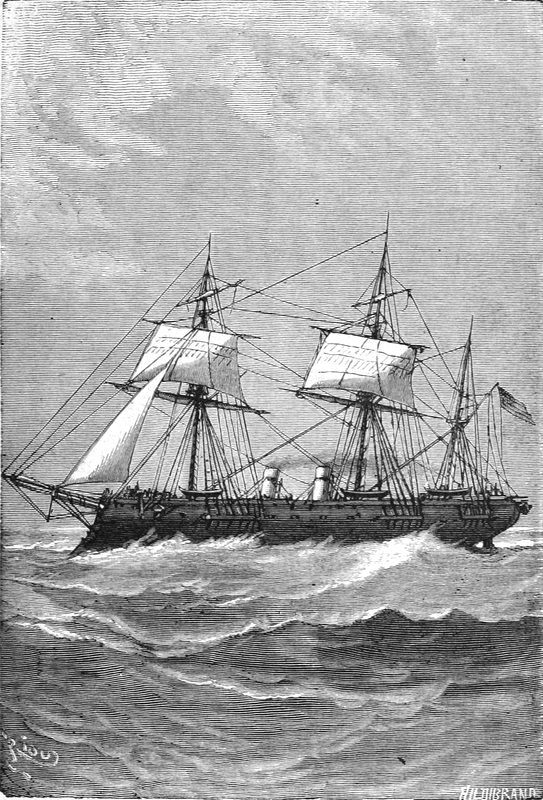
Assim, depois das investigações feitas na Inglaterra, na França, na Rússia, na Prússia, na Espanha, na Itália, na América e até na Turquia, a hipótese de um Monitor submarino foi definitivamente rejeitada.
O monstro voltou então à tona, apesar das incessantes piadas com que a pequena imprensa o espetava, e, por esse caminho, as imaginações logo se deixaram levar aos devaneios mais absurdos de uma ictiologia fantástica.
Quando cheguei a Nova York, várias pessoas me deram a honra de me consultar sobre o fenômeno em questão. Eu publicara na França uma obra in-quarto em dois volumes intitulada Os mistérios das grandes profundezas submarinas. Esse livro, particularmente apreciado pelo mundo científico, fazia de mim um especialista nesse ramo bastante obscuro da história natural. Pediram minha opinião. Enquanto pude negar a realidade do fato, encerrei-me numa negação absoluta. Mas logo, encostado à parede, tive de me explicar categoricamente. E até “o honorável Pierre Aronnax, professor do Museu de Paris” foi intimado pelo New York Herald a formular uma opinião qualquer.
Obedeci. Falei, por não poder me calar. Discuti a questão sob todos os seus aspectos, política e cientificamente, e dou aqui um trecho de um artigo muito substancioso que publiquei no número de 30 de abril.
“Assim, pois”, dizia eu, “depois de examinar uma a uma as diversas hipóteses, rejeitada qualquer outra suposição, é forçoso admitir a existência de um animal marinho de poder excessivo.
“As grandes profundezas do Oceano nos são totalmente desconhecidas. A sonda não conseguiu alcançá-las. O que se passa nesses abismos remotos? Que seres habitam, e podem habitar, a doze ou quinze milhas abaixo da superfície das águas? Qual é o organismo desses animais? Mal se poderia conjecturar.
“No entanto, a solução do problema que me é submetido pode assumir a forma de um dilema.
“Ou conhecemos todas as variedades de seres que povoam o nosso planeta, ou não as conhecemos.
“Se não as conhecemos todas, se a natureza ainda guarda segredos para nós em ictiologia, nada mais aceitável do que admitir a existência de peixes ou de cetáceos, de espécies ou mesmo de gêneros novos, de uma organização essencialmente ‘abissal’, que habitam as camadas inacessíveis à sonda e que um acontecimento qualquer, uma fantasia, um capricho, se quiserem, traz de tempos em tempos ao nível superior do Oceano.
“Se, ao contrário, conhecemos todas as espécies vivas, é forçoso procurar o animal em questão entre os seres marinhos já catalogados, e nesse caso eu estaria disposto a admitir a existência de um narval gigante.
“O narval comum, ou unicórnio-do-mar, atinge muitas vezes um comprimento de sessenta pés. Quintupliquem, decupliquem mesmo essa dimensão, deem a esse cetáceo uma força proporcional ao seu tamanho, aumentem suas armas ofensivas, e terão o animal procurado. Ele terá as proporções determinadas pelos oficiais do Shannon, o instrumento exigido pela perfuração do Scotia e a potência necessária para abrir o casco de um vapor.
“De fato, o narval é armado de uma espécie de espada de marfim, de uma alabarda, segundo a expressão de certos naturalistas. É um dente principal que tem a dureza do aço. Encontraram-se alguns desses dentes cravados no corpo de baleias, que o narval ataca sempre com sucesso. Outros foram arrancados, não sem esforço, de cascos de navios que haviam atravessado de lado a lado, como uma verruma atravessa um tonel. O museu da Faculdade de Medicina de Paris possui uma dessas presas, com dois metros e vinte e cinco centímetros de comprimento e quarenta e oito centímetros de largura na base!
“Pois bem! Suponham a arma dez vezes mais forte e o animal dez vezes mais poderoso, lancem-no a uma velocidade de vinte milhas por hora, multipliquem sua massa por sua velocidade, e terão um choque capaz de produzir a catástrofe em questão.
“Portanto, até mais amplas informações, eu me inclinaria por um unicórnio-do-mar de dimensões colossais, armado não mais de uma alabarda, mas de um verdadeiro esporão, como as fragatas couraçadas ou os rams de guerra, dos quais teria ao mesmo tempo a massa e a potência motriz.
“Assim se explicaria esse fenômeno inexplicável — a menos que não haja nada, apesar de tudo o que se entreviu, viu, sentiu e pressentiu —, o que ainda é possível!”
Estas últimas palavras eram uma covardia de minha parte; mas eu queria, até certo ponto, resguardar minha dignidade de professor e não dar demasiado motivo de riso aos americanos, que riem com gosto quando riem. Reservava-me uma escapatória. No fundo, eu admitia a existência do “monstro”.
Meu artigo foi calorosamente discutido, o que lhe valeu grande repercussão. Reuniu um certo número de partidários. A solução que propunha, aliás, deixava livre curso à imaginação. O espírito humano compraz-se nessas concepções grandiosas de seres sobrenaturais. Ora, o mar é justamente o seu melhor veículo, o único meio em que esses gigantes — perto dos quais os animais terrestres, elefantes ou rinocerontes, não passam de anões — podem surgir e desenvolver-se. As massas líquidas transportam as maiores espécies conhecidas de mamíferos, e talvez escondam moluscos de tamanho incomparável, crustáceos assustadores de contemplar, como seriam lagostas de cem metros ou caranguejos pesando duzentas toneladas! Por que não? Outrora, os animais terrestres contemporâneos das épocas geológicas, os quadrúpedes, os quadrúmanos, os répteis, as aves, eram construídos em moldes gigantescos. O Criador os lançara num molde colossal que o tempo foi reduzindo pouco a pouco. Por que o mar, nas suas profundezas ignoradas, não teria guardado esses vastos exemplares da vida de outra era, ele que nunca se modifica, enquanto o núcleo terrestre muda quase sem cessar? Por que não esconderia em seu seio as últimas variedades dessas espécies titânicas, cujos anos são séculos e cujos séculos são milênios?
Mas deixo-me levar a devaneios que já não me cabe alimentar! Basta dessas quimeras que o tempo transformou, para mim, em realidades terríveis. Repito: formou-se então a opinião sobre a natureza do fenômeno, e o público admitiu sem contestação a existência de um ser prodigioso que nada tinha em comum com as fabulosas serpentes marinhas.
Mas, se uns viram ali apenas um problema puramente científico a resolver, outros, mais práticos, sobretudo na América e na Inglaterra, foram de opinião que se devia livrar o Oceano desse temível monstro, a fim de dar segurança às comunicações transoceânicas. Os jornais industriais e comerciais trataram a questão principalmente desse ponto de vista. A Shipping and Mercantile Gazette, o Lloyd, o Paquebot, a Revue maritime et coloniale, todas as folhas devotadas às companhias de seguros, que ameaçavam elevar a taxa de seus prêmios, foram unânimes nesse ponto.
Pronunciada a opinião pública, os Estados da União foram os primeiros a se manifestar. Fizeram-se em Nova York os preparativos de uma expedição destinada a perseguir o narval. Uma fragata de grande andamento, a Abraham Lincoln, preparou-se para fazer-se ao mar o quanto antes. Os arsenais foram abertos ao comandante Farragut, que apressou ativamente o armamento de sua fragata.
Justamente — e como sempre acontece —, a partir do momento em que se decidiu perseguir o monstro, o monstro não reapareceu mais. Durante dois meses, ninguém ouviu falar dele. Nenhum navio o encontrou. Parecia que aquele Unicórnio tinha conhecimento das conspirações que se tramavam contra ele. Tanto se falara do assunto, e até pelo cabo transatlântico! Por isso os gaiatos diziam que o espertalhão interceptara de passagem algum telegrama e agora tirava proveito dele.
Assim, com a fragata armada para uma campanha distante e provida de formidáveis aparelhos de pesca, já não se sabia para onde mandá-la. E a impaciência ia crescendo quando, em 2 de julho, soube-se que um vapor da linha de San Francisco, na Califórnia, a Xangai tornara a ver o animal, três semanas antes, nos mares setentrionais do Pacífico.
A comoção causada por essa notícia foi extrema. Não se concederam ao comandante Farragut nem vinte e quatro horas de trégua. Seus víveres estavam embarcados. Seus paióis transbordavam de carvão. Não faltava um só homem em sua tripulação. Bastava acender as fornalhas, aquecer e zarpar! Não lhe teriam perdoado meio dia de atraso! Aliás, o comandante Farragut só queria partir.
Três horas antes de a Abraham Lincoln deixar o cais do Brooklyn, recebi uma carta redigida nestes termos:
“Senhor Aronnax, professor do Museu de Paris, Fifth Avenue Hotel,
“Nova York.
“Senhor,
“Se quiser juntar-se à expedição da Abraham Lincoln, o governo da União verá com prazer que a França esteja representada pelo senhor nessa empreitada. O comandante Farragut mantém um camarote à sua disposição.
“Muito cordialmente, seu
“J.-B. HOBSON,
“Secretário da Marinha.”
Três segundos antes da chegada da carta de J.-B. Hobson, eu não pensava em perseguir o Unicórnio mais do que em tentar a passagem do Noroeste. Três segundos depois de ler a carta do honorável secretário da Marinha, eu compreendia enfim que minha verdadeira vocação, o único objetivo de minha vida, era caçar aquele monstro inquietante e livrar dele o mundo.
No entanto, eu voltava de uma viagem penosa, cansado, ávido de repouso. Só aspirava a rever meu país, meus amigos, meu pequeno alojamento do Jardin des Plantes, minhas caras e preciosas coleções! Mas nada pôde me deter. Esqueci tudo, cansaço, amigos, coleções, e aceitei sem mais reflexão a oferta do governo americano.
“Aliás”, pensei, “todo caminho leva de volta à Europa, e o Unicórnio será amável o bastante para me arrastar rumo às costas da França! Esse digno animal há de se deixar apanhar nos mares da Europa — para meu deleite pessoal —, e eu não quero levar menos de meio metro de sua alabarda de marfim ao Museu de História Natural.”
Mas, enquanto isso, eu tinha de procurar esse narval no norte do oceano Pacífico; o que, para voltar à França, era tomar o caminho dos antípodas.
— Conseil! — gritei com voz impaciente.
Conseil era meu criado. Um rapaz dedicado que me acompanhava em todas as minhas viagens; um bom flamengo de quem eu gostava e que me retribuía bem; um ser fleumático por natureza, regular por princípio, zeloso por hábito, que pouco se espantava com as surpresas da vida, muito hábil com as mãos, apto para qualquer serviço e que, apesar do nome, nunca dava conselhos — nem mesmo quando lhe pediam.
De tanto conviver com os sábios do nosso pequeno mundo do Jardin des Plantes, Conseil acabara por saber alguma coisa. Eu tinha nele um especialista, muito versado na classificação em história natural, que percorria com agilidade de acrobata toda a escala dos ramos, dos grupos, das classes, das subclasses, das ordens, das famílias, dos gêneros, dos subgêneros, das espécies e das variedades. Mas sua ciência parava aí. Classificar era a sua vida, e ele não sabia mais nada. Muito versado na teoria da classificação, pouco na prática, não teria distinguido, creio eu, um cachalote de uma baleia! E, no entanto, que bom e digno rapaz!
Conseil, até então e havia dez anos, me seguira por toda parte aonde a ciência me arrastava. Nunca uma observação dele sobre a extensão ou o cansaço de uma viagem. Nenhuma objeção a fechar a mala para um país qualquer, China ou Congo, por mais distante que fosse. Ia lá como aqui, sem perguntar mais nada. Além disso, tinha uma bela saúde que desafiava todas as doenças; músculos sólidos, mas nada de nervos, nem a aparência de nervos — no sentido moral, entenda-se.
Esse rapaz tinha trinta anos, e sua idade estava para a do patrão como quinze está para vinte. Perdoem-me dizer desse modo que eu tinha quarenta anos.
Só que Conseil tinha um defeito. Formalista ferrenho, nunca me falava senão na terceira pessoa — a ponto de ser irritante.
— Conseil! — repeti, começando com mão febril meus preparativos de partida.
Certamente, eu tinha certeza daquele rapaz tão dedicado. Normalmente, eu nunca lhe perguntava se lhe convinha ou não me seguir em minhas viagens; mas desta vez se tratava de uma expedição que podia prolongar-se indefinidamente, de uma empresa arriscada, à caça de um animal capaz de afundar uma fragata como uma casca de noz! Havia ali matéria para reflexão, até para o homem mais impassível do mundo! O que diria Conseil?
— Conseil! — gritei pela terceira vez.
Conseil apareceu.
— O senhor me chamou? — disse ele, entrando.
— Sim, meu rapaz. Prepare as minhas coisas, prepare as suas. Partimos daqui a duas horas.
— Como o senhor quiser — respondeu tranquilamente Conseil.
— Nem um instante a perder. Guarde na minha mala todos os meus utensílios de viagem, roupas, camisas, meias, sem contar, mas o máximo que puder, e depressa!
— E as coleções do senhor? — observou Conseil.
— Cuidaremos delas mais tarde.
— Como! Os arqueotérios, os hiracotérios, os oreodontes, os queropótamos e as outras carcaças do senhor?
— Ficarão guardados no hotel.
— E a babirussa viva do senhor?
— Vão alimentá-la durante a nossa ausência. Aliás, darei ordem para que nos mandem a nossa coleção de bichos para a França.
— Então não voltamos para Paris? — perguntou Conseil.
— Voltamos… certamente… — respondi evasivamente —, mas fazendo um desvio.
— O desvio que o senhor quiser.
— Oh! Não será grande coisa! Um caminho um pouco menos direto, só isso. Vamos embarcar na Abraham Lincoln.
— Como convier ao senhor — respondeu placidamente Conseil.
— Você sabe, meu amigo, trata-se do monstro… do famoso narval… Vamos livrar os mares dele!… O autor de uma obra in-quarto em dois volumes sobre os Mistérios das grandes profundezas submarinas não pode deixar de embarcar com o comandante Farragut. Missão gloriosa, mas… perigosa também! Não se sabe para onde se vai! Esses bichos podem ser muito caprichosos! Mas iremos assim mesmo! Temos um comandante que não tem medo de nada!…
— O que o senhor fizer, eu farei — respondeu Conseil.
— E pense bem! Porque não quero lhe esconder nada. Esta é uma daquelas viagens de que nem sempre se volta!
— Como o senhor quiser.
Um quarto de hora depois, nossas malas estavam prontas. Conseil as fizera num piscar de olhos, e eu tinha certeza de que nada faltava, pois aquele rapaz classificava as camisas e as roupas tão bem quanto as aves ou os mamíferos.
O elevador do hotel nos deixou no grande vestíbulo da sobreloja. Desci os poucos degraus que levavam ao térreo. Acertei minha conta naquele vasto balcão sempre assediado por uma multidão considerável. Dei ordem para despachar para Paris (França) meus fardos de animais empalhados e de plantas secas. Mandei abrir um crédito suficiente para a babirussa e, com Conseil me seguindo, saltei para dentro de um carro.

O veículo, a vinte francos a corrida, desceu a Broadway até a Union Square, seguiu a Fourth Avenue até sua junção com a Bowery Street, tomou a Katrin Street e parou no trigésimo quarto pier2. Ali, o ferry-boat de Katrin nos transportou, homens, cavalos e carro, até o Brooklyn, o grande anexo de Nova York, situado na margem esquerda do East River, e em poucos minutos chegávamos ao cais junto ao qual a Abraham Lincoln vomitava por suas duas chaminés torrentes de fumaça negra.
Nossas bagagens foram imediatamente transferidas para o convés da fragata. Precipitei-me a bordo. Perguntei pelo comandante Farragut. Um dos marinheiros me conduziu ao tombadilho, onde me vi diante de um oficial de boa aparência que me estendeu a mão.
— O senhor Pierre Aronnax? — disse-me ele.
— Ele mesmo — respondi. — O comandante Farragut?
— Em pessoa. Seja bem-vindo, senhor professor. Seu camarote o espera.
Cumprimentei-o e, deixando o comandante entregue aos cuidados da partida, fiz-me conduzir ao camarote que me era destinado.

A Abraham Lincoln tinha sido perfeitamente escolhida e equipada para sua nova missão. Era uma fragata de grande andamento, munida de aparelhos superaquecedores que permitiam elevar a sete atmosferas a pressão de seu vapor. Sob essa pressão, a Abraham Lincoln atingia uma velocidade média de dezoito milhas e três décimos por hora, velocidade considerável, mas ainda assim insuficiente para lutar com o gigantesco cetáceo.
As instalações interiores da fragata correspondiam às suas qualidades náuticas. Fiquei muito satisfeito com meu camarote, situado na popa, que se abria para a praça-d’armas dos oficiais.
— Estaremos bem aqui — disse eu a Conseil.
— Tão bem, com a licença do senhor — respondeu Conseil —, quanto um bernardo-eremita na concha de um búzio.
Deixei Conseil arrumar convenientemente nossas malas e voltei ao convés para acompanhar os preparativos da partida.
Naquele momento, o comandante Farragut mandava soltar as últimas amarras que prendiam a Abraham Lincoln ao pier do Brooklyn. Assim, um quarto de hora de atraso, ou menos até, e a fragata partiria sem mim, e eu perderia essa expedição extraordinária, sobrenatural, inverossímil, cujo relato verídico poderá ainda assim encontrar alguns incrédulos.
Mas o comandante Farragut não queria perder nem um dia, nem uma hora para alcançar os mares em que o animal acabara de ser assinalado. Mandou chamar seu engenheiro.
— Estamos com pressão? — perguntou-lhe.
— Sim, senhor — respondeu o engenheiro.
— Go ahead! — gritou o comandante Farragut.
A essa ordem, que foi transmitida à máquina por meio de aparelhos de ar comprimido, os mecânicos acionaram a roda de arranque. O vapor assobiou ao precipitar-se nas gavetas entreabertas. Os longos pistões horizontais gemeram e empurraram as bielas do eixo. As pás da hélice bateram as ondas com rapidez crescente, e a Abraham Lincoln avançou majestosamente no meio de uma centena de ferry-boats e de tenders3 carregados de espectadores, que lhe faziam cortejo.
Os cais do Brooklyn e toda a parte de Nova York que margeia o East River estavam cobertos de curiosos. Três hurras, saídos de quinhentos mil peitos, explodiram sucessivamente. Milhares de lenços agitaram-se acima da massa compacta e saudaram a Abraham Lincoln até sua chegada às águas do Hudson, na ponta daquela península alongada que forma a cidade de Nova York.
Então a fragata, seguindo do lado de Nova Jersey a admirável margem direita do rio, toda coberta de vilas, passou entre os fortes, que a saudaram com seus maiores canhões. A Abraham Lincoln respondeu baixando e içando três vezes a bandeira americana, cujas trinta e nove estrelas resplandeciam no pique da mezena; depois, mudando de rumo para tomar o canal balizado que se curva na baía interior formada pela ponta de Sandy Hook, roçou essa língua de areia onde alguns milhares de espectadores a aclamaram mais uma vez.
O cortejo dos barcos e dos tenders continuava seguindo a fragata, e só a deixou à altura do barco-farol cujas duas luzes marcam a entrada dos canais de Nova York.
Soavam então três horas. O piloto desceu para seu escaler e juntou-se à pequena escuna que o esperava a sotavento. Os fogos foram atiçados; a hélice bateu mais depressa as ondas; a fragata costeou o litoral amarelo e baixo de Long Island e, às oito da noite, depois de perder no noroeste as luzes de Fire Island, correu a todo vapor sobre as águas sombrias do Atlântico.
O comandante Farragut era um bom marinheiro, digno da fragata que comandava. Ele e seu navio eram um só. Ele era a alma do navio. Sobre a questão do cetáceo, nenhuma dúvida se erguia em seu espírito, e ele não permitia que a existência do animal fosse discutida a bordo. Acreditava nela como certas boas mulheres acreditam no Leviatã — por fé, não por razão. O monstro existia, e ele livraria dele os mares; havia jurado. Era uma espécie de cavaleiro de Rodes, um Dieudonné de Gozon, marchando ao encontro da serpente que devastava a sua ilha. Ou o comandante Farragut mataria o narval, ou o narval mataria o comandante Farragut. Não havia meio-termo.
Os oficiais de bordo partilhavam a opinião do chefe. Era preciso ouvi-los conversar, discutir, disputar, calcular as diversas probabilidades de um encontro e observar a vasta extensão do Oceano. Mais de um se impunha um quarto voluntário nos vaus do joanete, quando em qualquer outra circunstância teria amaldiçoado semelhante tarefa. Enquanto o sol descrevia seu arco diurno, a mastreação ficava povoada de marinheiros a quem as tábuas do convés queimavam os pés e que lá não conseguiam ficar parados! E, no entanto, a Abraham Lincoln ainda não cortava com sua roda de proa as águas suspeitas do Pacífico.
Quanto à tripulação, só queria encontrar o unicórnio, arpoá-lo, içá-lo a bordo, esquartejá-lo. Vigiava o mar com escrupulosa atenção. Aliás, o comandante Farragut falava de certa quantia de dois mil dólares, reservada a quem quer que, grumete ou marinheiro, contramestre ou oficial, avistasse o animal. Deixo imaginar como os olhos se exercitavam a bordo da Abraham Lincoln.
De minha parte, eu não ficava atrás dos outros e não deixava a ninguém a minha parte das observações diárias. A fragata teria tido cem vezes razão de se chamar Argus. Só Conseil, entre todos, protestava com sua indiferença quanto à questão que nos apaixonava, e destoava do entusiasmo geral de bordo.
Eu disse que o comandante Farragut munira cuidadosamente seu navio de aparelhos próprios para pescar o gigantesco cetáceo. Um baleeiro não estaria mais bem armado. Possuíamos todos os engenhos conhecidos, desde o arpão lançado à mão até as flechas farpadas dos bacamartes e as balas explosivas das espingardas de caça. No castelo de proa estendia-se um canhão aperfeiçoado, de carregar pela culatra, de paredes muito grossas e alma muito estreita, cujo modelo deve figurar na Exposição Universal de 1867. Esse precioso instrumento, de origem americana, lançava sem esforço um projétil cônico de quatro quilos a uma distância média de dezesseis quilômetros.
Portanto, não faltava à Abraham Lincoln nenhum meio de destruição. Mas ela tinha coisa ainda melhor. Tinha Ned Land, o rei dos arpoadores.
Ned Land era um canadense de uma habilidade manual pouco comum, que não conhecia igual em seu perigoso ofício. Destreza e sangue-frio, audácia e astúcia, ele possuía essas qualidades em grau superior, e era preciso ser uma baleia muito maliciosa, ou um cachalote singularmente astuto, para escapar a seu golpe de arpão.
Ned Land tinha cerca de quarenta anos. Era um homem de grande estatura — mais de seis pés ingleses —, de constituição vigorosa, ar grave, pouco comunicativo, violento às vezes e muito colérico quando contrariado. Sua pessoa chamava a atenção, sobretudo pela força de seu olhar, que acentuava singularmente a fisionomia.
Creio que o comandante Farragut fizera bem em contratar aquele homem para bordo. Ele valia, sozinho, a tripulação inteira, pelo olho e pelo braço. Não saberia compará-lo melhor do que a um telescópio potente que fosse ao mesmo tempo um canhão sempre pronto a disparar.
Quem diz canadense diz francês e, por menos comunicativo que fosse Ned Land, devo confessar que ele tomou certa afeição por mim. Minha nacionalidade o atraía, sem dúvida. Era uma ocasião para ele falar, e para mim ouvir aquela velha língua de Rabelais que ainda se usa em algumas províncias canadenses. A família do arpoador era originária de Quebec e já formava uma tribo de pescadores intrépidos na época em que aquela cidade pertencia à França.
Pouco a pouco, Ned tomou gosto pela conversa, e eu gostava de ouvir o relato de suas aventuras nos mares polares. Ele contava suas pescas e seus combates com grande poesia natural. Sua narrativa assumia uma forma épica, e eu julgava ouvir algum Homero canadense cantando a Ilíada das regiões hiperbóreas.
Descrevo agora esse ousado companheiro tal como o conheço hoje. É que nos tornamos velhos amigos, unidos por essa amizade inalterável que nasce e se cimenta nas conjunturas mais aterradoras! Ah, bravo Ned! Só peço para viver mais cem anos, para me lembrar de você por mais tempo!
E agora, qual era a opinião de Ned Land sobre a questão do monstro marinho? Devo confessar que ele mal acreditava no unicórnio e que, único a bordo, não partilhava a convicção geral. Evitava até tratar desse assunto, sobre o qual julguei dever abordá-lo um dia.
Numa noite magnífica de 30 de julho, isto é, três semanas depois de nossa partida, a fragata se encontrava à altura do cabo Blanco, a trinta milhas a sotavento das costas da Patagônia. Tínhamos ultrapassado o trópico de Capricórnio, e o estreito de Magalhães abria-se a menos de setecentas milhas ao sul. Antes de oito dias, a Abraham Lincoln sulcaria as ondas do Pacífico.
Sentados no tombadilho, Ned Land e eu conversávamos sobre uma coisa e outra, olhando aquele mar misterioso cujas profundezas permaneceram até hoje inacessíveis aos olhares do homem. Levei com toda a naturalidade a conversa para o unicórnio gigante e examinei as diversas probabilidades de êxito ou de fracasso de nossa expedição. Depois, vendo que Ned me deixava falar sem dizer grande coisa, instiguei-o mais diretamente.
— Como, Ned — perguntei-lhe —, como pode não estar convencido da existência do cetáceo que perseguimos? Tem razões particulares para se mostrar tão incrédulo?
O arpoador olhou para mim por alguns instantes antes de responder, bateu com a mão na testa larga, num gesto que lhe era habitual, fechou os olhos como para se concentrar e disse enfim:
— Talvez tenha, senhor Aronnax.
— No entanto, Ned, o senhor, um baleeiro de profissão, familiarizado com os grandes mamíferos marinhos, cuja imaginação deve aceitar facilmente a hipótese de cetáceos enormes, deveria ser o último a duvidar em semelhantes circunstâncias!
— É aí que o senhor se engana, senhor professor — respondeu Ned. — Que o vulgo acredite em cometas extraordinários que atravessam o espaço, ou na existência de monstros antediluvianos que povoam o interior do globo, ainda passa; mas nem o astrônomo nem o geólogo admitem tais quimeras. O baleeiro também não. Persegui muitos cetáceos, arpoei um grande número, matei vários, mas, por mais poderosos e bem armados que fossem, nem suas caudas nem suas presas teriam conseguido abrir as chapas de ferro de um vapor.
— Contudo, Ned, citam-se navios que o dente do narval atravessou de lado a lado.
— Navios de madeira, é possível — respondeu o canadense —, e mesmo esses eu nunca vi. Portanto, até prova em contrário, nego que baleias, cachalotes ou unicórnios possam produzir semelhante efeito.
— Escute, Ned…
— Não, senhor professor, não. Tudo o que o senhor quiser, menos isso. Um polvo gigantesco, talvez?…
— Menos ainda, Ned. O polvo não passa de um molusco, e esse mesmo nome indica a pouca consistência de suas carnes. Ainda que tivesse quinhentos pés de comprimento, o polvo, que não pertence ao ramo dos vertebrados, é totalmente inofensivo para navios como o Scotia ou a Abraham Lincoln. É preciso, pois, relegar à categoria das fábulas as proezas dos Krakens ou de outros monstros dessa espécie.
— Então, senhor naturalista — retomou Ned Land num tom bastante zombeteiro —, o senhor persiste em admitir a existência de um enorme cetáceo…?
— Sim, Ned, repito-lhe com uma convicção que se apoia na lógica dos fatos. Creio na existência de um mamífero de organização poderosa, pertencente ao ramo dos vertebrados, como as baleias, os cachalotes ou os golfinhos, e munido de uma presa córnea cuja força de penetração é extrema.
— Hum! — fez o arpoador, sacudindo a cabeça com o ar de um homem que não quer se deixar convencer.
— Observe, meu digno canadense — continuei —, que, se tal animal existe, se habita as profundezas do Oceano, se frequenta as camadas líquidas situadas a algumas milhas abaixo da superfície das águas, possui necessariamente um organismo cuja solidez desafia qualquer comparação.
— E por que um organismo tão poderoso? — perguntou Ned.
— Porque é preciso uma força incalculável para se manter nas camadas profundas e resistir à sua pressão.
— É mesmo? — disse Ned, olhando para mim e piscando o olho.
— É mesmo, e alguns números lhe provarão isso sem esforço.
— Ah, os números! — replicou Ned. — Faz-se o que se quer com os números!
— Nos negócios, Ned, mas não na matemática. Escute. Admitamos que a pressão de uma atmosfera seja representada pela pressão de uma coluna de água de trinta e dois pés de altura. Na realidade, a coluna de água seria de altura menor, já que se trata da água do mar, cuja densidade é superior à da água doce. Pois bem, quando o senhor mergulha, Ned, a cada trinta e dois pés de água acima do senhor, seu corpo suporta mais uma pressão igual à da atmosfera, isto é, de um quilo por centímetro quadrado de sua superfície. Daí se segue que a trezentos e vinte pés essa pressão é de dez atmosferas, de cem atmosferas a três mil e duzentos pés, e de mil atmosferas a trinta e dois mil pés, ou seja, cerca de duas léguas e meia. O que equivale a dizer que, se o senhor pudesse atingir essa profundidade no Oceano, cada centímetro quadrado da superfície do seu corpo sofreria uma pressão de mil quilos. Ora, meu bom Ned, sabe quantos centímetros quadrados o senhor tem de superfície?
— Nem desconfio, senhor Aronnax.
— Cerca de dezessete mil.
— Tudo isso?
— E como, na realidade, a pressão atmosférica é um pouco superior ao peso de um quilo por centímetro quadrado, seus dezessete mil centímetros quadrados suportam neste momento uma pressão de dezessete mil quinhentos e sessenta e oito quilos.
— Sem que eu perceba?
— Sem que o senhor perceba. E, se não é esmagado por tal pressão, é porque o ar penetra no interior de seu corpo com uma pressão igual. Daí um equilíbrio perfeito entre o empuxo interior e o empuxo exterior, que se neutralizam, o que lhe permite suportá-los sem esforço. Mas na água é outra coisa.
— Sim, compreendo — respondeu Ned, agora mais atento —, porque a água me envolve e não me penetra.
— Exatamente, Ned. Assim, a trinta e dois pés abaixo da superfície do mar, o senhor sofreria uma pressão de dezessete mil quinhentos e sessenta e oito quilos; a trezentos e vinte pés, dez vezes essa pressão, ou seja, cento e setenta e cinco mil seiscentos e oitenta quilos; a três mil e duzentos pés, cem vezes essa pressão, ou seja, um milhão setecentos e cinquenta e seis mil e oitocentos quilos; a trinta e dois mil pés, enfim, mil vezes essa pressão, ou seja, dezessete milhões quinhentos e sessenta e oito mil quilos; isto é, o senhor ficaria achatado como se o tirassem dos pratos de uma prensa hidráulica!

— Diabo! — fez Ned.
— Pois bem, meu digno arpoador, se vertebrados com várias centenas de metros de comprimento, e grossos na mesma proporção, se mantêm em tais profundidades, eles cuja superfície é representada por milhões de centímetros quadrados, é em bilhões de quilos que se deve estimar o empuxo que sofrem. Calcule então qual deve ser a resistência de sua armação óssea e a potência de seu organismo para resistir a tais pressões!

— É preciso — respondeu Ned Land — que sejam fabricados com chapas de ferro de oito polegadas, como as fragatas couraçadas.
— Como o senhor diz, Ned, e pense então nos estragos que pode produzir semelhante massa lançada com a velocidade de um trem expresso contra o casco de um navio.
— Sim… de fato… talvez — respondeu o canadense, abalado por aqueles números, mas sem querer se render.
— Então, eu o convenci?
— O senhor me convenceu de uma coisa, senhor naturalista: se tais animais existem no fundo dos mares, eles precisam necessariamente ser tão fortes quanto o senhor diz.
— Mas, se não existem, teimoso arpoador, como explica o acidente ocorrido com o Scotia?
— Talvez seja… — disse Ned, hesitante.
— Vamos, diga!
— Porque… não é verdade! — respondeu o canadense, reproduzindo sem saber uma célebre resposta de Arago.
Mas essa resposta provava a obstinação do arpoador e nada mais. Naquele dia, não o pressionei mais. O acidente do Scotia não podia ser negado. O buraco existia tanto que fora preciso tapá-lo, e não creio que a existência de um buraco possa ser demonstrada de maneira mais categórica. Ora, esse buraco não se fizera sozinho e, já que não fora produzido por rochas submarinas nem por engenhos submarinos, devia-se necessariamente à ferramenta perfurante de um animal.
Ora, a meu ver, e por todas as razões deduzidas acima, esse animal pertencia ao ramo dos vertebrados, à classe dos mamíferos, ao grupo dos pisciformes e, finalmente, à ordem dos cetáceos. Quanto à família em que se inscrevia, baleia, cachalote ou golfinho, quanto ao gênero de que fazia parte, quanto à espécie em que convinha classificá-lo, era uma questão a elucidar mais tarde. Para resolvê-la, era preciso dissecar aquele monstro desconhecido; para dissecá-lo, apanhá-lo; para apanhá-lo, arpoá-lo — o que era assunto de Ned Land —; para arpoá-lo, vê-lo — o que era assunto da tripulação —; e para vê-lo, encontrá-lo — o que era assunto do acaso.
A viagem da Abraham Lincoln, durante algum tempo, não foi marcada por nenhum incidente. Apresentou-se, porém, uma circunstância que pôs em relevo a maravilhosa habilidade de Ned Land e mostrou quanta confiança se devia ter nele.
Ao largo das Malvinas, em 30 de junho, a fragata comunicou-se com baleeiros americanos, e soubemos que eles não tinham tido notícia alguma do narval. Mas um deles, o capitão do Monroe, sabendo que Ned Land estava embarcado na Abraham Lincoln, pediu sua ajuda para caçar uma baleia que estava à vista. O comandante Farragut, desejoso de ver Ned Land em ação, autorizou-o a ir a bordo do Monroe. E o acaso serviu tão bem ao nosso canadense que, em vez de uma baleia, ele arpoou duas num golpe duplo, atingindo uma bem no coração e apoderando-se da outra depois de uma perseguição de alguns minutos!
Decididamente, se o monstro algum dia tiver de se haver com o arpão de Ned Land, não apostarei no monstro.
A fragata costeou o litoral sudeste da América com rapidez prodigiosa. Em 3 de julho, estávamos na entrada do estreito de Magalhães, à altura do cabo das Virgens. Mas o comandante Farragut não quis tomar essa passagem sinuosa e manobrou de modo a dobrar o cabo Horn.
A tripulação deu-lhe razão por unanimidade. E, de fato, era provável que se pudesse encontrar o narval naquele estreito apertado? Bom número de marinheiros afirmava que o monstro não podia passar por ali, “que era grande demais para isso!”.
Em 6 de julho, por volta das três da tarde, a Abraham Lincoln, a quinze milhas ao sul, dobrou aquela ilhota solitária, aquele rochedo perdido na extremidade do continente americano, ao qual marinheiros holandeses impuseram o nome de sua cidade natal, o cabo Horn. Tomou-se o rumo noroeste e, no dia seguinte, a hélice da fragata bateu enfim as águas do Pacífico.
— Olho vivo! Olho vivo! — repetiam os marinheiros da Abraham Lincoln.
E eles abriam os olhos desmesuradamente. Os olhos e as lunetas, um pouco ofuscados, é verdade, pela perspectiva dos dois mil dólares, não ficaram um só instante em repouso. Dia e noite observava-se a superfície do Oceano, e os nictalopes, cuja faculdade de ver no escuro aumentava em cinquenta por cento as probabilidades, levavam vantagem para ganhar o prêmio.
Eu, a quem a isca do dinheiro pouco atraía, não era contudo o menos atento a bordo. Dando apenas alguns minutos às refeições, algumas horas ao sono, indiferente ao sol ou à chuva, eu não saía mais do convés do navio. Ora debruçado sobre as amuradas do castelo de proa, ora apoiado à amurada da popa, eu devorava com olhar ávido a esteira algodoada que branqueava o mar a perder de vista! E quantas vezes partilhei a emoção do estado-maior e da tripulação, quando alguma baleia caprichosa erguia seu dorso enegrecido acima das ondas. O convés da fragata povoava-se num instante. As escotilhas vomitavam uma torrente de marinheiros e oficiais. Cada um, de peito arquejante, olhar perturbado, observava a marcha do cetáceo. Eu olhava, olhava até gastar a retina, até ficar cego, enquanto Conseil, sempre fleumático, me repetia num tom calmo:
— Se o senhor fizesse a bondade de arregalar menos os olhos, o senhor veria muito mais!
Mas, vã emoção! A Abraham Lincoln mudava de rumo, corria sobre o animal assinalado, simples baleia ou cachalote vulgar, que logo desaparecia no meio de um concerto de imprecações!
Entretanto, o tempo continuava favorável. A viagem se fazia nas melhores condições. Era então a estação ruim do hemisfério austral, pois o julho daquela zona corresponde ao nosso janeiro europeu; mas o mar se mantinha bonito e deixava-se observar facilmente num vasto perímetro.
Ned Land continuava a mostrar a mais tenaz incredulidade; chegava a fingir que não examinava a superfície das ondas fora de seu turno de quarto — pelo menos quando nenhuma baleia estava à vista. E, no entanto, sua maravilhosa capacidade de visão teria prestado grandes serviços. Mas, oito horas em cada doze, aquele canadense teimoso lia ou dormia em seu camarote. Cem vezes lhe censurei a indiferença.
— Ora! — respondia ele. — Não há nada, senhor Aronnax, e, ainda que houvesse algum animal, que chance teríamos de avistá-lo? Não estamos correndo à aventura? Tornaram a ver, dizem, esse bicho que ninguém consegue achar nos altos mares do Pacífico, admito; mas já se passaram dois meses desde esse encontro e, a julgar pelo temperamento do seu narval, ele não gosta de mofar muito tempo nas mesmas paragens! É dotado de uma prodigiosa facilidade de deslocamento. Ora, o senhor sabe disso melhor do que eu, senhor professor, a natureza não faz nada às avessas, e não daria a um animal lento por natureza a faculdade de se mover rapidamente se ele não precisasse dela. Portanto, se o bicho existe, já está longe!
A isso eu não sabia o que responder. Evidentemente, avançávamos às cegas. Mas que meio havia de proceder de outro modo? Por isso nossas chances eram muito limitadas. Ainda assim, ninguém duvidava do êxito, e nem um marinheiro a bordo teria apostado contra o narval e contra o seu próximo aparecimento.
Em 20 de julho, cortamos o trópico de Capricórnio a 105° de longitude, e no dia 27 do mesmo mês atravessávamos o equador no centésimo décimo meridiano. Feita essa observação, a fragata tomou uma direção mais decidida para oeste e embrenhou-se nos mares centrais do Pacífico. O comandante Farragut pensava, com razão, que era melhor frequentar as águas profundas e afastar-se dos continentes ou das ilhas cuja proximidade o animal sempre parecera evitar, “sem dúvida porque não havia água bastante para ele!”, dizia o contramestre. A fragata passou, portanto, ao largo das Tuamotu, das Marquesas, das Sandwich, cortou o trópico de Câncer a 132° de longitude e dirigiu-se para os mares da China.
Estávamos enfim no teatro das últimas travessuras do monstro! E, para dizer tudo, já não se vivia a bordo. Os corações palpitavam terrivelmente e preparavam para o futuro aneurismas incuráveis. A tripulação inteira sofria uma superexcitação nervosa de que eu não saberia dar ideia. Não se comia, não se dormia mais. Vinte vezes por dia, um erro de avaliação, uma ilusão de ótica de algum marinheiro empoleirado nos vaus, causavam sobressaltos intoleráveis, e essas emoções, vinte vezes repetidas, mantinham-nos num estado de eretismo violento demais para não provocar uma reação próxima.
E, de fato, a reação não tardou a se produzir. Durante três meses, três meses em que cada dia durava um século!, a Abraham Lincoln sulcou todos os mares setentrionais do Pacífico, correndo atrás das baleias assinaladas, fazendo bruscos desvios de rota, virando subitamente de um bordo para o outro, parando de repente, forçando ou invertendo o vapor, um golpe atrás do outro, com risco de desajustar a máquina, e não deixou um ponto inexplorado desde as praias do Japão até a costa americana. E nada! Nada além da imensidão das ondas desertas! Nada que se parecesse com um narval gigantesco, nem com uma ilhota submarina, nem com os destroços de um naufrágio, nem com um recife fugidio, nem com coisa alguma de sobrenatural!
A reação veio, pois. O desânimo apoderou-se primeiro dos espíritos e abriu uma brecha à incredulidade. Um sentimento novo se produziu a bordo, composto de três décimos de vergonha e sete décimos de fúria. Todos se sentiam “uns tolos” por se terem deixado levar por uma quimera, mas ainda mais furiosos! As montanhas de argumentos empilhados durante um ano desmoronaram de uma vez, e cada um só pensou em recuperar, nas horas de refeição ou de sono, o tempo que tão tolamente sacrificara.
Com a volubilidade natural do espírito humano, passou-se de um excesso a outro. Os mais calorosos partidários da empresa tornaram-se fatalmente seus mais ardentes detratores. A reação subiu do fundo do navio, do alojamento dos foguistas até a praça-d’armas do estado-maior, e certamente, não fosse uma teimosia muito particular do comandante Farragut, a fragata teria definitivamente aproado ao sul.
No entanto, essa busca inútil não podia prolongar-se mais. A Abraham Lincoln nada tinha a se censurar, tendo feito tudo para ter êxito. Nunca a tripulação de um navio da marinha americana mostrou mais paciência e mais zelo; seu fracasso não lhe podia ser imputado; só restava voltar.
Fez-se uma representação nesse sentido ao comandante. O comandante resistiu. Os marinheiros não esconderam o descontentamento, e o serviço ressentiu-se disso. Não quero dizer que houve revolta a bordo, mas, depois de um período razoável de obstinação, o comandante Farragut, como outrora Colombo, pediu três dias de paciência. Se no prazo de três dias o monstro não aparecesse, o timoneiro daria três voltas no leme, e a Abraham Lincoln rumaria para os mares europeus.
Essa promessa foi feita em 2 de novembro. Teve como primeiro resultado reanimar os desfalecimentos da tripulação. O Oceano foi observado com nova atenção. Cada um queria lançar-lhe aquele último olhar no qual se resume toda a lembrança. As lunetas funcionaram com uma atividade febril. Era um supremo desafio lançado ao narval gigante, e este não podia razoavelmente deixar de responder a essa intimação “a comparecer”!
Passaram-se dois dias. A Abraham Lincoln mantinha-se a pouco vapor. Empregavam-se mil meios para despertar a atenção ou estimular a apatia do animal, caso ele se encontrasse naquelas paragens. Enormes nacos de toucinho foram arrastados a reboque — para grande satisfação dos tubarões, devo dizer. Os botes irradiaram em todas as direções em torno da Abraham Lincoln, enquanto ela ficava de capa, e não deixaram um ponto do mar inexplorado. Mas a noite de 4 de novembro chegou sem que se tivesse desvendado aquele mistério submarino.
No dia seguinte, 5 de novembro, ao meio-dia, expirava o prazo improrrogável. Depois de tirada a posição, o comandante Farragut, fiel à sua promessa, devia tomar o rumo sudeste e abandonar definitivamente as regiões setentrionais do Pacífico.
A fragata encontrava-se então a 31° 15′ de latitude norte e 136° 42′ de longitude leste. As terras do Japão ficavam a menos de duzentas milhas a sotavento. A noite se aproximava. Acabavam de soar oito horas. Grossas nuvens velavam o disco da lua, então em quarto crescente. O mar ondulava placidamente sob a roda de proa da fragata.
Naquele momento, eu estava apoiado à proa, na amurada de estibordo. Conseil, postado perto de mim, olhava para a frente. A tripulação, empoleirada nos ovéns, examinava o horizonte, que se estreitava e escurecia pouco a pouco. Os oficiais, armados de seus binóculos noturnos, esquadrinhavam a escuridão crescente. Às vezes o Oceano sombrio cintilava sob um raio que a lua dardejava entre a franja de duas nuvens. Depois, todo vestígio luminoso se desvanecia nas trevas.
Observando Conseil, constatei que aquele bom rapaz sofria um tanto a influência geral. Pelo menos, foi o que julguei. Talvez, e pela primeira vez, seus nervos vibrassem sob a ação de um sentimento de curiosidade.
— Vamos, Conseil — disse-lhe eu —, eis uma última ocasião de embolsar dois mil dólares.
— Que o senhor me permita dizer-lhe — respondeu Conseil —, nunca contei com esse prêmio, e o governo da União podia prometer cem mil dólares que não ficaria mais pobre por isso.
— Você tem razão, Conseil. É um negócio tolo, afinal, no qual nos lançamos levianamente demais. Quanto tempo perdido, quantas emoções inúteis! Já faz seis meses que estaríamos de volta à França…
— No pequeno apartamento do senhor — replicou Conseil —, no Museu do senhor! E eu já teria classificado os fósseis do senhor! E a babirussa do senhor estaria instalada em sua jaula do Jardin des Plantes, atraindo todos os curiosos da capital!
— Como você diz, Conseil, e sem contar, imagino, que vão zombar de nós!
— Efetivamente — respondeu tranquilamente Conseil —, penso que vão zombar do senhor. E, devo dizê-lo…?
— Deve, Conseil.
— Pois bem, o senhor só terá o que merece!
— Ora essa!
— Quando se tem a honra de ser um sábio como o senhor, não se expõe…
Conseil não pôde concluir o elogio. No meio do silêncio geral, uma voz acabava de se fazer ouvir. Era a voz de Ned Land, e Ned Land exclamava:
— Olá! A coisa em questão, a sotavento, pelo nosso través!

A esse grito, a tripulação inteira precipitou-se para o arpoador, comandante, oficiais, contramestres, marinheiros, grumetes, até os engenheiros, que deixaram a máquina, até os foguistas, que abandonaram as fornalhas. A ordem de parar fora dada, e a fragata só avançava pelo próprio embalo.
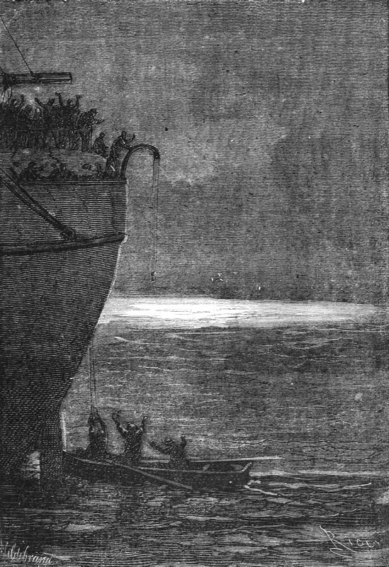
A escuridão era então profunda e, por melhores que fossem os olhos do canadense, eu me perguntava como ele tinha visto e o que podia ter visto. Meu coração batia a ponto de se romper.
Mas Ned Land não se enganara, e todos nós avistamos o objeto que ele apontava com a mão.
A duas amarras da Abraham Lincoln e de sua alheta de estibordo, o mar parecia iluminado por baixo. Não era um simples fenômeno de fosforescência, e não havia como se enganar. O monstro, submerso a algumas toesas da superfície das águas, projetava aquele brilho muito intenso, mas inexplicável, que os relatórios de vários capitães mencionavam. Essa magnífica irradiação devia ser produzida por um agente de grande poder iluminante. A parte luminosa descrevia sobre o mar um imenso oval muito alongado, em cujo centro se condensava um foco ardente, cujo brilho insuportável se apagava em gradações sucessivas.
— Não passa de uma aglomeração de moléculas fosforescentes — exclamou um dos oficiais.
— Não, senhor — repliquei com convicção. — Jamais as fólades ou as salpas produzem uma luz tão poderosa. Esse brilho é de natureza essencialmente elétrica… Aliás, vejam, vejam! Ele se desloca! Move-se para a frente, para trás! Lança-se sobre nós!
Um grito geral elevou-se da fragata.
— Silêncio! — disse o comandante Farragut. — Leme a barlavento, todo! Máquina à ré!
Os marinheiros precipitaram-se para o leme, os engenheiros para a máquina. O vapor foi imediatamente invertido, e a Abraham Lincoln, caindo a bombordo, descreveu um semicírculo.
— Leme a meio! Máquina avante! — gritou o comandante Farragut.
Essas ordens foram executadas, e a fragata afastou-se rapidamente do foco luminoso.
Engano-me. Ela quis afastar-se, mas o animal sobrenatural aproximou-se com uma velocidade dupla da sua.
Estávamos ofegantes. A estupefação, muito mais do que o medo, nos mantinha mudos e imóveis. O animal nos alcançava brincando. Deu a volta à fragata, que fazia então catorze nós, e envolveu-a em seus lençóis elétricos como numa poeira luminosa. Depois afastou-se duas ou três milhas, deixando um rastro fosforescente comparável aos turbilhões de vapor que a locomotiva de um expresso lança para trás. De repente, dos limites obscuros do horizonte, aonde foi tomar impulso, o monstro arremeteu subitamente contra a Abraham Lincoln com uma rapidez assustadora, parou bruscamente a vinte pés de suas cintas, apagou-se — não afundando nas águas, pois seu brilho não sofreu nenhuma gradação, mas de súbito e como se a fonte daquele eflúvio brilhante tivesse de repente secado! Depois reapareceu do outro lado do navio, quer o tivesse contornado, quer tivesse deslizado sob seu casco. A cada instante podia produzir-se uma colisão que nos teria sido fatal.
Entretanto, eu me espantava com as manobras da fragata. Ela fugia e não atacava. Era perseguida, ela que devia perseguir, e fiz essa observação ao comandante Farragut. Seu rosto, de ordinário tão impassível, trazia a marca de um espanto indefinível.
— Senhor Aronnax — respondeu-me ele —, não sei com que ser formidável estou lidando e não quero arriscar imprudentemente minha fragata no meio desta escuridão. Além disso, como atacar o desconhecido, como se defender dele? Esperemos o dia, e os papéis se inverterão.
— O senhor já não tem dúvida, comandante, sobre a natureza do animal?
— Não, senhor; é evidentemente um narval gigantesco, mas também um narval elétrico.
— Talvez — acrescentei — não se possa aproximar dele mais do que de um gimnoto ou de uma raia-elétrica!
— De fato — respondeu o comandante —, e, se ele possui em si um poder fulminante, é com certeza o animal mais terrível que já saiu da mão do Criador. Por isso, senhor, ficarei de sobreaviso.
Toda a tripulação ficou de pé durante a noite. Ninguém pensou em dormir. A Abraham Lincoln, não podendo competir em velocidade, moderara a marcha e mantinha-se a pouco vapor. Por seu lado, o narval, imitando a fragata, deixava-se embalar ao sabor das vagas e parecia decidido a não abandonar o teatro da luta.
Por volta da meia-noite, contudo, ele desapareceu ou, para empregar uma expressão mais justa, “apagou-se” como um grande vaga-lume. Teria fugido? Era de temer, não de esperar. Mas, à uma hora menos sete minutos da madrugada, ouviu-se um assobio ensurdecedor, semelhante ao que produz uma coluna de água expelida com extrema violência.
O comandante Farragut, Ned Land e eu estávamos então no tombadilho, lançando olhares ávidos através das trevas profundas.
— Ned Land — perguntou o comandante —, o senhor já ouviu muitas vezes as baleias rugirem?
— Muitas vezes, senhor, mas nunca baleias cuja vista me tivesse rendido dois mil dólares.
— De fato, o senhor tem direito ao prêmio. Mas diga-me: esse ruído não é o que fazem os cetáceos ao expelir a água pelos espiráculos?
— O mesmo ruído, senhor, mas este é incomparavelmente mais forte. Por isso não há como se enganar. É mesmo um cetáceo que está aí, nas nossas águas. Com sua permissão, senhor — acrescentou o arpoador —, amanhã, ao raiar do dia, vamos lhe dizer duas palavrinhas.
— Se ele estiver com disposição para ouvi-lo, mestre Land — respondi num tom pouco convencido.
— Que eu chegue a quatro comprimentos de arpão dele — replicou o canadense — e ele vai ter de me escutar!
— Mas, para chegar perto dele — retomou o comandante —, terei de pôr uma baleeira à sua disposição?
— Sem dúvida, senhor.
— Isso será arriscar a vida dos meus homens?
— E a minha! — respondeu simplesmente o arpoador.
Por volta das duas da madrugada, o foco luminoso reapareceu, não menos intenso, a cinco milhas a barlavento da Abraham Lincoln. Apesar da distância, apesar do ruído do vento e do mar, ouviam-se distintamente os formidáveis golpes de cauda do animal e até sua respiração ofegante. Parecia que, no momento em que o enorme narval vinha respirar à superfície do oceano, o ar se precipitava em seus pulmões como o vapor nos vastos cilindros de uma máquina de dois mil cavalos.
“Hum!”, pensei, “uma baleia que tivesse a força de um regimento de cavalaria seria uma bela baleia!”
Ficou-se em alerta até o dia, e preparou-se o combate. Os apetrechos de pesca foram dispostos ao longo das amuradas. O imediato mandou carregar os bacamartes que lançam um arpão à distância de uma milha e as longas espingardas de balas explosivas, cujo ferimento é mortal até para os animais mais possantes. Ned Land contentara-se em afiar seu arpão, arma terrível em sua mão.
Às seis horas, a aurora começou a despontar e, com os primeiros clarões da madrugada, desapareceu o brilho elétrico do narval. Às sete, o dia já ia claro, mas uma bruma matinal muito espessa estreitava o horizonte, e os melhores binóculos não conseguiam atravessá-la. Daí decepção e cólera.
Icei-me até os vaus da mezena. Alguns oficiais já se tinham empoleirado no topo dos mastros.
Às oito horas, a bruma rolou pesadamente sobre as ondas e suas grossas volutas se ergueram pouco a pouco. O horizonte alargava-se e clareava ao mesmo tempo.
De repente, como na véspera, ouviu-se a voz de Ned Land.
— A coisa em questão, a bombordo, pela popa! — gritou o arpoador.
Todos os olhares se dirigiram para o ponto indicado.
Ali, a uma milha e meia da fragata, um longo corpo enegrecido emergia um metro acima das ondas. Sua cauda, violentamente agitada, produzia um redemoinho considerável. Jamais aparelho caudal bateu o mar com tal potência. Uma esteira imensa, de uma brancura deslumbrante, marcava a passagem do animal e descrevia uma curva alongada.
A fragata aproximou-se do cetáceo. Examinei-o com toda a liberdade de espírito. Os relatórios do Shannon e do Helvetia tinham exagerado um pouco suas dimensões, e estimei seu comprimento em apenas duzentos e cinquenta pés. Quanto à grossura, só com dificuldade podia avaliá-la; mas, em suma, o animal pareceu-me admiravelmente proporcionado em suas três dimensões.
Enquanto eu observava esse ser fenomenal, dois jatos de vapor e de água lançaram-se de seus espiráculos e subiram a uma altura de quarenta metros, o que me esclareceu sobre o seu modo de respiração. Concluí definitivamente que ele pertencia ao ramo dos vertebrados, classe dos mamíferos, subclasse dos monodélfos, grupo dos pisciformes, ordem dos cetáceos, família… Aqui eu ainda não podia me pronunciar. A ordem dos cetáceos compreende três famílias: as baleias, os cachalotes e os golfinhos, e é nesta última que se classificam os narvais. Cada uma dessas famílias divide-se em vários gêneros, cada gênero em espécies, cada espécie em variedades. Variedade, espécie, gênero e família ainda me faltavam, mas eu não duvidava de completar minha classificação com a ajuda do céu e do comandante Farragut.
A tripulação esperava impacientemente as ordens do chefe. Este, depois de observar atentamente o animal, mandou chamar o engenheiro. O engenheiro acorreu.
— Senhor — disse o comandante —, está com pressão?
— Sim, senhor — respondeu o engenheiro.
— Bem. Force os fogos, e a todo vapor!
Três hurras acolheram essa ordem. A hora da luta soara. Alguns instantes depois, as duas chaminés da fragata vomitavam torrentes de fumaça negra, e o convés estremecia com a trepidação das caldeiras.
A Abraham Lincoln, impelida para a frente por sua possante hélice, dirigiu-se direto ao animal. Este deixou-a aproximar-se indiferentemente até meia amarra; depois, desdenhando mergulhar, tomou um pequeno passo de fuga e contentou-se em manter a distância.
Essa perseguição prolongou-se por cerca de três quartos de hora, sem que a fragata ganhasse duas toesas sobre o cetáceo. Era evidente, portanto, que, andando assim, jamais o alcançaria.
O comandante Farragut torcia com raiva o espesso tufo de pelos que abundava sob seu queixo.
— Ned Land? — gritou ele.
O canadense atendeu à ordem.
— E então, mestre Land — perguntou o comandante —, ainda me aconselha a lançar meus botes ao mar?
— Não, senhor — respondeu Ned Land —, porque esse bicho só se deixará apanhar se ele quiser.
— Que fazer, então?
— Forçar o vapor, se puder, senhor. Quanto a mim, com sua permissão, bem entendido, vou me instalar nos cabos do gurupés e, se chegarmos a um comprimento de arpão, eu arpoo.
— Vá, Ned — respondeu o comandante Farragut. — Engenheiro — gritou ele —, faça subir a pressão.
Ned Land dirigiu-se a seu posto. Os fogos foram atiçados com mais força; a hélice deu quarenta e três rotações por minuto, e o vapor escapou pelas válvulas. Lançada a barquinha, constatou-se que a Abraham Lincoln andava à razão de dezoito milhas e cinco décimos por hora.
Mas o maldito animal também corria a uma velocidade de dezoito milhas e cinco décimos.
Durante mais uma hora, a fragata manteve esse andamento, sem ganhar uma toesa! Era humilhante para um dos navios mais rápidos da marinha americana. Uma cólera surda corria entre a tripulação. Os marinheiros injuriavam o monstro, que, aliás, desdenhava responder-lhes. O comandante Farragut já não se contentava em torcer a barbicha: mordia-a.
O engenheiro foi chamado mais uma vez.
— Atingiu sua pressão máxima? — perguntou-lhe o comandante.
— Sim, senhor — respondeu o engenheiro.
— E suas válvulas estão carregadas?…
— A seis atmosferas e meia.
— Carregue-as a dez atmosferas.
Eis uma ordem americana como poucas. Não se teria feito melhor no Mississippi para deixar para trás “uma concorrência”!
— Conseil — disse eu a meu bravo criado, que estava perto de mim —, você sabe que provavelmente vamos explodir?
— Como o senhor quiser! — respondeu Conseil.
Pois bem! Confesso que não me desagradava correr esse risco.
As válvulas foram carregadas. O carvão engolfou-se nas fornalhas. Os ventiladores mandaram torrentes de ar sobre as brasas. A rapidez da Abraham Lincoln aumentou. Seus mastros tremiam até as carlingas, e os turbilhões de fumaça mal conseguiam passar pelas chaminés estreitas demais.
Lançou-se a barquinha uma segunda vez.
— E então, timoneiro? — perguntou o comandante Farragut.
— Dezenove milhas e três décimos, senhor.
— Force os fogos.
O engenheiro obedeceu. O manômetro marcou dez atmosferas. Mas o cetáceo também “aqueceu”, sem dúvida, pois, sem o menor esforço, correu suas dezenove milhas e três décimos.
Que perseguição! Não, não posso descrever a emoção que fazia vibrar todo o meu ser. Ned Land mantinha-se em seu posto, de arpão na mão. Várias vezes o animal deixou-se aproximar.
— Estamos ganhando dele! Estamos ganhando dele! — exclamava o canadense.
Depois, no momento em que ele se dispunha a golpear, o cetáceo esquivava-se com uma rapidez que não posso estimar em menos de trinta milhas por hora. E até, durante nossa velocidade máxima, não se permitiu ele zombar da fragata dando-lhe a volta! Um grito de fúria escapou de todos os peitos!
Ao meio-dia, não estávamos mais adiantados que às oito da manhã.
O comandante Farragut decidiu então empregar meios mais diretos.
— Ah! — disse ele. — Esse animal anda mais depressa que a Abraham Lincoln! Pois bem! Vamos ver se ele deixa para trás as balas cônicas. Contramestre, homens à peça de proa.
O canhão do castelo foi imediatamente carregado e apontado. O tiro partiu, mas a bala passou alguns pés acima do cetáceo, que se mantinha a meia milha.
— Outro mais hábil! — gritou o comandante. — E quinhentos dólares a quem furar esse bicho infernal!
Um velho artilheiro de barba grisalha — que ainda vejo —, olhar calmo, fisionomia fria, aproximou-se da peça, colocou-a em posição e mirou longamente. Uma forte detonação estourou, à qual se misturaram os hurras da tripulação.
A bala atingiu o alvo, golpeou o animal, mas não em ângulo reto, e, deslizando sobre sua superfície arredondada, foi perder-se a duas milhas no mar.
— Ora essa! — disse o velho artilheiro, enraivecido. — Esse patife é blindado com chapas de seis polegadas!
— Maldição! — exclamou o comandante Farragut.
A caça recomeçou, e o comandante Farragut, inclinando-se para mim, disse-me:
— Perseguirei o animal até minha fragata estourar!
— Sim — respondi —, e o senhor terá razão!
Podia-se esperar que o animal se esgotasse e que não fosse indiferente ao cansaço como uma máquina a vapor. Mas não foi o que aconteceu. As horas passaram sem que ele desse o menor sinal de esgotamento.

Contudo, é preciso dizer em louvor da Abraham Lincoln que ela lutou com uma tenacidade infatigável. Não estimo em menos de quinhentos quilômetros a distância que percorreu durante aquele malfadado dia 6 de novembro! Mas a noite veio e envolveu em suas sombras o oceano encapelado.
Naquele momento, julguei que nossa expedição estava terminada e que nunca mais veríamos o fantástico animal. Enganava-me.
Às dez horas e cinquenta minutos da noite, a claridade elétrica reapareceu, a três milhas a barlavento da fragata, tão pura, tão intensa quanto na noite anterior.
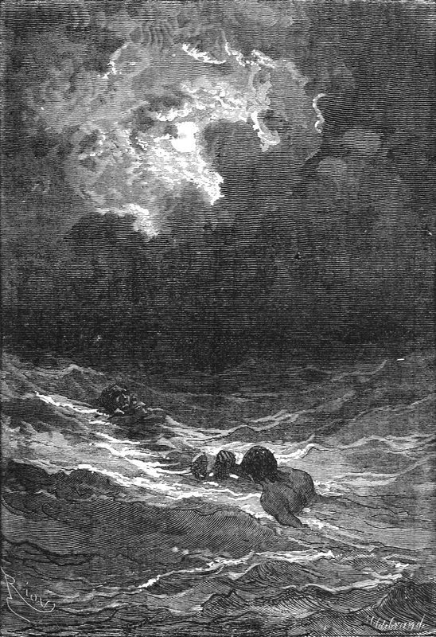
O narval parecia imóvel. Talvez, cansado do dia, dormisse, deixando-se levar pela ondulação das vagas? Havia ali uma oportunidade que o comandante Farragut resolveu aproveitar.
Ele deu suas ordens. A Abraham Lincoln foi mantida a pouco vapor e avançou com prudência para não despertar o adversário. Não é raro encontrar em pleno oceano baleias profundamente adormecidas, que então se atacam com êxito, e Ned Land já arpoara mais de uma durante o sono. O canadense foi retomar seu posto nos cabos do gurupés.
A fragata aproximou-se sem ruído, parou a duas amarras do animal e seguiu pelo próprio embalo. Ninguém respirava mais a bordo. Um silêncio profundo reinava no convés. Não estávamos a cem pés do foco ardente, cujo brilho aumentava e nos ofuscava os olhos.
Naquele momento, debruçado na amurada do castelo de proa, eu via abaixo de mim Ned Land, agarrado com uma mão ao gurupés, brandindo com a outra seu terrível arpão. Mal vinte pés o separavam do animal imóvel.
De repente, seu braço distendeu-se violentamente, e o arpão foi lançado. Ouvi o choque sonoro da arma, que parecia ter batido num corpo duro.
A claridade elétrica apagou-se de súbito, e duas enormes trombas de água abateram-se sobre o convés da fragata, correndo como uma torrente da proa à popa, derrubando os homens, rompendo as amarrações dos sobressalentes.
Produziu-se um choque terrível e, lançado por cima da amurada, sem ter tempo de me segurar, fui precipitado ao mar.
Embora eu tivesse sido surpreendido por essa queda inesperada, nem por isso deixei de guardar uma impressão muito nítida de minhas sensações.
Fui primeiro arrastado a uma profundidade de cerca de vinte pés. Sou bom nadador, sem pretender igualar Byron e Edgar Poe, que são mestres, e esse mergulho não me fez perder a cabeça. Duas vigorosas pernadas me trouxeram de volta à superfície do mar.
Meu primeiro cuidado foi procurar a fragata com os olhos. A tripulação teria percebido meu desaparecimento? A Abraham Lincoln teria virado de bordo? O comandante Farragut estaria lançando um bote ao mar? Podia eu esperar ser salvo?
As trevas eram profundas. Entrevi uma massa negra que desaparecia para o leste e cujas luzes de posição se apagaram na distância. Era a fragata. Senti-me perdido.
— Socorro! Socorro! — gritei, nadando em direção à Abraham Lincoln com braçadas desesperadas.
Minhas roupas me estorvavam. A água colava-as ao meu corpo, elas paralisavam meus movimentos. Eu afundava! Eu sufocava!…
— Socorro!
Foi o último grito que lancei. Minha boca encheu-se de água. Debati-me, arrastado para o abismo…
De repente, minhas roupas foram agarradas por uma mão vigorosa, senti-me violentamente puxado de volta à superfície do mar e ouvi, sim, ouvi estas palavras pronunciadas ao meu ouvido:
— Se o senhor quiser ter a extrema gentileza de se apoiar no meu ombro, o senhor nadará muito mais à vontade.
Agarrei com uma mão o braço do meu fiel Conseil.
— Você! — disse eu. — Você!
— Eu mesmo — respondeu Conseil —, e às ordens do senhor.
— E o choque o atirou ao mar ao mesmo tempo que eu?
— De modo algum. Mas, estando a serviço do senhor, segui o senhor!
O digno rapaz achava isso muito natural!
— E a fragata? — perguntei.
— A fragata! — respondeu Conseil, virando-se de costas. — Creio que o senhor fará bem em não contar muito com ela!
— Como assim?
— Digo que, no momento em que me atirei ao mar, ouvi os homens do leme gritarem: “A hélice e o leme estão quebrados…”
— Quebrados?
— Sim! Quebrados pelo dente do monstro. É a única avaria, creio, que a Abraham Lincoln sofreu. Mas, circunstância lamentável para nós, ela já não governa.
— Então estamos perdidos!
— Talvez — respondeu tranquilamente Conseil. — Contudo, ainda temos algumas horas pela frente, e em algumas horas se fazem muitas coisas!
O imperturbável sangue-frio de Conseil reanimou-me. Nadei com mais vigor; mas, estorvado pelas roupas, que me apertavam como uma capa de chumbo, sentia extrema dificuldade em me manter à tona. Conseil percebeu.
— Que o senhor me permita fazer-lhe uma incisão — disse ele.
E, deslizando uma faca aberta sob minhas roupas, fendeu-as de alto a baixo com um golpe rápido. Depois livrou-me delas com agilidade, enquanto eu nadava pelos dois.
Por minha vez, prestei o mesmo serviço a Conseil, e continuamos a “navegar” um perto do outro.
No entanto, a situação não deixava de ser terrível. Talvez nosso desaparecimento não tivesse sido notado e, ainda que tivesse, a fragata não podia voltar a sotavento até nós, estando desprovida de leme. Só se podia contar, portanto, com seus botes.
Conseil raciocinou friamente nessa hipótese e fez seu plano em consequência. Natureza espantosa! Aquele rapaz fleumático estava ali como em casa!
Ficou decidido, pois, que, sendo nossa única chance de salvação sermos recolhidos pelos botes da Abraham Lincoln, devíamos organizar-nos de modo a esperá-los o maior tempo possível. Resolvi então dividir nossas forças, para não esgotá-las ao mesmo tempo, e eis o que se combinou: enquanto um de nós, estendido de costas, ficasse imóvel, de braços cruzados, pernas esticadas, o outro nadaria e o empurraria para a frente. Esse papel de rebocador não devia durar mais de dez minutos e, revezando-nos assim, podíamos boiar durante algumas horas, e talvez até o raiar do dia.
Fraca chance! Mas a esperança está tão fortemente enraizada no coração do homem! Além disso, éramos dois. Enfim, afirmo — embora isso pareça improvável — que, se eu procurasse destruir em mim toda ilusão, se eu quisesse “desesperar”, não conseguiria!
A colisão entre a fragata e o cetáceo ocorrera por volta das onze da noite. Eu contava, portanto, com oito horas de natação até o nascer do sol. Operação rigorosamente praticável, revezando-nos. O mar, bastante calmo, pouco nos cansava. Às vezes eu procurava penetrar com o olhar aquelas trevas espessas, rompidas apenas pela fosforescência provocada por nossos movimentos. Olhava as ondas luminosas que se quebravam em minha mão e cujo lençol espelhado se manchava de placas lívidas. Dir-se-ia que estávamos mergulhados num banho de mercúrio.
Por volta da uma da madrugada, fui tomado de um cansaço extremo. Meus membros enrijeceram sob o aperto de cãibras violentas. Conseil teve de me sustentar, e o cuidado de nossa conservação recaiu apenas sobre ele. Logo ouvi o pobre rapaz arquejar; sua respiração tornou-se curta e acelerada. Compreendi que ele não podia resistir por muito tempo.
— Deixe-me! Deixe-me! — disse-lhe eu.
— Abandonar o senhor! Nunca! — respondeu ele. — Faço questão de me afogar antes dele!
Naquele momento, a lua apareceu através das franjas de uma grande nuvem que o vento arrastava para o leste. A superfície do mar cintilou sob seus raios. Essa luz benfazeja reanimou nossas forças. Minha cabeça se ergueu. Meus olhares percorreram todos os pontos do horizonte. Avistei a fragata. Estava a cinco milhas de nós e já não formava mais que uma massa sombria, quase imperceptível. Mas botes, nenhum!
Quis gritar. Para quê, a tal distância! Meus lábios inchados não deixaram passar nenhum som. Conseil conseguiu articular algumas palavras, e ouvi-o repetir várias vezes:
— Aqui! Aqui!
Suspendendo nossos movimentos por um instante, escutamos. E, fosse um daqueles zumbidos com que o sangue oprimido enche o ouvido, pareceu-me que um grito respondia ao grito de Conseil.
— Você ouviu? — murmurei.
— Sim! Sim!
E Conseil lançou no espaço um novo apelo desesperado.
Desta vez, nenhum engano possível! Uma voz humana respondia à nossa! Seria a voz de algum infeliz abandonado no meio do Oceano, alguma outra vítima do choque sofrido pelo navio? Ou antes um bote da fragata que nos chamava na sombra?
Conseil fez um esforço supremo e, apoiando-se em meu ombro, enquanto eu resistia numa última convulsão, ergueu-se meio fora da água e tornou a cair, exausto.
— O que você viu?
— Vi… — murmurou ele —, vi… mas não falemos… guardemos todas as nossas forças!…
O que teria ele visto? Então, não sei por quê, o pensamento do monstro me veio ao espírito pela primeira vez!… Mas e aquela voz?… Já passou o tempo em que os Jonas se refugiavam no ventre das baleias!
Entretanto, Conseil ainda me rebocava. Às vezes erguia a cabeça, olhava para a frente e lançava um grito de reconhecimento, a que respondia uma voz cada vez mais próxima. Eu mal o ouvia. Minhas forças estavam no fim; meus dedos se afastavam; minha mão já não me dava ponto de apoio; minha boca, convulsivamente aberta, enchia-se de água salgada; o frio me invadia. Ergui a cabeça uma última vez, depois afundei…
Nesse instante, um corpo duro bateu em mim. Agarrei-me a ele. Depois senti que me puxavam, que me traziam de volta à superfície da água, que meu peito se desafogava, e desmaiei…
É certo que voltei a mim prontamente, graças a vigorosas fricções que me percorreram o corpo. Entreabri os olhos…
— Conseil! — murmurei.
— O senhor chamou? — respondeu Conseil.
Naquele momento, às últimas claridades da lua que descia para o horizonte, avistei um rosto que não era o de Conseil e que reconheci imediatamente.
— Ned! — exclamei.
— Em pessoa, senhor, e correndo atrás do seu prêmio! — respondeu o canadense.
— O senhor foi atirado ao mar com o choque da fragata?
— Sim, senhor professor, mas, mais favorecido que o senhor, consegui pôr pé quase imediatamente numa ilhota flutuante.
— Uma ilhota?
— Ou, melhor dizendo, no nosso narval gigantesco.
— Explique-se, Ned.
— Só que logo compreendi por que meu arpão não conseguira feri-lo e se embotara contra a pele dele.
— Por quê, Ned, por quê?
— É que esse bicho, senhor professor, é feito de chapa de aço!
Preciso aqui recobrar o juízo, reavivar minhas lembranças, controlar eu mesmo minhas afirmações.
As últimas palavras do canadense tinham produzido uma reviravolta súbita em meu cérebro. Içei-me rapidamente ao alto do ser ou do objeto meio submerso que nos servia de refúgio. Experimentei-o com o pé. Era evidentemente um corpo duro, impenetrável, e não aquela substância mole que forma a massa dos grandes mamíferos marinhos.
Mas esse corpo duro podia ser uma carapaça óssea, semelhante à dos animais antediluvianos, e eu me livraria do problema classificando o monstro entre os répteis anfíbios, como as tartarugas ou os aligátores.
Pois bem, não! O dorso enegrecido que me sustentava era liso, polido, sem escamas sobrepostas. Ao choque, devolvia uma sonoridade metálica e, por incrível que fosse, parecia, digo eu, feito de chapas aparafusadas.
A dúvida não era possível! O animal, o monstro, o fenômeno natural que intrigara o mundo científico inteiro, transtornara e desencaminhara a imaginação dos marinheiros dos dois hemisférios, era preciso reconhecê-lo, era um fenômeno ainda mais espantoso, um fenômeno feito pela mão do homem.
A descoberta da existência do ser mais fabuloso, mais mitológico, não teria surpreendido minha razão no mesmo grau. Que o prodigioso venha do Criador é muito simples. Mas encontrar de repente, diante dos olhos, o impossível misteriosa e humanamente realizado era de confundir o espírito!
Não havia, porém, o que hesitar. Estávamos estendidos sobre o dorso de uma espécie de barco submarino que apresentava, tanto quanto eu podia julgar, a forma de um imenso peixe de aço. A opinião de Ned Land estava formada nesse ponto. Conseil e eu só pudemos aderir a ela.
— Mas então — disse eu —, esse aparelho encerra em si um mecanismo de locomoção e uma tripulação para manobrá-lo?
— Evidentemente — respondeu o arpoador —, e no entanto, nas três horas em que habito esta ilha flutuante, ela não deu sinal de vida.
— Este barco não andou?
— Não, senhor Aronnax. Deixa-se embalar ao sabor das vagas, mas não se mexe.
— Sabemos, sem sombra de dúvida, que ele é dotado de grande velocidade. Ora, como é preciso uma máquina para produzir essa velocidade e um maquinista para conduzir essa máquina, concluo… que estamos salvos.
— Hum! — fez Ned Land num tom reservado.
Nesse momento, e como para dar razão à minha argumentação, um borbulhar se fez na popa daquele estranho aparelho, cujo propulsor era evidentemente uma hélice, e ele se pôs em movimento. Só tivemos tempo de nos agarrar à sua parte superior, que emergia cerca de oitenta centímetros. Felizmente, sua velocidade não era excessiva.
— Enquanto ele navegar na horizontal — murmurou Ned Land —, não tenho nada a dizer. Mas, se lhe der na fantasia de mergulhar, não dou dois dólares pela minha pele!
Menos ainda, poderia ter dito o canadense. Tornava-se urgente, portanto, comunicar-se com os seres quaisquer encerrados nos flancos daquela máquina. Procurei em sua superfície uma abertura, uma escotilha, um “buraco de homem”, para empregar a expressão técnica; mas as linhas de parafusos, solidamente rebatidas sobre a junção das chapas, eram nítidas e uniformes.
Além disso, a lua desapareceu então e deixou-nos numa escuridão profunda. Foi preciso esperar o dia para tratar dos meios de penetrar no interior daquele barco submarino.
Assim, nossa salvação dependia unicamente do capricho dos misteriosos timoneiros que dirigiam aquele aparelho e, se eles mergulhassem, estávamos perdidos! Excetuado esse caso, eu não duvidava da possibilidade de entrar em relação com eles. E, de fato, se não fabricavam eles mesmos o seu ar, era necessário que voltassem de tempos em tempos à superfície do Oceano para renovar sua provisão de moléculas respiráveis. Logo, havia necessariamente uma abertura que pusesse o interior do barco em comunicação com a atmosfera.

Quanto à esperança de ser salvo pelo comandante Farragut, era preciso renunciar a ela por completo. Éramos arrastados para oeste, e estimei que nossa velocidade, relativamente moderada, chegava a doze milhas por hora. A hélice batia as ondas com uma regularidade matemática, emergindo às vezes e fazendo jorrar a água fosforescente a grande altura.
Por volta das quatro da madrugada, a rapidez do aparelho aumentou. Resistíamos com dificuldade a esse arrastamento vertiginoso, quando as vagas nos batiam de frente. Felizmente, Ned encontrou sob a mão uma larga argola fixada na parte superior do dorso de chapa, e conseguimos agarrar-nos a ela solidamente.
Enfim, aquela longa noite passou. Minha lembrança incompleta não permite reconstituir todas as suas impressões. Um único detalhe me volta ao espírito. Durante certas calmarias do mar e do vento, julguei ouvir várias vezes sons vagos, uma espécie de harmonia fugidia produzida por acordes distantes. Qual era, pois, o mistério daquela navegação submarina de que o mundo inteiro procurava em vão a explicação? Que seres viviam naquele estranho barco? Que agente mecânico lhe permitia deslocar-se com tão prodigiosa velocidade?
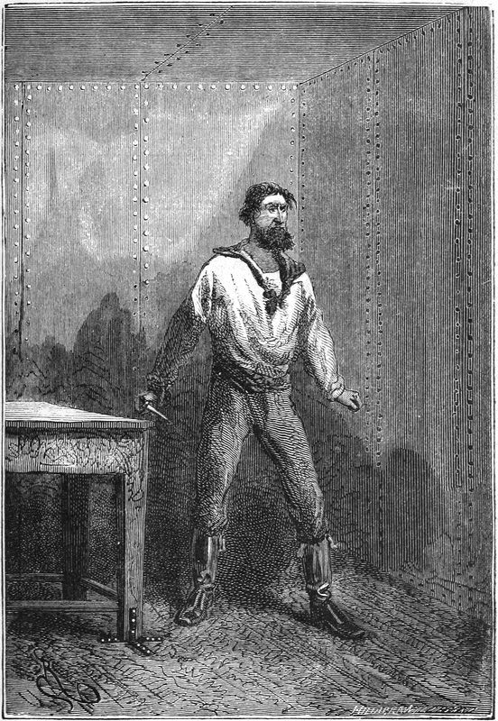
O dia apareceu. As brumas da manhã nos envolviam, mas não tardaram a se rasgar. Eu ia proceder a um exame atento do casco, que formava em sua parte superior uma espécie de plataforma horizontal, quando o senti afundar pouco a pouco.
— Ei! Com mil diabos! — exclamou Ned Land, batendo com o pé na chapa sonora. — Abram, navegadores pouco hospitaleiros!
Mas era difícil fazer-se ouvir no meio das batidas ensurdecedoras da hélice. Felizmente, o movimento de imersão parou.
De repente, um ruído de ferragens violentamente empurradas produziu-se no interior do barco. Uma placa ergueu-se, um homem apareceu, soltou um grito estranho e desapareceu imediatamente.
Alguns instantes depois, oito sujeitos robustos, de rosto velado, apareciam silenciosamente e nos arrastavam para dentro de sua formidável máquina.
Esse rapto, executado de modo tão brutal, realizara-se com a rapidez do relâmpago. Meus companheiros e eu não tivéramos tempo de nos dar conta. Não sei o que eles sentiram ao se ver introduzidos naquela prisão flutuante; mas, de minha parte, um rápido arrepio me gelou a pele. Com quem estávamos lidando? Sem dúvida com algum tipo novo de pirata, que explorava o mar à sua maneira.
Mal a estreita escotilha se fechou sobre mim, uma escuridão profunda me envolveu. Meus olhos, impregnados da luz exterior, nada conseguiram perceber. Senti meus pés descalços agarrarem-se aos degraus de uma escada de ferro. Ned Land e Conseil, vigorosamente seguros, vinham atrás de mim. Ao pé da escada, uma porta se abriu e se fechou imediatamente sobre nós com um estrondo sonoro.
Estávamos sós. Onde? Eu não podia dizer, mal podia imaginar. Tudo era negro, mas de um negro tão absoluto que, depois de alguns minutos, meus olhos ainda não tinham conseguido captar nenhum daqueles clarões indefinidos que flutuam nas noites mais profundas.
Enquanto isso, Ned Land, furioso com esses modos de proceder, dava livre curso à sua indignação.
— Com mil diabos! — exclamava ele. — Eis uma gente que daria lições de hospitalidade aos caledônios! Só falta serem antropófagos! Eu não ficaria surpreso, mas declaro que ninguém vai me comer sem que eu proteste!
— Acalme-se, amigo Ned, acalme-se — respondeu tranquilamente Conseil. — Não se exalte antes da hora. Ainda não estamos no espeto!
— No espeto, não — retrucou o canadense —, mas no forno, com certeza! Está bem escuro aqui. Felizmente, minha bowie-knife4 não me abandonou, e ainda enxergo o bastante para usá-la. O primeiro desses bandidos que puser a mão em mim…
— Não se irrite, Ned — disse eu então ao arpoador —, e não nos comprometa com violências inúteis. Quem sabe se não estão nos ouvindo! Tratemos antes de saber onde estamos!
Avancei às apalpadelas. Depois de cinco passos, encontrei uma parede de ferro, feita de chapas aparafusadas. Depois, voltando-me, esbarrei numa mesa de madeira, junto à qual estavam alinhados vários banquinhos. O assoalho daquela prisão escondia-se sob uma esteira espessa de fórmio, que abafava o ruído dos passos. As paredes nuas não revelavam nenhum vestígio de porta nem de janela. Conseil, dando a volta no sentido inverso, juntou-se a mim, e voltamos ao meio daquele camarote, que devia ter vinte pés de comprimento por dez de largura. Quanto à altura, Ned Land, apesar de sua grande estatura, não conseguiu medi-la.
Já se passara meia hora sem que a situação se modificasse quando, de uma escuridão extrema, nossos olhos passaram subitamente à luz mais violenta. Nossa prisão iluminou-se de repente, isto é, encheu-se de uma matéria luminosa tão viva que a princípio não pude suportar seu brilho. Pela brancura, pela intensidade, reconheci aquela iluminação elétrica que produzia em torno do barco submarino algo como um magnífico fenômeno de fosforescência. Depois de fechar involuntariamente os olhos, reabri-os e vi que o agente luminoso escapava de um hemisfério fosco que se arredondava na parte superior do camarote.
— Enfim! Dá para enxergar! — exclamou Ned Land, que, de faca na mão, se mantinha na defensiva.
— Sim — respondi, arriscando a antítese —, mas a situação não deixa de ser obscura.
— Que o senhor tenha paciência — disse o impassível Conseil.
A súbita iluminação do camarote permitira-me examinar seus menores detalhes. Ele continha apenas a mesa e os cinco banquinhos. A porta invisível devia estar hermeticamente fechada. Nenhum ruído chegava a nossos ouvidos. Tudo parecia morto no interior daquele barco. Estaria ele andando, mantendo-se na superfície do Oceano, afundando em suas profundezas? Eu não conseguia adivinhar.
No entanto, o globo luminoso não se acendera sem razão. Eu esperava, pois, que os homens da tripulação não tardassem a se mostrar. Quando se quer esquecer as pessoas, não se iluminam as masmorras.
Não me enganava. Ouviu-se um ruído de ferrolhos, a porta se abriu, dois homens apareceram.
Um era de baixa estatura, vigorosamente musculoso, de ombros largos, membros robustos, cabeça forte, cabeleira abundante e negra, bigode espesso, olhar vivo e penetrante, e toda a sua pessoa trazia a marca daquela vivacidade meridional que caracteriza, na França, as populações provençais. Diderot afirmou com muita justeza que o gesto do homem é metafórico, e aquele homenzinho era certamente a prova viva disso. Sentia-se que em sua linguagem habitual ele devia prodigalizar as prosopopeias, as metonímias e as hipálages. O que, aliás, nunca tive ocasião de verificar, pois ele sempre empregou diante de mim um idioma singular e absolutamente incompreensível.
O segundo desconhecido merece uma descrição mais detalhada. Um discípulo de Gratiolet ou de Engel teria lido sua fisionomia como um livro aberto. Reconheci sem hesitar suas qualidades dominantes — a confiança em si, pois sua cabeça se destacava nobremente sobre o arco formado pela linha dos ombros, e seus olhos negros olhavam com fria segurança; a calma, pois sua pele, mais pálida que corada, anunciava a tranquilidade do sangue; a energia, que demonstrava a rápida contração dos músculos das sobrancelhas; a coragem, enfim, pois sua respiração ampla denotava uma grande expansão vital.
Acrescentarei que aquele homem era altivo, que seu olhar firme e calmo parecia refletir pensamentos elevados, e que de todo esse conjunto, da homogeneidade das expressões nos gestos do corpo e do rosto, segundo a observação dos fisionomistas, resultava uma franqueza indiscutível.
Senti-me “involuntariamente” tranquilizado em sua presença e augurei bem de nosso encontro.
Se aquele personagem tinha trinta e cinco ou cinquenta anos, eu não saberia precisar. Sua estatura era alta, a testa larga, o nariz reto, a boca nitidamente desenhada, os dentes magníficos, as mãos finas, alongadas, eminentemente “psíquicas”, para empregar um termo da quirognomonia, isto é, dignas de servir a uma alma elevada e apaixonada. Aquele homem formava certamente o tipo mais admirável que eu jamais encontrara. Detalhe particular: seus olhos, um pouco afastados um do outro, podiam abarcar simultaneamente quase um quarto do horizonte. Essa faculdade — verifiquei-o mais tarde — somava-se a um poder de visão ainda superior ao de Ned Land. Quando o desconhecido fixava um objeto, a linha das sobrancelhas se franzia, as largas pálpebras se aproximavam de modo a circunscrever a pupila e a estreitar assim a extensão do campo visual, e ele olhava! Que olhar! Como aumentava os objetos diminuídos pela distância! Como penetrava até a alma! Como atravessava aqueles lençóis líquidos, tão opacos a nossos olhos, e como lia no mais profundo dos mares!…
Os dois desconhecidos, cobertos com boinas feitas de pele de lontra-marinha e calçados com botas de mar de pele de foca, usavam roupas de um tecido particular, que deixavam a cintura livre e davam grande liberdade de movimentos.
O mais alto dos dois — evidentemente o chefe de bordo — examinou-nos com extrema atenção, sem pronunciar uma palavra. Depois, voltando-se para o companheiro, conversou com ele numa língua que não consegui reconhecer. Era um idioma sonoro, harmonioso, flexível, cujas vogais pareciam sujeitas a uma acentuação muito variada.
O outro respondeu com um aceno de cabeça e acrescentou duas ou três palavras perfeitamente incompreensíveis. Depois, com o olhar, pareceu interrogar-me diretamente.
Respondi, em bom francês, que não entendia sua língua; mas ele não pareceu me compreender, e a situação tornou-se bastante embaraçosa.
— Que o senhor conte assim mesmo a nossa história — disse-me Conseil. — Esses senhores talvez captem algumas palavras!
Recomecei o relato de nossas aventuras, articulando nitidamente todas as sílabas e sem omitir um só detalhe. Declinei nossos nomes e qualidades; depois apresentei, nas devidas formas, o professor Aronnax, seu criado Conseil e mestre Ned Land, o arpoador.
O homem de olhos doces e calmos ouviu-me tranquilamente, até com polidez, e com notável atenção. Mas nada em sua fisionomia indicou que tivesse compreendido minha história. Quando terminei, não pronunciou uma única palavra.
Restava ainda o recurso de falar inglês. Talvez nos fizéssemos entender nessa língua, que é quase universal. Eu a conhecia, assim como o alemão, o suficiente para lê-la correntemente, mas não para falá-la corretamente. Ora, aqui era preciso sobretudo fazer-se compreender.
— Vamos, é a sua vez — disse eu ao arpoador. — Com o senhor, mestre Land: tire do saco o melhor inglês que um anglo-saxão jamais falou e trate de ser mais feliz do que eu.
Ned não se fez de rogado e recomeçou meu relato, que compreendi mais ou menos. O fundo foi o mesmo, mas a forma diferiu. O canadense, levado por seu temperamento, pôs nele muita animação. Queixou-se violentamente de estar preso com desprezo pelo direito das gentes, perguntou em virtude de que lei o retinham assim, invocou o habeas corpus, ameaçou processar os que o sequestravam indevidamente, agitou-se, gesticulou, gritou e, finalmente, deu a entender por um gesto expressivo que estávamos morrendo de fome.
O que era perfeitamente verdade, mas nós quase o tínhamos esquecido.
Para sua grande estupefação, o arpoador não pareceu ter sido mais inteligível do que eu. Nossos visitantes não pestanejaram. Era evidente que não compreendiam nem a língua de Arago nem a de Faraday.
Muito embaraçado, depois de esgotar em vão nossos recursos filológicos, eu já não sabia que partido tomar quando Conseil me disse:
— Se o senhor me autorizar, contarei a coisa em alemão.
— Como! Você sabe alemão? — exclamei.
— Como um flamengo, com a licença do senhor.
— Pelo contrário, isso me agrada. Vá, meu rapaz.
E Conseil, com sua voz tranquila, contou pela terceira vez as diversas peripécias de nossa história. Mas, apesar dos torneios elegantes e da bela pronúncia do narrador, a língua alemã não teve nenhum sucesso.
Por fim, levado ao extremo, reuni tudo o que me restava de meus primeiros estudos e empreendi narrar nossas aventuras em latim. Cícero teria tapado os ouvidos e me mandado para a cozinha, mas, ainda assim, consegui sair-me da tarefa. Mesmo resultado negativo.
Fracassada definitivamente essa última tentativa, os dois desconhecidos trocaram algumas palavras em sua língua incompreensível e retiraram-se, sem sequer nos dirigir um daqueles gestos tranquilizadores que têm curso em todos os países do mundo. A porta tornou a fechar-se.
— É uma infâmia! — exclamou Ned Land, explodindo pela vigésima vez. — Como! A gente fala francês, inglês, alemão, latim com esses patifes, e nenhum tem a civilidade de responder!
— Acalme-se, Ned — disse eu ao fervoroso arpoador —, a cólera não levaria a nada.
— Mas o senhor sabe, senhor professor — retomou nosso irascível companheiro —, que se pode muito bem morrer de fome nesta jaula de ferro?
— Ora! — fez Conseil. — Com filosofia, ainda se aguenta muito tempo!
— Meus amigos — disse eu —, não devemos desesperar. Já estivemos em apuros piores. Façam-me, pois, o favor de esperar antes de formar uma opinião sobre o comandante e a tripulação deste barco.
— Minha opinião está formada — retrucou Ned Land. — São uns patifes…
— Bom! E de que país?
— Do país dos patifes!
— Meu bom Ned, esse país ainda não está suficientemente indicado no mapa-múndi, e confesso que a nacionalidade daqueles dois desconhecidos é difícil de determinar! Nem ingleses, nem franceses, nem alemães, é tudo o que se pode afirmar. No entanto, eu estaria tentado a admitir que aquele comandante e seu imediato nasceram em baixas latitudes. Há algo de meridional neles. Mas se são espanhóis, turcos, árabes ou indianos, é o que seu tipo físico não me permite decidir. Quanto à sua língua, é absolutamente incompreensível.
— Eis o inconveniente de não saber todas as línguas — respondeu Conseil —, ou a desvantagem de não haver uma língua única!
— O que não serviria de nada! — respondeu Ned Land. — Não vê que essa gente tem uma língua só dela, uma língua inventada para desesperar as pessoas de bem que pedem o jantar? Mas, em todos os países da terra, abrir a boca, mexer as mandíbulas, abocanhar com os dentes e os lábios, isso não se entende de sobra? Isso não quer dizer, em Quebec como nas Tuamotu, em Paris como nos antípodas: Estou com fome! Deem-me de comer!…
— Oh! — fez Conseil. — Há naturezas tão pouco inteligentes!…
Enquanto ele dizia essas palavras, a porta se abriu. Um steward5 entrou. Trazia-nos roupas, casacos e calções de marinheiro, feitos de um tecido cuja natureza não reconheci. Apressei-me a vesti-los, e meus companheiros me imitaram.
Enquanto isso, o steward — mudo, surdo talvez — arrumara a mesa e pusera três talheres.
— Eis algo sério — disse Conseil —, e isto se anuncia bem.
— Ora! — respondeu o rancoroso arpoador. — Que diabo quer que se coma aqui? Fígado de tartaruga, filé de tubarão, bife de cação!
— Veremos! — disse Conseil.

Os pratos, cobertos com suas campânulas de prata, foram simetricamente dispostos sobre a toalha, e tomamos lugar à mesa. Decididamente, lidávamos com gente civilizada e, não fosse a luz elétrica que nos inundava, eu me julgaria na sala de jantar do hotel Adelphi, em Liverpool, ou do Grand-Hôtel, em Paris. Devo dizer, contudo, que o pão e o vinho faltavam por completo. A água era fresca e límpida, mas era água — o que não foi do gosto de Ned Land. Entre os pratos que nos foram servidos, reconheci diversos peixes delicadamente preparados; mas, sobre certos pratos, aliás excelentes, não pude me pronunciar, e nem saberia dizer a que reino, vegetal ou animal, pertencia seu conteúdo. Quanto ao serviço de mesa, era elegante e de um gosto perfeito. Cada utensílio, colher, garfo, faca, prato, trazia uma letra cercada por uma divisa em exergo, de que eis o fac-símile exato:
MOBILIS IN MOBILI
N
Móvel no elemento móvel! Essa divisa aplicava-se justamente àquele aparelho submarino, com a condição de traduzir a preposição in por dentro de e não por sobre. A letra N formava sem dúvida a inicial do nome do enigmático personagem que comandava no fundo dos mares!

Ned e Conseil não faziam tantas reflexões. Devoravam, e não tardei a imitá-los. Eu estava, aliás, tranquilo quanto à nossa sorte, e parecia-me evidente que nossos anfitriões não queriam deixar-nos morrer de inanição.
Entretanto, tudo acaba neste mundo, tudo passa, até a fome de gente que não come há quinze horas. Satisfeito o apetite, a necessidade de sono fez-se sentir imperiosamente. Reação muito natural, depois da noite interminável durante a qual tínhamos lutado contra a morte.
— Palavra, eu bem que dormiria — disse Conseil.
— E eu já estou dormindo! — respondeu Ned Land.
Meus dois companheiros estenderam-se sobre o tapete do camarote e logo mergulharam num sono profundo.
De minha parte, cedi com menos facilidade a essa violenta necessidade de dormir. Pensamentos demais se acumulavam em meu espírito, perguntas insolúveis demais se atropelavam nele, imagens demais mantinham minhas pálpebras entreabertas! Onde estávamos? Que estranho poder nos arrebatava? Eu sentia — ou antes, julgava sentir — o aparelho afundar rumo às camadas mais remotas do mar. Pesadelos violentos me obsediavam. Eu entrevia naqueles asilos misteriosos todo um mundo de animais desconhecidos, de que aquele barco submarino parecia ser o congênere, vivo, movendo-se, formidável como eles!… Depois meu cérebro se acalmou, minha imaginação dissolveu-se numa vaga sonolência, e logo caí num sono pesado.
Quanto durou esse sono, ignoro; mas deve ter sido longo, pois nos descansou completamente de nossas fadigas. Acordei primeiro. Meus companheiros ainda não se tinham mexido e continuavam estendidos em seu canto como massas inertes.
Mal me levantei daquele leito razoavelmente duro, senti o cérebro desanuviado, o espírito lúcido. Recomecei então um exame atento de nossa cela.
Nada mudara em sua disposição interior. A prisão continuava prisão, e os prisioneiros, prisioneiros. Entretanto, o steward, aproveitando nosso sono, tirara a mesa. Nada indicava, pois, uma modificação próxima dessa situação, e perguntei-me seriamente se estávamos destinados a viver indefinidamente naquela jaula.
Essa perspectiva pareceu-me tanto mais penosa porque, se meu cérebro estava livre das obsessões da véspera, eu sentia o peito singularmente oprimido. Respirava com dificuldade. O ar pesado já não bastava ao jogo de meus pulmões. Embora a cela fosse vasta, era evidente que tínhamos consumido grande parte do oxigênio que ela continha. De fato, cada homem gasta, em uma hora, o oxigênio contido em cem litros de ar, e esse ar, então carregado de uma quantidade quase igual de ácido carbônico, torna-se irrespirável.
Era urgente, portanto, renovar a atmosfera de nossa prisão e, sem dúvida também, a atmosfera do barco submarino.
Aqui se colocava uma questão em meu espírito. Como procedia o comandante daquela morada flutuante? Obtinha ar por meios químicos, liberando pelo calor o oxigênio contido no clorato de potássio e absorvendo o ácido carbônico pela potassa cáustica? Nesse caso, devia ter conservado algumas relações com os continentes, a fim de obter as matérias necessárias a essa operação. Limitava-se a armazenar o ar sob altas pressões em reservatórios e depois distribuí-lo segundo as necessidades da tripulação? Talvez. Ou, procedimento mais cômodo, mais econômico e, por conseguinte, mais provável, contentava-se em voltar para respirar à superfície das águas, como um cetáceo, e renovar por vinte e quatro horas sua provisão de atmosfera? Fosse como fosse, e qualquer que fosse o método, parecia-me prudente empregá-lo sem demora.
De fato, eu já estava reduzido a multiplicar as inspirações para extrair daquela cela o pouco oxigênio que ela continha quando, de repente, fui refrescado por uma corrente de ar puro, toda perfumada de emanações salinas. Era mesmo a brisa do mar, vivificante e carregada de iodo! Abri bem a boca, e meus pulmões saturaram-se de moléculas frescas. Ao mesmo tempo, senti um balanço, um jogo de amplitude medíocre, mas perfeitamente perceptível. O barco, o monstro de chapa, acabava evidentemente de subir à superfície do Oceano para ali respirar à maneira das baleias. O modo de ventilação do navio estava, pois, perfeitamente reconhecido.
Depois de absorver aquele ar puro a plenos pulmões, procurei o conduto, o “aerífero”, se quiserem, que deixava chegar até nós aquele eflúvio benfazejo, e não tardei a encontrá-lo. Acima da porta abria-se um respiradouro que deixava passar uma coluna de ar fresco, renovando assim a atmosfera empobrecida da cela.
Eu estava nesse ponto de minhas observações quando Ned e Conseil acordaram quase ao mesmo tempo, sob a influência daquela aeração revigorante. Esfregaram os olhos, espreguiçaram os braços e puseram-se de pé num instante.
— O senhor dormiu bem? — perguntou-me Conseil com sua polidez cotidiana.
— Muito bem, meu bom rapaz — respondi. — E o senhor, mestre Ned Land?
— Profundamente, senhor professor. Mas, não sei se me engano, parece que estou respirando uma espécie de brisa do mar?
Um marinheiro não podia se enganar, e contei ao canadense o que se passara durante seu sono.
— Bom! — disse ele. — Isso explica perfeitamente aqueles mugidos que ouvíamos quando o pretenso narval estava à vista da Abraham Lincoln.
— Perfeitamente, mestre Land: era a respiração dele!
— Só que, senhor Aronnax, não tenho a menor ideia de que horas são, a não ser que seja a hora do jantar.
— A hora do jantar, meu digno arpoador? Diga ao menos a hora do almoço, pois certamente estamos no dia seguinte ao de ontem.
— O que demonstra — respondeu Conseil — que dormimos vinte e quatro horas.
— É a minha opinião — respondi.
— Não o contradigo — replicou Ned Land. — Mas, jantar ou almoço, o steward será bem-vindo, traga ele um ou outro.
— Um e outro — disse Conseil.
— Certo — respondeu o canadense —, temos direito a duas refeições, e, por mim, farei honra às duas.
— Pois bem, Ned, esperemos — respondi. — É evidente que esses desconhecidos não têm a intenção de nos deixar morrer de fome, pois nesse caso o jantar de ontem à noite não teria sentido.
— A menos que estejam nos engordando! — retrucou Ned.
— Protesto — respondi. — Não caímos nas mãos de canibais!
— Uma vez não é costume — respondeu seriamente o canadense. — Quem sabe se essa gente não está privada há muito tempo de carne fresca, e nesse caso três sujeitos sadios e bem constituídos como o senhor professor, seu criado e eu…
— Afaste essas ideias, mestre Land — respondi ao arpoador —, e sobretudo não parta delas para se enfurecer contra nossos anfitriões, o que só poderia agravar a situação.
— Em todo caso — disse o arpoador —, estou com uma fome dos diabos, e, jantar ou almoço, a refeição não chega!
— Mestre Land — repliquei —, é preciso conformar-se ao regulamento de bordo, e suponho que nosso estômago está adiantado em relação ao sino do mestre-cuca.
— Pois bem! Vamos acertá-lo — respondeu tranquilamente Conseil.
— Isso é bem de você, amigo Conseil — retrucou o impaciente canadense. — Você gasta pouco a bílis e os nervos! Sempre calmo! Seria capaz de dar graças depois da refeição antes de benzer a mesa, e de morrer de fome em vez de se queixar!
— De que serviria isso? — perguntou Conseil.
— Ora, serviria para se queixar! Já é alguma coisa. E se esses piratas — digo piratas por respeito, e para não contrariar o senhor professor, que proíbe chamá-los de canibais —, se esses piratas imaginam que vão me manter nesta jaula onde sufoco sem saber com que pragas tempero os meus acessos de raiva, enganam-se! Vamos, senhor Aronnax, fale francamente. Acredita que vão nos manter muito tempo nesta caixa de ferro?
— Para dizer a verdade, não sei mais do que o senhor, amigo Land.
— Mas, enfim, o que supõe?
— Suponho que o acaso nos tornou senhores de um segredo importante. Ora, se a tripulação deste barco submarino tem interesse em guardá-lo, e se esse interesse for mais grave que a vida de três homens, creio que nossa existência está muito comprometida. No caso contrário, na primeira ocasião, o monstro que nos engoliu nos devolverá ao mundo habitado por nossos semelhantes.
— A menos que nos aliste em sua tripulação — disse Conseil — e nos guarde assim…
— Até o momento — replicou Ned Land — em que alguma fragata, mais rápida ou mais hábil que a Abraham Lincoln, se apoderar deste ninho de piratas e mandar a tripulação e nós respirarmos uma última vez na ponta de sua verga grande.
— Bem raciocinado, mestre Land — repliquei. — Mas ainda não nos fizeram, que eu saiba, nenhuma proposta nesse sentido. Inútil, portanto, discutir o partido que deveremos tomar, se for o caso. Repito: esperemos, aconselhemo-nos com as circunstâncias e não façamos nada, já que não há nada a fazer.
— Pelo contrário, senhor professor! — respondeu o arpoador, que não queria largar o osso. — É preciso fazer alguma coisa.
— Ora! E o quê, mestre Land?
— Fugir.
— Fugir de uma prisão “terrestre” muitas vezes é difícil, mas de uma prisão submarina parece-me absolutamente impraticável.
— Vamos, amigo Ned — perguntou Conseil —, o que responde à objeção do senhor? Não posso crer que um americano fique algum dia sem recursos!
O arpoador, visivelmente embaraçado, calava-se. Uma fuga, nas condições em que o acaso nos lançara, era absolutamente impossível. Mas um canadense é meio francês, e mestre Ned Land o mostrou bem com sua resposta.
— Então, senhor Aronnax — retomou ele depois de alguns instantes de reflexão —, não adivinha o que devem fazer pessoas que não podem escapar de sua prisão?
— Não, meu amigo.
— É muito simples: precisam dar um jeito de ficar nela.
— Ora essa! — fez Conseil. — Ainda é melhor estar dentro do que em cima ou embaixo!
— Mas depois de pôr para fora carcereiros, chaveiros e guardas — acrescentou Ned Land.
— Como, Ned? O senhor pensaria seriamente em se apoderar deste navio?
— Muito seriamente — respondeu o canadense.
— É impossível.
— Por quê, senhor? Pode apresentar-se alguma oportunidade favorável, e não vejo o que poderia nos impedir de aproveitá-la. Se são só uns vinte homens a bordo desta máquina, não farão recuar dois franceses e um canadense, suponho!
Era melhor admitir a proposta do arpoador do que discuti-la. Por isso contentei-me em responder:
— Deixemos as circunstâncias virem, mestre Land, e veremos. Mas, até lá, peço-lhe, contenha sua impaciência. Só se pode agir pela astúcia, e não é se exaltando que o senhor fará nascer oportunidades favoráveis. Prometa-me, pois, que aceitará a situação sem muita cólera.
— Prometo, senhor professor — respondeu Ned Land num tom pouco tranquilizador. — Nem uma palavra violenta sairá da minha boca, nem um gesto brutal me trairá, ainda que o serviço da mesa não se faça com toda a regularidade desejável.
— Tenho a sua palavra, Ned — respondi ao canadense.
Depois a conversa foi suspensa, e cada um de nós se pôs a refletir consigo mesmo. Confesso que, de minha parte, e apesar da segurança do arpoador, eu não conservava nenhuma ilusão. Não admitia aquelas oportunidades favoráveis de que Ned Land falara. Para ser manobrado com tanta segurança, o barco submarino exigia uma tripulação numerosa e, consequentemente, no caso de uma luta, teríamos de enfrentar forças demasiado superiores. Além disso, era preciso, antes de tudo, estar livres, e não estávamos. Eu não via sequer nenhum meio de fugir daquela cela de chapa tão hermeticamente fechada. E, por pouco que o estranho comandante daquele barco tivesse um segredo a guardar — o que parecia pelo menos provável —, ele não nos deixaria agir livremente a bordo. Agora, se ele se livraria de nós pela violência, ou se um dia nos lançaria em algum canto de terra, eis o desconhecido. Todas essas hipóteses pareciam-me extremamente plausíveis, e era preciso ser arpoador para esperar reconquistar a liberdade.
Compreendi, aliás, que as ideias de Ned Land se azedavam com as reflexões que se apoderavam de seu cérebro. Eu ouvia pouco a pouco as pragas roncarem no fundo de sua garganta e via seus gestos se tornarem de novo ameaçadores. Ele se levantava, rodava como uma fera na jaula, batia nas paredes com o pé e com o punho. Além disso, o tempo passava, a fome se fazia sentir cruelmente e, desta vez, o steward não aparecia. E era esquecer por tempo demais nossa condição de náufragos, se realmente se tinham boas intenções a nosso respeito.
Ned Land, atormentado pelas pontadas de seu robusto estômago, exaltava-se cada vez mais e, apesar de sua palavra, eu realmente temia uma explosão quando ele se visse diante de um dos homens de bordo.
Durante mais duas horas, a cólera de Ned Land foi crescendo. O canadense chamava, gritava, mas em vão. As paredes de chapa eram surdas. Eu não ouvia sequer nenhum ruído no interior daquele barco, que parecia morto. Ele não se mexia, pois eu teria evidentemente sentido os estremecimentos do casco sob o impulso da hélice. Mergulhado sem dúvida no abismo das águas, já não pertencia à terra. Todo aquele silêncio lúgubre era assustador.
Quanto ao nosso abandono, ao nosso isolamento no fundo daquela cela, eu não ousava estimar quanto poderia durar. As esperanças que concebera depois de nosso encontro com o comandante de bordo apagavam-se pouco a pouco. A doçura do olhar daquele homem, a expressão generosa de sua fisionomia, a nobreza de seu porte, tudo desaparecia de minha lembrança. Eu revia aquele personagem enigmático tal como devia ser, necessariamente impiedoso, cruel. Sentia-o fora da humanidade, inacessível a todo sentimento de piedade, inimigo implacável de seus semelhantes, aos quais devia ter votado um ódio imperecível!
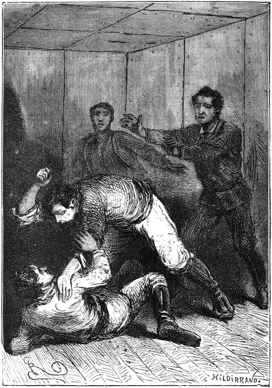
Mas aquele homem ia então deixar-nos perecer de inanição, trancados naquela prisão estreita, entregues às horríveis tentações a que impele a fome feroz? Esse pensamento terrível adquiriu em meu espírito uma intensidade terrível e, com a ajuda da imaginação, senti-me invadido por um pavor insensato. Conseil continuava calmo, Ned Land rugia.
Nesse momento, ouviu-se um ruído do lado de fora. Passos ressoaram na laje de metal. As fechaduras foram remexidas, a porta se abriu, o steward apareceu.
Antes que eu fizesse um movimento para impedi-lo, o canadense precipitara-se sobre aquele infeliz; derrubara-o; segurava-o pela garganta. O steward sufocava sob sua mão poderosa.
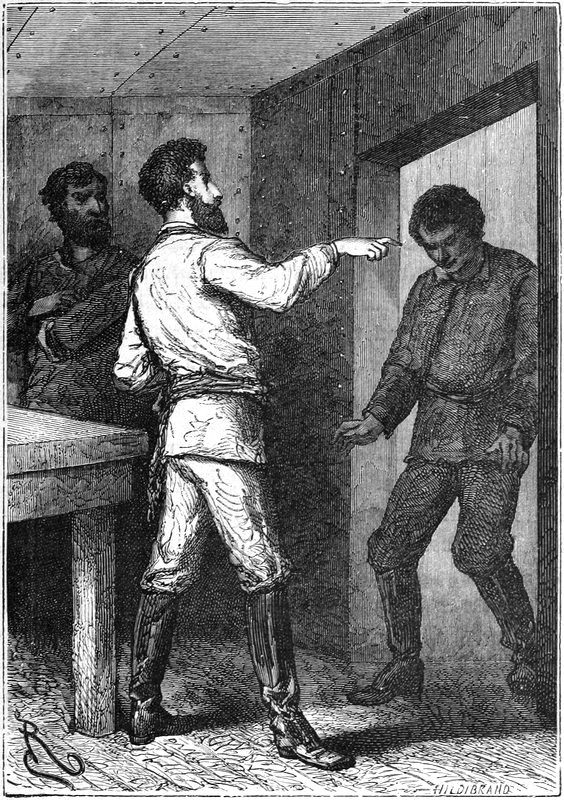
Conseil já procurava tirar das mãos do arpoador sua vítima meio sufocada, e eu ia juntar meus esforços aos dele quando, subitamente, fui pregado em meu lugar por estas palavras pronunciadas em francês:
— Acalme-se, mestre Land, e o senhor, senhor professor, queira me escutar!
Era o comandante de bordo quem assim falava.
A essas palavras, Ned Land levantou-se subitamente. O steward, quase estrangulado, saiu cambaleando a um sinal de seu senhor; mas tal era a autoridade do comandante a bordo que nem um gesto traiu o ressentimento que aquele homem devia nutrir contra o canadense. Conseil, interessado a contragosto, eu, estupefato, esperávamos em silêncio o desfecho daquela cena.
O comandante, apoiado no canto da mesa, de braços cruzados, observava-nos com profunda atenção. Hesitava em falar? Lamentava as palavras que acabara de pronunciar em francês? Era de crer.
Depois de alguns instantes de um silêncio que nenhum de nós pensou em interromper:
— Senhores — disse ele com voz calma e penetrante —, falo igualmente o francês, o inglês, o alemão e o latim. Poderia, portanto, ter-lhes respondido desde o nosso primeiro encontro, mas queria primeiro conhecê-los, e depois refletir. O relato quádruplo dos senhores, absolutamente semelhante no fundo, confirmou-me a identidade de suas pessoas. Sei agora que o acaso pôs em minha presença o senhor Pierre Aronnax, professor de história natural no Museu de Paris, encarregado de uma missão científica no estrangeiro, Conseil, seu criado, e Ned Land, de origem canadense, arpoador a bordo da fragata Abraham Lincoln, da marinha nacional dos Estados Unidos da América.
Inclinei-me em sinal de assentimento. Não era uma pergunta o que me fazia o comandante. Portanto, nada a responder. Aquele homem exprimia-se com perfeita desenvoltura, sem nenhum sotaque. Sua frase era nítida, suas palavras justas, sua facilidade de elocução notável. E, no entanto, eu não “sentia” nele um compatriota.
Ele retomou a conversa nestes termos:
— O senhor deve ter achado, sem dúvida, que demorei muito a lhe fazer esta segunda visita. É que, reconhecida a sua identidade, eu queria pesar com maturidade o partido a tomar a seu respeito. Hesitei muito. As circunstâncias mais lamentáveis puseram-no em presença de um homem que rompeu com a humanidade. O senhor veio perturbar a minha existência…
— Involuntariamente — disse eu.
— Involuntariamente? — respondeu o desconhecido, forçando um pouco a voz. — É involuntariamente que a Abraham Lincoln me caça por todos os mares? É involuntariamente que o senhor tomou passagem a bordo daquela fragata? É involuntariamente que suas balas ricochetearam no casco do meu navio? É involuntariamente que mestre Ned Land me golpeou com seu arpão?
Surpreendi nessas palavras uma irritação contida. Mas a essas recriminações eu tinha uma resposta muito natural a dar, e dei-a.
— Senhor — disse eu —, o senhor ignora sem dúvida as discussões que ocorreram a seu respeito na América e na Europa. Não sabe que diversos acidentes, provocados pelo choque de seu aparelho submarino, comoveram a opinião pública nos dois continentes. Poupo-lhe as hipóteses sem número com que se procurava explicar o fenômeno inexplicável cujo segredo só o senhor possuía. Mas saiba que, ao persegui-lo até os altos mares do Pacífico, a Abraham Lincoln julgava caçar algum poderoso monstro marinho do qual era preciso livrar o Oceano a qualquer preço.
Um meio sorriso descontraiu os lábios do comandante; depois, num tom mais calmo:
— Senhor Aronnax — respondeu ele —, ousaria afirmar que sua fragata não teria perseguido e canhoneado um barco submarino tanto quanto um monstro?
Essa pergunta embaraçou-me, pois certamente o comandante Farragut não teria hesitado. Teria julgado seu dever destruir um aparelho desse gênero tanto quanto um narval gigantesco.
— Compreende, pois, senhor — retomou o desconhecido —, que tenho o direito de tratá-los como inimigos.
Nada respondi, e com razão. De que serviria discutir semelhante proposição, quando a força pode destruir os melhores argumentos?
— Hesitei muito — retomou o comandante. — Nada me obrigava a dar-lhes hospitalidade. Se eu devesse separar-me dos senhores, não tinha nenhum interesse em revê-los. Eu os deixaria de volta na plataforma deste navio que lhes servira de refúgio. Afundaria sob os mares e esqueceria que os senhores jamais existiram. Não estava no meu direito?
— Era talvez o direito de um selvagem — respondi —, não o de um homem civilizado.
— Senhor professor — replicou vivamente o comandante —, não sou o que o senhor chama de homem civilizado! Rompi com a sociedade inteira por razões que só eu tenho o direito de apreciar. Não obedeço, pois, às suas regras, e aconselho-o a nunca as invocar diante de mim!
Isso foi dito com nitidez. Um relâmpago de cólera e de desdém acendera os olhos do desconhecido, e na vida daquele homem entrevi um passado formidável. Não somente ele se pusera fora das leis humanas, como se tornara independente, livre na mais rigorosa acepção da palavra, fora de qualquer alcance! Quem ousaria persegui-lo no fundo dos mares, se, em sua superfície, ele frustrava os esforços tentados contra ele? Que navio resistiria ao choque de seu monitor submarino? Que couraça, por mais espessa que fosse, suportaria os golpes de seu esporão? Ninguém, entre os homens, podia pedir-lhe contas de suas obras. Deus, se acreditava nele, sua consciência, se tinha uma, eram os únicos juízes de que podia depender.
Essas reflexões atravessaram rapidamente meu espírito, enquanto o estranho personagem se calava, absorto e como que recolhido em si mesmo. Eu o contemplava com um pavor misturado de interesse, e sem dúvida como Édipo contemplava a esfinge.
Depois de um silêncio bastante longo, o comandante retomou a palavra.
— Hesitei, pois — disse ele —, mas pensei que meu interesse podia conciliar-se com aquela piedade natural a que todo ser humano tem direito. Os senhores ficarão a bordo, já que a fatalidade os lançou aqui. Aqui serão livres e, em troca dessa liberdade, aliás muito relativa, só lhes imporei uma única condição. Sua palavra de que se submeterão a ela me bastará.
— Fale, senhor — respondi —; suponho que essa condição seja das que um homem honrado pode aceitar?
— Sim, senhor, e ei-la. É possível que certos acontecimentos imprevistos me obriguem a confiná-los em seus camarotes por algumas horas ou alguns dias, conforme o caso. Desejando nunca empregar a violência, espero dos senhores, nesse caso, mais ainda que em todos os outros, uma obediência passiva. Agindo assim, cubro a sua responsabilidade, isento-os inteiramente, pois cabe a mim colocá-los na impossibilidade de ver o que não deve ser visto. Aceitam essa condição?
Passavam-se, portanto, a bordo coisas no mínimo singulares, que não deviam ver pessoas que não se tivessem posto fora das leis sociais! Entre as surpresas que o futuro me reservava, essa não devia ser a menor.
— Aceitamos — respondi. — Só lhe pedirei, senhor, permissão para lhe fazer uma pergunta, uma só.
— Fale, senhor.
— O senhor disse que seríamos livres a bordo?
— Inteiramente.
— Pergunto-lhe, pois, o que entende por essa liberdade.
— Ora, a liberdade de ir, de vir, de ver, até de observar tudo o que se passa aqui — salvo em algumas raras circunstâncias —, a liberdade, enfim, de que nós mesmos gozamos, meus companheiros e eu.
Era evidente que não nos entendíamos.
— Perdão, senhor — retomei —, mas essa liberdade não passa daquela que todo prisioneiro tem de percorrer sua prisão! Ela não pode nos bastar.
— Terá, no entanto, de lhes bastar!
— Como! Devemos renunciar para sempre a rever nossa pátria, nossos amigos, nossos parentes!
— Sim, senhor. Mas renunciar a retomar esse insuportável jugo da terra, que os homens julgam ser a liberdade, talvez não seja tão penoso quanto o senhor pensa!
— Essa é boa! — exclamou Ned Land. — Jamais darei minha palavra de não tentar fugir!
— Não lhe peço palavra, mestre Land — respondeu friamente o comandante.
— Senhor — respondi, exaltado a contragosto —, o senhor abusa de sua situação para conosco! Isso é crueldade!
— Não, senhor, é clemência! Os senhores são meus prisioneiros depois de um combate! Eu os conservo, quando poderia com uma palavra lançá-los de volta aos abismos do Oceano! Os senhores me atacaram! Vieram surpreender um segredo que nenhum homem no mundo deve penetrar, o segredo de toda a minha existência! E julgam que vou mandá-los de volta para essa terra que não deve mais me conhecer! Jamais! Retendo-os, não são os senhores que guardo, sou eu mesmo!
Essas palavras indicavam da parte do comandante uma decisão tomada contra a qual nenhum argumento prevaleceria.
— Assim, senhor — retomei —, o senhor nos dá simplesmente a escolher entre a vida e a morte?
— Simplesmente.
— Meus amigos — disse eu —, a uma pergunta assim posta não há nada a responder. Mas nenhuma palavra nos prende ao senhor deste navio.
— Nenhuma, senhor — respondeu o desconhecido.
Depois, com voz mais branda, ele continuou:
— Agora, permita-me concluir o que tenho a lhe dizer. Eu o conheço, senhor Aronnax. O senhor, se não seus companheiros, talvez não tenha tanto de que se queixar do acaso que o liga à minha sorte. Encontrará entre os livros que servem a meus estudos favoritos a obra que publicou sobre as grandes profundezas do mar. Li-a muitas vezes. O senhor levou seu trabalho tão longe quanto lhe permitia a ciência terrestre. Mas não sabe tudo, não viu tudo. Deixe-me, pois, dizer-lhe, senhor professor, que não lamentará o tempo passado a bordo. Vai viajar no país das maravilhas. O espanto, a estupefação serão provavelmente o estado habitual de seu espírito. Não se cansará facilmente do espetáculo incessantemente oferecido a seus olhos. Vou rever, numa nova volta ao mundo submarina — quem sabe? a última, talvez —, tudo o que pude estudar no fundo desses mares tantas vezes percorridos, e o senhor será meu companheiro de estudos. A partir de hoje, o senhor entra num elemento novo, verá o que nenhum homem ainda viu — pois eu e os meus já não contamos —, e nosso planeta, graças a mim, vai lhe entregar seus últimos segredos.
Não posso negar: essas palavras do comandante produziram em mim grande efeito. Eu era apanhado ali pelo meu ponto fraco e esqueci, por um instante, que a contemplação dessas coisas sublimes não podia valer a liberdade perdida. Aliás, eu contava com o futuro para resolver essa grave questão. Por isso contentei-me em responder:
— Senhor, se rompeu com a humanidade, quero crer que não renegou todo sentimento humano. Somos náufragos caridosamente recolhidos a seu bordo; não o esqueceremos. Quanto a mim, não ignoro que, se o interesse da ciência pudesse absorver até a necessidade de liberdade, o que nosso encontro me promete me ofereceria grandes compensações.
Pensei que o comandante ia estender-me a mão para selar nosso tratado. Não o fez. Lamentei por ele.
— Uma última pergunta — disse eu, no momento em que aquele ser inexplicável parecia querer retirar-se.
— Fale, senhor professor.
— Por que nome devo chamá-lo?
— Senhor — respondeu o comandante —, para o senhor sou apenas o capitão Nemo, e o senhor e seus companheiros são para mim apenas os passageiros do Nautilus.
O capitão Nemo chamou. Um steward apareceu. O capitão deu-lhe suas ordens naquela língua estrangeira que eu não conseguia reconhecer. Depois, voltando-se para o canadense e para Conseil:
— Uma refeição os espera em seu camarote — disse-lhes. — Queiram seguir este homem.
— Não é coisa que se recuse! — respondeu o arpoador.
Conseil e ele saíram enfim daquela cela onde estavam presos havia mais de trinta horas.
— E agora, senhor Aronnax, nosso almoço está pronto. Permita-me ir à sua frente.
— Às suas ordens, capitão.
Segui o capitão Nemo e, assim que transpus a porta, tomei uma espécie de corredor iluminado eletricamente, semelhante às coxias de um navio. Depois de um percurso de uns dez metros, uma segunda porta abriu-se diante de mim.
Entrei então numa sala de jantar ornada e mobiliada com um gosto severo. Altos aparadores de carvalho, incrustados de ornamentos de ébano, erguiam-se nas duas extremidades da sala, e em suas prateleiras de linha ondulada cintilavam faianças, porcelanas, cristais de valor inestimável. A baixela de prata resplandecia ali sob os raios que vertia um teto luminoso, cujo brilho finas pinturas tamisavam e suavizavam.
No centro da sala havia uma mesa ricamente servida. O capitão Nemo indicou-me o lugar que eu devia ocupar.
— Sente-se — disse-me ele — e coma como um homem que deve estar morrendo de fome.
O almoço compunha-se de certo número de pratos cujo conteúdo só o mar fornecera, e de algumas iguarias cuja natureza e procedência eu ignorava. Confesso que era bom, mas com um gosto particular a que me habituei facilmente. Esses diversos alimentos pareceram-me ricos em fósforo, e pensei que deviam ter origem marinha.
O capitão Nemo olhava para mim. Nada lhe perguntei, mas ele adivinhou meus pensamentos e respondeu por si mesmo às perguntas que eu ardia por lhe fazer.
— A maior parte destas iguarias lhe é desconhecida — disse-me ele. — No entanto, pode servir-se delas sem receio. São sadias e nutritivas. Há muito tempo renunciei aos alimentos da terra e não passo pior por isso. Minha tripulação, que é vigorosa, não se alimenta de outro modo.
— Assim — disse eu —, todos estes alimentos são produtos do mar?
— Sim, senhor professor, o mar provê a todas as minhas necessidades. Ora lanço minhas redes de arrasto e as recolho a ponto de se romperem. Ora vou caçar no meio desse elemento que parece inacessível ao homem e acuo a caça que se abriga em minhas florestas submarinas. Meus rebanhos, como os do velho pastor de Netuno, pastam sem medo as imensas pradarias do Oceano. Tenho ali uma vasta propriedade que exploro eu mesmo e que é sempre semeada pela mão do Criador de todas as coisas.

Olhei o capitão Nemo com certo espanto e respondi-lhe:
— Compreendo perfeitamente, senhor, que suas redes forneçam excelentes peixes à sua mesa; compreendo menos que persiga a caça aquática em suas florestas submarinas; mas já não compreendo de modo algum que um pedaço de carne, por menor que seja, figure em seu cardápio.

— Por isso, senhor — respondeu-me o capitão Nemo —, nunca faço uso da carne dos animais terrestres.
— Isto, no entanto — retomei, apontando um prato onde ainda restavam algumas fatias de filé.
— O que o senhor julga ser carne, senhor professor, não é outra coisa senão filé de tartaruga-marinha. Eis também alguns fígados de golfinho que o senhor tomaria por um guisado de porco. Meu cozinheiro é um preparador hábil, que se destaca em conservar esses produtos variados do Oceano. Prove todas estas iguarias. Eis uma conserva de holotúrias que um malaio declararia sem rival no mundo; eis um creme cujo leite foi fornecido pela mama dos cetáceos e o açúcar pelos grandes fucos do mar do Norte; e enfim, permita-me oferecer-lhe compotas de anêmonas que valem as das frutas mais saborosas.
E eu provava, mais como curioso que como gastrônomo, enquanto o capitão Nemo me encantava com seus relatos inverossímeis.
— Mas este mar, senhor Aronnax — disse-me ele —, esta ama prodigiosa, inesgotável, não me alimenta somente; também me veste. Os tecidos que o cobrem são tecidos com o bisso de certas conchas; são tingidos com a púrpura dos antigos e matizados de cores violeta que extraio das aplísias do Mediterrâneo. Os perfumes que o senhor encontrará no toucador de seu camarote são produto da destilação de plantas marinhas. Sua cama é feita da mais macia zostera do Oceano. Sua pena será uma barbatana de baleia; sua tinta, o licor secretado pela siba ou pela lula. Tudo me vem agora do mar, como tudo voltará a ele um dia!
— O senhor ama o mar, capitão.
— Sim! Eu o amo! O mar é tudo! Cobre sete décimos do globo terrestre. Seu sopro é puro e sadio. É o imenso deserto onde o homem nunca está só, pois sente a vida fremir a seu lado. O mar é apenas o veículo de uma existência sobrenatural e prodigiosa; é só movimento e amor; é o infinito vivo, como disse um de seus poetas. E, de fato, senhor professor, a natureza manifesta-se nele por seus três reinos, mineral, vegetal, animal. Este último está amplamente representado pelos quatro grupos dos zoófitos, por três classes dos articulados, por cinco classes dos moluscos, por três classes dos vertebrados, os mamíferos, os répteis e essas inumeráveis legiões de peixes, ordem infinita de animais que conta mais de treze mil espécies, das quais só um décimo pertence à água doce. O mar é o vasto reservatório da natureza. Foi pelo mar que o globo, por assim dizer, começou, e quem sabe se não acabará por ele! Ali está a suprema tranquilidade. O mar não pertence aos déspotas. Em sua superfície, eles ainda podem exercer direitos iníquos, bater-se, devorar-se, transportar para lá todos os horrores terrestres. Mas a trinta pés abaixo de seu nível, seu poder cessa, sua influência se apaga, sua potência desaparece! Ah, senhor, viva, viva no seio dos mares! Só ali está a independência! Ali não reconheço senhores! Ali sou livre!
O capitão Nemo calou-se subitamente no meio desse entusiasmo que transbordava dele. Ter-se-ia deixado levar além de sua reserva habitual? Teria falado demais? Durante alguns instantes, andou de um lado para outro, muito agitado. Depois seus nervos se acalmaram, sua fisionomia retomou a frieza costumeira e, voltando-se para mim:
— Agora, senhor professor — disse ele —, se quiser visitar o Nautilus, estou às suas ordens.
O capitão Nemo levantou-se. Segui-o. Uma porta dupla, aberta na parte de trás da sala, abriu-se, e entrei num aposento de dimensão igual à do que eu acabava de deixar.
Era uma biblioteca. Altos móveis de jacarandá negro, incrustados de cobre, sustentavam em suas largas prateleiras grande número de livros uniformemente encadernados. Acompanhavam o contorno da sala e terminavam, na parte inferior, em vastos divãs estofados de couro marrom, que ofereciam as curvas mais confortáveis. Leves estantes móveis, afastando-se ou aproximando-se à vontade, permitiam pousar nelas o livro em leitura. No centro erguia-se uma vasta mesa coberta de brochuras, entre as quais apareciam alguns jornais já velhos. A luz elétrica inundava todo esse conjunto harmonioso e caía de quatro globos foscos meio embutidos nas volutas do teto. Eu olhava com real admiração aquela sala tão engenhosamente disposta e não podia crer em meus olhos.
— Capitão Nemo — disse eu a meu anfitrião, que acabava de se estender num divã —, eis uma biblioteca que honraria mais de um palácio dos continentes, e fico verdadeiramente maravilhado quando penso que ela pode acompanhá-lo ao mais profundo dos mares.
— Onde se encontraria mais solidão, mais silêncio, senhor professor? — respondeu o capitão Nemo. — Seu gabinete do Museu oferece-lhe um repouso tão completo?
— Não, senhor, e devo acrescentar que ele é bem pobre perto do seu. O senhor possui aqui seis ou sete mil volumes…
— Doze mil, senhor Aronnax. São os únicos laços que me prendem à terra. Mas o mundo acabou para mim no dia em que meu Nautilus mergulhou pela primeira vez sob as águas. Naquele dia comprei meus últimos volumes, minhas últimas brochuras, meus últimos jornais, e desde então quero crer que a humanidade não pensou nem escreveu mais nada. Esses livros, senhor professor, estão aliás à sua disposição, e o senhor poderá usá-los livremente.
Agradeci ao capitão Nemo e aproximei-me das prateleiras da biblioteca. Livros de ciência, de moral e de literatura, escritos em todas as línguas, abundavam ali, mas não vi uma só obra de economia política; pareciam ser severamente proscritas de bordo. Detalhe curioso: todos aqueles livros estavam classificados indistintamente, em qualquer língua que estivessem escritos, e essa mistura provava que o capitão do Nautilus devia ler correntemente os volumes que sua mão apanhava ao acaso.
Entre essas obras, notei as obras-primas dos mestres antigos e modernos, isto é, tudo o que a humanidade produziu de mais belo na história, na poesia, no romance e na ciência, desde Homero até Victor Hugo, desde Xenofonte até Michelet, desde Rabelais até madame Sand. Mas era a ciência, mais particularmente, que formava o grosso daquela biblioteca; os livros de mecânica, de balística, de hidrografia, de meteorologia, de geografia, de geologia etc. ocupavam ali um lugar não menos importante que as obras de história natural, e compreendi que constituíam o principal estudo do capitão. Vi ali todo o Humboldt, todo o Arago, os trabalhos de Foucault, de Henry Sainte-Claire Deville, de Chasles, de Milne-Edwards, de Quatrefages, de Tyndall, de Faraday, de Berthelot, do abade Secchi, de Petermann, do comandante Maury, de Agassiz etc., as memórias da Academia de Ciências, os boletins das diversas sociedades de geografia etc., e, em boa posição, os dois volumes que talvez me tivessem valido aquela acolhida relativamente caridosa do capitão Nemo. Entre as obras de Joseph Bertrand, seu livro intitulado Os fundadores da astronomia deu-me até uma data certa; e, como eu sabia que ele aparecera no decorrer de 1865, pude concluir que a instalação do Nautilus não remontava a uma época posterior. Assim, havia no máximo três anos que o capitão Nemo começara sua existência submarina. Esperei, aliás, que obras ainda mais recentes me permitissem fixar exatamente essa época; mas eu tinha tempo para fazer essa pesquisa e não quis retardar mais nosso passeio através das maravilhas do Nautilus.
— Senhor — disse eu ao capitão —, agradeço-lhe por ter posto esta biblioteca à minha disposição. Há aqui tesouros de ciência, e eu os aproveitarei.
— Esta sala não é apenas uma biblioteca — disse o capitão Nemo —, é também um salão de fumar.
— Um salão de fumar? — exclamei. — Então se fuma a bordo?
— Sem dúvida.
— Então, senhor, sou forçado a crer que conservou relações com Havana.
— Nenhuma — respondeu o capitão. — Aceite este charuto, senhor Aronnax, e, embora não venha de Havana, ficará satisfeito com ele, se for um conhecedor.
Peguei o charuto que me era oferecido, cuja forma lembrava a dos londres; mas parecia fabricado com folhas de ouro. Acendi-o num pequeno braseiro sustentado por um elegante pé de bronze e aspirei as primeiras baforadas com a volúpia de um apreciador que não fuma há dois dias.
— É excelente — disse eu —, mas não é tabaco.
— Não — respondeu o capitão —, este tabaco não vem de Havana nem do Oriente. É uma espécie de alga, rica em nicotina, que o mar me fornece, não sem alguma parcimônia. Tem saudade dos londres, senhor?
— Capitão, desprezo-os a partir de hoje.
— Fume, pois, à vontade, e sem discutir a origem destes charutos. Nenhuma régie os controlou, mas nem por isso são menos bons, imagino.
— Pelo contrário.
Nesse momento, o capitão Nemo abriu uma porta situada em frente àquela por onde eu entrara na biblioteca, e passei a um salão imenso e esplendidamente iluminado.
Era um vasto quadrilátero de cantos chanfrados, com dez metros de comprimento, seis de largura e cinco de altura. Um teto luminoso, decorado com leves arabescos, distribuía uma luz clara e suave sobre todas as maravilhas acumuladas naquele museu. Pois era realmente um museu, no qual uma mão inteligente e pródiga reunira todos os tesouros da natureza e da arte, com aquela desordem artística que distingue o ateliê de um pintor.
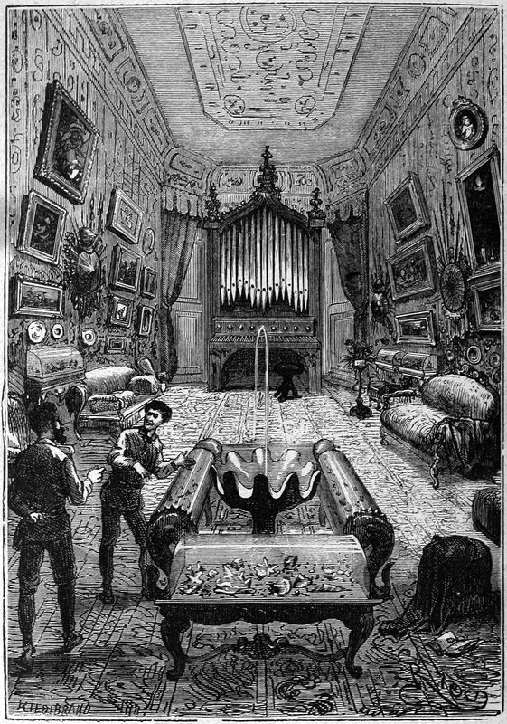
Uns trinta quadros de mestres, em molduras uniformes, separados por panóplias cintilantes, ornavam as paredes, forradas de tapeçarias de desenho severo. Vi ali telas do mais alto valor, que eu admirara, em sua maioria, nas coleções particulares da Europa e nas exposições de pintura. As diversas escolas dos mestres antigos estavam representadas por uma madona de Rafael, uma virgem de Leonardo da Vinci, uma ninfa de Correggio, uma mulher de Ticiano, uma adoração de Veronese, uma assunção de Murillo, um retrato de Holbein, um monge de Velázquez, um mártir de Ribera, uma quermesse de Rubens, duas paisagens flamengas de Teniers, três pequenos quadros de gênero de Gerard Dou, de Metsu, de Paulus Potter, duas telas de Géricault e de Prud’hon, algumas marinhas de Backhuysen e de Vernet. Entre as obras da pintura moderna, apareciam quadros assinados por Delacroix, Ingres, Decamps, Troyon, Meissonier, Daubigny etc., e algumas admiráveis reduções de estátuas de mármore ou de bronze, segundo os mais belos modelos da Antiguidade, erguiam-se sobre seus pedestais nos cantos daquele magnífico museu. O estado de estupefação que o comandante do Nautilus me predissera já começava a apoderar-se de meu espírito.
— Senhor professor — disse então aquele homem estranho —, há de desculpar a sem-cerimônia com que o recebo e a desordem que reina neste salão.
— Senhor — respondi —, sem procurar saber quem o senhor é, é-me permitido reconhecer no senhor um artista?
— Um amador, quando muito, senhor. Outrora eu gostava de colecionar essas belas obras criadas pela mão do homem. Era um pesquisador ávido, um rebuscador infatigável, e pude reunir alguns objetos de alto preço. São minhas últimas lembranças dessa terra que está morta para mim. A meus olhos, seus artistas modernos já não passam de antigos; têm dois ou três mil anos de existência, e eu os confundo em meu espírito. Os mestres não têm idade.
— E estes músicos? — disse eu, mostrando partituras de Weber, de Rossini, de Mozart, de Beethoven, de Haydn, de Meyerbeer, de Hérold, de Wagner, de Auber, de Gounod e de muitos outros, espalhadas sobre um piano-órgão de grande modelo que ocupava uma das paredes do salão.
— Esses músicos — respondeu-me o capitão Nemo — são contemporâneos de Orfeu, pois as diferenças cronológicas se apagam na memória dos mortos — e eu estou morto, senhor professor, tão morto quanto aqueles de seus amigos que repousam a seis pés sob a terra!
O capitão Nemo calou-se e pareceu perdido num devaneio profundo. Eu o contemplava com viva emoção, analisando em silêncio as estranhezas de sua fisionomia. Com o cotovelo apoiado no canto de uma preciosa mesa de mosaico, ele já não me via, esquecia minha presença.
Respeitei esse recolhimento e continuei a passar em revista as curiosidades que enriqueciam o salão.
Ao lado das obras de arte, as raridades naturais ocupavam um lugar muito importante. Consistiam principalmente em plantas, conchas e outras produções do Oceano, que deviam ser achados pessoais do capitão Nemo. No meio do salão, um repuxo, iluminado eletricamente, caía numa bacia feita de uma única tridacna. Essa concha, fornecida pelo maior dos moluscos acéfalos, media em suas bordas, delicadamente recortadas em festões, uma circunferência de cerca de seis metros; ultrapassava, pois, em tamanho as belas tridacnas que foram dadas a Francisco I pela República de Veneza e das quais a igreja de Saint-Sulpice, em Paris, fez duas pias de água benta gigantescas.
Em torno dessa bacia, sob elegantes vitrines fixadas por armações de cobre, estavam classificados e etiquetados os mais preciosos produtos do mar jamais oferecidos aos olhos de um naturalista. Compreende-se minha alegria de professor.
O ramo dos zoófitos oferecia espécimes muito curiosos de seus dois grupos, os pólipos e os equinodermos. No primeiro grupo, tubíporos, gorgônias dispostas em leque, esponjas macias da Síria, ísis das Molucas, penátulas, uma virgulária admirável dos mares da Noruega, umbelulárias variadas, alcionários, toda uma série daquelas madréporas que meu mestre Milne-Edwards classificou tão sagazmente em seções, e entre as quais notei adoráveis flabelinas, oculinas da ilha Bourbon, o “carro de Netuno” das Antilhas, soberbas variedades de corais, enfim todas as espécies daqueles curiosos polipeiros cuja reunião forma ilhas inteiras que um dia se tornarão continentes. Nos equinodermos, notáveis por seu invólucro espinhoso, as astérias, as estrelas-do-mar, os pentacrinos, as comátulas, os asterófons, os ouriços, as holotúrias etc. representavam a coleção completa dos indivíduos desse grupo.
Um conquiliólogo um pouco nervoso teria certamente desmaiado diante de outras vitrines, mais numerosas, onde estavam classificados os exemplares do ramo dos moluscos. Vi ali uma coleção de valor inestimável, que me faltaria tempo para descrever inteira. Entre esses produtos, citarei, apenas para registro: o elegante martelo-real do oceano Índico, cujas manchas brancas regulares sobressaíam vivamente sobre um fundo vermelho e marrom; um espôndilo-imperial de cores vivas, todo eriçado de espinhos, espécime raro nos museus europeus, cujo valor estimei em vinte mil francos; um martelo-comum dos mares da Nova Holanda, que se obtém com dificuldade; berbigões exóticos do Senegal, frágeis conchas brancas de valvas duplas, que um sopro teria dissipado como uma bolha de sabão; diversas variedades de regadores de Java, espécies de tubos calcários orlados de dobras foliáceas, muito disputados pelos colecionadores; toda uma série de troques, uns amarelo-esverdeados, pescados nos mares da América, outros de um castanho-ruivo, amigos das águas da Nova Holanda, estes, vindos do golfo do México e notáveis por sua concha imbricada, aqueles, estelárias encontradas nos mares austrais, e enfim, o mais raro de todos, o magnífico esporão da Nova Zelândia; depois, admiráveis telinas sulfuradas, espécies preciosas de citereias e de vênus, o quadrante entrelaçado das costas de Tranquebar, o turbante marmorizado de nácar resplandecente, os papagaios verdes dos mares da China, o cone quase desconhecido do gênero Cœnodulli, todas as variedades de porcelanas que servem de moeda na Índia e na África, a “Glória do Mar”, a mais preciosa concha das Índias Orientais; enfim, litorinas, delfínulas, turritelas, jantinas, óvulos, volutas, olivas, mitras, cascos, púrpuras, búzios, harpas, múrices, tritões, cerites, fusos, estrombos, pteróceros, lapas, hiáleas, cleodoras, conchinhas delicadas e frágeis que a ciência batizou com seus nomes mais encantadores.
À parte, em compartimentos especiais, desenrolavam-se colares de pérolas da maior beleza, que a luz elétrica salpicava de pontas de fogo: pérolas rosadas, arrancadas às pinas marinhas do mar Vermelho; pérolas verdes do haliótis-íris; pérolas amarelas, azuis, negras, produtos curiosos dos diversos moluscos de todos os oceanos e de certos mexilhões dos rios do Norte; enfim, vários exemplares de preço inestimável que tinham sido destilados pelas pintadinas mais raras. Algumas dessas pérolas ultrapassavam em tamanho um ovo de pombo; valiam, e mais ainda, aquela que o viajante Tavernier vendeu por três milhões ao xá da Pérsia, e superavam aquela outra pérola do imã de Mascate, que eu julgava sem rival no mundo.
Assim, calcular o valor dessa coleção era, por assim dizer, impossível. O capitão Nemo devia ter gasto milhões para adquirir esses diversos exemplares, e eu me perguntava em que fonte ele se abastecia para satisfazer assim suas fantasias de colecionador quando fui interrompido por estas palavras:
— O senhor examina minhas conchas, senhor professor. De fato, elas podem interessar a um naturalista; mas, para mim, têm um encanto a mais, pois recolhi-as todas com minha mão, e não há um mar do globo que tenha escapado às minhas buscas.
— Compreendo, capitão, compreendo essa alegria de passear no meio de tais riquezas. O senhor é dos que fizeram eles mesmos o seu tesouro. Nenhum museu da Europa possui semelhante coleção dos produtos do Oceano. Mas, se eu esgotar minha admiração por ela, que me restará para o navio que as leva! Não quero penetrar segredos que são seus! No entanto, confesso que este Nautilus, a força motriz que encerra, os aparelhos que permitem manobrá-lo, o agente tão poderoso que o anima, tudo isso excita ao mais alto grau minha curiosidade. Vejo suspensos nas paredes deste salão instrumentos cujo destino desconheço. Posso saber?…
— Senhor Aronnax — respondeu-me o capitão Nemo —, eu lhe disse que seria livre a bordo e, por conseguinte, nenhuma parte do Nautilus lhe é proibida. Pode, pois, visitá-lo em detalhe, e terei prazer em ser seu cicerone.
— Não sei como lhe agradecer, senhor, mas não abusarei de sua gentileza. Perguntarei apenas para que uso se destinam estes instrumentos de física…
— Senhor professor, esses mesmos instrumentos encontram-se em meu quarto, e é lá que terei o prazer de lhe explicar seu emprego. Mas antes venha visitar o camarote que lhe está reservado. É preciso que saiba como ficará instalado a bordo do Nautilus.
Segui o capitão Nemo, que, por uma das portas abertas em cada canto chanfrado do salão, me fez voltar às coxias do navio. Conduziu-me para a proa, e ali encontrei, não um camarote, mas um quarto elegante, com cama, toucador e diversos outros móveis.
Só pude agradecer a meu anfitrião.
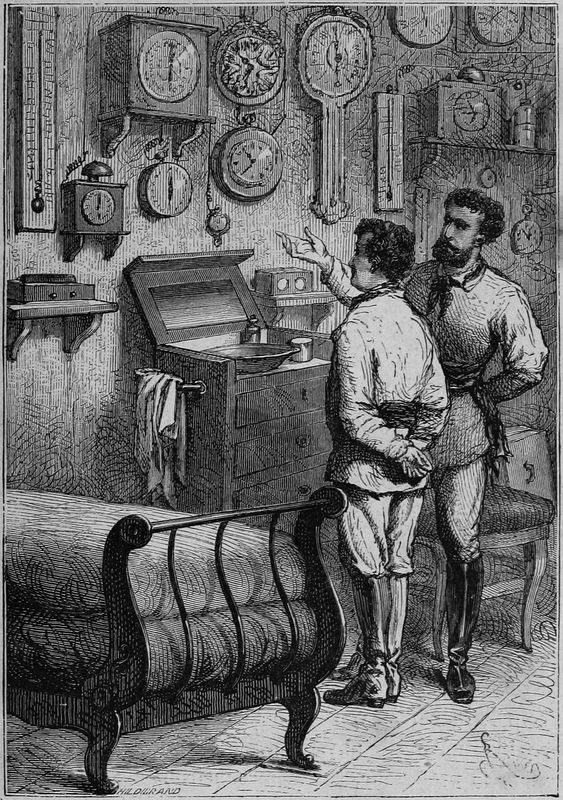
— Seu quarto é contíguo ao meu — disse-me ele, abrindo uma porta —, e o meu dá para o salão que acabamos de deixar.
Entrei no quarto do capitão. Tinha um aspecto severo, quase cenobítico. Um catre de ferro, uma mesa de trabalho, alguns móveis de toucador. Tudo iluminado por uma meia-luz. Nada de confortável. Apenas o estritamente necessário.
O capitão Nemo mostrou-me uma cadeira.
— Queira sentar-se — disse-me ele.
Sentei-me, e ele tomou a palavra nestes termos:
— Senhor — disse o capitão Nemo, mostrando-me os instrumentos suspensos nas paredes de seu quarto —, eis os aparelhos exigidos pela navegação do Nautilus. Aqui, como no salão, tenho-os sempre diante dos olhos, e eles me indicam minha posição e minha direção exata no meio do Oceano. Alguns o senhor conhece, como o termômetro, que dá a temperatura interior do Nautilus; o barômetro, que pesa o ar e prediz as mudanças de tempo; o higrômetro, que marca o grau de secura da atmosfera; o storm-glass, cuja mistura, ao se decompor, anuncia a chegada das tempestades; a bússola, que dirige minha rota; o sextante, que pela altura do sol me ensina minha latitude; os cronômetros, que me permitem calcular minha longitude; e enfim lunetas diurnas e noturnas, que me servem para perscrutar todos os pontos do horizonte quando o Nautilus sobe à superfície das ondas.
— São os instrumentos habituais do navegador — respondi —, e conheço seu uso. Mas eis outros que respondem sem dúvida às exigências particulares do Nautilus. Este mostrador que vejo, percorrido por um ponteiro móvel, não é um manômetro?
— É um manômetro, de fato. Posto em comunicação com a água, cuja pressão exterior indica, dá-me por isso mesmo a profundidade em que se mantém meu aparelho.
— E estas sondas de nova espécie?
— São sondas termométricas, que trazem a temperatura das diversas camadas de água.
— E estes outros instrumentos, cujo emprego não adivinho?
— Aqui, senhor professor, devo dar-lhe algumas explicações — disse o capitão Nemo. — Queira, pois, escutar-me.
Ficou em silêncio por alguns instantes; depois disse:
— Há um agente poderoso, obediente, rápido, fácil, que se presta a todos os usos e que reina como senhor a bordo. Tudo se faz por ele. Ele me ilumina, me aquece, é a alma de meus aparelhos mecânicos. Esse agente é a eletricidade.
— A eletricidade! — exclamei, bastante surpreso.
— Sim, senhor.
— No entanto, capitão, o senhor dispõe de uma extrema rapidez de movimentos que se harmoniza mal com o poder da eletricidade. Até agora, sua potência dinâmica permaneceu muito restrita e só conseguiu produzir pequenas forças!
— Senhor professor — respondeu o capitão Nemo —, minha eletricidade não é a de todo mundo, e é tudo o que me permitirá dizer-lhe a respeito.
— Não insistirei, senhor, e me contentarei em ficar muito espantado com tal resultado. Uma única pergunta, contudo, a que o senhor não responderá se for indiscreta. Os elementos que emprega para produzir esse maravilhoso agente devem gastar-se depressa. O zinco, por exemplo, como o substitui, já que não tem mais nenhuma comunicação com a terra?
— Sua pergunta terá resposta — respondeu o capitão Nemo. — Direi primeiro que existem no fundo dos mares minas de zinco, de ferro, de prata, de ouro, cuja exploração seria certamente praticável. Mas nada tomei desses metais da terra e quis pedir somente ao próprio mar os meios de produzir minha eletricidade.
— Ao mar?
— Sim, senhor professor, e os meios não me faltavam. Eu poderia, de fato, estabelecendo um circuito entre fios mergulhados a diferentes profundidades, obter a eletricidade pela diversidade de temperaturas a que estariam sujeitos; mas preferi empregar um sistema mais prático.
— E qual?
— O senhor conhece a composição da água do mar. Em mil gramas encontram-se noventa e seis centésimos e meio de água e cerca de dois centésimos e dois terços de cloreto de sódio; depois, em pequena quantidade, cloretos de magnésio e de potássio, brometo de magnésio, sulfato de magnésia, sulfato e carbonato de cal. Vê, pois, que o cloreto de sódio se encontra ali numa proporção notável. Ora, é esse sódio que extraio da água do mar e com o qual componho meus elementos.
— O sódio?
— Sim, senhor. Misturado ao mercúrio, forma um amálgama que substitui o zinco nos elementos Bunsen. O mercúrio nunca se gasta. Só o sódio se consome, e o próprio mar o fornece. Direi, além disso, que as pilhas de sódio devem ser consideradas as mais enérgicas, e que sua força eletromotriz é o dobro da das pilhas de zinco.
— Compreendo bem, capitão, a excelência do sódio nas condições em que o senhor se encontra. O mar o contém. Bem. Mas ainda é preciso fabricá-lo, extraí-lo, numa palavra. E como faz? Suas pilhas poderiam evidentemente servir a essa extração; mas, se não me engano, o gasto de sódio exigido pelos aparelhos elétricos ultrapassaria a quantidade extraída. Aconteceria, pois, que o senhor consumiria para produzi-lo mais do que produziria!
— Por isso, senhor professor, não o extraio pela pilha, e emprego simplesmente o calor do carvão de terra.
— De terra? — disse eu, insistindo.
— Digamos carvão de mar, se preferir — respondeu o capitão Nemo.
— E o senhor pode explorar minas submarinas de hulha?
— Senhor Aronnax, há de me ver em ação. Só lhe peço um pouco de paciência, já que tem tempo para ser paciente. Lembre-se apenas disto: devo tudo ao Oceano; ele produz a eletricidade, e a eletricidade dá ao Nautilus o calor, a luz, o movimento, a vida, numa palavra.
— Mas não o ar que o senhor respira?
— Oh! Eu poderia fabricar o ar necessário a meu consumo, mas é inútil, já que subo à superfície do mar quando me apraz. Contudo, se a eletricidade não me fornece o ar respirável, ela aciona pelo menos bombas possantes que o armazenam em reservatórios especiais, o que me permite prolongar, se necessário, e por quanto tempo eu quiser, minha permanência nas camadas profundas.
— Capitão — respondi —, contento-me em admirar. O senhor evidentemente encontrou o que os homens sem dúvida encontrarão um dia, a verdadeira potência dinâmica da eletricidade.
— Não sei se a encontrarão — respondeu friamente o capitão Nemo. — Seja como for, o senhor já conhece a primeira aplicação que fiz desse precioso agente. É ele que nos ilumina com uma igualdade, uma continuidade que a luz do sol não tem. Agora, olhe este relógio; é elétrico e anda com uma regularidade que desafia a dos melhores cronômetros. Dividi-o em vinte e quatro horas, como os relógios italianos, pois para mim não existem noite nem dia, nem sol nem lua, mas somente esta luz artificial que arrasto até o fundo dos mares! Veja: neste momento, são dez horas da manhã.
— Perfeitamente.
— Outra aplicação da eletricidade. Este mostrador, suspenso diante de nossos olhos, serve para indicar a velocidade do Nautilus. Um fio elétrico põe-no em comunicação com a hélice da barquinha, e seu ponteiro me indica a marcha real do aparelho. E veja: neste momento, corremos a uma velocidade moderada de quinze milhas por hora.
— É maravilhoso — respondi —, e vejo bem, capitão, que o senhor teve razão em empregar esse agente, que está destinado a substituir o vento, a água e o vapor.
— Não terminamos, senhor Aronnax — disse o capitão Nemo, levantando-se —, e, se quiser seguir-me, visitaremos a popa do Nautilus.
De fato, eu já conhecia toda a parte anterior daquele barco submarino, cuja divisão exata, indo do centro ao esporão, é a seguinte: a sala de jantar, de cinco metros, separada da biblioteca por uma antepara estanque, isto é, que a água não pode penetrar; a biblioteca, de cinco metros; o grande salão, de dez metros, separado do quarto do capitão por uma segunda antepara estanque; o dito quarto do capitão, de cinco metros; o meu, de dois metros e cinquenta; e enfim um reservatório de ar de sete metros e cinquenta, que se estendia até a roda de proa. Total: trinta e cinco metros de comprimento. As anteparas estanques eram abertas por portas que se fechavam hermeticamente por meio de obturadores de borracha e garantiam toda a segurança a bordo do Nautilus caso se declarasse um rombo.
Segui o capitão Nemo através das coxias laterais e cheguei ao centro do navio. Ali se encontrava uma espécie de poço que se abria entre duas anteparas estanques. Uma escada de ferro, presa à parede, conduzia à sua extremidade superior. Perguntei ao capitão para que servia aquela escada.
— Ela leva ao escaler — respondeu ele.
— Como! O senhor tem um escaler? — repliquei, bastante espantado.
— Sem dúvida. Uma embarcação excelente, leve e insubmergível, que serve para passeio e para pesca.
— Mas então, quando quer embarcar nela, o senhor é forçado a voltar à superfície do mar?
— De modo algum. Esse escaler adere à parte superior do casco do Nautilus e ocupa uma cavidade disposta para recebê-lo. É inteiramente coberto, absolutamente estanque e preso por sólidos parafusos. Esta escada conduz a uma escotilha aberta no casco do Nautilus, que corresponde a uma escotilha igual aberta no flanco do escaler. É por essa dupla abertura que me introduzo na embarcação. Fecha-se uma, a do Nautilus; fecho a outra, a do escaler, por meio de parafusos de pressão; solto os parafusos de fixação, e a embarcação sobe com prodigiosa rapidez à superfície do mar. Abro então o painel do convés, cuidadosamente fechado até ali, armo o mastro, iço a vela ou pego os remos, e passeio.
— Mas como volta a bordo?
— Não sou eu que volto, senhor Aronnax; é o Nautilus que vem.
— Às suas ordens!
— Às minhas ordens. Um fio elétrico me liga a ele. Envio um telegrama, e isso basta.
— De fato — disse eu, embriagado por essas maravilhas —, nada é mais simples!
Depois de passar pela caixa da escada que dava para a plataforma, vi um camarote de dois metros de comprimento, no qual Conseil e Ned Land, encantados com a refeição, ocupavam-se em devorá-la com apetite. Depois uma porta abriu-se para a cozinha, de três metros de comprimento, situada entre os vastos paióis de mantimentos de bordo.
Ali a eletricidade, mais enérgica e mais obediente que o próprio gás, fazia todo o trabalho do cozimento. Os fios, chegando sob os fogões, comunicavam a esponjas de platina um calor que se distribuía e se mantinha regularmente. Aquecia também aparelhos de destilação que, pela vaporização, forneciam uma excelente água potável. Ao lado dessa cozinha abria-se um banheiro confortavelmente disposto, cujas torneiras forneciam água fria ou quente, à vontade.
À cozinha seguia-se o alojamento da tripulação, de cinco metros de comprimento. Mas a porta estava fechada, e não pude ver sua disposição, que talvez me tivesse esclarecido sobre o número de homens exigido pela manobra do Nautilus.
Ao fundo erguia-se uma quarta antepara estanque, que separava esse alojamento da sala de máquinas. Uma porta se abriu, e encontrei-me no compartimento onde o capitão Nemo — engenheiro de primeira ordem, sem dúvida — dispusera seus aparelhos de locomoção.
Essa sala de máquinas, nitidamente iluminada, não media menos de vinte metros de comprimento. Estava naturalmente dividida em duas partes; a primeira continha os elementos que produziam a eletricidade, e a segunda, o mecanismo que transmitia o movimento à hélice.
Surpreendeu-me, antes de tudo, o odor sui generis que enchia aquele compartimento. O capitão Nemo percebeu minha impressão.
— São — disse-me ele — algumas emanações de gás produzidas pelo emprego do sódio; mas não passa de um leve inconveniente. Todas as manhãs, aliás, purificamos o navio ventilando-o a pleno ar.
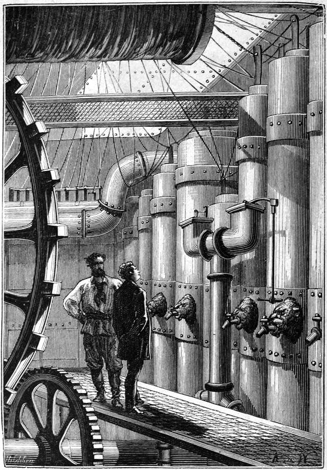
Enquanto isso, eu examinava, com um interesse fácil de conceber, a máquina do Nautilus.
— Como vê — disse-me o capitão Nemo —, emprego elementos Bunsen, e não elementos Ruhmkorff. Estes teriam sido impotentes. Os elementos Bunsen são pouco numerosos, mas fortes e grandes, o que é melhor, como a experiência mostrou. A eletricidade produzida vai para a popa, onde age, por meio de eletroímãs de grande dimensão, sobre um sistema particular de alavancas e engrenagens que transmitem o movimento ao eixo da hélice. Esta, cujo diâmetro é de seis metros e o passo de sete metros e cinquenta, pode dar até cento e vinte rotações por segundo.
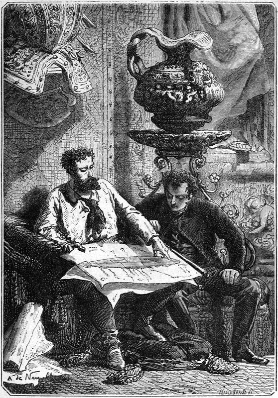
— E o senhor obtém então?
— Uma velocidade de cinquenta milhas por hora.
Havia ali um mistério, mas não insisti em conhecê-lo. Como podia a eletricidade agir com tal potência? Onde essa força quase ilimitada tinha sua origem? Estaria em sua tensão excessiva, obtida por bobinas de um novo tipo? Estaria em sua transmissão, que um sistema de alavancas desconhecidas6 podia aumentar ao infinito? É o que eu não conseguia compreender.
— Capitão Nemo — disse eu —, constato os resultados e não procuro explicá-los. Vi o Nautilus manobrar diante da Abraham Lincoln e sei o que pensar de sua velocidade. Mas andar não basta. É preciso ver aonde se vai! É preciso poder dirigir-se à direita, à esquerda, para cima, para baixo! Como o senhor atinge as grandes profundidades, onde encontra uma resistência crescente que se avalia em centenas de atmosferas? Como volta à superfície do Oceano? Enfim, como se mantém no meio que lhe convém? Sou indiscreto ao perguntá-lo?
— De modo algum, senhor professor — respondeu-me o capitão, depois de uma leve hesitação —, já que o senhor nunca deverá deixar este barco submarino. Venha ao salão. É o nosso verdadeiro gabinete de trabalho, e lá saberá tudo o que deve saber sobre o Nautilus!
Um instante depois, estávamos sentados num divã do salão, de charuto nos lábios. O capitão pôs diante de meus olhos um desenho técnico que dava a planta, o corte e a elevação do Nautilus. Depois começou sua descrição nestes termos:
— Eis, senhor Aronnax, as diversas dimensões do barco que o leva. É um cilindro muito alongado, de extremidades cônicas. Tem sensivelmente a forma de um charuto, forma já adotada em Londres em várias construções do mesmo gênero. O comprimento desse cilindro, de ponta a ponta, é exatamente de setenta metros, e sua boca, na maior largura, é de oito metros. Não é construído, pois, exatamente na proporção de um para dez, como os seus vapores de grande andamento, mas suas linhas são suficientemente longas e seu delgado bastante prolongado para que a água deslocada escape facilmente e não oponha nenhum obstáculo à sua marcha.
“Essas duas dimensões permitem-lhe obter, por um simples cálculo, a superfície e o volume do Nautilus. Sua superfície compreende mil e onze metros quadrados e quarenta e cinco centésimos; seu volume, mil e quinhentos metros cúbicos e dois décimos — o que equivale a dizer que, inteiramente submerso, ele desloca, ou pesa, mil e quinhentos metros cúbicos ou toneladas.
“Quando fiz os planos deste navio destinado a uma navegação submarina, quis que, em equilíbrio na água, ele mergulhasse nove décimos e emergisse somente um décimo. Por conseguinte, nessas condições só devia deslocar os nove décimos de seu volume, ou seja, mil trezentos e cinquenta e seis metros cúbicos e quarenta e oito centésimos, isto é, pesar apenas esse mesmo número de toneladas. Tive, portanto, de não ultrapassar esse peso ao construí-lo segundo as dimensões acima.
“O Nautilus compõe-se de dois cascos, um interior, outro exterior, unidos entre si por ferros em T que lhe dão uma rigidez extrema. De fato, graças a essa disposição celular, ele resiste como um bloco, como se fosse maciço. Seu costado não pode ceder; adere por si mesmo e não pelo aperto dos rebites, e a homogeneidade de sua construção, devida à perfeita junção dos materiais, permite-lhe desafiar os mares mais violentos.
“Esses dois cascos são fabricados em chapa de aço cuja densidade em relação à água é de sete vírgula oito. O primeiro tem nada menos de cinco centímetros de espessura e pesa trezentas e noventa e quatro toneladas e noventa e seis centésimos. O segundo invólucro, a quilha, com cinquenta centímetros de altura e vinte e cinco de largura, pesando sozinha sessenta e duas toneladas, a máquina, o lastro, os diversos acessórios e instalações, as anteparas e os escoramentos interiores têm um peso de novecentas e sessenta e uma toneladas e sessenta e dois centésimos, que, somadas às trezentas e noventa e quatro toneladas e noventa e seis centésimos, formam o total exigido de mil trezentas e cinquenta e seis toneladas e quarenta e oito centésimos. Está entendido?
— Está entendido — respondi.
— Portanto — retomou o capitão —, quando o Nautilus se encontra a flutuar nessas condições, emerge um décimo. Ora, se dispus reservatórios de capacidade igual a esse décimo, ou seja, com um conteúdo de cento e cinquenta toneladas e setenta e dois centésimos, e se os encho de água, o barco, deslocando então mil quinhentas e sete toneladas, ou pesando-as, ficará completamente submerso. É o que acontece, senhor professor. Esses reservatórios existem ao longo dos flancos, nas partes inferiores do Nautilus. Abro as torneiras, eles se enchem, e o barco, afundando, vem aflorar à superfície da água.
— Bem, capitão, mas chegamos então à verdadeira dificuldade. Que o senhor possa aflorar à superfície do Oceano, compreendo. Mas mais abaixo, mergulhando sob essa superfície, seu aparelho submarino não vai encontrar uma pressão e, por conseguinte, sofrer um empuxo de baixo para cima que deve ser avaliado em uma atmosfera por trinta pés de água, ou seja, cerca de um quilo por centímetro quadrado?
— Perfeitamente, senhor.
— Portanto, a menos que o senhor encha o Nautilus por inteiro, não vejo como pode arrastá-lo para o seio das massas líquidas.
— Senhor professor — respondeu o capitão Nemo —, não se deve confundir a estática com a dinâmica, sem o que se fica exposto a graves erros. Há muito pouco trabalho a despender para atingir as regiões baixas do Oceano, pois os corpos têm tendência a se tornar “afundadiços”. Acompanhe meu raciocínio.
— Estou ouvindo, capitão.
— Quando quis determinar o aumento de peso que é preciso dar ao Nautilus para submergi-lo, só tive de me preocupar com a redução de volume que a água do mar sofre à medida que suas camadas se tornam cada vez mais profundas.
— É evidente — respondi.
— Ora, se a água não é absolutamente incompressível, é pelo menos muito pouco compressível. De fato, segundo os cálculos mais recentes, essa redução é de apenas quatrocentos e trinta e seis décimos de milionésimo por atmosfera, ou a cada trinta pés de profundidade. Se se trata de ir a mil metros, levo em conta então a redução de volume sob uma pressão equivalente à de uma coluna de água de mil metros, isto é, sob uma pressão de cem atmosferas. Essa redução será então de quatrocentos e trinta e seis centésimos de milésimo. Deverei, portanto, aumentar o peso de modo a pesar mil quinhentas e treze toneladas e setenta e sete centésimos, em vez de mil quinhentas e sete toneladas e dois décimos. O aumento será, consequentemente, de apenas seis toneladas e cinquenta e sete centésimos.
— Só isso?
— Só isso, senhor Aronnax, e o cálculo é fácil de verificar. Ora, tenho reservatórios suplementares capazes de embarcar cem toneladas. Posso, pois, descer a profundidades consideráveis. Quando quero subir à superfície e aflorar, basta-me expelir essa água e esvaziar inteiramente todos os reservatórios, se desejo que o Nautilus emerja o décimo de sua capacidade total.
A esses raciocínios apoiados em números, eu nada tinha a objetar.
— Admito seus cálculos, capitão — respondi —, e seria deselegante contestá-los, já que a experiência lhes dá razão todos os dias. Mas pressinto agora uma dificuldade real.
— Qual, senhor?
— Quando o senhor está a mil metros de profundidade, as paredes do Nautilus suportam uma pressão de cem atmosferas. Se, nesse momento, quer esvaziar os reservatórios suplementares para aliviar seu barco e subir à superfície, é preciso que as bombas vençam essa pressão de cem atmosferas, que é de cem quilos por centímetro quadrado. Daí uma potência…
— Que só a eletricidade podia me dar — apressou-se a dizer o capitão Nemo. — Repito-lhe, senhor, que o poder dinâmico de minhas máquinas é quase infinito. As bombas do Nautilus têm uma força prodigiosa, e o senhor deve tê-lo visto quando suas colunas de água se precipitaram como uma torrente sobre a Abraham Lincoln. Aliás, só me sirvo dos reservatórios suplementares para atingir profundidades médias de mil e quinhentos a dois mil metros, e isso com o objetivo de poupar meus aparelhos. Por isso, quando me dá a fantasia de visitar as profundezas do Oceano a duas ou três léguas abaixo de sua superfície, emprego manobras mais longas, mas não menos infalíveis.
— Quais, capitão? — perguntei.
— Isto me leva naturalmente a dizer-lhe como se manobra o Nautilus.
— Estou impaciente por sabê-lo.
— Para governar este barco a estibordo, a bombordo, para evoluir, numa palavra, num plano horizontal, sirvo-me de um leme comum de porta larga, fixado na parte de trás do cadaste e acionado por uma roda e por talhas. Mas posso também mover o Nautilus de baixo para cima e de cima para baixo, num plano vertical, por meio de dois planos inclinados, presos a seus flancos sobre o centro de flutuação, planos móveis, aptos a tomar todas as posições, que se manobram do interior por meio de alavancas possantes. Se esses planos se mantêm paralelos ao barco, este se move horizontalmente. Se estão inclinados, o Nautilus, segundo a disposição dessa inclinação e sob o impulso de sua hélice, ou afunda segundo uma diagonal tão alongada quanto me convier, ou sobe segundo essa diagonal. E até, se quero voltar mais rapidamente à superfície, desligo a hélice, e a pressão das águas faz o Nautilus subir verticalmente, como um balão que, cheio de hidrogênio, se eleva rapidamente nos ares.
— Bravo, capitão! — exclamei. — Mas como pode o timoneiro seguir a rota que o senhor lhe dá no meio das águas?
— O timoneiro fica numa cabine envidraçada que se projeta na parte superior do casco do Nautilus, guarnecida de vidros lenticulares.
— Vidros capazes de resistir a tais pressões?
— Perfeitamente. O cristal, frágil ao choque, oferece no entanto uma resistência considerável. Em experiências de pesca à luz elétrica feitas em 1864, no meio dos mares do Norte, viram-se placas dessa matéria, com uma espessura de apenas sete milímetros, resistir a uma pressão de dezesseis atmosferas, deixando passar ao mesmo tempo poderosos raios caloríficos que lhes distribuíam desigualmente o calor. Ora, os vidros de que me sirvo não têm menos de vinte e um centímetros no centro, isto é, trinta vezes essa espessura.
— Admitido, capitão Nemo; mas, enfim, para ver é preciso que a luz expulse as trevas, e pergunto-me como, no meio da escuridão das águas…
— Atrás da cabine do timoneiro está colocado um poderoso refletor elétrico, cujos raios iluminam o mar a meia milha de distância.
— Ah! Bravo, três vezes bravo, capitão! Explico-me agora a fosforescência do pretenso narval, que tanto intrigou os sábios! A propósito, pergunto-lhe se o abalroamento do Nautilus com o Scotia, que teve tamanha repercussão, foi resultado de um encontro fortuito?
— Puramente fortuito, senhor. Eu navegava a dois metros abaixo da superfície das águas quando o choque se produziu. Vi, aliás, que ele não teve nenhuma consequência grave.
— Nenhuma, senhor. Mas quanto ao seu encontro com a Abraham Lincoln?…
— Senhor professor, lamento-o por um dos melhores navios dessa brava marinha americana, mas atacavam-me e tive de me defender! Contentei-me, contudo, em pôr a fragata fora de condições de me prejudicar; ela não terá dificuldade em reparar suas avarias no porto mais próximo.
— Ah, comandante! — exclamei com convicção. — É verdadeiramente um barco maravilhoso, o seu Nautilus!
— Sim, senhor professor — respondeu com verdadeira emoção o capitão Nemo —, e eu o amo como carne da minha carne! Se tudo é perigo num de seus navios sujeitos aos acasos do Oceano, se nesse mar a primeira impressão é o sentimento do abismo, como tão bem disse o holandês Jansen, debaixo e a bordo do Nautilus o coração do homem já não tem nada a temer. Nenhuma deformação a recear, pois o casco duplo deste barco tem a rigidez do ferro; nenhum aparelho que o balanço ou o arfar desgastem; nenhuma vela que o vento leve; nenhuma caldeira que o vapor rasgue; nenhum incêndio a temer, já que este aparelho é feito de chapa e não de madeira; nenhum carvão que se esgote, já que a eletricidade é seu agente mecânico; nenhum encontro a temer, já que ele é o único a navegar nas águas profundas; nenhuma tempestade a enfrentar, já que encontra a alguns metros abaixo das águas a tranquilidade absoluta! Eis aí, senhor. Eis o navio por excelência! E, se é verdade que o engenheiro tem mais confiança no navio do que o construtor, e o construtor mais do que o próprio capitão, compreenda então com que abandono confio em meu Nautilus, já que sou ao mesmo tempo seu capitão, seu construtor e seu engenheiro!
O capitão Nemo falava com uma eloquência arrebatadora. O fogo de seu olhar, a paixão de seu gesto o transfiguravam. Sim! Ele amava seu navio como um pai ama o filho!
Mas uma pergunta, indiscreta talvez, colocava-se naturalmente, e não pude deixar de fazê-la.
— O senhor é então engenheiro, capitão Nemo?
— Sim, senhor professor — respondeu-me ele —, estudei em Londres, em Paris, em Nova York, no tempo em que era um habitante dos continentes da terra.
— Mas como pôde construir em segredo este admirável Nautilus?
— Cada uma de suas peças, senhor Aronnax, chegou-me de um ponto diferente do globo, e com um destino disfarçado. Sua quilha foi forjada no Creusot; seu eixo de hélice, na Pen & Co., de Londres; as chapas de seu casco, na Leard, de Liverpool; sua hélice, na Scott, de Glasgow. Seus reservatórios foram fabricados pela Cail & Co., de Paris; sua máquina, pela Krupp, na Prússia; seu esporão, nas oficinas de Motala, na Suécia; seus instrumentos de precisão, na Hart Irmãos, de Nova York etc.; e cada um desses fornecedores recebeu meus planos sob nomes diversos.
— Mas — retomei — essas peças assim fabricadas, foi preciso montá-las, ajustá-las?
— Senhor professor, eu instalara minhas oficinas numa ilhota deserta, em pleno Oceano. Ali, meus operários, isto é, meus bravos companheiros, que eu instruí e formei, e eu concluímos nosso Nautilus. Depois, terminada a operação, o fogo destruiu todo vestígio de nossa passagem por aquela ilhota, que eu teria feito explodir, se pudesse.
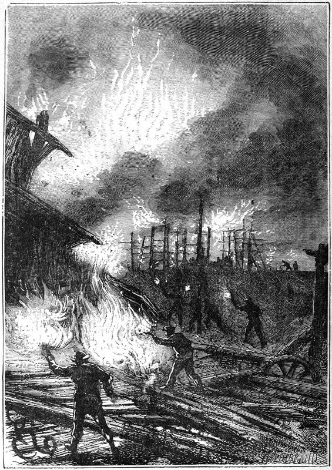
— Então me é permitido crer que o preço de custo deste navio é excessivo?
— Senhor Aronnax, um navio de ferro custa mil cento e vinte e cinco francos por tonelada. Ora, o Nautilus tem uma arqueação de mil e quinhentas. Custa, portanto, um milhão seiscentos e oitenta e sete mil francos, ou dois milhões incluindo suas instalações, ou quatro ou cinco milhões com as obras de arte e as coleções que contém.
— Uma última pergunta, capitão Nemo.
— Faça-a, senhor professor.
— O senhor é então rico?
— Rico ao infinito, senhor, e poderia, sem me incomodar, pagar os dez bilhões de dívidas da França!
Olhei fixamente o estranho personagem que me falava assim. Estaria abusando de minha credulidade? O futuro haveria de me dizer.

A porção do globo terrestre ocupada pelas águas é avaliada em três milhões oitocentos e trinta e dois mil quinhentos e cinquenta e oito miriâmetros quadrados, ou seja, mais de trinta e oito milhões de hectares. Essa massa líquida compreende dois bilhões duzentos e cinquenta milhões de milhas cúbicas e formaria uma esfera de sessenta léguas de diâmetro, cujo peso seria de três quintilhões de toneladas. E, para compreender esse número, é preciso dizer-se que o quintilhão está para o bilhão como o bilhão está para a unidade, isto é, há tantos bilhões num quintilhão quanto unidades num bilhão. Ora, essa massa líquida é aproximadamente a quantidade de água que todos os rios da terra despejariam durante quarenta mil anos.
Durante as eras geológicas, ao período do fogo sucedeu o período da água. O Oceano foi a princípio universal. Depois, pouco a pouco, nos tempos silurianos, cumes de montanhas apareceram, ilhas emergiram, desapareceram sob dilúvios parciais, mostraram-se de novo, soldaram-se, formaram continentes, e enfim as terras fixaram-se geograficamente tais como as vemos. O sólido conquistara ao líquido trinta e sete milhões seiscentas e cinquenta e sete mil milhas quadradas, ou seja, doze mil novecentos e dezesseis milhões de hectares.
A configuração dos continentes permite dividir as águas em cinco grandes partes: o oceano Glacial Ártico, o oceano Glacial Antártico, o oceano Índico, o oceano Atlântico, o oceano Pacífico.
O oceano Pacífico estende-se de norte a sul entre os dois círculos polares, e de oeste a leste entre a Ásia e a América, numa extensão de cento e quarenta e cinco graus de longitude. É o mais tranquilo dos mares; suas correntes são largas e lentas, suas marés medíocres, suas chuvas abundantes. Tal era o Oceano que meu destino me chamava primeiro a percorrer, nas mais estranhas condições.
— Senhor professor — disse-me o capitão Nemo —, vamos, se o senhor quiser, determinar exatamente nossa posição e fixar o ponto de partida desta viagem. São quinze para o meio-dia. Vou subir à superfície das águas.
O capitão apertou três vezes uma campainha elétrica. As bombas começaram a expelir a água dos reservatórios; o ponteiro do manômetro marcou, pelas diferentes pressões, o movimento ascensional do Nautilus, depois parou.
— Chegamos — disse o capitão.
Dirigi-me à escada central que dava para a plataforma. Subi os degraus de metal e, pelas escotilhas abertas, cheguei à parte superior do Nautilus.
A plataforma emergia apenas oitenta centímetros. A proa e a popa do Nautilus apresentavam aquela disposição fusiforme que o fazia comparar, com razão, a um longo charuto. Notei que suas chapas, ligeiramente imbricadas, pareciam as escamas que revestem o corpo dos grandes répteis terrestres. Expliquei-me, pois, muito naturalmente que, apesar das melhores lunetas, aquele barco tivesse sempre sido tomado por um animal marinho.
Por volta do meio da plataforma, o escaler, meio embutido no casco do navio, formava uma leve saliência. À frente e atrás erguiam-se duas cabines de altura medíocre, de paredes inclinadas e em parte fechadas por espessos vidros lenticulares: uma destinada ao timoneiro que dirigia o Nautilus, a outra onde brilhava o poderoso farol elétrico que iluminava sua rota.
O mar estava magnífico, o céu puro. O longo veículo mal sentia as largas ondulações do Oceano. Uma leve brisa de leste encrespava a superfície das águas. O horizonte, livre de brumas, prestava-se às melhores observações.
Nada tínhamos à vista. Nem um recife, nem uma ilhota. Nada de Abraham Lincoln. A imensidão deserta.
O capitão Nemo, munido de seu sextante, tomou a altura do sol, que devia dar-lhe a latitude. Esperou alguns minutos que o astro viesse aflorar a borda do horizonte. Enquanto observava, nenhum de seus músculos estremecia, e o instrumento não estaria mais imóvel numa mão de mármore.
— Meio-dia — disse ele. — Senhor professor, quando quiser?…
Lancei um último olhar àquele mar um pouco amarelado das proximidades do Japão e desci de novo ao grande salão.
Ali o capitão fez o ponto e calculou cronometricamente sua longitude, que controlou por observações anteriores de ângulos horários. Depois me disse:
— Senhor Aronnax, estamos a cento e trinta e sete graus e quinze minutos de longitude a oeste…
— De que meridiano? — perguntei vivamente, esperando que a resposta do capitão talvez me indicasse sua nacionalidade.
— Senhor — respondeu-me ele —, tenho diversos cronômetros acertados pelos meridianos de Paris, de Greenwich e de Washington. Mas, em sua honra, servir-me-ei do de Paris.
Essa resposta nada me ensinava. Inclinei-me, e o comandante retomou:
— Trinta e sete graus e quinze minutos de longitude a oeste do meridiano de Paris, e trinta graus e sete minutos de latitude norte, isto é, a cerca de trezentas milhas das costas do Japão. É hoje, 8 de novembro, ao meio-dia, que começa nossa viagem de exploração sob as águas.
— Deus nos guarde! — respondi.
— E agora, senhor professor — acrescentou o capitão —, deixo-o com seus estudos. Dei o rumo lés-nordeste a cinquenta metros de profundidade. Eis cartas em grande escala, onde poderá acompanhá-lo. O salão está à sua disposição, e peço-lhe licença para me retirar.
O capitão Nemo cumprimentou-me. Fiquei só, absorto em meus pensamentos. Todos se voltavam para aquele comandante do Nautilus. Saberia eu algum dia a que nação pertencia aquele homem estranho que se gabava de não pertencer a nenhuma? Esse ódio que votara à humanidade, esse ódio que talvez buscasse vinganças terríveis, quem o provocara? Seria ele um desses sábios incompreendidos, um desses gênios “a quem fizeram sofrer”, segundo a expressão de Conseil, um Galileu moderno, ou então um desses homens de ciência como o americano Maury, cuja carreira foi destruída por revoluções políticas? Eu ainda não podia dizer. A mim, que o acaso acabava de lançar a seu bordo, a mim, cuja vida ele tinha nas mãos, ele me acolhia friamente, mas com hospitalidade. Só que nunca tomara a mão que eu lhe estendia. Nunca me estendera a sua.
Uma hora inteira fiquei mergulhado nessas reflexões, procurando penetrar aquele mistério tão interessante para mim. Depois meus olhares se fixaram no vasto planisfério estendido sobre a mesa, e pus o dedo no ponto exato onde se cruzavam a longitude e a latitude observadas.
O mar tem seus rios como os continentes. São correntes especiais, reconhecíveis pela temperatura, pela cor, e a mais notável delas é conhecida pelo nome de corrente do Golfo. A ciência determinou, no globo, a direção de cinco correntes principais: uma no Atlântico norte, uma segunda no Atlântico sul, uma terceira no Pacífico norte, uma quarta no Pacífico sul e uma quinta no oceano Índico sul. É até provável que uma sexta corrente existisse outrora no oceano Índico norte, quando os mares Cáspio e de Aral, unidos aos grandes lagos da Ásia, formavam uma única e mesma extensão de água.

Ora, no ponto indicado no planisfério corria uma dessas correntes, o Kuro-Shivo dos japoneses, o Rio Negro, que, saído do golfo de Bengala, onde o aquecem os raios perpendiculares do sol dos trópicos, atravessa o estreito de Malaca, costeia a Ásia, curva-se no Pacífico norte até as ilhas Aleutas, carregando troncos de canforeiras e outros produtos nativos e contrastando, com o puro índigo de suas águas quentes, com as ondas do Oceano. Era essa corrente que o Nautilus ia percorrer. Eu a seguia com o olhar, via-a perder-se na imensidão do Pacífico e sentia-me arrastado com ela, quando Ned Land e Conseil apareceram à porta do salão.
Meus dois bravos companheiros ficaram petrificados à vista das maravilhas acumuladas diante de seus olhos.
— Onde estamos? Onde estamos? — exclamou o canadense. — No museu de Quebec?
— Com a licença do senhor — replicou Conseil —, seria antes no palacete do Sommerard!
— Meus amigos — respondi, fazendo-lhes sinal para entrar —, vocês não estão nem no Canadá nem na França, mas a bordo do Nautilus, e a cinquenta metros abaixo do nível do mar.
— É preciso acreditar no senhor, já que o senhor o afirma — replicou Conseil —; mas, francamente, este salão é feito para espantar até um flamengo como eu.
— Espante-se, meu amigo, e olhe, pois, para um classificador da sua força, há muito com que trabalhar aqui.
Eu não precisava encorajar Conseil. O bom rapaz, debruçado sobre as vitrines, já murmurava palavras da língua dos naturalistas: classe dos gasterópodes, família dos bucinoides, gênero das porcelanas, espécie Cypræa madagascariensis etc.
Enquanto isso, Ned Land, pouco conquiliólogo, interrogava-me sobre meu encontro com o capitão Nemo. Teria eu descoberto quem ele era, de onde vinha, para onde ia, para que profundezas nos arrastava? Enfim, mil perguntas a que eu não tinha tempo de responder.
Contei-lhe tudo o que sabia, ou antes, tudo o que não sabia, e perguntei-lhe o que ele tinha ouvido ou visto por seu lado.
— Não vi nada, não ouvi nada — respondeu o canadense. — Nem cheguei a avistar a tripulação deste barco. Será que, por acaso, ela também é elétrica?
— Elétrica!
— Palavra, dá vontade de acreditar! Mas o senhor, senhor Aronnax — perguntou Ned Land, que não largava sua ideia —, não pode me dizer quantos homens há a bordo? Dez, vinte, cinquenta, cem?
— Eu não saberia lhe responder, mestre Land. Aliás, acredite-me, abandone por ora essa ideia de se apoderar do Nautilus ou de fugir dele. Este barco é uma das obras-primas da indústria moderna, e eu lamentaria não tê-lo visto! Muita gente aceitaria a situação em que estamos, nem que fosse só para passear no meio destas maravilhas. Fique, pois, tranquilo, e tratemos de ver o que se passa à nossa volta.
— Ver! — exclamou o arpoador. — Mas não se vê nada, não se verá nada desta prisão de chapa! Andamos, navegamos às cegas…
Ned Land pronunciava essas últimas palavras quando a escuridão se fez subitamente, e uma escuridão absoluta. O teto luminoso apagou-se, e tão rapidamente que meus olhos sentiram uma impressão dolorosa, análoga à que produz a passagem contrária das trevas profundas à luz mais brilhante.
Tínhamos ficado mudos, sem nos mexer, sem saber que surpresa, agradável ou desagradável, nos esperava. Mas ouviu-se um deslizar. Dir-se-ia que se manobravam painéis nos flancos do Nautilus.
— É o fim do fim! — disse Ned Land.
— Ordem das hidromedusas! — murmurou Conseil.
De repente, fez-se dia de cada lado do salão, através de duas aberturas oblongas. As massas líquidas apareceram vivamente iluminadas pelos eflúvios elétricos. Duas placas de cristal nos separavam do mar. A princípio estremeci ao pensar que aquela parede frágil podia quebrar-se; mas fortes armações de cobre a sustentavam e lhe davam uma resistência quase infinita.
O mar era distintamente visível num raio de uma milha em torno do Nautilus. Que espetáculo! Que pena poderia descrevê-lo! Quem saberia pintar os efeitos da luz através daqueles lençóis transparentes e a suavidade de suas gradações sucessivas até as camadas inferiores e superiores do Oceano!
Conhece-se a diafaneidade do mar. Sabe-se que sua limpidez supera a da água de rocha. As substâncias minerais e orgânicas que ele mantém em suspensão aumentam até sua transparência. Em certas partes do Oceano, nas Antilhas, cento e quarenta e cinco metros de água deixam ver o leito de areia com surpreendente nitidez, e a força de penetração dos raios solares parece só parar a uma profundidade de trezentos metros. Mas, naquele meio fluido que o Nautilus percorria, o brilho elétrico produzia-se no próprio seio das ondas. Já não era água luminosa, mas luz líquida.
Se se admite a hipótese de Ehrenberg, que acredita numa iluminação fosforescente dos fundos submarinos, a natureza certamente reservou aos habitantes do mar um de seus espetáculos mais prodigiosos, e eu podia julgá-lo ali pelos mil jogos daquela luz. De cada lado, eu tinha uma janela aberta para aqueles abismos inexplorados. A escuridão do salão realçava a claridade exterior, e olhávamos como se aquele cristal puro fosse o vidro de um imenso aquário.

O Nautilus parecia não se mexer. É que faltavam pontos de referência. Às vezes, porém, as linhas de água, divididas por seu esporão, corriam diante de nossos olhos com uma velocidade excessiva.
Maravilhados, estávamos debruçados diante daquelas vitrines, e nenhum de nós rompera ainda aquele silêncio de estupefação, quando Conseil disse:
— Você queria ver, amigo Ned; pois bem, está vendo!
— Curioso! Curioso! — fazia o canadense, que, esquecendo suas cóleras e seus projetos de fuga, sofria uma atração irresistível. — E viria gente de muito longe para admirar este espetáculo!
— Ah! — exclamei. — Compreendo a vida deste homem! Ele fez para si um mundo à parte, que lhe reserva suas mais espantosas maravilhas!
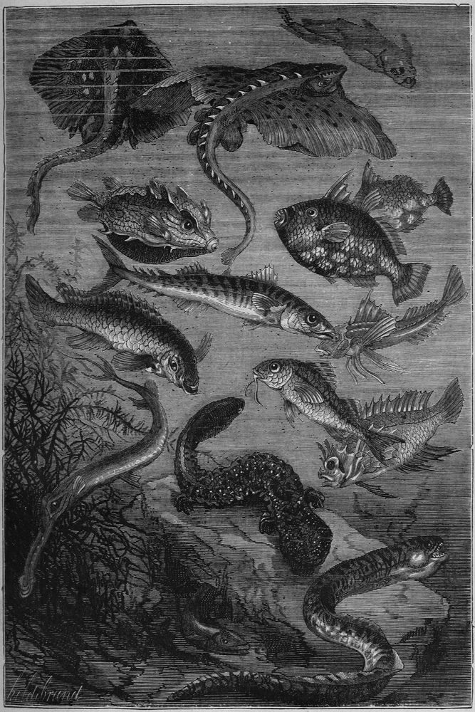
— Mas e os peixes? — observou o canadense. — Não vejo peixes!
— Que lhe importa, amigo Ned — respondeu Conseil —, já que você não os conhece?
— Eu! Um pescador! — exclamou Ned Land.
E sobre esse assunto ergueu-se uma discussão entre os dois amigos, pois ambos conheciam os peixes, mas cada um de um modo muito diferente.
Todo mundo sabe que os peixes formam a quarta e última classe do ramo dos vertebrados. Foram definidos com muita justeza como “vertebrados de circulação dupla e sangue frio, que respiram por brânquias e são destinados a viver na água”. Compõem duas séries distintas: a série dos peixes ósseos, isto é, aqueles cuja espinha dorsal é feita de vértebras ósseas, e a dos peixes cartilaginosos, isto é, aqueles cuja espinha dorsal é feita de vértebras cartilaginosas.
O canadense talvez conhecesse essa distinção, mas Conseil sabia muito mais e, agora que se tornara amigo de Ned, não podia admitir que fosse menos instruído do que ele. Por isso disse-lhe:
— Amigo Ned, você é um matador de peixes, um pescador muito hábil. Apanhou grande número desses interessantes animais. Mas aposto que não sabe como são classificados.
— Sei, sim — respondeu seriamente o arpoador. — Classificam-se em peixes que se comem e peixes que não se comem!
— Eis uma distinção de comilão — respondeu Conseil. — Mas diga-me se conhece a diferença que existe entre os peixes ósseos e os peixes cartilaginosos.
— Talvez, Conseil.
— E a subdivisão dessas duas grandes classes?
— Nem desconfio — respondeu o canadense.
— Pois bem, amigo Ned, escute e guarde! Os peixes ósseos subdividem-se em seis ordens. Primo, os acantopterígios, cuja mandíbula superior é completa, móvel, e cujas brânquias têm a forma de um pente. Essa ordem compreende quinze famílias, isto é, três quartos dos peixes conhecidos. Tipo: a perca-comum.
— Bem boa de comer — respondeu Ned Land.
— Secundo — retomou Conseil —, os abdominais, que têm as nadadeiras ventrais suspensas sob o abdômen e atrás das peitorais, sem estarem presas aos ossos do ombro; ordem que se divide em cinco famílias e compreende a maior parte dos peixes de água doce. Tipo: a carpa, o lúcio.
— Pff! — fez o canadense com certo desprezo. — Peixes de água doce!
— Tertio — disse Conseil —, os sub-braquianos, cujas ventrais estão presas sob as peitorais e imediatamente suspensas aos ossos do ombro. Essa ordem contém quatro famílias. Tipo: solhas, limandas, rodovalhos, rombos, linguados etc.
— Excelente! Excelente! — exclamava o arpoador, que só queria considerar os peixes do ponto de vista comestível.
— Quarto — retomou Conseil, sem se desconcertar —, os ápodes, de corpo alongado, desprovidos de nadadeiras ventrais e revestidos de uma pele espessa e muitas vezes viscosa; ordem que só compreende uma família. Tipo: a enguia, o gimnoto.
— Medíocre! Medíocre! — respondeu Ned Land.
— Quinto — disse Conseil —, os lofobrânquios, que têm as mandíbulas completas e livres, mas cujas brânquias são formadas de pequenos tufos dispostos aos pares ao longo dos arcos branquiais. Essa ordem só conta uma família. Tipo: os cavalos-marinhos, os pégasos-dragões.
— Ruim! Ruim! — replicou o arpoador.
— Sexto, enfim — disse Conseil —, os plectógnatos, cujo osso maxilar está preso de modo fixo ao lado do intermaxilar que forma a mandíbula, e cuja arcada palatina se encaixa por sutura com o crânio, o que a torna imóvel; ordem a que faltam verdadeiras ventrais e que se compõe de duas famílias. Tipos: os tetrodontes, os peixes-lua.
— Bons para desonrar um caldeirão! — exclamou o canadense.
— Compreendeu, amigo Ned? — perguntou o sábio Conseil.
— Nem um pouco, amigo Conseil — respondeu o arpoador. — Mas continue, porque você é muito interessante.
— Quanto aos peixes cartilaginosos — retomou imperturbavelmente Conseil —, eles só compreendem três ordens.
— Tanto melhor — fez Ned.
— Primo, os ciclóstomos, cujas mandíbulas estão soldadas num anel móvel e cujas brânquias se abrem por numerosos orifícios; ordem que só compreende uma família. Tipo: a lampreia.
— Precisa gostar — respondeu Ned Land.
— Secundo, os seláquios, com brânquias semelhantes às dos ciclóstomos, mas cuja mandíbula inferior é móvel. Essa ordem, que é a mais importante da classe, compreende duas famílias. Tipos: a raia e os esqualos.
— O quê! — exclamou Ned. — Raias e tubarões na mesma ordem! Pois bem, amigo Conseil, no interesse das raias, não lhe aconselho pô-los juntos no mesmo aquário!
— Tertio — respondeu Conseil —, os esturiônios, cujas brânquias se abrem, como de costume, por uma só fenda guarnecida de um opérculo; ordem que compreende quatro gêneros. Tipo: o esturjão.
— Ah, amigo Conseil, você guardou o melhor para o fim — na minha opinião, pelo menos. E é só isso?
— Sim, meu bom Ned — respondeu Conseil —, e note que, quando se sabe isso, ainda não se sabe nada, pois as famílias se subdividem em gêneros, em subgêneros, em espécies, em variedades…
— Pois bem, amigo Conseil — disse o arpoador, inclinando-se sobre o vidro do painel —, aí vão passando umas variedades!
— Sim! Peixes! — exclamou Conseil. — Parece que estamos diante de um aquário!
— Não — respondi —, pois o aquário não passa de uma gaiola, e estes peixes são livres como o pássaro no ar.
— Pois bem, amigo Conseil, diga os nomes deles, diga os nomes! — dizia Ned Land.
— Eu — respondeu Conseil — não sou capaz! Isso é com o meu patrão!
E, de fato, o digno rapaz, classificador ferrenho, não era um naturalista, e não sei se teria distinguido um atum de um bonito. Numa palavra, o contrário do canadense, que dava nome a todos aqueles peixes sem hesitar.
— Um peixe-porco — dissera eu.
— E um peixe-porco chinês! — respondia Ned Land.
— Gênero dos balistes, família dos esclerodermos, ordem dos plectógnatos — murmurava Conseil.
Decididamente, os dois juntos, Ned e Conseil, teriam formado um naturalista distinto.
O canadense não se enganara. Um bando de peixes-porcos, de corpo comprimido, pele granulosa, armados de um aguilhão na nadadeira dorsal, brincava em torno do Nautilus e agitava as quatro fileiras de espinhos que eriçam cada lado de sua cauda. Nada mais admirável que seu invólucro, cinzento por cima, branco por baixo, cujas manchas douradas cintilavam no redemoinho escuro das vagas. Entre eles ondulavam raias, como um lençol abandonado aos ventos, e entre elas avistei, para minha grande alegria, aquela raia chinesa, amarelada na parte superior, rosa-pálido sob o ventre, munida de três aguilhões atrás do olho; espécie rara, e até duvidosa no tempo de Lacépède, que só a vira numa coleção de desenhos japoneses.
Durante duas horas, todo um exército aquático escoltou o Nautilus. No meio de suas brincadeiras, de seus saltos, enquanto rivalizavam em beleza, brilho e velocidade, distingui o bodião-verde; o salmonete-barbudo, marcado por uma dupla listra negra; o góbio-eleotre, de cauda arredondada, branco e salpicado de violeta no dorso; a cavala-japonesa, admirável escombrídeo daqueles mares, de corpo azul e cabeça prateada; brilhantes azurores, cujo nome dispensa qualquer descrição; esparídeos listrados, de nadadeiras variegadas de azul e amarelo; esparídeos faixados, realçados por uma faixa negra na cauda; esparídeos zonéforos, elegantemente espartilhados em suas seis cintas; aulóstomos, verdadeiras bocas de flauta ou galinholas-do-mar, alguns dos quais atingiam um metro de comprimento; salamandras do Japão; moreias-equidnas, longas serpentes de seis pés, de olhos vivos e pequenos e boca vasta eriçada de dentes etc.
Nossa admiração mantinha-se sempre no mais alto grau. Nossas interjeições não se esgotavam. Ned nomeava os peixes, Conseil os classificava, eu me extasiava diante da vivacidade de seus movimentos e da beleza de suas formas. Nunca me fora dado surpreender aqueles animais vivos e livres em seu elemento natural.
Não citarei todas as variedades que passaram assim diante de nossos olhos ofuscados, toda aquela coleção dos mares do Japão e da China. Aqueles peixes acorriam, mais numerosos que os pássaros no ar, atraídos sem dúvida pelo foco brilhante de luz elétrica.
Subitamente, fez-se luz no salão. Os painéis de chapa tornaram a fechar-se. A visão encantadora desapareceu. Mas por muito tempo ainda sonhei, até o momento em que meus olhares se fixaram nos instrumentos suspensos nas paredes. A bússola continuava a mostrar a direção nor-nordeste, o manômetro indicava uma pressão de cinco atmosferas, correspondente a uma profundidade de cinquenta metros, e a barquinha elétrica dava uma marcha de quinze milhas por hora.
Eu esperava o capitão Nemo. Mas ele não apareceu. O relógio marcava cinco horas.
Ned Land e Conseil voltaram ao seu camarote. Eu voltei ao meu quarto. Meu jantar estava preparado ali. Compunha-se de uma sopa de tartaruga feita das tartarugas-de-pente mais delicadas, de um salmonete de carne branca, um pouco folheada, cujo fígado, preparado à parte, deu um prato delicioso, e de filés da carne do peixe-anjo-imperador, cujo sabor me pareceu superior ao do salmão.
Passei a noite a ler, a escrever, a pensar. Depois, vencido pelo sono, estendi-me em meu leito de zostera e adormeci profundamente, enquanto o Nautilus deslizava através da rápida corrente do Rio Negro.
No dia seguinte, 9 de novembro, só acordei depois de um longo sono de doze horas. Conseil veio, segundo seu costume, saber “como o senhor passara a noite” e oferecer-lhe seus serviços. Deixara seu amigo canadense dormindo como um homem que não tivesse feito outra coisa na vida.
Deixei o bom rapaz tagarelar à vontade, sem lhe responder muito. Eu estava preocupado com a ausência do capitão Nemo durante nossa sessão da véspera e esperava revê-lo naquele dia.
Logo vesti minhas roupas de bisso. Sua natureza provocou mais de uma vez as reflexões de Conseil. Expliquei-lhe que eram fabricadas com os filamentos lustrosos e sedosos que prendem às rochas os “presuntinhos”, espécie de conchas muito abundantes nas praias do Mediterrâneo. Outrora faziam-se com eles belos tecidos, meias, luvas, pois eram ao mesmo tempo muito macios e muito quentes. A tripulação do Nautilus podia, pois, vestir-se a bom preço, sem pedir nada nem aos algodoeiros, nem aos carneiros, nem aos bichos-da-seda da terra.
Quando me vesti, fui ao grande salão. Estava deserto.
Mergulhei no estudo daqueles tesouros de conquiliologia acumulados sob as vitrines. Vasculhei também vastos herbários, repletos das plantas marinhas mais raras, que, embora secas, conservavam suas cores admiráveis. Entre essas preciosas hidrófitas, notei cladóstefos verticilados, padinas-pavão, caulerpas de folhas de videira, calitamnos granulíferos, delicadas cerâmias de tons escarlates, ágares dispostos em leque, acetábulas semelhantes a chapéus de cogumelo muito achatados, que foram por muito tempo classificadas entre os zoófitos, enfim toda uma série de sargaços.
O dia inteiro passou sem que eu fosse honrado com a visita do capitão Nemo. Os painéis do salão não se abriram. Talvez não quisessem que nos cansássemos daquelas belas coisas.
A direção do Nautilus manteve-se a lés-nordeste, sua velocidade a doze milhas, sua profundidade entre cinquenta e sessenta metros.
No dia seguinte, 10 de novembro, o mesmo abandono, a mesma solidão. Não vi ninguém da tripulação. Ned e Conseil passaram a maior parte do dia comigo. Espantaram-se com a inexplicável ausência do capitão. Estaria doente aquele homem singular? Quereria modificar seus projetos a nosso respeito?
Afinal, segundo a observação de Conseil, gozávamos de inteira liberdade, éramos alimentados com delicadeza e abundância. Nosso anfitrião mantinha-se nos termos de seu tratado. Não podíamos queixar-nos, e, aliás, a própria singularidade de nosso destino reservava-nos tão belas compensações que ainda não tínhamos o direito de acusá-lo.
Naquele dia comecei o diário destas aventuras, o que me permitiu contá-las com a mais escrupulosa exatidão, e, detalhe curioso, escrevi-o num papel fabricado com zostera marinha.
Em 11 de novembro, de manhã muito cedo, o ar fresco espalhado no interior do Nautilus ensinou-me que tínhamos voltado à superfície do Oceano para renovar as provisões de oxigênio. Dirigi-me à escada central e subi à plataforma.
Eram seis horas. Encontrei o tempo encoberto, o mar cinzento, mas calmo. Quase nenhuma ondulação. O capitão Nemo, que eu esperava encontrar ali, viria? Só avistei o timoneiro, preso em sua cabine de vidro. Sentado na saliência produzida pelo casco do escaler, aspirei com deleite as emanações salinas.
Pouco a pouco, a bruma dissipou-se sob a ação dos raios solares. O astro radiante transbordava do horizonte oriental. O mar inflamou-se sob seu olhar como um rastro de pólvora. As nuvens, espalhadas nas alturas, coloriram-se de tons vivos admiravelmente matizados, e numerosas “línguas de gato”7 anunciaram vento para o dia inteiro.
Mas que importava o vento àquele Nautilus, que as tempestades não podiam assustar!
Eu admirava, pois, aquele alegre nascer do sol, tão vivo, tão vivificante, quando ouvi alguém subir para a plataforma.
Preparava-me para cumprimentar o capitão Nemo, mas foi seu imediato — que eu já vira durante a primeira visita do capitão — que apareceu. Avançou pela plataforma e não pareceu perceber minha presença. Com a possante luneta nos olhos, perscrutou todos os pontos do horizonte com extrema atenção. Depois, feito esse exame, aproximou-se da escotilha e pronunciou uma frase cujos termos exatos são os seguintes. Guardei-a, pois todas as manhãs ela se repetiu em condições idênticas. Era assim:
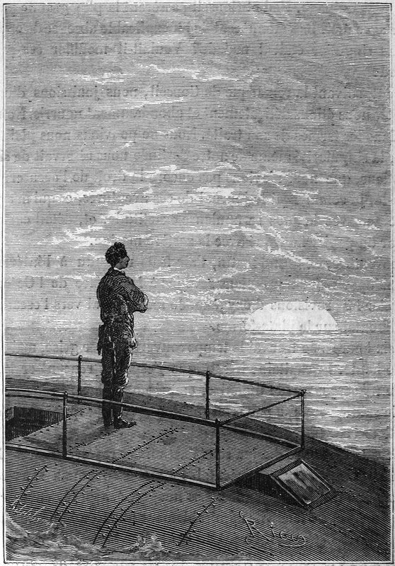
— Nautron respoc lorni virch.
O que significava, eu não saberia dizer.
Pronunciadas essas palavras, o imediato desceu de novo. Pensei que o Nautilus ia retomar sua navegação submarina. Voltei, pois, à escotilha e, pelas coxias, retornei a meu quarto.
Cinco dias passaram-se assim, sem que a situação se modificasse. Todas as manhãs eu subia à plataforma. A mesma frase era pronunciada pelo mesmo indivíduo. O capitão Nemo não aparecia.
Eu já me resignara a não vê-lo mais quando, em 16 de novembro, ao voltar a meu quarto com Ned e Conseil, encontrei sobre a mesa um bilhete endereçado a mim.

Abri-o com mão impaciente. Estava escrito numa letra franca e nítida, mas um pouco gótica, que lembrava os tipos alemães.
O bilhete estava redigido nestes termos:
“Ao senhor professor Aronnax, a bordo do Nautilus.
“16 de novembro de 1867.
“O capitão Nemo convida o senhor professor Aronnax para uma caçada que terá lugar amanhã de manhã em suas florestas da ilha Crespo. Espera que nada impeça o senhor professor de comparecer e verá com prazer que seus companheiros se juntem a ele.
“O comandante do Nautilus, capitão NEMO.”
— Uma caçada! — exclamou Ned.
— E em suas florestas da ilha Crespo! — acrescentou Conseil.
— Mas então esse sujeito vai à terra? — retomou Ned Land.
— Isso me parece claramente indicado — disse eu, relendo a carta.
— Pois bem! Temos de aceitar — replicou o canadense. — Uma vez em terra firme, veremos que partido tomar. Aliás, não me desagradará comer alguns pedaços de caça fresca.
Sem procurar conciliar o que havia de contraditório entre o horror manifesto do capitão Nemo pelos continentes e pelas ilhas e seu convite para caçar na floresta, contentei-me em responder:
— Vejamos primeiro o que é a ilha Crespo.
Consultei o planisfério e, a 32° 40′ de latitude norte e 167° 50′ de longitude oeste, encontrei uma ilhota que foi reconhecida em 1801 pelo capitão Crespo e que as antigas cartas espanholas chamavam Rocca de la Plata, isto é, “Rocha de Prata”. Estávamos, pois, a cerca de mil e oitocentas milhas de nosso ponto de partida, e a direção um pouco modificada do Nautilus levava-o para sudeste.
Mostrei a meus companheiros aquele pequeno rochedo perdido no meio do Pacífico norte.
— Se o capitão Nemo vai às vezes à terra — disse-lhes eu —, pelo menos escolhe ilhas absolutamente desertas!
Ned Land sacudiu a cabeça sem responder; depois ele e Conseil me deixaram. Depois de uma ceia que me foi servida pelo steward mudo e impassível, adormeci, não sem alguma preocupação.
No dia seguinte, 17 de novembro, ao acordar, senti que o Nautilus estava absolutamente imóvel. Vesti-me depressa e entrei no grande salão.
O capitão Nemo estava lá. Esperava-me; levantou-se, cumprimentou-me e perguntou-me se me convinha acompanhá-lo.
Como ele não fez nenhuma alusão à sua ausência durante aqueles oito dias, abstive-me de lhe falar disso e respondi simplesmente que meus companheiros e eu estávamos prontos a segui-lo.
— Só que, senhor — acrescentei —, tomarei a liberdade de lhe fazer uma pergunta.
— Faça-a, senhor Aronnax, e, se eu puder responder, responderei.
— Pois bem, capitão: como se explica que o senhor, que rompeu toda relação com a terra, possua florestas na ilha Crespo?
— Senhor professor — respondeu-me o capitão —, as florestas que possuo não pedem ao sol nem sua luz nem seu calor. Nem os leões, nem os tigres, nem as panteras, nem nenhum quadrúpede as frequentam. São conhecidas só por mim. Só crescem para mim. Não são florestas terrestres, mas florestas submarinas.
— Florestas submarinas! — exclamei.
— Sim, senhor professor.
— E o senhor se oferece para me levar até lá?
— Precisamente.
— A pé?
— E até a pé enxuto.
— Caçando?
— Caçando.
— De espingarda na mão?
— De espingarda na mão.
Olhei para o comandante do Nautilus com um ar que nada tinha de lisonjeiro para sua pessoa.
“Decididamente, ele tem o cérebro doente”, pensei. “Teve um acesso que durou oito dias, e que ainda dura. É pena! Eu o preferia estranho a louco!”
Esse pensamento lia-se claramente em meu rosto, mas o capitão Nemo contentou-se em convidar-me a segui-lo, e eu o segui como homem resignado a tudo.
Chegamos à sala de jantar, onde o almoço estava servido.
— Senhor Aronnax — disse-me o capitão —, peço-lhe que partilhe meu almoço sem cerimônia. Conversaremos enquanto comemos. Mas, se lhe prometi um passeio pela floresta, não me comprometi a fazê-lo encontrar lá um restaurante. Almoce, pois, como um homem que provavelmente só jantará muito tarde.
Fiz honra à refeição. Compunha-se de diversos peixes e de fatias de holotúria, excelentes zoófitos, temperados com algas muito aperitivas, como a Porphyria laciniata e a Laurentia primafetida. A bebida era água límpida, à qual, a exemplo do capitão, acrescentei algumas gotas de um licor fermentado, extraído, à moda do Kamtchatka, da alga conhecida pelo nome de “rodomênia-palmada”.
O capitão Nemo comeu a princípio sem pronunciar uma só palavra. Depois disse-me:
— Senhor professor, quando lhe propus vir caçar em minhas florestas de Crespo, o senhor me julgou em contradição comigo mesmo. Quando lhe disse que se tratava de florestas submarinas, julgou-me louco. Senhor professor, nunca se deve julgar os homens levianamente.
— Mas, capitão, acredite que…
— Queira escutar-me, e verá se deve acusar-me de loucura ou de contradição.
— Estou ouvindo.
— Senhor professor, o senhor sabe tão bem quanto eu que o homem pode viver debaixo da água com a condição de levar consigo sua provisão de ar respirável. Nos trabalhos submarinos, o operário, vestido com uma roupa impermeável e com a cabeça presa numa cápsula de metal, recebe o ar do exterior por meio de bombas de compressão e de reguladores de fluxo.
— É o aparelho dos escafandros — disse eu.
— De fato, mas nessas condições o homem não é livre. Está preso à bomba que lhe manda o ar por um tubo de borracha, verdadeira corrente que o prende à terra, e, se tivéssemos de ficar assim presos ao Nautilus, não poderíamos ir longe.
— E o meio de ser livre? — perguntei.
— É empregar o aparelho Rouquayrol-Denayrouze, imaginado por dois compatriotas seus, mas que aperfeiçoei para meu uso, e que lhe permitirá arriscar-se nessas novas condições fisiológicas sem que seus órgãos sofram de modo algum. Ele se compõe de um reservatório de chapa espessa, no qual armazeno o ar sob uma pressão de cinquenta atmosferas. Esse reservatório fixa-se às costas por meio de correias, como uma mochila de soldado. Sua parte superior forma uma caixa de onde o ar, retido por um mecanismo de fole, só pode escapar à sua tensão normal. No aparelho Rouquayrol, tal como é empregado, dois tubos de borracha, partindo dessa caixa, vão dar numa espécie de pavilhão que encerra o nariz e a boca do operador; um serve à entrada do ar inspirado, o outro à saída do ar expirado, e a língua fecha um ou outro, segundo as necessidades da respiração. Mas eu, que enfrento pressões consideráveis no fundo dos mares, tive de encerrar minha cabeça, como a dos escafandristas, numa esfera de cobre, e é a essa esfera que vão dar os dois tubos de inspiração e de expiração.
— Perfeitamente, capitão Nemo, mas o ar que o senhor leva deve gastar-se depressa, e, assim que só contém quinze por cento de oxigênio, torna-se irrespirável.
— Sem dúvida, mas, como eu lhe disse, senhor Aronnax, as bombas do Nautilus me permitem armazená-lo sob uma pressão considerável, e, nessas condições, o reservatório do aparelho pode fornecer ar respirável durante nove ou dez horas.
— Não tenho mais objeções a fazer — respondi. — Só lhe perguntarei, capitão, como pode iluminar seu caminho no fundo do Oceano.
— Com o aparelho Ruhmkorff, senhor Aronnax. Se o primeiro se leva nas costas, o segundo prende-se à cintura. Compõe-se de uma pilha Bunsen que ponho em atividade não com bicromato de potássio, mas com sódio. Uma bobina de indução recolhe a eletricidade produzida e dirige-a para uma lanterna de disposição particular. Nessa lanterna há uma serpentina de vidro que contém apenas um resíduo de gás carbônico. Quando o aparelho funciona, esse gás torna-se luminoso, dando uma luz esbranquiçada e contínua. Assim provido, respiro e vejo.
— Capitão Nemo, o senhor dá a todas as minhas objeções respostas tão esmagadoras que já não ouso duvidar. No entanto, se sou forçado a admitir os aparelhos Rouquayrol e Ruhmkorff, peço para fazer reservas quanto à espingarda com que quer me armar.
— Mas não é uma espingarda de pólvora — respondeu o capitão.
— É então uma espingarda de ar comprimido?
— Sem dúvida. Como quer que eu fabrique pólvora a bordo, sem ter salitre, nem enxofre, nem carvão?
— Além disso — disse eu —, para atirar debaixo da água, num meio oitocentas e cinquenta e cinco vezes mais denso que o ar, seria preciso vencer uma resistência considerável.
— Isso não seria razão. Existem certos canhões, aperfeiçoados depois de Fulton pelos ingleses Philip Coles e Burley, pelo francês Furcy, pelo italiano Landi, que são munidos de um sistema particular de fechamento e que podem atirar nessas condições. Mas, repito-lhe, não tendo pólvora, substituí-a por ar a alta pressão, que as bombas do Nautilus me fornecem em abundância.
— Mas esse ar deve gastar-se rapidamente.
— Pois bem, não tenho meu reservatório Rouquayrol, que pode, se necessário, fornecê-lo? Basta para isso uma torneira ad hoc. Aliás, senhor Aronnax, o senhor verá por si mesmo que, nessas caçadas submarinas, não se gasta muito ar nem muitas balas.
— No entanto, parece-me que nessa meia escuridão, e no meio desse líquido muito denso em relação à atmosfera, os tiros não podem ir longe e dificilmente são mortais?
— Senhor, com esta espingarda todos os tiros são mortais, pelo contrário, e, assim que um animal é atingido, por mais levemente que seja, cai fulminado.
— Por quê?
— Porque não são balas comuns que esta espingarda lança, mas pequenas cápsulas de vidro — inventadas pelo químico austríaco Leniebroek —, das quais tenho um suprimento considerável. Essas cápsulas de vidro, recobertas de uma armadura de aço e tornadas mais pesadas por um culote de chumbo, são verdadeiras pequenas garrafas de Leyden, nas quais a eletricidade está forçada a uma tensão altíssima. Ao mais leve choque, descarregam-se, e o animal, por mais possante que seja, cai morto. Acrescento que essas cápsulas não são maiores que chumbo número quatro e que a carga de uma espingarda comum poderia conter dez delas.
— Não discuto mais — respondi, levantando-me da mesa —, e só me resta pegar minha espingarda. Aliás, aonde o senhor for, irei.
O capitão Nemo conduziu-me para a popa do Nautilus e, ao passar diante do camarote de Ned e de Conseil, chamei meus dois companheiros, que nos seguiram imediatamente.
Depois chegamos a uma cela situada junto ao costado, perto da sala de máquinas, na qual devíamos vestir nossos trajes de passeio.
Essa cela era, propriamente falando, o arsenal e o vestiário do Nautilus. Uma dúzia de aparelhos de escafandro, suspensos na parede, esperavam os passeantes.
Ned Land, ao vê-los, manifestou uma repugnância evidente em vesti-los.
— Mas, meu bom Ned — disse-lhe eu —, as florestas da ilha Crespo são apenas florestas submarinas!
— Bom! — fez o arpoador, desapontado, vendo dissiparem-se seus sonhos de carne fresca. — E o senhor, senhor Aronnax, vai se meter nessas roupas?
— Tem de ser, mestre Ned.
— O senhor é livre — respondeu o arpoador, dando de ombros —, mas, quanto a mim, a menos que me obriguem, nunca entrarei aí dentro.
— Ninguém o obrigará, mestre Ned — disse o capitão Nemo.
— E Conseil vai se arriscar? — perguntou Ned.
— Sigo o senhor aonde quer que o senhor vá — respondeu Conseil.
A um chamado do capitão, dois homens da tripulação vieram ajudar-nos a vestir aquelas pesadas roupas impermeáveis, feitas de borracha sem costura e preparadas de modo a suportar pressões consideráveis. Dir-se-ia uma armadura ao mesmo tempo flexível e resistente. Essas roupas formavam calça e casaco. A calça terminava em calçados grossos, guarnecidos de pesadas solas de chumbo. O tecido do casaco era mantido por lâminas de cobre que couraçavam o peito, defendiam-no contra o empuxo das águas e deixavam os pulmões funcionar livremente; as mangas terminavam em forma de luvas flexíveis, que de modo algum contrariavam os movimentos da mão.
Havia uma grande distância, como se vê, entre esses escafandros aperfeiçoados e as roupas disformes, como as couraças de cortiça, os coletes, os trajes de mar, os cofres etc., que foram inventados e louvados no século XVIII.
O capitão Nemo, um de seus companheiros — uma espécie de Hércules, que devia ter uma força prodigiosa —, Conseil e eu logo vestimos aqueles trajes de escafandro. Só faltava encaixar nossa cabeça em sua esfera metálica. Mas, antes de proceder a essa operação, pedi ao capitão permissão para examinar as espingardas que nos eram destinadas.
Um dos homens do Nautilus apresentou-me uma espingarda simples, cuja coronha, feita de chapa de aço e oca por dentro, era de dimensão bastante grande. Servia de reservatório ao ar comprimido, que uma válvula, acionada por um gatilho, deixava escapar para o tubo de metal. Uma caixa de projéteis, escavada na espessura da coronha, continha umas vinte balas elétricas que, por meio de uma mola, se colocavam automaticamente no cano da espingarda. Assim que um tiro era disparado, o outro estava pronto a partir.
— Capitão Nemo — disse eu —, esta arma é perfeita e de manejo fácil. Só peço para experimentá-la. Mas como vamos chegar ao fundo do mar?
— Neste momento, senhor professor, o Nautilus está pousado no fundo a dez metros de profundidade, e só nos resta partir.
— Mas como sairemos?
— Já vai ver.
O capitão Nemo introduziu a cabeça na calota esférica. Conseil e eu fizemos o mesmo, não sem ouvir o canadense lançar-nos um irônico “boa caçada”. A parte de cima de nosso traje terminava num colar de cobre rosqueado, no qual se atarraxava o capacete de metal. Três aberturas, protegidas por vidros espessos, permitiam ver em todas as direções, bastando girar a cabeça dentro da esfera. Assim que ela foi posta, os aparelhos Rouquayrol, colocados em nossas costas, começaram a funcionar e, de minha parte, respirei à vontade.

Com a lâmpada Ruhmkorff suspensa à cintura, a espingarda na mão, eu estava pronto para partir. Mas, para ser franco, preso naquelas roupas pesadas e pregado ao convés por minhas solas de chumbo, ser-me-ia impossível dar um passo.
Mas esse caso estava previsto, pois senti que me empurravam para um pequeno compartimento contíguo ao vestiário. Meus companheiros, igualmente rebocados, seguiam-me. Ouvi uma porta munida de obturadores fechar-se sobre nós, e uma escuridão profunda nos envolveu.

Depois de alguns minutos, um silvo agudo chegou a meus ouvidos. Senti uma certa impressão de frio subir de meus pés até o peito. Evidentemente, de dentro do barco tinham dado entrada, por uma torneira, à água exterior, que nos invadia e da qual o compartimento logo ficou cheio. Uma segunda porta, aberta no flanco do Nautilus, abriu-se então. Uma meia-luz nos iluminou. Um instante depois, nossos pés pisavam o fundo do mar.
E agora, como poderia eu reconstituir as impressões que me deixou esse passeio sob as águas? As palavras são impotentes para contar tais maravilhas! Se o próprio pincel é inábil para reproduzir os efeitos próprios do elemento líquido, como saberia a pena reproduzi-los?
O capitão Nemo ia à frente, e seu companheiro nos seguia alguns passos atrás. Conseil e eu mantínhamo-nos um perto do outro, como se uma troca de palavras fosse possível através de nossas carapaças metálicas. Eu já não sentia o peso de minhas roupas, de meus calçados, de meu reservatório de ar, nem o daquela esfera espessa, dentro da qual minha cabeça chacoalhava como uma amêndoa em sua casca. Todos esses objetos, mergulhados na água, perdiam uma parte de seu peso igual à do líquido deslocado, e eu me dava muito bem com essa lei física reconhecida por Arquimedes. Já não era uma massa inerte e tinha uma liberdade de movimento relativamente grande.
A luz, que iluminava o solo até trinta pés abaixo da superfície do Oceano, espantou-me por sua potência. Os raios solares atravessavam facilmente aquela massa aquosa e dissipavam sua coloração. Eu distinguia nitidamente os objetos a uma distância de cem metros. Mais além, os fundos se matizavam das finas gradações do azul-ultramar, depois azulavam ao longe e se apagavam no meio de uma vaga escuridão. Verdadeiramente, aquela água que me cercava não passava de uma espécie de ar, mais denso que a atmosfera terrestre, mas quase tão diáfano. Acima de mim, eu avistava a calma superfície do mar.
Caminhávamos sobre uma areia fina, lisa, não enrugada como a das praias, que conserva a marca da ondulação. Esse tapete deslumbrante, verdadeiro refletor, repelia os raios do sol com surpreendente intensidade. Daí aquela imensa reverberação que penetrava todas as moléculas líquidas. Acreditarão em mim se eu afirmar que, àquela profundidade de trinta pés, eu enxergava como em pleno dia?
Durante um quarto de hora, pisei aquela areia ardente, semeada de uma poeira impalpável de conchas. O casco do Nautilus, desenhado como um longo recife, desaparecia pouco a pouco, mas seu farol, quando a noite caísse no meio das águas, devia facilitar nossa volta a bordo, projetando seus raios com perfeita nitidez. Efeito difícil de compreender para quem só viu em terra aqueles lençóis esbranquiçados tão vivamente marcados. Lá, a poeira de que o ar está saturado dá-lhes a aparência de um nevoeiro luminoso; mas sobre o mar, como sob o mar, esses traços elétricos se transmitem com uma pureza incomparável.
Entretanto, seguíamos sempre, e a vasta planície de areia parecia não ter limites. Eu afastava com a mão as cortinas líquidas que se fechavam atrás de mim, e o rastro de meus passos apagava-se de repente sob a pressão da água.
Logo algumas formas de objetos, mal esboçadas na distância, desenharam-se a meus olhos. Reconheci magníficos primeiros planos de rochedos, atapetados de zoófitos dos mais belos exemplares, e fui logo impressionado por um efeito próprio daquele meio.
Eram então dez horas da manhã. Os raios do sol batiam na superfície das ondas num ângulo bastante oblíquo e, ao contato de sua luz decomposta pela refração como através de um prisma, flores, rochedos, plantinhas, conchas, pólipos matizavam-se nas bordas com as sete cores do espectro solar. Era uma maravilha, uma festa para os olhos, aquele entrelaçamento de tons coloridos, um verdadeiro caleidoscópio de verde, de amarelo, de laranja, de violeta, de anil, de azul, numa palavra, toda a paleta de um colorista desvairado! Por que não podia eu comunicar a Conseil as vivas sensações que me subiam ao cérebro e rivalizar com ele em interjeições admirativas! Por que não sabia eu, como o capitão Nemo e seu companheiro, trocar meus pensamentos por meio de sinais combinados! Por isso, na falta de coisa melhor, eu falava comigo mesmo, gritava dentro da caixa de cobre que me cobria a cabeça, gastando talvez em palavras vãs mais ar do que convinha.
Diante desse espetáculo esplêndido, Conseil parara como eu. Evidentemente, o digno rapaz, em presença daqueles exemplares de zoófitos e de moluscos, classificava, classificava sempre. Pólipos e equinodermos abundavam no solo. As ísis variadas, as cornulárias que vivem isoladas, tufos de oculinas virgens, outrora designadas pelo nome de “coral branco”, as fúngias eriçadas em forma de cogumelo, as anêmonas aderindo por seu disco muscular, figuravam um canteiro de flores esmaltado de porpitas ornadas de seu colarinho de tentáculos azulados, de estrelas-do-mar que constelavam a areia e de asterófitos verrugosos, finas rendas bordadas pela mão das náiades, cujos festões se balançavam às fracas ondulações provocadas por nossa marcha. Era para mim um verdadeiro desgosto esmagar sob meus passos os brilhantes espécimes de moluscos que juncavam o solo aos milhares, as vieiras concêntricas, os martelos, as donáceas, verdadeiras conchas saltadoras, os troques, os cascos vermelhos, os estrombos asa-de-anjo, as aplísias e tantos outros produtos desse Oceano inesgotável. Mas era preciso andar, e seguíamos em frente, enquanto vogavam acima de nossas cabeças bandos de fisálias, deixando seus tentáculos cor de ultramar flutuarem atrás de si, medusas cuja umbrela opalina ou rosa-pálido, festonada de uma orla azul, nos abrigava dos raios solares, e pelágias panópiras, que, na escuridão, teriam semeado nosso caminho de clarões fosforescentes!
Todas essas maravilhas, entrevi-as no espaço de um quarto de milha, mal parando, seguindo o capitão Nemo, que me chamava com um gesto. Logo a natureza do solo se modificou. À planície de areia sucedeu uma camada de lodo viscoso que os americanos chamam de ooze, composto unicamente de conchas silicosas ou calcárias. Depois percorremos uma pradaria de algas, plantas pelágicas que as águas ainda não tinham arrancado e cuja vegetação era impetuosa. Esses gramados de tecido cerrado, macios ao pé, teriam rivalizado com os mais fofos tapetes tecidos pela mão dos homens. Mas, ao mesmo tempo que a verdura se estendia sob nossos passos, ela não abandonava nossas cabeças. Uma leve abóbada de plantas marinhas, classificadas naquela exuberante família das algas, da qual se conhecem mais de duas mil espécies, cruzava-se na superfície das águas. Eu via flutuar longas fitas de fucos, uns globulosos, outros tubulares, laurências, cladóstefos de folhagem tão delicada, rodimênias palmadas, semelhantes a leques de cacto. Observei que as plantas verdes se mantinham mais perto da superfície do mar, enquanto as vermelhas ocupavam uma profundidade média, deixando às hidrófitas negras ou castanhas o cuidado de formar os jardins e os canteiros das camadas mais remotas do Oceano.
Essas algas são verdadeiramente um prodígio da criação, uma das maravilhas da flora universal. Essa família produz ao mesmo tempo os menores e os maiores vegetais do globo. Pois, assim como se contaram quarenta mil dessas plantinhas imperceptíveis num espaço de cinco milímetros quadrados, também se recolheram fucos cujo comprimento ultrapassava quinhentos metros.
Tínhamos deixado o Nautilus havia cerca de uma hora e meia. Era quase meio-dia. Percebi-o pela perpendicularidade dos raios solares, que já não se refratavam. A magia das cores desapareceu pouco a pouco, e os matizes da esmeralda e da safira apagaram-se de nosso firmamento. Caminhávamos com um passo regular que ressoava no solo com uma intensidade espantosa. Os menores ruídos transmitiam-se com uma velocidade a que o ouvido não está habituado em terra. De fato, a água é para o som um veículo melhor que o ar, e ele se propaga nela com uma rapidez quatro vezes maior.
Nesse momento, o solo baixou numa encosta pronunciada. A luz tomou um tom uniforme. Atingimos uma profundidade de cem metros, sofrendo então uma pressão de dez atmosferas. Mas meu traje de escafandro fora construído em tais condições que eu não sofria de modo algum com essa pressão. Sentia apenas certo incômodo nas articulações dos dedos, e mesmo esse mal-estar não tardou a desaparecer. Quanto ao cansaço que devia trazer aquele passeio de duas horas sob um equipamento a que eu tão pouco estava habituado, era nulo. Meus movimentos, ajudados pela água, produziam-se com surpreendente facilidade.
Chegado àquela profundidade de trezentos pés, eu ainda percebia os raios do sol, mas fracamente. A seu brilho intenso sucedera um crepúsculo avermelhado, meio-termo entre o dia e a noite. Contudo, víamos o bastante para nos guiar, e ainda não era necessário pôr os aparelhos Ruhmkorff em atividade.
Nesse momento, o capitão Nemo parou. Esperou que eu o alcançasse e, com o dedo, mostrou-me algumas massas escuras que se destacavam na sombra a pouca distância.
“É a floresta da ilha Crespo”, pensei, e não me enganava.
Tínhamos enfim chegado à orla daquela floresta, sem dúvida uma das mais belas do imenso domínio do capitão Nemo. Ele a considerava sua e atribuía-se sobre ela os mesmos direitos que tinham os primeiros homens nos primeiros dias do mundo. Aliás, quem lhe teria disputado a posse dessa propriedade submarina? Que outro pioneiro mais ousado teria vindo, de machado na mão, desbravar suas matas sombrias?
Essa floresta compunha-se de grandes plantas arborescentes e, assim que penetramos sob suas vastas arcadas, meus olhares foram logo impressionados por uma singular disposição de suas ramagens — disposição que eu ainda não observara até então.
Nenhuma das ervas que atapetavam o solo, nenhum dos ramos que eriçavam os arbustos, rastejava, se curvava ou se estendia num plano horizontal. Todos subiam em direção à superfície do Oceano. Não havia filamentos, nem fitas, por mais finos que fossem, que não se mantivessem retos como hastes de ferro. Os fucos e os cipós desenvolviam-se segundo uma linha rígida e perpendicular, imposta pela densidade do elemento que os produzira. Imóveis, aliás, quando eu os afastava com a mão, essas plantas retomavam imediatamente sua posição primeira. Era ali o reino da verticalidade.
Logo me habituei a essa disposição bizarra, assim como à escuridão relativa que nos envolvia. O solo da floresta era semeado de blocos pontiagudos, difíceis de evitar. A flora submarina pareceu-me bastante completa, mais rica até do que teria sido nas zonas árticas ou tropicais, onde seus produtos são menos numerosos. Mas, durante alguns minutos, confundi involuntariamente os reinos entre si, tomando zoófitos por hidrófitas, animais por plantas. E quem não se teria enganado? A fauna e a flora tocam-se tão de perto nesse mundo submarino!
Observei que todas essas produções do reino vegetal se prendiam ao solo apenas por uma base superficial. Desprovidas de raízes, indiferentes ao corpo sólido, areia, concha, carapaça ou seixo, que as sustenta, só lhe pedem um ponto de apoio, não a vitalidade. Essas plantas procedem apenas de si mesmas, e o princípio de sua existência está nessa água que as sustenta, que as nutre. A maior parte, em vez de folhas, lançava lâminas de formas caprichosas, circunscritas numa gama restrita de cores, que só compreendia o rosa, o carmim, o verde, o oliváceo, o fulvo e o castanho. Revi ali, mas já não secas como os exemplares do Nautilus, padinas-pavão desdobradas em leques que pareciam solicitar a brisa, cerâmias escarlates, laminárias estendendo seus brotos jovens comestíveis, nereocistes filiformes e sinuosas que desabrochavam a uma altura de quinze metros, ramalhetes de acetábulas, cujos caules crescem pelo topo, e numerosas outras plantas pelágicas, todas desprovidas de flores. “Curiosa anomalia, elemento bizarro”, disse um espirituoso naturalista, “onde o reino animal floresce e onde o reino vegetal não floresce!”
Entre esses diversos arbustos, grandes como as árvores das zonas temperadas, e sob sua sombra úmida, agrupavam-se verdadeiras moitas de flores vivas, sebes de zoófitos sobre as quais desabrochavam meandrinas zebradas de sulcos tortuosos, cariófilas amareladas de tentáculos diáfanos, tufos relvados de zoantários — e, para completar a ilusão, os peixes-mosca voavam de galho em galho como um enxame de colibris, enquanto lepisacantos amarelos, de mandíbula eriçada e escamas pontiagudas, dactilópteros e monocentros levantavam-se sob nossos passos, semelhantes a um bando de narcejas.
Por volta de uma hora, o capitão Nemo deu o sinal de parada. Fiquei bastante satisfeito, de minha parte, e estendemo-nos sob um caramanchão de alárias, cujas longas tiras afiladas se erguiam como flechas.
Esse instante de repouso pareceu-me delicioso. Só nos faltava o encanto da conversa. Mas impossível falar, impossível responder. Aproximei apenas minha grande cabeça de cobre da cabeça de Conseil. Vi os olhos daquele bom rapaz brilharem de contentamento e, em sinal de satisfação, ele se agitou dentro de sua carapaça com o ar mais cômico do mundo.
Depois de quatro horas desse passeio, fiquei muito espantado por não sentir uma violenta necessidade de comer. A que se devia essa disposição do estômago, não saberia dizer. Mas, em compensação, sentia uma vontade insuperável de dormir, como acontece a todos os mergulhadores. Por isso meus olhos logo se fecharam atrás de seu vidro espesso, e caí numa sonolência invencível, que só o movimento da caminhada conseguira combater até então. O capitão Nemo e seu robusto companheiro, estendidos naquele cristal límpido, davam-nos o exemplo do sono.
Quanto tempo fiquei assim mergulhado nesse torpor, não pude avaliar; mas, quando acordei, pareceu-me que o sol descia para o horizonte. O capitão Nemo já se levantara, e eu começava a espreguiçar os membros quando uma aparição inesperada me pôs bruscamente de pé.
A alguns passos, uma monstruosa aranha-do-mar, com um metro de altura, olhava-me com seus olhos vesgos, pronta a lançar-se sobre mim. Embora meu traje de escafandro fosse bastante espesso para me defender das mordidas daquele animal, não pude conter um movimento de horror. Conseil e o marinheiro do Nautilus acordaram nesse momento. O capitão Nemo mostrou a seu companheiro o hediondo crustáceo, que um golpe de coronha abateu imediatamente, e vi as horríveis patas do monstro torcerem-se em convulsões terríveis.
Esse encontro me fez pensar que outros animais, mais temíveis, deviam assombrar aqueles fundos escuros, e que meu escafandro não me protegeria contra seus ataques. Eu não pensara nisso até então e resolvi ficar de sobreaviso. Supunha, aliás, que aquela parada marcava o fim de nosso passeio; mas enganava-me e, em vez de voltar ao Nautilus, o capitão Nemo continuou sua audaciosa excursão.

O solo continuava a descer, e sua encosta, cada vez mais pronunciada, levou-nos a maiores profundidades. Deviam ser umas três horas quando chegamos a um vale estreito, cavado entre altas paredes a pique e situado a cento e cinquenta metros de profundidade. Graças à perfeição de nossos aparelhos, ultrapassávamos assim em noventa metros o limite que a natureza parecia ter imposto até então às excursões submarinas do homem.

Digo cento e cinquenta metros, embora nenhum instrumento me permitisse avaliar essa distância. Mas eu sabia que, mesmo nos mares mais límpidos, os raios solares não podiam penetrar mais fundo. Ora, precisamente, a escuridão tornou-se profunda. Nenhum objeto era visível a dez passos. Eu caminhava, pois, às apalpadelas quando vi brilhar subitamente uma luz branca bastante viva. O capitão Nemo acabava de pôr seu aparelho elétrico em atividade. Seu companheiro o imitou. Conseil e eu seguimos seu exemplo. Estabeleci, girando um parafuso, a comunicação entre a bobina e a serpentina de vidro, e o mar, clareado por nossas quatro lanternas, iluminou-se num raio de vinte e cinco metros.
O capitão Nemo continuou a embrenhar-se nas obscuras profundezas da floresta, cujos arbustos se tornavam cada vez mais raros. Observei que a vida vegetal desaparecia mais depressa que a vida animal. As plantas pelágicas já abandonavam o solo tornado árido, enquanto um número prodigioso de animais, zoófitos, articulados, moluscos e peixes, ainda pululava ali.
Enquanto caminhava, eu pensava que a luz de nossos aparelhos Ruhmkorff devia necessariamente atrair alguns habitantes daquelas camadas sombrias. Mas, se eles se aproximaram, mantiveram-se pelo menos a uma distância lamentável para caçadores. Várias vezes vi o capitão Nemo parar e apontar sua espingarda; depois, após alguns instantes de observação, ele se endireitava e retomava a marcha.
Enfim, por volta das quatro horas, essa excursão maravilhosa terminou. Um muro de rochedos soberbos e de massa imponente ergueu-se diante de nós, amontoado de blocos gigantescos, enorme falésia de granito, cavada de grutas escuras, mas que não apresentava nenhuma rampa praticável. Eram as escarpas da ilha Crespo. Era a terra.
O capitão Nemo parou de repente. Um gesto dele nos fez parar e, por mais desejoso que eu estivesse de transpor aquela muralha, tive de me deter. Ali terminavam os domínios do capitão Nemo. Ele não queria ultrapassá-los. Além, era aquela porção do globo que ele já não devia pisar.
A volta começou. O capitão Nemo retomara a frente de sua pequena tropa, dirigindo-se sempre sem hesitar. Pareceu-me que não seguíamos o mesmo caminho para voltar ao Nautilus. Essa nova rota, muito íngreme e, por conseguinte, muito penosa, aproximou-nos rapidamente da superfície do mar. Contudo, essa volta às camadas superiores não foi tão súbita que a descompressão se fizesse depressa demais, o que poderia ter provocado em nosso organismo desordens graves e causado aquelas lesões internas tão fatais aos mergulhadores. Muito prontamente a luz reapareceu e cresceu e, estando o sol já baixo no horizonte, a refração orlou de novo os diversos objetos com um anel espectral.
A dez metros de profundidade, caminhávamos no meio de um enxame de peixinhos de todas as espécies, mais numerosos que os pássaros no ar, mais ágeis também, mas nenhuma caça aquática digna de um tiro se oferecera ainda a nossos olhos.
Nesse momento, vi a arma do capitão, vivamente apoiada ao ombro, seguir entre as moitas um objeto em movimento. O tiro partiu, ouvi um fraco silvo, e um animal caiu fulminado a alguns passos.
Era uma magnífica lontra-marinha, uma enidra, o único quadrúpede exclusivamente marinho. Essa lontra, com um metro e cinquenta centímetros de comprimento, devia ter um preço muito alto. Sua pele, de um castanho-marrom por cima e prateada por baixo, dava uma daquelas admiráveis peles tão procuradas nos mercados russos e chineses; a finura e o lustro de seu pelo garantiam-lhe um valor mínimo de dois mil francos. Admirei muito esse curioso mamífero de cabeça arredondada, ornada de orelhas curtas, de olhos redondos, de bigodes brancos semelhantes aos do gato, de pés palmados e providos de unhas, de cauda espessa. Esse precioso carnívoro, caçado e perseguido pelos pescadores, está se tornando extremamente raro e refugiou-se principalmente nas porções boreais do Pacífico, onde, verossimilmente, sua espécie não tardará a extinguir-se.
O companheiro do capitão Nemo veio pegar o animal, carregou-o no ombro, e retomamos o caminho.
Durante uma hora, uma planície de areia desenrolou-se diante de nossos passos. Ela subia muitas vezes a menos de dois metros da superfície das águas. Eu via então nossa imagem, nitidamente refletida, desenhar-se em sentido inverso, e acima de nós aparecia uma tropa idêntica, reproduzindo nossos movimentos e nossos gestos, em tudo semelhante, numa palavra, exceto que caminhava de cabeça para baixo e pés para o ar.
Outro efeito a notar. Era a passagem de nuvens espessas que se formavam e se desvaneciam rapidamente; mas, refletindo, compreendi que essas pretensas nuvens se deviam apenas à espessura variável das longas ondas de fundo, e eu chegava a avistar os “carneirinhos” espumosos que suas cristas quebradas multiplicavam sobre as águas. Nem mesmo a sombra das grandes aves que passavam sobre nossas cabeças deixava de me revelar seu rápido roçar na superfície do mar.
Nessa ocasião, fui testemunha de um dos mais belos tiros que jamais fizeram estremecer as fibras de um caçador. Uma grande ave, de larga envergadura, muito nitidamente visível, aproximava-se planando. O companheiro do capitão Nemo apontou-lhe a arma e atirou quando ela estava a apenas alguns metros acima das ondas. O animal caiu fulminado, e sua queda levou-o até o alcance do hábil caçador, que se apoderou dele. Era um albatroz da mais bela espécie, admirável espécime das aves pelágicas.
Nossa marcha não fora interrompida por esse incidente. Durante duas horas, seguimos ora planícies arenosas, ora pradarias de sargaços muito penosas de atravessar. Francamente, eu já não aguentava mais quando avistei um vago clarão que rompia, a meia milha, a escuridão das águas. Era o farol do Nautilus. Em menos de vinte minutos devíamos estar a bordo, e ali eu respiraria à vontade, pois parecia-me que meu reservatório já só fornecia um ar muito pobre em oxigênio. Mas eu não contava com um encontro que retardou um pouco nossa chegada.
Eu ficara uns vinte passos para trás quando vi o capitão Nemo voltar bruscamente para mim. Com sua mão vigorosa, curvou-me até o chão, enquanto seu companheiro fazia o mesmo com Conseil. A princípio não soube muito bem o que pensar desse ataque brusco, mas tranquilizei-me ao observar que o capitão se deitava perto de mim e ficava imóvel.
Eu estava, pois, estendido no solo, e precisamente ao abrigo de uma moita de sargaços, quando, erguendo a cabeça, avistei enormes massas passarem ruidosamente, lançando clarões fosforescentes.
Meu sangue gelou nas veias! Eu reconhecera os formidáveis esqualos que nos ameaçavam. Era um casal de tintoreas, tubarões terríveis, de cauda enorme, de olhar baço e vítreo, que destilam uma matéria fosforescente por orifícios abertos em torno do focinho. Monstruosos vaga-lumes, que trituram um homem inteiro em suas mandíbulas de ferro! Não sei se Conseil se ocupava em classificá-los, mas, de minha parte, eu observava seu ventre prateado, sua boca formidável, eriçada de dentes, de um ponto de vista pouco científico, e mais como vítima do que como naturalista.
Muito felizmente, esses animais vorazes enxergam mal. Passaram sem nos ver, roçando-nos com suas nadadeiras acastanhadas, e escapamos, como por milagre, a esse perigo certamente maior que o encontro com um tigre em plena floresta.
Meia hora depois, guiados pelo rastro elétrico, chegávamos ao Nautilus. A porta exterior ficara aberta, e o capitão Nemo fechou-a assim que entramos no primeiro compartimento. Depois apertou um botão. Ouvi as bombas trabalharem dentro do navio, senti a água baixar à minha volta e, em poucos instantes, o compartimento ficou inteiramente vazio. A porta interior abriu-se então, e passamos ao vestiário.
Ali nossos trajes de escafandro foram retirados, não sem esforço, e, muito exausto, caindo de inanição e de sono, voltei a meu quarto, maravilhado com aquela surpreendente excursão ao fundo dos mares.
Na manhã seguinte, 18 de novembro, eu estava perfeitamente refeito dos cansaços da véspera e subi à plataforma no momento em que o imediato do Nautilus pronunciava sua frase cotidiana. Veio-me então ao espírito que ela se referia ao estado do mar, ou melhor, que significava: “Nada à vista”.
E, de fato, o Oceano estava deserto. Nem uma vela no horizonte. As alturas da ilha Crespo tinham desaparecido durante a noite. O mar, absorvendo as cores do prisma, com exceção dos raios azuis, refletia-os em todas as direções e revestia-se de um admirável tom de anil. Um chamalote de largas listras desenhava-se regularmente sobre as ondas ondulantes.
Eu admirava esse magnífico aspecto do Oceano quando o capitão Nemo apareceu. Não pareceu notar minha presença e começou uma série de observações astronômicas. Depois, terminada a operação, foi apoiar-se com os cotovelos na cabine do farol, e seus olhares perderam-se na superfície do Oceano.
Enquanto isso, uns vinte marinheiros do Nautilus, todos gente vigorosa e bem constituída, tinham subido à plataforma. Vinham recolher as redes que haviam sido lançadas a reboque durante a noite. Esses marinheiros pertenciam evidentemente a nações diferentes, embora o tipo europeu se notasse em todos. Reconheci, sem possibilidade de engano, irlandeses, franceses, alguns eslavos, um grego ou um candiota. De resto, esses homens eram sóbrios de palavras e só empregavam entre si aquele idioma bizarro cuja origem eu nem sequer podia suspeitar. Por isso tive de renunciar a interrogá-los.
As redes foram içadas a bordo. Eram espécies de redes de arrasto semelhantes às das costas normandas, vastas bolsas que uma verga flutuante e uma corrente passada pelas malhas inferiores mantêm entreabertas. Essas bolsas, assim arrastadas sobre suas armações de ferro, varriam o fundo do Oceano e recolhiam todos os seus produtos à passagem. Naquele dia trouxeram curiosos exemplares daquelas paragens piscosas: lófios, a quem seus movimentos cômicos valeram o qualificativo de histriões; comersônios negros, munidos de suas antenas; peixes-porcos ondulados, cercados de faixinhas vermelhas; tetrodontes-crescentes, cujo veneno é extremamente sutil; algumas lampreias oliváceas; macrorrincos cobertos de escamas prateadas; triquiúros, cujo poder elétrico é igual ao do gimnoto e da raia-elétrica; notópteros escamosos, de faixas castanhas e transversais; gadídeos esverdeados; várias variedades de góbios etc.; enfim, alguns peixes de proporções mais vastas, um caranho de cabeça proeminente, com um metro de comprimento, vários belos bonitos, matizados de cores azuis e prateadas, e três magníficos atuns que a rapidez de sua marcha não conseguira salvar da rede.
Estimei que aquele lance de rede trazia mais de mil libras de peixe. Era uma bela pesca, mas não surpreendente. De fato, essas redes ficam a reboque durante várias horas e encerram em sua prisão de fio todo um mundo aquático. Não nos deviam, portanto, faltar víveres de excelente qualidade, que a rapidez do Nautilus e a atração de sua luz elétrica podiam renovar sem cessar.
Esses diversos produtos do mar foram imediatamente arriados pela escotilha para os paióis, destinados uns a serem comidos frescos, outros a serem conservados.
Terminada a pesca, renovada a provisão de ar, pensei que o Nautilus ia retomar sua excursão submarina e preparava-me para voltar a meu quarto quando, voltando-se para mim, o capitão Nemo me disse sem outro preâmbulo:
— Veja este oceano, senhor professor: não é dotado de uma vida real? Não tem suas cóleras e suas ternuras? Ontem adormeceu como nós, e eis que desperta depois de uma noite tranquila!
Nem bom-dia, nem boa-noite! Não se diria que esse estranho personagem continuava comigo uma conversa já começada?
— Olhe — retomou ele —, ele desperta sob as carícias do sol! Vai reviver sua existência diurna! É um estudo interessante acompanhar o jogo de seu organismo. Ele possui um pulso, artérias, tem seus espasmos, e dou razão ao sábio Maury, que descobriu nele uma circulação tão real quanto a circulação sanguínea nos animais.
É certo que o capitão Nemo não esperava de mim nenhuma resposta, e pareceu-me inútil prodigalizar-lhe os “Evidentemente”, os “Com certeza” e os “O senhor tem razão”. Ele falava antes consigo mesmo, fazendo longas pausas entre cada frase. Era uma meditação em voz alta.
— Sim — disse ele —, o Oceano possui uma verdadeira circulação, e, para provocá-la, bastou ao Criador de todas as coisas multiplicar nele o calórico, o sal e os animálculos. O calórico, de fato, cria densidades diferentes, que trazem as correntes e as contracorrentes. A evaporação, nula nas regiões hiperbóreas, muito ativa nas zonas equatoriais, constitui uma troca permanente entre as águas tropicais e as águas polares. Além disso, surpreendi essas correntes de cima para baixo e de baixo para cima que formam a verdadeira respiração do Oceano. Vi a molécula de água do mar, aquecida na superfície, descer para as profundezas, atingir seu máximo de densidade a dois graus abaixo de zero e depois, esfriando ainda mais, tornar-se mais leve e subir. O senhor verá, nos polos, as consequências desse fenômeno e compreenderá por que, em virtude dessa lei da natureza previdente, o congelamento só pode produzir-se na superfície das águas!
Enquanto o capitão Nemo terminava a frase, eu dizia comigo mesmo: “O polo! Será que esse personagem audacioso pretende nos levar até lá?”
Entretanto, o capitão se calara e olhava aquele elemento tão completa, tão incessantemente estudado por ele. Depois, retomando:
— Os sais — disse ele — existem em quantidade considerável no mar, senhor professor, e, se o senhor retirasse todos os que ele contém em dissolução, faria com eles uma massa de quatro milhões e meio de léguas cúbicas, que, estendida sobre o globo, formaria uma camada de mais de dez metros de altura. E não creia que a presença desses sais se deva apenas a um capricho da natureza. Não. Eles tornam as águas marinhas menos evaporáveis e impedem os ventos de lhes tirar uma quantidade grande demais de vapores, que, ao se condensarem, submergiriam as zonas temperadas. Papel imenso, papel de moderador na economia geral do globo!
O capitão Nemo parou, até se levantou, deu alguns passos pela plataforma e voltou para mim:
— Quanto aos infusórios — retomou —, quanto a esses bilhões de animálculos que existem aos milhões numa gotinha, e dos quais são precisos oitocentos mil para pesar um miligrama, seu papel não é menos importante. Eles absorvem os sais marinhos, assimilam os elementos sólidos da água e, verdadeiros construtores de continentes calcários, fabricam corais e madréporas! E então a gota de água, privada de seu alimento mineral, torna-se mais leve, sobe à superfície, absorve ali os sais abandonados pela evaporação, torna-se mais pesada, desce de novo e leva aos animálculos novos elementos a absorver. Daí uma dupla corrente, ascendente e descendente, e sempre o movimento, sempre a vida! A vida, mais intensa que nos continentes, mais exuberante, mais infinita, desabrochando em todas as partes deste oceano, elemento de morte para o homem, já se disse, elemento de vida para miríades de animais — e para mim!
Quando o capitão Nemo falava assim, transfigurava-se e provocava em mim uma emoção extraordinária.
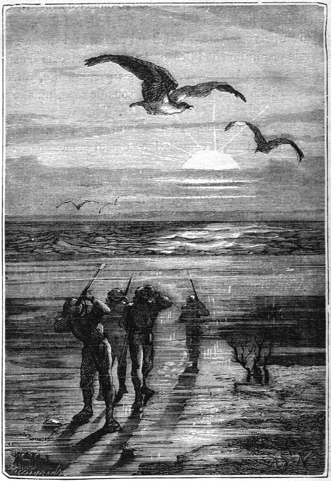
— Por isso — acrescentou ele —, ali está a verdadeira existência! E eu conceberia a fundação de cidades náuticas, de aglomerações de casas submarinas que, como o Nautilus, voltariam a respirar todas as manhãs na superfície dos mares, cidades livres como nenhuma outra, cidades independentes! E ainda assim, quem sabe se algum déspota…
O capitão Nemo concluiu a frase com um gesto violento. Depois, dirigindo-se diretamente a mim, como para afastar um pensamento funesto:
— Senhor Aronnax — perguntou-me —, sabe qual é a profundidade do Oceano?
— Sei pelo menos, capitão, o que as principais sondagens nos ensinaram.
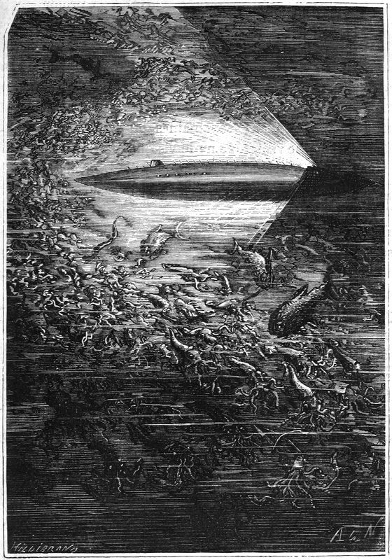
— Poderia citá-las para que eu as confira, se necessário?
— Eis algumas — respondi — que me voltam à memória. Se não me engano, encontrou-se uma profundidade média de oito mil e duzentos metros no Atlântico norte e de dois mil e quinhentos metros no Mediterrâneo. As sondagens mais notáveis foram feitas no Atlântico sul, perto do trigésimo quinto grau, e deram doze mil metros, catorze mil e noventa e um metros e quinze mil cento e quarenta e nove metros. Em suma, estima-se que, se o fundo do mar fosse nivelado, sua profundidade média seria de cerca de sete quilômetros.
— Bem, senhor professor — respondeu o capitão Nemo —, nós lhe mostraremos coisa melhor, espero. Quanto à profundidade média desta parte do Pacífico, informo-lhe que é de apenas quatro mil metros.
Dito isso, o capitão Nemo dirigiu-se à escotilha e desapareceu pela escada. Segui-o e voltei ao grande salão. A hélice pôs-se imediatamente em movimento, e a barquinha acusou uma velocidade de vinte milhas por hora.
Durante os dias, durante as semanas que se seguiram, o capitão Nemo foi muito parco em visitas. Só o vi a raros intervalos. Seu imediato tirava regularmente o ponto, que eu encontrava marcado na carta, de modo que podia reconstituir exatamente a rota do Nautilus.
Conseil e Land passavam longas horas comigo. Conseil contara ao amigo as maravilhas de nosso passeio, e o canadense lamentava não nos ter acompanhado. Mas eu esperava que se apresentasse de novo a ocasião de visitar as florestas oceânicas.
Quase todos os dias, durante algumas horas, os painéis do salão se abriam, e nossos olhos não se cansavam de penetrar os mistérios do mundo submarino.
A direção geral do Nautilus era sudeste, e ele se mantinha entre cem e cento e cinquenta metros de profundidade. Um dia, porém, por não sei que capricho, levado em diagonal por meio de seus planos inclinados, atingiu as camadas de água situadas a dois mil metros. O termômetro indicava uma temperatura de 4,25 graus centígrados, temperatura que, a essa profundidade, parece ser comum a todas as latitudes.
Em 26 de novembro, às três da madrugada, o Nautilus transpôs o trópico de Câncer a 172° de longitude. No dia 27, passou à vista das Sandwich, onde o ilustre Cook encontrou a morte em 14 de fevereiro de 1779. Tínhamos então percorrido quatro mil oitocentas e sessenta léguas desde nosso ponto de partida. De manhã, quando cheguei à plataforma, avistei, a duas milhas a sotavento, o Havaí, a maior das sete ilhas que formam o arquipélago. Distingui nitidamente sua orla cultivada, as diversas cadeias de montanhas que correm paralelamente à costa e seus vulcões, dominados pelo Mauna Loa, que se eleva a cinco mil metros acima do nível do mar. Entre outros exemplares daquelas paragens, as redes trouxeram flabelárias pavonadas, pólipos comprimidos de forma graciosa, próprios daquela parte do Oceano.
A direção do Nautilus manteve-se a sudeste. Ele cortou o equador em 1º de dezembro, a 142° de longitude, e no dia 4 do mesmo mês, depois de uma rápida travessia que nenhum incidente assinalou, avistamos o grupo das Marquesas. Avistei a três milhas, a 8° 57′ de latitude sul e 139° 32′ de longitude oeste, a ponta Martin de Nuku Hiva, a principal desse grupo, que pertence à França. Vi apenas as montanhas arborizadas que se desenhavam no horizonte, pois o capitão Nemo não gostava de se aproximar das terras. Ali as redes trouxeram belos espécimes de peixes, dourados de nadadeiras azuladas e cauda de ouro, cuja carne não tem rival no mundo, hologimnos quase desprovidos de escamas, mas de sabor requintado, ostorrincos de mandíbula óssea, cavalas-pintadas amareladas que valiam o bonito, todos peixes dignos de figurar na despensa de bordo.
Depois de deixar essas ilhas encantadoras protegidas pela bandeira francesa, de 4 a 11 de dezembro o Nautilus percorreu cerca de duas mil milhas. Essa navegação foi marcada pelo encontro com um imenso bando de lulas, curiosos moluscos muito próximos da siba. Os pescadores franceses chamam-nas de encornets; pertencem à classe dos cefalópodes e à família dos dibranquiados, que compreende com elas as sibas e os argonautas. Esses animais foram particularmente estudados pelos naturalistas da Antiguidade e forneciam numerosas metáforas aos oradores da Ágora, ao mesmo tempo que um prato excelente à mesa dos cidadãos ricos, a crer em Ateneu, médico grego que viveu antes de Galeno.
Foi durante a noite de 9 para 10 de dezembro que o Nautilus encontrou esse exército de moluscos, que são particularmente noturnos. Podiam-se contá-los aos milhões. Emigravam das zonas temperadas para as zonas mais quentes, seguindo o itinerário dos arenques e das sardinhas. Nós os olhávamos através dos espessos vidros de cristal, nadando de marcha a ré com extrema rapidez, movendo-se por meio de seu tubo locomotor, perseguindo os peixes e os moluscos, comendo os pequenos, comidos pelos grandes, e agitando numa confusão indescritível os dez pés que a natureza lhes implantou na cabeça, como uma cabeleira de serpentes pneumáticas. O Nautilus, apesar de sua velocidade, navegou durante várias horas no meio desse bando de animais, e suas redes trouxeram uma quantidade inumerável deles, na qual reconheci as nove espécies que d’Orbigny classificou para o oceano Pacífico.
Como se vê, durante essa travessia, o mar prodigalizava incessantemente seus espetáculos mais maravilhosos. Variava-os ao infinito. Mudava seu cenário e sua encenação para prazer de nossos olhos, e éramos chamados não somente a contemplar as obras do Criador no meio do elemento líquido, mas também a penetrar os mais temíveis mistérios do Oceano.
Durante o dia 11 de dezembro, eu estava ocupado em ler no grande salão. Ned Land e Conseil observavam as águas luminosas pelos painéis entreabertos. O Nautilus estava imóvel. Com os reservatórios cheios, mantinha-se a uma profundidade de mil metros, região pouco habitada dos Oceanos, na qual só os grandes peixes faziam raras aparições.
Eu lia naquele momento um livro encantador de Jean Macé, Os servidores do estômago, e saboreava suas lições engenhosas quando Conseil interrompeu minha leitura.
— O senhor quer vir aqui um instante? — disse-me ele com voz singular.
— O que há, Conseil?
— Que o senhor olhe.
Levantei-me, fui apoiar-me diante do vidro e olhei.
Em plena luz elétrica, uma enorme massa enegrecida, imóvel, mantinha-se suspensa no meio das águas. Observei-a atentamente, procurando reconhecer a natureza daquele gigantesco cetáceo. Mas um pensamento atravessou subitamente meu espírito.
— Um navio! — exclamei.
— Sim — respondeu o canadense —, um navio desmantelado que foi a pique!
Ned Land não se enganava. Estávamos diante de um navio cujos ovéns cortados ainda pendiam de suas cadeias. Seu casco parecia em bom estado, e seu naufrágio datava no máximo de algumas horas. Três tocos de mastros, cortados a dois pés acima do convés, indicavam que o navio, adernado, tivera de sacrificar sua mastreação. Mas, deitado de lado, enchera-se de água e ainda adernava a bombordo. Triste espetáculo o daquela carcaça perdida sob as ondas, mas mais triste ainda a visão de seu convés, onde alguns cadáveres, amarrados com cordas, ainda jaziam! Contei quatro — quatro homens, um dos quais se mantinha de pé, ao leme —, depois uma mulher, meio saída pela claraboia do tombadilho, segurando uma criança nos braços. Essa mulher era jovem. Pude reconhecer, vivamente iluminados pelas luzes do Nautilus, seus traços, que a água ainda não decompusera. Num esforço supremo, ela erguera acima da cabeça o filho, pobre criaturinha cujos braços enlaçavam o pescoço da mãe! A atitude dos quatro marinheiros pareceu-me assustadora, contorcidos como estavam em movimentos convulsivos, fazendo um último esforço para se arrancar às cordas que os prendiam ao navio. Só, mais calmo, o rosto limpo e grave, os cabelos grisalhos colados à testa, a mão crispada na roda do leme, o timoneiro parecia ainda conduzir seu três-mastros naufragado através das profundezas do Oceano!
Que cena! Estávamos mudos, de coração palpitante, diante daquele naufrágio apanhado em flagrante e, por assim dizer, fotografado em seu último minuto! E eu já via avançar, de olhos em brasa, enormes esqualos, atraídos por aquela isca de carne humana!
Entretanto, o Nautilus, evoluindo, deu a volta ao navio submerso e, por um instante, pude ler em seu painel de popa:
Florida, Sunderland.
Esse terrível espetáculo inaugurava a série de catástrofes marítimas que o Nautilus devia encontrar em sua rota. Desde que passara a seguir mares mais frequentados, avistávamos muitas vezes cascos naufragados que acabavam de apodrecer entre duas águas e, mais fundo, canhões, balas, âncoras, correntes e mil outros objetos de ferro que a ferrugem devorava.
Entretanto, sempre arrastados por esse Nautilus, onde vivíamos como isolados, em 11 de dezembro avistamos o arquipélago das Tuamotu, antigo “grupo perigoso” de Bougainville, que se estende por um espaço de quinhentas léguas de lés-sudeste a oés-noroeste, entre 13° 30′ e 23° 50′ de latitude sul e 125° 30′ e 151° 30′ de longitude oeste, desde a ilha Ducie até a ilha Lazareff. Esse arquipélago cobre uma superfície de trezentas e setenta léguas quadradas e é formado por uns sessenta grupos de ilhas, entre os quais se destaca o grupo Gambier, ao qual a França impôs seu protetorado. Essas ilhas são coralígenas. Um levantamento lento, mas contínuo, provocado pelo trabalho dos pólipos, um dia as ligará entre si. Depois, essa nova ilha se soldará mais tarde aos arquipélagos vizinhos, e um quinto continente se estenderá desde a Nova Zelândia e a Nova Caledônia até as Marquesas.
No dia em que desenvolvi essa teoria diante do capitão Nemo, ele me respondeu friamente:
— Não são continentes novos que a terra precisa, mas homens novos!
Os acasos de sua navegação tinham levado o Nautilus precisamente para a ilha Clermont-Tonnerre, uma das mais curiosas do grupo, que foi descoberta em 1822 pelo capitão Bell, da Minerve. Pude então estudar o sistema madrepórico ao qual se devem as ilhas desse Oceano.
As madréporas, que não se devem confundir com os corais, têm um tecido revestido de uma incrustação calcária, e as modificações de sua estrutura levaram o sr. Milne-Edwards, meu ilustre mestre, a classificá-las em cinco seções. Os pequenos animálculos que segregam esse polipeiro vivem aos bilhões no fundo de suas células. São seus depósitos calcários que se tornam rochedos, recifes, ilhotas, ilhas. Aqui, formam um anel circular em torno de uma laguna, ou pequeno lago interior, que brechas põem em comunicação com o mar. Ali, figuram barreiras de recifes semelhantes às que existem nas costas da Nova Caledônia e de diversas ilhas das Tuamotu. Em outros lugares, como na Reunião e em Maurício, erguem recifes em franja, altas muralhas retas junto às quais as profundidades do Oceano são consideráveis.
Costeando a poucas amarras apenas as escarpas da ilha Clermont-Tonnerre, admirei a obra gigantesca realizada por esses trabalhadores microscópicos. Aquelas muralhas eram especialmente obra dos madreporários designados pelos nomes de milepóras, porites, astreias e meandrinas. Esses pólipos desenvolvem-se particularmente nas camadas agitadas da superfície do mar e, por conseguinte, é pela parte superior que começam essas subestruturas, as quais afundam pouco a pouco com os detritos de secreções que as sustentam. Tal é, pelo menos, a teoria do sr. Darwin, que explica assim a formação dos atóis — teoria superior, a meu ver, à que dá como base dos trabalhos madrepóricos cumes de montanhas ou de vulcões submersos a alguns pés abaixo do nível do mar.
Pude observar de muito perto aquelas curiosas muralhas, pois, ao pé delas, a sonda acusava mais de trezentos metros de profundidade, e nossos lençóis elétricos faziam cintilar aquele calcário brilhante.
Respondendo a uma pergunta de Conseil sobre o tempo de crescimento daquelas barreiras colossais, espantei-o muito dizendo-lhe que os sábios estimavam esse crescimento em um oitavo de polegada por século.
— Então, para erguer essas muralhas — disse-me ele —, foram precisos?…
— Cento e noventa e dois mil anos, meu bom Conseil, o que alonga singularmente os dias bíblicos. Aliás, a formação da hulha, isto é, a mineralização das florestas soterradas pelos dilúvios, exigiu um tempo muito mais considerável. Mas acrescentarei que os dias da Bíblia são apenas épocas, e não o intervalo que decorre entre dois nasceres do sol, pois, segundo a própria Bíblia, o sol não data do primeiro dia da criação.
Quando o Nautilus voltou à superfície do Oceano, pude abarcar em toda a sua extensão a ilha de Clermont-Tonnerre, baixa e arborizada. Suas rochas madrepóricas foram evidentemente fertilizadas pelas trombas e pelas tempestades. Um dia, alguma semente, arrebatada pelo furacão às terras vizinhas, caiu sobre as camadas calcárias, misturadas aos detritos decompostos de peixes e de plantas marinhas que formaram o húmus vegetal. Um coco, impelido pelas vagas, chegou a essa costa nova. O germe criou raiz. A árvore, crescendo, deteve o vapor de água. Nasceu o regato. A vegetação ganhou terreno pouco a pouco. Alguns animálculos, vermes, insetos abordaram em troncos arrancados às ilhas de barlavento. As tartarugas vieram pôr seus ovos. As aves fizeram ninho nas árvores jovens. Desse modo a vida animal se desenvolveu e, atraído pela verdura e pela fertilidade, o homem apareceu. Assim se formaram essas ilhas, obras imensas de animais microscópicos.
Ao entardecer, Clermont-Tonnerre dissolveu-se na distância, e a rota do Nautilus modificou-se sensivelmente. Depois de tocar o trópico de Capricórnio no centésimo trigésimo quinto grau de longitude, dirigiu-se para oés-noroeste, subindo toda a zona intertropical. Embora o sol do verão fosse pródigo em raios, não sofríamos de modo algum com o calor, pois a trinta ou quarenta metros abaixo da água a temperatura não passava de dez a doze graus.
Em 15 de dezembro, deixávamos a leste o sedutor arquipélago da Sociedade e a graciosa Taiti, a rainha do Pacífico. De manhã avistei, a algumas milhas a sotavento, os cumes elevados dessa ilha. Suas águas forneceram às mesas de bordo excelentes peixes, cavalas, bonitos, albacoras e variedades de uma serpente-do-mar chamada munerófis.
O Nautilus percorrera oito mil e cem milhas. Nove mil setecentas e vinte milhas estavam registradas na barquinha quando ele passou entre o arquipélago de Tongatapu, onde pereceram as tripulações do Argo, do Port-au-Prince e do Duke of Portland, e o arquipélago dos Navegadores, onde foi morto o capitão de Langle, amigo de La Pérouse. Depois avistou o arquipélago Viti, onde os selvagens massacraram os marinheiros do Union e o capitão Bureau, de Nantes, comandante do Aimable Joséphine.
Esse arquipélago, que se prolonga por uma extensão de cem léguas de norte a sul e de noventa léguas de leste a oeste, está compreendido entre 6° e 2° de latitude sul e 174° e 179° de longitude oeste. Compõe-se de certo número de ilhas, ilhotas e recifes, entre os quais se destacam as ilhas de Viti Levu, Vanua Levu e Kandavu.
Foi Tasman quem descobriu esse grupo em 1643, no mesmo ano em que Torricelli inventava o barômetro e em que Luís XIV subia ao trono. Deixo imaginar qual desses fatos foi mais útil à humanidade. Vieram depois Cook, em 1714, d’Entrecasteaux, em 1793, e enfim Dumont d’Urville, em 1827, desembaraçou todo o caos geográfico desse arquipélago. O Nautilus aproximou-se da baía de Wailea, teatro das terríveis aventuras do capitão Dillon, que foi o primeiro a esclarecer o mistério do naufrágio de La Pérouse.
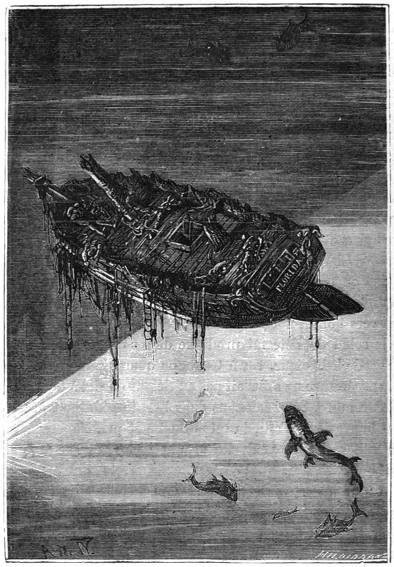
Essa baía, dragada várias vezes, forneceu em abundância ostras excelentes. Comemo-las imoderadamente, depois de abri-las em nossa própria mesa, segundo o preceito de Sêneca. Esses moluscos pertenciam à espécie conhecida pelo nome de Ostrea lamellosa, que é muito comum na Córsega. Aquele banco de Wailea devia ser considerável e, certamente, não fossem as múltiplas causas de destruição, essas aglomerações acabariam por entulhar as baías, já que se contam até dois milhões de ovos num só indivíduo.
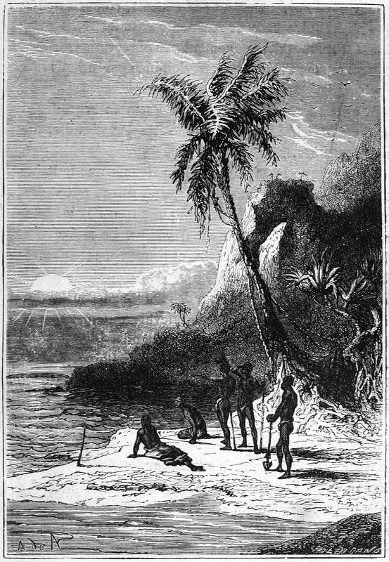
E, se mestre Ned Land não teve de se arrepender de sua gulodice nessa circunstância, é que a ostra é o único alimento que nunca provoca indigestão. De fato, não são precisas menos de dezesseis dúzias desses moluscos acéfalos para fornecer os trezentos e quinze gramas de substância azotada necessários à alimentação diária de um só homem.
Em 25 de dezembro, o Nautilus navegava no meio do arquipélago das Novas Hébridas, que Quirós descobriu em 1606, que Bougainville explorou em 1768 e ao qual Cook deu seu nome atual em 1773. Esse grupo compõe-se principalmente de nove grandes ilhas e forma uma faixa de cento e vinte léguas de nor-noroeste a su-sudeste, compreendida entre 15° e 2° de latitude sul e entre 164° e 168° de longitude. Passamos bastante perto da ilha de Aurou, que, no momento das observações do meio-dia, me apareceu como uma massa de bosques verdes dominada por um pico de grande altura.
Naquele dia era Natal, e Ned Land pareceu-me lamentar vivamente a celebração do Christmas, a verdadeira festa da família, de que os protestantes são fanáticos.
Eu não via o capitão Nemo havia uns oito dias quando, no dia 27, de manhã, ele entrou no grande salão, sempre com o ar de um homem que nos deixou há cinco minutos. Eu estava ocupado em reconhecer no planisfério a rota do Nautilus. O capitão aproximou-se, pôs um dedo num ponto da carta e pronunciou esta única palavra:
— Vanikoro.
Esse nome foi mágico. Era o nome das ilhotas em que vieram perder-se os navios de La Pérouse. Ergui-me subitamente.
— O Nautilus nos leva a Vanikoro? — perguntei.
— Sim, senhor professor — respondeu o capitão.
— E poderei visitar essas ilhas célebres onde se despedaçaram a Boussole e a Astrolabe?
— Se lhe agradar, senhor professor.
— Quando estaremos em Vanikoro?
— Já estamos, senhor professor.
Seguido pelo capitão Nemo, subi à plataforma, e dali meus olhares percorreram avidamente o horizonte.
A nordeste emergiam duas ilhas vulcânicas de tamanho desigual, cercadas por um recife de corais que media quarenta milhas de circuito. Estávamos diante da ilha de Vanikoro propriamente dita, à qual Dumont d’Urville impôs o nome de ilha da Recherche, e precisamente diante do pequeno porto de Vanou, situado a 16° 4′ de latitude sul e 164° 32′ de longitude leste. As terras pareciam cobertas de verdura desde a praia até os cumes do interior, dominados pelo monte Kapogo, com quatrocentas e setenta e seis toesas de altura.
O Nautilus, depois de transpor o cinturão exterior de rochas por uma passagem estreita, encontrou-se do lado de dentro da arrebentação, onde o mar tinha uma profundidade de trinta a quarenta braças. Sob a sombra verdejante dos mangues, avistei alguns selvagens que mostraram extrema surpresa à nossa aproximação. Naquele longo corpo enegrecido, avançando à flor da água, não veriam eles algum cetáceo formidável de que deviam desconfiar?
Nesse momento, o capitão Nemo perguntou-me o que eu sabia do naufrágio de La Pérouse.
— O que todo mundo sabe, capitão — respondi-lhe.
— E poderia me ensinar o que todo mundo sabe? — perguntou-me ele num tom um pouco irônico.
— Muito facilmente.
Contei-lhe o que os últimos trabalhos de Dumont d’Urville tinham dado a conhecer, trabalhos de que eis o resumo muito sucinto.
La Pérouse e seu imediato, o capitão de Langle, foram enviados por Luís XVI, em 1785, para realizar uma viagem de circunavegação. Comandavam as corvetas Boussole e Astrolabe, que nunca mais reapareceram.
Em 1791, o governo francês, justamente inquieto com a sorte das duas corvetas, armou dois grandes navios de transporte, a Recherche e a Espérance, que deixaram Brest em 28 de setembro sob as ordens de Bruni d’Entrecasteaux. Dois meses depois, soube-se pelo depoimento de um certo Bowen, comandante do Albemarle, que destroços de navios naufragados tinham sido vistos nas costas da Nova Geórgia. Mas d’Entrecasteaux, ignorando essa comunicação — aliás bastante incerta —, dirigiu-se para as ilhas do Almirantado, apontadas num relatório do capitão Hunter como o lugar do naufrágio de La Pérouse.
Suas buscas foram vãs; a Espérance e a Recherche chegaram a passar diante de Vanikoro sem parar ali e, em suma, essa viagem foi muito infeliz, pois custou a vida a d’Entrecasteaux, a dois de seus imediatos e a vários marinheiros de sua tripulação.
Foi um velho lobo do Pacífico, o capitão Dillon, quem primeiro reencontrou vestígios indiscutíveis dos náufragos. Em 15 de maio de 1824, seu navio, o Saint-Patrick, passou perto da ilha de Tikopia, uma das Novas Hébridas. Ali um lascarim, abordando-o numa piroga, vendeu-lhe um punho de espada de prata que trazia a marca de caracteres gravados a buril. Esse lascarim afirmava, além disso, que, seis anos antes, durante uma estada em Vanikoro, vira dois europeus que pertenciam a navios encalhados havia longos anos nos recifes da ilha.
Dillon adivinhou que se tratava dos navios de La Pérouse, cujo desaparecimento comovera o mundo inteiro. Quis chegar a Vanikoro, onde, segundo o lascarim, se encontravam numerosos destroços do naufrágio; mas os ventos e as correntes o impediram.
Dillon voltou a Calcutá. Ali soube interessar em sua descoberta a Sociedade Asiática e a Companhia das Índias. Um navio, ao qual se deu o nome de Recherche, foi posto à sua disposição, e ele partiu em 23 de janeiro de 1827, acompanhado de um agente francês.
A Recherche, depois de fazer escala em vários pontos do Pacífico, ancorou diante de Vanikoro em 7 de julho de 1827, naquele mesmo porto de Vanou onde o Nautilus flutuava naquele momento.
Ali ele recolheu numerosos restos do naufrágio: utensílios de ferro, âncoras, estropos de polias, pedreiros, uma bala de dezoito, destroços de instrumentos de astronomia, um pedaço de coroamento de popa e um sino de bronze com esta inscrição: “Bazin m’a fait” (“Bazin me fez”), marca da fundição do Arsenal de Brest por volta de 1785. A dúvida, portanto, já não era possível.
Dillon, completando suas informações, ficou no local do sinistro até o mês de outubro. Depois deixou Vanikoro, dirigiu-se para a Nova Zelândia, ancorou em Calcutá em 7 de abril de 1828 e voltou à França, onde foi acolhido com muita simpatia por Carlos X.
Mas, nesse momento, Dumont d’Urville, sem ter tido conhecimento dos trabalhos de Dillon, já partira para procurar em outra parte o teatro do naufrágio. E, de fato, soubera-se pelos relatórios de um baleeiro que medalhas e uma cruz de São Luís se encontravam nas mãos dos selvagens da Louisiade e da Nova Caledônia.
Dumont d’Urville, comandante da Astrolabe, fizera-se, pois, ao mar e, dois meses depois de Dillon deixar Vanikoro, ancorava diante de Hobart Town. Ali tomou conhecimento dos resultados obtidos por Dillon e, além disso, soube que um certo James Hobbs, imediato do Union, de Calcutá, tendo desembarcado numa ilha situada a 8° 18′ de latitude sul e 156° 30′ de longitude leste, notara barras de ferro e tecidos vermelhos de que se serviam os nativos daquelas paragens.
Dumont d’Urville, bastante perplexo e sem saber se devia dar crédito a esses relatos publicados por jornais pouco dignos de confiança, decidiu-se, contudo, a lançar-se nas pegadas de Dillon.
Em 10 de fevereiro de 1828, a Astrolabe apresentou-se diante de Tikopia, tomou como guia e intérprete um desertor fixado naquela ilha, rumou para Vanikoro, avistou-a em 12 de fevereiro, costeou seus recifes até o dia 14 e só no dia 20 ancorou do lado de dentro da barreira, no porto de Vanou.
No dia 23, vários oficiais deram a volta à ilha e trouxeram alguns destroços pouco importantes. Os nativos, adotando um sistema de negativas e de evasivas, recusavam-se a levá-los ao local do sinistro. Essa conduta, muito suspeita, deu a crer que tinham maltratado os náufragos e, de fato, pareciam temer que Dumont d’Urville tivesse vindo vingar La Pérouse e seus infelizes companheiros.
Entretanto, no dia 26, convencidos por presentes e compreendendo que não tinham de temer nenhuma represália, conduziram o imediato, o sr. Jacquinot, ao teatro do naufrágio.
Ali, a três ou quatro braças de profundidade, entre os recifes Pacou e Vanou, jaziam âncoras, canhões, lingotes de ferro e de chumbo, empastados nas concreções calcárias. A lancha e a baleeira da Astrolabe foram dirigidas para aquele lugar e, não sem longas fadigas, suas tripulações conseguiram retirar uma âncora de mil e oitocentas libras, um canhão de oito de ferro fundido, um lingote de chumbo e dois pedreiros de cobre.
Dumont d’Urville, interrogando os nativos, soube também que La Pérouse, depois de perder seus dois navios nos recifes da ilha, construíra um navio menor, para ir perder-se uma segunda vez… Onde? Não se sabia.
O comandante da Astrolabe mandou então erguer, sob uma moita de mangues, um cenotáfio à memória do célebre navegador e de seus companheiros. Foi uma simples pirâmide quadrangular, assentada sobre uma base de corais, na qual não entrou nenhuma ferragem que pudesse tentar a cobiça dos nativos.
Depois Dumont d’Urville quis partir; mas suas tripulações estavam minadas pelas febres daquelas costas insalubres e, muito doente ele próprio, só pôde zarpar em 17 de março.
Entretanto, o governo francês, temendo que Dumont d’Urville não estivesse a par dos trabalhos de Dillon, enviara a Vanikoro a corveta Bayonnaise, comandada por Legoarant de Tromelin, que estava em estação na costa oeste da América. A Bayonnaise ancorou diante de Vanikoro alguns meses depois da partida da Astrolabe, não encontrou nenhum documento novo, mas constatou que os selvagens tinham respeitado o mausoléu de La Pérouse.
Tal é a substância do relato que fiz ao capitão Nemo.
— Assim — disse-me ele —, ainda não se sabe onde foi perecer o terceiro navio construído pelos náufragos na ilha de Vanikoro?
— Não se sabe.
O capitão Nemo nada respondeu e fez-me sinal para segui-lo ao grande salão. O Nautilus afundou alguns metros abaixo das ondas, e os painéis se abriram.
Precipitei-me para o vidro e, sob as incrustações de corais revestidas de fúngias, sifônulas, alcionários, cariofilídeos, através de miríades de peixes encantadores, donzelas, glifisidontes, pomferídeos, diacopes, holocentros, reconheci certos destroços que as dragas não tinham conseguido arrancar: estribos de ferro, âncoras, canhões, balas, uma guarnição de cabrestante, uma roda de proa, todos objetos provenientes dos navios naufragados e agora atapetados de flores vivas.
E, enquanto eu olhava aqueles destroços desolados, o capitão Nemo disse-me com voz grave:
— O comandante La Pérouse partiu em 7 de dezembro de 1785 com seus navios Boussole e Astrolabe. Ancorou primeiro em Botany Bay, visitou o arquipélago dos Amigos, a Nova Caledônia, dirigiu-se para Santa Cruz e fez escala em Namouka, uma das ilhas do grupo Hapai. Depois seus navios chegaram aos recifes desconhecidos de Vanikoro. A Boussole, que ia à frente, embrenhou-se na costa meridional. A Astrolabe veio em seu socorro e encalhou também. O primeiro navio destruiu-se quase imediatamente. O segundo, encalhado a sotavento, resistiu alguns dias. Os nativos acolheram bastante bem os náufragos. Estes instalaram-se na ilha e construíram um navio menor com os destroços dos dois grandes. Alguns marinheiros ficaram voluntariamente em Vanikoro. Os outros, enfraquecidos, doentes, partiram com La Pérouse. Dirigiram-se para as ilhas Salomão e pereceram, com tudo o que levavam, na costa ocidental da ilha principal do grupo, entre os cabos Déception e Satisfaction!
— E como o senhor sabe disso? — exclamei.
— Eis o que encontrei no próprio local desse último naufrágio!
O capitão Nemo mostrou-me uma caixa de folha de flandres, estampada com as armas da França e toda corroída pelas águas salinas. Abriu-a, e vi um maço de papéis amarelados, mas ainda legíveis.
Eram as próprias instruções do ministro da Marinha ao comandante La Pérouse, anotadas à margem pela mão de Luís XVI!
— Ah! É uma bela morte para um marinheiro! — disse então o capitão Nemo. — É um túmulo tranquilo esse túmulo de coral, e queira o céu que meus companheiros e eu nunca tenhamos outro!
Durante a noite de 27 para 28 de dezembro, o Nautilus abandonou as paragens de Vanikoro com uma velocidade excessiva. Sua direção era sudoeste e, em três dias, transpôs as setecentas e cinquenta léguas que separam o grupo de La Pérouse da ponta sudeste da Papuásia.
Em 1º de janeiro de 1868, de manhã muito cedo, Conseil veio ter comigo na plataforma.
— Senhor — disse-me o bom rapaz —, o senhor me permite desejar-lhe um feliz ano-novo?
— Como não, Conseil, exatamente como se eu estivesse em Paris, em meu gabinete do Jardin des Plantes. Aceito seus votos e lhe agradeço. Só lhe perguntarei o que entende por “um feliz ano” nas circunstâncias em que nos encontramos. É o ano que trará o fim de nosso cativeiro, ou o ano que verá continuar esta estranha viagem?
— Palavra — respondeu Conseil —, não sei bem o que dizer ao senhor. É certo que vemos coisas curiosas e que, há dois meses, não tivemos tempo de nos aborrecer. A última maravilha é sempre a mais espantosa e, se essa progressão se mantiver, não sei como isto vai acabar. Parece-me que nunca mais teremos uma ocasião semelhante.
— Nunca, Conseil.
— Além disso, o senhor Nemo, que justifica bem seu nome latino, não incomoda mais do que se não existisse.
— Como você diz, Conseil.
— Penso, pois, com a licença do senhor, que um feliz ano seria um ano que nos permitisse ver tudo…
— Ver tudo, Conseil? Talvez seja demorado. Mas o que pensa disso Ned Land?
— Ned Land pensa exatamente o contrário de mim — respondeu Conseil. — É um espírito positivo e um estômago imperioso. Olhar os peixes e comê-los sempre não lhe basta. A falta de vinho, de pão, de carne não convém a um digno saxão habituado aos bifes, a quem o brandy ou o gim, tomados em proporção moderada, não assustam!
— De minha parte, Conseil, não é isso que me atormenta, e acomodo-me muito bem ao regime de bordo.
— Eu também — respondeu Conseil. — Por isso penso tanto em ficar quanto mestre Land em fugir. Portanto, se o ano que começa não for bom para mim, será para ele, e vice-versa. Desse modo, haverá sempre alguém satisfeito. Enfim, para concluir, desejo ao senhor o que der prazer ao senhor.
— Obrigado, Conseil. Só lhe pedirei que deixe para mais tarde a questão dos presentes de ano-novo e que os substitua provisoriamente por um bom aperto de mão. É só o que tenho comigo.

— O senhor nunca foi tão generoso — respondeu Conseil.
E, com isso, o bom rapaz se foi.
Em 2 de janeiro, tínhamos percorrido onze mil trezentas e quarenta milhas, ou seja, cinco mil duzentas e cinquenta léguas, desde nosso ponto de partida nos mares do Japão. Diante do esporão do Nautilus estendiam-se as perigosas paragens do mar de Coral, na costa nordeste da Austrália. Nosso barco costeava, a uma distância de algumas milhas, o temível banco no qual os navios de Cook quase se perderam em 10 de junho de 1770. O navio em que Cook estava bateu numa rocha e, se não afundou, foi graças à circunstância de que o pedaço de coral, desprendido com o choque, ficou encravado no casco entreaberto.
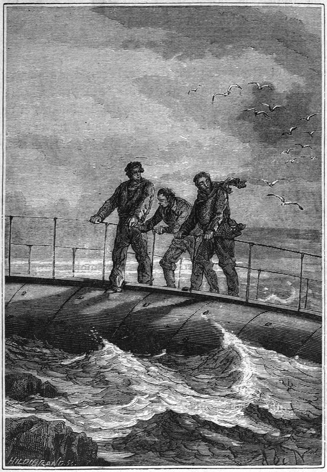
Eu teria desejado vivamente visitar aquele recife de trezentas e sessenta léguas de comprimento, contra o qual o mar, sempre agitado, se quebrava com uma intensidade formidável, comparável ao ribombar do trovão. Mas naquele momento os planos inclinados do Nautilus arrastavam-nos a grande profundidade, e nada pude ver daquelas altas muralhas coralígenas. Tive de me contentar com os diversos exemplares de peixes trazidos por nossas redes. Notei, entre outros, germões, espécie de escombrídeos grandes como atuns, de flancos azulados e listrados de faixas transversais que desaparecem com a vida do animal. Esses peixes nos acompanhavam em cardumes e forneceram à nossa mesa uma carne extremamente delicada. Apanhou-se também grande número de esparídeos-verdes, com meio decímetro de comprimento, com o gosto da dourada, e de pirápedes-voadores, verdadeiras andorinhas submarinas que, nas noites escuras, riscam alternadamente os ares e as águas com seus clarões fosforescentes. Entre os moluscos e os zoófitos, encontrei nas malhas da rede diversas espécies de alcionários, ouriços, martelos, esporões, quadrantes, cerites, hiáleas. A flora estava representada por belas algas flutuantes, laminárias e macrocistes, impregnadas da mucilagem que transudava por seus poros, entre as quais recolhi uma admirável Nemastoma geliniaroide, que foi classificada entre as curiosidades naturais do museu.
Dois dias depois de atravessar o mar de Coral, em 4 de janeiro, avistamos as costas da Papuásia. Nessa ocasião, o capitão Nemo disse-me que sua intenção era alcançar o oceano Índico pelo estreito de Torres. Sua comunicação limitou-se a isso. Ned viu com prazer que essa rota o aproximava dos mares europeus.
Esse estreito de Torres é considerado perigoso tanto pelos recifes que o eriçam quanto pelos habitantes selvagens que frequentam suas costas. Ele separa da Nova Holanda a grande ilha da Papuásia, chamada também Nova Guiné.
A Papuásia tem quatrocentas léguas de comprimento por cento e trinta léguas de largura e uma superfície de quarenta mil léguas geográficas. Está situada, em latitude, entre 0° 19′ e 10° 2′ sul, e, em longitude, entre 128° 23′ e 146° 15′. Ao meio-dia, enquanto o imediato tomava a altura do sol, avistei os cumes dos montes Arfak, erguidos em planos sucessivos e terminados por picos agudos.
Essa terra, descoberta em 1511 pelo português Francisco Serrano, foi visitada sucessivamente por dom Jorge de Meneses em 1526, por Grijalva em 1527, pelo general espanhol Álvaro de Saavedra em 1528, por Íñigo Ortiz em 1545, pelo holandês Schouten em 1616, por Nicolas Sruick em 1753, por Tasman, Dampier, Fumel, Carteret, Edwards, Bougainville, Cook, Forrest, McCluer, por d’Entrecasteaux em 1792, por Duperrey em 1823 e por Dumont d’Urville em 1827. “É o foco dos negros que ocupam toda a Malásia”, disse o sr. de Rienzi, e eu nem desconfiava que os acasos daquela navegação iam pôr-me em presença dos temíveis andamaneses.
O Nautilus apresentou-se, pois, à entrada do estreito mais perigoso do globo, aquele que os navegadores mais ousados mal se atrevem a transpor, estreito que Luis Vaz de Torres enfrentou ao voltar dos mares do Sul pela Melanésia e no qual, em 1840, as corvetas encalhadas de Dumont d’Urville estiveram a ponto de se perder com tudo o que levavam. O próprio Nautilus, superior a todos os perigos do mar, ia, no entanto, travar conhecimento com os recifes de coral.
O estreito de Torres tem cerca de trinta e quatro léguas de largura, mas está obstruído por uma quantidade inumerável de ilhas, ilhotas, arrebentações e rochedos que tornam sua navegação quase impraticável. Por conseguinte, o capitão Nemo tomou todas as precauções necessárias para atravessá-lo. O Nautilus, flutuando à flor da água, avançava num andamento moderado. Sua hélice, como uma cauda de cetáceo, batia lentamente as ondas.
Aproveitando essa situação, meus dois companheiros e eu tínhamos tomado lugar na plataforma, sempre deserta. Diante de nós erguia-se a cabine do timoneiro, e muito me engano se o capitão Nemo não estava lá, dirigindo ele mesmo o seu Nautilus.
Eu tinha diante dos olhos as excelentes cartas do estreito de Torres levantadas e desenhadas pelo engenheiro hidrógrafo Vincendon-Dumoulin e pelo alferes de navio Coupvent-Desbois — hoje almirante —, que faziam parte do estado-maior de Dumont d’Urville durante sua última viagem de circunavegação. São, com as do capitão King, as melhores cartas para desembaraçar o imbróglio daquela passagem estreita, e eu as consultava com escrupulosa atenção.
Em torno do Nautilus, o mar fervia com fúria. A corrente da maré, que corria de sudeste para noroeste com uma velocidade de duas milhas e meia, quebrava-se sobre os corais cujas cabeças emergiam aqui e ali.
— Eis um mar ruim! — disse-me Ned Land.
— Detestável, de fato — respondi —, e que não convém nada a um navio como o Nautilus.
— É preciso — retomou o canadense — que esse maldito capitão esteja bem certo de sua rota, porque vejo ali blocos de coral que fariam seu casco em mil pedaços se apenas o roçassem!
De fato, a situação era perigosa, mas o Nautilus parecia deslizar como por encanto no meio daqueles recifes furiosos. Não seguia exatamente a rota da Astrolabe e da Zélée, que foi fatal a Dumont d’Urville. Tomou mais para o norte, costeou a ilha Murray e voltou para sudoeste, rumo à passagem de Cumberland. Eu julgava que ia embocar nela francamente quando, subindo para noroeste, se dirigiu, através de uma grande quantidade de ilhas e ilhotas pouco conhecidas, para a ilha Tound e o canal Mauvais.
Eu já me perguntava se o capitão Nemo, imprudente até a loucura, queria meter seu navio naquela passagem onde encalharam as duas corvetas de Dumont d’Urville quando, modificando uma segunda vez sua direção e cortando direto para oeste, rumou para a ilha Gueboroar.
Eram então três horas da tarde. A maré estava a ponto de virar, quase cheia. O Nautilus aproximou-se daquela ilha, que ainda vejo com sua notável orla de pândanos. Costeávamo-la a menos de duas milhas.
De repente, um choque me derrubou. O Nautilus acabava de bater num recife e ficou imóvel, adernando ligeiramente a bombordo.
Quando me levantei, avistei na plataforma o capitão Nemo e seu imediato. Examinavam a situação do navio, trocando algumas palavras em seu idioma incompreensível.
Eis qual era essa situação. A duas milhas, a estibordo, aparecia a ilha Gueboroar, cuja costa se curvava de norte a oeste como um braço imenso. Para o sul e o leste já se mostravam algumas cabeças de coral que a vazante deixava a descoberto. Tínhamos encalhado em maré cheia, e num desses mares onde as marés são medíocres, circunstância lamentável para desencalhar o Nautilus. Contudo, o navio não sofrera de modo algum, tão solidamente estava ligado seu casco. Mas, se não podia nem afundar nem abrir-se, corria grande risco de ficar para sempre preso àqueles recifes, e então estaria acabado o aparelho submarino do capitão Nemo.
Eu refletia assim quando o capitão, frio e calmo, sempre senhor de si, sem parecer nem comovido nem contrariado, se aproximou:
— Um acidente? — disse-lhe eu.
— Não, um incidente — respondeu-me ele.
— Mas um incidente — repliquei — que talvez o obrigue a tornar-se de novo habitante dessas terras de que o senhor foge!
O capitão Nemo olhou-me com um ar singular e fez um gesto negativo. Era dizer-me com bastante clareza que nada jamais o forçaria a pôr de novo os pés num continente. Depois disse:
— Aliás, senhor Aronnax, o Nautilus não está perdido. Ainda o levará no meio das maravilhas do Oceano. Nossa viagem apenas começa, e não desejo privar-me tão depressa da honra de sua companhia.
— No entanto, capitão Nemo — retomei, sem relevar o tom irônico dessa frase —, o Nautilus encalhou no momento da maré cheia. Ora, as marés não são fortes no Pacífico e, se o senhor não puder aliviar o Nautilus — o que me parece impossível —, não vejo como ele será desencalhado.
— As marés não são fortes no Pacífico, o senhor tem razão, senhor professor — respondeu o capitão Nemo —, mas no estreito de Torres ainda se encontra uma diferença de um metro e meio entre o nível da preamar e o da baixa-mar. Hoje é 4 de janeiro, e dentro de cinco dias teremos lua cheia. Ora, ficarei muito espantado se esse complacente satélite não erguer suficientemente estas massas de água e não me prestar um serviço que só quero dever a ele.
Dito isso, o capitão Nemo, seguido de seu imediato, desceu de novo ao interior do Nautilus. Quanto ao navio, já não se mexia e permanecia imóvel, como se os pólipos coralinos já o tivessem emparedado em seu cimento indestrutível.
— E então, senhor? — disse-me Ned Land, que veio até mim depois da saída do capitão.
— Então, amigo Ned, esperaremos tranquilamente a maré do dia 9, pois parece que a lua terá a gentileza de nos pôr de novo a flutuar.
— Simplesmente assim?
— Simplesmente assim.
— E esse capitão não vai lançar suas âncoras ao largo, pôr a máquina a puxar pelas correntes e fazer de tudo para se safar?
— Já que a maré bastará! — respondeu simplesmente Conseil.
O canadense olhou para Conseil e depois deu de ombros. Era o marinheiro que falava nele.
— Senhor — replicou ele —, pode acreditar quando lhe digo que este pedaço de ferro nunca mais navegará nem sobre nem sob os mares. Só serve para vender a peso. Penso, pois, que chegou o momento de nos despedirmos do capitão Nemo à francesa.
— Amigo Ned — respondi —, não desespero como o senhor deste valente Nautilus, e em quatro dias saberemos o que pensar das marés do Pacífico. Aliás, o conselho de fugir poderia ser oportuno se estivéssemos à vista das costas da Inglaterra ou da Provença, mas nas paragens da Papuásia é outra coisa, e sempre haverá tempo de chegar a esse extremo se o Nautilus não conseguir reerguer-se, o que eu consideraria um acontecimento grave.
— Mas não se poderia ao menos provar um pouco deste terreno? — retomou Ned Land. — Eis uma ilha. Nessa ilha há árvores. Debaixo dessas árvores, animais terrestres, portadores de costeletas e de rosbifes, nos quais eu daria de bom grado algumas dentadas.
— Aqui o amigo Ned tem razão — disse Conseil —, e alinho-me à sua opinião. O senhor não poderia obter de seu amigo, o capitão Nemo, que nos leve à terra, nem que seja só para não perdermos o hábito de pisar as partes sólidas de nosso planeta?
— Posso pedir-lhe — respondi —, mas ele vai recusar.
— Que o senhor se arrisque — disse Conseil —, e saberemos o que pensar da amabilidade do capitão.
Para minha grande surpresa, o capitão Nemo concedeu-me a permissão que eu lhe pedia, e o fez com muita graça e solicitude, sem sequer exigir de mim a promessa de voltar a bordo. Mas uma fuga através das terras da Nova Guiné teria sido muito perigosa, e eu não teria aconselhado Ned Land a tentá-la. Era melhor ser prisioneiro a bordo do Nautilus do que cair nas mãos dos nativos da Papuásia.
O escaler foi posto à nossa disposição para a manhã seguinte. Não procurei saber se o capitão Nemo nos acompanharia. Pensei até que nenhum homem da tripulação nos seria dado e que Ned Land ficaria encarregado sozinho de dirigir a embarcação. Aliás, a terra ficava a duas milhas no máximo, e era brincadeira para o canadense conduzir aquele escaler leve entre as linhas de recifes tão fatais aos grandes navios.
No dia seguinte, 5 de janeiro, o escaler, aberta sua coberta, foi arrancado de seu alvéolo e lançado ao mar do alto da plataforma. Dois homens bastaram para essa operação. Os remos estavam na embarcação, e só nos restava tomar lugar nela.
Às oito horas, armados de espingardas e machados, afastávamo-nos do Nautilus. O mar estava bastante calmo. Uma pequena brisa soprava de terra. Conseil e eu, aos remos, remávamos vigorosamente, e Ned governava pelas estreitas passagens que as arrebentações deixavam entre si. O escaler manobrava bem e corria rapidamente.
Ned Land não conseguia conter sua alegria. Era um prisioneiro fugido da prisão e mal pensava que teria de voltar a ela.
— Carne! — repetia ele. — Vamos comer carne, e que carne! Caça de verdade! Pão, isso não! Não digo que o peixe não seja uma coisa boa, mas não se deve abusar dele, e um pedaço de caça fresca, grelhado sobre brasas ardentes, vai variar agradavelmente o nosso cardápio.
— Comilão! — respondia Conseil. — Ele me faz vir água à boca.
— Resta saber — disse eu — se essas florestas têm caça e se a caça não é de tal tamanho que possa ela mesma caçar o caçador.
— Ora, senhor Aronnax! — respondeu o canadense, cujos dentes pareciam afiados como o gume de um machado. — Comerei tigre, lombo de tigre, se não houver outro quadrúpede nesta ilha.
— O amigo Ned é inquietante — respondeu Conseil.
— Seja qual for — retomou Ned Land —, todo animal de quatro patas sem penas, ou de duas patas com penas, será saudado com o meu primeiro tiro.
— Bom! — respondi. — Lá vão recomeçar as imprudências de mestre Land!
— Não tenha medo, senhor Aronnax — respondeu o canadense —, e reme firme! Não peço vinte e cinco minutos para lhe oferecer um prato da minha lavra.
Às oito e meia, o escaler do Nautilus vinha encalhar suavemente numa praia de areia, depois de transpor sem incidentes o anel coralígeno que cercava a ilha de Gueboroar.
Fiquei bastante impressionado ao pisar em terra. Ned Land experimentava o chão com o pé, como para tomar posse dele. No entanto, fazia apenas dois meses que éramos, segundo a expressão do capitão Nemo, os “passageiros do Nautilus”, isto é, na realidade, os prisioneiros de seu comandante.
Em poucos minutos, estávamos a um tiro de espingarda da costa. O solo era quase inteiramente madrepórico, mas certos leitos de torrentes secas, semeados de detritos graníticos, demonstravam que aquela ilha se devia a uma formação primordial. Todo o horizonte se escondia atrás de uma cortina de florestas admiráveis. Árvores enormes, cuja altura às vezes chegava a duzentos pés, ligavam-se umas às outras por guirlandas de cipós, verdadeiras redes naturais que uma brisa leve embalava. Eram mimosas, fícus, casuarinas, tecas, hibiscos, pândanos, palmeiras, misturados em profusão, e, ao abrigo de sua abóbada verdejante, ao pé de seus estipes gigantescos, cresciam orquídeas, leguminosas e samambaias.
Mas, sem reparar em todos esses belos exemplares da flora papuásia, o canadense deixou o agradável pelo útil. Avistou um coqueiro, derrubou alguns de seus frutos, partiu-os, e bebemos sua água e comemos sua polpa com uma satisfação que protestava contra o cardápio habitual do Nautilus.
— Excelente! — dizia Ned Land.
— Delicioso! — respondia Conseil.

— E não creio — disse o canadense — que o seu Nemo se oponha a que levemos uma carga de cocos para bordo, não é?
— Não creio — respondi —, mas ele não vai querer prová-los!
— Pior para ele! — disse Conseil.
— E melhor para nós! — replicou Ned Land. — Sobrará mais.
— Só uma palavra, mestre Land — disse eu ao arpoador, que se preparava para devastar outro coqueiro. — O coco é uma coisa boa, mas, antes de encher o escaler, parece-me prudente verificar se a ilha não produz alguma substância não menos útil. Legumes frescos seriam bem recebidos na copa do Nautilus.
— O senhor tem razão — respondeu Conseil —, e proponho reservar três lugares em nossa embarcação: um para as frutas, outro para os legumes e o terceiro para a caça, da qual ainda não vi a menor amostra.

— Conseil, não se deve desesperar de nada — respondeu o canadense.
— Continuemos, pois, nossa excursão — retomei —, mas fiquemos de olho aberto. Embora a ilha pareça desabitada, poderia abrigar, no entanto, alguns indivíduos que seriam menos exigentes do que nós quanto à natureza da caça!
— Eh! eh! — fez Ned Land, com um movimento de mandíbula muito significativo.
— Ora essa, Ned! — exclamou Conseil.
— Palavra — replicou o canadense —, começo a compreender os encantos da antropofagia!
— Ned! Ned! O que está dizendo? — retrucou Conseil. — Você, antropófago! Mas então não estarei mais em segurança perto de você, eu que divido a cabine com você! Terei de acordar um dia meio devorado?
— Amigo Conseil, gosto muito de você, mas não o bastante para comê-lo sem necessidade.
— Não confio nisso — respondeu Conseil. — À caça! É absolutamente preciso abater alguma caça para satisfazer este canibal, ou então, numa destas manhãs, o senhor só encontrará pedaços de criado para servi-lo.
Enquanto trocávamos essas diversas palavras, penetrávamos sob as sombrias abóbadas da floresta e, durante duas horas, percorremo-la em todos os sentidos.
O acaso serviu à medida aquela busca de vegetais comestíveis, e um dos mais úteis produtos das zonas tropicais forneceu-nos um alimento precioso que faltava a bordo.
Quero falar da fruta-pão, muito abundante na ilha Gueboroar, e notei ali principalmente aquela variedade desprovida de sementes que, em malaio, tem o nome de “Rima”.
Essa árvore distinguia-se das outras por um tronco reto e alto, de quarenta pés. Sua copa, graciosamente arredondada e formada de grandes folhas multilobadas, designava suficientemente aos olhos de um naturalista aquele “artocarpo” que foi muito felizmente naturalizado nas ilhas Mascarenhas. De sua massa de verdura destacavam-se grandes frutos globulosos, com um decímetro de largura e providos exteriormente de rugosidades que tomavam uma disposição hexagonal. Vegetal útil com que a natureza gratificou as regiões onde falta o trigo e que, sem exigir cultivo algum, dá frutos durante oito meses do ano.
Ned Land conhecia bem esses frutos. Já os tinha comido durante suas numerosas viagens e sabia preparar sua substância comestível. Por isso, a vista deles excitou seus desejos, e ele não pôde mais se conter.
— Senhor — disse-me —, que eu morra se não provar um pouco desta massa da fruta-pão!
— Prove, amigo Ned, prove à vontade. Estamos aqui para fazer experiências; façamo-las.
— Não vai demorar — respondeu o canadense.
E, armado de uma lente, acendeu um fogo de lenha seca que crepitou alegremente. Enquanto isso, Conseil e eu escolhíamos os melhores frutos do artocarpo. Alguns ainda não tinham atingido um grau suficiente de maturidade, e sua casca espessa recobria uma polpa branca, mas pouco fibrosa. Outros, em grande número, amarelados e gelatinosos, só esperavam o momento de ser colhidos.
Esses frutos não continham caroço algum. Conseil levou uma dúzia deles a Ned Land, que os pôs sobre um fogo de carvões, depois de cortá-los em fatias grossas, e, enquanto fazia isso, repetia sem parar:
— O senhor vai ver como este pão é bom!
— Sobretudo quando se está privado dele há muito tempo — disse Conseil.
— Nem é mais pão — acrescentou o canadense. — É uma confeitaria delicada. O senhor nunca comeu, senhor?
— Não, Ned.
— Pois bem, prepare-se para absorver uma coisa suculenta. Se não repetir, deixo de ser o rei dos arpoadores!
Ao cabo de alguns minutos, a parte dos frutos exposta ao fogo ficou completamente carbonizada. No interior aparecia uma massa branca, uma espécie de miolo macio, cujo sabor lembrava o da alcachofra.
É preciso confessar: aquele pão era excelente, e comi-o com grande prazer.
— Infelizmente — disse eu —, uma massa assim não pode conservar-se fresca, e parece-me inútil fazer uma provisão dela para bordo.
— Ora essa, senhor! — exclamou Ned Land. — O senhor fala como naturalista, mas eu vou agir como padeiro. Conseil, faça uma colheita destes frutos, que apanharemos na volta.
— E como vai prepará-los? — perguntei ao canadense.
— Fabricando com a polpa deles uma massa fermentada que se conservará indefinidamente e sem se estragar. Quando eu quiser usá-la, vou assá-la na cozinha de bordo e, apesar de seu sabor um pouco ácido, o senhor a achará excelente.
— Então, mestre Ned, vejo que nada falta a este pão.
— Falta sim, senhor professor — respondeu o canadense —, faltam algumas frutas, ou pelo menos alguns legumes!
— Procuremos as frutas e os legumes.
Quando nossa colheita terminou, pusemo-nos a caminho para completar aquele jantar “terrestre”.
Nossas buscas não foram vãs e, por volta do meio-dia, tínhamos feito uma ampla provisão de bananas. Esses produtos deliciosos da zona tórrida amadurecem durante o ano inteiro, e os malaios, que lhes deram o nome de “pisang”, comem-nos sem cozinhá-los. Com essas bananas, recolhemos jacas enormes, de gosto muito pronunciado, mangas saborosas e abacaxis de um tamanho inverossímil. Mas essa colheita tomou grande parte de nosso tempo, o que, aliás, não havia motivo para lamentar.
Conseil observava sempre Ned. O arpoador ia à frente e, durante seu passeio pela floresta, colhia com mão segura excelentes frutas que deviam completar sua provisão.
— Enfim — perguntou Conseil —, não lhe falta mais nada, amigo Ned?
— Hum! — fez o canadense.
— O quê! Você se queixa?
— Todos esses vegetais não podem constituir uma refeição — respondeu Ned. — É o fim de uma refeição, é uma sobremesa. Mas e a sopa? E o assado?
— De fato — disse eu —, Ned nos tinha prometido costeletas que me parecem muito problemáticas.
— Senhor — respondeu o canadense —, a caça não só não terminou como nem sequer começou. Paciência! Acabaremos por encontrar algum animal de pena ou de pelo e, se não for neste lugar, será em outro…
— E se não for hoje, será amanhã — acrescentou Conseil —, pois não convém afastar-nos demais. Proponho até que voltemos ao escaler.
— O quê! Já? — exclamou Ned.
— Precisamos estar de volta antes da noite — disse eu.
— Mas que horas são, afinal? — perguntou o canadense.
— Duas horas, pelo menos — respondeu Conseil.
— Como o tempo passa nesta terra firme! — exclamou mestre Ned Land com um suspiro de pesar.
— A caminho — respondeu Conseil.
Voltamos, pois, através da floresta e completamos nossa colheita fazendo uma razia de palmitos, que foi preciso colher no alto das árvores, de pequenos feijões que reconheci como os “abrou” dos malaios e de inhames de qualidade superior.
Estávamos sobrecarregados quando chegamos ao escaler. No entanto, Ned Land ainda não achava suficiente sua provisão. Mas a sorte o favoreceu. No momento de embarcar, avistou várias árvores, de vinte e cinco a trinta pés de altura, que pertenciam à espécie das palmeiras. Essas árvores, tão preciosas quanto o artocarpo, são justamente contadas entre os mais úteis produtos da Malásia.
Eram sagueiros, vegetais que crescem sem cultivo e se reproduzem, como as amoreiras, por seus rebentos e suas sementes.
Ned Land conhecia a maneira de tratar essas árvores. Pegou seu machado e, manejando-o com grande vigor, logo derrubou no chão dois ou três sagueiros cuja maturidade se reconhecia pela poeira branca que polvilhava suas palmas.
Observei-o fazer mais com os olhos de um naturalista do que com os de um homem faminto. Começou por tirar de cada tronco uma faixa de casca, com uma polegada de espessura, que recobria uma rede de fibras alongadas formando nós inextricáveis, cimentados por uma espécie de farinha gomosa. Essa farinha era o sagu, substância comestível que serve principalmente à alimentação das populações melanésias.
Ned Land contentou-se, por ora, em cortar os troncos em pedaços, como teria feito com lenha, reservando-se para mais tarde extrair a farinha, passá-la num pano a fim de separá-la de seus ligamentos fibrosos, fazer evaporar sua umidade ao sol e deixá-la endurecer em fôrmas.
Enfim, às cinco horas da tarde, carregados de todas as nossas riquezas, deixávamos a margem da ilha e, meia hora depois, acostávamos ao Nautilus. Ninguém apareceu à nossa chegada. O enorme cilindro de chapa parecia deserto. Embarcadas as provisões, desci a meu quarto. Encontrei ali minha ceia pronta. Comi e depois adormeci.
No dia seguinte, 6 de janeiro, nada de novo a bordo. Nem um ruído no interior, nem um sinal de vida. O escaler ficara ao lado do casco, no mesmo lugar onde o tínhamos deixado. Resolvemos voltar à ilha Gueboroar. Ned Land esperava ter mais sorte que na véspera do ponto de vista do caçador e desejava visitar outra parte da floresta.
Ao nascer do sol, estávamos a caminho. A embarcação, levada pelo fluxo que corria para a terra, alcançou a ilha em poucos instantes.
Desembarcamos e, julgando que era melhor confiar no instinto do canadense, seguimos Ned Land, cujas pernas compridas ameaçavam deixar-nos para trás.
Ned Land subiu a costa para oeste e depois, atravessando a vau alguns leitos de torrentes, alcançou a planície alta orlada de florestas admiráveis. Alguns martins-pescadores rondavam ao longo dos cursos de água, mas não se deixavam aproximar. Sua circunspecção provou-me que aquelas aves sabiam o que esperar de bípedes da nossa espécie, e concluí que, se a ilha não era habitada, pelo menos seres humanos a frequentavam.
Depois de atravessar uma pradaria bastante fértil, chegamos à orla de um pequeno bosque animado pelo canto e pelo voo de um grande número de pássaros.
— Ainda são só pássaros — disse Conseil.
— Mas há alguns que se comem! — respondeu o arpoador.
— Nada disso, amigo Ned — replicou Conseil —, pois só vejo ali simples papagaios.
— Amigo Conseil — respondeu Ned gravemente —, o papagaio é o faisão de quem não tem outra coisa para comer.
— E acrescentarei — disse eu — que essa ave, convenientemente preparada, vale a garfada.
De fato, sob a espessa folhagem daquele bosque, todo um mundo de papagaios esvoaçava de galho em galho, esperando apenas uma educação mais esmerada para falar a língua humana. Por ora, tagarelavam em companhia de periquitos de todas as cores, de graves cacatuas, que pareciam meditar algum problema filosófico, enquanto lóris de um vermelho resplandecente passavam como um pedaço de estamenha levado pela brisa, no meio de calaus de voo ruidoso, de papuas pintados com os mais finos matizes do azul e de toda uma variedade de aves encantadoras, mas geralmente pouco comestíveis.
No entanto, uma ave própria daquelas terras, que nunca ultrapassou o limite das ilhas Aru e das ilhas dos Papuas, faltava àquela coleção. Mas a sorte me reservava admirá-la dentro em pouco.
Depois de atravessar um mato de pouca espessura, tínhamos dado de novo com uma planície obstruída de arbustos. Vi então levantar voo aves magníficas que a disposição de suas longas penas obrigava a dirigir-se contra o vento. Seu voo ondulado, a graça de suas curvas aéreas, o furta-cor de suas cores atraíam e encantavam o olhar. Não tive dificuldade em reconhecê-las.
— Aves-do-paraíso! — exclamei.
— Ordem dos passeriformes, seção dos clistômoros — respondeu Conseil.
— Família das perdizes? — perguntou Ned Land.
— Não creio, mestre Land. No entanto, conto com sua habilidade para apanhar um desses encantadores produtos da natureza tropical!
— Vamos tentar, senhor professor, embora eu esteja mais acostumado a manejar o arpão do que a espingarda.
Os malaios, que fazem um grande comércio dessas aves com os chineses, têm, para apanhá-las, diversos meios que não podíamos empregar. Ora dispõem laços no alto das árvores elevadas que as aves-do-paraíso habitam de preferência. Ora apoderam-se delas com um visgo tenaz que paralisa seus movimentos. Chegam até a envenenar as fontes onde essas aves costumam beber. Quanto a nós, estávamos reduzidos a atirar nelas em pleno voo, o que nos deixava poucas chances de acertá-las. E, de fato, esgotamos em vão parte de nossas munições.
Por volta das onze horas da manhã, tínhamos transposto a primeira linha das montanhas que formam o centro da ilha e ainda não havíamos matado nada. A fome nos aguilhoava. Os caçadores tinham confiado no produto de sua caça e tinham errado. Felizmente, Conseil, para sua grande surpresa, fez um tiro duplo e garantiu o almoço. Abateu um pombo branco e um pombo-torcaz que, depenados com ligeireza e suspensos num espeto, assaram diante de um fogo ardente de lenha seca. Enquanto esses interessantes animais cozinhavam, Ned preparou frutos do artocarpo. Depois, o pombo e o torcaz foram devorados até os ossos e declarados excelentes. A noz-moscada, com que costumam empanturrar-se, perfuma sua carne e faz dela um prato delicioso.
— É como se as galinhas se alimentassem de trufas — disse Conseil.
— E agora, Ned, o que lhe falta? — perguntei ao canadense.
— Uma caça de quatro patas, senhor Aronnax — respondeu Ned Land. — Todos esses pombos não passam de antepasto e petisco! Por isso, enquanto eu não matar um animal de costeletas, não ficarei contente!
— Nem eu, Ned, se não apanhar uma ave-do-paraíso.
— Continuemos, pois, a caça — respondeu Conseil —, mas voltando em direção ao mar. Chegamos às primeiras encostas das montanhas, e acho que é melhor voltar à região das florestas.
Era um conselho sensato, e foi seguido. Depois de uma hora de marcha, tínhamos chegado a uma verdadeira floresta de sagueiros. Algumas serpentes inofensivas fugiam sob nossos passos. As aves-do-paraíso esquivavam-se à nossa aproximação, e verdadeiramente eu já desesperava de alcançá-las quando Conseil, que ia à frente, abaixou-se de repente, soltou um grito de triunfo e voltou até mim, trazendo uma magnífica ave-do-paraíso.
— Ah! Bravo, Conseil! — exclamei.
— O senhor é muito bondoso — respondeu Conseil.
— Nada disso, meu rapaz. Você deu um golpe de mestre. Apanhar viva uma dessas aves, e apanhá-la com a mão!
— Se o senhor quiser examiná-la de perto, verá que não tive grande mérito.
— E por quê, Conseil?
— Porque esta ave está bêbada como uma codorna.
— Bêbada?
— Sim, senhor, bêbada das nozes-moscadas que devorava debaixo da moscadeira onde a apanhei. Veja, amigo Ned, veja os monstruosos efeitos da intemperança!
— Mil diabos! — replicou o canadense. — Pelo tanto de gim que bebi em dois meses, não vale a pena me repreender por isso!

Enquanto isso, eu examinava a curiosa ave. Conseil não se enganava. A ave-do-paraíso, embriagada pelo suco capitoso, estava reduzida à impotência. Não podia voar. Mal andava. Mas isso pouco me inquietou, e deixei-a curar a bebedeira de nozes-moscadas.
Essa ave pertencia à mais bela das oito espécies que se contam na Papuásia e nas ilhas vizinhas. Era a ave-do-paraíso “grande-esmeralda”, uma das mais raras. Media três decímetros de comprimento. Sua cabeça era relativamente pequena, os olhos situados perto da abertura do bico, e pequenos também. Mas oferecia uma admirável reunião de matizes: era amarela de bico, castanha de pés e unhas, cor de avelã nas asas, purpurinas nas extremidades, amarelo-pálida na cabeça e na parte de trás do pescoço, cor de esmeralda na garganta, castanho-escura no ventre e no peito. Dois filamentos córneos e penugentos erguiam-se acima de sua cauda, prolongada por longas penas muito leves, de uma finura admirável, e completavam o conjunto daquela ave maravilhosa que os nativos chamaram poeticamente de “a ave do sol”.

Eu desejava vivamente poder levar a Paris aquele soberbo exemplar das aves-do-paraíso, a fim de doá-lo ao Jardin des Plantes, que não possui nenhum vivo.
— Então é mesmo rara? — perguntou o canadense, no tom de um caçador que dá pouquíssimo valor à caça do ponto de vista da arte.
— Raríssima, meu bravo companheiro, e sobretudo muito difícil de apanhar viva. E, mesmo mortas, essas aves ainda são objeto de um importante tráfico. Por isso os nativos imaginaram fabricá-las, como se fabricam pérolas ou diamantes.
— O quê! — exclamou Conseil. — Fazem aves-do-paraíso falsas?
— Sim, Conseil.
— E o senhor conhece o processo dos nativos?
— Perfeitamente. As aves-do-paraíso, durante a monção de leste, perdem aquelas magníficas penas que rodeiam sua cauda e que os naturalistas chamaram de penas subalares. São essas penas que recolhem os falsários de aves, adaptando-as habilmente a algum pobre periquito previamente mutilado. Depois tingem a sutura, envernizam a ave e expedem aos museus e aos amadores da Europa esses produtos de sua singular indústria.
— Bom! — fez Ned Land. — Se não é a ave, são sempre as penas dela e, desde que o objeto não seja destinado a ser comido, não vejo grande mal nisso!
Mas, se meus desejos estavam satisfeitos com a posse daquela ave-do-paraíso, os do caçador canadense ainda não estavam. Felizmente, por volta das duas horas, Ned Land abateu um magnífico porco-do-mato, daqueles que os nativos chamam “bari-outang”. O animal vinha a propósito para nos proporcionar verdadeira carne de quadrúpede, e foi bem recebido. Ned Land mostrou-se muito orgulhoso de seu tiro. O porco, atingido pela bala elétrica, caíra morto na hora.
O canadense esfolou-o e limpou-o com cuidado, depois de tirar meia dúzia de costeletas destinadas a fornecer um grelhado para a refeição da noite. Depois retomou-se a caçada, que ainda devia ser marcada pelas proezas de Ned e de Conseil.
De fato, os dois amigos, batendo os arbustos, fizeram levantar um bando de cangurus, que fugiram aos saltos sobre suas patas elásticas. Mas esses animais não fugiram tão depressa que a cápsula elétrica não pudesse detê-los em sua corrida.
— Ah! senhor professor — exclamou Ned Land, a quem a fúria do caçador subia à cabeça —, que caça excelente, sobretudo ensopada! Que provisão para o Nautilus! Dois! três! cinco no chão! E quando penso que vamos devorar toda esta carne e que aqueles imbecis de bordo não terão nem uma migalha!
Creio que, no excesso de sua alegria, o canadense, se não tivesse falado tanto, teria massacrado o bando inteiro! Mas contentou-se com uma dúzia daqueles interessantes marsupiais, que formam a primeira ordem dos mamíferos aplacentários — disse-nos Conseil.
Esses animais eram de pequeno porte. Eram uma espécie daqueles “cangurus-coelhos” que costumam abrigar-se no oco das árvores e cuja velocidade é extrema; mas, se são de tamanho medíocre, fornecem pelo menos a carne mais apreciada.
Estávamos muito satisfeitos com os resultados de nossa caçada. O alegre Ned propunha-se voltar no dia seguinte àquela ilha encantada, que queria despovoar de todos os seus quadrúpedes comestíveis. Mas não contava com os acontecimentos.
Às seis horas da tarde, tínhamos voltado à praia. Nosso escaler estava encalhado em seu lugar habitual. O Nautilus, semelhante a um longo recife, emergia das ondas a duas milhas da margem.
Ned Land, sem mais demora, ocupou-se do grande assunto do jantar. Entendia admiravelmente de toda aquela cozinha. As costeletas de “bari-outang”, grelhadas sobre carvões, logo espalharam um odor delicioso que perfumou a atmosfera!…
Mas percebo que sigo as pegadas do canadense. Eis-me em êxtase diante de um grelhado de porco fresco! Que me perdoem, como perdoei a mestre Land, e pelos mesmos motivos!
Enfim, o jantar foi excelente. Dois pombos-torcazes completaram aquele cardápio extraordinário. A massa de sagu, o pão do artocarpo, algumas mangas, meia dúzia de abacaxis e o licor fermentado de certos cocos puseram-nos alegres. Creio até que as ideias de meus dignos companheiros não tinham toda a nitidez desejável.
— E se não voltássemos esta noite ao Nautilus? — disse Conseil.
— E se não voltássemos nunca mais? — acrescentou Ned Land.
Nesse momento, uma pedra veio cair a nossos pés e cortou curto a proposta do arpoador.
Tínhamos olhado para o lado da floresta, sem nos levantarmos, minha mão detendo-se no movimento em direção à boca, a de Ned Land terminando seu ofício.
— Uma pedra não cai do céu — disse Conseil —, ou então merece o nome de aerólito.
Uma segunda pedra, cuidadosamente arredondada, que arrancou da mão de Conseil uma saborosa coxa de pombo-torcaz, deu ainda mais peso à sua observação.
De pé os três, de espingarda ao ombro, estávamos prontos para responder a qualquer ataque.
— Serão macacos? — exclamou Ned Land.
— Mais ou menos — respondeu Conseil. — São selvagens.
— Ao escaler! — disse eu, dirigindo-me para o mar.
Era preciso, de fato, bater em retirada, pois uns vinte nativos, armados de arcos e fundas, apareciam na orla de um matagal que escondia o horizonte à direita, a cem passos apenas.
Nosso escaler estava encalhado a dez toesas de nós.
Os selvagens aproximavam-se, sem correr, mas prodigalizavam as demonstrações mais hostis. As pedras e as flechas choviam.
Ned Land não quisera abandonar suas provisões e, apesar da iminência do perigo, com seu porco de um lado e seus cangurus do outro, disparava com certa rapidez.
Em dois minutos, estávamos na praia. Carregar o escaler com as provisões e as armas, empurrá-lo para o mar, armar os dois remos, foi questão de um instante. Não tínhamos avançado duas amarras quando cem selvagens, uivando e gesticulando, entraram na água até a cintura. Olhei para ver se o seu aparecimento atrairia à plataforma alguns homens do Nautilus. Mas não. A enorme máquina, deitada ao largo, permanecia absolutamente deserta.
Vinte minutos depois, subíamos a bordo. As escotilhas estavam abertas. Depois de amarrar o escaler, entramos no interior do Nautilus.
Desci ao salão, de onde escapavam alguns acordes. O capitão Nemo estava lá, curvado sobre seu órgão e mergulhado num êxtase musical.
— Capitão! — disse-lhe eu.
Ele não me ouviu.
— Capitão! — repeti, tocando-o com a mão.
Ele estremeceu e, voltando-se:
— Ah! É o senhor, senhor professor? — disse-me. — E então? Fez boa caçada? Herborizou com sucesso?
— Sim, capitão — respondi —, mas infelizmente trouxemos atrás de nós um bando de bípedes cuja vizinhança me parece inquietante.
— Que bípedes?
— Selvagens.
— Selvagens! — respondeu o capitão Nemo num tom irônico. — E o senhor se espanta, senhor professor, de que, tendo posto o pé numa das terras deste globo, encontre nela selvagens? Selvagens, onde é que não há? E, aliás, serão eles piores que os outros, esses que o senhor chama de selvagens?
— Mas, capitão…
— De minha parte, senhor, encontrei-os por toda parte.
— Pois bem — respondi —, se o senhor não quer recebê-los a bordo do Nautilus, fará bem em tomar algumas precauções.
— Tranquilize-se, senhor professor, não há com que se preocupar.
— Mas esses nativos são numerosos.
— Quantos o senhor contou?
— Uma centena, pelo menos.
— Senhor Aronnax — respondeu o capitão Nemo, cujos dedos tinham voltado às teclas do órgão —, ainda que todos os nativos da Papuásia estivessem reunidos nesta praia, o Nautilus nada teria a temer de seus ataques!
Os dedos do capitão corriam então pelo teclado do instrumento, e notei que ele só tocava as teclas pretas, o que dava a suas melodias uma cor essencialmente escocesa. Logo esqueceu minha presença e mergulhou num devaneio que não procurei mais dissipar.
Subi de novo à plataforma. A noite já tinha chegado, pois, naquela baixa latitude, o sol se põe rapidamente e sem crepúsculo. Só distinguia confusamente a ilha Gueboroar. Mas numerosas fogueiras, acesas na praia, atestavam que os nativos não pensavam em deixá-la.
Fiquei assim sozinho durante várias horas, ora pensando naqueles nativos — mas sem os temer de outro modo, pois a imperturbável confiança do capitão me contagiava —, ora esquecendo-os para admirar os esplendores daquela noite dos trópicos. Minha lembrança voava para a França, no rastro daquelas estrelas zodiacais que deviam iluminá-la dentro de algumas horas. A lua resplandecia no meio das constelações do zênite. Pensei então que aquele fiel e complacente satélite voltaria depois de amanhã àquele mesmo lugar para erguer as ondas e arrancar o Nautilus de seu leito de corais. Por volta da meia-noite, vendo que tudo estava tranquilo, tanto sobre as águas escurecidas quanto sob as árvores da margem, voltei à minha cabine e adormeci tranquilamente.
A noite passou sem contratempos. Os papuas assustavam-se, sem dúvida, só com a vista do monstro encalhado na baía, pois as escotilhas, que ficaram abertas, lhes teriam oferecido fácil acesso ao interior do Nautilus.
Às seis horas da manhã — 8 de janeiro —, subi de novo à plataforma. As sombras da manhã levantavam-se. A ilha logo mostrou, através das brumas dissipadas, primeiro suas praias, depois seus cumes.
Os nativos continuavam lá, mais numerosos que na véspera — quinhentos ou seiscentos, talvez. Alguns, aproveitando a maré baixa, tinham avançado sobre as cabeças de coral, a menos de duas amarras do Nautilus. Eu os distinguia facilmente. Eram verdadeiros papuas, de porte atlético, homens de bela raça, de testa larga e alta, nariz grosso mas não achatado, dentes brancos. Sua cabeleira lanosa, tingida de vermelho, destacava-se sobre um corpo negro e luzidio como o dos núbios. Do lóbulo de suas orelhas, cortado e distendido, pendiam rosários de osso. Esses selvagens andavam geralmente nus. Entre eles, notei algumas mulheres vestidas, dos quadris aos joelhos, com uma verdadeira crinolina de ervas sustentada por um cinto vegetal. Certos chefes tinham enfeitado o pescoço com um crescente e com colares de contas de vidro vermelhas e brancas. Quase todos, armados de arcos, flechas e escudos, levavam ao ombro uma espécie de rede contendo aquelas pedras arredondadas que suas fundas lançam com destreza.
Um desses chefes, bastante próximo do Nautilus, examinava-o com atenção. Devia ser um “mado” de alta posição, pois envolvia-se numa esteira de folhas de bananeira, recortada nas bordas e realçada de cores vivas.
Eu poderia facilmente ter abatido aquele nativo, que se encontrava a pouca distância; mas julguei que era melhor esperar demonstrações verdadeiramente hostis. Entre europeus e selvagens, convém que os europeus respondam e não ataquem.
Durante todo o tempo da maré baixa, aqueles nativos rondaram perto do Nautilus, mas não se mostraram ruidosos. Eu os ouvia repetir frequentemente a palavra “assai” e, por seus gestos, compreendi que me convidavam a ir à terra, convite que julguei dever recusar.
Assim, naquele dia, o escaler não deixou o navio, para grande desagrado de mestre Land, que não pôde completar suas provisões. O hábil canadense empregou seu tempo em preparar as carnes e as farinhas que trouxera da ilha Gueboroar. Quanto aos selvagens, voltaram à terra por volta das onze horas da manhã, assim que as cabeças de coral começaram a desaparecer sob o fluxo da maré enchente. Mas vi seu número crescer consideravelmente na praia. Era provável que viessem das ilhas vizinhas ou da Papuásia propriamente dita. No entanto, eu não tinha avistado uma única piroga nativa.
Não tendo nada melhor a fazer, pensei em dragar aquelas belas águas límpidas, que deixavam ver em profusão conchas, zoófitos e plantas pelágicas. Era, aliás, o último dia que o Nautilus ia passar naquelas paragens, se, contudo, flutuasse na maré cheia do dia seguinte, conforme a promessa do capitão Nemo.
Chamei, pois, Conseil, que me trouxe uma pequena draga leve, mais ou menos semelhante às que servem para pescar ostras.
— E esses selvagens? — perguntou-me Conseil. — Com a licença do senhor, não me parecem muito maus!
— No entanto, são antropófagos, meu rapaz.
— Pode-se ser antropófago e boa pessoa — respondeu Conseil —, como se pode ser guloso e honesto. Uma coisa não exclui a outra.
— Bom! Conseil, concedo-lhe que sejam antropófagos honestos e que devorem honestamente seus prisioneiros. No entanto, como não faço questão de ser devorado, nem mesmo honestamente, ficarei de sobreaviso, pois o comandante do Nautilus não parece tomar precaução alguma. E agora, ao trabalho.
Durante duas horas, nossa pesca foi conduzida com afinco, mas sem trazer raridade alguma. A draga enchia-se de orelhas-de-midas, de harpas, de melânias e particularmente dos mais belos martelos que eu tinha visto até aquele dia. Apanhamos também algumas holotúrias, ostras perlíferas e uma dúzia de pequenas tartarugas que foram reservadas para a copa de bordo.
Mas, no momento em que eu menos esperava, pus a mão numa maravilha, eu deveria dizer numa deformidade natural, muito rara de encontrar. Conseil acabava de dar um lance de draga, e seu aparelho subia carregado de diversas conchas bastante comuns quando, de repente, ele me viu mergulhar rapidamente o braço na rede, retirar dela uma concha e soltar um grito de conquiliólogo, isto é, o grito mais agudo que uma garganta humana pode produzir.
— Eh! O que tem o senhor? — perguntou Conseil, muito surpreso. — O senhor foi mordido?
— Não, meu rapaz, e, no entanto, eu teria pago de bom grado com um dedo a minha descoberta!
— Que descoberta?
— Esta concha — disse eu, mostrando o objeto de meu triunfo.
— Mas é simplesmente uma oliva-pórfiro, gênero oliva, ordem dos pectinibrânquios, classe dos gastrópodes, ramo dos moluscos…
— Sim, Conseil, mas, em vez de ser enrolada da direita para a esquerda, esta oliva gira da esquerda para a direita!
— Será possível? — exclamou Conseil.

— Sim, meu rapaz, é uma concha sinistrorsa!
— Uma concha sinistrorsa! — repetia Conseil, de coração palpitante.
— Olhe a espira dela!
— Ah! O senhor pode acreditar em mim — disse Conseil, tomando a preciosa concha com mão trêmula —, nunca senti uma emoção igual!
E havia motivo para emoção! Sabe-se, de fato, como observaram os naturalistas, que a destrorsidade é uma lei da natureza. Os astros e seus satélites, em seu movimento de translação e de rotação, movem-se da direita para a esquerda. O homem serve-se mais vezes da mão direita do que da esquerda e, consequentemente, seus instrumentos e aparelhos, escadas, fechaduras, molas de relógios etc., são combinados de modo a ser empregados da direita para a esquerda. Ora, a natureza geralmente seguiu essa lei no enrolamento de suas conchas. São todas destrorsas, com raras exceções, e quando, por acaso, sua espira é sinistrorsa, os colecionadores pagam-nas a peso de ouro.
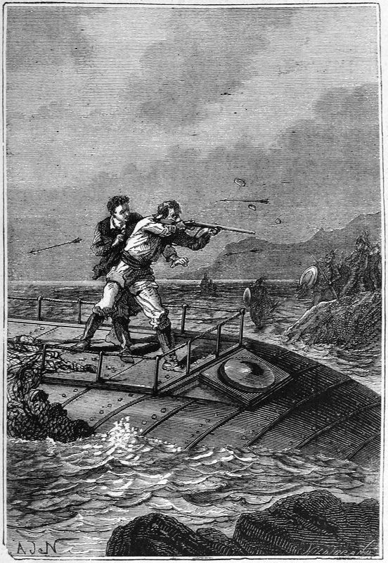
Conseil e eu estávamos, pois, mergulhados na contemplação de nosso tesouro, e eu prometia a mim mesmo enriquecer com ele o Museu, quando uma pedra, desastradamente lançada por um nativo, veio partir o precioso objeto na mão de Conseil.
Soltei um grito de desespero! Conseil lançou-se sobre minha espingarda e mirou um selvagem que balançava sua funda a dez metros dele. Quis detê-lo, mas o tiro partiu e quebrou o bracelete de amuletos que pendia do braço do nativo.
— Conseil — exclamei —, Conseil!
— O quê! O senhor não vê que esse canibal começou o ataque?
— Uma concha não vale a vida de um homem! — disse-lhe eu.
— Ah! O patife! — exclamou Conseil. — Preferia que ele me tivesse quebrado o ombro!
Conseil era sincero, mas não fui da mesma opinião. Contudo, a situação mudara havia alguns instantes, e não tínhamos percebido. Umas vinte pirogas cercavam então o Nautilus. Essas pirogas, escavadas em troncos de árvore, compridas, estreitas, bem concebidas para a marcha, equilibravam-se por meio de um duplo balancim de bambu que flutuava à superfície da água. Eram manobradas por hábeis remadores seminus, e não as vi avançar sem inquietação.
Era evidente que aqueles papuas já tinham tido relações com os europeus e que conheciam seus navios. Mas aquele longo cilindro de ferro estendido na baía, sem mastros, sem chaminé, o que deviam pensar dele? Nada de bom, pois de início tinham-se mantido a respeitosa distância. No entanto, vendo-o imóvel, retomavam pouco a pouco a confiança e procuravam familiarizar-se com ele. Ora, era precisamente essa familiaridade que era preciso impedir. Nossas armas, às quais faltava a detonação, só podiam produzir um efeito medíocre naqueles nativos, que só têm respeito pelas máquinas barulhentas. O raio, sem o ribombo do trovão, assustaria pouco os homens, embora o perigo esteja no relâmpago, e não no barulho.
Nesse momento, as pirogas aproximaram-se mais do Nautilus, e uma nuvem de flechas abateu-se sobre ele.
— Diabo! Está chovendo granizo! — disse Conseil. — E talvez um granizo envenenado!
— É preciso avisar o capitão Nemo — disse eu, entrando pela escotilha.
Desci ao salão. Não encontrei ninguém. Arrisquei-me a bater à porta que dava para o quarto do capitão.
Um “entre” me respondeu. Entrei e encontrei o capitão Nemo mergulhado num cálculo em que não faltavam x e outros sinais algébricos.
— Incomodo o senhor? — disse eu, por cortesia.
— De fato, senhor Aronnax — respondeu-me o capitão —, mas penso que o senhor teve razões sérias para vir ver-me?
— Muito sérias. As pirogas dos nativos nos cercam e, dentro de alguns minutos, seremos certamente assaltados por várias centenas de selvagens.
— Ah! — fez tranquilamente o capitão Nemo. — Vieram com suas pirogas?
— Sim, senhor.
— Pois bem, senhor, basta fechar as escotilhas.
— Precisamente, e eu vinha dizer-lhe…
— Nada é mais fácil — disse o capitão Nemo.
E, pressionando um botão elétrico, transmitiu uma ordem ao posto da tripulação.
— Pronto, senhor — disse-me ele, depois de alguns instantes. — O escaler está no lugar, e as escotilhas estão fechadas. O senhor não teme, imagino, que esses cavalheiros arrombem muralhas que as balas de sua fragata não conseguiram arranhar?
— Não, capitão, mas ainda existe um perigo.
— Qual, senhor?
— É que amanhã, a esta mesma hora, será preciso reabrir as escotilhas para renovar o ar do Nautilus…
— Sem dúvida, senhor, já que nosso navio respira à maneira dos cetáceos.
— Ora, se nesse momento os papuas ocuparem a plataforma, não vejo como o senhor poderá impedi-los de entrar.
— Então, senhor, supõe que eles subirão a bordo?
— Tenho certeza.
— Pois bem, senhor, que subam. Não vejo razão alguma para impedi-los. No fundo, são uns pobres-diabos, esses papuas, e não quero que minha visita à ilha Gueboroar custe a vida de um só desses infelizes!
Dito isso, eu ia me retirar; mas o capitão Nemo reteve-me e convidou-me a sentar perto dele. Interrogou-me com interesse sobre nossas excursões em terra, sobre nossas caçadas, e pareceu não compreender aquela necessidade de carne que apaixonava o canadense. Depois, a conversa tocou em diversos assuntos e, sem ser mais comunicativo, o capitão Nemo mostrou-se mais amável.
Entre outras coisas, chegamos a falar da situação do Nautilus, encalhado justamente naquele estreito onde Dumont d’Urville esteve a ponto de se perder. Depois, a propósito disso:
— Foi um de seus grandes marinheiros — disse-me o capitão —, um de seus mais inteligentes navegadores, esse d’Urville! É o capitão Cook de vocês, franceses. Sábio infortunado! Ter enfrentado os bancos de gelo do polo Sul, os corais da Oceania, os canibais do Pacífico, para perecer miseravelmente num trem de ferro! Se esse homem enérgico pôde refletir durante os últimos segundos de sua existência, o senhor imagina quais devem ter sido seus pensamentos supremos!
Ao falar assim, o capitão Nemo parecia comovido, e lanço essa emoção a seu crédito.
Depois, de mapa na mão, revimos os trabalhos do navegador francês, suas viagens de circunavegação, sua dupla tentativa ao polo Sul, que levou à descoberta das terras Adélia e Luís Filipe, e enfim seus levantamentos hidrográficos das principais ilhas da Oceania.
— O que o seu d’Urville fez na superfície dos mares — disse-me o capitão Nemo —, eu fiz no interior do Oceano, e mais facilmente, mais completamente do que ele. A Astrolabe e a Zélée, incessantemente sacudidas pelos furacões, não podiam valer o Nautilus, tranquilo gabinete de trabalho, verdadeiramente sedentário no meio das águas!
— No entanto, capitão — disse eu —, há um ponto de semelhança entre as corvetas de Dumont d’Urville e o Nautilus.
— Qual, senhor?
— É que o Nautilus encalhou como elas!
— O Nautilus não encalhou, senhor — respondeu-me friamente o capitão Nemo. — O Nautilus foi feito para repousar no leito dos mares, e os penosos trabalhos, as manobras que impôs a d’Urville o desencalhe de suas corvetas, eu não os empreenderei. A Astrolabe e a Zélée quase pereceram, mas meu Nautilus não corre perigo algum. Amanhã, no dia marcado, na hora marcada, a maré o erguerá tranquilamente, e ele retomará sua navegação através dos mares.
— Capitão — disse eu —, não duvido…
— Amanhã — acrescentou o capitão Nemo, levantando-se —, amanhã, às duas horas e quarenta minutos da tarde, o Nautilus flutuará e deixará sem avaria o estreito de Torres.
Pronunciadas essas palavras num tom muito seco, o capitão Nemo inclinou-se ligeiramente. Era dispensar-me, e voltei a meu quarto.
Lá encontrei Conseil, que desejava saber o resultado de minha entrevista com o capitão.
— Meu rapaz — respondi —, quando dei a impressão de acreditar que o Nautilus dele estava ameaçado pelos nativos da Papuásia, o capitão me respondeu com muita ironia. Só tenho, pois, uma coisa a lhe dizer: tenha confiança nele e vá dormir em paz.
— O senhor não precisa de meus serviços?
— Não, meu amigo. O que está fazendo Ned Land?
— Que o senhor me desculpe — respondeu Conseil —, mas o amigo Ned está preparando um patê de canguru que será uma maravilha!
Fiquei sozinho, deitei-me, mas dormi bastante mal. Ouvia o barulho dos selvagens que pisoteavam a plataforma soltando gritos ensurdecedores. A noite passou assim, sem que a tripulação saísse de sua inércia habitual. Ela não se inquietava mais com a presença daqueles canibais do que os soldados de um forte blindado se preocupam com as formigas que correm sobre sua blindagem.
Às seis horas da manhã, levantei-me. As escotilhas não tinham sido abertas. O ar, portanto, não foi renovado no interior, mas os reservatórios, carregados para qualquer eventualidade, funcionaram a propósito e lançaram alguns metros cúbicos de oxigênio na atmosfera empobrecida do Nautilus.
Trabalhei em meu quarto até o meio-dia, sem ter visto, nem por um instante, o capitão Nemo. Não parecia que se fizesse a bordo qualquer preparativo de partida.
Esperei ainda algum tempo e depois dirigi-me ao grande salão. O relógio marcava duas e meia. Dentro de dez minutos, a maré devia ter atingido sua altura máxima e, se o capitão Nemo não tivesse feito uma promessa temerária, o Nautilus seria imediatamente liberado. Do contrário, muitos meses passariam antes que ele pudesse deixar seu leito de coral.
Contudo, alguns estremecimentos precursores logo se fizeram sentir no casco do barco. Ouvi rangerem contra seu costado as asperezas calcárias do fundo coralino.
Às duas horas e trinta e cinco minutos, o capitão Nemo apareceu no salão.
— Vamos partir — disse ele.
— Ah! — fiz eu.
— Dei ordem para abrir as escotilhas.
— E os papuas?
— Os papuas? — respondeu o capitão Nemo, dando de ombros ligeiramente.
— Não vão penetrar no interior do Nautilus?
— E como?
— Transpondo as escotilhas que o senhor terá mandado abrir.
— Senhor Aronnax — respondeu tranquilamente o capitão Nemo —, não se entra assim pelas escotilhas do Nautilus, mesmo quando estão abertas.
Olhei para o capitão.
— O senhor não compreende? — disse-me ele.
— De modo algum.
— Pois bem! Venha e verá.
Dirigi-me para a escada central. Lá, Ned Land e Conseil, muito intrigados, olhavam alguns homens da tripulação que abriam as escotilhas, enquanto gritos de raiva e vociferações pavorosas ressoavam lá fora.
As tampas foram rebatidas para fora. Vinte figuras horríveis apareceram. Mas o primeiro daqueles nativos que pôs a mão no corrimão da escada, lançado para trás por não sei que força invisível, fugiu soltando gritos medonhos e dando cabriolas exorbitantes.
Dez de seus companheiros o sucederam. Os dez tiveram a mesma sorte.
Conseil estava em êxtase. Ned Land, levado por seus instintos violentos, lançou-se para a escada. Mas, assim que agarrou o corrimão com as duas mãos, foi derrubado por sua vez.
— Mil diabos! — exclamou ele. — Fui fulminado!
Essa palavra explicou-me tudo. Já não era um corrimão, mas um cabo de metal, todo carregado da eletricidade de bordo, que terminava na plataforma. Quem quer que o tocasse sentia um choque formidável — e esse choque teria sido mortal se o capitão Nemo tivesse lançado nesse condutor toda a corrente de seus aparelhos! Pode-se realmente dizer que, entre seus assaltantes e ele, havia estendido uma rede elétrica que ninguém podia transpor impunemente.
Enquanto isso, os papuas apavorados tinham batido em retirada, enlouquecidos de terror. Nós, meio rindo, consolávamos e friccionávamos o infeliz Ned Land, que praguejava como um possesso.
Mas, nesse momento, o Nautilus, erguido pelas últimas ondulações da maré, deixou seu leito de coral exatamente naquele quadragésimo minuto fixado pelo capitão. Sua hélice bateu as águas com uma majestosa lentidão. Sua velocidade cresceu pouco a pouco e, navegando à superfície do Oceano, ele abandonou são e salvo as perigosas passagens do estreito de Torres.
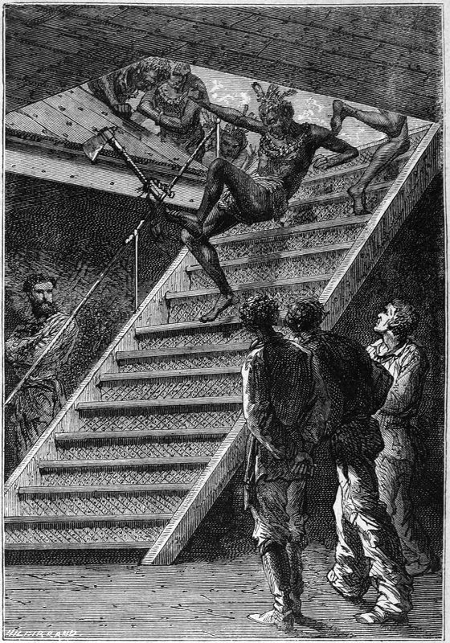
No dia seguinte, 10 de janeiro, o Nautilus retomou sua marcha entre duas águas, mas com uma velocidade notável, que não posso estimar em menos de trinta e cinco milhas por hora. A rapidez de sua hélice era tal que eu não conseguia nem acompanhar suas voltas nem contá-las.
Quando pensava que aquele maravilhoso agente elétrico, depois de dar movimento, calor e luz ao Nautilus, ainda o protegia contra os ataques exteriores e o transformava numa arca santa na qual nenhum profanador tocava sem ser fulminado, minha admiração já não tinha limites e, do aparelho, subia imediatamente ao engenheiro que o criara.
Seguíamos diretamente para oeste e, em 11 de janeiro, dobramos o cabo Wessel, situado a 135° de longitude e 10° de latitude norte, que forma a ponta leste do golfo de Carpentária. Os recifes ainda eram numerosos, mas mais esparsos, e assinalados na carta com extrema precisão. O Nautilus evitou facilmente as arrebentações de Money a bombordo e os recifes Victoria a estibordo, situados a 130° de longitude, sobre aquele décimo paralelo que seguíamos rigorosamente.
Em 13 de janeiro, o capitão Nemo, chegado ao mar de Timor, avistava a ilha desse nome a 122° de longitude. Essa ilha, cuja superfície é de mil seiscentas e vinte e cinco léguas quadradas, é governada por rajás. Esses príncipes dizem-se filhos de crocodilos, isto é, oriundos da mais alta origem a que um ser humano possa pretender. Por isso, esses ancestrais escamosos pululam nos rios da ilha e são objeto de uma veneração particular. São protegidos, mimados, adulados, alimentados; oferecem-lhes moças como pasto, e ai do estrangeiro que puser a mão nesses lagartos sagrados.
Mas o Nautilus nada teve a ver com esses animais repugnantes. Timor só ficou visível por um instante, ao meio-dia, enquanto o imediato determinava sua posição. Do mesmo modo, mal entrevi a pequena ilha Roti, que faz parte do grupo e cujas mulheres têm uma reputação de beleza muito bem estabelecida nos mercados malaios.
A partir desse ponto, a direção do Nautilus, em latitude, inclinou-se para sudoeste. A proa foi apontada para o oceano Índico. Para onde a fantasia do capitão Nemo ia nos arrastar? Subiria para as costas da Ásia? Aproximar-se-ia das margens da Europa? Resoluções pouco prováveis da parte de um homem que fugia dos continentes habitados. Desceria, então, para o sul? Iria dobrar o cabo da Boa Esperança, depois o cabo Horn, e avançar até o polo antártico? Voltaria enfim para seus mares do Pacífico, onde seu Nautilus encontrava uma navegação fácil e independente? O futuro havia de nos dizer.
Depois de costear os escolhos de Cartier, Hibernia, Seringapatam e Scott, últimos esforços do elemento sólido contra o elemento líquido, em 14 de janeiro estávamos além de todas as terras. A velocidade do Nautilus foi singularmente reduzida e, muito caprichoso em seus movimentos, ora nadava no meio das águas, ora flutuava à superfície.
Durante esse período da viagem, o capitão Nemo fez interessantes experiências sobre as diversas temperaturas do mar em camadas diferentes. Em condições ordinárias, essas medições obtêm-se por meio de instrumentos bastante complicados, cujos resultados são no mínimo duvidosos, quer se trate de sondas termométricas, cujos vidros muitas vezes se quebram sob a pressão das águas, quer de aparelhos baseados na variação da resistência dos metais às correntes elétricas. Os resultados assim obtidos não podem ser suficientemente controlados. Ao contrário, o capitão Nemo ia ele mesmo buscar essa temperatura nas profundezas do mar, e seu termômetro, posto em comunicação com as diversas camadas líquidas, dava-lhe imediata e seguramente o grau procurado.

Foi assim que, ora sobrecarregando seus reservatórios, ora descendo obliquamente por meio de seus planos inclinados, o Nautilus atingiu sucessivamente profundidades de três, quatro, cinco, sete, nove e dez mil metros, e o resultado definitivo dessas experiências foi que o mar apresentava uma temperatura permanente de quatro graus e meio, a uma profundidade de mil metros, em todas as latitudes.
Eu acompanhava essas experiências com o mais vivo interesse. O capitão Nemo dedicava-lhes uma verdadeira paixão. Muitas vezes perguntei a mim mesmo com que fim ele fazia essas observações. Seria em proveito de seus semelhantes? Não era provável, pois, mais dia menos dia, seus trabalhos deviam perecer com ele em algum mar ignorado! A menos que destinasse a mim o resultado de suas experiências. Mas isso era admitir que minha estranha viagem teria um fim, e esse fim eu ainda não o avistava.
Seja como for, o capitão Nemo deu-me também a conhecer diversos números obtidos por ele e que estabeleciam a relação das densidades da água nos principais mares do globo. Dessa comunicação, tirei uma lição pessoal que nada tinha de científica.
Foi durante a manhã de 15 de janeiro. O capitão, com quem eu passeava na plataforma, perguntou-me se eu conhecia as diferentes densidades que as águas do mar apresentam. Respondi-lhe negativamente e acrescentei que a ciência carecia de observações rigorosas sobre esse assunto.
— Eu as fiz, essas observações — disse-me ele —, e posso garantir sua exatidão.
— Bem — respondi —, mas o Nautilus é um mundo à parte, e os segredos de seus sábios não chegam até a terra.
— O senhor tem razão, senhor professor — disse-me ele, depois de alguns instantes de silêncio. — É um mundo à parte. É tão estranho à terra quanto os planetas que acompanham este globo em torno do sol, e jamais se conhecerão os trabalhos dos sábios de Saturno ou de Júpiter. No entanto, já que o acaso ligou nossas duas existências, posso comunicar-lhe o resultado de minhas observações.
— Estou ouvindo, capitão.
— O senhor sabe, senhor professor, que a água do mar é mais densa que a água doce, mas essa densidade não é uniforme. De fato, se represento por um a densidade da água doce, encontro um vírgula zero vinte e oito para as águas do Atlântico, um vírgula zero vinte e seis para as águas do Pacífico, um vírgula zero trinta para as águas do Mediterrâneo…
“Ah!”, pensei, “ele se aventura no Mediterrâneo?”
— Um vírgula zero dezoito para as águas do mar Jônico e um vírgula zero vinte e nove para as águas do Adriático.
Decididamente, o Nautilus não fugia dos mares frequentados da Europa, e concluí que ele nos levaria de volta — talvez dentro em pouco — a continentes mais civilizados. Pensei que Ned Land receberia essa particularidade com uma satisfação muito natural.
Durante vários dias, nossas jornadas passaram-se em experiências de todo tipo, que trataram dos graus de salinidade das águas em diferentes profundidades, de sua eletrização, de sua coloração, de sua transparência, e em todas essas circunstâncias o capitão Nemo demonstrou uma engenhosidade só igualada por sua amabilidade para comigo. Depois, durante alguns dias, não o vi mais e fiquei de novo como que isolado a bordo.
Em 16 de janeiro, o Nautilus pareceu adormecer a apenas alguns metros abaixo da superfície das ondas. Seus aparelhos elétricos não funcionavam, e sua hélice imóvel deixava-o vagar ao sabor das correntes. Supus que a tripulação se ocupava de reparos internos, exigidos pela violência dos movimentos mecânicos da máquina.
Meus companheiros e eu fomos então testemunhas de um curioso espetáculo. Os painéis do salão estavam abertos e, como o farol do Nautilus não estava em atividade, uma vaga obscuridade reinava no meio das águas. O céu tempestuoso e coberto de nuvens espessas dava às primeiras camadas do Oceano uma claridade insuficiente.
Eu observava o estado do mar nessas condições, e os maiores peixes já só me apareciam como sombras mal esboçadas, quando o Nautilus se viu subitamente transportado para plena luz. Julguei a princípio que o farol tinha sido reaceso e que projetava seu brilho elétrico na massa líquida. Enganava-me e, depois de uma rápida observação, reconheci meu erro.
O Nautilus flutuava no meio de uma camada fosforescente que, naquela escuridão, se tornava ofuscante. Era produzida por miríades de animálculos luminosos, cuja cintilação aumentava ao deslizar sobre o casco metálico do aparelho. Eu surpreendia então clarões no meio daqueles lençóis luminosos, como seriam escorrimentos de chumbo fundido numa fornalha ardente ou massas metálicas levadas ao rubro-branco; de tal modo que, por contraste, certas porções luminosas faziam sombra naquele meio ígneo, do qual toda sombra parecia dever ser banida. Não! Já não era a irradiação calma de nossa iluminação habitual! Havia ali um vigor e um movimento insólitos! Aquela luz, sentia-se que era viva!
De fato, era uma aglomeração infinita de infusórios pelágicos, de noctilucas miliares, verdadeiros glóbulos de gelatina diáfana, providos de um tentáculo filiforme, dos quais já se contaram até vinte e cinco mil em trinta centímetros cúbicos de água. E sua luz ainda era duplicada por aqueles clarões próprios das medusas, das estrelas-do-mar, das aurélias, das fóladas-tâmaras e de outros zoófitos fosforescentes, impregnados da gordura das matérias orgânicas decompostas pelo mar e talvez do muco segregado pelos peixes.
Durante várias horas, o Nautilus flutuou naquelas ondas brilhantes, e nossa admiração cresceu ao ver os grandes animais marinhos brincarem nelas como salamandras. Vi ali, no meio daquele fogo que não queima, toninhas elegantes e rápidas, infatigáveis palhaços dos mares, e istióforos de três metros de comprimento, inteligentes precursores dos furacões, cujo formidável gládio às vezes batia contra o vidro do salão. Depois apareceram peixes menores, balistas variados, escomberoides-saltadores, peixes-unicórnio e cem outros que, em sua corrida, riscavam a atmosfera luminosa.
Foi um encantamento aquele espetáculo deslumbrante! Talvez alguma condição atmosférica aumentasse a intensidade do fenômeno? Talvez alguma tempestade se desencadeasse na superfície das ondas? Mas, àquela profundidade de alguns metros, o Nautilus não sentia sua fúria e balançava-se tranquilamente no meio das águas calmas.
Assim seguíamos, incessantemente encantados por alguma maravilha nova. Conseil observava e classificava seus zoófitos, seus articulados, seus moluscos, seus peixes. Os dias passavam depressa, e eu já não os contava. Ned, como de costume, procurava variar o cardápio de bordo. Verdadeiros caracóis, tínhamo-nos acostumado à nossa concha, e afirmo que é fácil tornar-se um perfeito caracol.
Assim, aquela existência parecia-nos fácil, natural, e já não imaginávamos que existisse uma vida diferente na superfície do globo terrestre, quando um acontecimento veio lembrar-nos a estranheza de nossa situação.
Em 18 de janeiro, o Nautilus encontrava-se a 105° de longitude e 15° de latitude sul. O tempo estava ameaçador, o mar duro e agitado. O vento soprava de leste com grande força. O barômetro, que descia havia alguns dias, anunciava uma próxima luta dos elementos.
Eu tinha subido à plataforma no momento em que o imediato tomava suas medidas de ângulos horários. Esperava, conforme o costume, que a frase cotidiana fosse pronunciada. Mas, naquele dia, ela foi substituída por outra frase não menos incompreensível. Quase imediatamente, vi aparecer o capitão Nemo, cujos olhos, munidos de uma luneta, se dirigiram para o horizonte.
Durante alguns minutos, o capitão ficou imóvel, sem perder o ponto encerrado no campo de sua objetiva. Depois abaixou a luneta e trocou umas dez palavras com o imediato. Este parecia presa de uma emoção que em vão queria conter. O capitão Nemo, mais senhor de si, permanecia frio. Parecia, aliás, fazer certas objeções às quais o imediato respondia com garantias formais. Pelo menos foi o que entendi, pela diferença de seu tom e de seus gestos.
Quanto a mim, tinha olhado cuidadosamente na direção observada, sem nada avistar. O céu e a água confundiam-se numa linha de horizonte de perfeita nitidez.
Enquanto isso, o capitão Nemo passeava de uma extremidade à outra da plataforma, sem me olhar, talvez sem me ver. Seu passo era firme, mas menos regular que de costume. Às vezes parava e, de braços cruzados sobre o peito, observava o mar. O que poderia procurar naquele espaço imenso? O Nautilus encontrava-se então a algumas centenas de milhas da costa mais próxima!
O imediato tinha retomado a luneta e interrogava obstinadamente o horizonte, indo e vindo, batendo o pé, contrastando com seu chefe por sua agitação nervosa.
Aliás, aquele mistério havia necessariamente de se esclarecer, e dentro em pouco, pois, a uma ordem do capitão Nemo, a máquina, aumentando sua potência propulsora, imprimiu à hélice uma rotação mais rápida.
Nesse momento, o imediato chamou de novo a atenção do capitão. Este suspendeu seu passeio e dirigiu a luneta para o ponto indicado. Observou-o longamente. De minha parte, muito seriamente intrigado, desci ao salão e trouxe de lá uma excelente luneta de longo alcance de que eu costumava servir-me. Depois, apoiando-a na caixa do farol, que formava saliência na parte dianteira da plataforma, dispus-me a percorrer toda a linha do céu e do mar.
Mas meu olho ainda não se tinha aplicado à ocular quando o instrumento me foi vivamente arrancado das mãos.
Voltei-me. O capitão Nemo estava diante de mim, mas não o reconheci. Sua fisionomia estava transfigurada. Seu olhar, brilhando de um fogo sombrio, escondia-se sob a sobrancelha franzida. Seus dentes descobriam-se pela metade. Seu corpo rígido, seus punhos fechados, sua cabeça recolhida entre os ombros testemunhavam o ódio violento que toda a sua pessoa respirava. Não se mexia. Minha luneta, caída de sua mão, rolara a seus pés.
Teria eu então, sem querer, provocado aquela atitude de cólera? Imaginaria aquele personagem incompreensível que eu surpreendera algum segredo proibido aos hóspedes do Nautilus?
Não! Aquele ódio não era a mim que se dirigia, pois ele não me olhava, e seu olhar continuava obstinadamente fixo no ponto impenetrável do horizonte.
Enfim, o capitão Nemo voltou a ser senhor de si. Sua fisionomia, tão profundamente alterada, retomou a calma habitual. Dirigiu ao imediato algumas palavras em língua estrangeira e depois voltou-se para mim.
— Senhor Aronnax — disse-me num tom bastante imperioso —, exijo do senhor o cumprimento de um dos compromissos que o ligam a mim.
— De que se trata, capitão?
— É preciso que o senhor se deixe encerrar, o senhor e seus companheiros, até o momento em que eu julgar conveniente devolver-lhes a liberdade.
— O senhor é quem manda — respondi, olhando-o fixamente. — Mas posso dirigir-lhe uma pergunta?
— Nenhuma, senhor.
Diante dessa palavra, não me cabia discutir, mas obedecer, já que toda resistência teria sido impossível.
Desci à cabine que Ned Land e Conseil ocupavam e comuniquei-lhes a determinação do capitão. Deixo imaginar como essa comunicação foi recebida pelo canadense. Aliás, faltou tempo para qualquer explicação. Quatro homens da tripulação esperavam à porta e conduziram-nos àquela cela onde tínhamos passado nossa primeira noite a bordo do Nautilus.
Ned Land quis protestar, mas a porta fechou-se sobre ele como única resposta.
— O senhor poderia me dizer o que isso significa? — perguntou-me Conseil.
Contei a meus companheiros o que tinha acontecido. Ficaram tão espantados quanto eu, mas tão pouco adiantados quanto eu.
Enquanto isso, eu estava mergulhado num abismo de reflexões, e a estranha apreensão da fisionomia do capitão Nemo não abandonava meu pensamento. Era incapaz de ligar duas ideias lógicas e perdia-me nas hipóteses mais absurdas, quando fui tirado de minha concentração por estas palavras de Ned Land:
— Olhe! O almoço está servido!
De fato, a mesa estava posta. Era evidente que o capitão Nemo dera essa ordem ao mesmo tempo que fazia apressar a marcha do Nautilus.
— O senhor me permite fazer-lhe uma recomendação? — perguntou-me Conseil.
— Sim, meu rapaz — respondi.
— Pois bem! Que o senhor almoce. É prudente, pois não sabemos o que pode acontecer.
— Você tem razão, Conseil.
— Infelizmente — disse Ned Land —, só nos deram o cardápio de bordo.
— Amigo Ned — replicou Conseil —, o que diria então se o almoço tivesse faltado de todo?
Essa razão cortou rente as recriminações do arpoador.
Sentamo-nos à mesa. A refeição passou-se em bastante silêncio. Comi pouco. Conseil “se esforçou”, sempre por prudência, e Ned Land, apesar de tudo, não perdeu uma dentada. Depois, terminado o almoço, cada um de nós se recostou em seu canto.
Nesse momento, o globo luminoso que iluminava a cela apagou-se e deixou-nos numa escuridão profunda. Ned Land não tardou a adormecer e, o que me espantou, Conseil também se entregou a uma pesada sonolência. Eu me perguntava o que poderia ter provocado nele aquela imperiosa necessidade de sono quando senti meu cérebro impregnar-se de um espesso torpor. Meus olhos, que eu queria manter abertos, fecharam-se contra a minha vontade. Eu estava presa de uma alucinação dolorosa. Evidentemente, substâncias soporíferas tinham sido misturadas aos alimentos que acabávamos de tomar! Não bastava, pois, a prisão para esconder de nós os projetos do capitão Nemo; era preciso ainda o sono!
Ouvi então as escotilhas se fecharem. As ondulações do mar, que provocavam um leve movimento de balanço, cessaram. Teria o Nautilus deixado a superfície do Oceano? Teria voltado à camada imóvel das águas?
Quis resistir ao sono. Foi impossível. Minha respiração enfraqueceu. Senti um frio mortal gelar meus membros entorpecidos e como que paralisados. Minhas pálpebras, verdadeiras calotas de chumbo, caíram sobre meus olhos. Não pude erguê-las. Um sono mórbido, cheio de alucinações, apoderou-se de todo o meu ser. Depois as visões desapareceram e deixaram-me num completo aniquilamento.
No dia seguinte, acordei com a cabeça singularmente desanuviada. Para minha grande surpresa, estava em meu quarto. Meus companheiros, sem dúvida, tinham sido levados de volta à sua cabine, sem perceberem mais do que eu. O que se passara durante aquela noite, eles ignoravam como eu mesmo ignorava, e, para desvendar esse mistério, eu só contava com os acasos do futuro.
Pensei então em deixar meu quarto. Estava mais uma vez livre ou prisioneiro? Inteiramente livre. Abri a porta, segui pelos corredores, subi a escada central. As escotilhas, fechadas na véspera, estavam abertas. Cheguei à plataforma.
Ned Land e Conseil esperavam-me ali. Interroguei-os. Não sabiam de nada. Adormecidos num sono pesado que não lhes deixara lembrança alguma, tinham ficado muito surpresos ao se encontrarem de novo em sua cabine.
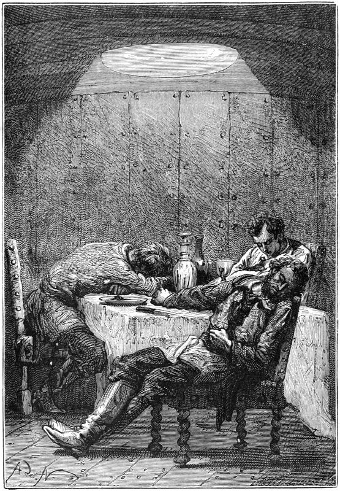
Quanto ao Nautilus, pareceu-nos tranquilo e misterioso como sempre. Flutuava à superfície das ondas em marcha moderada. Nada parecia mudado a bordo.
Ned Land, com seus olhos penetrantes, observou o mar. Estava deserto. O canadense não assinalou nada de novo no horizonte, nem vela nem terra. Uma brisa de oeste soprava ruidosamente, e longas vagas, desgrenhadas pelo vento, imprimiam ao aparelho um balanço muito sensível.
O Nautilus, depois de renovar seu ar, manteve-se a uma profundidade média de quinze metros, de modo a poder voltar prontamente à superfície das ondas. Operação que, contra o costume, foi praticada várias vezes durante aquele dia 19 de janeiro. O imediato subia então à plataforma, e a frase habitual ressoava no interior do navio.
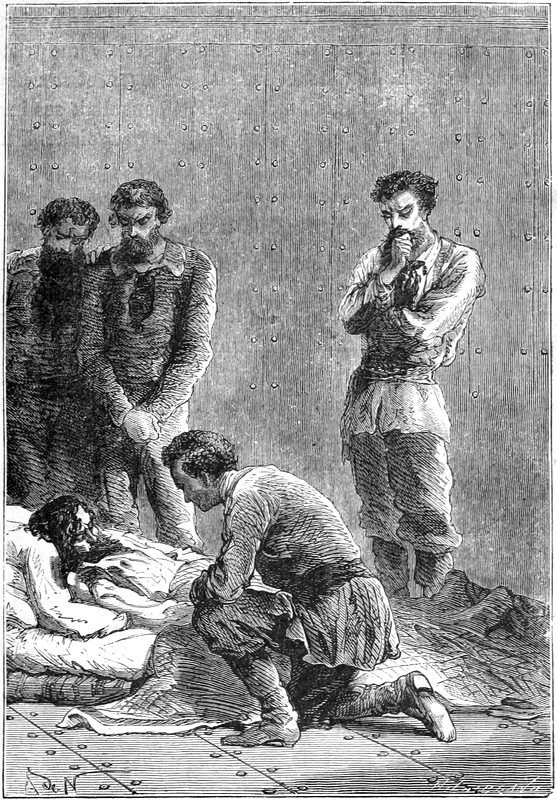
Quanto ao capitão Nemo, não apareceu. Da gente de bordo, só vi o impassível steward, que me serviu com sua exatidão e seu mutismo habituais.
Por volta das duas horas, eu estava no salão, ocupado em classificar minhas notas, quando o capitão abriu a porta e apareceu. Cumprimentei-o. Ele me devolveu um cumprimento quase imperceptível, sem me dirigir a palavra. Voltei a meu trabalho, esperando que talvez me desse explicações sobre os acontecimentos que tinham marcado a noite anterior. Não fez nada disso. Olhei para ele. Seu rosto pareceu-me cansado; seus olhos avermelhados não tinham sido refrescados pelo sono; sua fisionomia exprimia uma tristeza profunda, um desgosto real. Ia e vinha, sentava-se e levantava-se, pegava um livro ao acaso, abandonava-o logo, consultava seus instrumentos sem tomar as notas habituais, e parecia não conseguir ficar um instante no lugar.
Enfim, veio até mim e disse-me:
— O senhor é médico, senhor Aronnax?
Eu esperava tão pouco essa pergunta que o olhei algum tempo sem responder.
— O senhor é médico? — repetiu ele. — Vários de seus colegas fizeram estudos de medicina: Gratiolet, Moquin-Tandon e outros.
— De fato — disse eu —, sou doutor e fui interno dos hospitais. Clinicei durante vários anos antes de entrar para o Museu.
— Bem, senhor.
Minha resposta evidentemente satisfizera o capitão Nemo. Mas, não sabendo aonde ele queria chegar, esperei novas perguntas, reservando-me o direito de responder conforme as circunstâncias.
— Senhor Aronnax — disse-me o capitão —, consentiria em prestar seus cuidados a um de meus homens?
— O senhor tem um doente?
— Sim.
— Estou pronto a acompanhá-lo.
— Venha.
Confesso que meu coração batia. Não sei por que eu via certa conexão entre aquela doença de um homem da tripulação e os acontecimentos da véspera, e esse mistério me preocupava pelo menos tanto quanto o doente.
O capitão Nemo conduziu-me à popa do Nautilus e fez-me entrar numa cabine situada perto do alojamento dos marinheiros.
Ali, sobre uma cama, repousava um homem de uns quarenta anos, de rosto enérgico, verdadeiro tipo do anglo-saxão.
Inclinei-me sobre ele. Não era apenas um doente, era um ferido. Sua cabeça, enfaixada em panos ensanguentados, repousava sobre um travesseiro duplo. Desfiz aqueles panos, e o ferido, olhando com seus grandes olhos fixos, deixou-me agir sem proferir um só gemido.
O ferimento era horrível. O crânio, despedaçado por um instrumento contundente, mostrava o cérebro a nu, e a substância cerebral sofrera um esmagamento profundo. Coágulos sanguíneos tinham-se formado na massa difluente, que tinha uma cor de borra de vinho. Houvera ao mesmo tempo contusão e comoção do cérebro. A respiração do doente era lenta, e alguns movimentos espasmódicos dos músculos agitavam seu rosto. A inflamação cerebral era completa e acarretava a paralisia da sensibilidade e do movimento.
Tomei o pulso do ferido. Era intermitente. As extremidades do corpo já esfriavam, e vi que a morte se aproximava sem que me parecesse possível detê-la. Depois de tratar aquele infeliz, ajustei de novo os panos de sua cabeça e voltei-me para o capitão Nemo.
— De onde vem este ferimento? — perguntei-lhe.
— Que importa! — respondeu evasivamente o capitão. — Um choque do Nautilus quebrou uma das alavancas da máquina, que atingiu este homem. Mas qual é a sua opinião sobre o estado dele?
Eu hesitava em me pronunciar.
— Pode falar — disse-me o capitão. — Este homem não entende francês.
Olhei uma última vez para o ferido e depois respondi:
— Este homem estará morto dentro de duas horas.
— Nada pode salvá-lo?
— Nada.
A mão do capitão Nemo crispou-se, e algumas lágrimas deslizaram de seus olhos, que eu não julgava feitos para chorar.
Durante alguns instantes, observei ainda aquele moribundo cuja vida se retirava pouco a pouco. Sua palidez crescia ainda mais sob o brilho elétrico que banhava seu leito de morte. Eu olhava sua cabeça inteligente, sulcada de rugas prematuras que a desgraça, a miséria talvez, tinham cavado havia muito tempo. Procurava surpreender o segredo de sua vida nas últimas palavras escapadas de seus lábios!
— Pode retirar-se, senhor Aronnax — disse-me o capitão Nemo.
Deixei o capitão na cabine do moribundo e voltei a meu quarto, muito comovido com aquela cena. Durante o dia inteiro, fui agitado por sinistros pressentimentos. À noite, dormi mal e, entre meus sonhos frequentemente interrompidos, julguei ouvir suspiros distantes e como que uma salmodia fúnebre. Seria a oração dos mortos, murmurada naquela língua que eu não sabia compreender?
Na manhã seguinte, subi ao convés. O capitão Nemo tinha chegado antes de mim. Assim que me avistou, veio até mim.
— Senhor professor — disse-me —, conviria ao senhor fazer hoje uma excursão submarina?
— Com meus companheiros? — perguntei.
— Se lhes agradar.
— Estamos às suas ordens, capitão.
— Queiram, pois, ir vestir seus escafandros.
Do moribundo ou do morto, nada se falou. Fui ter com Ned Land e Conseil. Dei-lhes a conhecer a proposta do capitão Nemo. Conseil apressou-se a aceitar e, dessa vez, o canadense mostrou-se muito disposto a nos acompanhar.
Eram oito horas da manhã. Às oito e meia, estávamos vestidos para esse novo passeio e munidos dos dois aparelhos de iluminação e de respiração. A porta dupla foi aberta e, acompanhados do capitão Nemo, seguido de uma dúzia de homens da tripulação, púnhamos o pé, a uma profundidade de dez metros, no solo firme onde repousava o Nautilus.
Um leve declive terminava num fundo acidentado, a cerca de quinze braças de profundidade. Esse fundo diferia completamente daquele que eu visitara durante minha primeira excursão sob as águas do oceano Pacífico. Aqui, nada de areia fina, nada de pradarias submarinas, nenhuma floresta pelágica. Reconheci imediatamente aquela região maravilhosa de que, naquele dia, o capitão Nemo nos fazia as honras. Era o reino do coral.
No ramo dos zoófitos e na classe dos alcionários, nota-se a ordem dos gorgonários, que encerra os três grupos dos gorgonianos, dos isidianos e dos coralianos. É a este último que pertence o coral, curiosa substância que foi sucessivamente classificada nos reinos mineral, vegetal e animal. Remédio para os antigos, joia para os modernos, só em 1694 o marselhês Peysonnel o colocou definitivamente no reino animal.
O coral é um conjunto de animálculos reunidos sobre um polipeiro de natureza quebradiça e pedregosa. Esses pólipos têm um gerador único, que os produziu por brotamento, e possuem uma existência própria, embora participem da vida comum. É, pois, uma espécie de socialismo natural. Eu conhecia os últimos trabalhos feitos sobre esse bizarro zoófito, que se mineraliza ao mesmo tempo que se arboriza, segundo a observação muito justa dos naturalistas, e nada podia ser mais interessante para mim do que visitar uma daquelas florestas petrificadas que a natureza plantou no fundo dos mares.
Os aparelhos Ruhmkorff foram postos em atividade, e seguimos um banco de coral em formação que, com a ajuda do tempo, fechará um dia aquela porção do oceano Índico. O caminho era orlado de arbustos inextricáveis formados pelo emaranhado de arvoredos cobertos de pequenas flores estreladas de raios brancos. Só que, ao contrário das plantas da terra, essas arborizações, fixadas nas rochas do solo, dirigiam-se todas de cima para baixo.
A luz produzia mil efeitos encantadores ao brincar no meio daquelas ramagens tão vivamente coloridas. Parecia-me ver aqueles tubos membranosos e cilíndricos tremerem sob a ondulação das águas. Sentia-me tentado a colher suas frescas corolas ornadas de tentáculos delicados, umas recém-abertas, outras mal nascendo, enquanto leves peixes de nadadeiras rápidas as roçavam ao passar, como bandos de pássaros. Mas, se minha mão se aproximava daquelas flores vivas, daquelas sensitivas animadas, logo o alarme se espalhava pela colônia. As corolas brancas recolhiam-se em seus estojos vermelhos, as flores desvaneciam-se sob meus olhares, e o arbusto transformava-se num bloco de mamilos pedregosos.
O acaso pusera-me ali diante dos mais preciosos exemplares desse zoófito. Aquele coral valia o que se pesca no Mediterrâneo, nas costas da França, da Itália e da Berbéria. Justificava, por seus tons vivos, os nomes poéticos de flor de sangue e de espuma de sangue que o comércio dá a seus mais belos produtos. O coral vende-se a até quinhentos francos o quilograma, e naquele lugar as camadas líquidas recobriam a fortuna de todo um mundo de pescadores de coral. Essa preciosa matéria, muitas vezes misturada com outros polipeiros, formava então conjuntos compactos e inextricáveis chamados “macciota”, sobre os quais notei admiráveis espécimes de coral rosa.
Mas logo os arbustos se estreitaram, as arborizações cresceram. Verdadeiros matagais petrificados e longas naves de uma arquitetura fantasiosa abriram-se diante de nossos passos. O capitão Nemo meteu-se por uma galeria escura cujo suave declive nos conduziu a uma profundidade de cem metros. A luz de nossas serpentinas produzia às vezes efeitos mágicos, prendendo-se às rugosas asperezas daqueles arcos naturais e aos pendentes dispostos como lustres, que ela salpicava de pontas de fogo. Entre os arvoredos coralinos, observei outros pólipos não menos curiosos, melitas, íris de ramificações articuladas, depois alguns tufos de coralinas, umas verdes, outras vermelhas, verdadeiras algas incrustadas em seus sais calcários, que os naturalistas, depois de longas discussões, classificaram definitivamente no reino vegetal. Mas, segundo a observação de um pensador, “talvez seja este o ponto real em que a vida obscuramente se ergue do sono de pedra, sem ainda se desprender desse rude ponto de partida”.
Enfim, depois de duas horas de marcha, tínhamos atingido uma profundidade de cerca de trezentos metros, isto é, o limite extremo em que o coral começa a se formar. Mas ali já não era o arbusto isolado, nem o modesto matagal de mata baixa. Era a floresta imensa, as grandes vegetações minerais, as enormes árvores petrificadas, unidas por guirlandas de elegantes plumárias, esses cipós do mar, todas enfeitadas de matizes e reflexos. Passávamos livremente sob sua alta ramagem perdida na sombra das ondas, enquanto a nossos pés os tubíporos, as meandrinas, as astreias, as fungias e as cariofílias formavam um tapete de flores semeado de gemas deslumbrantes.
Que espetáculo indescritível! Ah! Por que não podíamos comunicar nossas sensações? Por que estávamos aprisionados sob aquela máscara de metal e vidro? Por que nos eram proibidas as palavras de um para o outro? Por que não vivíamos ao menos a vida daqueles peixes que povoam o elemento líquido, ou melhor ainda a daqueles anfíbios que, durante longas horas, podem percorrer, ao sabor de seu capricho, o duplo domínio da terra e das águas?
Enquanto isso, o capitão Nemo tinha parado. Meus companheiros e eu suspendemos nossa marcha e, voltando-me, vi que seus homens formavam um semicírculo em torno de seu chefe. Olhando com mais atenção, observei que quatro deles levavam aos ombros um objeto de forma oblonga.
Ocupávamos, naquele lugar, o centro de uma vasta clareira, cercada pelas altas arborizações da floresta submarina. Nossas lâmpadas projetavam sobre esse espaço uma espécie de claridade crepuscular que alongava desmedidamente as sombras no chão. No limite da clareira, a escuridão voltava a ser profunda e só recolhia pequenas centelhas retidas pelas arestas vivas do coral.
Ned Land e Conseil estavam perto de mim. Olhávamos, e veio-me ao pensamento que eu ia assistir a uma cena estranha. Observando o solo, vi que estava inchado, em certos pontos, por leves intumescências incrustadas de depósitos calcários e dispostas com uma regularidade que traía a mão do homem.
No meio da clareira, sobre um pedestal de rochas grosseiramente amontoadas, erguia-se uma cruz de coral, que estendia seus longos braços, que se diriam feitos de sangue petrificado.
A um sinal do capitão Nemo, um de seus homens adiantou-se e, a alguns pés da cruz, começou a cavar um buraco com uma picareta que tirou da cintura.
Compreendi tudo! Aquela clareira era um cemitério; aquele buraco, uma sepultura; aquele objeto oblongo, o corpo do homem morto durante a noite! O capitão Nemo e os seus vinham enterrar o companheiro naquela morada comum, no fundo daquele Oceano inacessível!
Não! Nunca meu espírito ficou tão sobreexcitado! Nunca ideias mais impressionantes invadiram meu cérebro! Eu não queria ver o que meus olhos viam!
Enquanto isso, a sepultura era cavada lentamente. Os peixes fugiam aqui e ali de seu refúgio perturbado. Eu ouvia ressoar, no solo calcário, o ferro da picareta, que às vezes faiscava ao bater em algum sílex perdido no fundo das águas. O buraco alongava-se, alargava-se, e logo estava bastante fundo para receber o corpo.
Então os carregadores aproximaram-se. O corpo, envolto num tecido de bisso branco, desceu à sua úmida sepultura. O capitão Nemo, de braços cruzados sobre o peito, e todos os amigos daquele que os amara ajoelharam-se na atitude da oração… Meus dois companheiros e eu tínhamo-nos inclinado religiosamente.
A sepultura foi então recoberta com os detritos arrancados do solo, que formaram uma leve elevação.
Feito isso, o capitão Nemo e seus homens ergueram-se; depois, aproximando-se da sepultura, todos dobraram de novo o joelho e todos estenderam a mão em sinal de supremo adeus…
Então o cortejo fúnebre retomou o caminho do Nautilus, passando de novo sob os arcos da floresta, no meio dos matagais, ao longo dos arbustos de coral, e sempre subindo.
Enfim, as luzes de bordo apareceram. Seu rastro luminoso guiou-nos até o Nautilus. À uma hora, estávamos de volta.
Assim que troquei de roupa, subi de novo à plataforma e, presa de uma terrível obsessão de ideias, fui sentar-me perto do farol.
O capitão Nemo veio ter comigo. Levantei-me e disse-lhe:
— Então, conforme as minhas previsões, aquele homem morreu durante a noite?
— Sim, senhor Aronnax — respondeu o capitão Nemo.
— E repousa agora perto de seus companheiros, naquele cemitério de coral?
— Sim, esquecidos de todos, mas não de nós! Nós cavamos a sepultura, e os pólipos se encarregam de selar nela os nossos mortos para a eternidade!
E, escondendo com um gesto brusco o rosto nas mãos crispadas, o capitão tentou em vão reprimir um soluço. Depois acrescentou:
— Ali está o nosso tranquilo cemitério, a algumas centenas de pés abaixo da superfície das ondas!
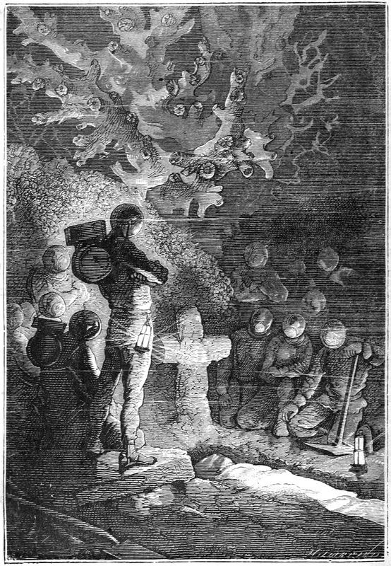
— Ali os seus mortos dormem, ao menos, tranquilos, capitão, fora do alcance dos tubarões!
— Sim, senhor — respondeu gravemente o capitão Nemo —, dos tubarões e dos homens!

Aqui começa a segunda parte desta viagem sob os mares. A primeira terminou naquela comovente cena do cemitério de coral que deixou em meu espírito uma impressão profunda. Assim, no seio daquele mar imenso, a vida do capitão Nemo desenrolava-se por inteiro, e até sua sepultura ele preparara no mais impenetrável de seus abismos. Ali, nenhum dos monstros do Oceano viria perturbar o último sono daqueles hóspedes do Nautilus, daqueles amigos ligados uns aos outros na morte tanto quanto na vida! “Nem homem algum!”, acrescentara o capitão.
Sempre essa mesma desconfiança, feroz, implacável, para com as sociedades humanas!
Quanto a mim, já não me contentava com as hipóteses que satisfaziam Conseil. Aquele digno rapaz persistia em ver no comandante do Nautilus apenas um desses sábios desconhecidos que pagam à humanidade o desprezo com a indiferença. Era ainda, para ele, um gênio incompreendido que, cansado das decepções da terra, tivera de refugiar-se naquele meio inacessível onde seus instintos se exerciam livremente. Mas, a meu ver, essa hipótese só explicava um dos lados do capitão Nemo.
De fato, o mistério daquela última noite, durante a qual tínhamos sido acorrentados na prisão e no sono, a precaução tão violentamente tomada pelo capitão de arrancar de meus olhos a luneta pronta a percorrer o horizonte, o ferimento mortal daquele homem devido a um choque inexplicável do Nautilus, tudo isso me empurrava para um caminho novo. Não! O capitão Nemo não se contentava em fugir dos homens! Seu formidável aparelho servia não só a seus instintos de liberdade, mas talvez também aos interesses de não sei que terríveis represálias.
Neste momento, nada é evidente para mim; ainda só entrevejo clarões nessas trevas e devo limitar-me a escrever, por assim dizer, sob o ditado dos acontecimentos.
Aliás, nada nos liga ao capitão Nemo. Ele sabe que escapar do Nautilus é impossível. Não somos sequer prisioneiros sob palavra. Nenhum compromisso de honra nos acorrenta. Somos apenas cativos, prisioneiros disfarçados sob o nome de hóspedes por uma aparência de cortesia. Contudo, Ned Land não renunciou à esperança de recobrar a liberdade. É certo que aproveitará a primeira ocasião que o acaso lhe oferecer. Farei como ele, sem dúvida. E, no entanto, não será sem uma espécie de pesar que levarei comigo o que a generosidade do capitão nos terá deixado penetrar dos mistérios do Nautilus! Pois, enfim, deve-se odiar esse homem ou admirá-lo? É uma vítima ou um carrasco? E depois, para ser franco, eu gostaria, antes de abandoná-lo para sempre, eu gostaria de ter completado essa volta ao mundo submarina cujo começo é tão magnífico. Gostaria de ter observado a série completa das maravilhas acumuladas sob os mares do globo. Gostaria de ter visto o que nenhum homem viu ainda, mesmo que tivesse de pagar com a vida essa insaciável necessidade de aprender! O que descobri até agora? Nada, ou quase nada, já que só percorremos seis mil léguas através do Pacífico!
Sei bem, porém, que o Nautilus se aproxima das terras habitadas e que, se alguma chance de salvação se oferecer a nós, seria cruel sacrificar meus companheiros à minha paixão pelo desconhecido. Será preciso segui-los, talvez até guiá-los. Mas essa ocasião se apresentará algum dia? O homem privado à força de seu livre-arbítrio a deseja, essa ocasião; mas o sábio, o curioso, a teme.
Naquele dia, 21 de janeiro de 1868, ao meio-dia, o imediato veio tomar a altura do sol. Subi à plataforma, acendi um charuto e acompanhei a operação. Pareceu-me evidente que aquele homem não compreendia o francês, pois várias vezes fiz em voz alta reflexões que deveriam ter-lhe arrancado algum sinal involuntário de atenção, se as tivesse compreendido; mas ele permaneceu impassível e mudo.
Enquanto ele observava por meio do sextante, um dos marinheiros do Nautilus — aquele homem vigoroso que nos acompanhara durante nossa primeira excursão submarina à ilha Crespo — veio limpar os vidros do farol. Examinei então a instalação daquele aparelho, cuja potência era centuplicada por anéis lenticulares dispostos como os dos faróis da costa, que mantinham sua luz no plano útil. A lâmpada elétrica era combinada de modo a dar todo o seu poder de iluminação. Sua luz, de fato, produzia-se no vácuo, o que lhe assegurava ao mesmo tempo regularidade e intensidade. Esse vácuo também poupava as pontas de grafite entre as quais se desenvolve o arco luminoso. Economia importante para o capitão Nemo, que não poderia renová-las facilmente. Mas, nessas condições, seu desgaste era quase insensível.
Quando o Nautilus se preparou para retomar sua marcha submarina, desci de novo ao salão. As escotilhas voltaram a fechar-se, e a rota foi dada diretamente para oeste.
Sulcávamos então as ondas do oceano Índico, vasta planície líquida com uma extensão de quinhentos e cinquenta milhões de hectares, cujas águas são tão transparentes que dão vertigem a quem se debruça sobre sua superfície. O Nautilus flutuava ali geralmente entre cem e duzentos metros de profundidade. Foi assim durante alguns dias. A qualquer outro que não eu, tomado de um imenso amor pelo mar, as horas teriam sem dúvida parecido longas e monótonas; mas aqueles passeios cotidianos na plataforma, onde me revigorava no ar vivificante do Oceano, o espetáculo daquelas ricas águas através dos vidros do salão, a leitura dos livros da biblioteca, a redação de minhas memórias ocupavam todo o meu tempo e não me deixavam um momento de cansaço ou de tédio.
A saúde de todos nós mantinha-se num estado muito satisfatório. O regime de bordo convinha-nos perfeitamente e, de minha parte, eu teria dispensado de bom grado as variações que Ned Land, por espírito de protesto, se empenhava em introduzir. Além disso, naquela temperatura constante, não havia sequer um resfriado a temer. Aliás, aquele madreporário Dendrophyllia, conhecido na Provença pelo nome de “funcho-do-mar”, do qual havia certa reserva a bordo, teria fornecido, com a carne macia de seus pólipos, uma pasta excelente contra a tosse.
Durante alguns dias, vimos grande quantidade de aves aquáticas, palmípedes, gaivotas ou gaivotões. Algumas foram habilmente abatidas e, preparadas de certa maneira, forneceram uma caça aquática muito aceitável. Entre os grandes voadores, levados a longas distâncias de qualquer terra, que descansam sobre as ondas das fadigas do voo, avistei magníficos albatrozes de grito dissonante como um zurro de burro, aves que pertencem à família dos longipenes. A família dos totipalmados estava representada por rápidas fragatas, que pescavam com presteza os peixes da superfície, e por numerosos rabos-de-palha, entre outros o rabo-de-palha-de-bico-vermelho, do tamanho de um pombo, cuja plumagem branca é matizada de tons rosados que realçam o tom negro das asas.
As redes do Nautilus trouxeram várias espécies de tartarugas marinhas, do gênero tartaruga-de-pente, de dorso abaulado, cuja carapaça é muito apreciada. Esses répteis, que mergulham facilmente, podem manter-se longo tempo debaixo da água fechando a válvula carnuda situada no orifício externo de seu canal nasal. Algumas dessas tartarugas, quando as apanharam, ainda dormiam em sua carapaça, ao abrigo dos animais marinhos. A carne dessas tartarugas era geralmente medíocre, mas seus ovos constituíam um manjar excelente.
Quanto aos peixes, provocavam sempre nossa admiração, quando surpreendíamos, através dos painéis abertos, os segredos de sua vida aquática. Notei várias espécies que até então não me fora dado observar.
Citarei principalmente ostraciões próprios do mar Vermelho, do mar das Índias e daquela parte do Oceano que banha as costas da América equinocial. Esses peixes, como as tartarugas, os tatus, os ouriços, os crustáceos, são protegidos por uma couraça que não é nem cretácea nem pedregosa, mas verdadeiramente óssea. Ora tem a forma de um sólido triangular, ora a forma de um sólido quadrangular. Entre os triangulares, notei alguns com meio decímetro de comprimento, de carne salubre, de gosto delicioso, castanhos na cauda, amarelos nas nadadeiras, cuja aclimatação recomendo mesmo nas águas doces, às quais, aliás, certo número de peixes do mar se acostuma facilmente. Citarei também ostraciões quadrangulares, encimados no dorso por quatro grandes tubérculos; ostraciões salpicados de pontos brancos na parte inferior do corpo, que se domesticam como pássaros; trígonos, providos de aguilhões formados pelo prolongamento de sua crosta óssea, a quem seu singular grunhido valeu o apelido de “porcos-do-mar”; depois dromedários de grandes corcovas em forma de cone, cuja carne é dura e coriácea.

Registro ainda, nas notas diárias mantidas por mestre Conseil, certos peixes do gênero tetrodonte, próprios daqueles mares, espenglerianos de dorso vermelho e peito branco, que se distinguem por três fileiras longitudinais de filamentos, e elétricos, com sete polegadas de comprimento, enfeitados das mais vivas cores. Depois, como exemplares de outros gêneros, ovoides semelhantes a um ovo de um castanho-escuro, sulcados de faixas brancas e desprovidos de cauda; diodontes, verdadeiros porcos-espinhos do mar, munidos de aguilhões e capazes de inchar de modo a formar uma bola eriçada de dardos; hipocampos comuns a todos os oceanos; pégasos voadores, de focinho alongado, a quem as nadadeiras peitorais, muito extensas e dispostas em forma de asas, permitem, se não voar, ao menos lançar-se nos ares; pombos-espatulados, cuja cauda é coberta de numerosos anéis escamosos; macrognatos de mandíbula longa, excelentes peixes de vinte e cinco centímetros de comprimento, brilhando com as mais agradáveis cores; caliomoros lívidos, de cabeça rugosa; miríades de blênios-saltadores, listrados de preto, de longas nadadeiras peitorais, deslizando na superfície das águas com prodigiosa velocidade; deliciosos velíferos, que podem içar suas nadadeiras como outras tantas velas desfraldadas às correntes favoráveis; curtos esplêndidos, a quem a natureza prodigalizou o amarelo, o azul-celeste, a prata e o ouro; tricópteros, cujas asas são formadas de filamentos; cotos, sempre manchados de lodo, que produzem certo zumbido; triglas, cujo fígado é considerado veneno; bodiões, que trazem sobre os olhos uma viseira móvel; enfim, peixes-fole, de focinho longo e tubular, verdadeiros papa-moscas do Oceano, armados de uma espingarda que nem os Chassepot nem os Remington previram, e que matam os insetos atingindo-os com uma simples gota de água.
No octogésimo nono gênero dos peixes classificados por Lacépède, que pertence à segunda subclasse dos ósseos, caracterizados por um opérculo e uma membrana branquial, notei a escorpena, cuja cabeça é guarnecida de aguilhões e que só possui uma nadadeira dorsal; esses animais são revestidos ou desprovidos de pequenas escamas, conforme o subgênero a que pertencem. O segundo subgênero deu-nos exemplares de didáctilos de três a quatro decímetros de comprimento, listrados de amarelo, mas cuja cabeça tem um aspecto fantástico. Quanto ao primeiro subgênero, forneceu vários espécimes daquele peixe bizarro justamente apelidado de “sapo-do-mar”, peixe de cabeça grande, ora cavada de seios profundos, ora inchada de protuberâncias; eriçado de aguilhões e salpicado de tubérculos, tem chifres irregulares e hediondos; seu corpo e sua cauda são guarnecidos de calosidades; seus espinhos fazem ferimentos perigosos; é repugnante e horrível.
De 21 a 23 de janeiro, o Nautilus marchou à razão de duzentas e cinquenta léguas em vinte e quatro horas, ou seja, quinhentas e quarenta milhas, ou vinte e duas milhas por hora. Se reconhecíamos de passagem as diversas variedades de peixes, é porque estes, atraídos pelo brilho elétrico, procuravam acompanhar-nos; a maioria, superada por aquela velocidade, logo ficava para trás; alguns, no entanto, conseguiam manter-se durante certo tempo nas águas do Nautilus.
Na manhã do dia 24, a 12° 5′ de latitude sul e 94° 33′ de longitude, avistamos a ilha Keeling, levantamento madrepórico plantado de magníficos coqueiros, que foi visitada pelo sr. Darwin e pelo capitão Fitz-Roy. O Nautilus costeou a pouca distância as escarpas daquela ilha deserta. Suas dragas trouxeram numerosos exemplares de pólipos e equinodermos e curiosas conchas do ramo dos moluscos. Alguns preciosos produtos da espécie das delfínulas aumentaram os tesouros do capitão Nemo, aos quais juntei uma astreia punctífera, espécie de polipeiro parasita muitas vezes fixado sobre uma concha.
Logo a ilha Keeling desapareceu sob o horizonte, e a rota foi dada para noroeste, em direção à ponta da península indiana.
— Terras civilizadas — disse-me naquele dia Ned Land. — Será melhor que aquelas ilhas da Papuásia, onde se encontram mais selvagens que cabritos-monteses! Nessa terra indiana, senhor professor, há estradas, ferrovias, cidades inglesas, francesas e hindus. Não se andariam cinco milhas sem encontrar um compatriota. Hein! Não terá chegado o momento de sairmos à francesa da casa do capitão Nemo?
— Não, Ned, não — respondi num tom muito determinado. — Deixemos correr, como dizem vocês, os marinheiros. O Nautilus aproxima-se dos continentes habitados. Volta para a Europa; que nos leve até lá. Uma vez chegados aos nossos mares, veremos o que a prudência nos aconselhará tentar. Aliás, não suponho que o capitão Nemo nos permita ir caçar nas costas do Malabar ou de Coromandel como nas florestas da Nova Guiné.
— Pois bem, senhor! Não se pode passar sem a permissão dele?
Não respondi ao canadense. Não queria discutir. No fundo, eu fazia questão de esgotar até o fim os acasos do destino que me lançara a bordo do Nautilus.
A partir da ilha Keeling, nossa marcha tornou-se em geral mais lenta. Foi também mais caprichosa e levou-nos muitas vezes a grandes profundidades. Fez-se uso várias vezes dos planos inclinados que alavancas internas podiam colocar obliquamente em relação à linha de flutuação. Fomos assim até dois e três quilômetros, mas sem nunca termos verificado os grandes fundos daquele mar indiano que sondas de treze mil metros não conseguiram alcançar. Quanto à temperatura das camadas baixas, o termômetro indicou sempre, invariavelmente, quatro graus acima de zero. Observei apenas que, nos lençóis superiores, a água era sempre mais fria sobre os baixios do que em alto-mar.
Em 25 de janeiro, estando o Oceano absolutamente deserto, o Nautilus passou o dia na superfície, batendo as ondas com sua poderosa hélice e fazendo-as jorrar a grande altura. Como, nessas condições, não o tomariam por um cetáceo gigantesco? Passei três quartos daquele dia na plataforma. Olhava o mar. Nada no horizonte, a não ser, por volta das quatro horas da tarde, um longo vapor que corria para oeste em rumo contrário. Sua mastreação ficou visível por um instante, mas ele não podia avistar o Nautilus, muito rente à água. Pensei que aquele navio a vapor pertencia à linha peninsular e oriental que faz o serviço da ilha do Ceilão a Sydney, tocando na ponta do Rei Jorge e em Melbourne.
Às cinco horas da tarde, antes daquele rápido crepúsculo que liga o dia à noite nas zonas tropicais, Conseil e eu ficamos maravilhados com um curioso espetáculo.
Há um animal encantador cujo encontro, segundo os antigos, pressagiava boa sorte. Aristóteles, Ateneu, Plínio e Opiano tinham estudado seus gostos e esgotado a seu respeito toda a poética dos sábios da Grécia e da Itália. Chamaram-no Nautilus e Pompylius. Mas a ciência moderna não ratificou essa denominação, e esse molusco é hoje conhecido pelo nome de argonauta.
Quem tivesse consultado Conseil teria aprendido com aquele bom rapaz que o ramo dos moluscos se divide em cinco classes; que a primeira classe, a dos cefalópodes, cujos indivíduos são ora nus, ora testáceos, compreende duas famílias, a dos dibranquiados e a dos tetrabranquiados, que se distinguem pelo número de suas brânquias; que a família dos dibranquiados encerra três gêneros, o argonauta, a lula e a sépia, e que a família dos tetrabranquiados só contém um, o náutilo. Se, depois dessa nomenclatura, um espírito rebelde confundisse o argonauta, que é acetabulífero, isto é, portador de ventosas, com o náutilo, que é tentaculífero, isto é, portador de tentáculos, não teria desculpa.
Ora, era um bando desses argonautas que viajava então à superfície do Oceano. Podíamos contar várias centenas. Pertenciam à espécie dos argonautas tuberculados, que é própria dos mares da Índia.

Esses graciosos moluscos moviam-se de marcha a ré por meio de seu tubo locomotor, expelindo por esse tubo a água que tinham aspirado. De seus oito tentáculos, seis, alongados e afilados, flutuavam sobre a água, enquanto os outros dois, arredondados em palmas, se estendiam ao vento como uma vela leve. Eu via perfeitamente sua concha espiralada e ondulada, que Cuvier compara com justeza a uma elegante chalupa. Verdadeiro barco, de fato. Transporta o animal que o segregou, sem que o animal adira a ele.
— O argonauta é livre para deixar sua concha — disse eu a Conseil —, mas nunca a deixa.
— Assim faz o capitão Nemo — respondeu judiciosamente Conseil. — Por isso teria feito melhor se chamasse seu navio de Argonauta.
Durante cerca de uma hora, o Nautilus flutuou no meio daquele bando de moluscos. Depois, não sei que pavor os tomou de repente. Como a um sinal, todas as velas foram subitamente arriadas; os braços dobraram-se, os corpos contraíram-se, as conchas, revirando-se, mudaram seu centro de gravidade, e toda a flotilha desapareceu sob as ondas. Foi instantâneo, e jamais navios de uma esquadra manobraram com mais harmonia.
Nesse momento, a noite caiu subitamente, e as vagas, mal erguidas pela brisa, estenderam-se tranquilamente sob os costados do Nautilus.
No dia seguinte, 26 de janeiro, cortávamos o equador no octogésimo segundo meridiano e entrávamos no hemisfério boreal.
Durante esse dia, um formidável bando de esqualos fez-nos cortejo. Animais terríveis, que pululam naqueles mares e os tornam muito perigosos. Eram esqualos-philipps, de dorso castanho e ventre esbranquiçado, armados de onze fileiras de dentes; esqualos-de-olho, cujo pescoço é marcado por uma grande mancha negra rodeada de branco, que parece um olho; esqualos-isabel, de focinho arredondado e salpicado de pontos escuros. Muitas vezes, esses poderosos animais precipitavam-se contra o vidro do salão com uma violência pouco tranquilizadora. Ned Land então já não se continha. Queria subir à superfície das ondas e arpoar aqueles monstros, sobretudo certos cações-lixa, cuja boca é pavimentada de dentes dispostos como um mosaico, e grandes tubarões-tigre, de cinco metros de comprimento, que o provocavam com uma insistência toda particular. Mas logo o Nautilus, aumentando sua velocidade, deixou facilmente para trás os mais rápidos daqueles tubarões.
Em 27 de janeiro, à entrada do vasto golfo de Bengala, encontramos repetidas vezes — espetáculo sinistro! — cadáveres que flutuavam à superfície das ondas. Eram os mortos das cidades indianas, levados pelo Ganges até o alto-mar, que os abutres, únicos coveiros do país, não tinham acabado de devorar. Mas não faltavam esqualos para ajudá-los em sua fúnebre tarefa.
Por volta das sete horas da tarde, o Nautilus, meio imerso, navegou no meio de um mar de leite. A perder de vista, o Oceano parecia ter-se transformado em leite. Seria efeito dos raios lunares? Não, pois a lua, com apenas dois dias, ainda estava perdida abaixo do horizonte nos raios do sol. O céu inteiro, embora iluminado pela radiação sideral, parecia negro em contraste com a brancura das águas.
Conseil não podia acreditar em seus olhos e interrogava-me sobre as causas daquele fenômeno singular. Felizmente, eu estava em condições de lhe responder.
— É o que se chama um mar de leite — disse-lhe eu —, vasta extensão de ondas brancas que se vê frequentemente nas costas de Amboina e naquelas paragens.
— Mas — perguntou Conseil — o senhor pode me dizer que causa produz semelhante efeito? Porque esta água não se transformou em leite, suponho!
— Não, meu rapaz, e essa brancura que o surpreende deve-se apenas à presença de miríades de bichinhos infusórios, espécies de pequenos vermes luminosos, de aspecto gelatinoso e incolor, da espessura de um fio de cabelo, cujo comprimento não passa de um quinto de milímetro. Alguns desses bichinhos aderem uns aos outros ao longo de várias léguas.
— Várias léguas! — exclamou Conseil.
— Sim, meu rapaz, e não tente calcular o número desses infusórios! Não conseguiria, pois, se não me engano, certos navegadores flutuaram sobre esses mares de leite durante mais de quarenta milhas.
Não sei se Conseil levou em conta minha recomendação, mas pareceu mergulhar em reflexões profundas, procurando sem dúvida avaliar quantos quintos de milímetro contêm quarenta milhas quadradas. Quanto a mim, continuei a observar o fenômeno. Durante várias horas, o Nautilus cortou com seu esporão aquelas ondas esbranquiçadas, e notei que deslizava sem ruído sobre aquela água ensaboada, como se flutuasse naqueles redemoinhos de espuma que as correntes e contracorrentes das baías às vezes deixam entre si.
Por volta da meia-noite, o mar retomou subitamente sua cor habitual, mas atrás de nós, até os limites do horizonte, o céu, refletindo a brancura das ondas, pareceu por muito tempo impregnado dos vagos clarões de uma aurora boreal.
Em 28 de fevereiro, quando o Nautilus voltou ao meio-dia à superfície do mar, a 9° 4′ de latitude norte, encontrava-se à vista de uma terra que ficava a oito milhas a oeste. Observei antes de tudo uma aglomeração de montanhas, com cerca de dois mil pés de altura, cujas formas se modelavam muito caprichosamente. Determinada a posição, voltei ao salão e, quando a marcação foi transportada para a carta, reconheci que estávamos diante da ilha do Ceilão, essa pérola que pende do lóbulo inferior da península indiana.
Fui buscar na biblioteca algum livro relativo a essa ilha, uma das mais férteis do globo. Encontrei precisamente um volume de H. C. Sirr, esq., intitulado Ceylon and the Cingalese. De volta ao salão, anotei primeiro as coordenadas do Ceilão, ao qual a Antiguidade prodigalizara tantos nomes diversos. Sua situação ficava entre 5° 55′ e 9° 49′ de latitude norte e entre 79° 42′ e 82° 4′ de longitude a leste do meridiano de Greenwich; seu comprimento, duzentas e setenta e cinco milhas; sua largura máxima, cento e cinquenta milhas; sua circunferência, novecentas milhas; sua superfície, vinte e quatro mil quatrocentas e quarenta e oito milhas, isto é, um pouco inferior à da Irlanda.
O capitão Nemo e seu imediato apareceram nesse momento.
O capitão deu uma olhada na carta. Depois, voltando-se para mim:
— A ilha do Ceilão — disse ele —, uma terra célebre por suas pescarias de pérolas. Seria do seu agrado, senhor Aronnax, visitar uma de suas pescarias?
— Sem dúvida alguma, capitão.
— Bem. Será coisa fácil. Só que, se virmos as pescarias, não veremos os pescadores. A exploração anual ainda não começou. Não importa. Vou dar ordem de rumar para o golfo de Manaar, aonde chegaremos durante a noite.
O capitão disse algumas palavras ao imediato, que saiu imediatamente. Logo o Nautilus voltou a seu elemento líquido, e o manômetro indicou que se mantinha a uma profundidade de trinta pés.
Com a carta diante dos olhos, procurei então o golfo de Manaar. Encontrei-o no nono paralelo, na costa noroeste do Ceilão. Era formado por uma linha alongada da pequena ilha Manaar. Para alcançá-lo, era preciso subir todo o litoral ocidental do Ceilão.
— Senhor professor — disse-me então o capitão Nemo —, pescam-se pérolas no golfo de Bengala, no mar das Índias, nos mares da China e do Japão, nos mares do sul da América, no golfo do Panamá, no golfo da Califórnia; mas é no Ceilão que essa pesca obtém os mais belos resultados. Chegamos um pouco cedo, sem dúvida. Os pescadores só se reúnem durante o mês de março no golfo de Manaar e ali, durante trinta dias, seus trezentos barcos entregam-se a essa lucrativa exploração dos tesouros do mar. Cada barco é tripulado por dez remadores e dez pescadores. Estes, divididos em dois grupos, mergulham alternadamente e descem a uma profundidade de doze metros por meio de uma pesada pedra que seguram entre os pés e que uma corda prende ao barco.
— Então — disse eu —, é sempre esse meio primitivo que ainda está em uso?
— Sempre — respondeu-me o capitão Nemo —, embora essas pescarias pertençam ao povo mais industrioso do globo, os ingleses, aos quais o tratado de Amiens as cedeu em 1802.
— Parece-me, no entanto, que o escafandro, tal como o senhor o emprega, prestaria grandes serviços numa operação assim.
— Sim, pois esses pobres pescadores não podem ficar muito tempo debaixo da água. O inglês Perceval, em sua viagem ao Ceilão, fala de um cafre que ficava cinco minutos sem voltar à superfície, mas o fato me parece pouco crível. Sei que alguns mergulhadores chegam a cinquenta e sete segundos, e alguns muito hábeis a oitenta e sete; todavia, são raros e, de volta a bordo, esses infelizes deitam pelo nariz e pelos ouvidos água tingida de sangue. Creio que o tempo médio que os pescadores podem suportar é de trinta segundos, durante os quais se apressam a amontoar numa pequena rede todas as ostras perlíferas que arrancam; mas, em geral, esses pescadores não vivem muito; sua vista enfraquece; ulcerações aparecem em seus olhos; chagas formam-se em seu corpo e muitas vezes chegam a ser fulminados por apoplexia no fundo do mar.
— Sim — disse eu —, é um triste ofício, que só serve para satisfazer alguns caprichos. Mas diga-me, capitão, que quantidade de ostras um barco pode pescar num dia?
— Cerca de quarenta a cinquenta mil. Diz-se até que, em 1814, tendo o governo inglês mandado pescar por conta própria, seus mergulhadores, em vinte dias de trabalho, trouxeram setenta e seis milhões de ostras.
— Pelo menos — perguntei —, esses pescadores são suficientemente remunerados?
— Mal e mal, senhor professor. No Panamá, ganham apenas um dólar por semana. Na maioria das vezes, recebem um soldo por ostra que contenha uma pérola, e quantas trazem que não contêm nenhuma!
— Um soldo a essa pobre gente que enriquece seus patrões! É odioso.
— Assim, senhor professor — disse-me o capitão Nemo —, o senhor e seus companheiros visitarão o banco de Manaar e, se por acaso algum pescador apressado já estiver lá, pois bem, nós o veremos trabalhar.
— Combinado, capitão.
— A propósito, senhor Aronnax, o senhor não tem medo de tubarões?
— De tubarões? — exclamei.
Essa pergunta pareceu-me, no mínimo, muito ociosa.
— E então? — retomou o capitão Nemo.
— Confesso-lhe, capitão, que ainda não estou muito familiarizado com esse gênero de peixes.
— Nós já estamos habituados — replicou o capitão Nemo —, e com o tempo o senhor também se acostumará. Aliás, estaremos armados e, pelo caminho, talvez possamos caçar algum esqualo. É uma caçada interessante. Assim, até amanhã, senhor professor, e bem cedo.
Dito isso num tom desembaraçado, o capitão Nemo deixou o salão.
Se alguém o convidasse a caçar urso nas montanhas da Suíça, o leitor diria: “Muito bem! Amanhã vamos caçar urso.” Se o convidassem a caçar leão nas planícies do Atlas, ou tigre nas selvas da Índia, diria: “Ah! ah! Parece que vamos caçar tigre ou leão!” Mas, se o convidassem a caçar tubarão em seu elemento natural, talvez pedisse para refletir antes de aceitar o convite.
Quanto a mim, passei a mão pela testa, onde perlavam algumas gotas de suor frio.
“Reflitamos”, disse a mim mesmo, “e não nos apressemos. Caçar lontras nas florestas submarinas, como fizemos nas florestas da ilha Crespo, ainda vá. Mas percorrer o fundo dos mares quando se tem quase certeza de encontrar esqualos é outra coisa! Sei bem que em certos países, particularmente nas ilhas Andamã, os negros não hesitam em atacar o tubarão, com um punhal numa mão e um laço na outra, mas sei também que muitos dos que enfrentam esses formidáveis animais não voltam vivos! Aliás, não sou negro e, ainda que fosse, creio que, nesse caso, uma leve hesitação de minha parte não estaria fora de propósito.”
E eis-me sonhando com tubarões, pensando naquelas vastas mandíbulas armadas de múltiplas fileiras de dentes, capazes de cortar um homem em dois. Já sentia uma certa dor em volta dos rins. Depois, não conseguia digerir a sem-cerimônia com que o capitão fizera aquele deplorável convite! Não se diria que se tratava de ir acossar no bosque alguma raposa inofensiva?
“Bom!”, pensei. “Conseil nunca vai querer vir, e isso me dispensará de acompanhar o capitão.”
Quanto a Ned Land, confesso que não me sentia tão seguro de sua sensatez. Um perigo, por maior que fosse, sempre tinha atrativo para sua natureza combativa.
Retomei a leitura do livro de Sirr, mas folheava-o maquinalmente. Via, entre as linhas, mandíbulas formidavelmente abertas.
Nesse momento, Conseil e o canadense entraram, com ar tranquilo e até alegre. Não sabiam o que os esperava.
— Palavra, senhor — disse-me Ned Land —, o seu capitão Nemo, que o diabo o carregue!, acaba de nos fazer uma proposta muito amável.
— Ah! — disse eu. — Vocês sabem…
— Com a licença do senhor — respondeu Conseil —, o comandante do Nautilus convidou-nos a visitar amanhã, em companhia do senhor, as magníficas pescarias do Ceilão. Fê-lo em termos excelentes e portou-se como um verdadeiro gentleman.
— Ele não lhes disse mais nada?
— Nada, senhor — respondeu o canadense —, a não ser que já lhe tinha falado desse pequeno passeio.
— De fato — disse eu. — E não lhes deu nenhum detalhe sobre…
— Nenhum, senhor naturalista. O senhor vai nos acompanhar, não é verdade?
— Eu… sem dúvida! Vejo que o senhor está tomando gosto pela coisa, mestre Land.
— Sim! É curioso, muito curioso.
— Perigoso, talvez! — acrescentei num tom insinuante.
— Perigoso — respondeu Ned Land —, uma simples excursão a um banco de ostras!
Decididamente, o capitão Nemo julgara inútil despertar a ideia de tubarões no espírito de meus companheiros. Eu os olhava com um olhar perturbado, como se já lhes faltasse algum membro. Devia preveni-los? Sim, sem dúvida, mas não sabia bem como fazê-lo.
— Senhor — disse-me Conseil —, o senhor poderia nos dar detalhes sobre a pesca das pérolas?
— Sobre a pesca propriamente dita — perguntei — ou sobre os incidentes que…
— Sobre a pesca — respondeu o canadense. — Antes de entrar no terreno, é bom conhecê-lo.
— Pois bem! Sentem-se, meus amigos, e vou ensinar-lhes tudo o que o inglês Sirr acaba de me ensinar.
Ned e Conseil sentaram-se num divã e, antes de tudo, o canadense me disse:
— Senhor, o que é uma pérola?
— Meu bravo Ned — respondi —, para o poeta, a pérola é uma lágrima do mar; para os orientais, é uma gota de orvalho solidificada; para as damas, é uma joia de forma oblonga, de brilho hialino, de matéria nacarada, que elas usam no dedo, no pescoço ou na orelha; para o químico, é uma mistura de fosfato e carbonato de cal com um pouco de gelatina; e enfim, para os naturalistas, é uma simples secreção doentia do órgão que produz o nácar em certos bivalves.

— Ramo dos moluscos — disse Conseil —, classe dos acéfalos, ordem dos testáceos.
— Precisamente, sábio Conseil. Ora, entre esses testáceos, a orelha-do-mar-íris, os turbos, as tridacnas, as pinas-marinhas, numa palavra, todos os que segregam o nácar, isto é, aquela substância azul, azulada, violeta ou branca que forra o interior de suas valvas, são capazes de produzir pérolas.

— Os mexilhões também? — perguntou o canadense.
— Sim! Os mexilhões de certos cursos de água da Escócia, do País de Gales, da Irlanda, da Saxônia, da Boêmia, da França.
— Bom! De agora em diante vou prestar atenção — respondeu o canadense.
— Mas — retomei —, o molusco por excelência que destila a pérola é a ostra perlífera, a Meleagrina margaritifera, a preciosa pintadina. A pérola não passa de uma concreção nacarada que se dispõe sob uma forma globulosa. Ou adere à concha da ostra, ou se incrusta nas pregas do animal. Sobre as valvas, a pérola é aderente; sobre a carne, é livre. Mas tem sempre por núcleo um pequeno corpo duro, seja um óvulo estéril, seja um grão de areia, em torno do qual a matéria nacarada se deposita ao longo de vários anos, sucessivamente e em camadas finas e concêntricas.
— Encontram-se várias pérolas numa mesma ostra? — perguntou Conseil.
— Sim, meu rapaz. Há certas pintadinas que formam um verdadeiro porta-joias. Já se citou até uma ostra, mas permito-me duvidar, que não continha menos de cento e cinquenta tubarões.
— Cento e cinquenta tubarões! — exclamou Ned Land.
— Eu disse tubarões? — exclamei vivamente. — Quero dizer cento e cinquenta pérolas. Tubarões não teria sentido algum.
— De fato — disse Conseil. — Mas o senhor nos ensinará agora por que meios se extraem essas pérolas?
— Procede-se de várias maneiras e, muitas vezes, quando as pérolas aderem às valvas, os pescadores arrancam-nas com pinças. Mas o mais comum é estender as pintadinas sobre esteiras de esparto que cobrem a praia. Elas morrem assim ao ar livre e, ao cabo de dez dias, encontram-se num estado satisfatório de putrefação. Mergulham-nas então em vastos reservatórios de água do mar, depois abrem-nas e lavam-nas. É nesse momento que começa o duplo trabalho dos separadores. Primeiro, separam as placas de nácar conhecidas no comércio pelo nome de franca prateada, bastarda branca e bastarda negra, que são entregues em caixas de cento e vinte e cinco a cento e cinquenta quilogramas. Depois, retiram o parênquima da ostra, fervem-no e peneiram-no a fim de extrair até as menores pérolas.
— O preço dessas pérolas varia conforme o tamanho? — perguntou Conseil.
— Não só conforme o tamanho — respondi —, mas também conforme a forma, conforme a água, isto é, a cor, e conforme o oriente, isto é, aquele brilho cambiante e matizado que as torna tão encantadoras aos olhos. As mais belas pérolas são chamadas pérolas virgens ou parangonas; formam-se isoladamente no tecido do molusco; são brancas, muitas vezes opacas, mas às vezes de uma transparência opalina, e mais comumente esféricas ou piriformes. Esféricas, formam os braceletes; piriformes, os pingentes e, sendo as mais preciosas, vendem-se por unidade. As outras pérolas aderem à concha da ostra e, mais irregulares, vendem-se a peso. Enfim, numa ordem inferior classificam-se as pequenas pérolas, conhecidas pelo nome de sementes; vendem-se por medida e servem mais particularmente para executar bordados nos paramentos de igreja.
— Mas esse trabalho, que consiste em separar as pérolas conforme o tamanho, deve ser longo e difícil — disse o canadense.
— Não, meu amigo. Esse trabalho faz-se por meio de onze peneiras ou crivos furados com um número variável de buracos. As pérolas que ficam nas peneiras, que contam de vinte a oitenta buracos, são de primeira ordem. As que não escapam dos crivos furados com cem a oitocentos buracos são de segunda ordem. Enfim, as pérolas para as quais se empregam as peneiras furadas com novecentos a mil buracos formam a semente.
— É engenhoso — disse Conseil —, e vejo que a divisão, a classificação das pérolas, opera-se mecanicamente. E o senhor poderá nos dizer quanto rende a exploração dos bancos de ostras perlíferas?
— A julgar pelo livro de Sirr — respondi —, as pescarias do Ceilão são arrendadas anualmente pela soma de três milhões de esqualos.
— De francos! — corrigiu Conseil.
— Sim, de francos! Três milhões de francos — retomei. — Mas creio que essas pescarias já não rendem o que rendiam antigamente. O mesmo acontece com as pescarias americanas, que, sob o reinado de Carlos V, produziam quatro milhões de francos, hoje reduzidos a dois terços. Em suma, pode-se avaliar em nove milhões de francos o rendimento geral da exploração das pérolas.
— Mas — perguntou Conseil — não se citam algumas pérolas célebres que foram cotadas a preço altíssimo?
— Sim, meu rapaz. Diz-se que César ofereceu a Servília uma pérola avaliada em cento e vinte mil francos de nossa moeda.
— Ouvi até contarem — disse o canadense — que uma certa dama da Antiguidade bebia pérolas em seu vinagre.
— Cleópatra — replicou Conseil.
— Devia ser ruim — acrescentou Ned Land.
— Detestável, amigo Ned — respondeu Conseil —, mas um copinho de vinagre que custa um milhão e meio de francos é um belo preço.
— Lamento não ter casado com essa dama — disse o canadense, movendo o braço com um ar pouco tranquilizador.
— Ned Land, esposo de Cleópatra! — exclamou Conseil.
— Mas eu ia me casar, Conseil — respondeu seriamente o canadense —, e não foi culpa minha se a coisa não deu certo. Tinha até comprado um colar de pérolas para Kat Tender, minha noiva, que aliás se casou com outro. Pois bem, esse colar não me custou mais que um dólar e meio e, no entanto, o senhor professor há de me acreditar, as pérolas que o compunham não teriam passado pela peneira de vinte buracos.
— Meu bravo Ned — respondi, rindo —, eram pérolas artificiais, simples glóbulos de vidro revestidos por dentro de essência do Oriente.
— Ah! Essa essência do Oriente — respondeu o canadense — deve custar caro.
— Quase nada! Não é outra coisa senão a substância prateada das escamas do alburno, recolhida na água e conservada em amoníaco. Não tem valor algum.
— Talvez seja por isso que Kat Tender se casou com outro — respondeu filosoficamente mestre Land.
— Mas — disse eu —, para voltar às pérolas de alto valor, não creio que algum soberano tenha jamais possuído uma superior à do capitão Nemo.
— Esta aqui — disse Conseil, mostrando a magnífica joia encerrada em sua vitrine.
— Certamente não me engano ao atribuir-lhe um valor de dois milhões de…
— Francos! — disse vivamente Conseil.
— Sim — disse eu —, dois milhões de francos e, sem dúvida, ela só terá custado ao capitão o trabalho de apanhá-la.
— Eh! — exclamou Ned Land. — Quem disse que amanhã, durante o nosso passeio, não vamos encontrar uma igual?
— Ora! — fez Conseil.
— E por que não?
— De que nos serviriam milhões a bordo do Nautilus?
— A bordo, de nada — disse Ned Land —, mas… em outro lugar.
— Oh! Em outro lugar! — fez Conseil, sacudindo a cabeça.
— Na verdade — disse eu —, mestre Land tem razão. E, se algum dia levarmos para a Europa ou para a América uma pérola de alguns milhões, isso pelo menos dará grande autenticidade e, ao mesmo tempo, grande valor ao relato de nossas aventuras.
— Também acho — disse o canadense.
— Mas — disse Conseil, que voltava sempre ao lado instrutivo das coisas —, essa pesca das pérolas é perigosa?
— Não — respondi vivamente —, sobretudo se se tomam certas precauções.
— O que se arrisca nesse ofício? — disse Ned Land. — Engolir alguns goles de água do mar!
— Como o senhor diz, Ned. A propósito — disse eu, tentando adotar o tom desembaraçado do capitão Nemo —, o senhor tem medo de tubarões, bravo Ned?
— Eu? — respondeu o canadense. — Um arpoador de profissão! O meu ofício é zombar deles!
— Não se trata — disse eu — de pescá-los com um anzol de cadeia, de içá-los para o convés de um navio, de lhes cortar a cauda a golpes de machado, de lhes abrir a barriga, de lhes arrancar o coração e de jogá-lo ao mar!
— Então, trata-se de…?
— Sim, precisamente.
— Na água?
— Na água.
— Palavra, com um bom arpão! Sabe, senhor, esses tubarões são bichos bastante malfeitos. Precisam se virar de barriga para cima para abocanhar a gente e, enquanto isso…
Ned Land tinha um jeito de pronunciar a palavra “abocanhar” que dava um frio na espinha.
— Pois bem, e você, Conseil, o que pensa desses esqualos?
— Eu — disse Conseil — serei franco com o senhor.
“Ainda bem”, pensei.
— Se o senhor enfrentar os tubarões — disse Conseil —, não vejo por que o seu fiel criado não os enfrentaria com ele!
A noite chegou. Deitei-me. Dormi bastante mal. Os esqualos desempenharam um papel importante em meus sonhos, e achei ao mesmo tempo muito justa e muito injusta a etimologia que faz vir a palavra francesa requin, tubarão, da palavra “réquiem”.
No dia seguinte, às quatro horas da manhã, fui acordado pelo steward que o capitão Nemo pusera especialmente a meu serviço. Levantei-me depressa, vesti-me e passei ao salão.
O capitão Nemo esperava-me ali.
— Senhor Aronnax — disse-me —, está pronto para partir?
— Estou pronto.
— Queira seguir-me.
— E meus companheiros, capitão?
— Estão avisados e nos esperam.
— Não vamos vestir nossos escafandros? — perguntei.
— Ainda não. Não deixei o Nautilus aproximar-se demais desta costa, e estamos bastante ao largo do banco de Manaar; mas mandei aprontar o escaler, que nos levará ao ponto exato de desembarque e nos poupará um trajeto bastante longo. Ele leva nossos aparelhos de mergulho, que vestiremos no momento em que começar essa exploração submarina.
O capitão Nemo conduziu-me para a escada central, cujos degraus terminavam na plataforma. Ned e Conseil estavam lá, encantados com a “partida de recreio” que se preparava. Cinco marinheiros do Nautilus, de remos armados, esperavam-nos no escaler, que fora amarrado ao costado.
A noite ainda estava escura. Manchas de nuvens cobriam o céu e só deixavam ver raras estrelas. Dirigi os olhos para o lado da terra, mas só vi uma linha turva que fechava três quartos do horizonte, de sudoeste a noroeste. O Nautilus, tendo subido durante a noite a costa ocidental do Ceilão, encontrava-se a oeste da baía, ou antes do golfo formado por essa terra e a ilha de Manaar. Ali, sob as águas escuras, estendia-se o banco de pintadinas, inesgotável campo de pérolas cujo comprimento passa de vinte milhas.
O capitão Nemo, Conseil, Ned Land e eu tomamos lugar na popa do escaler. O patrão da embarcação pôs-se ao leme; seus quatro companheiros apoiaram-se nos remos; a amarra foi solta, e afastamo-nos do costado.
O escaler dirigiu-se para o sul. Os remadores não se apressavam. Observei que suas remadas, vigorosamente mergulhadas na água, só se sucediam de dez em dez segundos, segundo o método geralmente usado nas marinhas de guerra. Enquanto a embarcação corria por inércia, as gotinhas líquidas batiam crepitando no fundo negro das ondas como respingos de chumbo fundido. Uma pequena ondulação, vinda do largo, imprimia ao escaler um leve balanço, e algumas cristas de vagas marulhavam em sua proa.
Estávamos calados. Em que pensaria o capitão Nemo? Talvez naquela terra da qual se aproximava e que achava perto demais, ao contrário do canadense, a quem ela ainda parecia longe demais. Quanto a Conseil, estava ali como simples curioso.
Por volta das cinco e meia, as primeiras tintas do horizonte acusaram mais nitidamente a linha superior da costa. Bastante plana a leste, inchava-se um pouco para o sul. Cinco milhas ainda a separavam de nós, e sua margem confundia-se com as águas brumosas. Entre ela e nós, o mar estava deserto. Nem um barco, nem um mergulhador. Solidão profunda naquele ponto de encontro dos pescadores de pérolas. Como o capitão Nemo me fizera observar, chegávamos um mês cedo demais àquelas paragens.
Às seis horas, o dia fez-se subitamente, com aquela rapidez própria das regiões tropicais, que não conhecem nem aurora nem crepúsculo. Os raios solares perfuraram a cortina de nuvens amontoadas no horizonte oriental, e o astro radioso elevou-se rapidamente.
Vi distintamente a terra, com algumas árvores esparsas aqui e ali.
O escaler avançou para a ilha de Manaar, que se arredondava ao sul. O capitão Nemo levantara-se de seu banco e observava o mar.
A um sinal seu, a âncora foi lançada, e a corrente mal correu, pois o fundo não estava a mais de um metro e formava naquele lugar um dos pontos mais altos do banco de pintadinas. O escaler girou imediatamente sob o impulso da vazante, que corria para o largo.
— Chegamos, senhor Aronnax — disse então o capitão Nemo. — Está vendo esta baía estreita? É aqui mesmo que, dentro de um mês, se reunirão os numerosos barcos de pesca dos exploradores, e são estas águas que seus mergulhadores irão audaciosamente revistar. Esta baía é felizmente disposta para esse gênero de pesca. É abrigada dos ventos mais fortes, e o mar nunca é muito agitado ali, circunstância muito favorável ao trabalho dos mergulhadores. Vamos agora vestir nossos escafandros e começaremos nosso passeio.
Não respondi nada e, sempre olhando aquelas ondas suspeitas, ajudado pelos marinheiros da embarcação, comecei a vestir meu pesado traje de mar. O capitão Nemo e meus dois companheiros também se vestiam. Nenhum dos homens do Nautilus devia acompanhar-nos naquela nova excursão.
Logo estávamos aprisionados até o pescoço na roupa de borracha, e alças fixaram em nossas costas os aparelhos de ar. Quanto aos aparelhos Ruhmkorff, não se cogitava deles. Antes de introduzir a cabeça em sua cápsula de cobre, fiz a observação ao capitão.
— Esses aparelhos nos seriam inúteis — respondeu-me o capitão. — Não iremos a grandes profundidades, e os raios solares bastarão para iluminar nossa marcha. Aliás, não é prudente levar sob estas águas uma lanterna elétrica. Seu brilho poderia atrair inesperadamente algum perigoso habitante destas paragens.
Enquanto o capitão Nemo pronunciava essas palavras, voltei-me para Conseil e Ned Land. Mas os dois amigos já tinham encaixado a cabeça na calota metálica e não podiam nem ouvir nem responder.

Restava-me uma última pergunta a dirigir ao capitão Nemo:
— E nossas armas — perguntei-lhe —, nossas espingardas?
— Espingardas! Para quê? Os seus montanheses não atacam o urso de punhal na mão, e o aço não é mais seguro que o chumbo? Eis uma lâmina sólida. Passe-a pela cintura e partamos.
Olhei para meus companheiros. Estavam armados como nós e, além disso, Ned Land brandia um enorme arpão que pusera no escaler antes de deixar o Nautilus.
Depois, seguindo o exemplo do capitão, deixei que me cobrissem a cabeça com a pesada esfera de cobre, e nossos reservatórios de ar foram imediatamente postos em atividade.

Um instante depois, os marinheiros da embarcação desembarcavam-nos um após o outro e, com um metro e meio de água, púnhamos o pé numa areia lisa. O capitão Nemo fez-nos um sinal com a mão. Seguimo-lo e, por um suave declive, desaparecemos sob as ondas.
Ali, as ideias que obcecavam meu cérebro abandonaram-me. Voltei a ficar espantosamente calmo. A facilidade de meus movimentos aumentou minha confiança, e a estranheza do espetáculo cativou minha imaginação.
O sol já enviava sob as águas uma claridade suficiente. Os menores objetos permaneciam perceptíveis. Depois de dez minutos de marcha, estávamos a cinco metros de profundidade, e o terreno tornava-se quase plano.
Diante de nossos passos, como bandos de narcejas num pântano, levantavam-se revoadas de peixes curiosos do gênero dos monópteros, cujos indivíduos não têm outra nadadeira senão a da cauda. Reconheci o javanês, verdadeira serpente de oito decímetros de comprimento, de ventre lívido, que facilmente se confundiria com o congro, não fossem as linhas de ouro de seus flancos. No gênero dos estromateus, cujo corpo é muito comprimido e oval, observei paros de cores resplandecentes, que levam a nadadeira dorsal como uma foice, peixes comestíveis que, secos e marinados, formam um prato excelente conhecido pelo nome de karawade; depois tranquebares, pertencentes ao gênero dos apsiforoides, cujo corpo é recoberto por uma couraça escamosa de oito faces longitudinais.
Enquanto isso, a elevação progressiva do sol iluminava cada vez mais a massa das águas. O solo mudava pouco a pouco. À areia fina sucedia uma verdadeira calçada de rochas arredondadas, revestidas de um tapete de moluscos e zoófitos. Entre os exemplares desses dois ramos, notei placunas de valvas finas e desiguais, espécie de ostráceos próprios do mar Vermelho e do oceano Índico; lucinas alaranjadas de concha orbicular; terebras subuladas; algumas daquelas púrpuras-pérsicas que forneciam ao Nautilus uma tintura admirável; murex cornudos, de quinze centímetros de comprimento, que se erguiam sob as ondas como mãos prontas a agarrar-nos; turbinelas cornígeras, todas eriçadas de espinhos; língulas hiantes; anatinas, conchas comestíveis que abastecem os mercados do Industão; pelágias panopiras, levemente luminosas; e enfim admiráveis oculinas flabeliformes, magníficos leques que formam uma das mais ricas arborizações daqueles mares.
No meio dessas plantas vivas e sob os caramanchões de hidrófitas corriam desajeitadas legiões de articulados, particularmente raninas dentadas, cuja carapaça representa um triângulo um pouco arredondado, birgos próprios daquelas paragens, partenopes horríveis, cujo aspecto repugnava aos olhares. Um animal não menos hediondo, que encontrei várias vezes, foi aquele caranguejo enorme observado pelo sr. Darwin, a quem a natureza deu o instinto e a força necessários para se alimentar de cocos; ele trepa nas árvores da margem, faz cair o coco, que se racha na queda, e abre-o com suas poderosas pinças. Ali, sob aquelas ondas claras, esse caranguejo corria com uma agilidade sem igual, enquanto tartarugas-verdes, daquela espécie que frequenta as costas do Malabar, se deslocavam lentamente entre as rochas abaladas.
Por volta das sete horas, percorríamos enfim o banco de pintadinas, sobre o qual as ostras perlíferas se reproduzem aos milhões. Esses moluscos preciosos aderiam às rochas e estavam fortemente presos a elas por aquele bisso de cor castanha que não lhes permite deslocar-se. Nisso essas ostras são inferiores aos próprios mexilhões, aos quais a natureza não recusou toda faculdade de locomoção.
A pintadina meleagrina, a mãe-pérola, cujas valvas são mais ou menos iguais, apresenta-se sob a forma de uma concha arredondada, de paredes espessas, muito rugosas por fora. Algumas dessas conchas eram folheadas e sulcadas de faixas esverdeadas que irradiavam de seu ápice. Pertenciam às ostras jovens. As outras, de superfície áspera e negra, com dez anos ou mais, mediam até quinze centímetros de largura.
O capitão Nemo mostrou-me com a mão aquele acúmulo prodigioso de pintadinas, e compreendi que aquela mina era verdadeiramente inesgotável, pois a força criadora da natureza vence o instinto destrutivo do homem. Ned Land, fiel a esse instinto, apressava-se a encher com os mais belos moluscos uma rede que levava a seu lado.
Mas não podíamos parar. Era preciso seguir o capitão, que parecia orientar-se por trilhas conhecidas só por ele. O solo subia sensivelmente e, às vezes, meu braço, que eu erguia, ultrapassava a superfície do mar. Depois, o nível do banco voltava a descer caprichosamente. Muitas vezes contornávamos altas rochas afiladas em pequenas pirâmides. Em suas sombrias anfractuosidades, grandes crustáceos, apoiados em suas patas altas como máquinas de guerra, olhavam-nos com seus olhos fixos, e sob nossos pés rastejavam miríanas, glíceras, arícias e anelídeos, que alongavam desmedidamente suas antenas e seus cirros tentaculares.
Nesse momento abriu-se diante de nossos passos uma vasta gruta, cavada num pitoresco amontoado de rochas forradas de todas as tapeçarias da flora submarina. A princípio, essa gruta pareceu-me profundamente escura. Os raios solares pareciam extinguir-se ali por degradações sucessivas. Sua vaga transparência já não era mais que luz afogada.
O capitão Nemo entrou. Nós, atrás dele. Meus olhos logo se acostumaram àquelas trevas relativas. Distingui as curvas, tão caprichosamente contornadas, da abóbada sustentada por pilares naturais, largamente assentados sobre sua base granítica, como as pesadas colunas da arquitetura toscana. Por que nosso incompreensível guia nos arrastava ao fundo daquela cripta submarina? Eu ia sabê-lo dentro em pouco.
Depois de descer um declive bastante íngreme, nossos pés pisaram o fundo de uma espécie de poço circular. Ali, o capitão Nemo parou e, com a mão, indicou-nos um objeto que eu ainda não tinha avistado.
Era uma ostra de dimensões extraordinárias, uma tridacna gigantesca, uma pia de água benta que teria contido um lago de água santa, uma bacia cuja largura passava de dois metros e, consequentemente, maior que a que ornava o salão do Nautilus.
Aproximei-me daquele molusco fenomenal. Por seu bisso, aderia a uma mesa de granito e ali se desenvolvia isoladamente nas águas calmas da gruta. Calculei o peso daquela tridacna em trezentos quilogramas. Ora, uma ostra assim contém quinze quilos de carne, e seria preciso o estômago de um Gargântua para absorver algumas dúzias delas.
O capitão Nemo evidentemente conhecia a existência daquele bivalve. Não era a primeira vez que o visitava, e pensei que, conduzindo-nos àquele lugar, só queria mostrar-nos uma curiosidade natural. Enganava-me. O capitão Nemo tinha um interesse particular em verificar o estado atual daquela tridacna.
As duas valvas do molusco estavam entreabertas. O capitão aproximou-se e introduziu seu punhal entre as conchas para impedi-las de se fecharem; depois, com a mão, ergueu a túnica membranosa, franjada nas bordas, que formava o manto do animal.
Ali, entre as pregas foliáceas, vi uma pérola livre cujo tamanho igualava o de um coco. Sua forma globulosa, sua limpidez perfeita, seu oriente admirável faziam dela uma joia de preço inestimável. Levado pela curiosidade, estendi a mão para pegá-la, para pesá-la, para apalpá-la! Mas o capitão deteve-me, fez um sinal negativo e, retirando o punhal com um movimento rápido, deixou as duas valvas se fecharem subitamente.
Compreendi então qual era o desígnio do capitão Nemo. Deixando aquela pérola escondida sob o manto da tridacna, permitia-lhe crescer insensivelmente. A cada ano, a secreção do molusco acrescentava-lhe novas camadas concêntricas. Só o capitão conhecia a gruta onde “amadurecia” aquele admirável fruto da natureza; só ele o criava, por assim dizer, a fim de transportá-lo um dia para seu precioso museu. Talvez até, seguindo o exemplo dos chineses e dos indianos, tivesse provocado a produção daquela pérola introduzindo sob as pregas do molusco algum pedaço de vidro ou de metal, que pouco a pouco se recobrira da matéria nacarada. Em todo caso, comparando aquela pérola às que eu já conhecia, às que brilhavam na coleção do capitão, calculei seu valor em dez milhões de francos, pelo menos. Soberba curiosidade natural, e não joia de luxo, pois não sei que orelhas femininas poderiam suportá-la.
A visita à opulenta tridacna estava terminada. O capitão Nemo deixou a gruta, e subimos de novo ao banco de pintadinas, no meio daquelas águas claras que o trabalho dos mergulhadores ainda não turvava.
Caminhávamos separadamente, como verdadeiros passeantes, cada um parando ou afastando-se ao sabor de sua fantasia. De minha parte, já não me preocupava com os perigos que minha imaginação exagerara tão ridiculamente. O baixio aproximava-se sensivelmente da superfície do mar e logo, com um metro de água, minha cabeça ultrapassou o nível do oceano. Conseil juntou-se a mim e, colando sua grossa cápsula à minha, fez-me com os olhos uma saudação amigável. Mas aquele planalto elevado só media algumas toesas, e logo voltamos ao nosso elemento. Creio ter agora o direito de chamá-lo assim.
Dez minutos depois, o capitão Nemo parou de repente. Julguei que fazia alto para voltar sobre seus passos. Não. Com um gesto, ordenou-nos que nos agachássemos junto dele no fundo de uma larga anfractuosidade. Sua mão apontou para um ponto da massa líquida, e olhei atentamente.
A cinco metros de mim, uma sombra apareceu e desceu até o chão. A inquietante ideia dos tubarões atravessou meu espírito. Mas eu me enganava e, dessa vez ainda, não tínhamos de lidar com os monstros do Oceano.
Era um homem, um homem vivo, um indiano, um negro, um pescador, um pobre-diabo, sem dúvida, que vinha respigar antes da colheita. Eu via o fundo de sua canoa ancorada a alguns pés acima de sua cabeça. Ele mergulhava e subia sucessivamente. Uma pedra talhada em forma de pão de açúcar, que ele apertava com o pé enquanto uma corda a prendia ao barco, servia-lhe para descer mais depressa ao fundo do mar. Era todo o seu equipamento. Chegando ao solo, a cerca de cinco metros de profundidade, lançava-se de joelhos e enchia seu saco de pintadinas apanhadas ao acaso. Depois subia, esvaziava o saco, puxava a pedra e recomeçava a operação, que durava apenas trinta segundos.
Esse mergulhador não nos via. A sombra do rochedo escondia-nos de seus olhares. E, aliás, como aquele pobre indiano teria jamais suposto que homens, seres semelhantes a ele, estivessem ali, debaixo da água, espiando seus movimentos, não perdendo nenhum detalhe de sua pesca!
Várias vezes ele subiu assim e mergulhou de novo. Não trazia mais que uma dezena de pintadinas a cada mergulho, pois era preciso arrancá-las do banco ao qual se agarravam por seu robusto bisso. E quantas daquelas ostras eram desprovidas das pérolas pelas quais ele arriscava a vida!
Eu o observava com uma atenção profunda. Sua manobra fazia-se regularmente e, durante meia hora, nenhum perigo pareceu ameaçá-lo. Eu me familiarizava, pois, com o espetáculo daquela pesca interessante quando, de repente, num momento em que o indiano estava ajoelhado no chão, vi-o fazer um gesto de pavor, levantar-se e tomar impulso para subir à superfície das ondas.
Compreendi seu terror. Uma sombra gigantesca aparecia acima do infeliz mergulhador. Era um tubarão de grande porte que avançava diagonalmente, de olho em fogo, mandíbulas abertas!
Fiquei mudo de horror, incapaz de fazer um movimento.
O voraz animal, com um vigoroso golpe de nadadeira, lançou-se sobre o indiano, que se jogou de lado e evitou a mordida do tubarão, mas não o golpe de sua cauda, pois essa cauda, atingindo-o no peito, estendeu-o no chão.
Essa cena durara apenas alguns segundos. O tubarão voltou e, virando-se de costas, preparava-se para cortar o indiano em dois quando senti o capitão Nemo, postado perto de mim, levantar-se subitamente. Depois, de punhal na mão, marchou direto para o monstro, pronto a lutar corpo a corpo com ele.
O esqualo, no momento em que ia abocanhar o infeliz pescador, avistou seu novo adversário e, voltando a ficar de barriga para baixo, dirigiu-se rapidamente para ele.
Ainda vejo a postura do capitão Nemo. Dobrado sobre si mesmo, esperava com admirável sangue-frio o formidável esqualo e, quando este se precipitou sobre ele, o capitão, jogando-se de lado com uma presteza prodigiosa, evitou o choque e enterrou-lhe o punhal na barriga. Mas nem tudo estava dito. Travou-se um combate terrível.
O tubarão rugira, por assim dizer. O sangue saía em jorros de suas feridas. O mar tingiu-se de vermelho e, através daquele líquido opaco, não vi mais nada.
Mais nada, até o momento em que, numa clareira, avistei o audacioso capitão agarrado a uma das nadadeiras do animal, lutando corpo a corpo com o monstro, crivando de punhaladas a barriga de seu inimigo, sem conseguir, no entanto, dar o golpe definitivo, isto é, atingi-lo em pleno coração. O esqualo, debatendo-se, agitava a massa das águas com fúria, e seu turbilhão ameaçava derrubar-me.
Eu teria querido correr em socorro do capitão. Mas, pregado pelo horror, não conseguia me mexer.
Eu olhava, de olhos esgazeados. Via as fases da luta se modificarem. O capitão caiu no chão, derrubado pela massa enorme que pesava sobre ele. Depois, as mandíbulas do tubarão abriram-se desmesuradamente como uma tesoura de fábrica, e o capitão estaria perdido se, rápido como o pensamento, de arpão na mão, Ned Land, precipitando-se sobre o tubarão, não o tivesse atingido com sua terrível ponta.
As ondas impregnaram-se de uma massa de sangue. Agitaram-se sob os movimentos do esqualo, que as batia com uma fúria indescritível. Ned Land não errara o alvo. Era o estertor do monstro. Atingido no coração, debatia-se em espasmos pavorosos, cujo contragolpe derrubou Conseil.
Enquanto isso, Ned Land tinha libertado o capitão. Este, erguido sem ferimentos, foi direto ao indiano, cortou rapidamente a corda que o ligava à pedra, tomou-o nos braços e, com um vigoroso impulso dos calcanhares, subiu à superfície do mar.
Seguimo-lo os três e, em poucos instantes, milagrosamente salvos, alcançávamos a embarcação do pescador.
O primeiro cuidado do capitão Nemo foi chamar aquele infeliz de volta à vida. Eu não sabia se ele conseguiria. Esperava que sim, pois a imersão daquele pobre-diabo não tinha sido longa. Mas o golpe de cauda do tubarão podia tê-lo ferido de morte.
Felizmente, sob as vigorosas fricções de Conseil e do capitão, vi pouco a pouco o afogado recobrar os sentidos. Abriu os olhos. Qual não deve ter sido sua surpresa, seu pavor mesmo, ao ver as quatro grossas cabeças de cobre que se debruçavam sobre ele!
E sobretudo, o que deve ter pensado quando o capitão Nemo, tirando de um bolso de sua roupa um saquinho de pérolas, lho pôs na mão? Essa magnífica esmola do homem das águas ao pobre indiano do Ceilão foi aceita por este com mão trêmula. Seus olhos assustados indicavam, aliás, que ele não sabia a que seres sobre-humanos devia ao mesmo tempo a fortuna e a vida.
A um sinal do capitão, voltamos ao banco de pintadinas e, seguindo o caminho já percorrido, depois de meia hora de marcha encontrávamos a âncora que prendia ao fundo o escaler do Nautilus.
Uma vez embarcados, cada um de nós, com a ajuda dos marinheiros, livrou-se de sua pesada carapaça de cobre.
A primeira palavra do capitão Nemo foi para o canadense.
— Obrigado, mestre Land — disse-lhe.
— É uma revanche, capitão — respondeu Ned Land. — Eu lhe devia isso.
Um sorriso pálido deslizou pelos lábios do capitão, e foi tudo.
— Ao Nautilus — disse ele.
A embarcação voou sobre as ondas. Alguns minutos depois, encontrávamos o cadáver do tubarão, que flutuava.
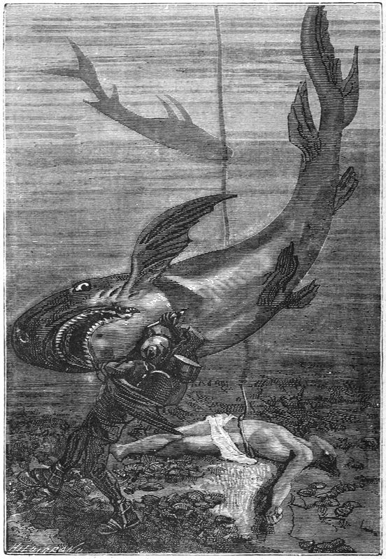
Pela cor negra que marcava a extremidade de suas nadadeiras, reconheci o terrível melanóptero do mar das Índias, da espécie dos tubarões propriamente ditos. Seu comprimento passava de vinte e cinco pés; sua boca enorme ocupava um terço de seu corpo. Era um adulto, o que se via pelas seis fileiras de dentes dispostos em triângulos isósceles na mandíbula superior.
Conseil olhava-o com um interesse todo científico, e tenho certeza de que o classificava, não sem razão, na classe dos cartilaginosos, ordem dos condropterígios de brânquias fixas, família dos seláquios, gênero dos esqualos.
Enquanto eu considerava aquela massa inerte, uma dúzia daqueles vorazes melanópteros apareceu de repente em volta da embarcação; mas, sem se preocupar conosco, lançaram-se sobre o cadáver e disputaram entre si seus pedaços.

Às oito e meia, estávamos de volta a bordo do Nautilus.
Ali, pus-me a refletir sobre os incidentes de nossa excursão ao banco de Manaar. Duas observações se destacavam inevitavelmente. Uma, sobre a audácia sem igual do capitão Nemo; a outra, sobre sua dedicação a um ser humano, um dos representantes daquela raça da qual ele fugia sob os mares. Dissesse ele o que dissesse, aquele homem estranho ainda não conseguira matar inteiramente o seu coração.
Quando lhe fiz essa observação, respondeu-me num tom levemente comovido:
— Aquele indiano, senhor professor, é um habitante do país dos oprimidos, e eu ainda sou, e até meu último suspiro serei, desse país!
Durante o dia 29 de janeiro, a ilha do Ceilão desapareceu sob o horizonte, e o Nautilus, com uma velocidade de vinte milhas por hora, insinuou-se naquele labirinto de canais que separam as Maldivas das Laquedivas. Costeou até a ilha Kittan, terra de origem madrepórica, descoberta por Vasco da Gama em 1499, uma das dezenove principais ilhas desse arquipélago das Laquedivas, situado entre 10° e 14° 30′ de latitude norte e entre 69° e 50° 72′ de longitude leste.
Tínhamos feito então dezesseis mil duzentas e vinte milhas, ou sete mil e quinhentas léguas, desde nosso ponto de partida nos mares do Japão.
No dia seguinte — 30 de janeiro —, quando o Nautilus voltou à superfície do Oceano, já não tinha nenhuma terra à vista. Seguia rumo ao norte-noroeste e dirigia-se para o mar de Omã, cavado entre a Arábia e a península indiana, que serve de saída ao golfo Pérsico.
Era evidentemente um beco sem saída possível. Para onde nos conduzia, então, o capitão Nemo? Eu não saberia dizer. O que não satisfez o canadense, que naquele dia me perguntou para onde íamos.
— Vamos, mestre Ned, aonde nos leva a fantasia do capitão.
— Essa fantasia — respondeu o canadense — não pode nos levar longe. O golfo Pérsico não tem saída e, se entrarmos nele, não tardaremos a voltar sobre nossos passos.
— Pois bem! Voltaremos, mestre Land, e, se depois do golfo Pérsico o Nautilus quiser visitar o mar Vermelho, o estreito de Bab el-Mandeb lá está sempre para lhe dar passagem.
— Não preciso lhe dizer, senhor — respondeu Ned Land —, que o mar Vermelho é tão fechado quanto o golfo, já que o istmo de Suez ainda não foi aberto e, ainda que fosse, um barco misterioso como o nosso não se arriscaria em seus canais cortados de eclusas. Portanto, o mar Vermelho ainda não é o caminho que nos levará de volta à Europa.
— Por isso não disse que voltaríamos à Europa.
— O que supõe, então?
— Suponho que, depois de visitar aquelas curiosas paragens da Arábia e do Egito, o Nautilus descerá de novo o oceano Índico, talvez pelo canal de Moçambique, talvez ao largo das Mascarenhas, de modo a alcançar o cabo da Boa Esperança.
— E, uma vez no cabo da Boa Esperança? — perguntou o canadense com uma insistência toda particular.
— Pois bem, entraremos nesse Atlântico que ainda não conhecemos. Ora essa! Amigo Ned, então está se cansando desta viagem sob os mares? Então já está enfastiado do espetáculo incessantemente variado das maravilhas submarinas? De minha parte, verei com extremo desgosto terminar esta viagem que terá sido dada a tão poucos homens fazer.
— Mas sabe, senhor Aronnax — respondeu o canadense —, que já vai para três meses que estamos aprisionados a bordo deste Nautilus?
— Não, Ned, não sei, não quero saber, e não conto nem os dias nem as horas.
— Mas e a conclusão?
— A conclusão virá a seu tempo. Aliás, nada podemos fazer, e discutimos inutilmente. Se o senhor viesse me dizer, meu bravo Ned: “Oferece-se-nos uma chance de fuga”, eu a discutiria com o senhor. Mas não é o caso e, para lhe falar francamente, não creio que o capitão Nemo se aventure jamais nos mares europeus.
Por esse breve diálogo, ver-se-á que, fanático do Nautilus, eu estava encarnado na pele de seu comandante.
Quanto a Ned Land, terminou a conversa com estas palavras, em forma de monólogo:
— Tudo isso é muito bonito, mas, na minha opinião, onde há constrangimento já não há prazer.
Durante quatro dias, até 3 de fevereiro, o Nautilus visitou o mar de Omã, em diversas velocidades e a diversas profundidades. Parecia andar ao acaso, como se hesitasse quanto à rota a seguir, mas nunca ultrapassou o trópico de Câncer.
Ao deixar esse mar, avistamos por um instante Mascate, a cidade mais importante do país de Omã. Admirei seu aspecto estranho, no meio dos rochedos negros que a cercam e sobre os quais se destacam em branco suas casas e seus fortes. Avistei a cúpula arredondada de suas mesquitas, a ponta elegante de seus minaretes, seus terraços frescos e verdejantes. Mas foi apenas uma visão, e o Nautilus logo afundou sob as ondas escuras daquelas paragens.
Depois costeou, a uma distância de seis milhas, as costas arábicas de Mahra e de Hadramaute e sua linha ondulada de montanhas, realçada por algumas ruínas antigas. Em 5 de fevereiro, entrávamos enfim no golfo de Áden, verdadeiro funil introduzido no gargalo de Bab el-Mandeb, que despeja as águas indianas no mar Vermelho.
Em 6 de fevereiro, o Nautilus flutuava à vista de Áden, empoleirada num promontório que um istmo estreito une ao continente, espécie de Gibraltar inacessível, cujas fortificações os ingleses refizeram depois de se apoderarem dela em 1839. Entrevi os minaretes octogonais dessa cidade que foi outrora o entreposto mais rico e mais comercial da costa, segundo o historiador Edrisi.
Eu acreditava firmemente que o capitão Nemo, chegado a esse ponto, ia voltar para trás; mas enganava-me e, para minha grande surpresa, nada disso aconteceu.
No dia seguinte, 7 de fevereiro, embocávamos no estreito de Bab el-Mandeb, cujo nome quer dizer em língua árabe “a porta das Lágrimas”. Com vinte milhas de largura, tem apenas cinquenta e dois quilômetros de comprimento e, para o Nautilus lançado a toda velocidade, transpô-lo foi questão de uma hora apenas. Mas não vi nada, nem mesmo a ilha de Perim, com a qual o governo britânico fortificou a posição de Áden. Vapores ingleses ou franceses demais, das linhas de Suez a Bombaim, a Calcutá, a Melbourne, a Bourbon, a Maurício, sulcavam aquela passagem estreita para que o Nautilus tentasse mostrar-se ali. Por isso manteve-se prudentemente entre duas águas.
Enfim, ao meio-dia, sulcávamos as ondas do mar Vermelho.
O mar Vermelho, lago célebre das tradições bíblicas, que as chuvas quase não refrescam, que nenhum rio importante rega, que uma evaporação excessiva bombeia incessantemente e que perde a cada ano uma camada líquida de um metro e meio de altura! Golfo singular que, fechado e nas condições de um lago, talvez secasse inteiramente; inferior nisso a seus vizinhos, o Cáspio e o mar Morto, cujo nível só baixou até o ponto em que sua evaporação igualou precisamente a soma das águas recebidas em seu seio.
Esse mar Vermelho tem dois mil e seiscentos quilômetros de comprimento por uma largura média de duzentos e quarenta. No tempo dos Ptolomeus e dos imperadores romanos, foi a grande artéria comercial do mundo, e a abertura do istmo lhe devolverá a antiga importância que as ferrovias de Suez já trouxeram de volta em parte.
Nem quis procurar entender o capricho do capitão Nemo que podia levá-lo a arrastar-nos para aquele golfo. Mas aprovei sem reservas que o Nautilus tivesse entrado nele. Adotou uma marcha média, ora mantendo-se na superfície, ora mergulhando para evitar algum navio, e pude assim observar o interior e a superfície daquele mar tão curioso.
Em 8 de fevereiro, desde as primeiras horas do dia, apareceu-nos Moca, cidade hoje arruinada, cujas muralhas caem ao simples ruído do canhão e que algumas tamareiras verdejantes abrigam aqui e ali. Cidade importante, outrora, que encerrava seis mercados públicos, vinte e seis mesquitas, e à qual seus muros, defendidos por catorze fortes, faziam um cinturão de três quilômetros.
Depois, o Nautilus aproximou-se das margens africanas, onde a profundidade do mar é mais considerável. Ali, entre duas águas de uma limpidez de cristal, pelos painéis abertos, permitiu-nos contemplar admiráveis arbustos de corais resplandecentes e vastos paredões de rochas revestidos de uma esplêndida pelagem verde de algas e fucos. Que espetáculo indescritível, e que variedade de sítios e paisagens ao rés daqueles escolhos e ilhotas vulcânicas que confinam com a costa líbia! Mas onde essas arborizações apareceram em toda a sua beleza foi junto às margens orientais, às quais o Nautilus não tardou a chegar. Foi nas costas de Tihama, pois ali não só aquelas exposições de zoófitos floresciam abaixo do nível do mar, mas formavam também entrelaçamentos pitorescos que se desenrolavam a dez braças acima; estes mais caprichosos, mas menos coloridos que aqueles cujo frescor a úmida vitalidade das águas mantinha.
Quantas horas encantadoras passei assim junto ao vidro do salão! Quantos exemplares novos da flora e da fauna submarinas admirei sob o brilho de nosso farol elétrico! Fungias agariciformes, actínias de cor de ardósia, entre outras o Thalassianthus aster, tubíporos dispostos como flautas, esperando apenas o sopro do deus Pã, conchas próprias daquele mar, que se estabelecem nas escavações madrepóricas e cuja base se enrola em curta espiral, e enfim mil espécimes de um polipeiro que eu ainda não tinha observado, a vulgar esponja.
A classe dos espongiários, primeira do grupo dos pólipos, foi precisamente criada por esse curioso produto, cuja utilidade é incontestável. A esponja não é um vegetal, como ainda admitem alguns naturalistas, mas um animal da última ordem, um polipeiro inferior ao do coral. Sua animalidade não é duvidosa, e não se pode sequer adotar a opinião dos antigos, que a consideravam um ser intermediário entre a planta e o animal. Devo dizer, no entanto, que os naturalistas não estão de acordo quanto ao modo de organização da esponja. Para uns, é um polipeiro; para outros, como o sr. Milne-Edwards, é um indivíduo isolado e único.
A classe dos espongiários contém cerca de trezentas espécies, que se encontram em grande número de mares, e até em certos cursos de água, onde receberam o nome de “fluviais”. Mas suas águas de predileção são as do Mediterrâneo, do arquipélago grego, da costa da Síria e do mar Vermelho. Ali se reproduzem e se desenvolvem aquelas esponjas finas e macias cujo valor chega a cento e cinquenta francos, a esponja loura da Síria, a esponja dura da Berbéria etc. Mas, como eu não podia esperar estudar esses zoófitos nas escalas do Levante, das quais nos separava o intransponível istmo de Suez, contentei-me em observá-los nas águas do mar Vermelho.
Chamei, pois, Conseil para perto de mim, enquanto o Nautilus, a uma profundidade média de oito a nove metros, roçava lentamente todos aqueles belos rochedos da costa oriental.
Ali cresciam esponjas de todas as formas: esponjas pediculadas, foliáceas, globulosas, digitadas. Justificavam com bastante exatidão os nomes de cestos, cálices, rocas, chifres de alce, pata de leão, cauda de pavão, luva de Netuno, que lhes atribuíram os pescadores, mais poetas que os sábios. De seu tecido fibroso, revestido de uma substância gelatinosa semifluida, escapavam incessantemente pequenos filetes de água que, depois de levar a vida a cada célula, eram expulsos dela por um movimento contrátil. Essa substância desaparece após a morte do pólipo e putrefaz-se, desprendendo amoníaco. Só restam então as fibras córneas ou gelatinosas de que se compõe a esponja doméstica, que toma uma tonalidade arruivada e se emprega em usos diversos, conforme seu grau de elasticidade, de permeabilidade ou de resistência à maceração.
Esses polipeiros aderiam às rochas, às conchas dos moluscos e até aos caules das hidrófitas. Guarneciam as menores anfractuosidades, uns estendendo-se, outros erguendo-se ou pendendo como excrescências coralígenas. Ensinei a Conseil que essas esponjas se pescavam de duas maneiras: ou com draga, ou à mão. Este último método, que exige o emprego de mergulhadores, é preferível, pois, respeitando o tecido do polipeiro, deixa-lhe um valor muito superior.
Os outros zoófitos que pululavam junto aos espongiários consistiam principalmente em medusas de uma espécie muito elegante; os moluscos estavam representados por variedades de lulas que, segundo d’Orbigny, são próprias do mar Vermelho, e os répteis por tartarugas virgata, pertencentes ao gênero dos quelônios, que forneceram à nossa mesa um prato sadio e delicado.
Quanto aos peixes, eram numerosos e muitas vezes notáveis. Eis os que as redes do Nautilus traziam mais frequentemente a bordo: raias, entre as quais as limas, de forma oval, cor de tijolo, de corpo semeado de manchas azuis desiguais e reconhecíveis por seu duplo aguilhão denteado; arnaques de dorso prateado; pastinacas de cauda pontilhada; e bocates, vastos mantos de dois metros de comprimento que ondulavam entre as águas; aodontes, absolutamente desprovidos de dentes, espécie de cartilaginosos que se aproximam do esqualo; ostraciões-dromedários, cuja corcova termina num aguilhão recurvado de um pé e meio de comprimento; ofídios, verdadeiras moreias de cauda prateada, dorso azulado, peitorais castanhas orladas de um friso cinzento; fiatolas, espécie de estromateus, listradas de estreitas faixas de ouro e enfeitadas com as três cores da França; blênios-garamites, de quatro decímetros de comprimento; soberbos xaréus, decorados de sete faixas transversais de um belo negro, de nadadeiras azuis e amarelas e de escamas de ouro e prata; centrópodes, salmonetes-auriflamas de cabeça amarela, peixes-papagaio, bodiões, balistas, gobiões etc., e mil outros peixes comuns aos Oceanos que já tínhamos atravessado.
Em 9 de fevereiro, o Nautilus flutuava na parte mais larga do mar Vermelho, compreendida entre Suakin, na costa oeste, e Quonfodah, na costa leste, num diâmetro de cento e noventa milhas.
Naquele dia, ao meio-dia, depois de determinada a posição, o capitão Nemo subiu à plataforma, onde eu me encontrava. Prometi a mim mesmo não deixá-lo descer de novo sem ao menos sondá-lo sobre seus projetos ulteriores. Ele veio até mim assim que me avistou, ofereceu-me graciosamente um charuto e disse-me:
— E então, senhor professor, este mar Vermelho lhe agrada? Observou suficientemente as maravilhas que ele recobre, seus peixes e seus zoófitos, seus canteiros de esponjas e suas florestas de coral? Entreviu as cidades lançadas em suas margens?
— Sim, capitão Nemo — respondi —, e o Nautilus prestou-se maravilhosamente a todo esse estudo. Ah! É um barco inteligente!
— Sim, senhor, inteligente, audacioso e invulnerável! Não teme nem as terríveis tempestades do mar Vermelho, nem suas correntes, nem seus escolhos.
— De fato — disse eu —, este mar é citado entre os piores e, se não me engano, no tempo dos Antigos sua fama era detestável.
— Detestável, senhor Aronnax. Os historiadores gregos e latinos não falam bem dele, e Estrabão diz que é particularmente duro na época dos ventos etésios e na estação das chuvas. O árabe Edrisi, que o descreve sob o nome de golfo de Colzum, conta que os navios pereciam em grande número em seus bancos de areia e que ninguém se arriscava a navegar nele à noite. É, segundo ele, um mar sujeito a furacões medonhos, semeado de ilhas inóspitas, e “que nada oferece de bom”, nem em suas profundezas nem em sua superfície. De fato, essa é a opinião que se encontra em Arriano, Agatárquides e Artemidoro.
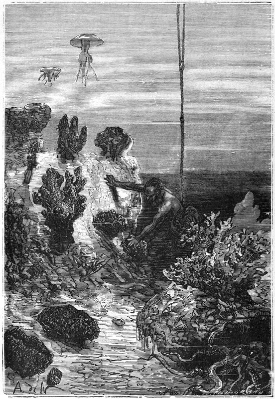
— Bem se vê — repliquei — que esses historiadores não navegaram a bordo do Nautilus.
— De fato — respondeu sorrindo o capitão —, e sob esse aspecto os modernos não estão mais adiantados que os antigos. Foram precisos muitos séculos para encontrar a força mecânica do vapor! Quem sabe se dentro de cem anos se verá um segundo Nautilus! Os progressos são lentos, senhor Aronnax.
— É verdade — respondi —, seu navio está um século, talvez vários, à frente de sua época. Que desgraça que um segredo assim tenha de morrer com seu inventor!
O capitão Nemo não me respondeu. Depois de alguns minutos de silêncio:
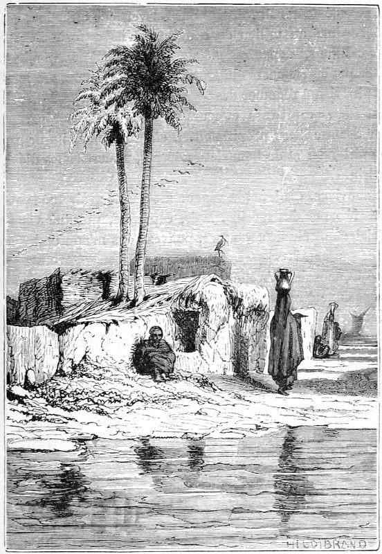
— O senhor me falava — disse ele — da opinião dos antigos historiadores sobre os perigos que a navegação do mar Vermelho oferece?
— É verdade — respondi —, mas seus temores não seriam exagerados?
— Sim e não, senhor Aronnax — respondeu-me o capitão Nemo, que me pareceu conhecer a fundo “o seu mar Vermelho”. — O que já não é perigoso para um navio moderno, bem aparelhado, solidamente construído, senhor de sua direção graças ao obediente vapor, oferecia perigos de toda sorte às embarcações dos antigos. É preciso imaginar aqueles primeiros navegadores aventurando-se em barcas feitas de tábuas costuradas com cordas de palmeira, calafetadas com resina pilada e untadas com gordura de cação. Não tinham sequer instrumentos para determinar sua direção e navegavam por estima no meio de correntes que mal conheciam. Nessas condições, os naufrágios eram, e deviam ser, numerosos. Mas, em nosso tempo, os vapores que fazem o serviço entre Suez e os mares do Sul já nada têm a temer das cóleras deste golfo, a despeito das monções contrárias. Seus capitães e seus passageiros não se preparam para a partida com sacrifícios propiciatórios e, na volta, já não vão, enfeitados de guirlandas e fitas douradas, agradecer aos deuses no templo vizinho.
— Concordo — disse eu —, e o vapor parece-me ter matado a gratidão no coração dos marinheiros. Mas, capitão, já que o senhor parece ter estudado especialmente este mar, pode me dizer qual é a origem de seu nome?
— Existem, senhor Aronnax, numerosas explicações a esse respeito. Quer conhecer a opinião de um cronista do século XIV?
— De bom grado.
— Esse fantasista pretende que o nome lhe foi dado depois da passagem dos israelitas, quando o Faraó pereceu nas ondas que se fecharam à voz de Moisés:
— Explicação de poeta, capitão Nemo — respondi —, mas não poderia contentar-me com ela. Pedirei, pois, a sua opinião pessoal.
— Ei-la. A meu ver, senhor Aronnax, deve-se ver nessa denominação de mar Vermelho uma tradução da palavra hebraica “Edrom”, e, se os antigos lhe deram esse nome, foi por causa da coloração particular de suas águas.
— Até agora, no entanto, só vi ondas límpidas e sem nenhuma tonalidade particular.
— Sem dúvida, mas, avançando para o fundo do golfo, o senhor notará essa aparência singular. Lembro-me de ter visto a baía de Tor inteiramente vermelha, como um lago de sangue.
— E essa cor, o senhor a atribui à presença de uma alga microscópica?
— Sim. É uma matéria mucilaginosa púrpura produzida por aquelas mesquinhas plantinhas conhecidas pelo nome de tricodésmios, das quais são precisas quarenta mil para ocupar o espaço de um milímetro quadrado. Talvez o senhor as encontre quando estivermos em Tor.
— Então, capitão Nemo, não é a primeira vez que o senhor percorre o mar Vermelho a bordo do Nautilus?
— Não, senhor.
— Então, já que o senhor falava há pouco da passagem dos israelitas e da catástrofe dos egípcios, pergunto-lhe se reconheceu sob as águas vestígios desse grande fato histórico?
— Não, senhor professor, e isso por uma excelente razão.
— Qual?
— É que o próprio lugar por onde Moisés passou com todo o seu povo está agora tão assoreado que os camelos mal podem banhar as pernas nele. O senhor compreende que meu Nautilus não teria água suficiente.
— E esse lugar?… — perguntei.
— Esse lugar fica um pouco acima de Suez, naquele braço que formava outrora um estuário profundo, quando o mar Vermelho se estendia até os lagos Amargos. Ora, seja essa passagem milagrosa ou não, os israelitas não deixaram de passar ali para alcançar a Terra Prometida, e o exército do Faraó pereceu precisamente naquele lugar. Penso, pois, que escavações feitas no meio daquelas areias poriam a descoberto grande quantidade de armas e instrumentos de origem egípcia.
— É evidente — respondi —, e é de esperar, para os arqueólogos, que essas escavações se façam mais cedo ou mais tarde, quando novas cidades se estabelecerem nesse istmo, depois da abertura do canal de Suez. Um canal bem inútil para um navio como o Nautilus!
— Sem dúvida, mas útil ao mundo inteiro — disse o capitão Nemo. — Os antigos tinham compreendido bem a utilidade, para seus negócios comerciais, de estabelecer uma comunicação entre o mar Vermelho e o Mediterrâneo; mas não pensaram em cavar um canal direto e tomaram o Nilo como intermediário. Muito provavelmente, o canal que unia o Nilo ao mar Vermelho foi começado sob Sesóstris, a crer na tradição. O que é certo é que, 615 anos antes de Jesus Cristo, Necao empreendeu os trabalhos de um canal alimentado pelas águas do Nilo, através da planície do Egito que olha para a Arábia. Esse canal subia-se em quatro dias, e sua largura era tal que duas trirremes podiam passar nele lado a lado. Foi continuado por Dario, filho de Histaspes, e provavelmente terminado por Ptolomeu II. Estrabão viu-o empregado na navegação; mas a fraqueza de seu declive entre seu ponto de partida, perto de Bubástis, e o mar Vermelho só o tornava navegável durante alguns meses do ano. Esse canal serviu ao comércio até o século dos Antoninos; abandonado, assoreado, depois restabelecido por ordem do califa Omar, foi definitivamente aterrado em 761 ou 762 pelo califa Al-Mansur, que quis impedir que os víveres chegassem a Mohammed-ben-Abdallah, revoltado contra ele. Durante a expedição do Egito, o seu general Bonaparte encontrou os vestígios desses trabalhos no deserto de Suez e, surpreendido pela maré, quase pereceu algumas horas antes de chegar a Hadjaroth, ali mesmo onde Moisés acampara três mil e trezentos anos antes dele.
— Pois bem, capitão, o que os antigos não tinham ousado empreender, essa junção entre os dois mares que encurtará em nove mil quilômetros a rota de Cádis às Índias, o sr. de Lesseps o fez e, dentro em pouco, terá transformado a África numa ilha imensa.
— Sim, senhor Aronnax, e o senhor tem o direito de se orgulhar de seu compatriota. É um homem que honra uma nação mais que os maiores capitães! Começou, como tantos outros, pelos aborrecimentos e pelas recusas, mas triunfou, pois tem o gênio da vontade. E é triste pensar que essa obra, que deveria ter sido uma obra internacional, que teria bastado para ilustrar um reinado, só terá vingado pela energia de um único homem. Portanto, honra ao sr. de Lesseps!
— Sim, honra a esse grande cidadão — respondi, muito surpreso com o tom com que o capitão Nemo acabava de falar.
— Infelizmente — retomou ele —, não posso conduzi-lo através desse canal de Suez, mas o senhor poderá avistar os longos molhes de Port Said depois de amanhã, quando estivermos no Mediterrâneo.
— No Mediterrâneo! — exclamei.
— Sim, senhor professor. Isso o espanta?
— O que me espanta é pensar que estaremos lá depois de amanhã.
— Verdade?
— Sim, capitão, embora eu devesse estar acostumado a não me espantar com nada desde que estou a bordo!
— Mas a propósito de que essa surpresa?
— A propósito da espantosa velocidade que o senhor será forçado a imprimir ao Nautilus, se ele tiver de se encontrar depois de amanhã em pleno Mediterrâneo, tendo dado a volta à África e dobrado o cabo da Boa Esperança!
— E quem lhe diz que ele dará a volta à África, senhor professor? Quem lhe fala em dobrar o cabo da Boa Esperança?
— No entanto, a menos que o Nautilus navegue em terra firme e passe por cima do istmo…
— Ou por baixo, senhor Aronnax.
— Por baixo?
— Sem dúvida — respondeu tranquilamente o capitão Nemo. — Há muito tempo a natureza fez sob essa língua de terra o que os homens fazem hoje em sua superfície.
— O quê! Existiria uma passagem?
— Sim, uma passagem subterrânea que chamei de Arabian Tunnel. Começa abaixo de Suez e termina no golfo de Pelúsio.
— Mas esse istmo não é composto só de areias movediças?
— Até certa profundidade. Mas a apenas cinquenta metros encontra-se uma camada inabalável de rocha.
— E foi por acaso que o senhor descobriu essa passagem? — perguntei, cada vez mais surpreso.
— Acaso e raciocínio, senhor professor, e até mais raciocínio que acaso.
— Capitão, estou ouvindo, mas meu ouvido resiste ao que ouve.
— Ah, senhor! Aures habent et non audient é de todos os tempos. Não só essa passagem existe, como já a aproveitei várias vezes. Sem isso, não me teria aventurado hoje neste beco sem saída do mar Vermelho.
— É indiscreto perguntar-lhe como descobriu esse túnel?
— Senhor — respondeu-me o capitão —, não pode haver segredo algum entre pessoas que não devem mais se separar.
Não reagi à insinuação e esperei o relato do capitão Nemo.
— Senhor professor — disse-me ele —, foi um simples raciocínio de naturalista que me levou a descobrir essa passagem que só eu conheço. Eu notara que no mar Vermelho e no Mediterrâneo existia certo número de peixes de espécies absolutamente idênticas: ofídios, fiatolas, girelas, persegas, peixes-rei, exocetos. Certo desse fato, perguntei-me se não existia comunicação entre os dois mares. Se existisse, a corrente subterrânea devia forçosamente ir do mar Vermelho para o Mediterrâneo, pelo simples efeito da diferença de níveis. Pesquei, pois, grande número de peixes nos arredores de Suez. Passei-lhes na cauda um anel de cobre e devolvi-os ao mar. Alguns meses mais tarde, nas costas da Síria, apanhava de novo alguns exemplares de meus peixes enfeitados com seu anel indicador. A comunicação entre os dois mares estava, pois, demonstrada para mim. Procurei-a com meu Nautilus, descobri-a, aventurei-me por ela e, dentro em pouco, senhor professor, o senhor também terá atravessado meu túnel arábico!
Naquele mesmo dia, relatei a Conseil e a Ned Land a parte daquela conversa que lhes interessava diretamente. Quando lhes disse que, dentro de dois dias, estaríamos no meio das águas do Mediterrâneo, Conseil bateu palmas, mas o canadense deu de ombros.
— Um túnel submarino! — exclamou ele. — Uma comunicação entre os dois mares! Quem já ouviu falar disso?
— Amigo Ned — respondeu Conseil —, você já tinha ouvido falar do Nautilus? Não! E, no entanto, ele existe. Portanto, não dê de ombros tão levianamente e não rejeite as coisas a pretexto de nunca ter ouvido falar delas.
— Veremos! — replicou Ned Land, sacudindo a cabeça. — Afinal, não peço outra coisa senão acreditar na passagem desse capitão, e queira o céu que ele nos leve, de fato, ao Mediterrâneo.
Na mesma tarde, a 21° 30′ de latitude norte, o Nautilus, flutuando à superfície do mar, aproximou-se da costa árabe. Avistei Jidá, importante entreposto do Egito, da Síria, da Turquia e das Índias. Distingui com bastante nitidez o conjunto de suas construções, os navios amarrados ao longo dos cais e aqueles que seu calado obrigava a fundear ao largo. O sol, bastante baixo no horizonte, batia em cheio nas casas da cidade e fazia sobressair sua brancura. Do lado de fora, algumas cabanas de madeira ou de juncos indicavam o bairro habitado pelos beduínos.
Logo Jidá apagou-se nas sombras da tarde, e o Nautilus voltou para debaixo das águas levemente fosforescentes.
No dia seguinte, 10 de fevereiro, apareceram vários navios que corriam em rumo contrário ao nosso. O Nautilus retomou sua navegação submarina; mas, ao meio-dia, no momento de determinar a posição, estando o mar deserto, subiu até sua linha de flutuação.
Acompanhado de Ned e de Conseil, fui sentar-me na plataforma. A costa, a leste, mostrava-se como uma massa apenas esfumada numa névoa úmida.
Apoiados nos flancos do escaler, conversávamos sobre uma coisa e outra quando Ned Land, estendendo a mão para um ponto do mar, disse-me:
— Está vendo alguma coisa ali, senhor professor?
— Não, Ned — respondi —, mas não tenho os seus olhos, o senhor sabe.
— Olhe bem — retomou Ned —, ali, a estibordo, pela proa, mais ou menos na altura do farol! Não vê uma massa que parece se mexer?
— De fato — disse eu, depois de observar atentamente —, avisto como que um longo corpo escuro na superfície das águas.
— Outro Nautilus? — disse Conseil.
— Não — respondeu o canadense —, mas, ou me engano muito, ou aquilo é algum animal marinho.
— Há baleias no mar Vermelho? — perguntou Conseil.
— Sim, meu rapaz — respondi —, encontram-se algumas às vezes.
— Não é uma baleia — retomou Ned Land, que não perdia de vista o objeto assinalado. — As baleias e eu somos velhos conhecidos, e eu não me enganaria com o jeito delas.
— Esperemos — disse Conseil. — O Nautilus vai para aquele lado e, dentro em pouco, saberemos o que pensar.
De fato, aquele objeto escuro logo estava a apenas uma milha de nós. Parecia um grande escolho encalhado em pleno mar. O que era? Eu ainda não podia me pronunciar.
— Ah! Ele anda! Ele mergulha! — exclamou Ned Land. — Mil diabos! Que animal pode ser esse? Não tem a cauda bifurcada como as baleias ou os cachalotes, e suas nadadeiras parecem membros truncados.
— Mas então… — fiz eu.
— Bom — retomou o canadense —, aí está ele de costas, e levanta as mamas para o ar!
— É uma sereia — exclamou Conseil —, uma verdadeira sereia, com a licença do senhor.
Esse nome de sereia pôs-me na pista, e compreendi que aquele animal pertencia àquela ordem de seres marinhos da qual a fábula fez as sereias, metade mulheres e metade peixes.
— Não — disse eu a Conseil —, não é uma sereia, mas um ser curioso do qual restam apenas alguns exemplares no mar Vermelho. É um dugongo.
— Ordem dos sirênios, grupo dos pisciformes, subclasse dos monodélfios, classe dos mamíferos, ramo dos vertebrados — respondeu Conseil.
E, quando Conseil falava assim, não havia mais nada a dizer.
Enquanto isso, Ned Land continuava a olhar. Seus olhos brilhavam de cobiça à vista daquele animal. Sua mão parecia pronta a arpoá-lo. Dir-se-ia que esperava o momento de se lançar ao mar para atacá-lo em seu elemento.
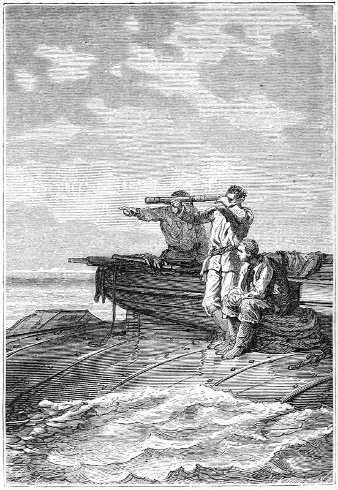
— Oh! Senhor — disse-me ele, com a voz trêmula de emoção —, nunca matei “isso”.
O arpoador inteiro estava nessa palavra.
Nesse instante, o capitão Nemo apareceu na plataforma. Avistou o dugongo. Compreendeu a atitude do canadense e, dirigindo-se diretamente a ele:
— Se o senhor tivesse um arpão, mestre Land, ele não lhe queimaria a mão?
— Como o senhor diz.
— E não lhe desagradaria retomar por um dia seu ofício de pescador e acrescentar este cetáceo à lista dos que o senhor já atingiu?
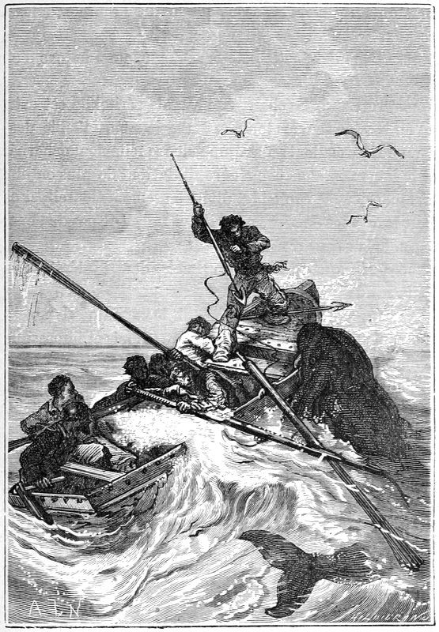
— Não me desagradaria nada.
— Pois bem, pode tentar.
— Obrigado, senhor — respondeu Ned Land, cujos olhos se inflamaram.
— Só que — retomou o capitão — aconselho-o a não errar este animal, e isso em seu próprio interesse.
— Esse dugongo é perigoso de atacar? — perguntei, apesar do dar de ombros do canadense.
— Sim, às vezes — respondeu o capitão. — Esse animal volta-se contra seus assaltantes e vira sua embarcação. Mas, para mestre Land, esse perigo não é de temer. Seu golpe de vista é rápido, seu braço é seguro. Se lhe recomendo não errar este dugongo, é porque ele é considerado, com justiça, uma caça fina, e sei que mestre Land não detesta os bons bocados.
— Ah! — fez o canadense. — Então esse bicho também se dá ao luxo de ser bom para comer?
— Sim, mestre Land. Sua carne, uma carne de verdade, é extremamente apreciada, e em toda a Malásia é reservada à mesa dos príncipes. Por isso faz-se a esse excelente animal uma caça tão encarniçada que, como o peixe-boi, seu congênere, ele se torna cada vez mais raro.
— Então, senhor capitão — disse seriamente Conseil —, se por acaso este fosse o último de sua raça, não conviria poupá-lo, no interesse da ciência?
— Talvez — replicou o canadense —, mas, no interesse da cozinha, é melhor caçá-lo.
— Faça, pois, mestre Land — respondeu o capitão Nemo.
Nesse momento, sete homens da tripulação, mudos e impassíveis como sempre, subiram à plataforma. Um trazia um arpão e uma linha semelhante às que os pescadores de baleias empregam. O escaler foi destampado, arrancado de seu alvéolo, lançado ao mar. Seis remadores tomaram lugar em seus bancos, e o patrão pôs-se ao leme. Ned, Conseil e eu sentamo-nos na popa.
— O senhor não vem, capitão? — perguntei.
— Não, senhor, mas desejo-lhes uma boa caçada.
O escaler afastou-se do costado e, impelido por seus seis remos, dirigiu-se rapidamente para o dugongo, que flutuava então a duas milhas do Nautilus.
Chegando a algumas amarras do cetáceo, diminuiu a marcha, e os remos mergulharam sem ruído nas águas tranquilas. Ned Land, de arpão na mão, foi postar-se de pé na proa do escaler. O arpão que serve para atingir a baleia costuma estar preso a uma corda muito comprida, que se desenrola rapidamente quando o animal ferido a arrasta consigo. Mas aqui a corda não media mais que umas dez braças, e sua extremidade estava apenas amarrada a um pequeno barril que, flutuando, devia indicar a marcha do dugongo sob as águas.
Eu me levantara e observava distintamente o adversário do canadense. Aquele dugongo, que também tem o nome de halicore, parecia-se muito com o peixe-boi. Seu corpo oblongo terminava numa caudal muito alongada, e suas nadadeiras laterais em verdadeiros dedos. Diferia do peixe-boi por ter a mandíbula superior armada de dois dentes longos e pontudos, que formavam de cada lado presas divergentes.
O dugongo que Ned Land se preparava para atacar tinha dimensões colossais, e seu comprimento passava de pelo menos sete metros. Não se mexia e parecia dormir na superfície das ondas, circunstância que tornava sua captura mais fácil.
O escaler aproximou-se prudentemente até três braças do animal. Os remos ficaram suspensos em suas forquetas. Ergui-me pela metade. Ned Land, com o corpo um pouco inclinado para trás, brandia o arpão com mão experiente.
De repente, ouviu-se um silvo, e o dugongo desapareceu. O arpão, lançado com força, só atingira a água, sem dúvida.
— Mil diabos! — exclamou o canadense, furioso. — Errei!
— Não — disse eu —, o animal está ferido, eis o sangue dele, mas a sua arma não ficou cravada no corpo.
— Meu arpão! Meu arpão! — gritou Ned Land.
Os marinheiros voltaram a remar, e o patrão dirigiu a embarcação para o barril flutuante. Recuperado o arpão, o escaler pôs-se a perseguir o animal.
Este voltava de vez em quando à superfície do mar para respirar. O ferimento não o enfraquecera, pois fugia com extrema rapidez. A embarcação, manobrada por braços vigorosos, voava em seu encalço. Várias vezes chegou a algumas braças dele, e o canadense mantinha-se pronto para golpear; mas o dugongo esquivava-se com um mergulho súbito, e era impossível alcançá-lo.
Imagine-se a cólera que excitava o impaciente Ned Land. Ele lançava ao infeliz animal os mais enérgicos palavrões da língua inglesa. De minha parte, eu ainda estava apenas despeitado de ver o dugongo frustrar todas as nossas astúcias.
Perseguiram-no sem descanso durante uma hora, e eu começava a crer que seria muito difícil apoderar-se dele quando o animal foi tomado por uma infeliz ideia de vingança da qual teve de se arrepender. Voltou-se contra o escaler para assaltá-lo por sua vez.
Essa manobra não escapou ao canadense.
— Atenção! — disse ele.
O patrão pronunciou algumas palavras em sua língua bizarra e, sem dúvida, preveniu seus homens para que ficassem de sobreaviso.
O dugongo, chegando a vinte pés do escaler, parou, aspirou bruscamente o ar com suas vastas narinas, abertas não na extremidade, mas na parte superior do focinho. Depois, tomando impulso, precipitou-se sobre nós.
O escaler não pôde evitar o choque; meio virado, embarcou uma ou duas toneladas de água, que foi preciso esvaziar; mas, graças à habilidade do patrão, abordado de lado e não de frente, não soçobrou. Ned Land, agarrado à roda de proa, crivava de golpes de arpão o gigantesco animal, que, com os dentes cravados na borda, erguia a embarcação fora da água como um leão faz com um cabrito. Estávamos caídos uns por cima dos outros, e não sei bem como teria terminado a aventura se o canadense, sempre encarniçado contra o bicho, não o tivesse enfim atingido no coração.
Ouvi o ranger dos dentes na chapa, e o dugongo desapareceu, arrastando o arpão consigo. Mas logo o barril voltou à superfície e, poucos instantes depois, apareceu o corpo do animal, virado de costas. O escaler alcançou-o, tomou-o a reboque e dirigiu-se para o Nautilus.
Foi preciso empregar talhas de grande potência para içar o dugongo para a plataforma. Pesava cinco mil quilogramas. Foi esquartejado sob os olhos do canadense, que fazia questão de acompanhar todos os detalhes da operação. No mesmo dia, o steward serviu-me ao jantar algumas fatias daquela carne, habilmente preparada pelo cozinheiro de bordo. Achei-a excelente, e até superior à de vitela, se não à de boi.
No dia seguinte, 11 de fevereiro, a copa do Nautilus enriqueceu-se ainda com uma caça delicada. Um bando de andorinhas-do-mar abateu-se sobre o Nautilus. Era uma espécie de Sterna nilotica, própria do Egito, de bico preto, cabeça cinzenta e pontilhada, olho rodeado de pontos brancos, dorso, asas e cauda acinzentados, ventre e garganta brancos, patas vermelhas. Apanharam-se também algumas dúzias de patos do Nilo, aves selvagens de sabor apurado, cujo pescoço e alto da cabeça são brancos e salpicados de preto.
A velocidade do Nautilus era então moderada. Avançava passeando, por assim dizer. Observei que a água do mar Vermelho se tornava cada vez menos salgada à medida que nos aproximávamos de Suez.
Por volta das cinco horas da tarde, avistávamos ao norte o cabo Ras Mohammed. É esse cabo que forma a extremidade da Arábia Pétrea, compreendida entre o golfo de Suez e o golfo de Ácaba.
O Nautilus penetrou no estreito de Jubal, que conduz ao golfo de Suez. Avistei distintamente uma alta montanha que dominava, entre os dois golfos, o Ras Mohammed. Era o monte Horeb, aquele Sinai em cujo cume Moisés viu Deus face a face, e que o espírito imagina incessantemente coroado de relâmpagos.
Às seis horas, o Nautilus, ora flutuando, ora imerso, passava ao largo de Tor, assentada no fundo de uma baía cujas águas pareciam tingidas de vermelho, observação já feita pelo capitão Nemo. Depois, fez-se a noite, no meio de um pesado silêncio que rompiam às vezes o grito do pelicano e de algumas aves noturnas, o ruído da ressaca irritada pelas rochas ou o gemido distante de um vapor batendo as águas do golfo com suas pás sonoras.
Das oito às nove horas, o Nautilus permaneceu a alguns metros sob as águas. Segundo meus cálculos, devíamos estar muito perto de Suez. Através dos painéis do salão, eu avistava fundos de rochas vivamente iluminados por nossa luz elétrica. Parecia-me que o estreito se estreitava cada vez mais.
Às nove e quinze, tendo o barco voltado à superfície, subi à plataforma. Muito impaciente por atravessar o túnel do capitão Nemo, não conseguia ficar quieto e procurava respirar o ar fresco da noite.
Logo, na sombra, avistei uma luz pálida, meio descorada pela bruma, que brilhava a uma milha de nós.
— Um farol flutuante — disse alguém perto de mim.
Voltei-me e reconheci o capitão.
— É o farol flutuante de Suez — retomou ele. — Não tardaremos a alcançar a entrada do túnel.
— A entrada não deve ser fácil?
— Não, senhor. Por isso tenho o costume de me manter na cabine do timoneiro para dirigir eu mesmo a manobra. E agora, se o senhor quiser descer, senhor Aronnax, o Nautilus vai afundar sob as ondas e só voltará à superfície depois de ter atravessado o Arabian Tunnel.
Segui o capitão Nemo. A escotilha fechou-se, os reservatórios de água encheram-se, e o aparelho submergiu uns dez metros.
No momento em que me dispunha a voltar a meu quarto, o capitão deteve-me.
— Senhor professor — disse-me —, gostaria de me acompanhar à cabine do piloto?
— Não ousava pedir-lhe — respondi.
— Venha, então. Verá assim tudo o que se pode ver desta navegação ao mesmo tempo subterrânea e submarina.
O capitão Nemo conduziu-me para a escada central. A meio caminho, abriu uma porta, seguiu pelos corredores superiores e chegou à cabine do piloto, que, como se sabe, se erguia na extremidade da plataforma.
Era uma cabine de seis pés em cada face, mais ou menos semelhante às que ocupam os timoneiros dos vapores do Mississippi ou do Hudson. No meio manobrava-se uma roda disposta verticalmente, engrenada nos cabos do leme, que corriam até a popa do Nautilus. Quatro vigias de vidros lenticulares, abertas nas paredes da cabine, permitiam ao timoneiro olhar em todas as direções.
A cabine estava escura; mas logo meus olhos se acostumaram àquela escuridão, e avistei o piloto, um homem vigoroso, cujas mãos se apoiavam nos aros da roda. Lá fora, o mar aparecia vivamente iluminado pelo farol, que irradiava atrás da cabine, na outra extremidade da plataforma.
— Agora — disse o capitão Nemo —, procuremos nossa passagem.
Fios elétricos ligavam a cabine do timoneiro à casa das máquinas, e dali o capitão podia comunicar simultaneamente a seu Nautilus a direção e o movimento. Pressionou um botão de metal e, imediatamente, a velocidade da hélice foi muito reduzida.
Eu olhava em silêncio a alta muralha, muito escarpada, que costeávamos naquele momento, base inabalável do maciço arenoso da costa. Seguimo-la assim durante uma hora, a apenas alguns metros de distância. O capitão Nemo não tirava os olhos da bússola suspensa na cabine por seus dois círculos concêntricos. A um simples gesto, o timoneiro modificava a cada instante a direção do Nautilus.
Eu me colocara junto à vigia de bombordo e avistava magníficas subestruturas de corais, zoófitos, algas e crustáceos agitando suas patas enormes, que se estendiam para fora das anfractuosidades da rocha.
Às dez e quinze, o capitão Nemo tomou ele mesmo o leme. Uma larga galeria, negra e profunda, abria-se diante de nós. O Nautilus precipitou-se nela ousadamente. Um rumor insólito fez-se ouvir em seus flancos. Eram as águas do mar Vermelho que o declive do túnel precipitava para o Mediterrâneo. O Nautilus seguia a torrente, rápido como uma flecha, apesar dos esforços de sua máquina, que, para resistir, batia as ondas com a hélice invertida.
Nas paredes estreitas da passagem, eu já só via riscos brilhantes, linhas retas, sulcos de fogo traçados pela velocidade sob o brilho da eletricidade. Meu coração palpitava, e eu o comprimia com a mão.
Às dez e trinta e cinco, o capitão Nemo largou a roda do leme e, voltando-se para mim:
— O Mediterrâneo — disse-me.
Em menos de vinte minutos, o Nautilus, arrastado por aquela torrente, acabava de atravessar o istmo de Suez.
No dia seguinte, 12 de fevereiro, ao nascer do dia, o Nautilus voltou à superfície das ondas. Precipitei-me para a plataforma. A três milhas ao sul desenhava-se a vaga silhueta de Pelúsio. Uma torrente levara-nos de um mar ao outro. Mas aquele túnel, fácil de descer, devia ser impraticável de subir.
Por volta das sete horas, Ned e Conseil vieram ter comigo. Aqueles dois companheiros inseparáveis tinham dormido tranquilamente, sem se preocupar de outro modo com as proezas do Nautilus.
— E então, senhor naturalista — perguntou o canadense num tom levemente zombeteiro —, e esse Mediterrâneo?
— Flutuamos em sua superfície, amigo Ned.
— Hein! — fez Conseil. — Esta noite mesmo?…
— Sim, esta noite mesmo, em poucos minutos, atravessamos esse istmo intransponível.
— Não acredito — respondeu o canadense.
— E faz mal, mestre Land — retomei. — Essa costa baixa que se arredonda para o sul é a costa egípcia.
— Conte isso a outro, senhor — replicou o teimoso canadense.
— Mas, já que o senhor o afirma — disse-lhe Conseil —, é preciso acreditar no senhor.
— Aliás, Ned, o capitão Nemo fez-me as honras de seu túnel, e eu estava ao lado dele, na cabine do timoneiro, enquanto ele mesmo dirigia o Nautilus através daquela passagem estreita.
— Está ouvindo, Ned? — disse Conseil.
— E o senhor, que tem olhos tão bons — acrescentei —, pode avistar, Ned, os molhes de Port Said que se estendem pelo mar.
O canadense olhou atentamente.
— De fato — disse ele —, o senhor tem razão, senhor professor, e o seu capitão é um homem de mão-cheia. Estamos no Mediterrâneo. Bom. Conversemos, então, por favor, sobre os nossos assuntos, mas de modo que ninguém nos possa ouvir.
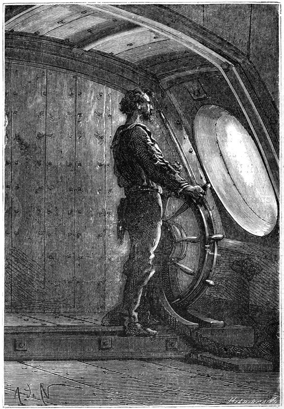
Vi bem aonde o canadense queria chegar. Em todo caso, pensei que era melhor conversar, já que ele o desejava, e fomos os três sentar-nos perto do farol, onde estávamos menos expostos a receber os borrifos úmidos das vagas.
— Agora, Ned, estamos ouvindo — disse eu. — O que tem a nos dizer?
— O que tenho a dizer é muito simples — respondeu o canadense. — Estamos na Europa e, antes que os caprichos do capitão Nemo nos arrastem até o fundo dos mares polares ou nos levem de volta à Oceania, peço para deixar o Nautilus.
Confesso que essa discussão com o canadense sempre me embaraçava. Não queria de modo algum entravar a liberdade de meus companheiros e, no entanto, não sentia desejo algum de deixar o capitão Nemo. Graças a ele, graças a seu aparelho, eu completava a cada dia meus estudos submarinos e refazia meu livro sobre os fundos submarinos no meio de seu próprio elemento. Encontraria jamais uma ocasião igual de observar as maravilhas do Oceano? Certamente não! Não podia, pois, acostumar-me à ideia de abandonar o Nautilus antes de completado o nosso ciclo de investigações.

— Amigo Ned — disse eu —, responda-me francamente. Está entediado a bordo? Lamenta que o destino o tenha lançado nas mãos do capitão Nemo?
O canadense ficou alguns instantes sem responder. Depois, cruzando os braços:
— Francamente — disse ele —, não lamento esta viagem sob os mares. Ficarei contente de tê-la feito; mas, para tê-la feito, é preciso que ela termine. Eis o que sinto.
— Ela terminará, Ned.
— Onde e quando?
— Onde? Não sei. Quando? Não posso dizer, ou antes, suponho que terminará quando esses mares não tiverem mais nada a nos ensinar. Tudo o que começou tem forçosamente um fim neste mundo.
— Penso como o senhor — respondeu Conseil —, e é bem possível que, depois de percorrer todos os mares do globo, o capitão Nemo nos mande embora a todos três.
— Mande embora! — exclamou o canadense. — Mande pelos ares, você quer dizer?
— Não exageremos, mestre Land — retomei. — Nada temos a temer do capitão, mas tampouco partilho as ideias de Conseil. Somos senhores dos segredos do Nautilus, e não espero que seu comandante, para nos devolver a liberdade, se resigne a vê-los correr o mundo conosco.
— Mas então, o que espera? — perguntou o canadense.
— Que surjam circunstâncias de que possamos, de que devamos aproveitar, tanto daqui a seis meses quanto agora.
— Ora! — fez Ned Land. — E onde estaremos daqui a seis meses, por favor, senhor naturalista?
— Talvez aqui, talvez na China. O senhor sabe, o Nautilus é rápido. Atravessa os oceanos como uma andorinha atravessa os ares, ou um expresso os continentes. Não teme os mares frequentados. Quem nos diz que não vai rumar para as costas da França, da Inglaterra ou da América, onde uma fuga poderá ser tentada com tanta vantagem quanto aqui?
— Senhor Aronnax — respondeu o canadense —, seus argumentos pecam pela base. O senhor fala no futuro: “Estaremos lá! Estaremos aqui!” Eu falo no presente: “Estamos aqui, e é preciso aproveitar.”
Eu estava acuado pela lógica de Ned Land e sentia-me batido nesse terreno. Já não sabia que argumentos fazer valer a meu favor.
— Senhor — retomou Ned —, suponhamos, por impossível que seja, que o capitão Nemo lhe ofereça hoje mesmo a liberdade. O senhor aceitaria?
— Não sei — respondi.
— E se ele acrescentar que essa oferta que lhe faz hoje não a renovará mais tarde, o senhor aceitaria?
Não respondi.
— E o que pensa disso o amigo Conseil? — perguntou Ned Land.
— O amigo Conseil — respondeu tranquilamente aquele digno rapaz —, o amigo Conseil não tem nada a dizer. Está absolutamente desinteressado da questão. Assim como seu patrão, assim como seu camarada Ned, é solteiro. Nem mulher, nem pais, nem filhos o esperam na terra natal. Está a serviço do senhor, pensa como o senhor, fala como o senhor e, para seu grande pesar, não se deve contar com ele para formar uma maioria. Só duas pessoas estão em presença: o senhor de um lado, Ned Land do outro. Dito isso, o amigo Conseil escuta e está pronto para marcar os pontos.
Não pude deixar de sorrir ao ver Conseil anular tão completamente sua personalidade. No fundo, o canadense devia estar encantado de não tê-lo contra si.
— Então, senhor — disse Ned Land —, já que Conseil não existe, discutamos só entre nós dois. Eu falei, o senhor me ouviu. O que tem a responder?
Era evidentemente preciso concluir, e os subterfúgios me repugnavam.
— Amigo Ned — disse eu —, eis a minha resposta. O senhor tem razão contra mim, e meus argumentos não se sustentam diante dos seus. Não se deve contar com a boa vontade do capitão Nemo. A prudência mais elementar o proíbe de nos pôr em liberdade. Em compensação, a prudência quer que aproveitemos a primeira ocasião de deixar o Nautilus.
— Bem, senhor Aronnax, isso é que é falar com sensatez.
— Só que — disse eu — uma observação, uma só. É preciso que a ocasião seja séria. É preciso que nossa primeira tentativa de fuga dê certo; pois, se falhar, não encontraremos ocasião de repeti-la, e o capitão Nemo não nos perdoará.
— Tudo isso é justo — respondeu o canadense. — Mas sua observação se aplica a toda tentativa de fuga, quer ocorra daqui a dois anos ou daqui a dois dias. Portanto, a questão é sempre esta: se uma ocasião favorável se apresentar, é preciso agarrá-la.
— De acordo. E agora, Ned, vai me dizer o que entende por ocasião favorável?
— Seria aquela que, numa noite escura, trouxesse o Nautilus a pouca distância de uma costa europeia.
— E o senhor tentaria salvar-se a nado?
— Sim, se estivéssemos suficientemente perto de uma margem e se o navio flutuasse na superfície. Não, se estivéssemos longe e se o navio navegasse debaixo da água.
— E nesse caso?
— Nesse caso, eu procuraria apoderar-me do escaler. Sei como se manobra. Entraríamos nele e, tirados os parafusos, subiríamos à superfície, sem que o timoneiro, colocado na proa, percebesse nossa fuga.
— Bem, Ned. Espreite, pois, essa ocasião; mas não se esqueça de que um fracasso nos perderia.
— Não esquecerei, senhor.
— E agora, Ned, quer conhecer todo o meu pensamento sobre o seu projeto?
— De bom grado, senhor Aronnax.
— Pois bem, penso, não digo espero, penso que essa ocasião favorável não se apresentará.
— Por quê?
— Porque o capitão Nemo não pode ignorar que não renunciamos à esperança de recobrar a liberdade, e ficará de sobreaviso, sobretudo nos mares e à vista das costas europeias.
— Sou da opinião do senhor — disse Conseil.
— Veremos — respondeu Ned Land, que sacudia a cabeça com ar determinado.
— E agora, Ned Land — acrescentei —, fiquemos por aqui. Nem mais uma palavra sobre tudo isso. No dia em que estiver pronto, o senhor nos avisará e nós o seguiremos. Confio inteiramente no senhor.
Essa conversa, que devia ter mais tarde consequências tão graves, terminou assim. Devo dizer agora que os fatos pareceram confirmar minhas previsões, para grande desespero do canadense. O capitão Nemo desconfiava de nós naqueles mares frequentados ou queria apenas furtar-se à vista dos numerosos navios de todas as nações que sulcam o Mediterrâneo? Não sei, mas manteve-se na maior parte do tempo entre duas águas e ao largo das costas. Ou o Nautilus emergia, deixando aparecer apenas a cabine do timoneiro, ou ia a grandes profundidades, pois entre o arquipélago grego e a Ásia Menor não encontrávamos o fundo a dois mil metros.
Assim, só tive conhecimento da ilha de Cárpatos, uma das Espórades, por este verso de Virgílio que o capitão Nemo me citou, pondo o dedo sobre um ponto do planisfério:
Era, de fato, a antiga morada de Proteu, o velho pastor dos rebanhos de Netuno, hoje a ilha de Scarpanto, situada entre Rodes e Creta. Só vi seus alicerces graníticos através do vidro do salão.
No dia seguinte, 14 de fevereiro, resolvi empregar algumas horas no estudo dos peixes do Arquipélago; mas, por um motivo qualquer, os painéis permaneceram hermeticamente fechados. Verificando a direção do Nautilus, notei que ele seguia para Cândia, a antiga ilha de Creta. No momento em que eu embarcara na Abraham Lincoln, essa ilha acabava de se insurgir inteira contra o despotismo turco. Mas o que acontecera a essa insurreição desde então eu ignorava absolutamente, e não era o capitão Nemo, privado de toda comunicação com a terra, quem poderia me dizer.
Não fiz, pois, nenhuma alusão a esse acontecimento quando, à noite, me encontrei sozinho com ele no salão. Aliás, pareceu-me taciturno, preocupado. Depois, contrariamente a seus hábitos, mandou abrir os dois painéis do salão e, indo de um ao outro, observou atentamente a massa das águas. Com que fim? Eu não podia adivinhar e, de minha parte, empreguei meu tempo em estudar os peixes que passavam diante de meus olhos.
Entre outros, notei aqueles gobiões-áfias, citados por Aristóteles e vulgarmente conhecidos pelo nome de “lochas-do-mar”, que se encontram particularmente nas águas salgadas vizinhas do delta do Nilo. Perto deles desenrolavam-se pargos meio fosforescentes, espécie de esparídeos que os egípcios classificavam entre os animais sagrados e cuja chegada às águas do rio, cujo fecundo transbordamento anunciavam, era festejada com cerimônias religiosas. Notei igualmente queilinas de três decímetros de comprimento, peixes ósseos de escamas transparentes, cuja cor lívida é misturada de manchas vermelhas; são grandes comedores de vegetais marinhos, o que lhes dá um gosto delicioso; por isso essas queilinas eram muito procuradas pelos gastrônomos da antiga Roma, e suas entranhas, preparadas com ovas de moreia, miolos de pavão e línguas de flamingo, compunham aquele prato divino que deliciava Vitélio.
Outro habitante daqueles mares chamou minha atenção e trouxe a meu espírito todas as lembranças da Antiguidade. Foi a rêmora, que viaja presa à barriga dos tubarões; segundo os antigos, esse pequeno peixe, agarrado à quilha de um navio, podia detê-lo em sua marcha, e um deles, retendo o navio de Antônio durante a batalha de Áccio, facilitou assim a vitória de Augusto. De que dependem os destinos das nações! Observei igualmente admiráveis ântias, que pertencem à ordem dos lutjanídeos, peixes sagrados para os gregos, que lhes atribuíam o poder de expulsar os monstros marinhos das águas que frequentavam; seu nome significa flor, e eles o justificavam por suas cores cambiantes, seus matizes compreendidos na gama do vermelho, desde a palidez do rosa até o brilho do rubi, e os reflexos fugidios que chamalotavam sua nadadeira dorsal. Meus olhos não conseguiam desprender-se daquelas maravilhas do mar quando foram atingidos de repente por uma aparição inesperada.
No meio das águas, apareceu um homem, um mergulhador que levava à cintura uma bolsa de couro. Não era um corpo abandonado às ondas. Era um homem vivo, que nadava com mão vigorosa, desaparecendo às vezes para ir respirar à superfície e mergulhando de novo imediatamente.
Voltei-me para o capitão Nemo e, com voz comovida:
— Um homem! Um náufrago! — exclamei. — É preciso salvá-lo a todo custo!
O capitão não me respondeu e veio apoiar-se no vidro.
O homem aproximara-se e, com o rosto colado ao painel, olhava-nos.
Para minha profunda estupefação, o capitão Nemo fez-lhe um sinal. O mergulhador respondeu-lhe com a mão, subiu imediatamente para a superfície do mar e não reapareceu mais.
— Não se preocupe — disse-me o capitão. — É Nicolau, do cabo Matapan, apelidado o Pesce. É muito conhecido em todas as Cíclades. Um mergulhador ousado! A água é seu elemento, e ele vive mais nela do que em terra, indo sem cessar de uma ilha a outra e até Creta.
— O senhor o conhece, capitão?
— Por que não, senhor Aronnax?
Dito isso, o capitão Nemo dirigiu-se para um móvel colocado perto do painel esquerdo do salão. Junto desse móvel, vi um cofre cintado de ferro, cuja tampa trazia, numa placa de cobre, a cifra do Nautilus com sua divisa Mobilis in mobile.
Nesse momento, o capitão, sem se preocupar com minha presença, abriu o móvel, espécie de cofre-forte que encerrava grande número de lingotes.
Eram lingotes de ouro. De onde vinha aquele metal precioso, que representava uma soma enorme? Onde o capitão recolhia aquele ouro, e o que ia fazer com este?
Não pronunciei uma palavra. Olhei. O capitão Nemo pegou um a um os lingotes e arrumou-os metodicamente no cofre, que encheu por completo. Calculei que contivesse então mais de mil quilogramas de ouro, isto é, perto de cinco milhões de francos.
O cofre foi solidamente fechado, e o capitão escreveu em sua tampa um endereço em caracteres que deviam pertencer ao grego moderno.
Feito isso, o capitão Nemo pressionou um botão cujo fio correspondia ao posto da tripulação. Apareceram quatro homens que, não sem esforço, empurraram o cofre para fora do salão. Depois, ouvi que o içavam por meio de talhas pela escada de ferro.
Nesse momento, o capitão Nemo voltou-se para mim:
— E o senhor dizia, senhor professor? — perguntou-me.
— Não dizia nada, capitão.
— Então, senhor, permita-me desejar-lhe boa noite.
E, com isso, o capitão Nemo deixou o salão.
Voltei a meu quarto muito intrigado, como se pode imaginar. Tentei em vão dormir. Procurava uma relação entre o aparecimento daquele mergulhador e aquele cofre cheio de ouro. Logo senti, por certos movimentos de balanço e de arfagem, que o Nautilus, deixando as camadas inferiores, voltava à superfície das águas.
Depois, ouvi um ruído de passos na plataforma. Compreendi que soltavam o escaler, que o lançavam ao mar. Ele bateu um instante contra os flancos do Nautilus, e todo ruído cessou.
Duas horas depois, o mesmo ruído, as mesmas idas e vindas se reproduziam. A embarcação, içada a bordo, era reajustada em seu alvéolo, e o Nautilus mergulhava de novo sob as ondas.
Assim, aqueles milhões tinham sido transportados a seu destino. Para que ponto do continente? Quem era o correspondente do capitão Nemo?
No dia seguinte, contei a Conseil e ao canadense os acontecimentos daquela noite, que excitavam minha curiosidade ao mais alto grau. Meus companheiros não ficaram menos surpresos que eu.
— Mas onde ele arranja esses milhões? — perguntou Ned Land.
A isso, nenhuma resposta possível. Dirigi-me ao salão depois do almoço e pus-me a trabalhar. Até as cinco horas da tarde, redigi minhas notas. Nesse momento, deveria atribuí-lo a uma disposição pessoal?, senti um calor extremo e tive de tirar minha roupa de bisso. Efeito incompreensível, pois não estávamos em latitudes tórridas e, aliás, o Nautilus, submerso, não devia sofrer nenhuma elevação de temperatura. Olhei o manômetro. Marcava uma profundidade de sessenta pés, à qual o calor atmosférico não poderia chegar.
Continuei meu trabalho, mas a temperatura elevou-se a ponto de se tornar intolerável.
“Haverá fogo a bordo?”, perguntei a mim mesmo.
Ia deixar o salão quando o capitão Nemo entrou. Aproximou-se do termômetro, consultou-o e, voltando-se para mim:
— Quarenta e dois graus — disse ele.
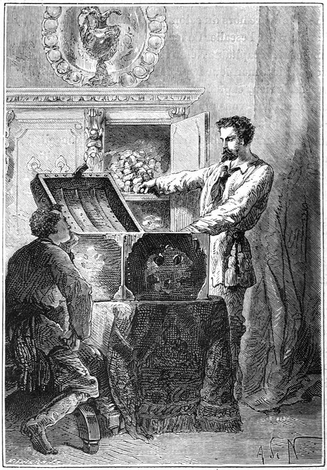
— Estou percebendo, capitão — respondi —, e, por pouco que este calor aumente, não poderemos suportá-lo.
— Oh! Senhor professor, este calor só aumentará se quisermos.
— O senhor pode então moderá-lo à vontade?
— Não, mas posso afastar-me do foco que o produz.
— Então é exterior?
— Sem dúvida. Flutuamos numa corrente de água fervente.
— Será possível? — exclamei.
— Olhe.
Os painéis abriram-se, e vi o mar inteiramente branco em volta do Nautilus. Uma fumaça de vapores sulfurosos desenrolava-se no meio das ondas, que borbulhavam como a água de uma caldeira. Apoiei a mão num dos vidros, mas o calor era tal que tive de retirá-la.
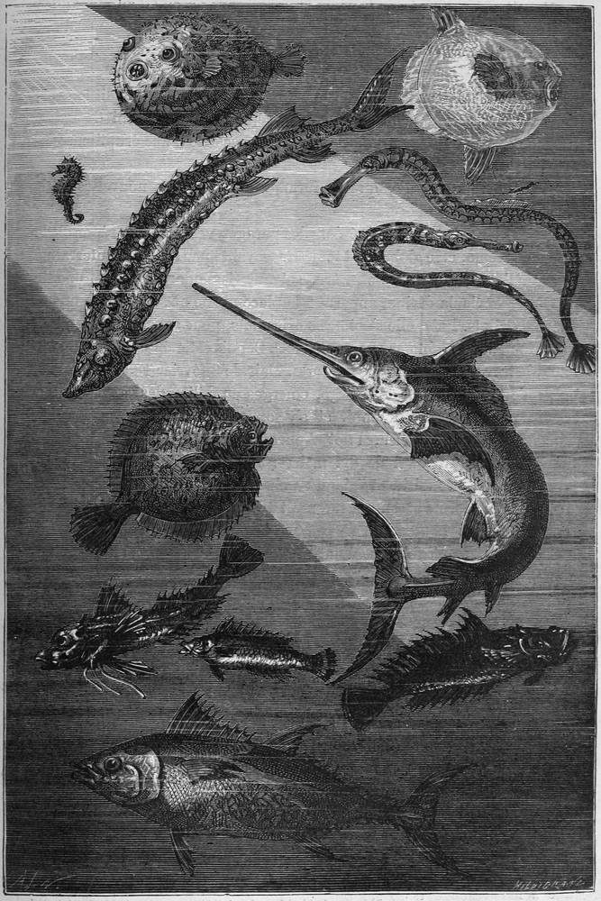
— Onde estamos? — perguntei.
— Perto da ilha de Santorini, senhor professor — respondeu-me o capitão —, e precisamente no canal que separa Nea Kameni de Palea Kameni. Quis oferecer-lhe o curioso espetáculo de uma erupção submarina.
— Eu julgava — disse eu — que a formação dessas ilhas novas estivesse terminada.
— Nada está nunca terminado nas paragens vulcânicas — respondeu o capitão Nemo —, e o globo é sempre trabalhado ali pelos fogos subterrâneos. Já no ano dezenove de nossa era, segundo Cassiodoro e Plínio, uma ilha nova, Teia, a divina, apareceu no mesmo lugar onde recentemente se formaram estas ilhotas. Depois afundou sob as ondas, para reaparecer no ano sessenta e nove e afundar mais uma vez. Dessa época até nossos dias, o trabalho plutônico ficou suspenso. Mas, em 3 de fevereiro de 1866, uma nova ilhota, que chamaram ilhota de Jorge, emergiu no meio dos vapores sulfurosos, perto de Nea Kameni, e soldou-se a ela no dia 6 do mesmo mês. Sete dias depois, em 13 de fevereiro, apareceu a ilhota Afroessa, deixando entre Nea Kameni e ela um canal de dez metros. Eu estava nestes mares quando o fenômeno se produziu e pude observar todas as suas fases. A ilhota Afroessa, de forma arredondada, media trezentos pés de diâmetro por trinta pés de altura. Compunha-se de lavas negras e vítreas, misturadas com fragmentos feldspáticos. Enfim, em 10 de março, uma ilhota menor, chamada Reka, mostrou-se perto de Nea Kameni e, desde então, essas três ilhotas, soldadas umas às outras, formam uma única e mesma ilha.
— E o canal onde estamos neste momento? — perguntei.
— Ei-lo — respondeu o capitão Nemo, mostrando-me uma carta do Arquipélago. — O senhor vê que assinalei nela as novas ilhotas.
— Mas esse canal se fechará um dia?
— É provável, senhor Aronnax, pois, desde 1866, oito pequenas ilhotas de lava surgiram diante do porto de São Nicolau de Palea Kameni. É evidente, pois, que Nea e Palea se reunirão num tempo próximo. Se, no meio do Pacífico, são os infusórios que formam os continentes, aqui são os fenômenos eruptivos. Olhe, senhor, olhe o trabalho que se realiza sob estas ondas.
Voltei ao vidro. O Nautilus já não andava. O calor tornava-se intolerável. De branco que era, o mar fazia-se vermelho, coloração devida à presença de um sal de ferro. Apesar do fechamento hermético do salão, desprendia-se um insuportável cheiro sulfuroso, e eu avistava chamas escarlates cuja vivacidade matava o brilho da eletricidade.
Eu estava encharcado de suor, sufocava, ia cozinhar. Sim, na verdade, sentia-me cozinhar!
— Não se pode ficar mais tempo nesta água fervente — disse eu ao capitão.
— Não, não seria prudente — respondeu o impassível Nemo.
Foi dada uma ordem. O Nautilus virou de bordo e afastou-se daquela fornalha que não podia desafiar impunemente. Um quarto de hora depois, respirávamos à superfície das ondas.
Veio-me então o pensamento de que, se Ned Land tivesse escolhido aquelas paragens para efetuar nossa fuga, não teríamos saído vivos daquele mar de fogo.
No dia seguinte, 16 de fevereiro, deixávamos aquela bacia que, entre Rodes e Alexandria, tem profundidades de três mil metros, e o Nautilus, passando ao largo de Cerigo, abandonava o arquipélago grego, depois de dobrar o cabo Matapan.
O Mediterrâneo, o mar azul por excelência, “o grande mar” dos hebreus, o “mar” dos gregos, o mare nostrum dos romanos, orlado de laranjeiras, aloés, cactos e pinheiros-bravos, perfumado pelo aroma das murtas, emoldurado por montanhas ásperas, saturado de um ar puro e transparente, mas incessantemente trabalhado pelos fogos da terra, é um verdadeiro campo de batalha onde Netuno e Plutão ainda disputam o império do mundo. É ali, em suas margens e em suas águas, diz Michelet, que o homem se revigora num dos climas mais poderosos do globo.
Mas, por mais belo que seja, só pude ter uma visão rápida dessa bacia, cuja superfície cobre dois milhões de quilômetros quadrados. Os conhecimentos pessoais do capitão Nemo também me faltaram, pois o enigmático personagem não apareceu uma única vez durante aquela travessia a grande velocidade. Calculo em cerca de seiscentas léguas o caminho que o Nautilus percorreu sob as ondas daquele mar, e essa viagem ele a realizou em duas vezes vinte e quatro horas. Partidos na manhã de 16 de fevereiro das paragens da Grécia, no dia 18, ao nascer do sol, tínhamos transposto o estreito de Gibraltar.
Ficou evidente para mim que aquele Mediterrâneo, apertado no meio das terras de que ele queria fugir, desagradava ao capitão Nemo. Suas ondas e suas brisas traziam-lhe lembranças demais, se não pesares demais. Ele já não tinha ali aquela liberdade de movimentos, aquela independência de manobras que os oceanos lhe deixavam, e seu Nautilus sentia-se apertado entre aquelas margens próximas da África e da Europa.
Por isso nossa velocidade foi de vinte e cinco milhas por hora, ou seja, doze léguas de quatro quilômetros. Nem é preciso dizer que Ned Land, para seu grande desgosto, teve de renunciar a seus projetos de fuga. Não podia servir-se do escaler arrastado à razão de doze a treze metros por segundo. Deixar o Nautilus nessas condições teria sido saltar de um trem andando com essa rapidez, manobra das mais imprudentes. Aliás, nosso aparelho só subia à superfície das ondas à noite, a fim de renovar sua provisão de ar, e dirigia-se apenas segundo as indicações da bússola e as marcações da barquinha.
Assim, só vi do interior daquele Mediterrâneo o que o viajante de um expresso avista da paisagem que foge diante de seus olhos, isto é, os horizontes distantes, e não os primeiros planos, que passam como um relâmpago. No entanto, Conseil e eu pudemos observar alguns daqueles peixes mediterrâneos que a força de suas nadadeiras mantinha por alguns instantes nas águas do Nautilus. Ficávamos à espreita diante dos vidros do salão, e nossas notas permitem-me refazer em poucas palavras a ictiologia daquele mar.
Dos diversos peixes que o habitam, vi uns, entrevi outros, sem falar daqueles que a velocidade do Nautilus furtou a meus olhos. Que me seja permitido, pois, classificá-los segundo essa classificação fantasiosa. Ela traduzirá melhor minhas rápidas observações.
No meio da massa das águas, vivamente iluminadas pelos lençóis elétricos, serpenteavam algumas daquelas lampreias de um metro de comprimento, comuns a quase todos os climas. Oxirrincos, espécie de raias, de cinco pés de largura, de ventre branco, dorso cinza-cinzento e manchado, desdobravam-se como vastos xales levados pelas correntes. Outras raias passavam tão depressa que eu não conseguia reconhecer se mereciam o nome de águias que lhes deram os gregos, ou os qualificativos de rato, sapo e morcego com que os pescadores modernos as enfeitaram. Esqualos-milandros, de doze pés de comprimento e particularmente temidos pelos mergulhadores, competiam em rapidez entre si. Raposas-do-mar, de oito pés de comprimento e dotadas de extrema finura de olfato, apareciam como grandes sombras azuladas. Douradas, do gênero esparídeo, algumas das quais mediam até treze decímetros, mostravam-se em sua veste de prata e azul cercada de faixas, que contrastava com o tom escuro de suas nadadeiras; peixes consagrados a Vênus, cujo olho é engastado numa sobrancelha de ouro; espécie preciosa, amiga de todas as águas, doces ou salgadas, habitando os rios, os lagos e os oceanos, vivendo em todos os climas, suportando todas as temperaturas, e cuja raça, que remonta às épocas geológicas da terra, conservou toda a beleza dos primeiros dias. Esturjões magníficos, de nove a dez metros de comprimento, animais de grande marcha, batiam com a cauda poderosa no vidro dos painéis, mostrando o dorso azulado com pequenas manchas castanhas; parecem-se com os esqualos, cuja força não igualam, e encontram-se em todos os mares; na primavera, gostam de subir os grandes rios, de lutar contra as correntes do Volga, do Danúbio, do Pó, do Reno, do Loire, do Oder, e alimentam-se de arenques, cavalas, salmões e gadídeos; embora pertençam à classe dos cartilaginosos, são delicados; comem-se frescos, secos, marinados ou salgados, e outrora eram levados triunfalmente à mesa dos Lúculos. Mas, desses diversos habitantes do Mediterrâneo, os que pude observar mais proveitosamente, quando o Nautilus se aproximava da superfície, pertenciam ao sexagésimo terceiro gênero dos peixes ósseos. Eram escombros-atuns, de dorso azul-negro, ventre couraçado de prata, cujos raios dorsais lançam clarões de ouro. Têm a reputação de seguir a marcha dos navios, cuja sombra fresca procuram sob os fogos do céu tropical, e não a desmentiram, acompanhando o Nautilus como acompanharam outrora os navios de La Pérouse. Durante longas horas, competiram em velocidade com nosso aparelho. Eu não me cansava de admirar aqueles animais verdadeiramente talhados para a corrida, sua cabeça pequena, seu corpo liso e fusiforme, que em alguns passava de três metros, suas peitorais dotadas de notável vigor e suas caudais bifurcadas. Nadavam em triângulo, como certos bandos de aves cuja rapidez igualavam, o que fazia os antigos dizerem que a geometria e a estratégia lhes eram familiares. E, no entanto, não escapam à perseguição dos provençais, que os apreciam como os apreciavam os habitantes da Propôntida e da Itália, e é às cegas, como aturdidos, que esses animais preciosos vão lançar-se e perecer aos milhares nas armações de pesca de Marselha.
Citarei, apenas para registro, aqueles peixes mediterrâneos que Conseil ou eu só entrevimos. Eram gimnotos-fierásferos esbranquiçados, que passavam como vapores inapreensíveis; moreias-congros, serpentes de três a quatro metros enfeitadas de verde, azul e amarelo; gadídeos-pescadas, de três pés de comprimento, cujo fígado era um bocado delicado; cépolas-tênias, que flutuavam como finas algas; triglas, que os poetas chamam peixes-lira e os marinheiros peixes-assobiadores, cujo focinho é ornado de duas lâminas triangulares e denteadas que figuram o instrumento do velho Homero; triglas-andorinhas, nadando com a rapidez da ave da qual tomaram o nome; holocentros-meros, de cabeça vermelha, cuja nadadeira dorsal é guarnecida de filamentos; sáveis enfeitados de manchas negras, cinzentas, castanhas, azuis, amarelas, verdes, que são sensíveis à voz argentina das sinetas; e esplêndidos rodovalhos, esses faisões do mar, espécie de losangos de nadadeiras amareladas, pontilhados de castanho, cujo lado superior, o lado esquerdo, é geralmente marmoreado de castanho e amarelo; enfim, bandos de admiráveis salmonetes, verdadeiras aves-do-paraíso do Oceano, que os romanos pagavam até dez mil sestércios cada um e que faziam morrer sobre a mesa, para seguir com olhar cruel suas mudanças de cor, desde o vermelho-cinábrio da vida até o branco pálido da morte.
E, se não pude observar nem miraletes, nem balistas, nem tetrodontes, nem hipocampos, nem donzelas, nem centriscos, nem blênios, nem salmonetes-de-rocha, nem bodiões, nem eperlanos, nem exocetos, nem anchovas, nem bicas, nem bogas, nem peixes-agulha, nem todos aqueles principais representantes da ordem dos pleuronectos, as solhas, os linguados, as patruças, comuns ao Atlântico e ao Mediterrâneo, deve-se culpar a vertiginosa velocidade que levava o Nautilus através daquelas águas opulentas.
Quanto aos mamíferos marinhos, creio ter reconhecido, ao passar pela entrada do Adriático, dois ou três cachalotes munidos de uma nadadeira dorsal, do gênero dos fisetérios; alguns golfinhos do gênero dos globicéfalos, próprios do Mediterrâneo, cuja parte anterior da cabeça é listrada de pequenas linhas claras; e também uma dúzia de focas de ventre branco e pelagem negra, conhecidas pelo nome de monges, que têm absolutamente o ar de dominicanos de três metros de comprimento.
De sua parte, Conseil julga ter avistado uma tartaruga de seis pés de largura, ornada de três arestas salientes dirigidas longitudinalmente. Lamentei não ter visto esse réptil, pois, pela descrição que Conseil me fez, julguei reconhecer a tartaruga-de-couro, que constitui uma espécie bastante rara. De minha parte, só notei algumas cabeçudas de carapaça alongada.
Quanto aos zoófitos, pude admirar, durante alguns instantes, uma admirável galeolária alaranjada que se agarrou ao vidro do painel de bombordo; era um longo filamento tênue, arborizando-se em ramos infinitos e terminado pela mais fina renda que jamais fiaram as rivais de Aracne. Infelizmente, não pude pescar esse admirável exemplar, e nenhum outro zoófito mediterrâneo se teria sem dúvida oferecido a meus olhares se o Nautilus, na tarde do dia 16, não tivesse reduzido singularmente sua velocidade. Eis em que circunstâncias.
Passávamos então entre a Sicília e a costa de Túnis. Nesse espaço apertado entre o cabo Bon e o estreito de Messina, o fundo do mar sobe quase subitamente. Ali formou-se uma verdadeira crista sobre a qual restam apenas dezessete metros de água, enquanto de cada lado a profundidade é de cento e setenta metros. O Nautilus teve, pois, de manobrar prudentemente a fim de não bater contra aquela barreira submarina.
Mostrei a Conseil, na carta do Mediterrâneo, o local que aquele longo recife ocupava.
— Mas, com a licença do senhor — observou Conseil —, é como um verdadeiro istmo que une a Europa à África.
— Sim, meu rapaz — respondi —, ele barra inteiramente o estreito da Líbia, e as sondagens de Smith provaram que os continentes estavam outrora unidos entre o cabo Boco e o cabo Furina.
— Acredito de bom grado — disse Conseil.
— Acrescentarei — retomei — que uma barreira semelhante existe entre Gibraltar e Ceuta, que, nos tempos geológicos, fechava completamente o Mediterrâneo.
— Eh! — fez Conseil. — E se algum impulso vulcânico erguesse um dia essas duas barreiras acima das ondas?
— Não é nada provável, Conseil.
— Enfim, que o senhor me permita terminar: se esse fenômeno se produzisse, seria lamentável para o sr. de Lesseps, que se dá tanto trabalho para abrir o seu istmo!
— Concordo, mas, repito-lhe, Conseil, esse fenômeno não se produzirá. A violência das forças subterrâneas vai sempre diminuindo. Os vulcões, tão numerosos nos primeiros dias do mundo, extinguem-se pouco a pouco; o calor interno enfraquece, a temperatura das camadas inferiores do globo baixa uma quantidade apreciável por século, e em detrimento de nosso globo, pois esse calor é a sua vida.
— No entanto, o sol…
— O sol é insuficiente, Conseil. Pode ele devolver o calor a um cadáver?
— Não, que eu saiba.
— Pois bem, meu amigo, a terra será um dia esse cadáver resfriado. Tornar-se-á inabitável e será desabitada como a lua, que há muito tempo perdeu seu calor vital.

— Dentro de quantos séculos? — perguntou Conseil.
— Dentro de algumas centenas de milhares de anos, meu rapaz.
— Então — respondeu Conseil —, temos tempo de terminar nossa viagem, se, todavia, Ned Land não se meter!
E Conseil, tranquilizado, voltou a estudar o baixio que o Nautilus roçava de perto com velocidade moderada.

Ali, sob um solo rochoso e vulcânico, desabrochava toda uma flora viva: esponjas, holotúrias, cidipes hialinas ornadas de cirros avermelhados e que emitiam uma leve fosforescência, beroés, vulgarmente conhecidos pelo nome de pepinos-do-mar e banhados nos reflexos de um espectro solar, comátulas ambulantes, de um metro de largura, cuja púrpura avermelhava as águas, euríalos arborescentes da maior beleza, pavonáceas de longos caules, grande número de ouriços comestíveis de espécies variadas e actínias verdes de tronco acinzentado e disco castanho, que se perdiam em sua cabeleira esverdeada de tentáculos.
Conseil ocupara-se mais particularmente de observar os moluscos e os articulados e, embora a nomenclatura seja um pouco árida, não quero prejudicar aquele bom rapaz omitindo suas observações pessoais.
No ramo dos moluscos, ele cita numerosos pétunculos pectiniformes, espôndilos pés-de-burro que se amontoavam uns sobre os outros, donáceas triangulares, hiáleas tridentadas de nadadeiras amarelas e conchas transparentes, pleurobrânquios alaranjados, ovos pontilhados ou semeados de pontos esverdeados, aplísias, também conhecidas pelo nome de lebres-do-mar, dolabelas, áceres carnudos, umbrelas próprias do Mediterrâneo, orelhas-do-mar cuja concha produz um nácar muito procurado, pétunculos flamejados, anômias que os habitantes do Languedoc, dizem, preferem às ostras, amêijoas tão caras aos marselheses, praires duplas, brancas e gordas, alguns daqueles clams que abundam nas costas da América do Norte e dos quais se faz um comércio tão considerável em Nova York, vieiras operculares de cores variadas, litodomos enfiados em seus buracos, cujo gosto apimentado eu apreciava muito, venericárdias sulcadas cuja concha de ápice abaulado apresentava costelas salientes, cíntias eriçadas de tubérculos escarlates, carinárias de ponta recurvada, semelhantes a leves gôndolas, férolas coroadas, atlantas de conchas espiraladas, tétis cinzentas, manchadas de branco e recobertas de sua mantilha franjada, eolídias semelhantes a pequenas lesmas, cavolinas rastejando de costas, aurículas e, entre outras, a aurícula-miosótis, de concha oval, escalárias fulvas, litorinas, jantinas, cinerárias, petrícolas, lamelárias, capéolos, pandoras etc.
Quanto aos articulados, Conseil, em suas notas, dividiu-os muito justamente em seis classes, das quais três pertencem ao mundo marinho. São as classes dos crustáceos, dos cirrípedes e dos anelídeos.
Os crustáceos subdividem-se em nove ordens, e a primeira dessas ordens compreende os decápodes, isto é, os animais cuja cabeça e cujo tórax estão geralmente soldados entre si, cujo aparelho bucal é composto de vários pares de membros e que possuem quatro, cinco ou seis pares de patas torácicas ou ambulatórias. Conseil seguira o método de nosso mestre Milne-Edwards, que faz três seções dos decápodes: os braquiúros, os macruros e os anomuros. Esses nomes são levemente bárbaros, mas são justos e precisos. Entre os braquiúros, Conseil cita amátias cuja fronte é armada de duas grandes pontas divergentes, o ínaco-escorpião, que, não sei por quê, simbolizava a sabedoria entre os gregos, lambros-massena, lambros-espinímanos, provavelmente extraviados naquele baixio, pois em geral vivem a grandes profundidades, xantos, pilumnos, romboides, calápios granulosos, muito fáceis de digerir, observa Conseil, corístes desdentados, ebálias, cimopólias, dórripes lanosos etc. Entre os macruros, subdivididos em cinco famílias, os couraçados, os escavadores, os astacianos, os camarões e os oquizópodes, cita lagostas comuns, cuja carne é tão apreciada nas fêmeas, cilarídeos-ursos ou cigarras-do-mar, gébias ribeirinhas e toda sorte de espécies comestíveis, mas nada diz da subdivisão dos astacianos, que compreende os lavagantes, pois as lagostas são os únicos lavagantes do Mediterrâneo. Enfim, entre os anomuros, viu drócinas comuns, abrigadas atrás daquela concha abandonada de que se apoderam, hómolas de fronte espinhosa, bernardos-eremitas, porcelanas etc.
Ali parava o trabalho de Conseil. Faltara-lhe tempo para completar a classe dos crustáceos com o exame dos estomatópodes, dos anfípodes, dos homópodes, dos isópodes, dos trilobitas, dos branquiópodes, dos ostrácodes e dos entomostráceos. E, para terminar o estudo dos articulados marinhos, deveria ter citado a classe dos cirrípedes, que encerra os ciclopes e os árgulos, e a classe dos anelídeos, que ele não teria deixado de dividir em tubícolas e dorsibrânquios. Mas o Nautilus, tendo ultrapassado o baixio do estreito da Líbia, retomou nas águas mais profundas sua velocidade habitual. A partir daí, nada mais de moluscos, nada mais de articulados, nada mais de zoófitos. Apenas alguns grandes peixes que passavam como sombras.
Durante a noite de 16 para 17 de fevereiro, tínhamos entrado naquela segunda bacia mediterrânea, cujas maiores profundidades estão a três mil metros. O Nautilus, sob o impulso de sua hélice, deslizando sobre seus planos inclinados, afundou até as últimas camadas do mar.
Ali, à falta das maravilhas naturais, a massa das águas ofereceu a meus olhares muitas cenas comoventes e terríveis. De fato, atravessávamos então toda aquela parte do Mediterrâneo tão fecunda em naufrágios. Da costa argelina às margens da Provença, quantos navios naufragaram, quantas embarcações desapareceram! O Mediterrâneo não passa de um lago, comparado às vastas planícies líquidas do Pacífico, mas é um lago caprichoso, de ondas mutáveis, hoje propício e acariciante para a frágil tartana que parece flutuar entre o duplo azul das águas e do céu, amanhã raivoso, atormentado, revolto pelos ventos, quebrando os navios mais fortes com suas vagas curtas, que os golpeiam em batidas precipitadas.
Assim, naquele passeio rápido através das camadas profundas, quantos destroços avistei jazendo no fundo, uns já empastados pelos corais, outros revestidos apenas de uma camada de ferrugem: âncoras, canhões, balas, ferragens, pás de hélice, pedaços de máquinas, cilindros quebrados, caldeiras arrombadas, depois cascos flutuando entre duas águas, estes direitos, aqueles virados.
Desses navios naufragados, uns tinham perecido por colisão, outros por terem batido em algum escolho de granito. Vi alguns que tinham ido a pique, de mastreação direita, o aparelho enrijecido pela água. Pareciam estar ancorados num imenso ancoradouro aberto, à espera do momento da partida. Quando o Nautilus passava entre eles e os envolvia em seus lençóis elétricos, parecia que aqueles navios iam saudá-lo com sua bandeira e enviar-lhe seu número de ordem! Mas não, só o silêncio e a morte naquele campo de catástrofes!
Observei que os fundos mediterrâneos ficavam mais atulhados daqueles sinistros destroços à medida que o Nautilus se aproximava do estreito de Gibraltar. As costas da África e da Europa estreitam-se então, e nesse espaço apertado os abalroamentos são frequentes. Vi ali numerosas quilhas de ferro, ruínas fantásticas de vapores, uns deitados, outros de pé, semelhantes a animais formidáveis. Um desses barcos, de flancos abertos, chaminé curvada, rodas das quais só restava a armação, leme separado do cadaste e ainda preso por uma corrente de ferro, painel de popa roído pelos sais marinhos, apresentava-se com um aspecto terrível! Quantas existências desfeitas em seu naufrágio! Quantas vítimas arrastadas sob as ondas! Algum marinheiro de bordo teria sobrevivido para contar aquele terrível desastre, ou as ondas guardavam ainda o segredo daquele sinistro? Não sei por que, veio-me ao pensamento que aquele barco enterrado sob o mar podia ser o Atlas, desaparecido com tudo e todos havia uns vinte anos, do qual nunca mais se ouviu falar! Ah! Que sinistra história haveria a fazer, a desses fundos mediterrâneos, desse vasto ossuário onde tantas riquezas se perderam, onde tantas vítimas encontraram a morte!
Enquanto isso, o Nautilus, indiferente e rápido, corria a toda hélice no meio daquelas ruínas. Em 18 de fevereiro, por volta das três horas da manhã, apresentava-se à entrada do estreito de Gibraltar.
Ali existem duas correntes: uma corrente superior, há muito reconhecida, que traz as águas do Oceano para a bacia do Mediterrâneo; e uma contracorrente inferior, cuja existência o raciocínio demonstrou hoje. De fato, a soma das águas do Mediterrâneo, incessantemente aumentada pelas ondas do Atlântico e pelos rios que nele desaguam, deveria elevar a cada ano o nível desse mar, pois sua evaporação é insuficiente para restabelecer o equilíbrio. Ora, não é assim, e teve-se naturalmente de admitir a existência de uma corrente inferior que, pelo estreito de Gibraltar, despeja na bacia do Atlântico o excesso do Mediterrâneo.
Fato exato, de fato. Foi dessa contracorrente que o Nautilus se aproveitou. Avançou rapidamente pela estreita passagem. Por um instante, pude entrever as admiráveis ruínas do templo de Hércules, afundado, segundo Plínio e Avieno, com a ilha baixa que o sustentava, e alguns minutos depois flutuávamos sobre as ondas do Atlântico.
O Atlântico! Vasta extensão de água cuja superfície cobre vinte e cinco milhões de milhas quadradas, com nove mil milhas de comprimento e uma largura média de duas mil e setecentas. Mar importante, quase ignorado dos antigos, salvo talvez dos cartagineses, esses holandeses da Antiguidade, que em suas peregrinações comerciais seguiam as costas ocidentais da Europa e da África! Oceano cujas margens de sinuosidades paralelas abraçam um perímetro imenso, regado pelos maiores rios do mundo, o São Lourenço, o Mississippi, o Amazonas, o Prata, o Orinoco, o Níger, o Senegal, o Elba, o Loire, o Reno, que lhe trazem as águas dos países mais civilizados e das regiões mais selvagens! Magnífica planície, incessantemente sulcada pelos navios de todas as nações, abrigada sob todas as bandeiras do mundo, e que terminam aquelas duas pontas terríveis, temidas pelos navegadores, o cabo Horn e o cabo das Tormentas!
O Nautilus rompia suas águas com o gume de seu esporão, depois de ter percorrido perto de dez mil léguas em três meses e meio, percurso superior a um dos grandes círculos da terra. Para onde íamos agora, e o que nos reservava o futuro?
O Nautilus, saído do estreito de Gibraltar, ganhara o largo. Voltou à superfície das ondas, e nossos passeios diários na plataforma foram-nos assim devolvidos.
Subi a ela imediatamente, acompanhado de Ned Land e de Conseil. A uma distância de doze milhas aparecia vagamente o cabo de São Vicente, que forma a ponta sudoeste da península hispânica. Soprava um vento bastante forte do sul. O mar estava grosso, agitado. Imprimia violentos solavancos de balanço ao Nautilus. Era quase impossível manter-se na plataforma, que enormes golpes de mar batiam a cada instante. Descemos, pois, depois de aspirar algumas lufadas de ar.
Voltei a meu quarto. Conseil voltou à sua cabine; mas o canadense, com ar bastante preocupado, seguiu-me. Nossa rápida passagem pelo Mediterrâneo não lhe permitira pôr em execução seus projetos, e ele pouco dissimulava sua decepção.
Quando a porta de meu quarto se fechou, ele sentou-se e olhou-me em silêncio.
— Amigo Ned — disse-lhe eu —, compreendo-o, mas o senhor não tem nada de que se censurar. Nas condições em que o Nautilus navegava, pensar em deixá-lo teria sido loucura!
Ned Land não respondeu nada. Seus lábios cerrados, suas sobrancelhas franzidas indicavam nele a violenta obsessão de uma ideia fixa.
— Vejamos — retomei —, nada está perdido ainda. Subimos a costa de Portugal. Não longe estão a França e a Inglaterra, onde encontraríamos facilmente refúgio. Ah! Se o Nautilus, saído do estreito de Gibraltar, tivesse aproado ao sul, se nos tivesse arrastado para aquelas regiões onde faltam os continentes, eu partilharia suas inquietações. Mas sabemos agora que o capitão Nemo não foge dos mares civilizados e, dentro de alguns dias, creio que o senhor poderá agir com alguma segurança.
Ned Land olhou-me ainda mais fixamente e, descerrando enfim os lábios:
— É para esta noite — disse ele.
Endireitei-me subitamente. Estava, confesso, pouco preparado para essa comunicação. Teria querido responder ao canadense, mas as palavras não me vieram.
— Tínhamos combinado esperar uma circunstância — retomou Ned Land. — A circunstância, eu a tenho. Esta noite, estaremos a apenas algumas milhas da costa espanhola. A noite está escura. O vento sopra do largo. Tenho sua palavra, senhor Aronnax, e conto com o senhor.
Como eu continuava calado, o canadense levantou-se e, aproximando-se de mim:
— Esta noite, às nove horas — disse ele. — Avisei Conseil. Nessa hora, o capitão Nemo estará fechado em seu quarto e provavelmente deitado. Nem os mecânicos nem os homens da tripulação podem nos ver. Conseil e eu iremos para a escada central. O senhor, senhor Aronnax, ficará na biblioteca, a dois passos de nós, esperando meu sinal. Os remos, o mastro e a vela estão no escaler. Consegui até levar para lá algumas provisões. Arranjei uma chave inglesa para desaparafusar as porcas que prendem o escaler ao casco do Nautilus. Assim, está tudo pronto. Até a noite.
— O mar está ruim — disse eu.
— Concordo — respondeu o canadense —, mas é preciso arriscar. A liberdade vale o preço que se paga por ela. Aliás, a embarcação é sólida, e algumas milhas com vento favorável não são nada. Quem sabe se amanhã não estaremos a cem léguas ao largo? Que as circunstâncias nos favoreçam e, entre as dez e as onze horas, estaremos desembarcados em algum ponto da terra firme ou mortos. Portanto, seja o que Deus quiser, e até a noite!
Com essa palavra, o canadense retirou-se, deixando-me quase atordoado. Eu imaginara que, chegado o caso, teria tempo de refletir, de discutir. Meu obstinado companheiro não o permitia. Que lhe teria dito, afinal? Ned Land tinha cem vezes razão. Era quase uma circunstância, e ele a aproveitava. Podia eu voltar atrás em minha palavra e assumir a responsabilidade de comprometer, num interesse todo pessoal, o futuro de meus companheiros? Amanhã, não poderia o capitão Nemo arrastar-nos para longe de todas as terras?
Nesse momento, um silvo bastante forte informou-me que os reservatórios se enchiam, e o Nautilus afundou sob as ondas do Atlântico.
Fiquei em meu quarto. Queria evitar o capitão para esconder a seus olhos a emoção que me dominava. Triste dia que passei assim, entre o desejo de recobrar meu livre-arbítrio e o pesar de abandonar aquele maravilhoso Nautilus, deixando inacabados meus estudos submarinos! Deixar assim aquele oceano, “meu Atlântico”, como gostava de chamá-lo, sem ter observado suas últimas camadas, sem lhe ter roubado os segredos que me tinham revelado os mares das Índias e do Pacífico! Meu romance caía-me das mãos desde o primeiro volume, meu sonho interrompia-se no momento mais belo! Que horas más passaram assim, ora vendo-me em segurança, em terra, com meus companheiros, ora desejando, a despeito de minha razão, que alguma circunstância imprevista impedisse a realização dos projetos de Ned Land.
Duas vezes fui ao salão. Queria consultar a bússola. Queria ver se a direção do Nautilus nos aproximava, de fato, ou nos afastava da costa. Mas não. O Nautilus mantinha-se sempre nas águas portuguesas. Apontava para o norte, costeando as margens do Oceano.

Era preciso, pois, conformar-se e preparar-se para fugir. Minha bagagem não era pesada. Minhas notas, nada mais.
Quanto ao capitão Nemo, perguntei-me o que pensaria de nossa evasão, que inquietações, que danos talvez ela lhe causaria, e o que faria no duplo caso de ela ser descoberta ou fracassar! Sem dúvida eu não tinha do que me queixar dele, ao contrário. Jamais hospitalidade foi mais franca que a sua. Deixando-o, eu não podia ser tachado de ingratidão. Nenhum juramento nos ligava a ele. Era só com a força das coisas que ele contava, e não com nossa palavra, para nos fixar para sempre a seu lado. Mas essa pretensão altamente confessada de nos reter eternamente prisioneiros a bordo justificava todas as nossas tentativas.

Eu não tinha voltado a ver o capitão desde nossa visita à ilha de Santorini. O acaso haveria de pôr-me em sua presença antes de nossa partida? Eu o desejava e o temia ao mesmo tempo. Escutei se não o ouviria andar em seu quarto, contíguo ao meu. Nenhum ruído chegou a meu ouvido. Aquele quarto devia estar deserto.
Comecei então a perguntar-me se aquele estranho personagem estava a bordo. Desde aquela noite em que o escaler deixara o Nautilus para um serviço misterioso, minhas ideias a seu respeito tinham-se modificado ligeiramente. Eu pensava, dissesse ele o que dissesse, que o capitão Nemo devia ter conservado com a terra algumas relações de certo tipo. Nunca deixava o Nautilus? Semanas inteiras tinham passado muitas vezes sem que eu o encontrasse. O que fazia durante esse tempo e, quando eu o julgava presa de acessos de misantropia, não realizaria longe algum ato secreto cuja natureza me escapava até então?
Todas essas ideias e mil outras assaltaram-me ao mesmo tempo. O campo das conjecturas só pode ser infinito na estranha situação em que estamos. Eu sentia um mal-estar insuportável. Aquele dia de espera parecia-me eterno. As horas soavam lentamente demais para a minha impaciência.
Meu jantar foi-me servido, como sempre, em meu quarto. Comi mal, por estar preocupado demais. Deixei a mesa às sete horas. Cento e vinte minutos, eu os contava, separavam-me ainda do momento em que devia juntar-me a Ned Land. Minha agitação redobrava. Meu pulso batia com violência. Eu não conseguia ficar imóvel. Ia e vinha, esperando acalmar com o movimento a perturbação de meu espírito. A ideia de sucumbir em nossa temerária empresa era a menos penosa de minhas preocupações; mas, ao pensar em ver nosso projeto descoberto antes de termos deixado o Nautilus, ao pensar em ser levado de volta à presença do capitão Nemo irritado, ou, o que teria sido pior, entristecido com meu abandono, meu coração palpitava.
Quis rever o salão uma última vez. Segui pelos corredores e cheguei àquele museu onde passara tantas horas agradáveis e úteis. Olhei todas aquelas riquezas, todos aqueles tesouros, como um homem às vésperas de um exílio eterno, que parte para não mais voltar. Aquelas maravilhas da natureza, aquelas obras-primas da arte, entre as quais havia tantos dias se concentrava minha vida, eu ia abandoná-las para sempre. Teria querido mergulhar o olhar pelo vidro do salão através das águas do Atlântico; mas os painéis estavam hermeticamente fechados, e um manto de chapa separava-me daquele Oceano que eu ainda não conhecia.
Percorrendo assim o salão, cheguei perto da porta, aberta no canto chanfrado, que dava para o quarto do capitão. Para meu grande espanto, essa porta estava entreaberta. Recuei involuntariamente. Se o capitão Nemo estivesse em seu quarto, poderia ver-me. No entanto, não ouvindo ruído algum, aproximei-me. O quarto estava deserto. Empurrei a porta. Dei alguns passos no interior. Sempre o mesmo aspecto severo, cenobítico.
Nesse instante, algumas águas-fortes penduradas na parede, que eu não notara durante minha primeira visita, chamaram minha atenção. Eram retratos, retratos daqueles grandes homens históricos cuja existência foi apenas uma dedicação perpétua a uma grande ideia humana: Kosciuszko, o herói tombado ao grito de Finis Poloniæ; Botsaris, o Leônidas da Grécia moderna; O’Connell, o defensor da Irlanda; Washington, o fundador da União americana; Manin, o patriota italiano; Lincoln, tombado sob a bala de um escravagista; e enfim aquele mártir da libertação da raça negra, John Brown, suspenso de sua forca, tal como o desenhou tão terrivelmente o lápis de Victor Hugo.
Que laço existia entre aquelas almas heroicas e a alma do capitão Nemo? Poderia eu enfim, daquela reunião de retratos, desvendar o mistério de sua existência? Seria ele o campeão dos povos oprimidos, o libertador das raças escravas? Teria figurado nas últimas comoções políticas ou sociais deste século? Teria sido um dos heróis da terrível guerra americana, guerra lamentável e para sempre gloriosa?…
De repente, o relógio bateu oito horas. A batida do primeiro golpe de martelo na campainha arrancou-me de meus devaneios. Estremeci como se um olho invisível pudesse mergulhar no mais secreto de meus pensamentos e precipitei-me para fora do quarto.
Ali, meus olhos detiveram-se na bússola. Nossa direção continuava sendo o norte. A barquinha indicava uma velocidade moderada; o manômetro, uma profundidade de cerca de sessenta pés. As circunstâncias favoreciam, pois, os projetos do canadense.
Voltei a meu quarto. Vesti-me com roupas quentes: botas de mar, gorro de lontra, casaco de bisso forrado de pele de foca. Estava pronto. Esperei. Só os frêmitos da hélice perturbavam o silêncio profundo que reinava a bordo. Eu escutava, apurava o ouvido. Algum grito não me anunciaria, de repente, que Ned Land acabava de ser surpreendido em seus projetos de evasão? Uma inquietação mortal invadiu-me. Tentei em vão recobrar o sangue-frio.
Faltando alguns minutos para as nove horas, colei o ouvido à porta do capitão. Nenhum ruído. Deixei meu quarto e voltei ao salão, que estava mergulhado numa meia-escuridão, mas deserto.
Abri a porta que comunicava com a biblioteca. A mesma claridade insuficiente, a mesma solidão. Fui postar-me junto à porta que dava para o vão da escada central. Esperei o sinal de Ned Land.
Nesse momento, os frêmitos da hélice diminuíram sensivelmente; depois cessaram por completo. Por que essa mudança na marcha do Nautilus? Essa parada favorecia ou atrapalhava os desígnios de Ned Land? Eu não saberia dizer.
O silêncio só era perturbado pelas batidas de meu coração.
De repente, sentiu-se um leve choque. Compreendi que o Nautilus acabava de pousar no fundo do oceano. Minha inquietação redobrou. O sinal do canadense não me chegava. Tive vontade de ir ter com Ned Land para convencê-lo a adiar a tentativa. Sentia que nossa navegação já não se fazia em condições ordinárias…
Nesse momento, a porta do grande salão abriu-se, e o capitão Nemo apareceu. Avistou-me e, sem outro preâmbulo:
— Ah! Senhor professor — disse num tom amável —, eu o procurava. O senhor conhece a sua história da Espanha?
Ainda que se soubesse a fundo a história do próprio país, nas condições em que eu me encontrava, de espírito perturbado e cabeça perdida, não se conseguiria citar uma palavra dela.
— E então? — retomou o capitão Nemo. — Ouviu minha pergunta? Conhece a história da Espanha?
— Muito mal — respondi.
— Eis os sábios — disse o capitão —, não sabem. Então sente-se — acrescentou —, e vou contar-lhe um curioso episódio dessa história.
O capitão estendeu-se num divã e, maquinalmente, tomei lugar a seu lado, na penumbra.
— Senhor professor — disse-me ele —, ouça-me bem. Esta história lhe interessará por certo lado, pois responderá a uma pergunta que sem dúvida o senhor não conseguiu resolver.
— Estou ouvindo, capitão — disse eu, não sabendo aonde meu interlocutor queria chegar e perguntando-me se aquele incidente se relacionava com nossos projetos de fuga.
— Senhor professor — retomou o capitão Nemo —, se o senhor quiser, remontaremos a 1702. O senhor não ignora que, nessa época, o seu rei Luís XIV, julgando que bastava um gesto de potentado para fazer os Pireneus sumirem sob a terra, impusera aos espanhóis o duque de Anjou, seu neto. Esse príncipe, que reinou mais ou menos mal com o nome de Filipe V, teve de enfrentar, no exterior, adversários de peso.
De fato, no ano anterior, as casas reais da Holanda, da Áustria e da Inglaterra tinham concluído em Haia um tratado de aliança, com o fim de arrancar a coroa da Espanha a Filipe V, para colocá-la na cabeça de um arquiduque, a quem deram prematuramente o nome de Carlos III.
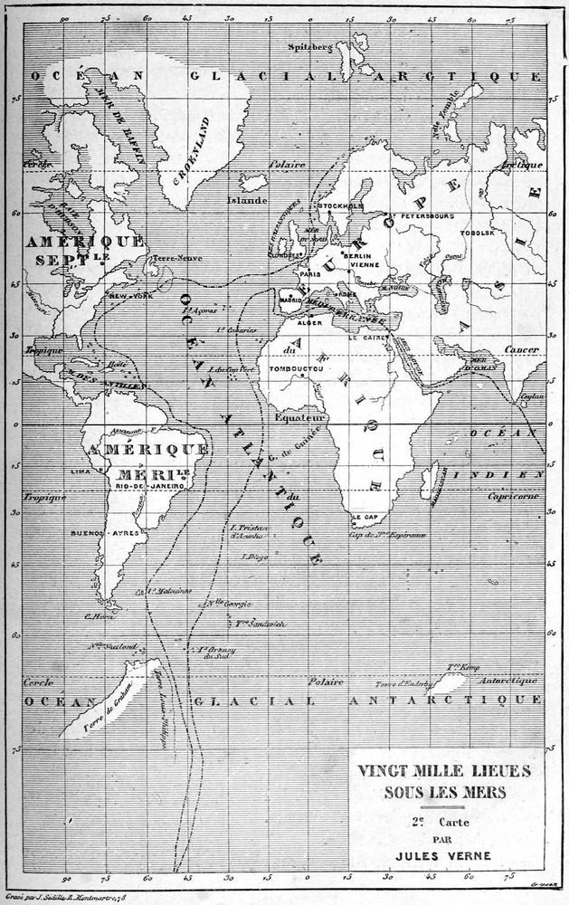
A Espanha teve de resistir a essa coalizão. Mas estava quase desprovida de soldados e de marinheiros. No entanto, não lhe faltava dinheiro, com a condição, todavia, de que seus galeões, carregados do ouro e da prata da América, entrassem em seus portos. Ora, por volta do fim de 1702, ela esperava um rico comboio que a França fazia escoltar por uma frota de vinte e três navios comandados pelo almirante de Château-Renaud, pois as marinhas coligadas percorriam então o Atlântico.
Esse comboio devia dirigir-se a Cádis, mas o almirante, tendo sabido que a frota inglesa cruzava naquelas paragens, resolveu rumar para um porto da França.
Os comandantes espanhóis do comboio protestaram contra essa decisão. Quiseram ser levados a um porto espanhol e, à falta de Cádis, à baía de Vigo, situada na costa noroeste da Espanha, que não estava bloqueada.
O almirante de Château-Renaud teve a fraqueza de obedecer a essa intimação, e os galeões entraram na baía de Vigo.
Infelizmente, essa baía forma um ancoradouro aberto que não pode ser defendido de modo algum. Era preciso, pois, apressar-se a descarregar os galeões antes da chegada das frotas coligadas, e não teria faltado tempo para esse desembarque se uma miserável questão de rivalidade não tivesse surgido de repente.
— O senhor está acompanhando bem o encadeamento dos fatos? — perguntou-me o capitão Nemo.
— Perfeitamente — disse eu, sem saber ainda a propósito de que me era dada aquela lição de história.
— Continuo. Eis o que aconteceu. Os comerciantes de Cádis tinham um privilégio segundo o qual deviam receber todas as mercadorias que vinham das Índias Ocidentais. Ora, desembarcar os lingotes dos galeões no porto de Vigo era ir contra o direito deles. Queixaram-se, pois, em Madri e obtiveram do fraco Filipe V que o comboio, sem proceder ao descarregamento, ficasse sob sequestro no ancoradouro de Vigo até o momento em que as frotas inimigas se tivessem afastado.
Ora, enquanto se tomava essa decisão, em 22 de outubro de 1702, os navios ingleses chegaram à baía de Vigo. O almirante de Château-Renaud, apesar de suas forças inferiores, bateu-se corajosamente. Mas, quando viu que as riquezas do comboio iam cair nas mãos dos inimigos, incendiou e afundou os galeões, que submergiram com seus imensos tesouros.
O capitão Nemo parara. Confesso que ainda não via em que essa história podia interessar-me.
— E então? — perguntei-lhe.
— Então, senhor Aronnax — respondeu-me o capitão Nemo —, estamos nessa baía de Vigo, e só depende do senhor penetrar seus mistérios.
O capitão levantou-se e pediu-me que o seguisse. Eu tivera tempo de me recompor. Obedeci. O salão estava escuro, mas através dos vidros transparentes cintilavam as ondas do mar. Olhei.
Em torno do Nautilus, num raio de meia milha, as águas apareciam impregnadas de luz elétrica. O fundo arenoso estava nítido e claro. Homens da tripulação, vestidos de escafandros, ocupavam-se em desentulhar tonéis meio podres, caixas arrombadas, no meio de destroços ainda enegrecidos. Dessas caixas, desses barris, escapavam lingotes de ouro e de prata, cascatas de piastras e de joias. A areia estava juncada delas. Depois, carregados daquele precioso butim, os homens voltavam ao Nautilus, depositavam ali seu fardo e iam retomar aquela inesgotável pesca de prata e ouro.
Eu compreendia. Era ali o teatro da batalha de 22 de outubro de 1702. Ali mesmo tinham afundado os galeões carregados por conta do governo espanhol. Ali o capitão Nemo vinha embolsar, conforme suas necessidades, os milhões com que lastreava seu Nautilus. Era para ele, só para ele, que a América entregara seus metais preciosos. Ele era o herdeiro direto e sem partilha daqueles tesouros arrancados aos incas e aos vencidos de Fernão Cortez!
— Sabia, senhor professor — perguntou-me ele sorrindo —, que o mar continha tanta riqueza?
— Sabia — respondi — que se avalia em dois milhões de toneladas a prata que se mantém em suspensão em suas águas.
— Sem dúvida, mas, para extrair essa prata, as despesas superariam o lucro. Aqui, ao contrário, só tenho de apanhar o que os homens perderam, e não só nesta baía de Vigo, mas também em mil teatros de naufrágios cujo local minha carta submarina registrou. Compreende agora que eu seja rico aos bilhões?
— Compreendo, capitão. Permita-me, porém, dizer-lhe que, explorando justamente esta baía de Vigo, o senhor só se antecipou aos trabalhos de uma sociedade rival.
— E qual?
— Uma sociedade que recebeu do governo espanhol o privilégio de procurar os galeões afundados. Os acionistas estão atraídos pela isca de um lucro enorme, pois se avalia em quinhentos milhões o valor dessas riquezas naufragadas.
— Quinhentos milhões! — respondeu-me o capitão Nemo. — Estavam aqui, mas já não estão.

— De fato — disse eu. — Por isso, um bom aviso a esses acionistas seria um ato de caridade. Quem sabe, porém, se seria bem recebido. O que os jogadores lamentam acima de tudo, em geral, é menos a perda de seu dinheiro que a de suas loucas esperanças. Afinal, tenho menos pena deles que daqueles milhares de infelizes a quem tantas riquezas bem repartidas poderiam ter aproveitado, ao passo que para eles serão para sempre estéreis!
Mal exprimi esse pesar, senti que devia ter ferido o capitão Nemo.
— Estéreis! — respondeu ele, animando-se. — Acredita então, senhor, que essas riquezas estão perdidas, quando sou eu que as recolho? É para mim, na sua opinião, que me dou o trabalho de recolher esses tesouros? Quem lhe diz que não faço deles bom uso? Acredita que ignoro que existem seres que sofrem, raças oprimidas nesta terra, miseráveis a aliviar, vítimas a vingar? Não compreende?…
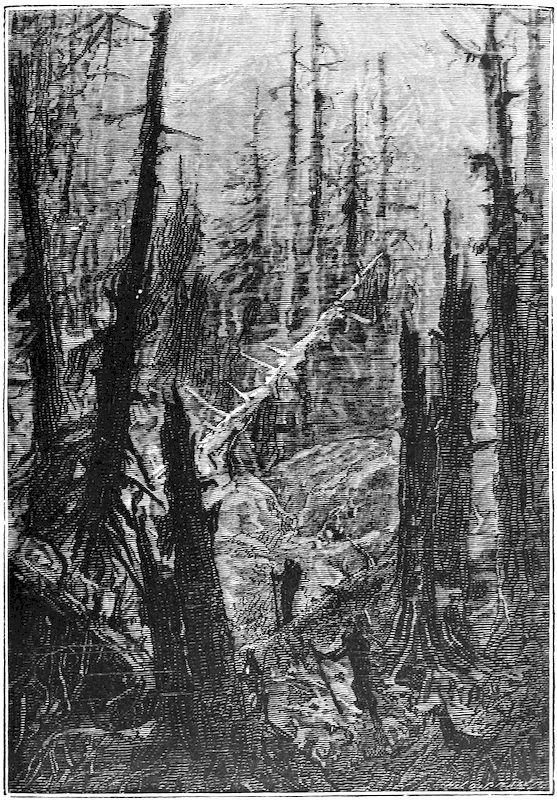
O capitão Nemo parou nessas últimas palavras, lamentando talvez ter falado demais. Mas eu tinha adivinhado. Quaisquer que fossem os motivos que o tinham forçado a buscar a independência sob os mares, antes de tudo ele continuara a ser um homem! Seu coração ainda palpitava com os sofrimentos da humanidade, e sua imensa caridade dirigia-se às raças escravizadas como aos indivíduos!
E compreendi então a quem eram destinados aqueles milhões expedidos pelo capitão Nemo quando o Nautilus navegava nas águas de Creta insurgida!
Na manhã seguinte, 19 de fevereiro, vi o canadense entrar em meu quarto. Eu esperava sua visita. Ele tinha um ar muito decepcionado.
— E então, senhor? — disse-me.
— Então, Ned, o acaso pôs-se contra nós ontem.
— Sim! Foi preciso que esse maldito capitão parasse justamente na hora em que íamos fugir do barco dele.
— Sim, Ned, ele tinha negócios a tratar com seu banqueiro.
— Seu banqueiro!
— Ou antes, com sua casa bancária. Entendo por isso este Oceano, onde suas riquezas estão mais seguras do que estariam nos cofres de um Estado.
Contei então ao canadense os incidentes da véspera, com a secreta esperança de levá-lo de volta à ideia de não abandonar o capitão; mas meu relato não teve outro resultado senão o pesar, energicamente expresso por Ned, de não ter podido dar por conta própria um passeio pelo campo de batalha de Vigo.
— Enfim — disse ele —, nem tudo está acabado! É só um golpe de arpão perdido! Outra vez conseguiremos, e já esta noite, se for preciso…
— Qual é a direção do Nautilus? — perguntei.
— Não sei — respondeu Ned.
— Pois bem! Ao meio-dia veremos a posição.
O canadense voltou para junto de Conseil. Assim que me vesti, passei ao salão. A bússola não era tranquilizadora. A rota do Nautilus era sul-sudoeste. Dávamos as costas à Europa.
Esperei com certa impaciência que a posição fosse transportada para a carta. Por volta das onze e meia, os reservatórios esvaziaram-se, e nosso aparelho subiu à superfície do Oceano. Lancei-me para a plataforma. Ned Land chegara antes de mim.
Nenhuma terra à vista. Nada além do mar imenso. Algumas velas no horizonte, sem dúvida daquelas que vão buscar até o cabo de São Roque os ventos favoráveis para dobrar o cabo da Boa Esperança. O tempo estava encoberto. Preparava-se uma ventania.
Ned, enraivecido, tentava perfurar o horizonte brumoso. Ainda esperava que, atrás de toda aquela névoa, se estendesse a terra tão desejada.
Ao meio-dia, o sol mostrou-se por um instante. O imediato aproveitou essa aberta para tomar sua altura. Depois, ficando o mar mais agitado, descemos de novo, e a escotilha foi fechada.
Uma hora depois, quando consultei a carta, vi que a posição do Nautilus estava indicada a 16° 17′ de longitude e 33° 22′ de latitude, a cento e cinquenta léguas da costa mais próxima. Não havia como pensar em fugir, e deixo imaginar quais foram as cóleras do canadense quando lhe dei a conhecer nossa situação.
De minha parte, não me desolei além da conta. Senti-me como que aliviado do peso que me oprimia e pude retomar, com uma espécie de calma relativa, meus trabalhos habituais.
À noite, por volta das onze horas, recebi a visita muito inesperada do capitão Nemo. Perguntou-me muito amavelmente se eu me sentia cansado por ter velado na noite anterior. Respondi negativamente.
— Então, senhor Aronnax, vou propor-lhe uma curiosa excursão.
— Proponha, capitão.
— O senhor só visitou até agora os fundos submarinos de dia e sob a claridade do sol. Gostaria de vê-los numa noite escura?
— Com muito prazer.
— Esse passeio será cansativo, previno-o. Será preciso andar muito e escalar uma montanha. Os caminhos não são muito bem conservados.
— O que o senhor me diz, capitão, redobra minha curiosidade. Estou pronto a segui-lo.
— Venha, então, senhor professor, vamos vestir nossos escafandros.
Chegando ao vestiário, vi que nem meus companheiros nem nenhum homem da tripulação deviam nos seguir durante aquela excursão. O capitão Nemo nem sequer me propusera levar Ned ou Conseil.
Em poucos instantes, vestimos nossos aparelhos. Puseram-nos às costas os reservatórios abundantemente carregados de ar, mas as lâmpadas elétricas não estavam preparadas. Fiz a observação ao capitão.
— Seriam inúteis — respondeu ele.
Julguei ter ouvido mal, mas não pude repetir minha observação, pois a cabeça do capitão já tinha desaparecido em seu invólucro metálico. Terminei de me equipar, senti que me punham na mão um bastão ferrado e, alguns minutos depois, após a manobra habitual, púnhamos o pé no fundo do Atlântico, a uma profundidade de trezentos metros.
A meia-noite aproximava-se. As águas estavam profundamente escuras, mas o capitão Nemo mostrou-me ao longe um ponto avermelhado, uma espécie de grande clarão, que brilhava a cerca de duas milhas do Nautilus. O que era aquele fogo, que matérias o alimentavam, por que e como se reavivava na massa líquida, eu não saberia dizer. Em todo caso, iluminava-nos, vagamente, é verdade, mas logo me acostumei àquelas trevas particulares e compreendi, nessa circunstância, a inutilidade dos aparelhos Ruhmkorff.
O capitão Nemo e eu caminhávamos um ao lado do outro, diretamente para o fogo assinalado. O solo plano subia insensivelmente. Dávamos largas passadas, ajudando-nos com o bastão; mas nossa marcha era lenta, afinal, pois nossos pés afundavam muitas vezes numa espécie de lodo amassado com algas e semeado de pedras chatas.
Enquanto avançava, eu ouvia uma espécie de crepitação acima de minha cabeça. Esse ruído redobrava às vezes e produzia como que um estalido contínuo. Logo compreendi a causa. Era a chuva que caía violentamente, crepitando na superfície das ondas. Instintivamente, veio-me o pensamento de que eu ia ficar encharcado! Pela água, no meio da água! Não pude deixar de rir dessa ideia extravagante. Mas, para dizer tudo, sob o espesso traje do escafandro, já não se sente o elemento líquido, e julga-se estar no meio de uma atmosfera um pouco mais densa que a atmosfera terrestre, eis tudo.
Depois de meia hora de marcha, o solo tornou-se pedregoso. As medusas, os crustáceos microscópicos, as penátulas iluminavam-no levemente com clarões fosforescentes. Eu entrevia montes de pedras cobertos por alguns milhões de zoófitos e emaranhados de algas. Meu pé escorregava muitas vezes naqueles viscosos tapetes de sargaço e, sem meu bastão ferrado, eu teria caído mais de uma vez. Voltando-me, via sempre o farol esbranquiçado do Nautilus, que começava a empalidecer na distância.
Aqueles amontoados de pedras de que acabo de falar estavam dispostos no fundo oceânico segundo certa regularidade que eu não conseguia explicar. Eu avistava sulcos gigantescos que se perdiam na escuridão distante e cujo comprimento escapava a qualquer avaliação. Apresentavam-se também outras particularidades que eu não sabia admitir. Parecia-me que minhas pesadas solas de chumbo esmagavam um leito de ossadas que estalavam com um ruído seco. O que era, pois, aquela vasta planície que eu percorria assim? Teria querido interrogar o capitão, mas sua linguagem por sinais, que lhe permitia conversar com seus companheiros quando o seguiam em suas excursões submarinas, ainda era incompreensível para mim.
Enquanto isso, a claridade avermelhada que nos guiava crescia e incendiava o horizonte. A presença daquele foco sob as águas intrigava-me ao mais alto grau. Seria algum eflúvio elétrico que se manifestava? Iria eu ao encontro de um fenômeno natural ainda desconhecido dos sábios da terra? Ou mesmo, pois esse pensamento atravessou meu cérebro, a mão do homem intervinha naquele abrasamento? Atiçava aquele incêndio? Iria eu encontrar, sob aquelas camadas profundas, companheiros, amigos do capitão Nemo, vivendo como ele aquela existência estranha, e a quem ele ia fazer uma visita? Encontraria lá embaixo toda uma colônia de exilados que, cansados das misérias da terra, tinham procurado e encontrado a independência no mais profundo do Oceano? Todas essas ideias loucas, inadmissíveis, perseguiam-me e, nessa disposição de espírito, incessantemente sobreexcitado pela série de maravilhas que passavam diante de meus olhos, eu não teria ficado surpreso de encontrar, no fundo daquele mar, uma daquelas cidades submarinas com que sonhava o capitão Nemo!
Nosso caminho iluminava-se cada vez mais. O clarão esbranquiçado irradiava no cume de uma montanha de cerca de oitocentos pés de altura. Mas o que eu avistava era apenas uma simples reverberação desenvolvida pelo cristal das camadas de água. O foco, fonte daquela inexplicável claridade, ocupava a vertente oposta da montanha.
No meio dos dédalos pedregosos que sulcavam o fundo do Atlântico, o capitão Nemo avançava sem hesitação. Conhecia aquele caminho sombrio. Tinha-o percorrido muitas vezes, sem dúvida, e não podia perder-se nele. Eu o seguia com uma confiança inabalável. Ele me aparecia como um dos gênios do mar e, quando andava diante de mim, eu admirava sua alta estatura, que se recortava em negro sobre o fundo luminoso do horizonte.
Era uma hora da manhã. Tínhamos chegado às primeiras rampas da montanha. Mas, para abordá-las, foi preciso aventurar-se pelos caminhos difíceis de um vasto bosque.
Sim! Um bosque de árvores mortas, sem folhas, sem seiva, árvores mineralizadas sob a ação das águas, dominadas aqui e ali por pinheiros gigantescos. Era como uma jazida de hulha ainda de pé, presa por suas raízes ao solo afundado, e cuja ramagem, à maneira de finos recortes de papel preto, se desenhava nitidamente sobre o teto das águas. Imagine-se uma floresta do Harz, agarrada aos flancos de uma montanha, mas uma floresta submersa. Os caminhos estavam atulhados de algas e fucos, entre os quais fervilhava um mundo de crustáceos. Eu ia escalando as rochas, transpondo os troncos estendidos, quebrando os cipós do mar que se balançavam de uma árvore a outra, espantando os peixes que voavam de galho em galho. Arrebatado, já não sentia o cansaço. Seguia meu guia, que não se cansava.
Que espetáculo! Como descrevê-lo? Como pintar o aspecto daqueles bosques e daqueles rochedos naquele meio líquido, suas partes inferiores sombrias e selvagens, suas partes superiores coloridas de tons vermelhos sob aquela claridade que a força reverberante das águas duplicava? Escalávamos rochas que depois desmoronavam em blocos enormes, com um surdo ribombo de avalanche. À direita, à esquerda, cavavam-se galerias tenebrosas onde o olhar se perdia. Aqui abriam-se vastas clareiras que a mão do homem parecia ter desobstruído, e eu me perguntava às vezes se algum habitante daquelas regiões submarinas não ia aparecer-me de repente.
Mas o capitão Nemo subia sempre. Eu não queria ficar para trás. Seguia-o ousadamente. Meu bastão prestava-me um auxílio útil. Um passo em falso teria sido perigoso naquelas estreitas passagens escavadas nos flancos dos abismos; mas eu andava por elas com pé firme e sem sentir a embriaguez da vertigem. Ora saltava uma fenda cuja profundidade me teria feito recuar no meio das geleiras da terra; ora me aventurava sobre o tronco vacilante de árvores lançadas de um abismo a outro, sem olhar para os pés, tendo olhos só para admirar os sítios selvagens daquela região. Ali, rochas monumentais, inclinadas sobre bases irregularmente recortadas, pareciam desafiar as leis do equilíbrio. Entre seus joelhos de pedra, árvores brotavam como um jorro sob uma pressão formidável e sustentavam aquelas que as sustentavam. Depois, torres naturais, largos paredões talhados a pique como cortinas de muralha, inclinavam-se num ângulo que as leis da gravitação não teriam autorizado na superfície das regiões terrestres.
E eu mesmo não sentia essa diferença devida à poderosa densidade da água quando, apesar de minhas roupas pesadas, de minha cabeça de cobre, de minhas solas de metal, subia por encostas de uma inclinação impraticável, transpondo-as, por assim dizer, com a leveza de uma camurça ou de um cabrito-montês!
Pelo relato que faço desta excursão sob as águas, sinto bem que não poderei parecer verossímil! Sou o historiador de coisas de aparência impossível que são, no entanto, reais, incontestáveis. Não sonhei. Vi e senti!
Duas horas depois de deixar o Nautilus, tínhamos transposto a linha das árvores, e a cem pés acima de nossas cabeças erguia-se o pico da montanha, cuja projeção fazia sombra sobre a resplandecente irradiação da vertente oposta. Alguns arbustos petrificados corriam aqui e ali em ziguezagues retorcidos. Os peixes levantavam-se em massa sob nossos passos, como pássaros surpreendidos no capim alto. A massa rochosa era cavada de anfractuosidades impenetráveis, de grutas profundas, de buracos insondáveis, no fundo dos quais eu ouvia mexerem-se coisas formidáveis. O sangue refluía-me ao coração quando eu avistava uma antena enorme que me barrava o caminho, ou alguma pinça assustadora fechando-se com ruído na sombra das cavidades! Milhares de pontos luminosos brilhavam no meio das trevas. Eram os olhos de crustáceos gigantescos, escondidos em seus covis; lavagantes gigantes erguendo-se como alabardeiros e mexendo as patas com um tilintar de ferragem; caranguejos titânicos, apontados como canhões em seus reparos; e polvos pavorosos entrelaçando os tentáculos como uma moita viva de serpentes.
Que mundo exorbitante era aquele, que eu ainda não conhecia? A que ordem pertenciam aqueles articulados aos quais a rocha formava como que uma segunda carapaça? Onde a natureza encontrara o segredo de sua existência vegetativa, e havia quantos séculos viviam assim nas últimas camadas do Oceano?
Mas eu não podia parar. O capitão Nemo, familiarizado com aqueles animais terríveis, já não lhes dava atenção. Tínhamos chegado a um primeiro planalto, onde outras surpresas ainda me esperavam. Ali desenhavam-se ruínas pitorescas, que traíam a mão do homem, e não mais a do Criador. Eram vastos amontoados de pedras onde se distinguiam vagas formas de castelos, de templos, revestidos de um mundo de zoófitos em flor, e aos quais, em vez de hera, as algas e os fucos faziam um espesso manto vegetal.
Mas que porção do globo era aquela, tragada pelos cataclismos? Quem dispusera aquelas rochas e aquelas pedras como dólmens dos tempos pré-históricos? Onde estava eu, aonde me arrastara a fantasia do capitão Nemo?
Teria querido interrogá-lo. Não podendo, detive-o. Agarrei-lhe o braço. Mas ele, sacudindo a cabeça e mostrando-me o último cume da montanha, pareceu dizer-me:
— Vem! Vem mais! Vem sempre!
Segui-o num último impulso e, em poucos minutos, escalei o pico que dominava em uns dez metros toda aquela massa rochosa.
Olhei o lado que acabávamos de transpor. A montanha só se elevava setecentos a oitocentos pés acima da planície; mas, de sua vertente oposta, dominava com uma altura dupla o fundo, em nível mais baixo, daquela porção do Atlântico. Meus olhares estendiam-se ao longe e abarcavam um vasto espaço iluminado por uma fulguração violenta. De fato, aquela montanha era um vulcão. A cinquenta pés abaixo do pico, no meio de uma chuva de pedras e escórias, uma larga cratera vomitava torrentes de lava, que se dispersavam em cascata de fogo no seio da massa líquida. Assim situado, aquele vulcão, como uma imensa tocha, iluminava a planície inferior até os últimos limites do horizonte.

Disse que a cratera submarina expelia lavas, mas não chamas. As chamas precisam do oxigênio do ar e não poderiam desenvolver-se sob as águas; mas correntes de lava, que trazem em si o princípio de sua incandescência, podem chegar ao rubro-branco, lutar vitoriosamente contra o elemento líquido e vaporizar-se em contato com ele. Rápidas correntes arrastavam todos aqueles gases em difusão, e as torrentes de lava deslizavam até o pé da montanha, como as dejeções do Vesúvio sobre uma outra Torre del Greco.

De fato, ali, diante de meus olhos, arruinada, afundada, derrubada, aparecia uma cidade destruída, seus telhados desabados, seus templos abatidos, seus arcos deslocados, suas colunas jazendo por terra, onde ainda se sentiam as sólidas proporções de uma espécie de arquitetura toscana; mais longe, alguns restos de um gigantesco aqueduto; aqui, a elevação empastada de uma acrópole, com as formas flutuantes de um Partenon; ali, vestígios de cais, como se algum antigo porto tivesse abrigado outrora, às margens de um oceano desaparecido, os navios mercantes e as trirremes de guerra; mais longe ainda, longas linhas de muralhas desmoronadas, largas ruas desertas, toda uma Pompeia sepultada sob as águas, que o capitão Nemo ressuscitava diante de meus olhos!
Onde estava eu? Onde estava eu? Queria sabê-lo a todo custo, queria falar, queria arrancar a esfera de cobre que aprisionava minha cabeça.
Mas o capitão Nemo veio até mim e deteve-me com um gesto. Depois, apanhando um pedaço de pedra calcária, avançou para uma rocha de basalto negro e traçou esta única palavra:
ATLÂNTIDA.
Que relâmpago atravessou meu espírito! A Atlântida, a antiga Merópida de Teopompo, a Atlântida de Platão, aquele continente negado por Orígenes, Porfírio, Jâmblico, d’Anville, Malte-Brun, Humboldt, que atribuíam seu desaparecimento aos relatos lendários, admitido por Posidônio, Plínio, Amiano Marcelino, Tertuliano, Engel, Sherer, Tournefort, Buffon, d’Avezac, eu o tinha ali diante dos olhos, ainda trazendo os testemunhos irrecusáveis de sua catástrofe! Era, pois, aquela região submersa que existia fora da Europa, da Ásia, da Líbia, além das colunas de Hércules, onde vivia aquele povo poderoso dos atlantes, contra o qual se fizeram as primeiras guerras da antiga Grécia!
O historiador que consignou em seus escritos os altos feitos daqueles tempos heroicos foi o próprio Platão. Seus diálogos Timeu e Crítias foram, por assim dizer, traçados sob a inspiração de Sólon, poeta e legislador.
Um dia, Sólon conversava com alguns sábios anciãos de Saís, cidade já com oitocentos anos de idade, como o atestavam seus anais gravados no muro sagrado de seus templos. Um desses anciãos contou a história de outra cidade mais antiga mil anos. Aquela primeira cidade ateniense, com novecentos séculos de idade, fora invadida e em parte destruída pelos atlantes. Esses atlantes, dizia ele, ocupavam um continente imenso, maior que a África e a Ásia reunidas, que cobria uma superfície compreendida entre o décimo segundo e o quadragésimo grau de latitude norte. Seu domínio estendia-se até o Egito. Quiseram impô-lo até a Grécia, mas tiveram de retirar-se diante da resistência indomável dos helenos. Séculos passaram. Produziu-se um cataclismo, inundações, terremotos. Uma noite e um dia bastaram para o aniquilamento daquela Atlântida, cujos cumes mais altos, a Madeira, os Açores, as Canárias, as ilhas de Cabo Verde, ainda emergem.
Tais eram as lembranças históricas que a inscrição do capitão Nemo fazia palpitar em meu espírito. Assim, conduzido pelo mais estranho dos destinos, eu pisava uma das montanhas daquele continente! Tocava com a mão aquelas ruínas mil vezes seculares e contemporâneas das épocas geológicas! Andava ali mesmo onde tinham andado os contemporâneos do primeiro homem! Esmagava sob minhas pesadas solas aqueles esqueletos de animais dos tempos fabulosos, que aquelas árvores, hoje mineralizadas, cobriam outrora com sua sombra!
Ah! Por que me faltava tempo? Teria querido descer as encostas abruptas daquela montanha, percorrer inteiramente aquele continente imenso que sem dúvida ligava a África à América, e visitar aquelas grandes cidades antediluvianas. Ali, talvez, diante de meus olhos, estendiam-se Maquimos, a guerreira, Eusebes, a piedosa, cujos gigantescos habitantes viviam séculos inteiros e a quem não faltava força para amontoar aqueles blocos que ainda resistiam à ação das águas. Um dia, talvez, algum fenômeno eruptivo traga de volta à superfície das ondas essas ruínas submersas! Assinalaram-se numerosos vulcões submarinos naquela porção do Oceano, e muitos navios sentiram abalos extraordinários ao passar sobre aqueles fundos atormentados. Uns ouviram ruídos surdos que anunciavam a luta profunda dos elementos; outros recolheram cinzas vulcânicas projetadas para fora do mar. Todo aquele solo até o equador ainda é trabalhado pelas forças plutônicas. E quem sabe se, numa época distante, aumentados pelas dejeções vulcânicas e pelas camadas sucessivas de lavas, cumes de montanhas ignívomas não aparecerão na superfície do Atlântico!
Enquanto eu sonhava assim, enquanto procurava fixar na memória todos os detalhes daquela paisagem grandiosa, o capitão Nemo, apoiado numa estela musgosa, permanecia imóvel e como que petrificado num êxtase mudo. Pensaria naquelas gerações desaparecidas e lhes perguntaria o segredo do destino humano? Seria naquele lugar que aquele homem estranho vinha revigorar-se nas lembranças da história e reviver aquela vida antiga, ele que não queria a vida moderna? O que eu não teria dado para conhecer seus pensamentos, para partilhá-los, para compreendê-los!
Ficamos naquele lugar durante uma hora inteira, contemplando a vasta planície sob o brilho das lavas, que tomavam às vezes uma intensidade surpreendente. Os borbulhamentos interiores faziam correr rápidos estremecimentos pela crosta da montanha. Ruídos profundos, nitidamente transmitidos por aquele meio líquido, repercutiam com majestosa amplitude.
Nesse momento, a lua apareceu por um instante através da massa das águas e lançou alguns raios pálidos sobre o continente submerso. Foi apenas um clarão, mas de um efeito indescritível. O capitão levantou-se, lançou um último olhar àquela imensa planície; depois, com a mão, fez-me sinal para segui-lo.
Descemos rapidamente a montanha. Ultrapassada a floresta mineral, avistei o farol do Nautilus, que brilhava como uma estrela. O capitão marchou direto para ele, e estávamos de volta a bordo no momento em que as primeiras tintas da aurora branqueavam a superfície do Oceano.
No dia seguinte, 20 de fevereiro, acordei muito tarde. As fadigas da noite tinham prolongado meu sono até as onze horas. Vesti-me depressa. Tinha pressa de conhecer a direção do Nautilus. Os instrumentos indicaram-me que ele seguia sempre para o sul, com uma velocidade de vinte milhas por hora, a uma profundidade de cem metros.
Conseil entrou. Contei-lhe nossa excursão noturna e, estando os painéis abertos, ele ainda pôde entrever uma parte daquele continente submerso.
De fato, o Nautilus roçava, a apenas dez metros do solo, a planície da Atlântida. Corria como um balão levado pelo vento sobre as pradarias terrestres; mas seria mais verdadeiro dizer que estávamos naquele salão como no vagão de um trem expresso. Os primeiros planos que passavam diante de nossos olhos eram rochas recortadas de modo fantástico, florestas de árvores passadas do reino vegetal ao reino animal, cuja silhueta imóvel fazia caretas sob as ondas. Eram também massas pedregosas enterradas sob tapetes de ascídias e anêmonas, eriçadas de longas hidrófitas verticais, e depois blocos de lava estranhamente contorcidos, que atestavam toda a fúria das expansões plutônicas.
Enquanto aqueles sítios bizarros resplandeciam sob nossos fogos elétricos, eu contava a Conseil a história daqueles atlantes que, do ponto de vista puramente imaginário, inspiraram a Bailly tantas páginas encantadoras. Falava-lhe das guerras daqueles povos heroicos. Discutia a questão da Atlântida como homem que já não pode duvidar. Mas Conseil, distraído, mal me ouvia, e sua indiferença em tratar aquele ponto histórico logo me foi explicada.
De fato, numerosos peixes atraíam seus olhares e, quando passavam peixes, Conseil, arrastado aos abismos da classificação, saía do mundo real. Nesse caso, só me restava segui-lo e retomar com ele nossos estudos ictiológicos.
Aliás, aqueles peixes do Atlântico não diferiam sensivelmente dos que tínhamos observado até então. Eram raias de tamanho gigantesco, de cinco metros de comprimento e dotadas de grande força muscular, que lhes permite lançar-se acima das ondas; esqualos de espécies diversas, entre outros um glauco de quinze pés, de dentes triangulares e agudos, que sua transparência tornava quase invisível no meio das águas; sagres castanhos; peixes-porco em forma de prismas e couraçados de uma pele tuberculosa; esturjões semelhantes a seus congêneres do Mediterrâneo; singnatos-trombetas, de um pé e meio de comprimento, castanho-amarelados, providos de pequenas nadadeiras cinzentas, sem dentes nem língua, que desfilavam como serpentes finas e flexíveis.
Entre os peixes ósseos, Conseil notou macairas escuros, de três metros de comprimento e armados na mandíbula superior de uma espada penetrante; peixes-aranha de cores vivas, conhecidos no tempo de Aristóteles pelo nome de dragões-marinhos, que os aguilhões de sua dorsal tornam muito perigosos de agarrar; depois corifenas, de dorso castanho riscado de pequenas listras azuis e enquadrado numa orla de ouro; belas douradas; peixes-lua, espécie de discos de reflexos azulados que, iluminados por cima pelos raios solares, formavam como que manchas de prata; enfim, espadartes de oito metros de comprimento, andando em bandos, com nadadeiras amareladas talhadas em foice e longos gládios de seis pés, animais intrépidos, mais herbívoros que piscívoros, que obedeciam ao menor sinal de suas fêmeas como maridos bem ensinados.
Mas, enquanto observava esses diversos exemplares da fauna marinha, eu não deixava de examinar as longas planícies da Atlântida. Às vezes, caprichosos acidentes do terreno obrigavam o Nautilus a diminuir a velocidade, e ele deslizava então, com a destreza de um cetáceo, por estreitos gargalos entre colinas. Se aquele labirinto se tornava inextricável, o aparelho subia então como um aeróstato e, transposto o obstáculo, retomava sua corrida rápida a alguns metros acima do fundo. Navegação admirável e encantadora, que lembrava as manobras de um passeio de balão, com a diferença, todavia, de que o Nautilus obedecia passivamente à mão de seu timoneiro.
Por volta das quatro horas da tarde, o terreno, geralmente composto de um lodo espesso entremeado de galhos mineralizados, modificou-se pouco a pouco; tornou-se mais pedregoso e pareceu semeado de conglomerados, de tufos basálticos, com algumas salpicaduras de lavas e obsidianas sulfurosas. Pensei que a região das montanhas ia em breve suceder às longas planícies e, de fato, em certas evoluções do Nautilus, avistei o horizonte meridional barrado por uma alta muralha que parecia fechar toda saída. Seu cume ultrapassava evidentemente o nível do Oceano. Devia ser um continente, ou pelo menos uma ilha, quer uma das Canárias, quer uma das ilhas de Cabo Verde. Não tendo sido determinada a posição, de propósito talvez, eu ignorava onde estávamos. Em todo caso, tal muralha pareceu-me marcar o fim daquela Atlântida, da qual tínhamos percorrido, em suma, apenas uma porção mínima.
A noite não interrompeu minhas observações. Eu ficara sozinho. Conseil voltara à sua cabine. O Nautilus, diminuindo a marcha, esvoaçava acima das massas confusas do solo, ora roçando-as como se quisesse pousar nelas, ora subindo caprichosamente à superfície das ondas. Eu entrevia então algumas constelações vivas através do cristal das águas, e precisamente cinco ou seis daquelas estrelas zodiacais que se arrastam na cauda de Órion.
Ainda teria ficado muito tempo junto a meu vidro, admirando as belezas do mar e do céu, quando os painéis se fecharam. Nesse momento, o Nautilus chegara a prumo da alta muralha. Como ia manobrar, eu não podia adivinhar. Voltei a meu quarto. O Nautilus não se mexia mais. Adormeci com a firme intenção de acordar depois de algumas horas de sono.
Mas, no dia seguinte, eram oito horas quando voltei ao salão. Olhei o manômetro. Ele me informou que o Nautilus flutuava na superfície do Oceano. Eu ouvia, aliás, um ruído de passos na plataforma. No entanto, nenhum balanço traía a ondulação das vagas superiores.
Subi até a escotilha. Estava aberta. Mas, em vez da plena luz do dia que eu esperava, vi-me rodeado de uma escuridão profunda. Onde estávamos? Teria eu me enganado? Ainda seria noite? Não! Nem uma estrela brilhava, e a noite não tem trevas tão absolutas.
Eu não sabia o que pensar quando uma voz me disse:
— É o senhor, senhor professor?
— Ah! Capitão Nemo — respondi —, onde estamos?
— Debaixo da terra, senhor professor.
— Debaixo da terra! — exclamei. — E o Nautilus ainda flutua?
— Flutua sempre.
— Mas não compreendo!
— Espere alguns instantes. Nosso farol vai acender-se e, se o senhor gosta de situações claras, ficará satisfeito.
Pus o pé na plataforma e esperei. A escuridão era tão completa que eu nem sequer avistava o capitão Nemo. No entanto, olhando para o zênite, exatamente acima de minha cabeça, julguei captar um clarão indeciso, uma espécie de meia-luz que enchia um buraco circular. Nesse momento, o farol acendeu-se de repente, e seu brilho vivo fez desvanecer aquela luz vaga.
Olhei, depois de fechar por um instante os olhos ofuscados pelo jato elétrico. O Nautilus estava parado. Flutuava junto a uma margem disposta como um cais. O mar que o sustentava naquele momento era um lago aprisionado num circo de muralhas que media duas milhas de diâmetro, ou seja, seis milhas de circunferência. Seu nível, o manômetro o indicava, só podia ser o nível exterior, pois existia necessariamente uma comunicação entre aquele lago e o mar. As altas paredes, inclinadas sobre a base, arredondavam-se em abóbada e figuravam um imenso funil emborcado, cuja altura contava quinhentos ou seiscentos metros. No alto abria-se um orifício circular, pelo qual eu surpreendera aquela leve claridade, evidentemente devida à luz do dia.
Antes de examinar com mais atenção a disposição interior daquela enorme caverna, antes de me perguntar se aquilo era obra da natureza ou do homem, fui ter com o capitão Nemo.
— Onde estamos? — disse eu.
— No centro mesmo de um vulcão extinto — respondeu-me o capitão —, um vulcão cujo interior o mar invadiu em consequência de alguma convulsão do solo. Enquanto o senhor dormia, senhor professor, o Nautilus penetrou nesta lagoa por um canal natural aberto a dez metros abaixo da superfície do Oceano. É aqui o seu porto de abrigo, um porto seguro, cômodo, misterioso, protegido de todos os rumos do vento! Encontre-me nas costas de seus continentes ou de suas ilhas um ancoradouro que valha este refúgio seguro contra a fúria dos furacões.
— De fato — respondi —, aqui o senhor está em segurança, capitão Nemo. Quem poderia alcançá-lo no centro de um vulcão? Mas, no alto, não avistei uma abertura?
— Sim, a cratera, uma cratera outrora cheia de lavas, vapores e chamas, que agora dá passagem a este ar vivificante que respiramos.
— Mas que montanha vulcânica é esta? — perguntei.
— Pertence a uma das numerosas ilhotas de que este mar está semeado. Simples escolho para os navios, para nós caverna imensa. O acaso fez-me descobri-la e, nisso, o acaso serviu-me bem.
— Mas não se poderia descer por esse orifício que forma a cratera do vulcão?
— Não mais do que eu poderia subir por ele. Até uns cem pés, a base interior desta montanha é praticável, mas, acima disso, as paredes formam saliência, e suas rampas não poderiam ser transpostas.
— Vejo, capitão, que a natureza o serve em toda parte e sempre. O senhor está em segurança neste lago, e ninguém além do senhor pode visitar suas águas. Mas para que este refúgio? O Nautilus não precisa de porto.
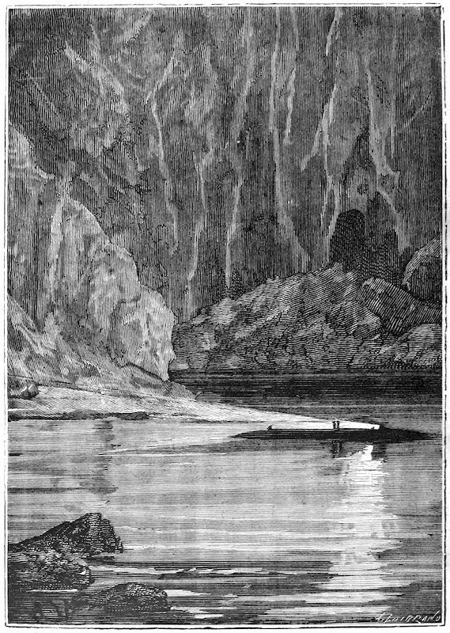
— Não, senhor professor, mas precisa de eletricidade para se mover, de pilhas para produzir sua eletricidade, de sódio para alimentar suas pilhas, de carvão para fazer seu sódio e de jazidas para extrair seu carvão. Ora, precisamente aqui, o mar recobre florestas inteiras que foram soterradas nos tempos geológicos; mineralizadas agora e transformadas em hulha, são para mim uma mina inesgotável.
— Seus homens, capitão, fazem então aqui o ofício de mineiros?
— Precisamente. Estas minas estendem-se sob as ondas como as jazidas de Newcastle. É aqui que, vestidos de escafandro, de picareta e enxada na mão, meus homens vão extrair esta hulha, que nem sequer pedi às minas da terra. Quando queimo esse combustível para a fabricação do sódio, a fumaça que escapa pela cratera desta montanha ainda lhe dá a aparência de um vulcão em atividade.

— E veremos seus companheiros trabalhando?
— Não, desta vez não, pelo menos, pois tenho pressa de continuar nossa volta ao mundo submarina. Por isso, vou contentar-me em tirar das reservas de sódio que possuo. O tempo de embarcá-las, isto é, um dia apenas, e retomaremos nossa viagem. Se, pois, o senhor quiser percorrer esta caverna e dar a volta à lagoa, aproveite este dia, senhor Aronnax.
Agradeci ao capitão e fui buscar meus dois companheiros, que ainda não tinham deixado sua cabine. Convidei-os a seguir-me sem lhes dizer onde se encontravam.
Subiram à plataforma. Conseil, que não se espantava com nada, achou coisa muito natural acordar debaixo de uma montanha depois de adormecer debaixo das ondas. Mas Ned Land não teve outra ideia senão procurar se a caverna apresentava alguma saída.
Depois do almoço, por volta das dez horas, descíamos para a margem.
— Eis-nos, pois, mais uma vez em terra — disse Conseil.
— Não chamo isso de “terra” — respondeu o canadense. — E, aliás, não estamos em cima dela, mas embaixo.
Entre o pé das paredes da montanha e as águas do lago estendia-se uma margem arenosa que, em sua maior largura, media quinhentos pés. Por essa praia podia-se facilmente dar a volta ao lago. Mas a base das altas paredes formava um solo atormentado, sobre o qual jaziam, num pitoresco amontoado, blocos vulcânicos e enormes pedras-pomes. Todas essas massas desagregadas, recobertas de um esmalte polido sob a ação dos fogos subterrâneos, resplandeciam ao contato dos jatos elétricos do farol. A poeira micácea da margem, que nossos passos levantavam, voava como uma nuvem de centelhas.
O solo elevava-se sensivelmente ao afastar-se da orla das águas, e logo chegamos a rampas longas e sinuosas, verdadeiras ladeiras íngremes que permitiam subir pouco a pouco; mas era preciso andar com prudência no meio daqueles conglomerados, que nenhum cimento unia entre si, e o pé escorregava sobre aqueles traquitos vítreos, feitos de cristais de feldspato e quartzo.
A natureza vulcânica daquela enorme escavação afirmava-se por toda parte. Fiz meus companheiros notarem.
— Imaginam — perguntei-lhes — o que devia ser este funil quando se enchia de lavas borbulhantes e o nível desse líquido incandescente subia até o orifício da montanha, como o ferro fundido nas paredes de um alto-forno?
— Imagino perfeitamente — respondeu Conseil. — Mas o senhor me dirá por que o grande fundidor suspendeu a operação e como é que a fornalha foi substituída pelas águas tranquilas de um lago?
— Muito provavelmente, Conseil, porque alguma convulsão produziu abaixo da superfície do Oceano essa abertura que serviu de passagem ao Nautilus. Então as águas do Atlântico precipitaram-se no interior da montanha. Houve uma luta terrível entre os dois elementos, luta que terminou com vantagem para Netuno. Mas muitos séculos passaram desde então, e o vulcão submerso transformou-se em gruta tranquila.
— Muito bem — replicou Ned Land. — Aceito a explicação, mas lamento, em nosso interesse, que essa abertura de que fala o senhor professor não se tenha produzido acima do nível do mar.
— Mas, amigo Ned — replicou Conseil —, se essa passagem não fosse submarina, o Nautilus não poderia ter entrado!
— E acrescentarei, mestre Land, que as águas não se teriam precipitado sob a montanha e que o vulcão teria continuado vulcão. Portanto, seus pesares são supérfluos.
Nossa ascensão continuou. As rampas tornavam-se cada vez mais íngremes e estreitas. Escavações profundas cortavam-nas às vezes, e era preciso transpô-las. Massas salientes tinham de ser contornadas. Deslizava-se de joelhos, rastejava-se de barriga. Mas, com a ajuda da destreza de Conseil e da força do canadense, todos os obstáculos foram superados.
A uma altura de cerca de trinta metros, a natureza do terreno modificou-se, sem que se tornasse mais praticável. Aos conglomerados e aos traquitos sucederam basaltos negros: estes estendidos em lençóis todos grumosos de bolhas; aqueles formando prismas regulares, dispostos como uma colunata que sustentava as curvas daquela abóbada imensa, admirável espécime da arquitetura natural. Depois, entre aqueles basaltos, serpenteavam longas correntes de lavas resfriadas, incrustadas de listras betuminosas e, em certos pontos, estendiam-se largos tapetes de enxofre. Uma luz mais forte, entrando pela cratera superior, inundava com uma vaga claridade todas aquelas dejeções vulcânicas, para sempre sepultadas no seio da montanha extinta.
Contudo, nossa marcha ascensional logo foi detida, a uma altura de cerca de duzentos e cinquenta pés, por obstáculos intransponíveis. A curvatura interior voltava em saliência, e a subida teve de se transformar em passeio circular. Nesse último plano, o reino vegetal começava a lutar com o reino mineral. Alguns arbustos e até certas árvores saíam das anfractuosidades da parede. Reconheci eufórbios que deixavam escorrer seu suco cáustico. Heliotrópios, muito pouco capazes de justificar seu nome, já que os raios solares nunca chegavam até eles, inclinavam tristemente seus cachos de flores de cores e perfumes meio desbotados. Aqui e ali, alguns crisântemos brotavam timidamente ao pé de aloés de folhas longas, tristes e doentias. Mas, entre as correntes de lava, avistei pequenas violetas, ainda perfumadas de um leve odor, e confesso que as aspirei com delícia. O perfume é a alma da flor, e as flores do mar, essas esplêndidas hidrófitas, não têm alma!
Tínhamos chegado ao pé de um grupo de robustos dragoeiros, que afastavam as rochas sob o esforço de suas raízes musculosas, quando Ned Land exclamou:
— Ah! Senhor, uma colmeia!
— Uma colmeia! — repliquei, com um gesto de perfeita incredulidade.
— Sim! Uma colmeia — repetiu o canadense —, e abelhas zumbindo em volta.
Aproximei-me e tive de me render à evidência. Havia ali, na entrada de um buraco cavado no tronco de um dragoeiro, alguns milhares daqueles engenhosos insetos, tão comuns em todas as Canárias, cujos produtos são ali particularmente apreciados.
Muito naturalmente, o canadense quis fazer sua provisão de mel, e eu teria sido deselegante em me opor. Certa quantidade de folhas secas misturadas com enxofre acendeu-se com a faísca de seu isqueiro, e ele começou a defumar as abelhas. Os zumbidos cessaram pouco a pouco, e a colmeia arrombada forneceu várias libras de um mel perfumado. Ned Land encheu com ele sua mochila.
— Quando eu misturar este mel com a massa do artocarpo — disse-nos —, poderei oferecer-lhes um bolo suculento.
— Ora essa! — fez Conseil. — Vai ser pão de mel.
— Vá lá o pão de mel — disse eu —, mas retomemos este interessante passeio.
Em certas curvas do caminho que seguíamos então, o lago aparecia em toda a sua extensão. O farol iluminava inteiramente sua superfície tranquila, que não conhecia nem rugas nem ondulações. O Nautilus mantinha uma imobilidade perfeita. Na plataforma e na margem agitavam-se os homens da tripulação, sombras negras nitidamente recortadas no meio daquela atmosfera luminosa.
Nesse momento, contornávamos a crista mais elevada daqueles primeiros planos de rochas que sustentavam a abóbada. Vi então que as abelhas não eram os únicos representantes do reino animal no interior daquele vulcão. Aves de rapina planavam e volteavam aqui e ali na sombra, ou fugiam de seus ninhos empoleirados em pontas de rocha. Eram gaviões de ventre branco e peneireiros barulhentos. Nas encostas corriam também, com toda a rapidez de suas pernas altas, belas e gordas abetardas. Deixo imaginar se a cobiça do canadense se acendeu à vista daquela caça saborosa e se ele lamentou não ter uma espingarda nas mãos. Tentou substituir o chumbo pelas pedras e, depois de várias tentativas infrutíferas, conseguiu ferir uma daquelas magníficas abetardas. Dizer que arriscou vinte vezes a vida para apoderar-se dela é pura verdade, mas fez tanto que o animal foi juntar-se em sua mochila aos favos de mel.
Tivemos então de descer de novo para a margem, pois a crista tornava-se impraticável. Acima de nós, a cratera escancarada aparecia como uma larga boca de poço. Daquele lugar, o céu deixava-se distinguir com bastante nitidez, e eu via correr nuvens desgrenhadas pelo vento oeste, que arrastavam até o cume da montanha seus farrapos brumosos. Prova certa de que aquelas nuvens se mantinham a uma altura medíocre, pois o vulcão não se elevava mais de oitocentos pés acima do nível do Oceano.
Meia hora depois da última proeza do canadense, tínhamos voltado à margem interior. Ali, a flora estava representada por largos tapetes daquela salsa-do-mar, pequena planta umbelífera muito boa para conserva, que tem também os nomes de perfura-pedra, passa-pedra e funcho-marinho. Conseil colheu alguns molhos. Quanto à fauna, contava aos milhares crustáceos de toda sorte, lavagantes, sapateiras, palemonídeos, misídeos, opiliões, galateias, e um número prodigioso de conchas, porcelanas, murex e lapas.
Naquele lugar abria-se uma gruta magnífica. Meus companheiros e eu tivemos prazer em nos estender em sua areia fina. O fogo polira suas paredes esmaltadas e cintilantes, todas polvilhadas da poeira da mica. Ned Land apalpava as muralhas e procurava sondar sua espessura. Não pude deixar de sorrir. A conversa recaiu então sobre seus eternos projetos de evasão, e julguei poder, sem me adiantar demais, dar-lhe esta esperança: a de que o capitão Nemo só descera para o sul para renovar sua provisão de sódio. Esperava, pois, que agora ele rumasse para as costas da Europa e da América, o que permitiria ao canadense retomar com mais sucesso sua tentativa frustrada.
Estávamos estendidos havia uma hora naquela gruta encantadora. A conversa, animada no início, languescia então. Certa sonolência apoderava-se de nós. Como eu não via razão alguma para resistir ao sono, entreguei-me a um entorpecimento profundo. Sonhava, não se escolhem os sonhos, sonhava que minha existência se reduzia à vida vegetativa de um simples molusco. Parecia-me que aquela gruta formava a dupla valva de minha concha…
De repente, fui acordado pela voz de Conseil.
— Alerta! Alerta! — gritava aquele digno rapaz.
— O que há? — perguntei, erguendo-me pela metade.
— A água está nos alcançando!
Endireitei-me. O mar precipitava-se como uma torrente em nosso refúgio e, decididamente, já que não éramos moluscos, era preciso salvar-nos.

Em poucos instantes, estávamos em segurança no alto da própria gruta.
— O que está acontecendo? — perguntou Conseil. — Algum fenômeno novo?
— Não, meus amigos — respondi —, é a maré, é apenas a maré, que quase nos surpreendeu como o herói de Walter Scott! O Oceano incha lá fora e, por uma lei muito natural de equilíbrio, o nível do lago também sobe. Saímos dessa com meio banho. Vamos trocar de roupa no Nautilus.
Três quartos de hora depois, tínhamos terminado nosso passeio circular e voltávamos a bordo. Os homens da tripulação terminavam naquele momento de embarcar as provisões de sódio, e o Nautilus poderia ter partido imediatamente.
No entanto, o capitão Nemo não deu ordem alguma. Queria esperar a noite e sair secretamente por sua passagem submarina? Talvez.
Seja como for, no dia seguinte, o Nautilus, tendo deixado seu porto de abrigo, navegava longe de qualquer terra, a alguns metros abaixo das ondas do Atlântico.
A direção do Nautilus não se modificara. Toda esperança de voltar aos mares europeus devia, pois, ser momentaneamente descartada. O capitão Nemo mantinha a proa para o sul. Para onde nos arrastava? Eu não ousava imaginar.
Naquele dia, o Nautilus atravessou uma singular porção do oceano Atlântico. Ninguém ignora a existência daquela grande corrente de água quente conhecida pelo nome de Gulf Stream. Depois de sair dos canais da Flórida, dirige-se para Spitzbergen. Mas, antes de penetrar no golfo do México, por volta do quadragésimo quarto grau de latitude norte, essa corrente divide-se em dois braços; o principal dirige-se para as costas da Irlanda e da Noruega, enquanto o segundo se inclina para o sul na altura dos Açores; depois, batendo nas margens africanas e descrevendo um oval alongado, volta para as Antilhas.
Ora, esse segundo braço, é antes um colar que um braço, envolve com seus anéis de água quente aquela porção do Oceano fria, tranquila, imóvel, que se chama mar de Sargaços. Verdadeiro lago em pleno Atlântico, as águas da grande corrente não levam menos de três anos para dar a volta a ele.
O mar de Sargaços, propriamente falando, cobre toda a parte submersa da Atlântida. Certos autores admitiram até que as numerosas ervas de que está semeado são arrancadas das pradarias daquele antigo continente. É mais provável, no entanto, que essas ervas, algas e fucos, arrancados às margens da Europa e da América, sejam arrastados até essa zona pelo Gulf Stream. Foi essa uma das razões que levaram Colombo a supor a existência de um mundo novo. Quando os navios desse ousado explorador chegaram ao mar de Sargaços, navegaram não sem dificuldade no meio daquelas ervas que detinham sua marcha, para grande pavor das tripulações, e perderam três longas semanas para atravessá-las.
Tal era a região que o Nautilus visitava naquele momento, uma verdadeira pradaria, um tapete cerrado de algas, de Fucus natans, de uvas-do-trópico, tão espesso, tão compacto, que a roda de proa de um navio não o teria rasgado sem esforço. Por isso o capitão Nemo, não querendo enredar sua hélice naquela massa herbosa, manteve-se a alguns metros de profundidade abaixo da superfície das ondas.
Esse nome de Sargaços vem da palavra espanhola “sargazo”, que significa sargaço, a alga. Esse sargaço, o sargaço-nadador ou portador de bagas, forma principalmente esse banco imenso. E eis por que, segundo o sábio Maury, autor da Geografia física do globo, essas hidrófitas se reúnem naquela tranquila bacia do Atlântico:
“A explicação que se pode dar”, diz ele, “parece-me resultar de uma experiência conhecida de todos. Se se colocam num vaso fragmentos de rolha ou de quaisquer corpos flutuantes e se imprime à água desse vaso um movimento circular, ver-se-ão os fragmentos espalhados reunirem-se em grupo no centro da superfície líquida, isto é, no ponto menos agitado. No fenômeno que nos ocupa, o vaso é o Atlântico; o Gulf Stream é a corrente circular; e o mar de Sargaços, o ponto central onde vêm reunir-se os corpos flutuantes.”
Partilho a opinião de Maury e pude estudar o fenômeno naquele meio especial onde os navios raramente penetram. Acima de nós flutuavam corpos de toda procedência, amontoados no meio daquelas ervas acastanhadas: troncos de árvores arrancados aos Andes ou às Montanhas Rochosas e levados pelo Amazonas ou pelo Mississippi, numerosos destroços, restos de quilhas ou de cascos, costados arrombados e tão pesados de conchas e anatifas que não podiam subir à superfície do Oceano. E o tempo justificará um dia esta outra opinião de Maury: a de que essas matérias, assim acumuladas durante séculos, se mineralizarão sob a ação das águas e formarão então inesgotáveis jazidas de carvão. Reserva preciosa que a previdente natureza prepara para o momento em que os homens tiverem esgotado as minas dos continentes.
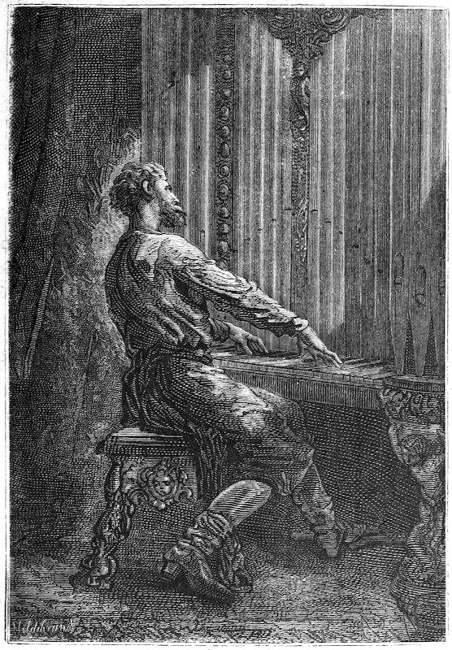
No meio daquele tecido inextricável de ervas e fucos, notei encantadores alcionários estrelados de cores rosadas, actínias que deixavam arrastar sua longa cabeleira de tentáculos, medusas verdes, vermelhas, azuis e particularmente aquelas grandes rizóstomas de Cuvier, cuja umbrela azulada é orlada de um festão violeta.
Todo aquele dia 22 de fevereiro passou-se no mar de Sargaços, onde os peixes amantes de plantas marinhas e de crustáceos encontram abundante alimento. No dia seguinte, o Oceano retomara seu aspecto habitual.
A partir desse momento, durante dezenove dias, de 23 de fevereiro a 12 de março, o Nautilus, mantendo-se no meio do Atlântico, levou-nos com uma velocidade constante de cem léguas em vinte e quatro horas. O capitão Nemo queria evidentemente cumprir seu programa submarino, e eu não duvidava de que pensasse, depois de dobrar o cabo Horn, em voltar aos mares austrais do Pacífico.
Ned Land tivera, pois, razão de temer. Naqueles mares largos, privados de ilhas, já não se devia tentar deixar o navio. Nenhum meio, tampouco, de se opor às vontades do capitão Nemo. O único partido era submeter-se; mas o que já não se devia esperar da força ou da astúcia, eu gostava de pensar que se poderia obter pela persuasão. Terminada aquela viagem, o capitão Nemo não consentiria em devolver-nos a liberdade sob juramento de jamais revelar sua existência? Juramento de honra que teríamos cumprido. Mas era preciso tratar essa delicada questão com o capitão. Ora, seria eu bem recebido ao reclamar essa liberdade? Ele mesmo não declarara, desde o início e de modo formal, que o segredo de sua vida exigia nosso encarceramento perpétuo a bordo do Nautilus? Meu silêncio, havia quatro meses, não devia parecer-lhe uma aceitação tácita dessa situação? Voltar a esse assunto não teria como resultado despertar suspeitas que poderiam prejudicar nossos projetos, se alguma circunstância favorável se apresentasse mais tarde para retomá-los? Todas essas razões, eu as pesava, revirava-as em meu espírito, submetia-as a Conseil, que não estava menos embaraçado que eu. Em suma, embora eu não fosse fácil de desanimar, compreendia que as chances de rever algum dia meus semelhantes diminuíam dia após dia, sobretudo naquele momento em que o capitão Nemo corria temerariamente para o sul do Atlântico!
Durante os dezenove dias que mencionei, nenhum incidente particular assinalou nossa viagem. Vi pouco o capitão. Ele trabalhava. Na biblioteca, eu encontrava muitas vezes livros que ele deixava entreabertos, sobretudo livros de história natural. Minha obra sobre os fundos submarinos, folheada por ele, estava coberta de notas na margem, que às vezes contradiziam minhas teorias e meus sistemas. Mas o capitão contentava-se em depurar assim meu trabalho, e era raro que discutisse comigo. Às vezes, eu ouvia ressoar os sons melancólicos de seu órgão, que ele tocava com muita expressão, mas apenas à noite, no meio da mais secreta escuridão, quando o Nautilus adormecia nos desertos do Oceano.
Durante essa parte da viagem, navegamos dias inteiros na superfície das ondas. O mar parecia abandonado. Apenas alguns navios à vela, carregados para as Índias, dirigindo-se ao cabo da Boa Esperança. Um dia, fomos perseguidos pelos botes de um baleeiro que nos tomava, sem dúvida, por alguma enorme baleia de alto preço. Mas o capitão Nemo não quis fazer aquela boa gente perder tempo e esforço e terminou a caçada mergulhando sob as águas. Esse incidente parecera interessar vivamente a Ned Land. Não creio enganar-me ao dizer que o canadense deve ter lamentado que nosso cetáceo de chapa não pudesse ser ferido de morte pelo arpão daqueles pescadores.
Os peixes observados por Conseil e por mim durante esse período diferiam pouco dos que já tínhamos estudado em outras latitudes. Os principais foram alguns exemplares daquele terrível gênero de cartilaginosos, dividido em três subgêneros que contam nada menos que trinta e duas espécies: esqualos-galonados, de cinco metros de comprimento, de cabeça achatada e mais larga que o corpo, de nadadeira caudal arredondada, cujo dorso traz sete grandes faixas negras paralelas e longitudinais; depois esqualos-perlões, cinza-cinzentos, providos de sete aberturas branquiais e de uma única nadadeira dorsal colocada mais ou menos no meio do corpo.
Passavam também grandes cações, peixes vorazes como poucos. Tem-se o direito de não acreditar nos relatos dos pescadores, mas eis o que eles contam. Encontrou-se no corpo de um desses animais uma cabeça de búfalo e um bezerro inteiro; em outro, dois atuns e um marinheiro de uniforme; em outro, um soldado com seu sabre; em outro, enfim, um cavalo com seu cavaleiro. Tudo isso, na verdade, não é artigo de fé. O certo é que nenhum desses animais se deixou apanhar pelas redes do Nautilus e que não pude verificar sua voracidade.
Bandos elegantes e brincalhões de golfinhos acompanharam-nos durante dias inteiros. Andavam em grupos de cinco ou seis, caçando em matilha como os lobos nos campos; aliás, não menos vorazes que os cações, a crer num professor de Copenhague que retirou do estômago de um golfinho treze toninhas e quinze focas. Era, é verdade, uma orca, pertencente à maior espécie conhecida, cujo comprimento às vezes passa de vinte e quatro pés. Essa família dos delfinídeos conta dez gêneros, e os que avistei pertenciam ao gênero dos delfinorrincos, notáveis por um focinho excessivamente estreito e quatro vezes mais comprido que o crânio. Seu corpo, de três metros, negro em cima, era embaixo de um branco rosado semeado de pequenas manchas muito raras.
Citarei também, naqueles mares, curiosos exemplares daqueles peixes da ordem dos acantopterígios e da família dos cienídeos. Alguns autores, mais poetas que naturalistas, pretendem que esses peixes cantam melodiosamente e que suas vozes reunidas formam um concerto que um coro de vozes humanas não poderia igualar. Não digo que não, mas essas sereias não nos deram nenhuma serenata à nossa passagem, e lamento.
Para terminar enfim, Conseil classificou grande quantidade de peixes-voadores. Nada era mais curioso que ver os golfinhos caçá-los com uma precisão maravilhosa. Qualquer que fosse o alcance de seu voo, qualquer que fosse a trajetória que descrevesse, mesmo acima do Nautilus, o infortunado peixe encontrava sempre a boca do golfinho aberta para recebê-lo. Eram pirápedes ou triglas-milhafres de boca luminosa, que, durante a noite, depois de traçar riscos de fogo na atmosfera, mergulhavam nas águas escuras como outras tantas estrelas cadentes.
Até 13 de março, nossa navegação continuou nessas condições. Naquele dia, o Nautilus foi empregado em experiências de sondagem que me interessaram vivamente.
Tínhamos feito então perto de treze mil léguas desde nossa partida nos altos mares do Pacífico. A posição punha-nos a 43° 37′ de latitude sul e 37° 53′ de longitude oeste. Eram aquelas mesmas paragens onde o capitão Denham, do Herald, largou catorze mil metros de sonda sem encontrar fundo. Ali também o tenente Parker, da fragata americana Congress, não conseguira atingir o solo submarino a quinze mil cento e quarenta metros.
O capitão Nemo resolveu enviar seu Nautilus à mais extrema profundidade a fim de verificar essas diferentes sondagens. Preparei-me para anotar todos os resultados da experiência. Os painéis do salão foram abertos, e as manobras começaram para atingir aquelas camadas tão prodigiosamente afastadas.
Pode-se imaginar que não se cogitou de mergulhar enchendo os reservatórios. Talvez não pudessem aumentar suficientemente o peso específico do Nautilus. Aliás, para subir, teria sido preciso expulsar aquela sobrecarga de água, e as bombas não teriam sido potentes o bastante para vencer a pressão exterior.
O capitão Nemo resolveu ir buscar o fundo oceânico por uma diagonal suficientemente alongada, por meio de seus planos laterais, que foram colocados num ângulo de quarenta e cinco graus com as linhas de água do Nautilus. Depois, a hélice foi levada à sua velocidade máxima, e suas quatro pás bateram as ondas com uma violência indescritível.
Sob esse impulso poderoso, o casco do Nautilus vibrou como uma corda sonora e afundou regularmente sob as águas. O capitão e eu, postados no salão, seguíamos a agulha do manômetro, que se desviava rapidamente. Logo foi ultrapassada a zona habitável onde residem a maioria dos peixes. Se alguns desses animais só podem viver na superfície dos mares ou dos rios, outros, menos numerosos, mantêm-se a profundidades bastante grandes. Entre estes últimos, eu observava o hexanco, espécie de cação provido de seis fendas respiratórias; o telescópio, de olhos enormes; o malarmado-couraçado, de torácicas cinzentas e peitorais negras, protegido por seu plastrão de placas ósseas de um vermelho pálido; e enfim o granadeiro, que, vivendo a mil e duzentos metros de profundidade, suportava então uma pressão de cento e vinte atmosferas.
Perguntei ao capitão Nemo se ele observara peixes a profundidades mais consideráveis.
— Peixes? — respondeu-me. — Raramente. Mas, no estado atual da ciência, o que se presume, o que se sabe?
— Eis o que se sabe, capitão. Sabe-se que, indo para as camadas inferiores do Oceano, a vida vegetal desaparece mais depressa que a vida animal. Sabe-se que, onde ainda se encontram seres animados, já não vegeta uma única hidrófita. Sabe-se que as vieiras e as ostras vivem a dois mil metros de água, e que McClintock, o herói dos mares polares, retirou uma estrela-do-mar viva de uma profundidade de dois mil e quinhentos metros. Sabe-se que a tripulação do Bulldog, da Marinha Real, pescou uma estrela-do-mar a duas mil seiscentas e vinte braças, ou seja, mais de uma légua de profundidade. Mas, capitão Nemo, talvez o senhor me diga que não se sabe nada?
— Não, senhor professor — respondeu o capitão —, não cometerei essa indelicadeza. Todavia, pergunto-lhe como explica que seres possam viver a tais profundidades.
— Explico-o por duas razões — respondi. — Primeiro, porque as correntes verticais, determinadas pelas diferenças de salinidade e de densidade das águas, produzem um movimento que basta para manter a vida rudimentar dos crinoides e das estrelas-do-mar.
— Justo — fez o capitão.
— Depois, porque, se o oxigênio é a base da vida, sabe-se que a quantidade de oxigênio dissolvido na água do mar aumenta com a profundidade, em vez de diminuir, e que a pressão das camadas baixas contribui para comprimi-lo ali.
— Ah! Sabe-se isso? — respondeu o capitão Nemo, num tom levemente surpreso. — Pois bem, senhor professor, tem-se razão em sabê-lo, pois é a verdade. Acrescentarei, de fato, que a bexiga natatória dos peixes encerra mais azoto que oxigênio quando esses animais são pescados na superfície das águas, e mais oxigênio que azoto, ao contrário, quando são tirados das grandes profundidades. O que dá razão ao seu sistema. Mas continuemos nossas observações.
Meus olhares voltaram ao manômetro. O instrumento indicava uma profundidade de seis mil metros. Nossa imersão durava havia uma hora. O Nautilus, deslizando sobre seus planos inclinados, continuava a afundar. As águas desertas eram admiravelmente transparentes, de uma diafaneidade que nada poderia pintar. Uma hora depois, estávamos a treze mil metros, cerca de três léguas e um quarto, e o fundo do Oceano não se deixava pressentir.
No entanto, a catorze mil metros, avistei picos escuros que surgiam no meio das águas. Mas esses cumes podiam pertencer a montanhas altas como o Himalaia ou o Monte Branco, mais altas até, e a profundidade daqueles abismos continuava inavaliável.
O Nautilus desceu ainda mais, apesar das poderosas pressões que sofria. Eu sentia suas chapas tremerem sob a junção de seus parafusos; suas barras arqueavam-se; suas divisórias gemiam; os vidros do salão pareciam empenar sob a pressão das águas. E aquele sólido aparelho teria sem dúvida cedido se, como dissera seu capitão, não fosse capaz de resistir como um bloco maciço.
Roçando as encostas daquelas rochas perdidas sob as águas, eu ainda avistava algumas conchas, sérpulas, espirórbis vivos e certos exemplares de estrelas-do-mar.
Mas logo esses últimos representantes da vida animal desapareceram e, abaixo de três léguas, o Nautilus ultrapassou os limites da existência submarina, como faz o balão que se eleva nos ares acima das zonas respiráveis. Tínhamos atingido uma profundidade de dezesseis mil metros, quatro léguas, e os flancos do Nautilus suportavam então uma pressão de mil e seiscentas atmosferas, isto é, mil e seiscentos quilogramas por centímetro quadrado de sua superfície!
— Que situação! — exclamei. — Percorrer essas regiões profundas onde o homem nunca chegou! Veja, capitão, veja essas rochas magníficas, essas grutas desabitadas, esses últimos receptáculos do globo, onde a vida já não é possível! Que sítios desconhecidos, e por que temos de ficar reduzidos a guardar deles apenas a lembrança?
— Gostaria — perguntou-me o capitão Nemo — de levar daqui algo melhor que a lembrança?
— O que quer dizer com essas palavras?
— Quero dizer que nada é mais fácil do que tirar uma vista fotográfica desta região submarina!
Não tive tempo de exprimir a surpresa que me causava essa nova proposta, e já, a um chamado do capitão Nemo, uma objetiva era trazida ao salão. Pelos painéis largamente abertos, o meio líquido, iluminado eletricamente, distribuía-se com uma claridade perfeita. Nenhuma sombra, nenhuma degradação de nossa luz artificial. O sol não teria sido mais favorável a uma operação dessa natureza. O Nautilus, sob o impulso de sua hélice, contido pela inclinação de seus planos, permanecia imóvel. O instrumento foi apontado para aqueles sítios do fundo oceânico e, em poucos segundos, tínhamos obtido um negativo de extrema pureza.
É a prova positiva que dou aqui. Veem-se nela aquelas rochas primordiais que nunca conheceram a luz dos céus, aqueles granitos inferiores que formam a poderosa base do globo, aquelas grutas profundas escavadas na massa pedregosa, aqueles perfis de nitidez incomparável, cujo traço final se destaca em negro, como se se devesse ao pincel de certos artistas flamengos. Depois, além, um horizonte de montanhas, uma admirável linha ondulada que compõe os últimos planos da paisagem. Não posso descrever esse conjunto de rochas lisas, negras, polidas, sem um musgo, sem uma mancha, de formas estranhamente recortadas e solidamente assentadas sobre aquele tapete de areia que cintilava sob os jatos da luz elétrica.
Enquanto isso, o capitão Nemo, depois de terminar sua operação, dissera-me:
— Subamos, senhor professor. Não se deve abusar desta situação nem expor por tempo demais o Nautilus a semelhantes pressões.
— Subamos! — respondi.
— Segure-se bem.
Ainda não tivera tempo de compreender por que o capitão me fazia essa recomendação quando fui atirado ao tapete.
Com a hélice embreada a um sinal do capitão e os planos erguidos verticalmente, o Nautilus, levado como um balão nos ares, subia com uma rapidez fulminante. Cortava a massa das águas com um frêmito sonoro. Nenhum detalhe era visível. Em quatro minutos, transpusera as quatro léguas que o separavam da superfície do Oceano e, depois de emergir como um peixe-voador, tornava a cair, fazendo as ondas jorrarem a uma altura prodigiosa.
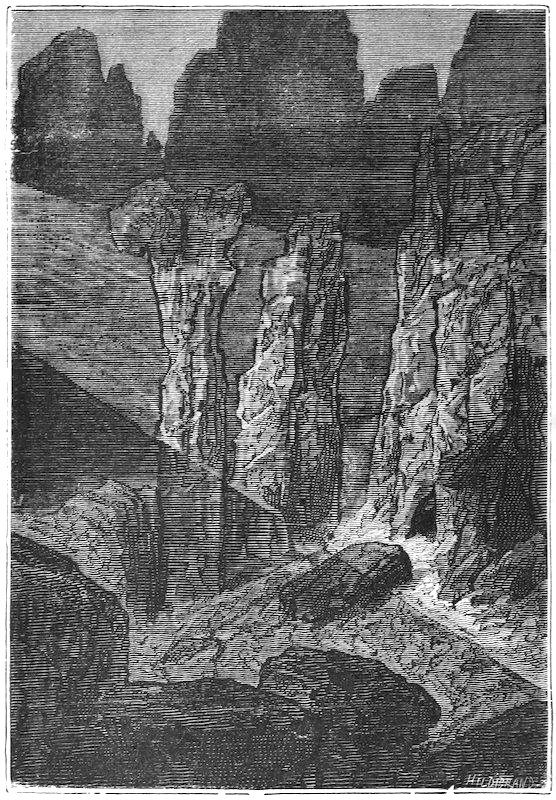
Durante a noite de 13 para 14 de março, o Nautilus retomou sua direção para o sul. Eu pensava que, na altura do cabo Horn, ele aproaria para oeste a fim de alcançar os mares do Pacífico e terminar sua volta ao mundo. Não fez nada disso e continuou a subir para as regiões austrais. Aonde queria então ir? Ao polo? Era insensato. Comecei a crer que as temeridades do capitão justificavam suficientemente as apreensões de Ned Land.
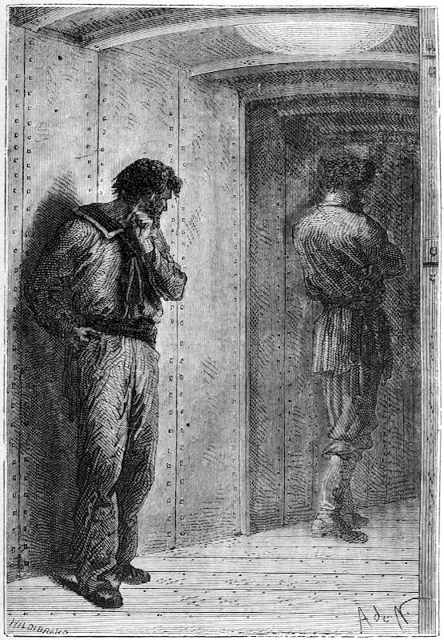
O canadense, havia algum tempo, já não me falava de seus projetos de fuga. Tornara-se menos comunicativo, quase silencioso. Eu via quanto aquele encarceramento prolongado lhe pesava. Sentia a cólera que se acumulava nele. Quando encontrava o capitão, seus olhos acendiam-se com um fogo sombrio, e eu temia sempre que sua violência natural o levasse a algum extremo.
Naquele dia, 14 de março, Conseil e ele vieram procurar-me em meu quarto. Perguntei-lhes a razão da visita.
— Uma simples pergunta a fazer-lhe, senhor — respondeu-me o canadense.
— Fale, Ned.
— Quantos homens acredita que haja a bordo do Nautilus?
— Não saberia dizer, meu amigo.
— Parece-me — prosseguiu Ned Land — que sua manobra não exige uma tripulação numerosa.
— De fato — respondi —, nas condições em que se encontra, uns dez homens no máximo devem bastar para manobrá-lo.
— Pois bem — disse o canadense —, por que haveria mais?
— Por quê? — repliquei.
Olhei fixamente para Ned Land, cujas intenções eram fáceis de adivinhar.
— Porque — disse eu —, se acredito em meus pressentimentos, se compreendi bem a existência do capitão, o Nautilus não é apenas um navio. Deve ser um lugar de refúgio para aqueles que, como seu comandante, romperam toda relação com a terra.
— Talvez — disse Conseil —, mas enfim o Nautilus só pode conter certo número de homens, e o senhor não poderia avaliar esse máximo?
— Como assim, Conseil?
— Pelo cálculo. Dada a capacidade do navio, que o senhor conhece, e, por conseguinte, a quantidade de ar que ele encerra; sabendo, por outro lado, o que cada homem gasta no ato da respiração, e comparando esses resultados com a necessidade que tem o Nautilus de subir a cada vinte e quatro horas…
A frase de Conseil não acabava mais, mas vi bem aonde ele queria chegar.
— Compreendo você — disse eu —, mas esse cálculo, aliás fácil de estabelecer, só pode dar um número muito incerto.
— Não importa — retomou Ned Land, insistindo.
— Eis o cálculo — respondi. — Cada homem gasta em uma hora o oxigênio contido em cem litros de ar, ou seja, em vinte e quatro horas, o oxigênio contido em dois mil e quatrocentos litros. É preciso, pois, procurar quantas vezes o Nautilus encerra dois mil e quatrocentos litros de ar.
— Precisamente — disse Conseil.
— Ora — prossegui —, sendo a capacidade do Nautilus de mil e quinhentas toneladas, e a da tonelada de mil litros, o Nautilus encerra um milhão e quinhentos mil litros de ar, que, divididos por dois mil e quatrocentos…
Calculei rapidamente a lápis:
— … dão por quociente seiscentos e vinte e cinco. O que equivale a dizer que o ar contido no Nautilus poderia rigorosamente bastar a seiscentos e vinte e cinco homens durante vinte e quatro horas.
— Seiscentos e vinte e cinco! — repetiu Ned.
— Mas tenha por certo — acrescentei — que, tanto passageiros como marinheiros ou oficiais, não formamos a décima parte desse número.
— Ainda é demais para três homens! — murmurou Conseil.
— Portanto, meu pobre Ned, só posso aconselhá-lo à paciência.
— E até melhor que a paciência — respondeu Conseil —, à resignação.
Conseil empregara a palavra justa.
— Afinal — retomou ele —, o capitão Nemo não pode ir sempre para o sul! Terá de parar, nem que seja diante da banquisa, e voltar para mares mais civilizados! Então será tempo de retomar os projetos de Ned Land.
O canadense balançou a cabeça, passou a mão pela testa, não respondeu e retirou-se.
— Que o senhor me permita fazer-lhe uma observação — disse-me então Conseil. — Esse pobre Ned pensa em tudo o que não pode ter. Tudo lhe volta de sua vida passada. Tudo o que nos é proibido lhe parece digno de saudade. Suas antigas lembranças o oprimem, e ele está com o coração apertado. É preciso compreendê-lo. O que ele tem a fazer aqui? Nada. Não é um sábio como o senhor e não saberia ter o mesmo gosto que nós pelas coisas admiráveis do mar. Arriscaria tudo para poder entrar numa taverna de sua terra!
É certo que a monotonia de bordo devia parecer insuportável ao canadense, habituado a uma vida livre e ativa. Os acontecimentos que podiam apaixoná-lo eram raros. No entanto, naquele dia, um incidente veio lembrar-lhe seus belos dias de arpoador.
Por volta das onze horas da manhã, estando na superfície do Oceano, o Nautilus caiu no meio de um bando de baleias. Encontro que não me surpreendeu, pois eu sabia que esses animais, caçados a todo transe, se refugiaram nas bacias das altas latitudes.
O papel desempenhado pela baleia no mundo marinho e sua influência sobre as descobertas geográficas foram consideráveis. Foi ela que, arrastando em seu encalço primeiro os bascos, depois os asturianos, os ingleses e os holandeses, os encorajou contra os perigos do Oceano e os conduziu de uma extremidade da terra à outra. As baleias gostam de frequentar os mares austrais e boreais. Antigas lendas pretendem até que esses cetáceos levaram os pescadores a apenas sete léguas do polo norte. Se o fato é falso, será verdadeiro um dia, e é provavelmente assim, caçando a baleia nas regiões árticas ou antárticas, que os homens atingirão esse ponto desconhecido do globo.
Estávamos sentados na plataforma, com o mar tranquilo. O mês de outubro daquelas latitudes dava-nos belos dias de outono. Foi o canadense (ele não podia enganar-se) quem assinalou uma baleia no horizonte, a leste. Olhando com atenção, via-se seu dorso escuro elevar-se e abaixar-se alternadamente acima das ondas, a cinco milhas do Nautilus.
— Ah! — exclamou Ned Land. — Se eu estivesse a bordo de um baleeiro, eis um encontro que me daria prazer! É um animal de grande porte! Vejam com que força seus espiráculos lançam colunas de ar e de vapor! Com mil diabos! Por que tenho de estar acorrentado a este pedaço de chapa!
— O quê, Ned! — respondi. — Ainda não se livrou de suas velhas ideias de pesca?
— Por acaso um pescador de baleias, senhor, pode esquecer seu antigo ofício? Alguém se cansa algum dia das emoções de uma caçada dessas?
— Nunca pescou nestes mares, Ned?
— Nunca, senhor. Apenas nos mares boreais, tanto no estreito de Bering como no de Davis.
— Então a baleia austral ainda lhe é desconhecida. É a baleia-franca que o senhor caçou até aqui, e ela não se arriscaria a atravessar as águas quentes do Equador.
— Ah, senhor professor, que me diz? — replicou o canadense, num tom bastante incrédulo.
— Digo o que é.
— Essa é boa! Eu, que lhe falo, em sessenta e cinco, há dois anos e meio, arrematei perto da Groenlândia uma baleia que ainda trazia no flanco o arpão marcado de um baleeiro de Bering. Ora, pergunto-lhe: como, depois de ter sido ferido a oeste da América, o animal teria vindo deixar-se matar a leste, se não tivesse, depois de dobrar o cabo Horn ou o cabo da Boa Esperança, atravessado o Equador?
— Penso como o amigo Ned — disse Conseil —, e espero o que o senhor vai responder.
— O senhor lhes responderá, meus amigos, que as baleias estão localizadas, conforme suas espécies, em certos mares que não abandonam. E, se um desses animais veio do estreito de Bering para o de Davis, é simplesmente porque existe uma passagem de um mar ao outro, seja pelas costas da América, seja pelas da Ásia.
— Devo acreditar no senhor? — perguntou o canadense, fechando um olho.
— Deve-se acreditar no senhor — respondeu Conseil.
— Desde então — retomou o canadense —, como nunca pesquei nestas paragens, não conheço as baleias que as frequentam?
— Eu lhe disse, Ned.
— Razão a mais para travar conhecimento com elas — replicou Conseil.
— Vejam! Vejam! — exclamou o canadense, com a voz emocionada. — Ela se aproxima! Vem para cima de nós! Está zombando de mim! Sabe que não posso nada contra ela!
Ned batia o pé. Sua mão fremia, brandindo um arpão imaginário.
— Esses cetáceos — perguntou ele — são tão grandes quanto os dos mares boreais?
— Mais ou menos, Ned.
— É que vi baleias grandes, senhor, baleias que mediam até cem pés de comprimento! Até ouvi dizer que o Hullamock e o Umgallick das ilhas Aleutas passavam às vezes de cento e cinquenta pés.
— Isso me parece exagerado — respondi. — Esses animais não passam de balenópteros, providos de nadadeiras dorsais e, assim como os cachalotes, geralmente menores que a baleia-franca.
— Ah! — exclamou o canadense, cujos olhares não deixavam o Oceano. — Ela se aproxima, vem para as águas do Nautilus!
Depois, retomando a conversa:
— O senhor fala do cachalote como de um bichinho! No entanto, citam-se cachalotes gigantescos. São cetáceos inteligentes. Alguns, dizem, cobrem-se de algas e de fucos. São tomados por ilhotas. Acampa-se em cima deles, instala-se ali, faz-se fogo…
— Constroem-se casas — disse Conseil.
— Sim, brincalhão — respondeu Ned Land. — Depois, num belo dia, o animal mergulha e arrasta todos os seus habitantes para o fundo do abismo.
— Como nas viagens de Simbad, o marujo — repliquei, rindo.
— Ah, mestre Land, parece que o senhor gosta de histórias extraordinárias! Que cachalotes, os seus! Espero que não acredite nisso!
— Senhor naturalista — respondeu seriamente o canadense —, em se tratando de baleias, é preciso acreditar em tudo! Como anda esta aqui! Como se esquiva! Dizem que esses animais podem dar a volta ao mundo em quinze dias.
— Não digo que não.
— Mas o que o senhor sem dúvida não sabe, senhor Aronnax, é que, no começo do mundo, as baleias andavam ainda mais depressa.
— Ah, verdade, Ned? E por quê?
— Porque, naquele tempo, tinham a cauda atravessada, como os peixes, isto é, essa cauda, comprimida verticalmente, batia a água da esquerda para a direita e da direita para a esquerda. Mas o Criador, percebendo que elas andavam depressa demais, torceu-lhes a cauda, e desde então elas batem as ondas de cima para baixo, em detrimento de sua rapidez.
— Bom, Ned — disse eu, retomando uma expressão do canadense —, devo acreditar no senhor?
— Não muito — respondeu Ned Land —, e não mais do que se eu lhe dissesse que existem baleias de trezentos pés de comprimento, pesando cem mil libras.
— É muito, de fato — disse eu. — No entanto, é preciso confessar que certos cetáceos adquirem um desenvolvimento considerável, já que, dizem, fornecem até cento e vinte toneladas de óleo.
— Isso eu vi — disse o canadense.
— Acredito de bom grado, Ned, assim como acredito que certas baleias igualam em volume cem elefantes. Imagine os efeitos produzidos por semelhante massa lançada a toda a velocidade!
— É verdade — perguntou Conseil — que elas podem afundar navios?
— Navios, não creio — respondi. — Conta-se, no entanto, que em 1820, precisamente nestes mares do sul, uma baleia se precipitou sobre o Essex e o fez recuar com uma velocidade de quatro metros por segundo. As ondas penetraram pela popa, e o Essex naufragou quase imediatamente.
Ned olhou-me com ar zombeteiro.
— De minha parte — disse ele —, recebi um golpe de cauda de baleia (no meu escaler, nem é preciso dizer). Meus companheiros e eu fomos lançados a uma altura de seis metros. Mas, ao lado da baleia do senhor professor, a minha não passava de um baleote.
— Esses animais vivem muito tempo? — perguntou Conseil.
— Mil anos — respondeu o canadense sem hesitar.
— E como sabe disso, Ned?
— Porque se diz.
— E por que se diz?
— Porque se sabe.
— Não, Ned, não se sabe, mas se supõe, e eis o raciocínio em que se apoia. Há quatrocentos anos, quando os pescadores caçaram pela primeira vez as baleias, esses animais tinham um tamanho superior ao que adquirem hoje. Supõe-se, pois, de modo bastante lógico, que a inferioridade das baleias atuais vem de não terem tido tempo de atingir seu completo desenvolvimento. Foi o que levou Buffon a dizer que esses cetáceos podiam e deviam mesmo viver mil anos. Está entendendo?
Ned Land não entendia. Já não escutava. A baleia aproximava-se sempre. Ele a devorava com os olhos.
— Ah! — exclamou. — Já não é uma baleia, são dez, são vinte, é um rebanho inteiro! E não poder fazer nada! Estar aqui de pés e mãos atados!
— Mas, amigo Ned — disse Conseil —, por que não pedir ao capitão Nemo permissão para caçar?…
Conseil não terminara a frase, e Ned Land já se deixara escorregar pela escotilha e corria à procura do capitão. Alguns instantes depois, ambos reapareciam na plataforma.
O capitão Nemo observou o rebanho de cetáceos que brincava nas águas a uma milha do Nautilus.
— São baleias austrais — disse ele. — Há ali a fortuna de uma frota de baleeiros.
— Pois bem, senhor — perguntou o canadense —, não poderia eu dar-lhes caça, nem que fosse para não esquecer meu antigo ofício de arpoador?
— De que serve — respondeu o capitão Nemo — caçar unicamente para destruir? Não temos o que fazer com óleo de baleia a bordo.
— No entanto, senhor — retomou o canadense —, no mar Vermelho, o senhor nos autorizou a perseguir um dugongo!
— Tratava-se então de obter carne fresca para minha tripulação. Aqui, seria matar por matar. Sei bem que é um privilégio reservado ao homem, mas não admito esses passatempos assassinos. Ao destruir a baleia austral, assim como a baleia-franca, seres inofensivos e bons, seus semelhantes, mestre Land, cometem uma ação condenável. Foi assim que já despovoaram toda a baía de Baffin e que aniquilarão uma classe de animais úteis. Deixe, pois, em paz esses infelizes cetáceos. Eles já têm bastantes inimigos naturais, os cachalotes, os espadartes e os peixes-serra, sem que o senhor se meta nisso.
Deixo imaginar a cara que fazia o canadense durante aquela lição de moral. Dar semelhantes razões a um caçador era perder palavras. Ned Land olhava para o capitão Nemo e evidentemente não compreendia o que ele queria dizer-lhe. No entanto, o capitão tinha razão. O encarniçamento bárbaro e irrefletido dos pescadores fará desaparecer um dia a última baleia do Oceano.
Ned Land assobiou entre os dentes seu Yankee doodle, enfiou as mãos nos bolsos e virou-nos as costas.
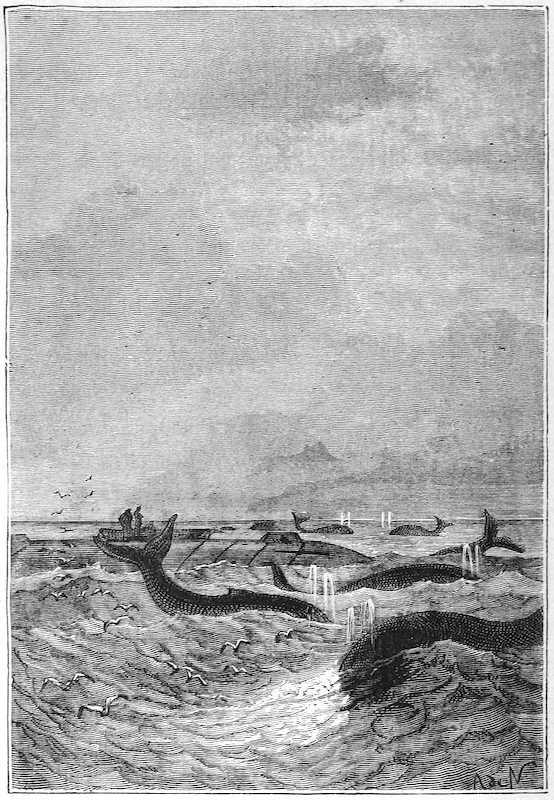
Entretanto, o capitão Nemo observava o rebanho de cetáceos e, dirigindo-se a mim:
— Eu tinha razão em afirmar que, sem contar o homem, as baleias têm bastantes outros inimigos naturais. Estas vão ter de enfrentar adversários fortes em breve. Está vendo, senhor Aronnax, a oito milhas a sotavento, aqueles pontos escuros que se movem?
— Sim, capitão — respondi.
— São cachalotes, animais terríveis que encontrei às vezes em bandos de duzentos ou trezentos! Quanto a esses, bichos cruéis e malfazejos, tem-se razão em exterminá-los.
O canadense voltou-se vivamente a essas últimas palavras.
— Pois bem, capitão — disse eu —, ainda há tempo, no próprio interesse das baleias…
— Inútil expor-se, senhor professor. O Nautilus bastará para dispersar esses cachalotes. Está armado com um esporão de aço que vale bem o arpão de mestre Land, imagino.

O canadense não se constrangeu em dar de ombros. Atacar cetáceos a golpes de esporão! Quem jamais ouvira falar disso?
— Espere, senhor Aronnax — disse o capitão Nemo. — Mostraremos ao senhor uma caçada que ainda não conhece. Nada de piedade para esses cetáceos ferozes. Eles não são mais que boca e dentes!
Boca e dentes! Não se podia pintar melhor o cachalote macrocéfalo, cujo tamanho às vezes ultrapassa vinte e cinco metros. A cabeça enorme desse cetáceo ocupa cerca de um terço de seu corpo. Mais bem armado que a baleia, cuja mandíbula superior é guarnecida apenas de barbatanas, ele é munido de vinte e cinco grandes dentes, de vinte centímetros de altura, cilíndricos e cônicos no topo, que pesam duas libras cada um. É na parte superior dessa enorme cabeça, em grandes cavidades separadas por cartilagens, que se encontram trezentos a quatrocentos quilogramas daquele óleo precioso chamado “espermacete”. O cachalote é um animal desajeitado, antes girino que peixe, segundo a observação de Frédol. É mal construído, sendo por assim dizer “falhado” em toda a parte esquerda de sua armação, e quase só enxerga com o olho direito.
Entretanto, o monstruoso rebanho aproximava-se sempre. Avistara as baleias e preparava-se para atacá-las. Podia-se prever de antemão a vitória dos cachalotes, não só porque são mais bem construídos para o ataque que seus inofensivos adversários, mas também porque podem permanecer mais tempo sob as ondas sem vir respirar à superfície.
Já era tempo de ir em socorro das baleias. O Nautilus pôs-se entre duas águas. Conseil, Ned e eu tomamos lugar diante dos vidros do salão. O capitão Nemo dirigiu-se para junto do timoneiro para manobrar seu aparelho como uma máquina de destruição. Logo senti os batimentos da hélice se precipitarem e nossa velocidade aumentar.
O combate já começara entre os cachalotes e as baleias quando o Nautilus chegou. Manobrou de maneira a cortar o bando dos macrocéfalos. Estes, a princípio, mostraram-se pouco impressionados à vista do novo monstro que se misturava à batalha. Mas logo tiveram de se proteger de seus golpes.
Que luta! O próprio Ned Land, logo entusiasmado, acabou por bater palmas. O Nautilus já não era mais que um arpão formidável, brandido pela mão de seu capitão. Lançava-se contra aquelas massas carnudas e atravessava-as de lado a lado, deixando atrás de sua passagem duas metades de animal a se debaterem. Os formidáveis golpes de cauda que batiam em seus flancos, ele não os sentia. Os choques que produzia, tampouco. Exterminado um cachalote, corria para outro, virava no mesmo lugar para não errar a presa, indo para a frente, para trás, dócil ao leme, mergulhando quando o cetáceo afundava nas camadas profundas, subindo com ele quando voltava à superfície, golpeando-o de frente ou de viés, cortando-o ou rasgando-o, e, em todas as direções e em todas as marchas, perfurando-o com seu terrível esporão.
Que carnificina! Que barulho na superfície das ondas! Que assobios agudos e que roncos particulares daqueles animais apavorados! No meio daquelas camadas ordinariamente tão tranquilas, suas caudas criavam verdadeiros vagalhões.
Durante uma hora prolongou-se aquele massacre homérico, ao qual os macrocéfalos não podiam escapar. Várias vezes, dez ou doze reunidos tentaram esmagar o Nautilus sob sua massa. Viam-se, pelo vidro, suas enormes goelas calçadas de dentes, seus olhos formidáveis. Ned Land, fora de si, ameaçava-os e insultava-os. Sentia-se que se agarravam a nosso aparelho como cães que prendem um javali no meio da mata. Mas o Nautilus, forçando a hélice, levava-os, arrastava-os ou trazia-os de volta ao nível superior das águas, sem se preocupar nem com seu peso enorme nem com seus poderosos abraços.
Enfim a massa dos cachalotes rareou. As ondas voltaram a ficar tranquilas. Senti que subíamos à superfície do Oceano. A escotilha foi aberta, e precipitamo-nos para a plataforma.
O mar estava coberto de cadáveres mutilados. Uma explosão formidável não teria dividido, rasgado, despedaçado com mais violência aquelas massas carnudas. Flutuávamos no meio de corpos gigantescos, azulados no dorso, esbranquiçados no ventre e todos corcundas de enormes protuberâncias. Alguns cachalotes apavorados fugiam no horizonte. As ondas estavam tingidas de vermelho num espaço de várias milhas, e o Nautilus flutuava no meio de um mar de sangue.
O capitão Nemo veio juntar-se a nós.
— E então, mestre Land? — disse ele.
— E então, senhor — respondeu o canadense, cujo entusiasmo se acalmara —, é um espetáculo terrível, de fato. Mas não sou um açougueiro, sou um caçador, e isto não passa de uma carnificina.
— É um massacre de animais malfazejos — respondeu o capitão —, e o Nautilus não é uma faca de açougueiro.
— Prefiro meu arpão — replicou o canadense.
— Cada um com sua arma — respondeu o capitão, olhando fixamente para Ned Land.
Eu temia que este se deixasse levar a alguma violência que teria tido consequências deploráveis. Mas sua cólera foi desviada pela visão de uma baleia que o Nautilus abordava naquele momento.
O animal não pudera escapar aos dentes dos cachalotes. Reconheci a baleia austral, de cabeça achatada, que é inteiramente negra. Anatomicamente, distingue-se da baleia-branca e do Nord-Caper pela soldadura das sete vértebras cervicais, e tem duas costelas a mais que suas congêneres. O infeliz cetáceo, deitado de lado, com o ventre furado de mordidas, estava morto. Na ponta de sua nadadeira mutilada ainda pendia um pequeno baleote que ela não pudera salvar do massacre. Sua boca aberta deixava correr a água, que murmurava como uma ressaca através das barbatanas.
O capitão Nemo conduziu o Nautilus para junto do cadáver do animal. Dois de seus homens subiram no flanco da baleia, e vi, não sem espanto, que retiravam de suas mamas todo o leite que continham, isto é, o equivalente a duas ou três toneladas.
O capitão ofereceu-me uma xícara desse leite ainda quente. Não pude deixar de manifestar-lhe minha repugnância por aquela bebida. Ele me assegurou que esse leite era excelente e que não se distinguia de modo algum do leite de vaca.
Provei-o e fui de sua opinião. Era, portanto, para nós uma reserva útil, pois esse leite, sob a forma de manteiga salgada ou de queijo, havia de trazer uma agradável variedade a nosso cardápio.
Desde aquele dia, notei com inquietação que as disposições de Ned Land para com o capitão Nemo se tornavam cada vez piores, e resolvi vigiar de perto os atos e gestos do canadense.
O Nautilus retomara sua imperturbável direção para o sul. Seguia o quinquagésimo meridiano com uma velocidade considerável. Queria então atingir o polo? Eu não pensava assim, pois até ali todas as tentativas de chegar a esse ponto do globo tinham fracassado. A estação, aliás, já estava bem avançada, já que o 13 de março das terras antárticas corresponde ao 13 de setembro das regiões boreais, que dá início ao período equinocial.
Em 14 de março, avistei gelos flutuantes a 55° de latitude, simples destroços pálidos de vinte a vinte e cinco pés, formando escolhos sobre os quais o mar arrebentava. O Nautilus mantinha-se na superfície do Oceano. Ned Land, que já pescara nos mares árticos, estava familiarizado com esse espetáculo dos icebergs. Conseil e eu o admirávamos pela primeira vez.
Na atmosfera, para os lados do horizonte sul, estendia-se uma faixa branca de aspecto deslumbrante. Os baleeiros ingleses deram-lhe o nome de “ice-blink”. Por mais espessas que sejam as nuvens, não conseguem obscurecê-la. Ela anuncia a presença de um pack, ou banco de gelo.
De fato, logo apareceram blocos mais consideráveis, cujo brilho se modificava conforme os caprichos da bruma. Algumas dessas massas mostravam veios verdes, como se o sulfato de cobre lhes tivesse traçado as linhas onduladas. Outras, semelhantes a enormes ametistas, deixavam-se penetrar pela luz. Estas refletiam os raios do dia nas mil facetas de seus cristais. Aquelas, matizadas dos vivos reflexos do calcário, teriam bastado para a construção de toda uma cidade de mármore.
Quanto mais descíamos para o sul, mais essas ilhas flutuantes ganhavam em número e em importância. As aves polares aninhavam-se nelas aos milhares. Eram petréis, pombas-do-cabo, pardelas, que nos ensurdeciam com seus gritos. Algumas, tomando o Nautilus pelo cadáver de uma baleia, vinham pousar nele e bicavam sua chapa sonora.
Durante essa navegação no meio dos gelos, o capitão Nemo permaneceu muitas vezes na plataforma. Observava com atenção aquelas paragens abandonadas. Eu via seu olhar calmo animar-se às vezes. Diria a si mesmo que, naqueles mares polares proibidos ao homem, estava em sua casa, senhor daqueles espaços intransponíveis? Talvez. Mas não falava. Permanecia imóvel, só voltando a si quando seus instintos de manobrador retomavam a dianteira. Dirigindo então seu Nautilus com uma destreza consumada, evitava habilmente o choque daquelas massas, algumas das quais mediam um comprimento de várias milhas, com uma altura que variava de setenta a oitenta metros. Muitas vezes o horizonte parecia inteiramente fechado. Na altura do sexagésimo grau de latitude, toda passagem desaparecera. Mas o capitão Nemo, procurando com cuidado, logo encontrava alguma estreita abertura pela qual se esgueirava audaciosamente, sabendo bem, no entanto, que ela se fecharia atrás dele.
Foi assim que o Nautilus, guiado por aquela mão hábil, ultrapassou todos esses gelos, classificados segundo sua forma ou seu tamanho com uma precisão que encantava Conseil: icebergs ou montanhas, ice-fields ou campos lisos e sem limites, drift-ice ou gelos flutuantes, packs ou campos partidos, chamados palchs quando são circulares e streams quando são feitos de pedaços alongados.
A temperatura era bastante baixa. O termômetro, exposto ao ar exterior, marcava dois a três graus abaixo de zero. Mas estávamos agasalhados com peles, cujo custo fora pago pelas focas ou pelos ursos-marinhos. O interior do Nautilus, regularmente aquecido por seus aparelhos elétricos, desafiava os frios mais intensos. Aliás, bastar-lhe-ia afundar alguns metros abaixo das ondas para encontrar uma temperatura suportável.
Dois meses antes, teríamos desfrutado, naquela latitude, de um dia perpétuo; mas a noite já se fazia durante três ou quatro horas, e mais tarde havia de lançar seis meses de sombra sobre aquelas regiões circumpolares.
Em 15 de março, a latitude das ilhas Shetland do Sul e das Órcadas do Sul foi ultrapassada. O capitão contou-me que outrora numerosas tribos de focas habitavam aquelas terras; mas os baleeiros ingleses e americanos, em sua fúria de destruição, massacrando os adultos e as fêmeas prenhes, tinham deixado atrás de si, onde existia a animação da vida, o silêncio da morte.
Em 16 de março, por volta das oito horas da manhã, o Nautilus, seguindo o quinquagésimo quinto meridiano, cortou o círculo polar antártico. Os gelos nos cercavam por todos os lados e fechavam o horizonte. No entanto, o capitão Nemo avançava de passagem em passagem e subia sempre.
— Mas aonde ele vai? — perguntei.
— Em frente — respondia Conseil. — Afinal, quando não puder ir mais longe, ele vai parar.
— Eu não juraria! — respondi.
E, para ser franco, confessarei que essa excursão aventurosa não me desagradava nem um pouco. Não saberia exprimir a que ponto me maravilhavam as belezas daquelas regiões novas. Os gelos assumiam atitudes soberbas. Aqui, seu conjunto formava uma cidade oriental, com seus minaretes e suas mesquitas inumeráveis. Ali, uma cidade desmoronada e como que derrubada por uma convulsão do solo. Aspectos incessantemente variados pelos raios oblíquos do sol, ou perdidos nas brumas cinzentas no meio de furacões de neve. Depois, por todos os lados, detonações, desmoronamentos, grandes cambalhotas de icebergs, que mudavam o cenário como a paisagem de um diorama.
Quando o Nautilus estava imerso no momento em que esses equilíbrios se rompiam, o barulho propagava-se sob as águas com uma intensidade assustadora, e a queda daquelas massas criava temíveis redemoinhos até nas camadas profundas do Oceano. O Nautilus jogava e arfava então como um navio abandonado à fúria dos elementos.
Muitas vezes, não vendo mais nenhuma saída, eu pensava que estávamos definitivamente prisioneiros; mas, guiado pelo instinto, ao mais leve indício o capitão Nemo descobria novas passagens. Nunca se enganava ao observar os finos filetes de água azulada que sulcavam os ice-fields. Por isso eu não duvidava de que ele já tivesse aventurado o Nautilus no meio dos mares antárticos.
No entanto, no dia 16 de março, os campos de gelo barraram-nos absolutamente o caminho. Ainda não era a banquisa, mas vastos ice-fields cimentados pelo frio. Esse obstáculo não podia deter o capitão Nemo, e ele lançou-se contra o ice-field com uma violência assustadora. O Nautilus entrava como uma cunha naquela massa friável e dividia-a com estalos terríveis. Era o antigo aríete impelido por uma força infinita. Os destroços de gelo, projetados no alto, recaíam em granizo à nossa volta. Por sua única força de impulso, nosso aparelho cavava para si um canal. Às vezes, levado por seu ímpeto, subia sobre o campo de gelo e esmagava-o com seu peso, ou, por instantes, metido sob o ice-field, dividia-o com um simples movimento de arfagem que produzia largas fendas.
Durante esses dias, violentas borrascas nos assaltaram. Em certas brumas espessas, não se teria visto de uma extremidade à outra da plataforma. O vento saltava bruscamente para todos os pontos da bússola. A neve acumulava-se em camadas tão duras que era preciso quebrá-la a golpes de picareta. Bastava a temperatura de cinco graus abaixo de zero para que todas as partes exteriores do Nautilus se cobrissem de gelo. Um aparelho de velas não teria podido ser manobrado, pois todos os cabos teriam ficado presos na garganta das roldanas. Só um navio sem velas e movido por um motor elétrico, que dispensava o carvão, podia enfrentar latitudes tão altas.
Nessas condições, o barômetro manteve-se geralmente muito baixo. Caiu até 73° 5′. As indicações da bússola já não ofereciam nenhuma garantia. Suas agulhas enlouquecidas marcavam direções contraditórias, à medida que nos aproximávamos do polo magnético meridional, que não se confunde com o sul do mundo. De fato, segundo Hansteen, esse polo está situado aproximadamente a 70° de latitude e 130° de longitude e, de acordo com as observações de Duperrey, a 133° de longitude e 70° 30′ de latitude. Era preciso então fazer numerosas observações nas bússolas transportadas para diferentes partes do navio e tirar uma média. Mas, muitas vezes, recorria-se à estima para calcular o caminho percorrido, método pouco satisfatório no meio daquelas passagens sinuosas cujos pontos de referência mudam incessantemente.
Enfim, em 18 de março, depois de vinte assaltos inúteis, o Nautilus viu-se definitivamente travado. Já não eram nem os streams, nem os palks, nem os ice-fields, mas uma interminável e imóvel barreira formada de montanhas soldadas entre si.
— A banquisa! — disse-me o canadense.
Compreendi que, para Ned Land como para todos os navegadores que nos tinham precedido, era o obstáculo intransponível. Tendo o sol aparecido por um instante por volta do meio-dia, o capitão Nemo obteve uma observação bastante exata, que dava nossa posição a 51° 30′ de longitude e 67° 39′ de latitude meridional. Era já um ponto avançado das regiões antárticas.
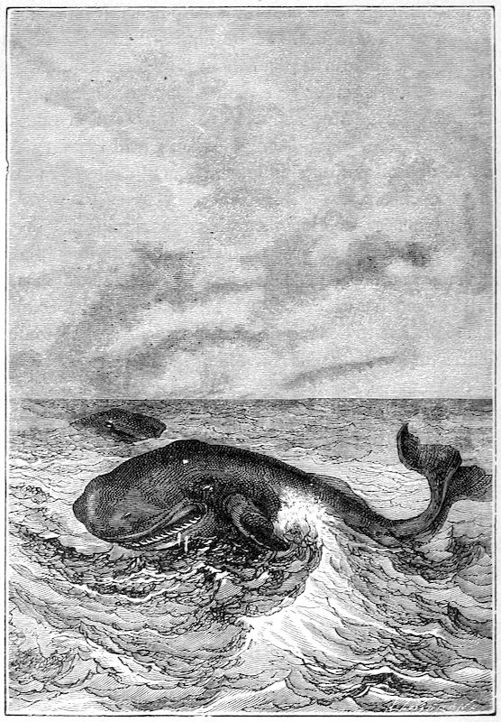
De mar, de superfície líquida, já não havia sinal diante de nossos olhos. Sob o esporão do Nautilus estendia-se uma vasta planície atormentada, emaranhada de blocos confusos, com toda aquela mixórdia caprichosa que caracteriza a superfície de um rio algum tempo antes do degelo, mas em proporções gigantescas. Aqui e ali, picos agudos, agulhas delgadas elevando-se a uma altura de duzentos pés; mais longe, uma sequência de falésias cortadas a prumo e revestidas de tons acinzentados, vastos espelhos que refletiam alguns raios de sol meio afogados nas brumas. Depois, sobre aquela natureza desolada, um silêncio feroz, mal rompido pelo bater de asas dos petréis ou das pardelas. Tudo estava gelado então, até o ruído.

O Nautilus teve, pois, de parar em sua aventurosa corrida no meio dos campos de gelo.
— Senhor — disse-me naquele dia Ned Land —, se o seu capitão for mais longe!…
— E então?
— Será um homem e tanto.
— Por quê, Ned?
— Porque ninguém pode atravessar a banquisa. Ele é poderoso, o seu capitão; mas, com mil diabos!, não é mais poderoso que a natureza, e onde ela pôs limites é preciso parar, queira ou não.
— De fato, Ned Land, e no entanto eu gostaria de saber o que há atrás desta banquisa! Um muro, eis o que mais me irrita!
— O senhor tem razão — disse Conseil. — Os muros só foram inventados para irritar os sábios. Não deveria haver muros em parte alguma.
— Bom! — fez o canadense. — Atrás desta banquisa, sabe-se bem o que há.
— O quê? — perguntei.
— Gelo, e sempre gelo!
— O senhor está certo disso, Ned — repliquei —, mas eu não estou. É por isso que eu gostaria de ir ver.
— Pois bem, senhor professor — respondeu o canadense —, renuncie a essa ideia. O senhor chegou à banquisa, o que já é suficiente, e não irá mais longe, nem o senhor, nem o seu capitão Nemo, nem o Nautilus dele. E, queira ele ou não, voltaremos para o norte, isto é, para a terra das pessoas honestas.
Devo convir que Ned Land tinha razão e, enquanto os navios não forem feitos para navegar sobre os campos de gelo, terão de parar diante da banquisa.
De fato, apesar de seus esforços, apesar dos meios poderosos empregados para separar os gelos, o Nautilus ficou reduzido à imobilidade. Normalmente, quem não pode ir mais longe tem o recurso de voltar sobre seus passos. Mas ali voltar era tão impossível quanto avançar, pois as passagens tinham-se fechado atrás de nós, e, por pouco que nosso aparelho permanecesse parado, não tardaria a ficar bloqueado. Foi justamente o que aconteceu por volta das duas horas da tarde, e o gelo novo formou-se em seus flancos com uma rapidez espantosa. Tive de confessar que a conduta do capitão Nemo era mais que imprudente.
Eu estava naquele momento na plataforma. O capitão, que observava a situação havia alguns instantes, disse-me:
— Pois bem, senhor professor, o que acha?
— Acho que estamos presos, capitão.
— Presos! E como entende isso?
— Entendo que não podemos ir nem para a frente, nem para trás, nem para nenhum lado. É, creio, o que se chama “presos”, pelo menos nos continentes habitados.
— Então, senhor Aronnax, acha que o Nautilus não poderá se desvencilhar?
— Dificilmente, capitão, pois a estação já está avançada demais para que o senhor conte com um degelo.
— Ah, senhor professor — respondeu o capitão Nemo num tom irônico —, o senhor será sempre o mesmo! Só vê impedimentos e obstáculos! Eu lhe afirmo que não só o Nautilus se desvencilhará, como irá mais longe ainda!
— Mais longe para o sul? — perguntei, olhando para o capitão.
— Sim, senhor, irá ao polo.
— Ao polo! — exclamei, sem poder conter um movimento de incredulidade.
— Sim! — respondeu friamente o capitão. — Ao polo antártico, a esse ponto desconhecido onde se cruzam todos os meridianos do globo. O senhor sabe se faço do Nautilus o que quero.
Sim! Eu sabia. Sabia que aquele homem era audacioso até a temeridade! Mas vencer os obstáculos que eriçam o polo sul, mais inacessível que o polo norte, ainda não atingido pelos mais ousados navegadores, não era uma empresa absolutamente insensata, e que só o espírito de um louco podia conceber?
Veio-me então a ideia de perguntar ao capitão Nemo se ele já descobrira aquele polo que o pé de uma criatura humana jamais pisara.
— Não, senhor — respondeu-me —, e nós o descobriremos juntos. Onde outros fracassaram, eu não fracassarei. Nunca levei meu Nautilus tão longe nos mares austrais; mas, repito-lhe, ele irá mais longe ainda.
— Quero acreditar no senhor, capitão — retomei, num tom um tanto irônico. — Acredito! Avancemos! Não há obstáculos para nós! Quebremos esta banquisa! Façamo-la saltar e, se ela resistir, demos asas ao Nautilus, para que possa passar por cima!
— Por cima, senhor professor? — respondeu tranquilamente o capitão Nemo. — Não por cima, mas por baixo.
— Por baixo! — exclamei.
Uma súbita revelação dos projetos do capitão acabava de iluminar meu espírito. Eu compreendera. As maravilhosas qualidades do Nautilus iam servi-lo mais uma vez naquela empresa sobre-humana!
— Vejo que começamos a nos entender, senhor professor — disse-me o capitão, meio sorrindo. — O senhor já entrevê a possibilidade (eu direi o sucesso) desta tentativa. O que é impraticável com um navio comum torna-se fácil para o Nautilus. Se um continente emerge no polo, ele parará diante desse continente. Mas se, ao contrário, é o mar livre que o banha, ele irá ao próprio polo!
— De fato — disse eu, arrastado pelo raciocínio do capitão —, se a superfície do mar está solidificada pelos gelos, suas camadas inferiores estão livres, por aquela razão providencial que colocou o máximo de densidade da água do mar num grau superior ao da congelação. E, se não me engano, a parte imersa desta banquisa está para a parte emersa como quatro está para um?
— Mais ou menos, senhor professor. Para cada pé que os icebergs têm acima do mar, têm três abaixo. Ora, como essas montanhas de gelo não ultrapassam uma altura de cem metros, só afundam trezentos. Ora, o que são trezentos metros para o Nautilus?
— Nada, senhor.
— Ele poderá até ir buscar, a uma profundidade maior, aquela temperatura uniforme das águas marinhas, e ali desafiaremos impunemente os trinta ou quarenta graus de frio da superfície.
— Justo, senhor, muito justo — respondi, animando-me.
— A única dificuldade — retomou o capitão Nemo — será permanecer vários dias imersos sem renovar nossa provisão de ar.
— É só isso? — repliquei. — O Nautilus tem vastos reservatórios; nós os encheremos, e eles nos fornecerão todo o oxigênio de que precisarmos.
— Bem pensado, senhor Aronnax — respondeu, sorrindo, o capitão. — Mas, não querendo que o senhor possa acusar-me de temeridade, submeto-lhe de antemão todas as minhas objeções.
— Ainda tem alguma?
— Uma só. É possível, se o mar existe no polo sul, que esse mar esteja inteiramente congelado e, por conseguinte, que não possamos voltar à sua superfície!
— Ora, senhor, esquece que o Nautilus está armado com um temível esporão? Não poderemos lançá-lo diagonalmente contra esses campos de gelo, que se abrirão com o choque?
— Ah, senhor professor, o senhor está cheio de ideias hoje!
— Aliás, capitão — acrescentei, entusiasmando-me cada vez mais —, por que não se encontraria o mar livre no polo sul como no polo norte? Os polos do frio e os polos da terra não se confundem nem no hemisfério austral nem no hemisfério boreal e, até prova em contrário, deve-se supor ou um continente ou um oceano livre de gelos nesses dois pontos do globo.
— Também creio, senhor Aronnax — respondeu o capitão Nemo. — Só lhe farei observar que, depois de ter levantado tantas objeções contra meu projeto, agora o senhor me esmaga com argumentos a seu favor.
O capitão Nemo dizia a verdade. Eu chegara a vencê-lo em audácia! Era eu quem o arrastava para o polo! Eu o precedia, eu o deixava para trás… Mas não, pobre louco! O capitão Nemo conhecia melhor que você os prós e os contras da questão e divertia-se vendo-o arrebatado pelos devaneios do impossível!
No entanto, ele não perdera um instante. A um sinal, o imediato apareceu. Os dois homens conversaram rapidamente em sua linguagem incompreensível e, seja porque o imediato tivesse sido avisado antes, seja porque achasse o projeto praticável, não deixou ver nenhuma surpresa.
Mas, por impassível que fosse, não mostrou impassibilidade mais completa que a de Conseil quando anunciei àquele digno rapaz nossa intenção de avançar até o polo sul. Um “como for do agrado do senhor” acolheu minha comunicação, e tive de me contentar com isso. Quanto a Ned Land, se jamais ombros se ergueram alto, foram os do canadense.
— Veja, senhor — disse-me ele —, o senhor e o seu capitão Nemo me dão pena!
— Mas iremos ao polo, mestre Ned.
— Possível, mas não voltarão de lá!
E Ned Land voltou para sua cabine, “para não fazer uma desgraça”, disse ele ao deixar-me.
Entretanto, os preparativos daquela audaciosa tentativa tinham começado. As poderosas bombas do Nautilus recalcavam o ar para os reservatórios e armazenavam-no a uma alta pressão. Por volta das quatro horas, o capitão Nemo anunciou-me que as escotilhas da plataforma iam ser fechadas. Lancei um último olhar à espessa banquisa que íamos transpor. O tempo estava claro, a atmosfera bastante pura, o frio muito vivo, doze graus abaixo de zero; mas, como o vento se acalmara, essa temperatura não parecia insuportável demais.
Uns dez homens subiram aos flancos do Nautilus e, armados de picaretas, quebraram o gelo em volta do casco, que logo ficou livre. Operação executada rapidamente, pois o gelo novo ainda estava fino. Entramos todos. Os reservatórios habituais encheram-se daquela água mantida livre na linha de flutuação. O Nautilus não tardou a descer.
Eu tomara lugar no salão com Conseil. Pelo vidro aberto, olhávamos as camadas inferiores do Oceano austral. O termômetro subia. A agulha do manômetro desviava-se no mostrador.
A cerca de trezentos metros, como previra o capitão Nemo, flutuávamos sob a superfície ondulada da banquisa. Mas o Nautilus mergulhou mais fundo ainda. Atingiu uma profundidade de oitocentos metros. A temperatura da água, que dava doze graus na superfície, já não acusava mais que onze. Dois graus já tinham sido ganhos. Nem é preciso dizer que a temperatura do Nautilus, elevada por seus aparelhos de aquecimento, se mantinha num grau muito superior. Todas as manobras se realizavam com uma precisão extraordinária.
— Passaremos, com o perdão do senhor — disse-me Conseil.
— Conto com isso! — respondi, num tom de profunda convicção.
Sob aquele mar livre, o Nautilus tomara diretamente o caminho do polo, sem se afastar do quinquagésimo segundo meridiano. De 67° 30′ a 90°, restavam a percorrer vinte e dois graus e meio em latitude, isto é, pouco mais de quinhentas léguas. O Nautilus adotou uma velocidade média de vinte e seis milhas por hora, a velocidade de um trem expresso. Se a conservasse, quarenta horas lhe bastariam para atingir o polo.
Durante parte da noite, a novidade da situação reteve-nos, Conseil e eu, junto ao vidro do salão. O mar iluminava-se sob a irradiação elétrica do farol. Mas estava deserto. Os peixes não se demoravam naquelas águas prisioneiras. Encontravam ali apenas uma passagem para ir do Oceano antártico ao mar livre do polo. Nossa marcha era rápida. Podia-se senti-la pelos estremecimentos do longo casco de aço.
Por volta das duas horas da manhã, fui descansar algumas horas. Conseil imitou-me. Ao atravessar os corredores, não encontrei o capitão Nemo. Supus que estivesse na cabine do timoneiro.
No dia seguinte, 19 de março, às cinco horas da manhã, retomei meu posto no salão. A barquilha elétrica indicou-me que a velocidade do Nautilus fora moderada. Ele subia então para a superfície, mas prudentemente, esvaziando devagar seus reservatórios.
Meu coração batia. Íamos emergir e reencontrar a atmosfera livre do polo?
Não. Um choque ensinou-me que o Nautilus batera na superfície inferior da banquisa, ainda muito espessa, a julgar pela surdez do ruído. De fato, tínhamos “tocado”, para empregar a expressão marítima, mas em sentido inverso e a mil pés de profundidade. O que dava dois mil pés de gelo acima de nós, dos quais mil emergiam. A banquisa apresentava ali uma altura superior à que tínhamos medido em suas bordas. Circunstância pouco tranquilizadora.
Durante aquele dia, o Nautilus recomeçou várias vezes a mesma experiência e sempre veio bater contra a muralha que formava um teto acima dele. Em certos instantes, encontrou-a a novecentos metros, o que acusava mil e duzentos metros de espessura, dos quais duzentos se elevavam acima da superfície do Oceano. Era o dobro de sua altura no momento em que o Nautilus mergulhara sob as ondas.
Anotei cuidadosamente essas diversas profundidades e obtive assim o perfil submarino daquela cadeia que se desenvolvia sob as águas.
À noite, nenhuma mudança sobreviera em nossa situação. Sempre o gelo entre quatrocentos e quinhentos metros de profundidade. Diminuição evidente, mas que espessura ainda entre nós e a superfície do Oceano!
Eram então oito horas. Havia já quatro horas que o ar deveria ter sido renovado no interior do Nautilus, segundo o hábito diário de bordo. No entanto, eu não sofria demais, embora o capitão Nemo ainda não tivesse pedido a seus reservatórios um suplemento de oxigênio.
Meu sono foi penoso naquela noite. Esperança e medo assediavam-me alternadamente. Levantei-me várias vezes. As tentativas às apalpadelas do Nautilus continuavam. Por volta das três horas da manhã, observei que a superfície inferior da banquisa era encontrada a apenas cinquenta metros de profundidade. Cento e cinquenta pés separavam-nos então da superfície das águas. A banquisa voltava pouco a pouco a ser ice-field. A montanha refazia-se planície.
Meus olhos já não deixavam o manômetro. Continuávamos a subir, seguindo em diagonal a superfície resplandecente que cintilava sob os raios elétricos. A banquisa baixava, por cima e por baixo, em rampas alongadas. Afinava de milha em milha.
Enfim, às seis horas da manhã daquele memorável dia 19 de março, a porta do salão abriu-se. O capitão Nemo apareceu.
— O mar livre! — disse-me ele.
Precipitei-me para a plataforma. Sim! O mar livre. Apenas alguns pedaços de gelo esparsos, icebergs móveis; ao longe, um mar extenso; um mundo de aves nos ares e miríades de peixes sob aquelas águas que, conforme os fundos, variavam do azul intenso ao verde-oliva. O termômetro marcava três graus centígrados acima de zero. Era como uma primavera relativa encerrada atrás daquela banquisa, cujas massas distantes se perfilavam no horizonte do norte.
— Estamos no polo? — perguntei ao capitão, com o coração palpitante.
— Não sei — respondeu-me. — Ao meio-dia, faremos o ponto.
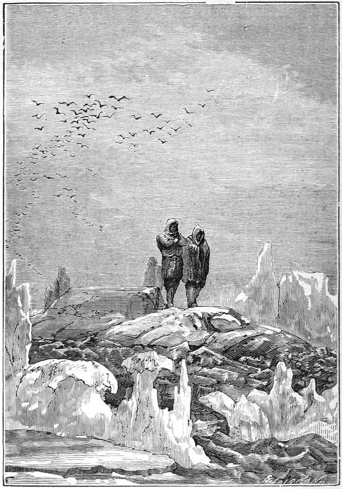
— Mas o sol se mostrará através destas brumas? — disse eu, olhando para o céu acinzentado.
— Por pouco que apareça, me bastará — respondeu o capitão.
A dez milhas do Nautilus, para o sul, uma ilhota solitária elevava-se a uma altura de duzentos metros. Avançávamos para ela, mas prudentemente, pois aquele mar podia estar semeado de escolhos.
Uma hora depois, tínhamos alcançado a ilhota. Duas horas mais tarde, acabávamos de contorná-la. Media de quatro a cinco milhas de circunferência. Um canal estreito separava-a de uma terra considerável, um continente talvez, cujos limites não podíamos avistar. A existência dessa terra parecia dar razão às hipóteses de Maury. O engenhoso americano observou, de fato, que entre o polo sul e o sexagésimo paralelo o mar está coberto de gelos flutuantes de dimensões enormes, que nunca se encontram no Atlântico norte. Desse fato tirou a conclusão de que o círculo antártico encerra terras consideráveis, já que os icebergs não podem formar-se em pleno mar, mas somente junto às costas. Segundo seus cálculos, a massa dos gelos que envolvem o polo austral forma uma vasta calota, cuja largura deve atingir quatro mil quilômetros.

Entretanto, o Nautilus, por medo de encalhar, parara a três amarras de uma praia dominada por um soberbo amontoado de rochas. O escaler foi lançado ao mar. O capitão, dois de seus homens carregando os instrumentos, Conseil e eu embarcamos nele. Eram dez horas da manhã. Eu não vira Ned Land. O canadense, sem dúvida, não queria desdizer-se diante do polo sul.
Algumas remadas levaram o escaler até a areia, onde encalhou. No momento em que Conseil ia saltar em terra, eu o retive.
— Senhor — disse eu ao capitão Nemo —, ao senhor cabe a honra de pôr o pé primeiro nesta terra.
— Sim, senhor — respondeu o capitão —, e, se não hesito em pisar este solo do polo, é porque até hoje nenhum ser humano deixou aqui o rastro de seus passos.
Dito isso, saltou levemente na areia. Uma viva emoção fazia-lhe bater o coração. Subiu a um rochedo que terminava em saliência um pequeno promontório e ali, de braços cruzados, olhar ardente, imóvel, mudo, pareceu tomar posse daquelas regiões austrais. Depois de cinco minutos passados nesse êxtase, voltou-se para nós.
— Quando quiser, senhor — gritou-me.
Desembarquei, seguido de Conseil, deixando os dois homens no escaler.
O solo, numa longa extensão, apresentava um tufo de cor avermelhada, como se fosse feito de tijolo moído. Escórias, correntes de lava e pedras-pomes cobriam-no. Não se podia ignorar sua origem vulcânica. Em certos lugares, algumas leves fumarolas, desprendendo um cheiro sulfuroso, atestavam que os fogos interiores ainda conservavam sua força expansiva. No entanto, tendo subido a uma alta escarpa, não vi nenhum vulcão num raio de várias milhas. Sabe-se que, nessas paragens antárticas, James Ross encontrou as crateras do Erebus e do Terror em plena atividade no centésimo sexagésimo sétimo meridiano e a 77° 32′ de latitude.
A vegetação daquele continente desolado pareceu-me extremamente reduzida. Alguns liquens da espécie Usnea melanoxantha espalhavam-se sobre as rochas negras. Certas plântulas microscópicas, diatomáceas rudimentares, espécie de células dispostas entre duas conchas quartzosas, e longos fucos púrpura e carmesim, sustentados por pequenas bexigas natatórias e que a ressaca atirava à costa, compunham toda a magra flora daquela região.
A praia estava semeada de moluscos, pequenos mexilhões, lapas, berbigões lisos em forma de coração e, particularmente, clios de corpo oblongo e membranoso, cuja cabeça é formada por dois lobos arredondados. Vi também miríades daqueles clios boreais, de três centímetros de comprimento, dos quais a baleia engole um mundo a cada bocado. Esses encantadores pterópodes, verdadeiras borboletas do mar, animavam as águas livres na orla da praia.
Entre outros zoófitos, apareciam nos baixios algumas arborescências coralígenas, daquelas que, segundo James Ross, vivem nos mares antárticos até mil metros de profundidade; depois, pequenos alcionários pertencentes à espécie procellaria pelagica, assim como um grande número de astérias próprias daqueles climas e de estrelas-do-mar que constelavam o solo.
Mas onde a vida superabundava era nos ares. Ali voavam e esvoaçavam aos milhares aves de espécies variadas, que nos ensurdeciam com seus gritos. Outras atulhavam as rochas, olhando-nos passar sem medo e apertando-se familiarmente sob nossos passos. Eram pinguins, tão ágeis e flexíveis na água, onde às vezes foram confundidos com rápidos bonitos, quanto desajeitados e pesados em terra. Soltavam gritos bizarros e formavam assembleias numerosas, sóbrias de gestos, mas pródigas de clamores.
Entre as aves, notei quionídeos, da família das pernaltas, do tamanho de pombos, de cor branca, bico curto e cônico, o olho emoldurado por um círculo vermelho. Conseil fez provisão deles, pois essas aves, convenientemente preparadas, constituem um prato agradável. Nos ares passavam albatrozes fuliginosos de quatro metros de envergadura, justamente chamados os abutres do Oceano; petréis gigantescos, entre outros os quebrantahuesos de asas arqueadas, que são grandes devoradores de focas; pombas-do-cabo, espécie de pequenos patos cuja parte superior do corpo é preta e branca; enfim, toda uma série de petréis, uns esbranquiçados, de asas debruadas de castanho, outros azuis e próprios dos mares antárticos, aqueles “tão oleosos”, disse eu a Conseil, “que os habitantes das ilhas Feroe se contentam em adaptar-lhes um pavio antes de acendê-los”.
— Um pouco mais — respondeu Conseil — e seriam lâmpadas perfeitas! Depois disso, não se pode exigir que a natureza os tenha previamente munido de um pavio!
Depois de meia milha, o solo mostrou-se todo crivado de ninhos de pinguins, espécie de tocas dispostas para a postura, das quais escapavam numerosas aves. O capitão Nemo mandou caçar mais tarde algumas centenas, pois sua carne escura é muito comestível. Soltavam zurros de burro. Esses animais, do tamanho de um ganso, cor de ardósia no corpo, brancos por baixo e com uma gravata orlada de amarelo-limão, deixavam-se matar a pedradas sem tentar fugir.
Entretanto, a bruma não se levantava e, às onze horas, o sol ainda não aparecera. Sua ausência não deixava de me inquietar. Sem ele, nenhuma observação possível. Como determinar então se tínhamos atingido o polo?
Quando me juntei ao capitão Nemo, encontrei-o silenciosamente apoiado num pedaço de rocha e olhando o céu. Parecia impaciente, contrariado. Mas o que fazer? Aquele homem audacioso e poderoso não comandava o sol como comandava o mar.
O meio-dia chegou sem que o astro do dia se tivesse mostrado um só instante. Não se podia sequer reconhecer o lugar que ocupava atrás da cortina de bruma. Logo essa bruma veio a desfazer-se em neve.
— Até amanhã — disse-me simplesmente o capitão, e regressamos ao Nautilus no meio dos turbilhões da atmosfera.
Durante nossa ausência, as redes tinham sido estendidas, e observei com interesse os peixes que acabavam de ser içados a bordo. Os mares antárticos servem de refúgio a um grande número de migradores, que fogem das tempestades das zonas menos elevadas para cair, é verdade, sob os dentes das toninhas e das focas. Notei alguns cotos austrais, de um decímetro de comprimento, espécie de cartilaginosos esbranquiçados, atravessados de faixas lívidas e armados de aguilhões; depois quimeras antárticas, de três pés de comprimento, de corpo muito alongado, pele branca, prateada e lisa, cabeça arredondada, dorso munido de três nadadeiras, o focinho terminado por uma tromba que se recurva para a boca. Provei sua carne, mas achei-a insípida, apesar da opinião de Conseil, que se acomodou muito bem a ela.
A tempestade de neve durou até o dia seguinte. Era impossível permanecer na plataforma. Do salão, onde eu anotava os incidentes daquela excursão ao continente polar, ouvia os gritos dos petréis e dos albatrozes que brincavam no meio da tormenta. O Nautilus não ficou imóvel e, costeando o litoral, avançou ainda umas dez milhas para o sul, no meio daquela meia-claridade que o sol deixava ao rasar as bordas do horizonte.
No dia seguinte, 20 de março, a neve cessara. O frio estava um pouco mais vivo. O termômetro marcava dois graus abaixo de zero. Os nevoeiros dissiparam-se, e esperei que naquele dia nossa observação pudesse efetuar-se.
Como o capitão Nemo ainda não aparecera, o escaler levou-nos, Conseil e eu, e deixou-nos em terra. A natureza do solo era a mesma, vulcânica. Por toda parte, vestígios de lavas, de escórias, de basaltos, sem que eu avistasse a cratera que os vomitara. Aqui como lá, miríades de aves animavam aquela parte do continente polar. Mas esse império, elas o partilhavam então com vastos rebanhos de mamíferos marinhos que nos olhavam com seus olhos meigos. Eram focas de espécies diversas, umas estendidas no solo, outras deitadas em pedaços de gelo à deriva, várias saindo do mar ou voltando a ele. Não fugiam à nossa aproximação, nunca tendo tido contato com o homem, e eu contava ali com que abastecer algumas centenas de navios.
— Palavra — disse Conseil —, é uma sorte que Ned Land não nos tenha acompanhado!
— Por quê, Conseil?
— Porque aquele caçador furioso teria matado tudo.
— Tudo é dizer muito, mas creio, de fato, que não teríamos podido impedir nosso amigo canadense de arpoar alguns desses magníficos cetáceos. O que teria desagradado ao capitão Nemo, pois ele não derrama inutilmente o sangue de bichos inofensivos.
— Ele tem razão.
— Certamente, Conseil. Mas diga-me, você ainda não classificou esses soberbos exemplares da fauna marinha?
— O senhor sabe bem — respondeu Conseil — que não sou muito versado na prática. Quando o senhor me tiver ensinado o nome desses animais…
— São focas e morsas.
— Dois gêneros que pertencem à família dos pinípedes — apressou-se a dizer meu sábio Conseil —, ordem dos carnívoros, grupo dos unguiculados, subclasse dos monodelfos, classe dos mamíferos, ramo dos vertebrados.
— Bem, Conseil — respondi —, mas esses dois gêneros, focas e morsas, dividem-se em espécies e, se não me engano, teremos aqui ocasião de observá-las. Andemos.
Eram oito horas da manhã. Restavam-nos quatro horas até o momento em que o sol poderia ser utilmente observado. Dirigi nossos passos para uma vasta baía que se recortava na falésia granítica da costa.
Ali, posso dizer que, a perder de vista à nossa volta, as terras e os pedaços de gelo estavam atulhados de mamíferos marinhos, e eu procurava involuntariamente com o olhar o velho Proteu, o pastor mitológico que guardava aqueles imensos rebanhos de Netuno. Eram sobretudo focas. Formavam grupos distintos, machos e fêmeas, o pai velando pela família, a mãe amamentando os filhotes, alguns jovens, já fortes, emancipando-se a alguns passos. Quando esses mamíferos queriam deslocar-se, iam por pequenos saltos devidos à contração do corpo e ajudavam-se bastante desajeitadamente de sua nadadeira imperfeita, que, no manati, seu congênere, forma um verdadeiro antebraço. Devo dizer que, na água, seu elemento por excelência, esses animais de espinha dorsal móvel, bacia estreita, pelo raso e cerrado e pés palmados nadam admiravelmente. Em repouso e em terra, assumiam atitudes extremamente graciosas. Por isso os antigos, observando sua fisionomia meiga, seu olhar expressivo, que o mais belo olhar de mulher não saberia superar, seus olhos aveludados e límpidos, suas poses encantadoras, e poetizando-os à sua maneira, metamorfosearam os machos em tritões e as fêmeas em sereias.
Fiz Conseil notar o desenvolvimento considerável dos lobos cerebrais naqueles inteligentes cetáceos. Nenhum mamífero, excetuando o homem, tem a matéria cerebral mais rica. Por isso as focas são suscetíveis de receber certa educação; domesticam-se facilmente, e penso, com alguns naturalistas, que, convenientemente adestradas, poderiam prestar grandes serviços como cães de pesca.
A maior parte dessas focas dormia sobre os rochedos ou na areia. Entre essas focas propriamente ditas, que não têm orelhas externas (diferindo nisso dos otarídeos, cuja orelha é saliente), observei várias variedades de estenorrincos, de três metros de comprimento, de pelo branco, cabeça de buldogue, armados de dez dentes em cada mandíbula, quatro incisivos em cima e embaixo e dois grandes caninos recortados em forma de flor-de-lis. Entre eles esgueiravam-se elefantes-marinhos, espécie de focas de tromba curta e móvel, os gigantes da espécie, que, com uma circunferência de vinte pés, mediam dez metros de comprimento. Não faziam nenhum movimento à nossa aproximação.
— Não são animais perigosos? — perguntou-me Conseil.
— Não — respondi —, a menos que sejam atacados. Quando uma foca defende o filhote, sua fúria é terrível, e não é raro que despedace a embarcação dos pescadores.
— Ela está no seu direito — replicou Conseil.
— Não digo que não.
Duas milhas adiante, fomos detidos pelo promontório que abrigava a baía contra os ventos do sul. Caía a prumo no mar e espumava sob a ressaca. Além dele estouravam rugidos formidáveis, como os que um rebanho de ruminantes poderia produzir.
— Ora — fez Conseil —, um concerto de touros?
— Não — disse eu —, um concerto de morsas.
— Estão brigando?
— Estão brigando ou brincando.
— Com o perdão do senhor, é preciso ver isso.
— É preciso ver, Conseil.
E eis-nos transpondo as rochas escuras, no meio de desmoronamentos imprevistos e sobre pedras que o gelo tornava muito escorregadias. Mais de uma vez rolei, em detrimento de meus rins. Conseil, mais prudente ou mais firme, mal tropeçava e levantava-me, dizendo:
— Se o senhor tivesse a bondade de afastar as pernas, conservaria melhor o equilíbrio.
Chegando à aresta superior do promontório, avistei uma vasta planície branca, coberta de morsas. Esses animais brincavam entre si. Eram uivos de alegria, não de cólera.
As morsas assemelham-se às focas pela forma do corpo e pela disposição dos membros. Mas faltam-lhes os caninos e os incisivos na mandíbula inferior, e, quanto aos caninos superiores, são duas presas de oitenta centímetros de comprimento, que medem trinta e três de circunferência no alvéolo. Esses dentes, feitos de um marfim compacto e sem estrias, mais duro que o dos elefantes e menos propenso a amarelar, são muito procurados. Por isso as morsas são alvo de uma caça irrefletida que logo as destruirá até a última, já que os caçadores, massacrando indistintamente as fêmeas prenhes e os jovens, matam mais de quatro mil a cada ano.
Passando junto daqueles curiosos animais, pude examiná-los à vontade, pois não se incomodavam. Sua pele era espessa e rugosa, de um tom fulvo puxando para o ruivo, o pelo curto e pouco basto. Alguns tinham quatro metros de comprimento. Mais tranquilos e menos medrosos que seus congêneres do norte, não confiavam a sentinelas escolhidas o cuidado de vigiar os arredores de seu acampamento.
Depois de ter examinado aquela cidade das morsas, pensei em voltar sobre meus passos. Eram onze horas e, se o capitão Nemo se encontrasse em condições favoráveis para observar, eu queria estar presente à sua operação. No entanto, não esperava que o sol se mostrasse naquele dia. Nuvens esmagadas sobre o horizonte ocultavam-no a nossos olhos. Parecia que aquele astro ciumento não queria revelar a seres humanos aquele ponto inabordável do globo.
Entretanto, pensei em voltar para o Nautilus. Seguimos uma trilha estreita e íngreme que corria no alto da falésia. Às onze e meia, tínhamos chegado ao ponto de desembarque. O escaler encalhado deixara o capitão em terra. Avistei-o de pé sobre um bloco de basalto. Seus instrumentos estavam perto dele. Seu olhar fixava-se no horizonte do norte, junto ao qual o sol descrevia então sua curva alongada.
Tomei lugar a seu lado e esperei sem falar. O meio-dia chegou e, como na véspera, o sol não se mostrou.
Era uma fatalidade. A observação falhava mais uma vez. Se no dia seguinte não se realizasse, seria preciso renunciar definitivamente a determinar nossa posição.

De fato, estávamos precisamente a 20 de março. No dia seguinte, 21, dia do equinócio, sem contar a refração, o sol desapareceria sob o horizonte por seis meses, e com seu desaparecimento começaria a longa noite polar. Desde o equinócio de setembro, ele emergira do horizonte setentrional, elevando-se em espirais alongadas até 21 de dezembro. Nessa época, solstício de verão daquelas regiões boreais, começara a descer de novo, e no dia seguinte devia lançar-lhes seus últimos raios.
Comuniquei minhas observações e meus temores ao capitão Nemo.
— O senhor tem razão, senhor Aronnax — disse-me ele. — Se amanhã eu não obtiver a altura do sol, não poderei retomar essa operação antes de seis meses. Mas, justamente porque os acasos de minha navegação me trouxeram a estes mares no dia 21 de março, meu ponto será fácil de determinar se, ao meio-dia, o sol se mostrar a nossos olhos.

— Por quê, capitão?
— Porque, quando o astro do dia descreve espirais tão alongadas, é difícil medir exatamente sua altura acima do horizonte, e os instrumentos ficam expostos a cometer erros graves.
— Como procederá, então?
— Empregarei apenas meu cronômetro — respondeu-me o capitão Nemo. — Se amanhã, 21 de março, ao meio-dia, o disco do sol, levando em conta a refração, for cortado exatamente pelo horizonte do norte, é que estou no polo sul.
— De fato — disse eu. — Contudo, essa afirmação não é matematicamente rigorosa, porque o equinócio não cai necessariamente ao meio-dia.
— Sem dúvida, senhor, mas o erro não será de cem metros, e não precisamos de mais. Até amanhã, então.
O capitão Nemo voltou a bordo. Conseil e eu ficamos até as cinco horas percorrendo a praia, observando e estudando. Não recolhi nenhum objeto curioso, a não ser um ovo de pinguim, notável pelo tamanho, pelo qual um colecionador teria pago mais de mil francos. Sua cor isabel, as listras e os caracteres que o ornavam como outros tantos hieróglifos faziam dele um bibelô raro. Coloquei-o nas mãos de Conseil, e o prudente rapaz, de pé firme, segurando-o como uma preciosa porcelana da China, levou-o intacto ao Nautilus.
Lá, depositei aquele ovo raro sob uma das vitrines do museu. Ceei com apetite um excelente pedaço de fígado de foca, cujo gosto lembrava o da carne de porco. Depois deitei-me, não sem ter invocado, como um hindu, os favores do astro radiante.
No dia seguinte, 21 de março, desde as cinco horas da manhã, subi à plataforma. Encontrei ali o capitão Nemo.
— O tempo está clareando um pouco — disse-me ele. — Tenho boa esperança. Depois do almoço, iremos a terra escolher um posto de observação.
Combinado esse ponto, fui procurar Ned Land. Eu gostaria de levá-lo comigo. O obstinado canadense recusou, e vi bem que sua taciturnidade, assim como seu mau humor, aumentavam dia após dia. Afinal, não lamentei sua teimosia naquela circunstância. Na verdade, havia focas demais em terra, e não convinha submeter aquele pescador irrefletido a essa tentação.
Terminado o almoço, fui a terra. O Nautilus subira ainda algumas milhas durante a noite. Estava ao largo, a uma boa légua de uma costa dominada por um pico agudo de quatrocentos a quinhentos metros. O escaler levava comigo o capitão Nemo, dois homens da tripulação e os instrumentos, isto é, um cronômetro, uma luneta e um barômetro.
Durante nossa travessia, vi numerosas baleias que pertenciam às três espécies próprias dos mares austrais: a baleia-franca, ou “right-whale” dos ingleses, que não tem nadadeira dorsal; o hump-back, balenóptero de ventre pregueado, de vastas nadadeiras esbranquiçadas que, apesar de seu nome, não chegam a formar asas; e o fin-back, castanho-amarelado, o mais vivo dos cetáceos. Esse animal poderoso faz-se ouvir de longe quando projeta a uma grande altura suas colunas de ar e de vapor, que parecem turbilhões de fumaça. Esses diferentes mamíferos brincavam em bandos nas águas tranquilas, e vi bem que aquela bacia do polo antártico servia agora de refúgio aos cetáceos perseguidos com excessiva violência pelos caçadores.
Notei igualmente longos cordões esbranquiçados de salpas, espécie de moluscos agregados, e medusas de grande tamanho que se balançavam entre o remoinho das ondas.
Às nove horas, abordávamos a terra. O céu clareava. As nuvens fugiam para o sul. As brumas abandonavam a superfície fria das águas. O capitão Nemo dirigiu-se para o pico do qual queria sem dúvida fazer seu observatório. Foi uma ascensão penosa sobre lavas pontiagudas e pedras-pomes, no meio de uma atmosfera muitas vezes saturada pelas emanações sulfurosas das fumarolas. O capitão, para um homem desabituado de pisar a terra, subia as encostas mais íngremes com uma flexibilidade, uma agilidade que eu não conseguia igualar e que um caçador de camurças teria invejado.
Precisamos de duas horas para atingir o cume daquele pico, metade pórfiro, metade basalto. Dali, nossos olhares abarcavam um vasto mar que, para o norte, traçava nitidamente sua linha terminal sobre o fundo do céu. A nossos pés, campos deslumbrantes de brancura. Sobre nossa cabeça, um azul pálido, livre de brumas. Ao norte, o disco do sol, como uma bola de fogo já cortada pelo gume do horizonte. Do seio das águas elevavam-se às centenas, em feixes magníficos, jatos líquidos. Ao longe, o Nautilus, como um cetáceo adormecido. Atrás de nós, para o sul e o leste, uma terra imensa, um amontoado caótico de rochedos e de gelos cujo limite não se avistava.
O capitão Nemo, ao chegar ao cume do pico, determinou cuidadosamente sua altitude por meio do barômetro, pois devia levá-la em conta em sua observação.
Às quinze para o meio-dia, o sol, visto então apenas por refração, mostrou-se como um disco de ouro e espalhou seus últimos raios sobre aquele continente abandonado, sobre aqueles mares que o homem ainda nunca sulcou.
O capitão Nemo, munido de uma luneta de retículos, que por meio de um espelho corrigia a refração, observou o astro, que se afundava pouco a pouco abaixo do horizonte seguindo uma diagonal muito alongada. Eu segurava o cronômetro. Meu coração batia forte. Se o desaparecimento do meio disco do sol coincidisse com o meio-dia do cronômetro, estávamos no próprio polo.
— Meio-dia! — exclamei.
— O polo sul! — respondeu o capitão Nemo, com voz grave, entregando-me a luneta, que mostrava o astro do dia cortado precisamente em duas porções iguais pelo horizonte.
Olhei os últimos raios coroarem o pico e as sombras subirem pouco a pouco por suas encostas.
Nesse momento, o capitão Nemo, apoiando a mão em meu ombro, disse-me:
— Senhor, em 1600, o holandês Gheritk, arrastado pelas correntes e pelas tempestades, atingiu 64° de latitude sul e descobriu as Shetland do Sul. Em 1773, a 17 de janeiro, o ilustre Cook, seguindo o trigésimo oitavo meridiano, chegou a 67° 30′ de latitude e, em 1774, a 30 de janeiro, no centésimo nono meridiano, atingiu 71° 15′ de latitude. Em 1819, o russo Bellingshausen encontrou-se no sexagésimo nono paralelo e, em 1821, no sexagésimo sexto, a 111° de longitude oeste. Em 1820, o inglês Brunsfield foi detido no sexagésimo quinto grau. No mesmo ano, o americano Morrel, cujos relatos são duvidosos, subindo pelo quadragésimo segundo meridiano, descobria o mar livre a 70° 14′ de latitude. Em 1825, o inglês Powell não conseguia ultrapassar o sexagésimo segundo grau. No mesmo ano, um simples pescador de focas, o inglês Weddell, subia até 72° 14′ de latitude no trigésimo quinto meridiano e até 74° 15′ no trigésimo sexto. Em 1829, o inglês Forster, comandando o Chanticleer, tomava posse do continente antártico a 63° 26′ de latitude e 66° 26′ de longitude. Em 1831, o inglês Biscoe, a 1º de fevereiro, descobria a terra de Enderby a 68° 50′ de latitude; em 1832, a 5 de fevereiro, a terra de Adelaide a 67° de latitude; e, a 21 de fevereiro, a terra de Graham a 64° 45′ de latitude. Em 1838, o francês Dumont d’Urville, detido diante da banquisa a 62° 57′ de latitude, avistava a terra Luís Filipe; dois anos mais tarde, numa nova investida para o sul, nomeava a 66° 30′, em 21 de janeiro, a terra Adélia e, oito dias depois, a 64° 40′, a costa Clarie. Em 1838, o inglês Wilkes avançava até o sexagésimo nono paralelo no centésimo meridiano. Em 1839, o inglês Balleny descobria a terra Sabrina, no limite do círculo polar. Enfim, em 1842, o inglês James Ross, comandando o Erebus e o Terror, a 12 de janeiro, a 76° 56′ de latitude e 171° 7′ de longitude leste, encontrava a terra Vitória; no dia 23 do mesmo mês, atingia o septuagésimo quarto paralelo, o ponto mais alto alcançado até então; no dia 27, estava a 76° 8′; no dia 28, a 77° 32′; a 2 de fevereiro, a 78° 4′; e, em 1842, voltava ao septuagésimo primeiro grau, que não pôde ultrapassar. Pois bem, eu, capitão Nemo, neste 21 de março de 1868, atingi o polo sul no nonagésimo grau e tomo posse desta parte do globo, igual à sexta parte dos continentes conhecidos.
— Em nome de quem, capitão?
— No meu, senhor!
E, dizendo isso, o capitão Nemo desfraldou um pavilhão negro, que trazia um N de ouro esquartelado no tecido. Depois, voltando-se para o astro do dia, cujos últimos raios lambiam o horizonte do mar:
— Adeus, sol! — exclamou. — Desaparece, astro radiante! Deita-te sob este mar livre e deixa uma noite de seis meses estender suas sombras sobre meu novo domínio!
No dia seguinte, 22 de março, às seis horas da manhã, começaram os preparativos da partida. Os últimos clarões do crepúsculo fundiam-se na noite. O frio era vivo. As constelações resplandeciam com uma intensidade surpreendente. No zênite brilhava aquele admirável Cruzeiro do Sul, a estrela polar das regiões antárticas.
O termômetro marcava doze graus abaixo de zero e, quando o vento refrescava, causava mordidas cortantes. Os pedaços de gelo multiplicavam-se na água livre. O mar tendia a congelar-se por toda parte. Numerosas placas escuras, espalhadas em sua superfície, anunciavam a próxima formação do gelo novo. Evidentemente, a bacia austral, gelada durante os seis meses do inverno, era absolutamente inacessível. O que era feito das baleias durante esse período? Sem dúvida iam, por baixo da banquisa, procurar mares mais praticáveis. Quanto às focas e às morsas, habituadas a viver sob os climas mais duros, permaneciam naquelas paragens geladas. Esses animais têm o instinto de cavar buracos nos ice-fields e de mantê-los sempre abertos. É a esses buracos que vêm respirar; quando as aves, expulsas pelo frio, emigraram para o norte, esses mamíferos marinhos permanecem os únicos senhores do continente polar.
Entretanto, os reservatórios de água tinham-se enchido, e o Nautilus descia lentamente. A uma profundidade de mil pés, parou. Sua hélice bateu as ondas, e ele avançou direto para o norte com uma velocidade de quinze milhas por hora. Ao entardecer, já flutuava sob a imensa carapaça gelada da banquisa.
Os painéis do salão tinham sido fechados por prudência, pois o casco do Nautilus podia bater em algum bloco submerso. Por isso, passei aquele dia passando minhas notas a limpo. Meu espírito estava inteiramente entregue às lembranças do polo. Tínhamos atingido aquele ponto inacessível sem fadigas, sem perigo, como se nosso vagão flutuante tivesse deslizado sobre os trilhos de uma estrada de ferro. E agora começava verdadeiramente o regresso. Reservar-me-ia ainda semelhantes surpresas? Eu pensava que sim, tão inesgotável é a série das maravilhas submarinas! No entanto, nos cinco meses e meio desde que o acaso nos lançara a bordo, tínhamos percorrido catorze mil léguas, e, nesse percurso mais extenso que o Equador terrestre, quantos incidentes, curiosos ou terríveis, tinham encantado nossa viagem: a caçada nas florestas de Crespo, o encalhe no estreito de Torres, o cemitério de coral, as pescarias do Ceilão, o túnel arábico, os fogos de Santorini, os milhões da baía de Vigo, a Atlântida, o polo sul! Durante a noite, todas essas lembranças, passando de sonho em sonho, não deixaram meu cérebro adormecer um instante.
Às três horas da manhã, fui acordado por um choque violento. Eu me erguera na cama e escutava no meio da escuridão, quando fui bruscamente atirado para o meio do quarto. Evidentemente, o Nautilus adernava consideravelmente depois de ter batido.
Encostei-me às paredes e arrastei-me pelos corredores até o salão, iluminado pelo teto luminoso. Os móveis estavam virados. Felizmente, as vitrines, solidamente presas pela base, tinham resistido. Os quadros de estibordo, com o deslocamento da vertical, colavam-se às tapeçarias, enquanto os de bombordo se afastavam delas um pé pela borda inferior. O Nautilus estava, pois, deitado sobre estibordo e, além disso, completamente imóvel.
No interior, eu ouvia um ruído de passos, vozes confusas. Mas o capitão Nemo não apareceu. No momento em que eu ia deixar o salão, Ned Land e Conseil entraram.
— O que aconteceu? — perguntei-lhes logo.
— Eu vinha perguntar ao senhor — respondeu Conseil.
— Com mil diabos! — exclamou o canadense. — Eu sei muito bem! O Nautilus bateu e, a julgar pela inclinação que tem, não creio que se safe como da primeira vez no estreito de Torres.
— Mas pelo menos — perguntei — voltou à superfície do mar?
— Não sabemos — respondeu Conseil.
— É fácil verificar — respondi.
Consultei o manômetro. Para minha grande surpresa, indicava uma profundidade de trezentos e sessenta metros.
— O que quer dizer isso? — exclamei.
— É preciso interrogar o capitão Nemo — disse Conseil.
— Mas onde encontrá-lo? — perguntou Ned Land.
— Sigam-me — disse eu a meus dois companheiros.
Deixamos o salão. Na biblioteca, ninguém. Na escada central, no alojamento da tripulação, ninguém. Supus que o capitão Nemo devia estar na cabine do timoneiro. O melhor era esperar. Voltamos os três para o salão.
Passarei em silêncio as recriminações do canadense. Ele tinha bons motivos para se exaltar. Deixei-o desabafar seu mau humor à vontade, sem lhe responder.
Estávamos assim havia vinte minutos, procurando surpreender os menores ruídos que se produziam no interior do Nautilus, quando o capitão Nemo entrou. Não pareceu ver-nos. Sua fisionomia, habitualmente tão impassível, revelava certa inquietação. Observou silenciosamente a bússola, o manômetro, e veio pôr o dedo num ponto do planisfério, na parte que representava os mares austrais.
Não quis interrompê-lo. Somente alguns instantes mais tarde, quando ele se voltou para mim, eu lhe disse, devolvendo-lhe uma expressão de que ele se servira no estreito de Torres:
— Um incidente, capitão?
— Não, senhor — respondeu ele —, um acidente desta vez.
— Grave?
— Talvez.
— O perigo é imediato?
— Não.
— O Nautilus encalhou?
— Sim.
— E esse encalhe veio de?…
— De um capricho da natureza, não da imperícia dos homens. Nenhum erro foi cometido em nossas manobras. Todavia, não se pode impedir o equilíbrio de produzir seus efeitos. Podem-se desafiar as leis humanas, mas não resistir às leis naturais.
Singular momento escolhia o capitão Nemo para entregar-se a essa reflexão filosófica. Em suma, sua resposta não me ensinava nada.
— Posso saber, senhor — perguntei-lhe —, qual é a causa desse acidente?
— Um enorme bloco de gelo, uma montanha inteira, virou-se — respondeu-me. — Quando os icebergs são minados na base por águas mais quentes ou por choques repetidos, seu centro de gravidade sobe. Então eles se viram por inteiro, dão uma cambalhota. Foi o que aconteceu. Um desses blocos, ao virar-se, bateu no Nautilus, que flutuava sob as águas. Depois, deslizando sob seu casco e erguendo-o com uma força irresistível, trouxe-o para camadas menos densas, onde se encontra deitado de lado.
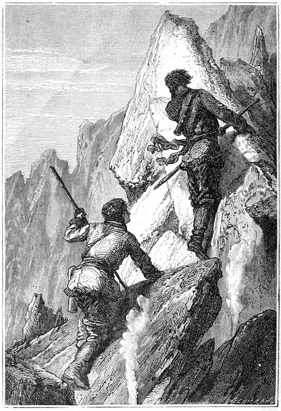
— Mas não se pode desvencilhar o Nautilus esvaziando seus reservatórios, de maneira a repô-lo em equilíbrio?
— É o que se está fazendo neste momento, senhor. O senhor pode ouvir as bombas funcionando. Veja a agulha do manômetro. Indica que o Nautilus está subindo, mas o bloco de gelo sobe com ele, e, até que um obstáculo detenha seu movimento ascensional, nossa posição não mudará.
De fato, o Nautilus mantinha a mesma inclinação para estibordo. Sem dúvida se endireitaria quando o próprio bloco parasse. Mas, nesse momento, quem sabe se não teríamos batido na parte superior da banquisa, se não seríamos terrivelmente comprimidos entre as duas superfícies geladas?
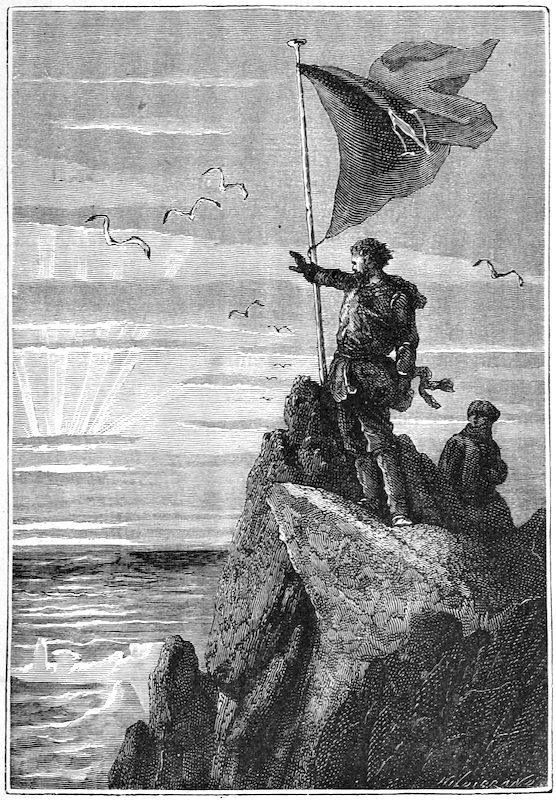
Eu refletia sobre todas as consequências daquela situação. O capitão Nemo não parava de observar o manômetro. O Nautilus, desde a queda do iceberg, subira cerca de cento e cinquenta pés, mas continuava a fazer o mesmo ângulo com a perpendicular.
De repente, um leve movimento fez-se sentir no casco. Evidentemente, o Nautilus endireitava-se um pouco. Os objetos suspensos no salão retomavam sensivelmente sua posição normal. As paredes aproximavam-se da verticalidade. Nenhum de nós falava. Com o coração emocionado, observávamos, sentíamos o endireitamento. O assoalho voltava a ficar horizontal sob nossos pés. Passaram-se dez minutos.
— Enfim, estamos aprumados! — exclamei.
— Sim — disse o capitão Nemo, dirigindo-se para a porta do salão.
— Mas vamos flutuar? — perguntei-lhe.
— Certamente — respondeu ele —, já que os reservatórios ainda não estão vazios, e, quando estiverem, o Nautilus terá de subir à superfície do mar.
O capitão saiu, e logo vi que, por ordem sua, tinham detido a marcha ascensional do Nautilus. De fato, ele teria em breve batido na parte inferior da banquisa, e era melhor mantê-lo entre duas águas.
— Escapamos por pouco! — disse então Conseil.
— Sim. Podíamos ter sido esmagados entre esses blocos de gelo, ou pelo menos aprisionados. E então, sem poder renovar o ar… Sim! Escapamos por pouco!
— Se é que acabou! — murmurou Ned Land.
Não quis iniciar com o canadense uma discussão inútil e não respondi. Aliás, os painéis abriram-se naquele momento, e a luz exterior irrompeu através do vidro desobstruído.
Estávamos em plena água, como eu disse; mas, a uma distância de dez metros, de cada lado do Nautilus, elevava-se uma deslumbrante muralha de gelo. Acima e abaixo, a mesma muralha. Acima, porque a superfície inferior da banquisa se desenvolvia como um teto imenso. Abaixo, porque o bloco virado, tendo deslizado pouco a pouco, encontrara nas muralhas laterais dois pontos de apoio que o mantinham naquela posição. O Nautilus estava aprisionado num verdadeiro túnel de gelo, de uns vinte metros de largura, cheio de uma água tranquila. Era-lhe, pois, fácil sair dele andando para a frente ou para trás e retomar depois, algumas centenas de metros mais abaixo, uma passagem livre sob a banquisa.
O teto luminoso fora apagado, e no entanto o salão resplandecia com uma luz intensa. É que a poderosa reverberação das paredes de gelo devolvia para ali violentamente as torrentes de luz do farol. Eu não saberia pintar o efeito dos raios voltaicos naqueles grandes blocos caprichosamente recortados, cujos ângulos, arestas e facetas lançavam, cada um, um clarão diferente, conforme a natureza dos veios que corriam no gelo. Mina deslumbrante de gemas, e particularmente de safiras, que cruzavam seus jatos azuis com o jato verde das esmeraldas. Aqui e ali, matizes opalinos de uma suavidade infinita corriam no meio de pontos ardentes, como outros tantos diamantes de fogo cujo brilho o olho não podia suportar. A potência do farol estava centuplicada, como a de uma lâmpada através das lâminas lenticulares de um farol de primeira ordem.
— Que lindo! Que lindo! — exclamou Conseil.
— Sim! — disse eu. — É um espetáculo admirável. Não é, Ned?
— Ah, com mil diabos, sim! — retrucou Ned Land. — É soberbo! Fico furioso de ser obrigado a admiti-lo. Nunca se viu nada igual. Mas esse espetáculo pode custar-nos caro. E, para dizer tudo, penso que estamos vendo aqui coisas que Deus quis proibir aos olhares do homem!
Ned tinha razão. Era belo demais. De repente, um grito de Conseil fez-me voltar.
— O que foi? — perguntei.
— Que o senhor feche os olhos! Que o senhor não olhe!
Conseil, dizendo isso, aplicava vivamente as mãos sobre as pálpebras.
— Mas o que você tem, meu rapaz?
— Estou ofuscado, cego!
Meus olhares voltaram-se involuntariamente para o vidro, mas não consegui suportar o fogo que o devorava.
Compreendi o que acontecera. O Nautilus acabava de se pôr em marcha a grande velocidade. Todos os brilhos tranquilos das muralhas de gelo tinham-se transformado então em riscos fulgurantes. Os fogos daquelas miríades de diamantes confundiam-se. O Nautilus, levado por sua hélice, viajava numa bainha de relâmpagos.
Os painéis do salão fecharam-se então. Tínhamos as mãos sobre os olhos, todos impregnados daqueles clarões concêntricos que flutuam diante da retina quando os raios solares a atingiram com violência excessiva. Foi preciso certo tempo para acalmar a perturbação de nossos olhares.
Enfim, nossas mãos baixaram.
— Palavra, eu nunca teria acreditado — disse Conseil.
— E eu ainda não acredito! — retrucou o canadense.
— Quando voltarmos à terra — acrescentou Conseil —, saciados de tantas maravilhas da natureza, o que pensaremos desses miseráveis continentes e das pequenas obras saídas das mãos dos homens? Não! O mundo habitado já não é digno de nós!
Tais palavras na boca de um flamengo impassível mostram a que grau de ebulição subira nosso entusiasmo. Mas o canadense não deixou de lançar nele sua gota de água fria.
— O mundo habitado! — disse ele, balançando a cabeça. — Fique tranquilo, amigo Conseil, não voltaremos a ele!
Eram então cinco horas da manhã. Nesse momento, produziu-se um choque na proa do Nautilus. Compreendi que seu esporão acabava de bater num bloco de gelo. Devia ser uma manobra falsa, pois aquele túnel submarino, obstruído de blocos, não oferecia uma navegação fácil. Pensei, pois, que o capitão Nemo, modificando sua rota, contornaria esses obstáculos ou seguiria as sinuosidades do túnel. Em todo caso, a marcha para a frente não podia estar absolutamente travada. Todavia, contra minha expectativa, o Nautilus tomou um movimento retrógrado muito pronunciado.
— Estamos voltando para trás? — disse Conseil.
— Sim — respondi. — Deve ser que, deste lado, o túnel não tem saída.
— E então?…
— Então — disse eu —, a manobra é bem simples. Voltaremos sobre nossos passos e sairemos pelo orifício sul. Só isso.
Falando assim, eu queria parecer mais tranquilo do que realmente estava. Entretanto, o movimento retrógrado do Nautilus acelerava-se e, andando com a hélice em reverso, arrastava-nos com grande rapidez.
— Será um atraso — disse Ned.
— Que importa, algumas horas a mais ou a menos, contanto que se saia.
— Sim — repetiu Ned Land —, contanto que se saia!
Andei durante alguns instantes do salão à biblioteca. Meus companheiros, sentados, calavam-se. Logo me atirei num divã e peguei um livro, que meus olhos percorreram maquinalmente.
Um quarto de hora depois, Conseil, aproximando-se de mim, disse-me:
— É muito interessante o que o senhor está lendo?
— Muito interessante — respondi.
— Acredito. É o livro do senhor que o senhor está lendo!
— Meu livro?
De fato, eu tinha na mão a obra dos Grandes fundos submarinos. Nem sequer me dera conta. Fechei o livro e retomei meu passeio. Ned e Conseil levantaram-se para se retirar.
— Fiquem, meus amigos — disse eu, retendo-os. — Fiquemos juntos até o momento em que tivermos saído deste beco sem saída.
— Como for do agrado do senhor — respondeu Conseil.
Passaram-se algumas horas. Eu observava muitas vezes os instrumentos suspensos na parede do salão. O manômetro indicava que o Nautilus se mantinha a uma profundidade constante de trezentos metros; a bússola, que continuava a dirigir-se para o sul; a barquilha, que andava com uma velocidade de vinte milhas por hora, velocidade excessiva num espaço tão apertado. Mas o capitão Nemo sabia que não podia apressar-se demais e que, naquele momento, os minutos valiam séculos.
Às oito e vinte e cinco, ocorreu um segundo choque. Na popa, desta vez. Empalideci. Meus companheiros tinham-se aproximado de mim. Eu agarrara a mão de Conseil. Interrogávamo-nos com o olhar, e mais diretamente do que se as palavras tivessem interpretado nosso pensamento.
Nesse momento, o capitão entrou no salão. Fui até ele.
— O caminho está barrado ao sul? — perguntei-lhe.
— Sim, senhor. O iceberg, ao virar-se, fechou toda saída.
— Estamos bloqueados?
— Sim.
Assim, em volta do Nautilus, acima, abaixo, um impenetrável muro de gelo. Éramos prisioneiros da banquisa! O canadense batera numa mesa com seu punho formidável. Conseil calava-se. Olhei para o capitão. Seu rosto retomara a impassibilidade habitual. Cruzara os braços. Refletia. O Nautilus já não se mexia.
O capitão tomou então a palavra:
— Senhores — disse ele, com voz calma —, há duas maneiras de morrer nas condições em que estamos.
Aquele personagem inexplicável tinha o ar de um professor de matemática que faz uma demonstração a seus alunos.
— A primeira — prosseguiu — é morrer esmagados. A segunda é morrer asfixiados. Não falo da possibilidade de morrer de fome, pois os mantimentos do Nautilus certamente durarão mais que nós. Preocupemo-nos, pois, com as chances de esmagamento ou de asfixia.
— Quanto à asfixia, capitão — respondi —, não é de temer, pois nossos reservatórios estão cheios.
— Justo — retomou o capitão Nemo —, mas eles só darão dois dias de ar. Ora, faz trinta e seis horas que estamos enterrados sob as águas, e a atmosfera já pesada do Nautilus pede para ser renovada. Dentro de quarenta e oito horas, nossa reserva estará esgotada.
— Pois bem, capitão, estejamos livres antes de quarenta e oito horas!
— Tentaremos, pelo menos, perfurando a muralha que nos cerca.
— De que lado? — perguntei.
— É o que a sonda nos dirá. Vou pousar o Nautilus no banco inferior, e meus homens, vestidos com escafandros, atacarão o iceberg por sua parede menos espessa.
— Podem-se abrir os painéis do salão?
— Sem inconveniente. Já não estamos em marcha.
O capitão Nemo saiu. Logo uns assobios me indicaram que a água se introduzia nos reservatórios. O Nautilus baixou lentamente e pousou no fundo de gelo a uma profundidade de trezentos e cinquenta metros, profundidade em que estava imerso o banco de gelo inferior.
— Meus amigos — disse eu —, a situação é grave, mas conto com sua coragem e sua energia.
— Senhor — respondeu-me o canadense —, não é neste momento que vou aborrecê-lo com minhas recriminações. Estou pronto a fazer tudo pela salvação comum.
— Bem, Ned — disse eu, estendendo a mão ao canadense.
— Acrescentarei — prosseguiu ele — que, sendo hábil em manejar a picareta como o arpão, se puder ser útil ao capitão, ele pode dispor de mim.
— Ele não recusará sua ajuda. Venha, Ned.
Conduzi o canadense ao compartimento onde os homens do Nautilus vestiam seus escafandros. Comuniquei ao capitão a proposta de Ned, que foi aceita. O canadense envergou sua roupa de mar e ficou pronto ao mesmo tempo que seus companheiros de trabalho. Cada um deles levava às costas o aparelho Rouquayrol, ao qual os reservatórios tinham fornecido uma larga quota de ar puro. Empréstimo considerável, mas necessário, feito à reserva do Nautilus. Quanto às lâmpadas Ruhmkorff, tornavam-se inúteis no meio daquelas águas luminosas e saturadas de raios elétricos.
Quando Ned ficou vestido, voltei ao salão, cujos vidros estavam descobertos, e, postado junto de Conseil, examinei as camadas circundantes que sustentavam o Nautilus.
Alguns instantes depois, víamos uma dúzia de homens da tripulação pôr os pés no banco de gelo e, entre eles, Ned Land, reconhecível por sua alta estatura. O capitão Nemo estava com eles.
Antes de proceder à escavação das muralhas, mandou fazer sondagens que deviam assegurar a boa direção dos trabalhos. Longas sondas foram enfiadas nas paredes laterais; mas, depois de quinze metros, ainda eram detidas pela espessa muralha. Era inútil atacar a superfície do teto, já que era a própria banquisa, que media mais de quatrocentos metros de altura. O capitão Nemo mandou então sondar a superfície inferior. Ali, dez metros de parede nos separavam da água. Tal era a espessura daquele ice-field. Tratava-se, portanto, de recortar nele um pedaço igual em superfície à linha de flutuação do Nautilus. Eram cerca de seis mil e quinhentos metros cúbicos a destacar, a fim de cavar um buraco pelo qual desceríamos abaixo do campo de gelo.
O trabalho foi imediatamente iniciado e conduzido com uma obstinação infatigável. Em vez de cavar em torno do Nautilus, o que teria acarretado maiores dificuldades, o capitão Nemo mandou traçar a imensa fossa a oito metros de sua alheta de bombordo. Depois, seus homens perfuraram-na simultaneamente em vários pontos de sua circunferência. Logo a picareta atacou vigorosamente aquela matéria compacta, e grandes blocos foram destacados da massa. Por um curioso efeito de peso específico, esses blocos, menos pesados que a água, voavam por assim dizer para a abóbada do túnel, que engrossava em cima o que diminuía embaixo. Mas pouco importava, desde que a parede inferior se afinasse na mesma medida.
Depois de duas horas de um trabalho enérgico, Ned Land voltou esgotado. Ele e seus companheiros foram substituídos por novos trabalhadores, aos quais nos juntamos, Conseil e eu. O imediato do Nautilus dirigia-nos.
A água pareceu-me singularmente fria, mas aqueci-me rapidamente manejando a picareta. Meus movimentos eram muito livres, embora se produzissem sob uma pressão de trinta atmosferas.
Quando voltei, depois de duas horas de trabalho, para tomar algum alimento e algum repouso, encontrei uma notável diferença entre o fluido puro que me fornecia o aparelho Rouquayrol e a atmosfera do Nautilus, já carregada de ácido carbônico. O ar não fora renovado havia quarenta e oito horas, e suas qualidades vivificantes estavam consideravelmente enfraquecidas. No entanto, num lapso de doze horas, só tínhamos retirado uma camada de gelo de um metro de espessura na superfície traçada, ou seja, cerca de seiscentos metros cúbicos. Admitindo que o mesmo trabalho fosse realizado a cada doze horas, ainda seriam precisos cinco noites e quatro dias para levar a bom termo aquela empresa.
— Cinco noites e quatro dias! — disse eu a meus companheiros. — E só temos ar para dois dias nos reservatórios.
— Sem contar — replicou Ned — que, uma vez fora desta maldita prisão, ainda estaremos aprisionados sob a banquisa e sem comunicação possível com a atmosfera!
Reflexão justa. Quem podia então prever o tempo mínimo necessário à nossa libertação? A asfixia não nos teria sufocado antes que o Nautilus pudesse voltar à superfície das ondas? Estaria ele destinado a perecer naquele túmulo de gelo com todos os que encerrava? A situação parecia terrível. Mas cada um a encarara de frente, e todos estavam decididos a cumprir seu dever até o fim.

Conforme minhas previsões, durante a noite, uma nova camada de um metro foi retirada do imenso alvéolo. Mas, de manhã, quando, vestido com meu escafandro, percorri a massa líquida a uma temperatura de seis a sete graus abaixo de zero, notei que as muralhas laterais se aproximavam pouco a pouco. As camadas de água afastadas da fossa, que o trabalho dos homens e o jogo das ferramentas não aqueciam, mostravam uma tendência a solidificar-se. Diante desse novo e iminente perigo, o que seria de nossas chances de salvação, e como impedir a solidificação daquele meio líquido, que teria feito estalar como vidro as paredes do Nautilus?

Não revelei esse novo perigo a meus dois companheiros. De que serviria arriscar abater a energia que empregavam no penoso trabalho do salvamento? Mas, quando voltei a bordo, fiz o capitão Nemo notar essa grave complicação.
— Eu sei — disse-me ele, naquele tom calmo que as mais terríveis conjunturas não conseguiam modificar. — É um perigo a mais, mas não vejo nenhum meio de evitá-lo. A única chance de salvação é ir mais depressa que a solidificação. Trata-se de chegar primeiro. Só isso.
Chegar primeiro! Enfim, eu já deveria estar habituado a essas maneiras de falar!
Naquele dia, durante várias horas, manejei a picareta com obstinação. Esse trabalho me sustentava. Aliás, trabalhar era deixar o Nautilus, era respirar diretamente aquele ar puro tirado dos reservatórios e fornecido pelos aparelhos, era abandonar uma atmosfera empobrecida e viciada.
Ao entardecer, a fossa aprofundara-se mais um metro. Quando voltei a bordo, quase fui asfixiado pelo ácido carbônico de que o ar estava saturado. Ah! Por que não tínhamos os meios químicos que teriam permitido expulsar aquele gás deletério! O oxigênio não nos faltava. Toda aquela água continha uma quantidade considerável dele e, decompondo-a por meio de nossas poderosas pilhas, ela nos teria restituído o fluido vivificante. Eu bem pensara nisso, mas de que serviria, já que o ácido carbônico, produto de nossa respiração, invadira todas as partes do navio? Para absorvê-lo, seria preciso encher recipientes de potassa cáustica e agitá-los incessantemente. Ora, essa matéria faltava a bordo, e nada a podia substituir.
Naquela noite, o capitão Nemo teve de abrir as torneiras de seus reservatórios e lançar algumas colunas de ar puro no interior do Nautilus. Sem essa precaução, não teríamos acordado.
No dia seguinte, 26 de março, retomei meu trabalho de mineiro, atacando o quinto metro. As paredes laterais e a superfície inferior da banquisa engrossavam visivelmente. Era evidente que se uniriam antes que o Nautilus conseguisse desvencilhar-se. O desespero tomou conta de mim por um instante. Minha picareta esteve a ponto de escapar-me das mãos. De que servia cavar, se eu devia perecer sufocado, esmagado por aquela água que se fazia pedra, um suplício que nem a ferocidade dos selvagens teria inventado? Parecia-me estar entre as formidáveis mandíbulas de um monstro, que se aproximavam irresistivelmente.
Nesse momento, o capitão Nemo, dirigindo o trabalho e trabalhando ele mesmo, passou perto de mim. Toquei-o com a mão e mostrei-lhe as paredes de nossa prisão. A muralha de estibordo avançara a menos de quatro metros do casco do Nautilus.
O capitão compreendeu-me e fez-me sinal para segui-lo. Voltamos a bordo. Tirado o escafandro, acompanhei-o ao salão.
— Senhor Aronnax — disse-me ele —, é preciso tentar algum meio heroico, ou vamos ser selados nesta água solidificada como em cimento.
— Sim! — disse eu. — Mas o que fazer?
— Ah! — exclamou ele. — Se o meu Nautilus fosse bastante forte para suportar essa pressão sem ser esmagado!
— E então? — perguntei, sem apreender a ideia do capitão.
— Não compreende — prosseguiu ele — que essa congelação da água viria em nosso auxílio? Não vê que, ao solidificar-se, ela faria estalar os campos de gelo que nos aprisionam, como faz, ao gelar, estalar as pedras mais duras? Não sente que ela seria um agente de salvação em vez de um agente de destruição?
— Sim, capitão, talvez. Mas, por maior que seja a resistência do Nautilus ao esmagamento, ele não poderia suportar essa pressão espantosa e ficaria achatado como uma folha de chapa.
— Eu sei, senhor. Não se deve, pois, contar com o socorro da natureza, mas conosco mesmos. É preciso opor-se a essa solidificação. É preciso travá-la. Não só as paredes laterais se estreitam, como não restam dez pés de água à proa ou à popa do Nautilus. A congelação nos alcança por todos os lados.
— Por quanto tempo — perguntei — o ar dos reservatórios nos permitirá respirar a bordo?
O capitão olhou-me de frente.
— Depois de amanhã — disse ele —, os reservatórios estarão vazios!
Um suor frio me invadiu. E, no entanto, devia eu espantar-me com essa resposta? Em 22 de março, o Nautilus mergulhara sob as águas livres do polo. Estávamos a 26. Havia cinco dias que vivíamos das reservas de bordo! E o que restava de ar respirável era preciso conservá-lo para os trabalhadores. No momento em que escrevo estas coisas, minha impressão ainda é tão viva que um terror involuntário se apodera de todo o meu ser, e o ar parece faltar a meus pulmões!
Entretanto, o capitão Nemo refletia, silencioso, imóvel. Visivelmente, uma ideia atravessava-lhe o espírito. Mas parecia repeli-la. Respondia negativamente a si mesmo. Enfim, estas palavras escaparam de seus lábios:
— A água fervente! — murmurou.
— A água fervente? — exclamei.
— Sim, senhor. Estamos encerrados num espaço relativamente restrito. Jatos de água fervente, injetada constantemente pelas bombas do Nautilus, não elevariam a temperatura deste meio e não retardariam sua congelação?
— É preciso tentar — disse eu, resolutamente.
— Tentemos, senhor professor.
O termômetro marcava então sete graus negativos no exterior. O capitão Nemo conduziu-me às cozinhas, onde funcionavam vastos aparelhos destiladores que forneciam a água potável por evaporação. Foram carregados de água, e todo o calor elétrico das pilhas foi lançado através das serpentinas banhadas pelo líquido. Em poucos minutos, essa água atingira cem graus. Foi dirigida para as bombas, enquanto uma água nova a substituía à medida que avançava. O calor desenvolvido pelas pilhas era tal que a água fria, tirada do mar, depois de apenas atravessar os aparelhos, chegava fervente aos corpos de bomba.
A injeção começou e, três horas depois, o termômetro marcava no exterior seis graus abaixo de zero. Era um grau ganho. Duas horas mais tarde, o termômetro só marcava quatro.
— Vamos conseguir — disse eu ao capitão, depois de ter seguido e controlado por numerosas observações os progressos da operação.
— Penso que sim — respondeu-me ele. — Não seremos esmagados. Só nos resta temer a asfixia.
Durante a noite, a temperatura da água subiu a um grau abaixo de zero. As injeções não conseguiram levá-la a um ponto mais elevado. Mas, como a congelação da água do mar só se produz a dois graus negativos, fiquei enfim tranquilo quanto aos perigos da solidificação.
No dia seguinte, 27 de março, seis metros de gelo tinham sido arrancados do alvéolo. Restavam apenas quatro metros a retirar. Eram ainda quarenta e oito horas de trabalho. O ar já não podia ser renovado no interior do Nautilus. Por isso aquele dia foi sempre piorando.
Um peso intolerável me esmagou. Por volta das três horas da tarde, essa sensação de angústia atingiu em mim um grau violento. Bocejos me deslocavam as mandíbulas. Meus pulmões arquejavam, procurando aquele fluido comburente, indispensável à respiração, que se rarefazia cada vez mais. Um torpor moral apoderou-se de mim. Eu estava estendido sem forças, quase sem sentidos. Meu bravo Conseil, tomado pelos mesmos sintomas, sofrendo os mesmos sofrimentos, não me deixava. Segurava-me a mão, encorajava-me, e eu ainda o ouvia murmurar:
— Ah! Se eu pudesse não respirar para deixar mais ar para o senhor!
As lágrimas me vinham aos olhos ao ouvi-lo falar assim.
Se nossa situação, a de todos, era intolerável no interior, com que pressa, com que felicidade vestíamos nossos escafandros para trabalhar por nossa vez! As picaretas ressoavam na camada gelada. Os braços cansavam-se, as mãos esfolavam-se, mas o que eram essas fadigas, que importavam esses ferimentos! O ar vital chegava aos pulmões! Respirava-se! Respirava-se!
E, no entanto, ninguém prolongava seu trabalho sob as águas além do tempo previsto. Cumprida a tarefa, cada um entregava a seus companheiros arquejantes o reservatório que devia derramar-lhes a vida. O capitão Nemo dava o exemplo e era o primeiro a submeter-se a essa severa disciplina. Chegada a hora, cedia seu aparelho a outro e voltava à atmosfera viciada de bordo, sempre calmo, sem um desfalecimento, sem um murmúrio.
Naquele dia, o trabalho habitual foi realizado com mais vigor ainda. Restavam apenas dois metros a retirar em toda a superfície. Apenas dois metros nos separavam do mar livre. Mas os reservatórios estavam quase vazios de ar. O pouco que restava devia ser conservado para os trabalhadores. Nem um átomo para o Nautilus!
Quando voltei a bordo, estava meio sufocado. Que noite! Não saberia pintá-la. Tais sofrimentos não podem ser descritos. No dia seguinte, minha respiração estava oprimida. Às dores de cabeça misturavam-se vertigens atordoantes que faziam de mim um homem bêbado. Meus companheiros sentiam os mesmos sintomas. Alguns homens da tripulação estertoravam.
Naquele dia, o sexto de nosso aprisionamento, o capitão Nemo, achando lentos demais o enxadão e a picareta, resolveu esmagar a camada de gelo que ainda nos separava do lençol líquido. Aquele homem conservara seu sangue-frio e sua energia. Domava as dores físicas com sua força moral. Pensava, combinava, agia.
Por sua ordem, o navio foi aliviado, isto é, erguido da camada gelada por uma mudança de peso específico. Quando flutuou, foi rebocado de maneira a levá-lo para cima da imensa fossa traçada segundo sua linha de flutuação. Depois, enchendo-se seus reservatórios de água, ele desceu e encaixou-se no alvéolo.
Nesse momento, toda a tripulação voltou a bordo, e a porta dupla de comunicação foi fechada. O Nautilus repousava então sobre a camada de gelo, que não tinha um metro de espessura e que as sondas tinham furado em mil lugares.
As torneiras dos reservatórios foram então abertas de todo, e cem metros cúbicos de água precipitaram-se neles, aumentando em cem mil quilogramas o peso do Nautilus.
Esperávamos, escutávamos, esquecendo nossos sofrimentos, esperançosos ainda. Jogávamos nossa salvação numa última cartada.
Apesar dos zumbidos que me enchiam a cabeça, logo ouvi frêmitos sob o casco do Nautilus. Produziu-se um desnivelamento. O gelo estalou com um fragor singular, semelhante ao do papel que se rasga, e o Nautilus baixou.
— Estamos passando! — murmurou Conseil a meu ouvido.
Não pude responder-lhe. Agarrei sua mão. Apertei-a numa convulsão involuntária.
De repente, levado por sua terrível sobrecarga, o Nautilus afundou como uma bala de canhão sob as águas, isto é, caiu como teria caído no vácuo!
Então toda a força elétrica foi aplicada às bombas, que imediatamente começaram a expulsar a água dos reservatórios. Depois de alguns minutos, nossa queda foi detida. Logo, até, o manômetro indicou um movimento ascensional. A hélice, girando a toda a velocidade, fez estremecer o casco de chapa até os parafusos e arrastou-nos para o norte.
Mas quanto devia durar essa navegação sob a banquisa até o mar livre? Mais um dia? Eu estaria morto antes!
Meio estendido num divã da biblioteca, eu sufocava. Meu rosto estava roxo, meus lábios azuis, minhas faculdades suspensas. Já não via, já não ouvia. A noção do tempo desaparecera de meu espírito. Meus músculos não conseguiam contrair-se.
As horas que assim se passaram, não saberia avaliá-las. Mas tive consciência de minha agonia que começava. Compreendi que ia morrer…
De repente voltei a mim. Algumas lufadas de ar penetravam em meus pulmões. Teríamos subido à superfície das ondas? Teríamos transposto a banquisa?
Não! Eram Ned e Conseil, meus dois bravos amigos, que se sacrificavam para me salvar. Alguns átomos de ar ainda restavam no fundo de um aparelho. Em vez de respirá-lo, tinham-no conservado para mim e, enquanto sufocavam, derramavam-me a vida gota a gota! Quis repelir o aparelho. Seguraram-me as mãos, e durante alguns instantes respirei com volúpia.
Meus olhares voltaram-se para o relógio. Eram onze horas da manhã. Devíamos estar a 28 de março. O Nautilus andava com uma velocidade assustadora de quarenta milhas por hora. Contorcia-se nas águas.
Onde estava o capitão Nemo? Teria sucumbido? Seus companheiros teriam morrido com ele?
Nesse momento, o manômetro indicou que estávamos a apenas vinte pés da superfície. Um simples campo de gelo nos separava da atmosfera. Não se poderia quebrá-lo?
Talvez! Em todo caso, o Nautilus ia tentar. Senti, de fato, que tomava uma posição oblíqua, baixando a popa e erguendo o esporão. Uma entrada de água bastara para romper seu equilíbrio. Depois, impelido por sua poderosa hélice, atacou o ice-field por baixo, como um formidável aríete. Furava-o pouco a pouco, recuava, investia a toda a velocidade contra o campo, que se rasgava, e enfim, levado por um impulso supremo, lançou-se sobre a superfície gelada, que esmagou com seu peso.
A escotilha foi aberta, poder-se-ia dizer arrancada, e o ar puro introduziu-se em ondas por todas as partes do Nautilus.
Como fui parar na plataforma, não saberia dizer. Talvez o canadense me tivesse carregado até lá. Mas eu respirava, aspirava o ar vivificante do mar. Meus dois companheiros embriagavam-se a meu lado daquelas frescas moléculas. Os infelizes privados de alimento por muito tempo não podem atirar-se sem cuidado sobre os primeiros alimentos que lhes apresentam. Nós, ao contrário, não tínhamos de nos moderar, podíamos aspirar a plenos pulmões os átomos daquela atmosfera, e era a brisa, a própria brisa, que nos derramava aquela embriaguez voluptuosa!
— Ah! — fazia Conseil. — Como é bom o oxigênio! Que o senhor não tenha receio de respirar. Há para todo mundo.
Quanto a Ned Land, não falava, mas abria as mandíbulas de assustar um tubarão. E que aspirações poderosas! O canadense “puxava” como um fogão em plena combustão.
As forças voltaram-nos rapidamente e, quando olhei à minha volta, vi que estávamos sós na plataforma. Nenhum homem da tripulação. Nem mesmo o capitão Nemo. Os estranhos marinheiros do Nautilus contentavam-se com o ar que circulava no interior. Nenhum viera deleitar-se em plena atmosfera.
As primeiras palavras que pronunciei foram palavras de agradecimento e de gratidão a meus dois companheiros. Ned e Conseil tinham prolongado minha existência durante as últimas horas daquela longa agonia. Todo o meu reconhecimento não poderia pagar suficientemente semelhante dedicação.
— Ora, senhor professor — respondeu-me Ned Land —, não vale a pena falar disso! Que mérito tivemos nisso? Nenhum. Era apenas uma questão de aritmética. Sua existência valia mais que a nossa. Portanto, era preciso conservá-la.

— Não, Ned — respondi —, não valia mais. Ninguém é superior a um homem generoso e bom, e o senhor o é!
— Está bem! Está bem! — repetia o canadense, embaraçado. — E você, meu bravo Conseil, sofreu muito.
— Nem tanto, para dizer tudo ao senhor. Faltavam-me alguns goles de ar, mas creio que eu me teria acostumado. Aliás, eu olhava o senhor, que desfalecia, e isso não me dava a menor vontade de respirar. Isso me cortava, como se diz, o fôlego…
Conseil, confuso por ter caído na banalidade, não terminou.
— Meus amigos — respondi, vivamente emocionado —, estamos ligados uns aos outros para sempre, e vocês têm sobre mim direitos…
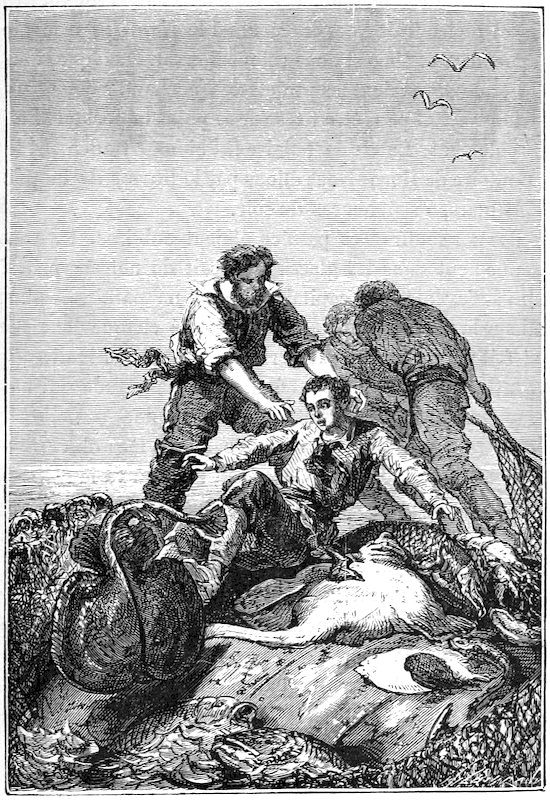
— De que abusarei — retrucou o canadense.
— Hein? — fez Conseil.
— Sim — prosseguiu Ned Land —, o direito de levá-lo comigo quando eu deixar este infernal Nautilus.
— A propósito — disse Conseil —, estamos indo para o lado certo?
— Sim — respondi —, já que vamos para o lado do sol, e aqui o sol é o norte.
— Sem dúvida — retomou Ned Land —, mas resta saber se vamos para o Pacífico ou para o Atlântico, isto é, para os mares frequentados ou para os desertos.
A isso eu não podia responder, e temia que o capitão Nemo nos levasse antes para aquele vasto Oceano que banha ao mesmo tempo as costas da Ásia e da América. Completaria assim sua volta ao mundo submarina e voltaria para aqueles mares onde o Nautilus encontrava a mais inteira independência. Mas, se voltássemos ao Pacífico, longe de toda terra habitada, o que seria dos projetos de Ned Land?
Em breve deveríamos ficar sabendo a respeito desse ponto importante. O Nautilus andava rapidamente. O círculo polar foi logo transposto, e a proa apontada para o promontório do Horn. Estávamos pelo través da ponta americana em 31 de março, às sete horas da noite.
Então todos os nossos sofrimentos passados foram esquecidos. A lembrança daquele aprisionamento nos gelos apagava-se de nosso espírito. Só pensávamos no futuro. O capitão Nemo já não aparecia, nem no salão, nem na plataforma. O ponto, marcado a cada dia no planisfério e feito pelo imediato, permitia-me determinar a direção exata do Nautilus. Ora, naquela noite, tornou-se evidente, para minha grande satisfação, que voltávamos para o norte pela rota do Atlântico.
Comuniquei ao canadense e a Conseil o resultado de minhas observações.
— Boa notícia — respondeu o canadense —, mas para onde vai o Nautilus?
— Não saberia dizer, Ned.
— Seu capitão quereria, depois do polo sul, enfrentar o polo norte e voltar ao Pacífico pela famosa passagem do noroeste?
— Não convém desafiá-lo — respondeu Conseil.
— Pois bem — disse o canadense —, nós lhe daremos o fora antes disso.
— Em todo caso — acrescentou Conseil —, é um homem e tanto, esse capitão Nemo, e não lamentaremos tê-lo conhecido.
— Sobretudo quando o tivermos deixado! — retrucou Ned Land.
No dia seguinte, primeiro de abril, quando o Nautilus subiu à superfície das ondas, alguns minutos antes do meio-dia, avistamos uma costa a oeste. Era a Terra do Fogo, à qual os primeiros navegadores deram esse nome ao verem as numerosas fumaças que se elevavam das cabanas indígenas. Essa Terra do Fogo forma uma vasta aglomeração de ilhas que se estende por trinta léguas de comprimento e oitenta léguas de largura, entre 53° e 56° de latitude austral e 67° 50′ e 77° 15′ de longitude oeste. A costa pareceu-me baixa, mas ao longe erguiam-se altas montanhas. Julguei até entrever o monte Sarmiento, elevado a dois mil e setenta metros acima do nível do mar, bloco piramidal de xisto de cume muito agudo que, conforme está velado ou livre de vapores, “anuncia o bom ou o mau tempo”, disse-me Ned Land.
— Um famoso barômetro, meu amigo.
— Sim, senhor, um barômetro natural, que nunca me enganou quando eu navegava pelas passagens do estreito de Magalhães.
Nesse momento, aquele pico pareceu-nos nitidamente recortado no fundo do céu. Era um presságio de bom tempo. Realizou-se.
O Nautilus, de volta sob as águas, aproximou-se da costa, que acompanhou a apenas algumas milhas. Pelos vidros do salão, vi longos cipós e fucos gigantescos, aqueles sargaços-de-peras de que o mar livre do polo encerrava alguns exemplares; com seus filamentos viscosos e lisos, mediam até trezentos metros de comprimento; verdadeiros cabos, mais grossos que o polegar, muito resistentes, servem muitas vezes de amarras aos navios. Outra erva, conhecida pelo nome de velp, de folhas de quatro pés de comprimento, empastadas nas concreções coralígenas, atapetava os fundos. Servia de ninho e de alimento a miríades de crustáceos e de moluscos, caranguejos, sépias. Ali, as focas e as lontras entregavam-se a esplêndidos banquetes, misturando a carne do peixe e os legumes do mar, segundo o método inglês.
Sobre aqueles fundos gordos e luxuriantes, o Nautilus passava com extrema rapidez. Ao entardecer, aproximou-se do arquipélago das Malvinas, cujos cumes ásperos pude reconhecer no dia seguinte. A profundidade do mar era medíocre. Pensei, pois, não sem razão, que aquelas duas ilhas, cercadas de um grande número de ilhotas, faziam parte outrora das terras magalânicas. As Malvinas foram provavelmente descobertas pelo célebre John Davis, que lhes impôs o nome de Davis-Southern Islands. Mais tarde, Richard Hawkins chamou-as Maiden-Islands, ilhas da Virgem. Foram em seguida denominadas Malouines, no começo do século XVIII, por pescadores de Saint-Malo, e enfim Falkland pelos ingleses, a quem pertencem hoje.
Naquelas paragens, nossas redes trouxeram belos espécimes de algas, e particularmente certo fuco cujas raízes estavam carregadas de mexilhões, que são os melhores do mundo. Gansos e patos abateram-se às dúzias na plataforma e logo tomaram lugar na despensa de bordo. Em matéria de peixes, observei especialmente ósseos pertencentes ao gênero góbio, e sobretudo boulerots, de dois decímetros de comprimento, todos semeados de manchas esbranquiçadas e amarelas.
Admirei igualmente numerosas medusas, e as mais belas do gênero, as crisaoras próprias dos mares das Malvinas. Ora figuravam uma sombrinha semiesférica muito lisa, listrada de linhas de um vermelho acastanhado e terminada por doze festões regulares; ora era uma cesta virada da qual escapavam graciosamente largas folhas e longas ramagens vermelhas. Nadavam agitando seus quatro braços foliáceos e deixavam pender à deriva sua opulenta cabeleira de tentáculos. Eu gostaria de ter conservado alguns exemplares desses delicados zoófitos; mas não passam de nuvens, de sombras, de aparências, que derretem e se evaporam fora de seu elemento natal.
Quando as últimas alturas das Malvinas desapareceram sob o horizonte, o Nautilus mergulhou entre vinte e vinte e cinco metros e seguiu a costa americana. O capitão Nemo não se mostrava.
Até 3 de abril, não deixamos as paragens da Patagônia, ora sob o Oceano, ora em sua superfície. O Nautilus ultrapassou o largo estuário formado pela foz do Prata e encontrou-se, em 4 de abril, pelo través do Uruguai, mas a cinquenta milhas ao largo. Sua direção mantinha-se ao norte, e ele seguia as longas sinuosidades da América meridional. Tínhamos feito então dezesseis mil léguas desde nosso embarque nos mares do Japão.
Por volta das onze horas da manhã, o trópico de Capricórnio foi cortado no trigésimo sétimo meridiano, e passamos ao largo do cabo Frio. O capitão Nemo, para grande desagrado de Ned Land, não gostava da vizinhança daquelas costas habitadas do Brasil, pois andava com uma velocidade vertiginosa. Nem um peixe, nem uma ave, dos mais rápidos que existam, podiam seguir-nos, e as curiosidades naturais daqueles mares escaparam a toda observação.
Essa rapidez manteve-se durante vários dias e, em 9 de abril, à noite, avistávamos a ponta mais oriental da América do Sul, que forma o cabo de São Roque. Mas então o Nautilus afastou-se de novo e foi procurar, a maiores profundidades, um vale submarino que se cava entre esse cabo e Serra Leoa, na costa africana. Esse vale bifurca-se na altura das Antilhas e termina ao norte por uma enorme depressão de nove mil metros. Nesse lugar, o corte geológico do Oceano figura, até as pequenas Antilhas, uma falésia de seis quilômetros, cortada a prumo, e, na altura das ilhas de Cabo Verde, outra muralha não menos considerável, que encerram assim todo o continente submerso da Atlântida. O fundo desse imenso vale é acidentado por algumas montanhas, que proporcionam aspectos pitorescos àqueles fundos submarinos. Falo disso sobretudo com base nas cartas manuscritas que a biblioteca do Nautilus continha, cartas evidentemente devidas à mão do capitão Nemo e levantadas a partir de suas observações pessoais.
Durante dois dias, aquelas águas desertas e profundas foram visitadas por meio dos planos inclinados. O Nautilus fazia longos bordos diagonais que o levavam a todas as alturas. Mas, em 11 de abril, ergueu-se subitamente, e a terra reapareceu-nos na abertura do rio Amazonas, vasto estuário cujo caudal é tão considerável que dessalga o mar numa extensão de várias léguas.
O Equador fora cortado. A vinte milhas a oeste ficavam as Guianas, uma terra francesa na qual teríamos encontrado um refúgio fácil. Mas o vento soprava forte, e as ondas furiosas não teriam permitido a um simples escaler enfrentá-las. Ned Land compreendeu-o sem dúvida, pois não me falou de nada. De meu lado, não fiz nenhuma alusão a seus projetos de fuga, pois não queria impeli-lo a alguma tentativa que teria infalivelmente fracassado.
Compensei-me facilmente desse atraso com estudos interessantes. Durante aqueles dois dias, 11 e 12 de abril, o Nautilus não deixou a superfície do mar, e sua rede de arrasto trouxe-lhe toda uma pesca milagrosa de zoófitos, de peixes e de répteis.
Alguns zoófitos tinham sido dragados pela corrente das redes. Eram, na maioria, belas fictalinas, pertencentes à família dos actinídeos, e, entre outras espécies, a phyctalis protexta, originária daquela parte do Oceano, pequeno tronco cilíndrico, adornado de linhas verticais e salpicado de pontos vermelhos, que um maravilhoso desabrochar de tentáculos coroa. Quanto aos moluscos, consistiam em produtos que eu já observara: turritelas, olivas-pórfiro de linhas regularmente entrecruzadas, cujas manchas ruivas se destacavam vivamente sobre um fundo cor de carne, pterocerídeos fantasiosos, semelhantes a escorpiões petrificados, hialas translúcidas, argonautas, sépias excelentes para comer e certas espécies de lulas, que os naturalistas da Antiguidade classificavam entre os peixes-voadores e que servem principalmente de isca para a pesca do bacalhau.
Dos peixes daquelas paragens que eu ainda não tivera ocasião de estudar, anotei diversas espécies. Entre os cartilaginosos: petromizontes-pricka, espécie de enguias de quinze polegadas de comprimento, cabeça esverdeada, nadadeiras violeta, dorso cinza-azulado, ventre castanho-prateado semeado de manchas vivas, a íris dos olhos cercada de ouro, curiosos animais que a correnteza do Amazonas devia ter arrastado até o mar, pois habitam as águas doces; raias tuberculadas, de focinho pontudo, cauda longa e delgada, armadas de um longo aguilhão denteado; pequenos esqualos de um metro, de pele cinzenta e esbranquiçada, cujos dentes, dispostos em várias fileiras, se recurvam para trás, e que são vulgarmente conhecidos pelo nome de pantufleiros; lófios-vespertiliões, espécie de triângulos isósceles avermelhados, de meio metro, aos quais as peitorais se prendem por prolongamentos carnudos que lhes dão o aspecto de morcegos, mas que seu apêndice córneo, situado perto das narinas, fez apelidar de unicórnios-do-mar; enfim, algumas espécies de balistas, o curassaviano, cujos flancos pontilhados brilham com uma resplandecente cor de ouro, e o caprisco violeta-claro, de matizes cambiantes como a garganta de um pombo.
Termino aqui esta nomenclatura um tanto seca, mas muito exata, com a série dos peixes ósseos que observei: passans, pertencentes ao gênero dos apteronotos, cujo focinho é muito obtuso e branco como a neve, o corpo pintado de um belo negro, e que são munidos de uma correia carnuda muito longa e muito delgada; odontognatos-aguilhoados, longas sardinhas de três decímetros, resplandecendo com um vivo brilho prateado; escombros-guaras, providos de duas nadadeiras anais; centronotos-negros, de tons pretos, que se pescam com tochas, longos peixes de dois metros, de carne gorda, branca, firme, que, frescos, têm o gosto da enguia e, secos, o gosto do salmão defumado; labros meio vermelhos, revestidos de escamas apenas na base das nadadeiras dorsais e anais; crisópteros, nos quais o ouro e a prata misturam seu brilho aos do rubi e do topázio; esparos-de-cauda-dourada, cuja carne é extremamente delicada e que suas propriedades fosforescentes denunciam no meio das águas; esparos-pobs, de língua fina, de tons alaranjados; cienas-coro de caudais douradas, acanturos-negros, anablepas do Suriname etc.
Esse “et cetera” não me impedirá de citar ainda um peixe de que Conseil se lembrará por muito tempo, e com razão.
Uma de nossas redes trouxera uma espécie de raia muito achatada que, com a cauda cortada, teria formado um disco perfeito e que pesava uns vinte quilogramas. Era branca por baixo, avermelhada por cima, com grandes manchas redondas de um azul-escuro cercadas de negro, de pele muito lisa, e terminada por uma nadadeira bilobada. Estendida na plataforma, debatia-se, tentava virar-se com movimentos convulsivos e fazia tantos esforços que um último sobressalto ia precipitá-la ao mar. Mas Conseil, que fazia questão de seu peixe, precipitou-se sobre ele e, antes que eu pudesse impedi-lo, agarrou-o com as duas mãos.
Imediatamente, ei-lo derrubado, de pernas para o ar, paralisado de metade do corpo e gritando:
— Ah! Patrão, meu patrão! Vem me acudir!
Era a primeira vez que o pobre rapaz não me falava “na terceira pessoa”.
O canadense e eu o levantamos, friccionamo-lo com toda a força, e, quando ele recobrou os sentidos, aquele eterno classificador murmurou com voz entrecortada:
— Classe dos cartilaginosos, ordem dos condropterígios, de brânquias fixas, subordem dos seláquios, família das raias, gênero das torpedos!
— Sim, meu amigo — respondi —, foi uma torpedo que o deixou neste estado deplorável.
— Ah! O senhor pode acreditar em mim — retrucou Conseil —, mas eu me vingarei desse animal.
— E como?
— Comendo-o.
O que ele fez naquela mesma noite, mas por pura represália, pois, francamente, era duro como couro.
O infortunado Conseil atacara uma torpedo da espécie mais perigosa, a cumana. Esse bizarro animal, num meio condutor como a água, fulmina os peixes a vários metros de distância, tão grande é a potência de seu órgão elétrico, cujas duas superfícies principais não medem menos de vinte e sete pés quadrados.
No dia seguinte, 12 de abril, durante o dia, o Nautilus aproximou-se da costa holandesa, perto da foz do Maroni. Ali viviam em família vários grupos de lamantins. Eram manatis que, como o dugongo e a vaca-marinha-de-steller, pertencem à ordem dos sirênios. Esses belos animais, pacíficos e inofensivos, de seis a sete metros de comprimento, deviam pesar pelo menos quatro mil quilogramas. Ensinei a Ned Land e a Conseil que a previdente natureza atribuíra a esses mamíferos um papel importante. São eles, de fato, que, como as focas, devem pastar as pradarias submarinas e destruir assim as aglomerações de ervas que obstruem a foz dos rios tropicais.
— E sabem — acrescentei — o que aconteceu desde que os homens aniquilaram quase inteiramente essas raças úteis? Foi que as ervas putrefatas envenenaram o ar, e o ar envenenado é a febre amarela que assola essas admiráveis regiões. As vegetações venenosas multiplicaram-se sob esses mares tórridos, e o mal desenvolveu-se irresistivelmente desde a foz do Rio da Prata até as Flóridas!
E, se se deve acreditar em Toussenel, esse flagelo ainda não é nada perto daquele que atingirá nossos descendentes quando os mares estiverem despovoados de baleias e de focas. Então, atulhados de polvos, de medusas, de lulas, tornar-se-ão vastos focos de infecção, já que suas ondas não possuirão mais “esses vastos estômagos que Deus encarregara de escumar a superfície dos mares”.
Entretanto, sem desdenhar essas teorias, a tripulação do Nautilus apoderou-se de meia dúzia de manatis. Tratava-se, de fato, de abastecer as despensas com uma carne excelente, superior à do boi e à da vitela. Essa caçada não foi interessante. Os manatis deixavam-se atingir sem se defender. Vários milhares de quilos de carne, destinada a ser secada, foram armazenados a bordo.
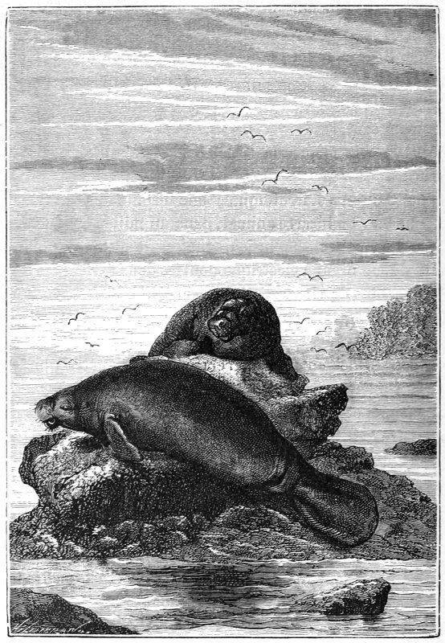
Naquele dia, uma pesca singularmente praticada veio ainda aumentar as reservas do Nautilus, tão abundantes em caça se mostravam aqueles mares. A rede de arrasto trouxera em suas malhas certo número de peixes cuja cabeça terminava numa placa oval de bordas carnudas. Eram equeneídeos, da terceira família dos malacopterígios sub-braquianos. Seu disco achatado compõe-se de lâminas cartilaginosas transversais móveis, entre as quais o animal pode fazer o vácuo, o que lhe permite aderir aos objetos à maneira de uma ventosa.
A rêmora, que eu observara no Mediterrâneo, pertence a essa espécie. Mas aquele de que se trata aqui era o equeneídeo osteóquero, próprio daquele mar. Nossos marinheiros, à medida que os apanhavam, depositavam-nos em tinas cheias de água.

Terminada a pesca, o Nautilus aproximou-se da costa. Naquele lugar, certo número de tartarugas marinhas dormia na superfície das ondas. Teria sido difícil apoderar-se desses preciosos répteis, pois o menor ruído as desperta, e sua sólida carapaça é à prova de arpão. Mas o equeneídeo ia realizar essa captura com uma segurança e uma precisão extraordinárias. Esse animal, de fato, é um anzol vivo, que faria a felicidade e a fortuna do ingênuo pescador de linha.
Os homens do Nautilus prenderam à cauda desses peixes um anel suficientemente largo para não estorvar seus movimentos e, a esse anel, uma longa corda amarrada a bordo pela outra ponta.
Os equeneídeos, lançados ao mar, começaram logo seu papel e foram fixar-se no plastrão das tartarugas. Sua tenacidade era tal que se teriam despedaçado antes de largar a presa. Eram puxados para bordo, e com eles as tartarugas a que aderiam.
Apanharam-se assim várias cabeçudas, de um metro de largura, que pesavam duzentos quilos. Sua carapaça, coberta de placas córneas grandes, finas, transparentes, castanhas, com salpicos brancos e amarelos, tornava-as muito preciosas. Além disso, eram excelentes do ponto de vista comestível, assim como as tartarugas-verdes, que são de um gosto requintado.
Essa pesca encerrou nossa permanência nas paragens do Amazonas e, chegada a noite, o Nautilus voltou ao alto-mar.
Durante alguns dias, o Nautilus afastou-se constantemente da costa americana. Não queria, evidentemente, frequentar as ondas do golfo do México ou do mar das Antilhas. No entanto, não lhe teria faltado água sob a quilha, já que a profundidade média desses mares é de mil e oitocentos metros; mas provavelmente essas paragens, semeadas de ilhas e sulcadas de vapores, não convinham ao capitão Nemo.
Em 16 de abril, avistamos a Martinica e a Guadalupe, a uma distância de cerca de trinta milhas. Vi por um instante seus picos elevados.
O canadense, que contava pôr seus projetos em execução no golfo, seja alcançando uma terra, seja abordando um dos numerosos barcos que fazem a cabotagem de uma ilha a outra, ficou muito desconcertado. A fuga teria sido muito praticável se Ned Land tivesse conseguido apoderar-se do escaler sem o conhecimento do capitão. Mas em pleno Oceano já não se devia pensar nisso.
O canadense, Conseil e eu tivemos uma conversa bastante longa sobre esse assunto. Havia seis meses que éramos prisioneiros a bordo do Nautilus. Tínhamos feito dezessete mil léguas e, como dizia Ned Land, não havia razão para que aquilo acabasse. Ele me fez, pois, uma proposta que eu não esperava. Foi a de fazer categoricamente esta pergunta ao capitão Nemo: o capitão pretendia manter-nos indefinidamente a bordo?
Semelhante iniciativa me repugnava. Segundo eu, ela não podia dar resultado. Não se devia esperar nada do comandante do Nautilus, mas tudo de nós mesmos. Aliás, havia algum tempo, aquele homem tornava-se mais sombrio, mais retraído, menos sociável. Parecia evitar-me. Eu só o encontrava a raros intervalos. Antes, ele gostava de me explicar as maravilhas submarinas; agora me abandonava a meus estudos e já não vinha ao salão.
Que mudança se operara nele? Por que causa? Eu não tinha nada a me censurar. Talvez nossa presença a bordo lhe pesasse? No entanto, eu não devia esperar que ele fosse homem de nos devolver a liberdade.
Pedi, pois, a Ned que me deixasse refletir antes de agir. Se essa iniciativa não obtivesse nenhum resultado, poderia reavivar suas suspeitas, tornar penosa nossa situação e prejudicar os projetos do canadense. Acrescentarei que eu não podia de modo algum alegar nossa saúde. Se se excetuar a rude prova da banquisa do polo sul, nunca tínhamos passado tão bem, nem Ned, nem Conseil, nem eu. Aquela alimentação sadia, aquela atmosfera salubre, aquela regularidade de existência, aquela uniformidade de temperatura não davam margem às doenças, e, para um homem a quem as lembranças da terra não deixavam nenhuma saudade, para um capitão Nemo, que está em sua casa, que vai aonde quer, que por caminhos misteriosos para os outros, não para si mesmo, marcha para seu objetivo, eu compreendia semelhante existência. Mas nós não tínhamos rompido com a humanidade. De minha parte, eu não queria sepultar comigo meus estudos tão curiosos e tão novos. Eu tinha agora o direito de escrever o verdadeiro livro do mar, e esse livro eu queria que, mais cedo do que tarde, pudesse ver a luz.
Ali ainda, naquelas águas das Antilhas, a dez metros abaixo da superfície das ondas, pelos painéis abertos, quantos produtos interessantes tive de registrar em minhas notas diárias! Eram, entre outros zoófitos, as galeras conhecidas pelo nome de fisálias-pelágicas, espécie de grandes bexigas oblongas, com reflexos nacarados, estendendo sua membrana ao vento e deixando flutuar seus tentáculos azuis como fios de seda; encantadoras medusas à vista, verdadeiras urtigas ao tato, que destilam um líquido corrosivo. Eram, entre os articulados, anelídeos de um metro e meio de comprimento, armados de uma tromba rosada e providos de mil e setecentos órgãos locomotores, que serpenteavam sob as águas e lançavam ao passar todos os clarões do espectro solar. Eram, no ramo dos peixes, raias-molubars, enormes cartilaginosos de dez pés de comprimento e seiscentas libras de peso, a nadadeira peitoral triangular, o meio do dorso um pouco abaulado, os olhos fixados nas extremidades da face anterior da cabeça, e que, flutuando como um destroço de navio, se aplicavam às vezes como uma persiana opaca sobre nosso vidro. Eram balistas-americanos, para os quais a natureza só moeu o branco e o preto; góbios-plumiers, alongados e carnudos, de nadadeiras amarelas e mandíbula proeminente; escombros de dezesseis decímetros, de dentes curtos e agudos, cobertos de pequenas escamas, pertencentes à espécie das albacoras. Depois, em nuvens, apareciam salmonetes, espartilhados de listras de ouro da cabeça à cauda, agitando suas resplandecentes nadadeiras; verdadeiras obras-primas de joalheria consagradas outrora a Diana, particularmente procuradas pelos romanos ricos, e dos quais dizia o provérbio: “Quem os apanha não os come!” Enfim, pomacantos-dourados, ornados de fitas cor de esmeralda, vestidos de veludo e de seda, passavam diante de nossos olhos como fidalgos de Veronese; esparos-esporados esquivavam-se sob sua rápida nadadeira torácica; clupanodontes de quinze polegadas envolviam-se em seus clarões fosforescentes; tainhas batiam o mar com sua grossa cauda carnuda; corégonos vermelhos pareciam ceifar as ondas com sua peitoral cortante, e selenes prateadas, dignas de seu nome, erguiam-se no horizonte das águas como outras tantas luas de reflexos esbranquiçados.
Quantos outros exemplares maravilhosos e novos eu teria ainda observado, se o Nautilus não tivesse descido pouco a pouco para as camadas profundas! Seus planos inclinados levaram-no até fundos de dois mil e de três mil e quinhentos metros. Então a vida animal já não era representada senão por encrinos, estrelas-do-mar, encantadores pentacrinos cabeça-de-medusa, cuja haste reta sustentava um pequeno cálice, troques, quenotes sanguinolentos e fissurelas, moluscos litorâneos de grande espécie.
Em 20 de abril, tínhamos subido a uma altura média de mil e quinhentos metros. A terra mais próxima era então o arquipélago das ilhas Lucaias, disseminadas como um monte de paralelepípedos na superfície das águas. Ali se erguiam altas falésias submarinas, muralhas retas feitas de blocos toscos dispostos em largas fiadas, entre os quais se cavavam buracos negros que nossos raios elétricos não iluminavam até o fundo.
Essas rochas estavam atapetadas de grandes ervas, laminárias gigantes, fucos gigantescos, uma verdadeira latada de hidrófitas digna de um mundo de Titãs.
Daquelas plantas colossais de que falávamos, Conseil, Ned e eu fomos naturalmente levados a citar os animais gigantescos do mar. Umas são evidentemente destinadas à alimentação dos outros. No entanto, pelos vidros do Nautilus quase imóvel, eu ainda só avistava naqueles longos filamentos os principais articulados da divisão dos braquiúros, lambros de patas longas, caranguejos violáceos, clios próprios dos mares das Antilhas.
Eram cerca de onze horas quando Ned Land chamou minha atenção para um formidável formigamento que se produzia através das grandes algas.
— Pois bem — disse eu —, essas são verdadeiras cavernas de polvos, e eu não me espantaria de ver ali alguns desses monstros.
— O quê! — fez Conseil. — Lulas, simples lulas, da classe dos cefalópodes?
— Não — disse eu —, polvos de grande dimensão. Mas o amigo Land enganou-se, sem dúvida, pois não vejo nada.
— Lamento — replicou Conseil. — Eu gostaria de contemplar face a face um desses polvos de que tanto ouvi falar e que podem arrastar navios para o fundo dos abismos. Esses bichos chamam-se krak…
— Krak… crac, isto é, lorota! — respondeu ironicamente o canadense.
— Krakens — retrucou Conseil, terminando a palavra sem se importar com a brincadeira do companheiro.
— Ninguém nunca me fará acreditar — disse Ned Land — que tais animais existam.
— Por que não? — respondeu Conseil. — Nós bem que acreditamos no narval do senhor.
— Estávamos errados, Conseil.
— Sem dúvida! Mas outros sem dúvida ainda acreditam.
— É provável, Conseil, mas, de minha parte, estou bem decidido a só admitir a existência desses monstros quando os tiver dissecado com minhas próprias mãos.
— Então — perguntou-me Conseil —, o senhor não acredita nos polvos gigantescos?
— Ora, quem diabo jamais acreditou neles? — exclamou o canadense.
— Muita gente, amigo Ned.
— Pescadores, não. Sábios, talvez!
— Perdão, Ned. Pescadores e sábios!
— Pois eu, que lhe falo — disse Conseil com o ar mais sério do mundo —, lembro-me perfeitamente de ter visto uma grande embarcação arrastada para o fundo das ondas pelos braços de um cefalópode.
— Você viu isso? — perguntou o canadense.
— Sim, Ned.
— Com seus próprios olhos?
— Com meus próprios olhos.
— Onde, por favor?
— Em Saint-Malo — replicou imperturbavelmente Conseil.
— No porto? — disse Ned Land ironicamente.
— Não, numa igreja — respondeu Conseil.
— Numa igreja! — exclamou o canadense.
— Sim, amigo Ned. Era um quadro que representava o polvo em questão!
— Bom! — fez Ned Land, caindo na gargalhada. — O senhor Conseil me fazendo de bobo!
— Na verdade, ele tem razão — disse eu. — Ouvi falar desse quadro; mas o tema que ele representa é tirado de uma lenda, e os senhores sabem o que se deve pensar das lendas em matéria de história natural! Aliás, quando se trata de monstros, a imaginação só pede para se extraviar. Não só se pretendeu que esses polvos podiam arrastar navios, como um certo Olaus Magnus fala de um cefalópode de uma milha de comprimento, que mais parecia uma ilha que um animal. Conta-se também que o bispo de Nidros ergueu um dia um altar sobre um rochedo imenso. Terminada sua missa, o rochedo pôs-se em marcha e voltou para o mar. O rochedo era um polvo.
— E é tudo? — perguntou o canadense.
— Não — respondi. — Outro bispo, Pontoppidan de Bergen, fala igualmente de um polvo sobre o qual podia manobrar um regimento de cavalaria!
— Eles não brincavam, os bispos de antigamente! — disse Ned Land.
— Enfim, os naturalistas da Antiguidade citam monstros cuja goela parecia um golfo e que eram grandes demais para passar pelo estreito de Gibraltar.
— Que beleza! — fez o canadense.
— Mas em todos esses relatos, o que há de verdade? — perguntou Conseil.
— Nada, meus amigos, nada pelo menos do que passa o limite da verossimilhança para subir até a fábula ou a lenda. Todavia, a imaginação dos contadores precisa, senão de uma causa, ao menos de um pretexto. Não se pode negar que existam polvos e lulas de espécie muito grande, inferiores, no entanto, aos cetáceos. Aristóteles constatou as dimensões de uma lula de cinco côvados, ou seja, três metros e dez. Nossos pescadores veem frequentemente algumas cujo comprimento ultrapassa um metro e oitenta. Os museus de Trieste e de Montpellier conservam esqueletos de polvos que medem dois metros. Aliás, segundo o cálculo dos naturalistas, um desses animais, com apenas seis pés de comprimento, teria tentáculos de vinte e sete. O que basta para fazer dele um monstro formidável.
— Pescam-se hoje em dia? — perguntou o canadense.
— Se não os pescam, os marinheiros ao menos os veem. Um de meus amigos, o capitão Paul Bos, do Havre, afirmou-me muitas vezes ter encontrado um desses monstros de tamanho colossal nos mares da Índia. Mas o fato mais espantoso, e que já não permite negar a existência desses animais gigantescos, deu-se há alguns anos, em 1861.
— Que fato é esse? — perguntou Ned Land.
— Ei-lo. Em 1861, a nordeste de Tenerife, mais ou menos na latitude em que estamos neste momento, a tripulação do aviso Alecton avistou uma lula monstruosa que nadava em suas águas. O comandante Bouguer aproximou-se do animal e atacou-o a golpes de arpão e a tiros de fuzil, sem grande sucesso, pois balas e arpões atravessavam aquelas carnes moles como uma geleia sem consistência. Depois de várias tentativas infrutíferas, a tripulação conseguiu passar um nó corrediço em volta do corpo do molusco. Esse nó deslizou até as nadadeiras caudais e parou ali. Tentou-se então içar o monstro para bordo, mas seu peso era tão considerável que ele se separou da cauda sob a tração da corda e, privado desse ornamento, desapareceu sob as águas.
— Enfim, eis um fato — disse Ned Land.
— Um fato indiscutível, meu bravo Ned. Por isso propuseram chamar esse polvo de “lula de Bouguer”.
— E qual era o seu comprimento? — perguntou o canadense.
— Não media cerca de seis metros? — disse Conseil, que, postado junto ao vidro, examinava de novo as anfractuosidades da falésia.
— Precisamente — respondi.
— Sua cabeça — prosseguiu Conseil — não era coroada por oito tentáculos, que se agitavam na água como uma ninhada de serpentes?
— Precisamente.
— Seus olhos, colocados à flor da cabeça, não tinham um desenvolvimento considerável?
— Sim, Conseil.
— E sua boca não era um verdadeiro bico de papagaio, mas um bico formidável?
— De fato, Conseil.
— Pois bem! Com o perdão do senhor — respondeu tranquilamente Conseil —, se não é a lula de Bouguer, eis aqui pelo menos um de seus irmãos.
Olhei para Conseil. Ned Land precipitou-se para o vidro.

— Que bicho pavoroso! — exclamou ele.
Olhei por minha vez e não pude reprimir um movimento de repulsa. Diante de meus olhos agitava-se um monstro horrível, digno de figurar nas lendas teratológicas.
Era uma lula de dimensões colossais, com oito metros de comprimento. Andava de costas com extrema velocidade na direção do Nautilus. Olhava com seus enormes olhos fixos de tons glaucos. Seus oito braços, ou antes seus oito pés, implantados na cabeça, que valeram a esses animais o nome de cefalópodes, tinham o dobro do tamanho de seu corpo e torciam-se como a cabeleira das Fúrias. Viam-se distintamente as duzentas e cinquenta ventosas dispostas na face interna dos tentáculos sob a forma de cápsulas semiesféricas. Às vezes essas ventosas aplicavam-se sobre o vidro do salão, fazendo o vácuo. A boca daquele monstro (um bico de chifre feito como o bico de um papagaio) abria-se e fechava-se verticalmente. Sua língua, substância córnea, armada ela própria de várias fileiras de dentes agudos, saía fremente daquela verdadeira tesoura. Que fantasia da natureza! Um bico de ave num molusco! Seu corpo, fusiforme e inchado na parte média, formava uma massa carnuda que devia pesar vinte a vinte e cinco mil quilogramas. Sua cor inconstante, mudando com extrema rapidez conforme a irritação do animal, passava sucessivamente do cinza lívido ao castanho avermelhado.
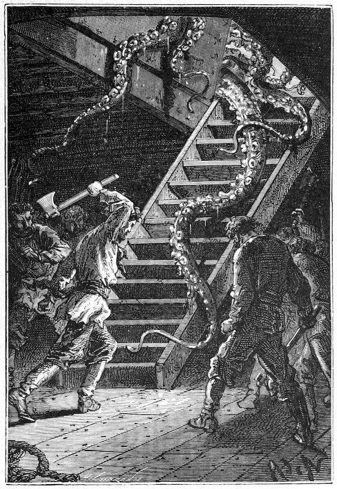
De que se irritava aquele molusco? Sem dúvida da presença daquele Nautilus, mais formidável que ele, e sobre o qual seus braços sugadores ou suas mandíbulas não tinham nenhuma ação. E, no entanto, que monstros são esses polvos, que vitalidade o Criador lhes concedeu, que vigor em seus movimentos, já que possuem três corações!
O acaso pusera-nos na presença daquela lula, e não quis deixar perder a ocasião de estudar cuidadosamente aquele exemplar dos cefalópodes. Superei o horror que seu aspecto me inspirava e, pegando um lápis, comecei a desenhá-lo.
— Talvez seja a mesma do Alecton — disse Conseil.
— Não — respondeu o canadense —, já que esta está inteira e a outra perdeu a cauda!
— Isso não seria uma razão — respondi. — Os braços e a cauda desses animais refazem-se por redintegração, e, em sete anos, a cauda da lula de Bouguer sem dúvida teve tempo de crescer de novo.
— Aliás — retrucou Ned —, se não é esta, talvez seja uma daquelas!
De fato, outros polvos apareciam no vidro de estibordo. Contei sete. Faziam cortejo ao Nautilus, e eu ouvia o rangido de seus bicos no casco de chapa. Estávamos servidos à vontade.
Continuei meu trabalho. Aqueles monstros mantinham-se em nossas águas com tal precisão que pareciam imóveis, e eu poderia tê-los decalcado em escorço sobre o vidro. Aliás, andávamos numa marcha moderada.
De repente, o Nautilus parou. Um choque fê-lo estremecer em toda a sua ossatura.
— Será que encalhamos? — perguntei.
— Em todo caso — respondeu o canadense —, já estaríamos livres, pois estamos flutuando.
O Nautilus flutuava, sem dúvida, mas já não andava. As pás de sua hélice não batiam as ondas. Passou-se um minuto. O capitão Nemo, seguido de seu imediato, entrou no salão.
Eu não o via havia algum tempo. Pareceu-me sombrio. Sem nos falar, sem nos ver talvez, foi ao painel, olhou os polvos e disse algumas palavras a seu imediato.
Este saiu. Logo os painéis se fecharam. O teto iluminou-se.
Fui até o capitão.
— Uma curiosa coleção de polvos — disse-lhe eu, no tom desembaraçado que adotaria um amador diante do cristal de um aquário.
— De fato, senhor naturalista — respondeu-me ele —, e vamos combatê-los corpo a corpo.
Olhei para o capitão. Julguei não ter ouvido bem.
— Corpo a corpo? — repeti.
— Sim, senhor. A hélice está parada. Penso que as mandíbulas córneas de uma dessas lulas se prenderam em suas pás. O que nos impede de avançar.
— E o que vai fazer?
— Subir à superfície e massacrar toda essa bicharada.
— Empresa difícil.
— De fato. As balas elétricas são impotentes contra essas carnes moles, onde não encontram resistência suficiente para explodir. Mas nós as atacaremos a machado.
— E a arpão, senhor — disse o canadense —, se não recusar minha ajuda.
— Aceito-a, mestre Land.
— Nós o acompanharemos — disse eu, e, seguindo o capitão Nemo, dirigimo-nos para a escada central.
Ali, uns dez homens, armados de machados de abordagem, estavam prontos para o ataque. Conseil e eu pegamos dois machados. Ned Land agarrou um arpão.
O Nautilus voltara então à superfície das ondas. Um dos marinheiros, colocado nos últimos degraus, desaparafusava os parafusos da escotilha. Mas mal as porcas tinham sido soltas, a escotilha ergueu-se com extrema violência, evidentemente puxada pela ventosa de um braço de polvo.
Imediatamente um daqueles longos braços deslizou como uma serpente pela abertura, e vinte outros agitaram-se acima. Com um golpe de machado, o capitão Nemo cortou aquele formidável tentáculo, que escorregou pelos degraus, torcendo-se.
No momento em que nos apertávamos uns contra os outros para alcançar a plataforma, dois outros braços, chicoteando o ar, abateram-se sobre o marinheiro colocado diante do capitão Nemo e arrebataram-no com uma violência irresistível.
O capitão Nemo soltou um grito e lançou-se para fora. Tínhamo-nos precipitado atrás dele.
Que cena! O infeliz, agarrado pelo tentáculo e colado às suas ventosas, era balançado no ar ao capricho daquela enorme tromba. Estertorava, sufocava, gritava: À moi! À moi! Essas palavras, pronunciadas em francês, causaram-me um profundo estupor! Eu tinha, pois, um compatriota a bordo, vários, talvez! Esse apelo dilacerante, eu o ouvirei por toda a minha vida!
O infortunado estava perdido. Quem poderia arrancá-lo daquele poderoso abraço? No entanto, o capitão Nemo precipitara-se sobre o polvo e, com um golpe de machado, abatera-lhe ainda um braço. Seu imediato lutava com raiva contra outros monstros que rastejavam pelos flancos do Nautilus. A tripulação batia-se a golpes de machado. O canadense, Conseil e eu enterrávamos nossas armas naquelas massas carnudas. Um violento cheiro de almíscar penetrava a atmosfera. Era horrível.
Por um instante, julguei que o infeliz, enlaçado pelo polvo, seria arrancado à sua poderosa sucção. Sete braços em oito tinham sido cortados. Um só, brandindo a vítima como uma pena, torcia-se no ar. Mas, no momento em que o capitão Nemo e seu imediato se precipitavam sobre ele, o animal lançou uma coluna de um líquido escuro, segregado por uma bolsa situada em seu abdômen. Ficamos cegos. Quando essa nuvem se dissipou, a lula desaparecera, e com ela meu infortunado compatriota!
Que raiva nos impeliu então contra aqueles monstros! Ninguém mais se continha. Dez ou doze polvos tinham invadido a plataforma e os flancos do Nautilus. Rolávamos de cambulhada no meio daqueles pedaços de serpentes que saltavam na plataforma entre ondas de sangue e de tinta negra. Parecia que aqueles tentáculos viscosos renasciam como as cabeças da hidra. O arpão de Ned Land, a cada golpe, mergulhava nos olhos glaucos das lulas e furava-os. Mas meu audacioso companheiro foi de repente derrubado pelos tentáculos de um monstro que não conseguira evitar.
Ah! Como meu coração não se partiu de emoção e de horror! O formidável bico da lula abrira-se sobre Ned Land. O infeliz ia ser cortado em dois. Precipitei-me em seu socorro. Mas o capitão Nemo adiantara-se a mim. Seu machado desapareceu entre as duas enormes mandíbulas, e, milagrosamente salvo, o canadense, levantando-se, enterrou seu arpão inteiro até o triplo coração do polvo.
— Eu me devia esta revanche! — disse o capitão Nemo ao canadense.
Ned inclinou-se sem lhe responder.
Esse combate durara um quarto de hora. Os monstros vencidos, mutilados, feridos de morte, deixaram-nos enfim o lugar e desapareceram sob as ondas.
O capitão Nemo, vermelho de sangue, imóvel perto do farol, olhava o mar que tragara um de seus companheiros, e grossas lágrimas corriam de seus olhos.
Essa terrível cena de 20 de abril, nenhum de nós jamais poderá esquecê-la. Escrevi-a sob a impressão de uma emoção violenta. Depois, revi o relato. Li-o a Conseil e ao canadense. Acharam-no exato quanto aos fatos, mas insuficiente quanto ao efeito. Para pintar semelhantes quadros, seria precisa a pena do mais ilustre de nossos poetas, o autor de Os trabalhadores do mar.
Eu disse que o capitão Nemo chorava olhando as ondas. Sua dor foi imensa. Era o segundo companheiro que perdia desde nossa chegada a bordo. E que morte! Aquele amigo, esmagado, sufocado, quebrado pelo formidável braço de um polvo, triturado sob suas mandíbulas de ferro, não iria repousar com seus companheiros nas águas tranquilas do cemitério de coral!
Para mim, no meio daquela luta, fora aquele grito de desespero soltado pelo infortunado que me dilacerara o coração. Aquele pobre francês, esquecendo sua linguagem convencional, voltara a falar a língua de seu país e de sua mãe para lançar um apelo supremo! Entre aquela tripulação do Nautilus, associada de corpo e alma ao capitão Nemo, fugindo como ele do contato dos homens, eu tinha, pois, um compatriota! Seria ele o único a representar a França naquela misteriosa associação, evidentemente composta de indivíduos de nacionalidades diversas? Era mais um daqueles problemas insolúveis que se erguiam sem cessar diante de meu espírito!
O capitão Nemo voltou para seu quarto, e não o vi mais durante algum tempo. Mas como devia estar triste, desesperado, irresoluto, a julgar por aquele navio de que ele era a alma e que recebia todas as suas impressões! O Nautilus já não mantinha direção determinada. Ia, vinha, flutuava como um cadáver ao sabor das ondas. Sua hélice fora desembaraçada e, no entanto, ele mal se servia dela. Navegava ao acaso. Não conseguia arrancar-se do teatro de sua última luta, daquele mar que devorara um dos seus!
Passaram-se assim dez dias. Só em 1º de maio o Nautilus retomou francamente sua rota para o norte, depois de ter avistado as Lucaias na abertura do canal das Bahamas. Seguíamos então a corrente do maior rio do mar, que tem suas margens, seus peixes e sua temperatura próprios. Refiro-me ao Gulf Stream.
É um rio, de fato, que corre livremente no meio do Atlântico e cujas águas não se misturam às águas oceânicas. É um rio salgado, mais salgado que o mar circundante. Sua profundidade média é de três mil pés, sua largura média de sessenta milhas. Em certos lugares, sua corrente avança com uma velocidade de quatro quilômetros por hora. O volume invariável de suas águas é mais considerável que o de todos os rios do globo.
A verdadeira nascente do Gulf Stream, reconhecida pelo comandante Maury, seu ponto de partida, se se quiser, situa-se no golfo da Gasconha. Ali suas águas, ainda fracas de temperatura e de cor, começam a formar-se. Ele desce para o sul, costeia a África equatorial, aquece suas ondas aos raios da zona tórrida, atravessa o Atlântico, atinge o cabo de São Roque na costa brasileira e bifurca-se em dois ramos, um dos quais vai saturar-se ainda das quentes moléculas do mar das Antilhas. Então o Gulf Stream, encarregado de restabelecer o equilíbrio entre as temperaturas e de misturar as águas dos trópicos às águas boreais, começa seu papel de moderador. Aquecido ao rubro no golfo do México, sobe para o norte pelas costas americanas, avança até a Terra Nova, desvia-se sob o impulso da corrente fria do estreito de Davis, retoma o caminho do Oceano seguindo, sobre um dos grandes círculos do globo, a linha loxodrômica, divide-se em dois braços por volta do quadragésimo terceiro grau, dos quais um, ajudado pelo alísio de nordeste, volta ao golfo da Gasconha e aos Açores, e o outro, depois de amornar as costas da Irlanda e da Noruega, vai até além de Spitzbergen, onde sua temperatura cai a quatro graus, formar o mar livre do polo.
Era nesse rio do Oceano que o Nautilus navegava então. À sua saída do canal das Bahamas, com catorze léguas de largura e trezentos e cinquenta metros de profundidade, o Gulf Stream avança à razão de oito quilômetros por hora. Essa rapidez decresce regularmente à medida que ele avança para o norte, e é de desejar que essa regularidade persista, pois, se, como se julgou observar, sua velocidade e sua direção vierem a modificar-se, os climas europeus serão submetidos a perturbações cujas consequências não se poderiam calcular.
Por volta do meio-dia, eu estava na plataforma com Conseil. Dava-lhe a conhecer as particularidades relativas ao Gulf Stream. Terminada minha explicação, convidei-o a mergulhar as mãos na corrente.
Conseil obedeceu e ficou muito espantado de não sentir nenhuma sensação de calor nem de frio.
— Isso vem — disse-lhe eu — de que a temperatura das águas do Gulf Stream, ao sair do golfo do México, pouco difere da do sangue. Esse Gulf Stream é um vasto calorífero que permite às costas da Europa adornarem-se de um verde eterno. E, se se deve acreditar em Maury, o calor dessa corrente, totalmente aproveitado, forneceria calórico suficiente para manter em fusão um rio de ferro derretido tão grande quanto o Amazonas ou o Missouri.
Nesse momento, a velocidade do Gulf Stream era de dois metros e vinte e cinco por segundo. Sua corrente é tão distinta do mar circundante que suas águas comprimidas formam saliência sobre o Oceano e que se opera um desnível entre elas e as águas frias. Escuras, aliás, e muito ricas em matérias salinas, destacam-se por seu puro anil sobre as ondas verdes que as rodeiam. Tal é mesmo a nitidez de sua linha de demarcação que o Nautilus, na altura das Carolinas, cortou com seu esporão as ondas do Gulf Stream, enquanto sua hélice ainda batia as do Oceano.
Essa corrente arrastava consigo todo um mundo de seres vivos. Os argonautas, tão comuns no Mediterrâneo, viajavam nela em bandos numerosos. Entre os cartilaginosos, os mais notáveis eram raias cuja cauda muito delgada formava mais ou menos um terço do corpo e que figuravam vastos losangos de vinte e cinco pés de comprimento; depois, pequenos esqualos de um metro, de cabeça grande, focinho curto e arredondado, dentes pontudos dispostos em várias fileiras, e cujo corpo parecia coberto de escamas.
Entre os peixes ósseos, notei labros-grisons próprios daqueles mares, esparos-sinagres cuja íris brilhava como fogo, cienas de um metro de comprimento, de larga goela eriçada de pequenos dentes, que faziam ouvir um leve grito, os centronotos-negros de que já falei, corifenas azuis realçadas de ouro e de prata, peixes-papagaio, verdadeiros arco-íris do Oceano, que podem rivalizar em cor com as mais belas aves dos trópicos, blênios-bosquianos de cabeça triangular, rombos azulados desprovidos de escamas, batracoides cobertos por uma faixa amarela e transversal que figura um t grego, formigamentos de pequenos góbios-bos pontilhados de manchas castanhas, dipterodontes de cabeça prateada e cauda amarela, diversos exemplares de salmonídeos, mugilomoros de talhe esbelto, brilhando com um fulgor suave, que Lacépède consagrou à amável companheira de sua vida, enfim um belo peixe, o cavaleiro-americano, que, condecorado com todas as ordens e enfeitado com todas as fitas, frequenta as costas daquela grande nação onde as fitas e as ordens são tão mediocremente estimadas.
Acrescentarei que, durante a noite, as águas fosforescentes do Gulf Stream rivalizavam com o brilho elétrico de nosso farol, sobretudo naqueles tempos tempestuosos que nos ameaçavam frequentemente.

Em 8 de maio, estávamos ainda pelo través do cabo Hatteras, na altura da Carolina do Norte. A largura do Gulf Stream é ali de setenta e cinco milhas, e sua profundidade de duzentos e dez metros. O Nautilus continuava a errar à aventura. Toda vigilância parecia banida de bordo. Convirei que, nessas condições, uma evasão podia ter êxito. De fato, as costas habitadas ofereciam por toda parte refúgios fáceis. O mar era incessantemente sulcado por numerosos vapores que fazem o serviço entre Nova York ou Boston e o golfo do México, e percorrido noite e dia por aquelas pequenas escunas encarregadas da cabotagem nos diversos pontos da costa americana. Podia-se esperar ser recolhido. Era, pois, uma ocasião favorável, apesar das trinta milhas que separavam o Nautilus das costas da União.

Mas uma circunstância desagradável contrariava absolutamente os projetos do canadense. O tempo estava muito ruim. Aproximávamo-nos daquelas paragens onde as tempestades são frequentes, daquela pátria das trombas e dos ciclones, precisamente engendrados pela corrente do Gulf Stream. Enfrentar um mar muitas vezes encapelado num frágil escaler era correr para uma perda certa. O próprio Ned Land concordava. Por isso roía o freio, tomado de uma furiosa nostalgia que só a fuga teria podido curar.
— Senhor — disse-me ele naquele dia —, isto tem de acabar. Quero tirar isto a limpo. O seu Nemo afasta-se das terras e sobe para o norte. Mas declaro-lhe: já tive bastante do polo Sul e não o seguirei ao polo Norte.
— O que fazer, Ned, já que uma evasão é impraticável neste momento?
— Volto à minha ideia. É preciso falar com o capitão. O senhor não disse nada quando estávamos nos mares do seu país. Quero falar, agora que estamos nos mares do meu. Quando penso que dentro de alguns dias o Nautilus vai encontrar-se na altura da Nova Escócia, e que lá, perto da Terra Nova, se abre uma larga baía, que nessa baía deságua o São Lourenço, e que o São Lourenço é o meu rio, o rio de Quebec, minha cidade natal; quando penso nisso, a fúria me sobe ao rosto, meus cabelos se arrepiam. Olhe, senhor, prefiro me atirar ao mar! Não ficarei aqui! Estou sufocando!
O canadense estava evidentemente no limite da paciência. Sua natureza vigorosa não podia acomodar-se àquele aprisionamento prolongado. Sua fisionomia alterava-se dia após dia. Seu caráter tornava-se cada vez mais sombrio. Eu sentia o que ele devia sofrer, pois a nostalgia também me tomava. Quase sete meses se tinham passado sem que tivéssemos nenhuma notícia da terra. Além disso, o isolamento do capitão Nemo, seu humor modificado, sobretudo desde o combate dos polvos, sua taciturnidade, tudo me fazia ver as coisas sob um aspecto diferente. Eu já não sentia o entusiasmo dos primeiros dias. Era preciso ser um flamengo como Conseil para aceitar aquela situação, naquele meio reservado aos cetáceos e outros habitantes do mar. Na verdade, se aquele bom rapaz, em vez de pulmões, tivesse tido brânquias, creio que teria dado um peixe distinto!
— E então, senhor? — retomou Ned Land, vendo que eu não respondia.
— Então, Ned, o senhor quer que eu pergunte ao capitão Nemo quais são suas intenções a nosso respeito?
— Sim, senhor.
— E isso, embora ele já as tenha dado a conhecer?
— Sim. Desejo ter certeza uma última vez. Fale só por mim, só em meu nome, se quiser.
— Mas eu o encontro raramente. Ele até me evita.
— É uma razão a mais para ir vê-lo.
— Eu o interrogarei, Ned.
— Quando? — perguntou o canadense, insistindo.
— Quando o encontrar.
— Senhor Aronnax, quer que eu mesmo vá procurá-lo?
— Não, deixe por minha conta. Amanhã…
— Hoje — disse Ned Land.
— Seja. Hoje eu o verei — respondi ao canadense, que, agindo por si mesmo, certamente teria comprometido tudo.
Fiquei só. Decidido o pedido, resolvi acabar com aquilo imediatamente. Prefiro coisa feita a coisa por fazer.
Voltei para meu quarto. Dali ouvi andarem no do capitão Nemo. Não convinha deixar escapar aquela ocasião de encontrá-lo. Bati à sua porta. Não obtive resposta. Bati de novo, depois girei a maçaneta. A porta abriu-se.
Entrei. O capitão estava lá. Curvado sobre sua mesa de trabalho, não me ouvira. Resolvido a não sair sem tê-lo interrogado, aproximei-me dele. Ele ergueu a cabeça bruscamente, franziu as sobrancelhas e disse-me num tom bastante rude:
— O senhor aqui! O que quer de mim?
— Falar-lhe, capitão.
— Mas estou ocupado, senhor, estou trabalhando. Essa liberdade de se isolar que eu lhe deixo, não posso tê-la para mim?
A recepção era pouco animadora. Mas eu estava decidido a ouvir tudo para responder a tudo.
— Senhor — disse eu friamente —, tenho de lhe falar de um assunto que não me é permitido adiar.
— Qual, senhor? — respondeu ele ironicamente. — Fez alguma descoberta que me tenha escapado? O mar entregou-lhe novos segredos?
Estávamos longe de nos entender. Mas, antes que eu tivesse respondido, mostrando-me um manuscrito aberto sobre sua mesa, disse-me num tom mais grave:
— Eis aqui, senhor Aronnax, um manuscrito escrito em várias línguas. Contém o resumo de meus estudos sobre o mar e, se Deus quiser, não perecerá comigo. Esse manuscrito, assinado com meu nome, completado pela história de minha vida, será encerrado num pequeno aparelho insubmergível. O último sobrevivente de todos nós a bordo do Nautilus lançará esse aparelho ao mar, e ele irá aonde as ondas o levarem.
O nome daquele homem! Sua história escrita por ele mesmo! Seu mistério seria, pois, um dia revelado? Mas, naquele momento, só vi nessa comunicação uma entrada em matéria.
— Capitão — respondi —, só posso aprovar o pensamento que o faz agir. Não é preciso que o fruto de seus estudos se perca. Mas o meio que emprega parece-me primitivo. Quem sabe para onde os ventos empurrarão esse aparelho, em que mãos ele cairá? Não poderia encontrar coisa melhor? O senhor, ou algum dos seus, não poderia…?
— Jamais, senhor — disse vivamente o capitão, interrompendo-me.
— Mas eu, meus companheiros, estamos prontos a guardar esse manuscrito em reserva, e, se o senhor nos devolver a liberdade…
— A liberdade! — fez o capitão Nemo, levantando-se.
— Sim, senhor, e é sobre esse assunto que eu queria interrogá-lo. Há sete meses estamos a bordo de seu navio, e pergunto-lhe hoje, em nome de meus companheiros como no meu, se sua intenção é manter-nos aqui para sempre.
— Senhor Aronnax — disse o capitão Nemo —, responder-lhe-ei hoje o que lhe respondi há sete meses: quem entra no Nautilus não deve mais deixá-lo.
— É a própria escravidão que o senhor nos impõe!
— Dê-lhe o nome que lhe aprouver.
— Mas em toda parte o escravo conserva o direito de recobrar a liberdade! Quaisquer que sejam os meios que se lhe ofereçam, ele pode julgá-los bons!
— Esse direito — respondeu o capitão Nemo —, quem o nega aos senhores? Alguma vez pensei em prendê-los por um juramento?
O capitão olhava-me de braços cruzados.
— Senhor — disse-lhe eu —, voltar uma segunda vez a esse assunto não seria do seu agrado nem do meu. Mas, já que o iniciamos, esgotemo-lo. Repito-lhe: não é só de minha pessoa que se trata. Para mim, o estudo é um socorro, uma diversão poderosa, um arrebatamento, uma paixão que pode fazer-me esquecer tudo. Como o senhor, sou homem para viver ignorado, obscuro, na frágil esperança de legar um dia ao futuro o resultado de meus trabalhos, por meio de um aparelho hipotético confiado ao acaso das ondas e dos ventos. Numa palavra, posso admirá-lo, segui-lo sem desagrado num papel que compreendo em certos pontos; mas há ainda outros aspectos de sua vida que me fazem entrevê-la cercada de complicações e de mistérios dos quais só nós, aqui, meus companheiros e eu, não temos nenhuma parte. E mesmo quando nosso coração pôde bater pelo senhor, comovido por algumas de suas dores ou abalado por seus atos de gênio ou de coragem, tivemos de reprimir em nós até o menor testemunho daquela simpatia que nasce à vista do que é belo e bom, venha do amigo ou do inimigo. Pois bem, é esse sentimento de sermos estranhos a tudo o que lhe diz respeito que faz de nossa posição algo inaceitável, impossível, mesmo para mim, mas impossível sobretudo para Ned Land. Todo homem, pelo simples fato de ser homem, merece que se pense nele. O senhor já se perguntou o que o amor da liberdade, o ódio da escravidão podiam fazer nascer de projetos de vingança numa natureza como a do canadense, o que ele podia pensar, tentar, experimentar?…
Eu me calara. O capitão Nemo levantou-se.
— Que Ned Land pense, tente, experimente tudo o que quiser, que me importa? Não fui eu quem foi buscá-lo! Não é por meu prazer que o mantenho a bordo! Quanto ao senhor, senhor Aronnax, é dos que podem compreender tudo, até o silêncio. Não tenho mais nada a responder-lhe. Que esta primeira vez em que o senhor trata deste assunto seja também a última, pois, numa segunda vez, eu não poderia sequer escutá-lo.
Retirei-me. A partir daquele dia, nossa situação ficou muito tensa. Relatei a conversa a meus dois companheiros.
— Agora sabemos — disse Ned — que não há nada a esperar desse homem. O Nautilus aproxima-se de Long Island. Fugiremos, seja qual for o tempo.
Mas o céu tornava-se cada vez mais ameaçador. Manifestavam-se sintomas de furacão. A atmosfera fazia-se esbranquiçada e leitosa. Aos cirros em feixes delgados sucediam-se no horizonte camadas de nimbo-cúmulos. Outras nuvens baixas fugiam rapidamente. O mar engrossava e inchava-se em longas vagas. As aves desapareciam, com exceção dos petréis-das-tempestades, amigos das borrascas. O barômetro baixava notavelmente e indicava no ar uma extrema tensão dos vapores. A mistura do storm-glass decompunha-se sob a influência da eletricidade que saturava a atmosfera. A luta dos elementos estava próxima.
A tempestade rebentou no dia 18 de maio, precisamente quando o Nautilus flutuava na altura de Long Island, a algumas milhas das passagens de Nova York. Posso descrever essa luta dos elementos, pois, em vez de fugir dela nas profundezas do mar, o capitão Nemo, por um capricho inexplicável, quis desafiá-la na superfície.
O vento soprava de sudoeste, primeiro em vento fresco forte, isto é, com uma velocidade de quinze metros por segundo, que foi levada a vinte e cinco metros por volta das três horas da tarde. É o número das tempestades.
O capitão Nemo, inabalável sob as rajadas, tomara lugar na plataforma. Amarrara-se pela cintura para resistir às ondas monstruosas que arrebentavam. Eu também subira até lá e me amarrara, dividindo minha admiração entre aquela tempestade e aquele homem incomparável que lhe fazia frente.
O mar encapelado era varrido por grandes farrapos de nuvens que se molhavam em suas ondas. Eu já não via nenhuma daquelas pequenas ondas intermediárias que se formam no fundo das grandes cavas. Apenas longas ondulações fuliginosas, cuja crista não arrebenta, tão compactas são. Sua altura aumentava. Excitavam-se umas às outras. O Nautilus, ora deitado de lado, ora erguido como um mastro, jogava e arfava pavorosamente.
Por volta das cinco horas, caiu uma chuva torrencial, que não abateu nem o vento nem o mar. O furacão desencadeou-se com uma velocidade de quarenta e cinco metros por segundo, ou seja, quase quarenta léguas por hora. É nessas condições que ele derruba casas, crava telhas de telhado em portas, rompe grades de ferro, desloca canhões de vinte e quatro. E, no entanto, o Nautilus, no meio da tormenta, justificava esta frase de um sábio engenheiro: “Não há casco bem construído que não possa desafiar o mar!” Não era um rochedo resistente que aquelas ondas teriam demolido; era um fuso de aço, obediente e móvel, sem aparelho, sem mastreação, que desafiava impunemente sua fúria.
Entretanto, eu examinava atentamente aquelas vagas desencadeadas. Mediam até quinze metros de altura por um comprimento de cento e cinquenta a cento e setenta e cinco metros, e sua velocidade de propagação, metade da do vento, era de quinze metros por segundo. Seu volume e sua potência aumentavam com a profundidade das águas. Compreendi então o papel daquelas ondas, que aprisionam o ar em seus flancos e o recalcam para o fundo dos mares, aonde levam a vida com o oxigênio. Sua extrema força de pressão (já foi calculada) pode elevar-se até três mil quilogramas por pé quadrado da superfície que golpeiam. São ondas assim que, nas Hébridas, deslocaram um bloco pesando oitenta e quatro mil libras. São elas que, na tempestade de 23 de dezembro de 1864, depois de derrubarem parte da cidade de Yedo, no Japão, fazendo setecentos quilômetros por hora, foram quebrar-se no mesmo dia nas costas da América.
A intensidade da tempestade aumentou com a noite. O barômetro, como em 1860, na Reunião, durante um ciclone, caiu a 710 milímetros. Ao cair do dia, vi passar no horizonte um grande navio que lutava penosamente. Capeava a pouco vapor para se manter de proa às ondas. Devia ser um dos vapores das linhas de Nova York a Liverpool ou ao Havre. Desapareceu logo na sombra.
Às dez horas da noite, o céu estava em fogo. A atmosfera foi riscada de relâmpagos violentos. Eu não conseguia suportar seu brilho, enquanto o capitão Nemo, olhando-os de frente, parecia aspirar em si a alma da tempestade. Um ruído terrível enchia os ares, ruído complexo, feito dos uivos das ondas esmagadas, dos mugidos do vento, dos estrondos do trovão. O vento saltava para todos os pontos do horizonte, e o ciclone, partindo do leste, voltava a ele passando pelo norte, pelo oeste e pelo sul, em sentido inverso ao das tempestades giratórias do hemisfério austral.
Ah! Esse Gulf Stream! Justificava bem seu nome de rei das tempestades! É ele que cria esses formidáveis ciclones pela diferença de temperatura das camadas de ar superpostas a suas correntes.
À chuva sucedera um aguaceiro de fogo. As gotinhas de água transformavam-se em penachos fulminantes. Dir-se-ia que o capitão Nemo, querendo uma morte digna dele, procurava ser fulminado pelo raio. Num terrível movimento de arfagem, o Nautilus ergueu no ar seu esporão de aço, como a haste de um para-raios, e vi jorrarem dele longas faíscas.
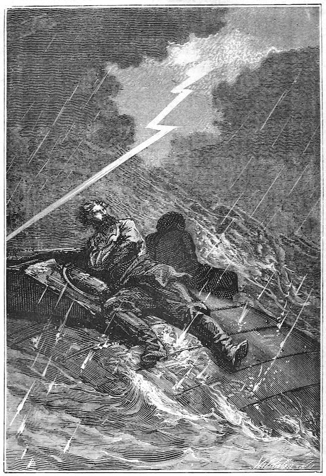
Alquebrado, no limite das forças, arrastei-me de bruços até a escotilha. Abri-a e desci de novo ao salão. A tempestade atingia então seu máximo de intensidade. Era impossível manter-se de pé no interior do Nautilus.
O capitão Nemo voltou por volta da meia-noite. Ouvi os reservatórios encherem-se pouco a pouco, e o Nautilus afundou suavemente abaixo da superfície das ondas.
Pelos vidros abertos do salão, vi grandes peixes espavoridos que passavam como fantasmas nas águas em fogo. Alguns foram fulminados diante de meus olhos!
O Nautilus continuava a descer. Eu pensava que ele reencontraria a calma a uma profundidade de quinze metros. Não. As camadas superiores estavam agitadas com violência excessiva. Foi preciso ir buscar o repouso a cinquenta metros, nas entranhas do mar.
Mas ali, que tranquilidade, que silêncio, que meio pacífico! Quem diria que um furacão terrível se desencadeava então na superfície daquele Oceano?
Em consequência daquela tempestade, tínhamos sido lançados para o leste. Toda esperança de nos evadirmos nas proximidades de Nova York ou do São Lourenço desvanecia-se. O pobre Ned, desesperado, isolou-se como o capitão Nemo. Conseil e eu já não nos separávamos.
Eu disse que o Nautilus se afastara para o leste. Deveria ter dito, mais exatamente, para o nordeste. Durante alguns dias, errou ora na superfície das ondas, ora abaixo delas, no meio daquelas brumas tão temíveis para os navegadores. Devem-se principalmente ao derretimento dos gelos, que mantém uma umidade extrema na atmosfera. Quantos navios perdidos naquelas paragens, quando iam reconhecer os faróis incertos da costa! Quantos sinistros devidos a esses nevoeiros opacos! Quantos choques contra aqueles escolhos cuja ressaca é abafada pelo ruído do vento! Quantas colisões entre os navios, apesar de suas luzes de posição, apesar dos avisos de seus apitos e de seus sinos de alarme!
Por isso o fundo daqueles mares oferecia o aspecto de um campo de batalha onde jaziam ainda todos aqueles vencidos do Oceano; uns velhos e já empastados; outros jovens e refletindo o brilho de nosso farol em suas ferragens e em suas quilhas de cobre. Entre eles, quantos navios perdidos com tudo o que levavam, com suas tripulações, sua multidão de emigrantes, naqueles pontos perigosos assinalados nas estatísticas, o cabo Race, a ilha Saint-Paul, o estreito de Belle-Isle, o estuário do São Lourenço! E, em poucos anos apenas, quantas vítimas fornecidas a esses fúnebres anais pelas linhas do Royal Mail, da Inman, de Montreal: o Solway, o Isis, o Paramatta, o Hungarian, o Canadian, o Anglo-Saxon, o Humboldt, o United States, todos encalhados; o Arctic, o Lyonnais, afundados por abalroamento; o President, o Pacific, o City of Glasgow, desaparecidos por causas ignoradas; sombrios destroços no meio dos quais navegava o Nautilus, como se passasse uma revista dos mortos.
Em 15 de maio, estávamos na extremidade meridional do banco da Terra Nova. Esse banco é um produto dos aluviões marinhos, um acúmulo considerável de detritos orgânicos trazidos seja do Equador pela corrente do Gulf Stream, seja do polo boreal por aquela contracorrente de água fria que costeia a costa americana. Ali também se amontoam os blocos erráticos carregados pelo degelo. Ali se formou um vasto ossuário de peixes, de moluscos ou de zoófitos que perecem aos bilhões.
A profundidade do mar não é considerável no banco da Terra Nova. Algumas centenas de braças, no máximo. Mas, para o sul, cava-se subitamente uma depressão profunda, um buraco de três mil metros. Ali se alarga o Gulf Stream. É um desabrochar de suas águas. Perde em velocidade e em temperatura, mas torna-se um mar.
Entre os peixes que o Nautilus espantou à sua passagem, citarei o ciclóptero de um metro, de dorso escuro e ventre alaranjado, que dá a seus congêneres um exemplo pouco seguido de fidelidade conjugal; um unernack de grande tamanho, espécie de moreia cor de esmeralda, de gosto excelente; karraks de olhos grandes, cuja cabeça tem alguma semelhança com a do cão; blênios, ovovivíparos como as serpentes; góbios-boulerots, ou cadozes negros, de dois decímetros; macrurídeos de cauda longa, brilhando com um fulgor prateado, peixes rápidos, aventurados longe dos mares hiperbóreos.
As redes recolheram também um peixe ousado, audacioso, vigoroso, bem musculoso, armado de espinhos na cabeça e de aguilhões nas nadadeiras, verdadeiro escorpião de dois a três metros, inimigo encarniçado dos blênios, dos gadídeos e dos salmões; era o coto dos mares setentrionais, de corpo tuberculoso, de cor castanha, vermelho nas nadadeiras. Os pescadores do Nautilus tiveram alguma dificuldade para apoderar-se desse animal, que, graças à conformação de seus opérculos, preserva seus órgãos respiratórios do contato dessecante da atmosfera e pode viver algum tempo fora da água.
Cito agora, de passagem, bosquianos, pequenos peixes que acompanham por muito tempo os navios nos mares boreais; ablas-oxirrincos, próprios do Atlântico setentrional; rascassos; e chego aos gadídeos, principalmente à espécie bacalhau, que surpreendi em suas águas prediletas, naquele inesgotável banco da Terra Nova.
Pode-se dizer que esses bacalhaus são peixes de montanha, pois a Terra Nova não passa de uma montanha submarina. Quando o Nautilus abriu caminho através de suas falanges cerradas, Conseil não pôde conter esta observação:
— Ora! Bacalhaus! — disse ele. — Mas eu pensava que os bacalhaus eram chatos como os linguados ou as solhas!
— Ingênuo! — exclamei. — Os bacalhaus só são chatos na mercearia, onde são exibidos abertos e estendidos. Mas na água são peixes fusiformes como as tainhas, perfeitamente conformados para a marcha.
— Quero acreditar, senhor — respondeu Conseil. — Que nuvem, que formigueiro!
— Ah, meu amigo, haveria muito mais, sem seus inimigos, os rascassos e os homens! Sabe quantos ovos se contaram numa única fêmea?
— Façamos as coisas direito — respondeu Conseil. — Quinhentos mil.
— Onze milhões, meu amigo.
— Onze milhões. Eis o que eu nunca admitirei, a menos que os conte eu mesmo.
— Conte-os, Conseil. Mas vai ser mais rápido acreditar em mim. Aliás, é aos milhares que os franceses, os ingleses, os americanos, os dinamarqueses, os noruegueses pescam os bacalhaus. Consomem-se em quantidades prodigiosas e, sem a espantosa fecundidade desses peixes, os mares logo estariam despovoados deles. Assim, só na Inglaterra e na América, cinco mil navios tripulados por setenta e cinco mil marinheiros são empregados na pesca do bacalhau. Cada navio traz em média quarenta mil, o que dá vinte e cinco milhões. Nas costas da Noruega, o mesmo resultado.
— Bem — respondeu Conseil —, confio no senhor. Não os contarei.
— O quê?
— Os onze milhões de ovos. Mas farei uma observação.
— Qual?
— É que, se todos os ovos eclodissem, bastariam quatro bacalhaus para alimentar a Inglaterra, a América e a Noruega.
Enquanto roçávamos os fundos do banco da Terra Nova, vi perfeitamente aquelas longas linhas, armadas de duzentos anzóis, que cada barco estende às dúzias. Cada linha, arrastada por uma ponta por meio de uma pequena fateixa, era retida na superfície por um cabo preso a uma boia de cortiça. O Nautilus teve de manobrar habilmente no meio daquela rede submarina.
Aliás, não permaneceu muito tempo naquelas paragens frequentadas. Subiu até perto do quadragésimo segundo grau de latitude. Era na altura de Saint John’s, na Terra Nova, e de Heart’s Content, onde termina a extremidade do cabo transatlântico.
O Nautilus, em vez de continuar a avançar para o norte, tomou a direção do leste, como se quisesse seguir aquele planalto telegráfico sobre o qual repousa o cabo e cujo relevo sondagens multiplicadas deram com extrema exatidão.
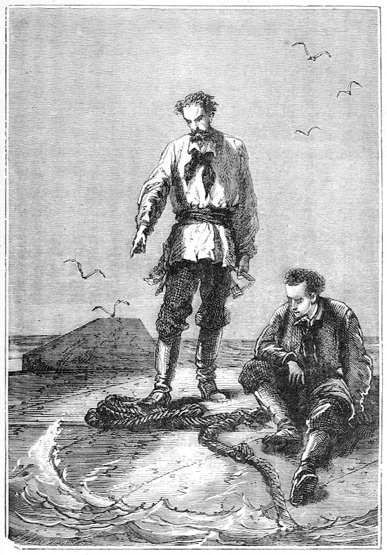
Foi em 17 de maio, a cerca de quinhentas milhas de Heart’s Content, a dois mil e oitocentos metros de profundidade, que avistei o cabo jazendo no solo. Conseil, a quem eu não prevenira, tomou-o primeiro por uma gigantesca serpente marinha e preparava-se para classificá-la segundo seu método habitual. Mas desenganei o digno rapaz e, para consolá-lo de seu dissabor, ensinei-lhe diversas particularidades do assentamento daquele cabo.
O primeiro cabo foi estabelecido durante os anos de 1857 e 1858; mas, depois de ter transmitido cerca de quatrocentos telegramas, deixou de funcionar. Em 1863, os engenheiros construíram um novo cabo, medindo três mil e quatrocentos quilômetros e pesando quatro mil e quinhentas toneladas, que foi embarcado no Great Eastern. Essa tentativa fracassou mais uma vez.
Ora, em 25 de maio, o Nautilus, imerso a três mil oitocentos e trinta e seis metros de profundidade, encontrava-se precisamente no lugar onde se produziu a ruptura que arruinou a empresa. Era a seiscentas e trinta e oito milhas da costa da Irlanda. Percebeu-se, às duas horas da tarde, que as comunicações com a Europa acabavam de ser interrompidas. Os eletricistas de bordo resolveram cortar o cabo antes de pescá-lo de novo e, às onze horas da noite, tinham trazido para cima a parte avariada. Refez-se uma junção e uma emenda; depois, o cabo foi novamente imerso. Mas, alguns dias mais tarde, rompeu-se e não pôde ser recuperado nas profundezas do Oceano.
Os americanos não desanimaram. O audacioso Cyrus Field, promotor da empresa, que nela arriscava toda a sua fortuna, promoveu uma nova subscrição. Ela foi imediatamente coberta. Outro cabo foi estabelecido em melhores condições. O feixe de fios condutores, isolados num invólucro de guta-percha, era protegido por um colchão de matérias têxteis contido numa armadura metálica. O Great Eastern voltou ao mar em 13 de julho de 1866.
A operação correu bem. No entanto, ocorreu um incidente. Várias vezes, ao desenrolar o cabo, os eletricistas observaram que pregos tinham sido recentemente cravados nele com o objetivo de danificar sua alma. O capitão Anderson, seus oficiais, seus engenheiros reuniram-se, deliberaram e mandaram afixar que, se o culpado fosse surpreendido a bordo, seria atirado ao mar sem outro julgamento. Desde então, a tentativa criminosa não se repetiu.
Em 23 de julho, o Great Eastern estava a apenas oitocentos quilômetros da Terra Nova quando lhe telegrafaram da Irlanda a notícia do armistício concluído entre a Prússia e a Áustria depois de Sadowa. No dia 27, avistava no meio das brumas o porto de Heart’s Content. A empresa estava felizmente terminada e, por seu primeiro despacho, a jovem América dirigia à velha Europa estas sábias palavras, tão raramente compreendidas: “Glória a Deus no céu, e paz na terra aos homens de boa vontade.”
Eu não esperava encontrar o cabo elétrico em seu estado primitivo, tal como era ao sair das oficinas de fabricação. A longa serpente, coberta de restos de conchas, eriçada de foraminíferos, estava incrustada num empastamento pedregoso que a protegia contra os moluscos perfuradores. Repousava tranquilamente, ao abrigo dos movimentos do mar, e sob uma pressão favorável à transmissão da centelha elétrica, que passa da América à Europa em trinta e dois centésimos de segundo. A duração desse cabo será sem dúvida infinita, pois se observou que o invólucro de guta-percha melhora com sua permanência na água do mar.
Aliás, naquele planalto tão felizmente escolhido, o cabo nunca está imerso a profundidades tais que possa romper-se. O Nautilus seguiu-o até seu fundo mais baixo, situado a quatro mil quatrocentos e trinta e um metros, e ali ele ainda repousava sem nenhum esforço de tração. Depois, aproximamo-nos do lugar onde ocorrera o acidente de 1863.
O fundo oceânico formava então um vale de cento e vinte quilômetros de largura, sobre o qual se poderia ter colocado o Monte Branco sem que seu cume emergisse da superfície das ondas. Esse vale é fechado a leste por uma muralha a prumo de dois mil metros. Chegamos ali em 28 de maio, e o Nautilus estava a apenas cento e cinquenta quilômetros da Irlanda.
Iria o capitão Nemo subir para aportar às Ilhas Britânicas? Não. Para minha grande surpresa, desceu de novo para o sul e voltou para os mares europeus. Ao contornar a ilha Esmeralda, avistei por um instante o cabo Clear e o farol de Fastnet, que ilumina os milhares de navios saídos de Glasgow ou de Liverpool.
Uma questão importante colocava-se então a meu espírito. Ousaria o Nautilus entrar na Mancha? Ned Land, que reaparecera desde que nos aproximávamos da terra, não parava de me interrogar. Como responder-lhe? O capitão Nemo permanecia invisível. Depois de ter deixado o canadense entrever as costas da América, ia agora mostrar-me as costas da França?
Entretanto, o Nautilus continuava a descer para o sul. Em 30 de maio, passava à vista de Land’s End, entre a ponta extrema da Inglaterra e as Sorlingas, que deixou a estibordo.
Se quisesse entrar na Mancha, teria de rumar francamente para o leste. Não o fez.
Durante todo o dia 31 de maio, o Nautilus descreveu no mar uma série de círculos que me intrigaram vivamente. Parecia procurar um lugar que tinha alguma dificuldade em encontrar. Ao meio-dia, o capitão Nemo veio fazer o ponto ele mesmo. Não me dirigiu a palavra. Pareceu-me mais sombrio que nunca. O que podia entristecê-lo assim? Seria a proximidade das costas europeias? Sentiria alguma lembrança de seu país abandonado? O que sentia então? Remorsos ou saudades? Por muito tempo esse pensamento ocupou meu espírito, e tive como que um pressentimento de que o acaso em breve trairia os segredos do capitão.
No dia seguinte, 31 de junho, o Nautilus manteve as mesmas manobras. Era evidente que procurava reconhecer um ponto preciso do Oceano. O capitão Nemo veio tomar a altura do sol, como fizera na véspera. O mar estava belo, o céu puro. A oito milhas a leste, um grande navio a vapor desenhava-se na linha do horizonte. Nenhum pavilhão tremulava em sua carangueja, e não pude reconhecer sua nacionalidade.
O capitão Nemo, alguns minutos antes que o sol passasse pelo meridiano, pegou seu sextante e observou com extrema precisão. A calma absoluta das ondas facilitava sua operação. O Nautilus, imóvel, não sentia nem balanço nem arfagem.
Eu estava naquele momento na plataforma. Quando terminou sua medição, o capitão pronunciou apenas estas palavras:
— É aqui!
Desceu de novo pela escotilha. Teria visto o navio, que modificava sua marcha e parecia aproximar-se de nós? Não saberia dizer.
Voltei ao salão. A escotilha fechou-se, e ouvi os assobios da água nos reservatórios. O Nautilus começou a afundar seguindo uma linha vertical, pois sua hélice travada já não lhe comunicava nenhum movimento.
Alguns minutos mais tarde, parava a uma profundidade de oitocentos e trinta e três metros e repousava no solo.
O teto luminoso do salão apagou-se então, os painéis abriram-se e, através dos vidros, avistei o mar vivamente iluminado pelos raios do farol num raio de meia milha.
Olhei para bombordo e não vi nada além da imensidão das águas tranquilas.
A estibordo, no fundo, aparecia uma forte intumescência que atraiu minha atenção. Dir-se-iam ruínas sepultadas sob um empastamento de conchas esbranquiçadas, como sob um manto de neve. Examinando atentamente aquela massa, julguei reconhecer as formas espessadas de um navio, sem os mastros, que devia ter afundado pela proa. Esse sinistro datava certamente de uma época remota. Aquele destroço, para estar assim incrustado no calcário das águas, já contava muitos anos passados naquele fundo do Oceano.
Que navio era aquele? Por que o Nautilus vinha visitar seu túmulo? Não fora, então, um naufrágio que arrastara aquele navio para debaixo das águas?
Eu não sabia o que pensar quando, perto de mim, ouvi o capitão Nemo dizer com voz lenta:
— Outrora, este navio chamava-se Marseillais. Levava setenta e quatro canhões e foi lançado em 1762. Em 1778, a 13 de agosto, comandado por La Poype-Vertrieux, batia-se audaciosamente contra o Preston. Em 1779, a 4 de julho, assistia com a esquadra do almirante d’Estaing à tomada de Granada. Em 1781, a 5 de setembro, tomava parte no combate do conde de Grasse na baía de Chesapeake. Em 1794, a República Francesa mudava-lhe o nome. Em 16 de abril do mesmo ano, juntava-se em Brest à esquadra de Villaret-Joyeuse, encarregada de escoltar um comboio de trigo que vinha da América sob o comando do almirante Van Stabel. A 11 e 12 do prairial do ano II, essa esquadra encontrava-se com os navios ingleses. Senhor, hoje é 13 do prairial, 1º de junho de 1868. Há setenta e quatro anos, dia por dia, neste mesmo lugar, a 47° 24′ de latitude e 17° 28′ de longitude, este navio, depois de um combate heroico, desarvorado de seus três mastros, com água nos porões, um terço de sua tripulação fora de combate, preferiu afundar com seus trezentos e cinquenta e seis marinheiros a render-se e, pregando o pavilhão à popa, desapareceu sob as ondas ao grito de: “Viva a República!”
— O Vengeur! — exclamei.
— Sim, senhor. O Vengeur! Um belo nome! — murmurou o capitão Nemo, cruzando os braços.
Aquela maneira de falar, o imprevisto daquela cena, aquele histórico do navio patriota contado primeiro friamente, depois a emoção com que o estranho personagem pronunciara suas últimas palavras, aquele nome de Vengeur, cujo significado não podia escapar-me, tudo se reunia para impressionar profundamente meu espírito. Meus olhares já não deixavam o capitão. Ele, com as mãos estendidas para o mar, contemplava com olhar ardente o glorioso destroço. Talvez eu nunca devesse saber quem ele era, de onde vinha, para onde ia, mas eu via cada vez mais o homem destacar-se do sábio. Não era uma misantropia comum que encerrara nos flancos do Nautilus o capitão Nemo e seus companheiros, mas um ódio monstruoso ou sublime que o tempo não podia enfraquecer.

Procuraria esse ódio ainda vinganças? O futuro em breve mo havia de ensinar.
Entretanto, o Nautilus subia lentamente para a superfície do mar, e vi desaparecerem pouco a pouco as formas confusas do Vengeur. Logo um leve balanço indicou-me que flutuávamos ao ar livre.
Nesse momento, fez-se ouvir uma detonação surda. Olhei para o capitão. O capitão não se mexeu.
— Capitão? — disse eu.
Ele não respondeu.
Deixei-o e subi à plataforma. Conseil e o canadense tinham-me precedido.
— De onde vem essa detonação? — perguntei.
— Um tiro de canhão — respondeu Ned Land.
Olhei na direção do navio que eu avistara. Aproximara-se do Nautilus, e via-se que forçava o vapor. Seis milhas o separavam de nós.
— Que navio é esse, Ned?
— Pelo aparelho, pela altura dos mastros reais — respondeu o canadense —, eu apostaria num navio de guerra. Possa ele vir para cima de nós e afundar, se for preciso, este maldito Nautilus!
— Amigo Ned — respondeu Conseil —, que mal pode ele fazer ao Nautilus? Irá atacá-lo sob as ondas? Irá canhoneá-lo no fundo dos mares?
— Diga-me, Ned — perguntei —, consegue reconhecer a nacionalidade desse navio?
O canadense, franzindo as sobrancelhas, baixando as pálpebras, apertando os olhos nos cantos, fixou durante alguns instantes o navio com toda a força de seu olhar.
— Não, senhor — respondeu ele. — Não saberia reconhecer a que nação pertence. Seu pavilhão não está içado. Mas posso afirmar que é um navio de guerra, pois uma longa flâmula se desenrola na ponta de seu mastro grande.
Durante um quarto de hora, continuamos a observar o navio que se dirigia para nós. Eu não podia admitir, no entanto, que ele tivesse reconhecido o Nautilus àquela distância, e menos ainda que soubesse o que era aquela máquina submarina.
Logo o canadense anunciou-me que aquele navio era um grande vaso de guerra, de esporão, um couraçado de duas cobertas. Uma fumaça negra e espessa escapava de suas duas chaminés. Suas velas ferradas confundiam-se com a linha das vergas. Sua carangueja não trazia nenhum pavilhão. A distância ainda impedia distinguir as cores de sua flâmula, que flutuava como uma fita delgada.
Avançava rapidamente. Se o capitão Nemo o deixasse aproximar-se, uma chance de salvação se oferecia a nós.
— Senhor — disse-me Ned Land —, se esse navio passar a uma milha de nós, eu me atiro ao mar, e aconselho-o a fazer como eu.

Não respondi à proposta do canadense e continuei a olhar o navio, que crescia a olhos vistos. Fosse inglês, francês, americano ou russo, era certo que nos acolheria, se conseguíssemos alcançar seu bordo.
— O senhor há de lembrar-se — disse então Conseil — de que temos alguma experiência de natação. Pode confiar a mim o cuidado de rebocá-lo até esse navio, se lhe convier seguir o amigo Ned.
Eu ia responder quando um vapor branco jorrou na proa do navio de guerra. Depois, alguns segundos mais tarde, as águas, agitadas pela queda de um corpo pesado, salpicaram a popa do Nautilus. Pouco depois, uma detonação feria meu ouvido.
— Como? Estão atirando em nós! — exclamei.
— Boa gente! — murmurou o canadense.
— Então não nos tomam por náufragos agarrados a um destroço!
— Com o perdão do senhor… Bom — fez Conseil, sacudindo a água que uma nova bala fizera jorrar até ele. — Com o perdão do senhor, eles reconheceram o narval e estão canhoneando o narval.
— Mas devem ver bem — exclamei — que estão lidando com homens.
— Talvez seja por isso! — respondeu Ned Land, olhando para mim.
Toda uma revelação se fez em meu espírito. Sem dúvida, sabia-se agora o que pensar da existência do pretenso monstro. Sem dúvida, em seu abalroamento com a Abraham Lincoln, quando o canadense o atingiu com seu arpão, o comandante Farragut reconhecera que o narval era um barco submarino, mais perigoso que um cetáceo sobrenatural?
Sim, devia ser assim, e em todos os mares, sem dúvida, perseguia-se agora aquela terrível máquina de destruição!
Terrível, de fato, se, como se podia supor, o capitão Nemo empregava o Nautilus numa obra de vingança! Naquela noite em que nos aprisionou na cela, no meio do Oceano Índico, não teria ele atacado algum navio? Aquele homem, agora enterrado no cemitério de coral, não teria sido vítima do choque provocado pelo Nautilus? Sim, repito. Devia ser assim. Uma parte da misteriosa existência do capitão Nemo revelava-se. E, se sua identidade não era conhecida, pelo menos as nações coligadas contra ele caçavam agora não mais um ser quimérico, mas um homem que lhes votara um ódio implacável!
Todo esse passado formidável apareceu a meus olhos. Em vez de encontrar amigos naquele navio que se aproximava, só podíamos encontrar ali inimigos sem piedade.
Entretanto, as balas multiplicavam-se à nossa volta. Algumas, encontrando a superfície líquida, iam em ricochete perder-se a distâncias consideráveis. Mas nenhuma atingiu o Nautilus.
O navio couraçado estava então a apenas três milhas. Apesar de seu violento canhoneio, o capitão Nemo não aparecia na plataforma. E, no entanto, uma daquelas balas cônicas, atingindo perpendicularmente o casco do Nautilus, ter-lhe-ia sido fatal.
O canadense disse-me então:
— Senhor, devemos tentar tudo para sair desta enrascada. Façamos sinais! Com mil diabos! Talvez compreendam que somos pessoas honestas!
Ned Land pegou seu lenço para agitá-lo no ar. Mas mal o desdobrara quando, derrubado por uma mão de ferro, apesar de sua força prodigiosa, caiu no convés.
— Miserável! — exclamou o capitão. — Queres então que eu te pregue no esporão do Nautilus antes que ele se precipite contra esse navio?
O capitão Nemo, terrível de ouvir, era ainda mais terrível de ver. Seu rosto empalidecera sob os espasmos do coração, que devia ter parado de bater por um instante. Suas pupilas tinham-se contraído pavorosamente. Sua voz já não falava, rugia. Com o corpo inclinado para a frente, torcia com a mão os ombros do canadense.
Depois, largando-o e voltando-se para o navio de guerra, cujas balas choviam à sua volta:
— Ah! Tu sabes quem sou, navio de uma nação maldita! — exclamou com sua voz poderosa. — Eu não precisei de tuas cores para te reconhecer! Olha! Vou mostrar-te as minhas!
E o capitão Nemo desfraldou na proa da plataforma um pavilhão negro, semelhante ao que já plantara no polo sul.
Nesse momento, uma bala, atingindo obliquamente o casco do Nautilus sem o danificar, e passando em ricochete perto do capitão, foi perder-se no mar.
O capitão Nemo deu de ombros. Depois, dirigindo-se a mim:
— Desça — disse-me num tom breve —, desça, o senhor e seus companheiros.
— Senhor — exclamei —, vai então atacar esse navio?
— Senhor, vou afundá-lo.
— O senhor não fará isso!
— Farei — respondeu friamente o capitão Nemo. — Não se atreva a julgar-me, senhor. A fatalidade mostra-lhe o que o senhor não devia ver. O ataque veio. A resposta será terrível. Entre.
— Esse navio, qual é?
— Não sabe? Pois bem, tanto melhor! Sua nacionalidade, pelo menos, continuará a ser um segredo para o senhor. Desça.
O canadense, Conseil e eu só podíamos obedecer. Uns quinze marinheiros do Nautilus cercavam o capitão e olhavam com um implacável sentimento de ódio aquele navio que avançava para eles. Sentia-se que o mesmo sopro de vingança animava todas aquelas almas.
Desci no momento em que um novo projétil arranhava mais uma vez o casco do Nautilus, e ouvi o capitão exclamar:
— Atira, navio insensato! Desperdiça tuas balas inúteis! Não escaparás ao esporão do Nautilus. Mas não é neste lugar que deves perecer! Não quero que tuas ruínas vão confundir-se com as ruínas do Vengeur!
Voltei para meu quarto. O capitão e seu imediato tinham ficado na plataforma. A hélice foi posta em movimento. O Nautilus, afastando-se com velocidade, pôs-se fora do alcance das balas do navio. Mas a perseguição continuou, e o capitão Nemo contentou-se em manter a distância.
Por volta das quatro horas da tarde, não podendo conter a impaciência e a inquietação que me devoravam, voltei à escada central. A escotilha estava aberta. Arrisquei-me na plataforma. O capitão ainda andava ali com passo agitado. Olhava o navio, que ficava a sotavento a cinco ou seis milhas. Girava em torno dele como uma fera e, atraindo-o para o leste, deixava-se perseguir. No entanto, não atacava. Talvez ainda hesitasse?
Quis intervir uma última vez. Mas mal interpelara o capitão Nemo, este, impondo-me silêncio:
— Eu sou o direito, eu sou a justiça! — disse-me ele. — Eu sou o oprimido, e ali está o opressor! Foi por ele que tudo o que amei, estimei, venerei, pátria, mulher, filhos, meu pai, minha mãe, eu vi tudo perecer! Tudo o que odeio está ali! Cale-se!
Lancei um último olhar ao navio de guerra, que forçava o vapor. Depois, fui juntar-me a Ned e a Conseil.
— Fugiremos! — exclamei.
— Bem — fez Ned. — Que navio é esse?
— Não sei. Mas, seja qual for, será afundado antes da noite. Em todo caso, mais vale perecer com ele do que tornar-se cúmplice de represálias cuja equidade não se pode medir.
— É a minha opinião — respondeu friamente Ned Land. — Esperemos a noite.
A noite chegou. Um profundo silêncio reinava a bordo. A bússola indicava que o Nautilus não modificara sua direção. Eu ouvia o batimento de sua hélice, que golpeava as ondas com uma rápida regularidade. Mantinha-se na superfície das águas, e um leve balanço levava-o ora para um bordo, ora para o outro.
Meus companheiros e eu tínhamos resolvido fugir no momento em que o navio estivesse bastante próximo, seja para nos fazermos ouvir, seja para nos fazermos ver, pois a lua, que devia estar cheia três dias depois, resplandecia. Uma vez a bordo daquele navio, se não pudéssemos prevenir o golpe que o ameaçava, ao menos faríamos tudo o que as circunstâncias nos permitissem tentar. Várias vezes julguei que o Nautilus se dispunha para o ataque. Mas ele se contentava em deixar o adversário aproximar-se e, pouco tempo depois, retomava sua marcha de fuga.
Parte da noite passou-se sem incidente. Espreitávamos a ocasião de agir. Falávamos pouco, emocionados demais. Ned Land teria querido precipitar-se ao mar. Obriguei-o a esperar. Segundo eu, o Nautilus devia atacar o navio de duas cobertas na superfície das ondas, e então seria não só possível, mas fácil fugir.
Às três horas da manhã, inquieto, subi à plataforma. O capitão Nemo não a deixara. Estava de pé, na proa, perto de seu pavilhão, que uma leve brisa desfraldava acima de sua cabeça. Não tirava os olhos do navio. Seu olhar, de uma intensidade extraordinária, parecia atraí-lo, fasciná-lo, arrastá-lo mais seguramente do que se o tivesse a reboque!
A lua passava então pelo meridiano. Júpiter erguia-se no leste. No meio daquela natureza tranquila, o céu e o Oceano rivalizavam em serenidade, e o mar oferecia ao astro das noites o mais belo espelho que jamais refletira sua imagem.
E, quando eu pensava nessa calma profunda dos elementos, comparada a todas aquelas cóleras que fermentavam nos flancos do imperceptível Nautilus, sentia estremecer todo o meu ser.
O navio estava a duas milhas de nós. Aproximara-se, avançando sempre para aquele clarão fosforescente que assinalava a presença do Nautilus. Vi suas luzes de posição, verde e vermelha, e seu farol branco suspenso no estai grande do traquete. Uma vaga reverberação iluminava seu aparelho e indicava que as fornalhas eram levadas ao extremo. Feixes de faíscas, escórias de carvões inflamados, escapando de suas chaminés, estrelavam a atmosfera.
Fiquei assim até as seis horas da manhã, sem que o capitão Nemo parecesse ter-me percebido. O navio ficava a uma milha e meia de nós e, com os primeiros clarões do dia, seu canhoneio recomeçou. Não podia estar longe o momento em que, atacando o Nautilus seu adversário, meus companheiros e eu deixaríamos para sempre aquele homem que eu não ousava julgar.
Preparava-me para descer a fim de preveni-los quando o imediato subiu à plataforma. Vários marinheiros o acompanhavam. O capitão Nemo não os viu ou não quis vê-los. Tomaram-se certas disposições que se poderiam chamar o “posto de combate” do Nautilus. Eram muito simples. O cabo que formava balaustrada em volta da plataforma foi baixado. Do mesmo modo, as cabines do farol e do timoneiro entraram no casco, de maneira a apenas aflorá-lo. A superfície do longo charuto de chapa já não oferecia uma só saliência que pudesse estorvar sua manobra.
Voltei ao salão. O Nautilus continuava emerso. Alguns clarões matinais infiltravam-se na camada líquida. Sob certas ondulações das ondas, os vidros animavam-se dos rubores do sol nascente. Erguia-se aquele terrível dia 2 de junho.
Às cinco horas, a barquilha ensinou-me que a velocidade do Nautilus se moderava. Compreendi que ele se deixava aproximar. Aliás, as detonações faziam-se ouvir com mais violência. As balas lavravam a água circundante e aparafusavam-se nela com um assobio singular.
— Meus amigos — disse eu —, chegou o momento. Um aperto de mão, e que Deus nos guarde!
Ned Land estava resoluto, Conseil calmo, eu nervoso, mal me contendo.
Passamos à biblioteca. No momento em que eu empurrava a porta que se abria para a caixa da escada central, ouvi a escotilha superior fechar-se bruscamente.
O canadense lançou-se para os degraus, mas eu o detive. Um assobio bem conhecido ensinava-me que a água penetrava nos reservatórios de bordo. De fato, em poucos instantes, o Nautilus mergulhou a alguns metros abaixo da superfície das ondas.
Compreendi sua manobra. Era tarde demais para agir. O Nautilus não pensava em golpear o navio de duas cobertas em sua couraça impenetrável, mas abaixo de sua linha de flutuação, onde a carapaça metálica já não protege o costado.
Estávamos aprisionados de novo, testemunhas forçadas do sinistro drama que se preparava. Aliás, mal tivemos tempo de refletir. Refugiados em meu quarto, olhávamo-nos sem pronunciar uma palavra. Um estupor profundo apoderara-se de meu espírito. O movimento do pensamento parava em mim. Eu me encontrava naquele estado penoso que precede a espera de uma detonação pavorosa. Esperava, escutava, só vivia pelo sentido da audição!
Entretanto, a velocidade do Nautilus aumentou sensivelmente. Era o impulso que tomava assim. Todo o seu casco fremia.
De repente, soltei um grito. Houve um choque, mas relativamente leve. Senti a força penetrante do esporão de aço. Ouvi arranhões, raspagens. Mas o Nautilus, levado por sua força de propulsão, passava através da massa do navio como a agulha do veleiro através da lona!

Não pude aguentar. Louco, desvairado, lancei-me para fora de meu quarto e precipitei-me no salão.
O capitão Nemo estava lá. Mudo, sombrio, implacável, olhava pelo painel de bombordo.
Uma massa enorme afundava sob as águas e, para nada perder de sua agonia, o Nautilus descia no abismo com ela. A dez metros de mim, vi aquele casco entreaberto, onde a água entrava com um ruído de trovão, depois a dupla linha dos canhões e as amuradas. O convés estava coberto de sombras negras que se agitavam.

A água subia. Os infelizes lançavam-se às enxárcias, agarravam-se aos mastros, torciam-se sob as águas. Era um formigueiro humano surpreendido pela invasão de um mar!
Paralisado, enrijecido pela angústia, os cabelos eriçados, o olho desmesuradamente aberto, a respiração incompleta, sem fôlego, sem voz, eu também olhava! Uma atração irresistível colava-me ao vidro!
O enorme navio afundava lentamente. O Nautilus, seguindo-o, espiava todos os seus movimentos. De repente, produziu-se uma explosão. O ar comprimido fez voar as cobertas do navio, como se o fogo tivesse atingido os paióis. O impulso das águas foi tal que o Nautilus se desviou.
Então o infeliz navio afundou mais rapidamente. Seus cestos de gávea, carregados de vítimas, apareceram, depois suas vergas, vergando sob cachos de homens, enfim o topo de seu mastro grande. Depois a massa escura desapareceu, e com ela aquela tripulação de cadáveres arrastados por um formidável redemoinho…
Voltei-me para o capitão Nemo. Aquele terrível justiceiro, verdadeiro arcanjo do ódio, continuava olhando. Quando tudo terminou, o capitão Nemo, dirigindo-se para a porta de seu quarto, abriu-a e entrou. Segui-o com os olhos.
No painel do fundo, abaixo dos retratos de seus heróis, vi o retrato de uma mulher ainda jovem e de duas crianças pequenas. O capitão Nemo olhou-os durante alguns instantes, estendeu-lhes os braços e, ajoelhando-se, desfez-se em soluços.
Os painéis tinham-se fechado sobre aquela visão aterradora, mas a luz não fora devolvida ao salão. No interior do Nautilus, só havia trevas e silêncio. Ele deixava aquele lugar de desolação, a cem pés sob as águas, com uma rapidez prodigiosa. Aonde ia? Para o norte ou para o sul? Para onde fugia aquele homem depois daquela horrível represália?
Eu voltara para meu quarto, onde Ned e Conseil se mantinham em silêncio. Sentia um horror insuperável pelo capitão Nemo. Por mais que tivesse sofrido da parte dos homens, ele não tinha o direito de punir assim. Fizera de mim, senão o cúmplice, pelo menos a testemunha de suas vinganças! Já era demais.
Às onze horas, a claridade elétrica reapareceu. Passei ao salão. Estava deserto. Consultei os diversos instrumentos. O Nautilus fugia para o norte com uma rapidez de vinte e cinco milhas por hora, ora na superfície do mar, ora a trinta pés abaixo dela.
Feita a marcação na carta, vi que passávamos à entrada da Mancha e que nossa direção nos levava para os mares boreais com uma velocidade incomparável.
Mal podia eu apreender, em sua rápida passagem, esqualos de nariz comprido, tubarões-martelo, pata-roxas que frequentam aquelas águas, grandes águias-do-mar, nuvens de hipocampos, semelhantes aos cavalos do jogo de xadrez, enguias agitando-se como os buscapés de um fogo de artifício, exércitos de caranguejos que fugiam obliquamente cruzando as pinças sobre a carapaça, enfim bandos de toninhas que rivalizavam em rapidez com o Nautilus. Mas observar, estudar, classificar, já não era o caso então.
À noite, tínhamos percorrido duzentas léguas do Atlântico. Fez-se a sombra, e o mar foi invadido pelas trevas até o nascer da lua.
Voltei para meu quarto. Não consegui dormir. Era assaltado por pesadelos. A horrível cena de destruição repetia-se em meu espírito.
Desde aquele dia, quem poderá dizer até onde nos arrastou o Nautilus naquela bacia do Atlântico norte? Sempre com uma velocidade inapreciável! Sempre no meio das brumas hiperbóreas! Tocou ele as pontas de Spitzbergen, as escarpas da Nova Zembla? Percorreu aqueles mares ignorados, o mar Branco, o mar de Kara, o golfo do Ob, o arquipélago de Liakhov e aquelas praias desconhecidas da costa asiática? Não saberia dizer. O tempo que passava, eu já não podia avaliá-lo. A hora fora suspensa nos relógios de bordo. Parecia que a noite e o dia, como nas regiões polares, já não seguiam seu curso regular. Eu me sentia arrastado para aquele domínio do estranho onde se movia à vontade a imaginação sobre-excitada de Edgar Poe. A cada instante, esperava ver, como o fabuloso Gordon Pym, “aquela figura humana velada, de proporções muito mais vastas que as de qualquer habitante da terra, lançada através daquela catarata que defende os acessos do polo”!
Calculo (mas talvez me engane), calculo que essa corrida aventurosa do Nautilus se prolongou durante quinze ou vinte dias, e não sei quanto teria durado sem a catástrofe que terminou esta viagem. Do capitão Nemo, já não se falava. De seu imediato, tampouco. Nenhum homem da tripulação ficou visível um só instante. Quase incessantemente, o Nautilus flutuava sob as águas. Quando subia à superfície a fim de renovar seu ar, as escotilhas abriam-se ou fechavam-se automaticamente. Nenhum ponto marcado no planisfério. Eu não sabia onde estávamos.
Direi também que o canadense, no limite das forças e da paciência, já não aparecia. Conseil não conseguia arrancar-lhe uma só palavra e temia que, num acesso de delírio e sob o domínio de uma nostalgia assustadora, ele se matasse. Vigiava-o, pois, com uma dedicação de todos os instantes.
Compreende-se que, nessas condições, a situação já não era sustentável.
Uma manhã (em que data, não saberia dizer), eu adormecera nas primeiras horas do dia, sonolência penosa e doentia. Quando acordei, vi Ned Land inclinado sobre mim e ouvi-o dizer-me em voz baixa:
— Vamos fugir!
Ergui-me.
— Quando fugimos? — perguntei.
— Na próxima noite. Toda vigilância parece ter desaparecido do Nautilus. Dir-se-ia que o estupor reina a bordo. Estará pronto, senhor?
— Sim. Onde estamos?
— À vista de terras que acabo de avistar esta manhã no meio das brumas, a vinte milhas a leste.
— Que terras são essas?
— Não sei, mas, sejam quais forem, nos refugiaremos nelas.
— Sim, Ned! Sim, fugiremos esta noite, ainda que o mar nos trague!
— O mar está ruim, o vento violento, mas vinte milhas a fazer nessa leve embarcação do Nautilus não me assustam. Consegui levar para lá alguns víveres e algumas garrafas de água sem o conhecimento da tripulação.
— Eu o seguirei.
— Aliás — acrescentou o canadense —, se eu for surpreendido, me defenderei, me farei matar.
— Morreremos juntos, amigo Ned.
Eu estava decidido a tudo. O canadense deixou-me. Fui à plataforma, onde mal conseguia manter-me contra o choque das ondas. O céu estava ameaçador, mas, já que a terra estava ali naquelas brumas espessas, era preciso fugir. Não devíamos perder nem um dia nem uma hora.
Voltei ao salão, temendo e desejando ao mesmo tempo encontrar o capitão Nemo, querendo e não querendo mais vê-lo. O que lhe teria dito? Poderia esconder-lhe o horror involuntário que ele me inspirava? Não! Mais valia não me encontrar face a face com ele! Mais valia esquecê-lo! E, no entanto!
Como foi longo aquele dia, o último que eu devia passar a bordo do Nautilus! Eu permanecia só. Ned Land e Conseil evitavam falar-me, por medo de se trair.
Às seis horas, jantei, mas não tinha fome. Obriguei-me a comer, apesar de minhas repugnâncias, não querendo enfraquecer-me.
Às seis e meia, Ned Land entrou em meu quarto. Disse-me:
— Não nos veremos de novo antes da partida. Às dez horas, a lua ainda não terá nascido. Aproveitaremos a escuridão. Venha ao escaler. Conseil e eu o esperaremos lá.
Depois o canadense saiu, sem me dar tempo de responder-lhe.
Quis verificar a direção do Nautilus. Fui ao salão. Corríamos para nor-nordeste com uma velocidade assustadora, a cinquenta metros de profundidade.
Lancei um último olhar àquelas maravilhas da natureza, àquelas riquezas da arte amontoadas naquele museu, àquela coleção sem rival destinada a perecer um dia no fundo dos mares com aquele que a formara. Quis fixar em meu espírito uma impressão suprema. Fiquei assim uma hora, banhado nos eflúvios do teto luminoso e passando em revista aqueles tesouros que resplandeciam sob suas vitrines. Depois voltei ao meu quarto.
Ali, vesti sólidas roupas de mar. Reuni minhas notas e guardei-as preciosamente comigo. Meu coração batia com força. Eu não conseguia conter suas pulsações. Certamente, minha perturbação, minha agitação me teriam traído aos olhos do capitão Nemo.
O que fazia ele naquele momento? Escutei à porta de seu quarto. Ouvi um ruído de passos. O capitão Nemo estava lá. Não se deitara. A cada movimento, parecia-me que ele ia aparecer-me e perguntar-me por que eu queria fugir! Eu sentia sobressaltos incessantes. Minha imaginação aumentava-os. Essa impressão tornou-se tão pungente que me perguntei se não valeria mais entrar no quarto do capitão, vê-lo face a face, desafiá-lo com o gesto e com o olhar!
Era uma inspiração de louco. Contive-me felizmente e estendi-me na cama para acalmar em mim as agitações do corpo. Meus nervos acalmaram-se um pouco, mas, com o cérebro sobre-excitado, revi numa rápida lembrança toda a minha existência a bordo do Nautilus, todos os incidentes felizes ou infelizes que a tinham atravessado desde meu desaparecimento da Abraham Lincoln: as caçadas submarinas, o estreito de Torres, os selvagens da Papuásia, o encalhe, o cemitério de coral, a passagem de Suez, a ilha de Santorini, o mergulhador cretense, a baía de Vigo, a Atlântida, a banquisa, o polo sul, o aprisionamento nos gelos, o combate dos polvos, a tempestade do Gulf Stream, o Vengeur e aquela horrível cena do navio afundado com sua tripulação!… Todos esses acontecimentos passaram diante de meus olhos, como aqueles panos de fundo que se desenrolam ao fundo de um teatro. Então o capitão Nemo crescia desmesuradamente naquele meio estranho. Seu tipo acentuava-se e assumia proporções sobre-humanas. Já não era meu semelhante, era o homem das águas, o gênio dos mares.
Eram então nove e meia. Eu segurava a cabeça com as duas mãos para impedi-la de explodir. Fechava os olhos. Não queria mais pensar. Ainda meia hora de espera! Meia hora de um pesadelo que podia enlouquecer-me!
Nesse momento, ouvi os vagos acordes do órgão, uma harmonia triste sob um canto indefinível, verdadeiros lamentos de uma alma que quer romper seus laços terrestres. Escutei com todos os sentidos ao mesmo tempo, respirando apenas, mergulhado, como o capitão Nemo, naqueles êxtases musicais que o arrastavam para fora dos limites deste mundo.
Depois, um pensamento súbito aterrorizou-me. O capitão Nemo deixara seu quarto. Estava naquele salão que eu devia atravessar para fugir. Ali eu o encontraria uma última vez. Ele me veria, talvez me falasse! Um gesto seu podia aniquilar-me, uma só palavra acorrentar-me a seu bordo!
Entretanto, as dez horas iam soar. Chegara o momento de deixar meu quarto e juntar-me a meus companheiros.
Não havia o que hesitar, ainda que o capitão Nemo se erguesse diante de mim. Abri a porta com precaução e, no entanto, pareceu-me que, ao girar nos gonzos, ela fazia um ruído assustador. Talvez esse ruído só existisse em minha imaginação!
Avancei rastejando pelos corredores escuros do Nautilus, parando a cada passo para conter os batimentos de meu coração.
Cheguei à porta angular do salão. Abri-a devagar. O salão estava mergulhado numa escuridão profunda. Os acordes do órgão ressoavam fracamente. O capitão Nemo estava lá. Não me via. Creio até que, em plena luz, não me teria percebido, tanto seu êxtase o absorvia inteiramente.
Arrastei-me sobre o tapete, evitando o menor choque cujo ruído pudesse trair minha presença. Precisei de cinco minutos para alcançar a porta do fundo, que dava para a biblioteca.
Ia abri-la quando um suspiro do capitão Nemo me pregou no lugar. Compreendi que ele se levantava. Entrevi-o até, pois alguns raios da biblioteca iluminada se filtravam até o salão. Veio em minha direção, de braços cruzados, silencioso, deslizando mais que andando, como um espectro. Seu peito oprimido inchava-se de soluços. E ouvi-o murmurar estas palavras (as últimas que me feriram o ouvido):
— Deus todo-poderoso! Basta! Basta!
Era a confissão do remorso que escapava assim da consciência daquele homem?…
Desvairado, precipitei-me na biblioteca. Subi a escada central e, seguindo o corredor superior, cheguei ao escaler. Entrei nele pela abertura que já dera passagem a meus dois companheiros.
— Partamos! Partamos! — exclamei.
— Imediatamente! — respondeu o canadense.
O orifício aberto na chapa do Nautilus foi previamente fechado e aparafusado por meio de uma chave inglesa de que Ned Land se munira. A abertura do escaler fechou-se igualmente, e o canadense começou a desaparafusar as porcas que ainda nos prendiam ao barco submarino.
De repente, fez-se ouvir um ruído interior. Vozes respondiam-se com vivacidade. O que estava acontecendo? Teriam percebido nossa fuga? Senti que Ned Land me punha um punhal na mão.
— Sim! — murmurei. — Saberemos morrer!
O canadense interrompera seu trabalho. Mas uma palavra, vinte vezes repetida, uma palavra terrível, revelou-me a causa daquela agitação que se propagava a bordo do Nautilus. Não era a nós que sua tripulação visava!
— Maelstrom! Maelstrom! — gritava ela!
O Maelstrom! Poderia um nome mais assustador, numa situação mais assustadora, ressoar a nosso ouvido? Encontrávamo-nos, pois, naquelas perigosas paragens da costa norueguesa? O Nautilus era arrastado para aquele sorvedouro no momento em que nosso escaler ia soltar-se de seus flancos?
Sabe-se que, no momento do fluxo, as águas apertadas entre as ilhas Feroe e Lofoten precipitam-se com uma violência irresistível. Formam um turbilhão do qual nenhum navio jamais conseguiu sair. De todos os pontos do horizonte acorrem ondas monstruosas. Elas formam aquele sorvedouro justamente chamado o “Umbigo do Oceano”, cujo poder de atração se estende até uma distância de quinze quilômetros. Ali são aspirados não só os navios, mas as baleias e também os ursos-brancos das regiões boreais.
Foi ali que o Nautilus (involuntariamente, ou talvez voluntariamente) fora metido por seu capitão. Descrevia uma espiral cujo raio diminuía cada vez mais. Como ele, o escaler, ainda preso a seu flanco, era levado com uma velocidade vertiginosa. Eu o sentia. Experimentava aquela tontura doentia que sucede a um movimento de giro prolongado demais. Estávamos no pavor, no horror levado ao auge, a circulação suspensa, a influência nervosa aniquilada, atravessados de suores frios como os suores da agonia! E que ruído em volta de nosso frágil escaler! Que mugidos o eco repetia a uma distância de várias milhas! Que fragor o daquelas águas quebradas contra as rochas agudas do fundo, lá onde os corpos mais duros se quebram, lá onde os troncos de árvores se desgastam e se fazem “uma pelagem de pelos”, segundo a expressão norueguesa!
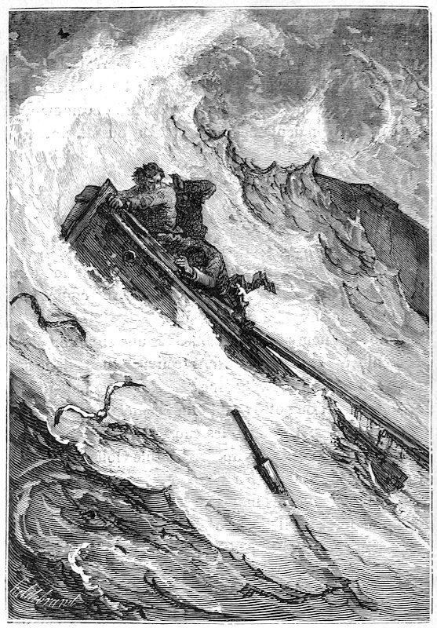
Que situação! Éramos sacudidos horrivelmente. O Nautilus defendia-se como um ser humano. Seus músculos de aço estalavam. Às vezes erguia-se, e nós com ele!
— É preciso aguentar firme — disse Ned — e aparafusar de novo as porcas! Ficando presos ao Nautilus, ainda podemos nos salvar…!
Não terminara de falar quando se produziu um estalo. As porcas cederam, e o escaler, arrancado de seu alvéolo, foi lançado como a pedra de uma funda no meio do turbilhão.
Minha cabeça bateu contra uma caverna de ferro e, com esse choque violento, perdi os sentidos.

Eis a conclusão desta viagem sob os mares. O que se passou durante aquela noite, como o escaler escapou ao formidável redemoinho do Maelstrom, como Ned Land, Conseil e eu saímos do sorvedouro, não saberei dizer. Mas, quando voltei a mim, estava deitado na cabana de um pescador das ilhas Lofoten. Meus dois companheiros, sãos e salvos, estavam junto de mim e apertavam-me as mãos. Abraçamo-nos efusivamente.
Neste momento, não podemos pensar em regressar à França. Os meios de comunicação entre a Noruega setentrional e o sul são raros. Sou, pois, obrigado a esperar a passagem do barco a vapor que faz o serviço quinzenal do Cabo Norte.
É, portanto, ali, no meio daquela boa gente que nos recolheu, que revejo o relato destas aventuras. Ele é exato. Nenhum fato foi omitido, nenhum detalhe foi exagerado. É a narração fiel desta inverossímil expedição sob um elemento inacessível ao homem, e cujos caminhos o progresso tornará livres um dia.
Acreditarão em mim? Não sei. Pouco importa, afinal. O que posso afirmar agora é meu direito de falar destes mares sob os quais, em menos de dez meses, percorri vinte mil léguas, desta volta ao mundo submarina que me revelou tantas maravilhas através do Pacífico, do Oceano Índico, do mar Vermelho, do Mediterrâneo, do Atlântico, dos mares austrais e boreais!
Mas o que foi feito do Nautilus? Terá resistido aos abraços do Maelstrom? O capitão Nemo ainda vive? Prossegue sob o Oceano suas terríveis represálias, ou deteve-se diante desta última hecatombe? As ondas trarão um dia aquele manuscrito que encerra toda a história de sua vida? Saberei enfim o nome daquele homem? O navio desaparecido nos dirá, por sua nacionalidade, a nacionalidade do capitão Nemo?
Espero que sim. Espero igualmente que seu poderoso aparelho tenha vencido o mar em seu sorvedouro mais terrível e que o Nautilus tenha sobrevivido onde tantos navios pereceram! Se assim for, se o capitão Nemo ainda habita aquele Oceano, sua pátria de adoção, possa o ódio apaziguar-se naquele coração feroz! Que a contemplação de tantas maravilhas apague nele o espírito de vingança! Que o justiceiro se apague, que o sábio continue a pacífica exploração dos mares! Se seu destino é estranho, é também sublime. Não o compreendi eu mesmo? Não vivi dez meses dessa existência extranatural? Por isso, à pergunta feita há seis mil anos pelo Eclesiastes, “Quem jamais pôde sondar as profundezas do abismo?”, dois homens entre todos os homens têm agora o direito de responder. O capitão Nemo e eu.
Cerca de 106 metros. O pé inglês tem apenas 30,40 centímetros.↩︎
Espécie de cais próprio de cada navio.↩︎
Pequenos barcos a vapor que fazem o serviço dos grandes vapores.↩︎
Faca de lâmina larga que um americano sempre traz consigo.↩︎
Criado a bordo de um navio a vapor.↩︎
E justamente fala-se de uma descoberta desse gênero, na qual um novo jogo de alavancas produz forças consideráveis. Ter-se-ia o inventor encontrado com o capitão Nemo? — J. V.↩︎
Pequenas nuvens brancas e leves, recortadas nas bordas.↩︎